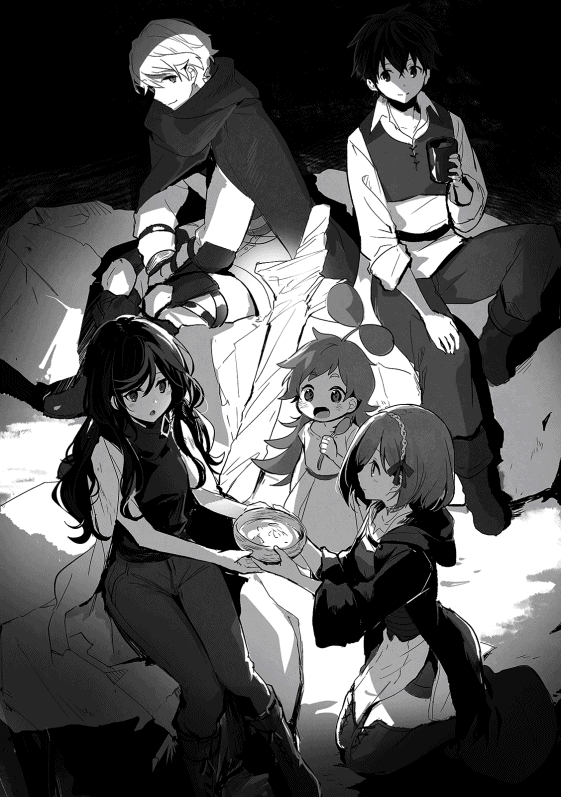

| 【合本版1-3巻】異世界は思ったよりも俺に優しい？ | |
| 大川雅臣 | |
| TOブックス (2019) | |
※本電子書籍は「異世界は思ったよりも俺に優しい？」１〜３巻を１冊にまとめた合本版です。
ＣＯＮＴＥＮＴＳ
このコンテンツは『異世界は思ったよりも俺に優しい？』１〜３巻を収録しています。
イラスト：景
デザイン：木村デザイン・ラボ
■プロローグ
世界線を越えて意思を伝える魔法石。
全てはこの魔法石を見付けた時から始まった。
今度の春休みが明ければ高校一年になる俺は、会う機会が少なくなる同級生と別れを惜 しむように放課後の時間を使い、普段とは違う寄り道をして、普段より遅く家路につく。
一人になるといつものように、物足りなさとそれがなんだかわからない苛立 ちが沸 き起こり、抑えきれない気持ちを持て余していた。だから気を逸 らす為に何か夢中になる物を探し、ゲームやラノベの世界にのめり込むことが多くなっていた。
俺は他人に言われるまでもなく幸せだと思う。厳しさもあるが正しい両親と、なんの遠慮も無く気持ちを晒 すことが出来る双子の弟に妹。そして必要な物で満たされた裕福な家庭だ。足りない物なんか何も無い。俺自身もそこそこ成績が良く、そこそこモテて、そこそこ運動もこなせたし、大抵のことは思い通りにことが運んだ。
なのに何時も渇望 していた。何をと言われると困るが家族でも物でもステータスでもない、満たされない何かが常にあり焦燥感 に駆 られていた。そんな何かは非日常──ゲームやラノベの世界によって埋められていく。そしてなんとなくわかった。俺は自分という存在を強く求められることに渇望していると。今更中二病でもないだろうが、そうだと言われれば納得するしかない。ならば初めから認めようじゃないか。俺は物語の主人公になりたいのだと。
■世界線を越えて
季節は冬の終わり。暗い庭先で梅の木も花を咲かせていたし、あと一ヶ月もすれば桜も花咲くだろう。その頃に俺は一五歳になる。みんなより大分遅い誕生日だ。
そのせいもあってか友達の中ではひとり身長が低く、高校生になっても小柄な方だ。それは年頃な男としては少し憂鬱 でもあったが、まだ成長期は残っているので期待はしている。
玄関の扉を開ける前に今一度、蕾 が開き始めた白い梅の花を見る。普段なら気にも留めなかったけど、目の端に薄 らと青い光を放つ何かに気が付いたからだ。もし月明かりが出ていたら気にもしないくらい弱い光だった。
「蛍 ？」
最初に思い浮かんだのは蛍。こんな時期にこんな場所でとも思ったが、他に庭先で発光するような物が思い当たらなかった。
光源を確認するように──いや、どちらかと言えば誘われるように木の枝に近づくと、青く光るそれは蛍ではなく人工的な加工が施された石だとわかった。それが枝に引っかかるようにしてそこに留まっている。少し強く風が吹けば転がり落ちて、きっと気付かずにいただろう。だが、それは俺の目に留まった。
綺麗だったからという訳でも無いが、特に警戒することもなくその発光する石を手に取ると、その石が何かノイズのような音を響かせていることに気付く。初めは耳鳴りかと思ったが、そういうものではないようで、なんとなくノイズを聞き取ろうと石を耳に当てる。
『......この.........か』
確かに何らかの音が聞こえた。しかし、音が聞こえるだけで、言葉として認識出来る物ではなく、音楽としても認識出来ない。俺はさらに石を強く耳に押し当て、その音に集中する。
『......だれ......か、近くにいませんか......』
「なっ!? 」
焦って耳から手を離すと、石がこぼれ落ちて地面を転がっていく。それでも石は青く発光を続け、瞬 くように光を放っていた。
大半の人間は自分の理解を超える状況が発生すると、その事象から逃げるか、その事象の原因を追及すると聞いたことがある。中には動じず放っておく人もいるだろうが珍しいだろう。
この場合の俺は、原因の追及をする方だった。なぜ原因の追及をするのか。それは単純にわからないことが怖いからだ。ホラー映画で怖くても目が離せない、あれと同じようなものだ。
再び石を取り上げて耳に当てる。先程と同じようにその音に集中する。
『......のですね、お願いです、返事をして頂けませんか』
「なっ!? 」
石が再び手からこぼれ落ち地面に転がる。二度目だ。でも、確かに聞き取れた。一度認識したせいか、今度はハッキリと聞こえている。空耳とかではなく明らかに人の声だ。
とりあえず危険性は無いと判断したところで少し落ち着いた。
「石が言葉を話すとかあり得ないだろ」
再び拾い上げた石を耳に当てたところで、思いが言葉となる。
『き、聞こえます、本当に人の声ですね！』
「!? 」
流石に今度は落とさなかったが、独り言に返事が返ってくるとは思わず、かなり焦ったのは確かだ。石が言葉を話すという事実が非現実過ぎて、理解が追いつかなくなる。普段からアニメだラノベだと非日常物を楽しんでいるのに、それが自分に身に起きたとなれば全く現実について行けない。
『はじめまして。私はリーゼロットと申します。貴方様のお名前を伺ってもよろしいでしょうか』
石に自己紹介されたのは日本でも、いや世界でも俺だけだろう。しかも敬語だ。俺より礼儀正しい石だ。
「お、俺は結城 彰人 」
答える自分も自分だと思ったが、会話が成り立つのか確認したかった。相手が石とは言えその声は落ち着きがあり聞き心地が良く、少し気が高ぶってしまう。だから警戒心よりも興味が勝るのは仕方がないだろう。
もちろん気が高ぶるのは石と会話をするという未知の体験に対するもので、その声が喜びに弾む女の子の声に似ているからではない。だって石だし。
『アキトさんですね。私のことはリゼットと呼んでください。お話が出来て良かったです。もう何方 かに声が届くことはないと諦め掛けていました』
俺は石と話す自分を客観視して、そりゃ諦めるだろと考えた。それでもなぜ俺が石と話しているのかと聞かれれば、予感としか言いようが無い。渇望していた何かが満たされていく、そんな予感に内心では心が躍っていた。
「彰人 でいいよ、リゼット。それと敬語はいらない。出来れば普通に話して欲しい」
フレンドリーな俺にはフレンドリーな会話が必要だ。ぶっちゃけると敬語とか話せない。
『わかりました、アキト』
「しかし、何で話すことが出来るんだ？」
疑問がそのまま言葉として出た。
『もちろん、魔法のおかげです』
もちろん 魔法のおかげなのか。いつの間にか石も魔法で話すのが普通という時代になっていたとは。そもそも石が意思を持って話すとかどんな冗談だ。もしかして世の中に存在する物は、全て人には伝わらないだけで意思を持っているということか。
俺は馬鹿か、違うだろ！
そもそも魔法という時点で違う。普通に魔法が発達しているような世界は魔法に頼るだけ科学が遅れているはずだ。少なくても俺の知識にあるアニメやラノベの世界じゃそれが普通だ。例外もあるが王道はあくまでも魔法が主であって、今の日本にはその欠片 も存在しない。つまり、魔法は一般的じゃない。
もし本当に魔法が使える世界だというのなら、俺は間違いなくその道を突き進んでいるはずだ。だから俺が魔法を使えないと言うことは、一般的ではないと言うことだ。証明問題なら満点だな。
「そもそも何で日本語を話せるんだ？」
再び疑問が声に出た。隠し事の出来ない男とは俺のことである。
『ニホン語というのは恐らくアキトが話している言葉だと思いますが、私がアキトの言葉を理解出来るのも、アキトが私の言葉を理解出来るのも、意思を伝達する魔法のおかげです』
これも魔法か。まぁ石に石語とか話されても困るからな。
「ん？ 意思を......ってことは、考えていることが伝わるってことか」
『考えていることとは少し違います。伝えたいと思って言葉にする意思が必要ですから。考えただけで伝わる訳ではないので安心してください。それに波長が合わない人とは話すことが出来ません』
波長ってなんだ。気が合うみたいなものか。
『でも、波長が合う人と話をしていると、今のように意思の伝達ではなく、いずれお互いの国の言葉を理解して話せるようになりますから便利ですよ』
「はぁ？ ......いやいや、なんかさらっと凄 いこと言っているぞ！」
『そうでしょうか？』
つまり俺はこの石と波長が合うと言うことだな。どうせなら犬とか猫ならもう少し違う世界が見えたのに......石はどうしたって石だろ。特技は波長の合う人と話せて青く発光するくらいか。夜道を照らすには光量が足りないな。そして、俺の特技は石語が話せます、か。特異すぎて自慢にすらなりそうにないし。
『ねぇアキト。あなたのことを、あなたの住んでいる世界のことを教えてもらえませんか』
「住んでいる世界？ 余りプライベートなことじゃなければ構わないけど、代わりに同じことを質問させてもらってもいいか？」
『えっ、同じですか......うーん、そうですよね。......少し恥ずかしいですけれど、わかりました』
恥ずかしいなら聞くなよと思わず突っ込みそうになったが、堪 える。
『それじゃまずは、アキトの住んでいる所のことから教えてください』
そしてわかったのは、俺の想像以上にこの石は凄いということだった。俺はリゼットの質問に次々と答え、同じ質問をしていく。
傍 から見れば、庭先で梅の木の方を向いて石との会話にのめり込んでいる様にしか見なかっただろう。とても不審だが、この時の俺はそんなことに気が回らなかった。
庭先で魔法石を見付けてから二週間が過ぎていた。正確には念波転送石 と言うらしいが、そのリゼットと名乗る魔法石と出会ってからの俺は、ほぼ毎日と言って良いほど彼女と会話をしていた。もう十分友達と言える程度には親しくなっただろう。
結論から言うとリゼットは石ではなかった。それどころか貴族の伯爵 御令嬢 様だった。
まぁ、当たり前か。いくら魔法が存在すると言っても石は石だ。魔法があると想定した上で落ち着いて考えれば、一種の携帯電話のような物だと思い付くべきだった。どうやら俺は石が話し掛けてくるという非現実的な状況で、冷静さを失っていたようだ。
正しくはリーゼロット・エルヴィス・フォン・ウェンハイム辺境伯爵令嬢。紛 うことなき生粋 のお嬢様で、同じ歳だけど落ち着いたしっかりした子だ。
そしてもう一つ、リゼットのいる世界は俺が住んでいる世界とは異なる場所だとわかった。もちろん本当なのだろう。なにせ俺の住む世界において魔法は存在しないのだから。
それを聞いた時の俺は、リゼットが寝落ちするまで一晩中話し続けるというはた迷惑なことをしてしまった。それでもリゼットは「困った人」と一言だけで済ませてくれた。
俺はリゼットとの会話の中で様々なことを学んだ。未知に対する会話は楽しく、リゼットにとっては現実でも俺にとってはゲームかラノベの世界の話で、夢中になるのは直 ぐだった。
リゼットは俺の疑問に全て答えてくれた。その博学っぷりに学生なのかと聞いてみれば、何故思い付かなかったのかと思うような答えが返ってきた。
『そうですねぇ......アキトの世界で言う職業にあたるもので言いますと、私は魔術師になると思います』
なんと魔術師ときた！
石を通じて異世界と会話をするとか確かに魔法っぽいが、携帯電話があるせいかいまいち魔法っぽく無かった。でも具体的に魔術師という言葉が出てくると、一気にそれっぽくなる。
「魔術師と言えば魔法、魔法と言えばアレだな。空から隕石を降らせたり、大地に亀裂 を生じさせてマグマを噴出 させたり、雨雲を呼び起こして雷で敵を討ったりするアレだよな!? 」
『残念ながらアレと言う存在では無さそうですね。そこまで大規模な魔法は私の知る限り伝説の中にしか存在しません。せいぜい天恵 と呼ばれるものの中に、それに近いものがあると言うくらいでしょう』
「な、無いのか!? 」
『魔法は魔力が理 に従って顕現 するか、魔力を対価として精霊が事象として具現化するものですから、人の持つ魔力で使える魔法には自 ずと限界があります』
流石にゲームやラノベのようにはいかないらしい。だが、この世界の知識を利用すれば革命的に発展する可能性だって残っているはずだ。
「そういう場合は電池とか発電機を使うように魔力を増幅すれば良いんじゃ無いか」
『電気と言いましたでしょうか？ それに似た様な物として魔石という魔力を内包した物がありますね。いまアキトと会話をする為に使っている念波転送石は魔石の一つですよ』
どうやら魔石というのは電池のように使い、生活レベルを向上させる物らしい。電気ほどで手軽に使える訳では無いけど、生活必需品という程度には需要があるとか。
既に使われている技術では魔法の発展にはなり得ないか。流石にぱっと浮かぶような案では駄目なようだが、一つ一つ試していけば可能性はあるはずだ。
ちなみに魔石を専門に集める人たちもいて、俺の世界の言葉で言えば冒険者とか探索者あるいは狩人 というものに近いらしい。
出て来たじゃ無いかファンタジーの定番である冒険者が！
「冒険者がいるなら雷を呼び起こす剣技とか、炎を纏 った格闘術とかならあるんじゃないか!? 」
魔法が地味なら技術 に期待すれば良い！
『......ご期待に添えないようです。私の知る限り存在しないかと』
なかった......残念だ......。これはあれか、思ったよりも魔法が研究されていないのだろうか。俺に魔法が使えるならまず最初に試すことなんだが。俺の考えって普通だよな。もしかしてアニメの見すぎってやつなのか。
まぁ、気を取り直そう。俺は視点を変えることにする。
「魔法があるなら魔法生物......魔物がいたりするのか？」
『アキトの世界で魔という言葉と同じかわかりませんが、魔物と呼ばれる存在はいます。動物が強い魔力によって変異した存在だと言われていますね。一般的にはベースとなる動物より気性が荒く強靱 な肉体を持っているのが特徴です』
若干ニュアンスは違う気もするが、人間の脅威として存在するという意味では似たような物か。だとすれば──
「もしかしてドラゴンとかもいるのか？」
『世界を構成する三種族に数えられている、竜族がいます』
いた！ 見てみたい！ 映画とかじゃなく、実際に動いているとか......想像するだけで震えるな！
『他の二種は精霊族と巨人族ですね。いずれも人と生活圏を共にすることが無く、出会うことすら希 と言われています。一番身近なのが精霊族でしょうか。今は精霊魔法が最も広まっていますから』
巨人族に精霊族。まさにファンタジー世界だ。夢が広がるな。
『アキトの世界にはいないのですか？』
「残念ながら空想や伝説の中......いや、そうとも言い切れないな。中生代 だからだいたい二億五〇〇〇万年前から六五〇〇万年前くらいには、魔物やドラゴンと言ってもいいような動物がいたな」
『......気も遠くなるような長い歴史があるのですね』
確かに数字で見ると凄い昔の話だな。この国の平均寿命が八〇歳代ということを考えればどれだけ馬鹿げた数字か......。考え方を変えると、リゼットは恐竜がいた時代に生きているようなものか。そんな中でも魔法が使えればそれなりにコミュニティを維持することが出来るということだ。そう、たとえ地味だとしても魔法が使えれば色々と可能性が広がる。
魔法を使えるリゼットがいて、魔法が存在するというのだ。ならば次にすることは決まっている！
俺は興味の赴くまま魔法について訊く。わかったことは、魔法には幾つかの系統があり、リゼットは召喚魔法と古代魔法が得意で精霊魔法が使えないということだった。
「俺も魔法を覚えてみたいんだ。是非教えて欲しい！」
『無理だと思います』
あっさり否定された!?
魔法が使えない理由はいくつかあるらしい。
一つは単純に素質。これは試してみないとわからないが一番重要だ。
二つ目は魔力不足。魔法を使うには魔力が必要であり、人の内包する魔力量は上限がある。きちんと鍛錬を続けて増やした人ならともかく、素人の俺では魔力量が殆ど無いだろうということだ。
ちなみに魔力その物は誰でも持っているが、魔法に関わる人以外は鍛錬をすることもないので、微々たる量らしい。
そして三つ目は魔封印の呪い。人は生まれながら呪いにより魔法を事象として具現化する力を制限されていた。それは特別な魔法具によって解呪することが出来るけど、その魔法具がこの世界には存在しない為だ。この呪いは遺伝性があり、親が解呪していても子供には再び呪いが掛かってしまうらしい。
「実に残念でならない......」
リゼットと知り合う前なら魔法は空想のものだという認識があったので、ここまで落胆はしなかっただろう。だが魔法その物としか言い様がない存在を前にして、それが使えないと言われれば残念で仕方がない。
「いや待てよ、一つ目は仕方ない。でも二つ目は鍛錬次第で、三つ目はそもそも呪いが俺にも掛かっているかどうか不明じゃないか。むしろ俺には掛かってない可能性の方が高くないか？」
『確かにそうですね。呪いの効果がアキトの世界にまで及んでいると考える方が不自然かもしれません』
「それではリゼット先生、よろしくお願いします」
『先生ですか、少し嬉しい響きですね』
冗談半分だったが、リゼットは本当に嬉しいみたいだ。そういえばここ最近はずっと俺に付き合わせているけれど、家族とか友達とかとはきちんと時間を取れているのだろうか。
「なぁ、リゼット。何時もこっちの都合で付き合わせている俺が言うのもどうかと思うけど、家族や友達とかは大丈夫か？」
『......そうですね、大丈夫でしょう。アキトは平気ですか？』
さっきとは打って変わって随分と気落ちした感じで、流石 に鈍い俺でも気付くことはある。今までに家族や友達のことを話すこともあったが、リゼットからは適当にはぐらかされた感じだった。俺だって世の中の家族がみんな上手くいっているとは思っていない。だから敢 えて突っ込むことはしなかったが、もしかしたらリゼットはボッチかも知れない......。
「全く問題ないさ。ところでリゼットが得意な魔法ってなんになるんだ？」
『召喚魔法と言いたいところですが、古代魔法でしょうか』
リゼットの目下 の楽しみは召喚魔法の基礎理論研究だという。精霊魔法が全く使えない代わりに、召喚魔法に関しては類い希なる才能があったらしく、古代魔法と合わせて研究中の異世界転移魔法はリゼットのオリジナル魔法だとか。この世界に念波転送石が来たのも実験の成果らしい。
なぜ召喚魔法を研究していたのかと聞けば、とても大切なことだと回りくどく色々と話してくれたが、要約すればボッチだったから精霊を友達にと考えていた様だ。
もちろん本人はそんなことを一言も言っていない。これは本人の名誉に関わることなので、空気の読める俺は黙っておくことにする。賢く落ち着いた感じで、何処か大人びていると思われたリゼットが見せる少女らしい部分でもあった。
「それで召喚魔法か」
『まるで子供の夢物語ですよね。内緒ですよ』
リゼットは少し茶目っ気混じりに言葉を返す。俺も深くは触れず、そのまま話題を変えていく。
魔法の話は俺の興味の尽きることがなく、いつかのようにまた「困った人」と言われないように自重するのが大変だった。
物足りなさを残したまま会話を終えた俺は、念波転送石を机に置き、既に冷たくなっていたコーヒーカップを手に取る。
苦い......。
冷えたコーヒーは思ったよりも苦く、飲み残す。そして椅子から立つと、窓を開けて夜の空気を部屋に取り込む。新緑の香りを含む風が、少し濁った部屋の空気を心地良いものに変えていく。
視線を外に送ると高台の公園に立つ桜の木が、月の光を受け静かに存在を主張していた。
リゼットに出会ったのは冬の寒さも残っていた三月。咲いていた梅の花は、主役交代とばかりにその役割を桜の木に譲っていた。
花見をするには寂しい、たった一本の桜。それはまるで念波転送石越しに呼び掛けていたリゼットの孤独を体現しているようで、家族のことを話した時の気の落ちようが気になった。
「相談に乗るには遠すぎるよな......」
言いようのないもどかしさが残った。
高校入学の準備期間として少し長めの春休みは、リゼットと過ごすことが多かった。こう言うとまるで恋人のようだが、実際には石を手放さなかったという程度の話だ。
現実と非現実......いや、もうリゼットのことは非現実とは言えないな。リゼットは確かに何処 かの世界に存在し、俺と同じように生きている。だから二つの現実とほどほどに折り合いを付けながら、どちらとも大切に付き合っていた。
ある意味忙しい毎日を送っている内に、いつか持っていた渇望や焦燥といった気持ちも何処かへ消えていた、この間までは......。
「たまたま忙しいだけに決まっている」
リゼットとの通信が途絶えてから一週間、意思を伝える念波転送石が言葉を発することは無かった。リゼットの身に何かあったのか。そもそも念波転送石が壊れてしまったのか。わからないまま時間だけが過ぎていく。
俺の中でリゼットの存在は随分と大きく育っていたようで、連絡の取れない日々は消えていた感情を募らせた。
外へ出る気にもなれず部屋に閉じ籠 もって待ち続ける。せめて同じ世界にいるならば、困っていても助けることが出来た。本当の友達にもなれただろうし、リゼットを守るくらいは出来ただろう。異世界転移魔法を完成させ、一緒にこの世界へ来れば安心出来る場所も提供出来た。
「遠すぎだよ、リゼット」
異世界なんか俺の手に負える話じゃない。聞きかじった知識で魔法を試してみたが、当然のように念波転送石が反応を示すことはなかった。今更俺から連絡を取る手段が無いことに気付く。
深く眠れない日が続き、満たされていた気持ちが苛立ちに変わるように、少しずつ心が荒れていくのがわかった。
好きだったゲームやラノベに集中出来ず、部屋に籠もって念波転送石が光を放つのを待ち続け、それにも望みを失う。感情が体を動かし、念波転送石を握りしめた手を振り上げてゴミ箱に向かって叩き付けようとした時、握りしめた指の間から青い光がこぼれ始め、薄暗くなっていた部屋を照らした。それはまだ一週間しか経っていないのに、懐かしい光だった。
『アキト......た、助けてくださ......い......』
一週間ぶりに聞こえてきたリゼットの声は今にも消え入りそうで、悲痛に満ちていた。それでもしっかりと届いた声に、わだかまりなんか全部すっ飛んでいた。
「リゼット、何があった!? 」
『ご、ごめんなさい、私なんてことを......すみません、今のは忘れてください』
思わず零 れた。そんな言葉だったかも知れない。でもその思いは確かに届いていた。それを忘れられるほど他人とは思っていない。
「忘れられるはずがないだろ！」
『......まず先に突然音信を断ったことを謝罪します。ごめんなさい、アキト......』
言いたいことはいっぱいあったが、聞きたい言葉はそれじゃなかった。
「欲しいのは謝罪なんかじゃない。何があったんだリゼット？ 俺が力になれることは無いのか！」
『訳があって、こうして会話をするのはこれが最後になると思います』
言葉だけを聞けば何を勝手なと思うところだが、リゼットの望んだ結果でないことは明らかだ。だとすれば原因は外的要因だろう。
「リゼット。図々しいと笑うかも知れないけど、俺はリゼットと友達だと思っている。それは迷惑なほど勝手な思いだったか？」
『迷惑なんてそんな、そんなことありません。あるはずがありません！』
「ならわかってくれ。友達にこんな最後を告げられても納得いかない！」
『アキト......わかりました。全てをお話しいたします』
少しだけ躊躇 いを含むように話すリゼットによると、今は伯爵領を離れて地方都市に幽閉状態と言うことだ。
「幽閉......何か危険があるのか!? 」
『いえ、むしろその危険から守る為とも言えます』
「何がどうなってそんな話になった？」
『私の住む世界で一五歳と言うと、爵位の継承権が確定します。今まではあくまでも候補でしたが』
確かリゼットはもうすぐ成人すると言っていた。成人して継承権が確定するという言葉だけを聞けばおめでたい話のように聞こえるが、それじゃリゼットの悲痛な思いは何処から来た？
『通常は成人した嫡男 が継承し、長女であっても他に男子がいれば継承順位が下がります。私には義弟がいますので成人すれば、私の継承順位は第二位になるでしょう。でも義弟が成人する前に当主が亡くなると、現在正当な継承権を持つ者は私だけになります』
「それを望まない者が多い？」
『はい』
幽閉になる事の発端は、滅多に外出出来ないリゼットが義母の命令でたまたま外出した際、暗殺者と思われる集団に襲われたからだった。物盗りの盗賊としては明らかにおかしい行動だったらしい。護衛を付けての外出だったが、多くの者が犠牲になったとか。
「リゼットに怪我は無かったんだな!? 」
『私は怪我一つありません』
ホッとした。大怪我で寝込んでいるとか聞かされたら冷静じゃいられない。
リゼット自身は護衛の奮起もあり無事だったらしいが、今は安全の為に生まれた領を遠く離れ、幽閉暮らしになっていた。ただ、そこは今までとは勝手が違い、魔法に関する書物も無ければ道具も無い、本当に生きていくだけの場所だとか。それはこの念波転送石に魔力を供給する手段が無くなったことを示し、今日が最後というのはまさにそれが原因だった。
俺は何もしてやれないもどかしさを晴らすように質問を続ける。
「この後はどうなる？」
『いずれは義弟が継ぐ予定の爵位ですが、義弟に何かがあった場合は私が夫を迎え入れて爵位を継承することになります。二番目の義弟はまだ乳飲み子ですから、成人するまで父が健全であるとは限りません。もしもがあれば私が継承することもあるでしょう。今回、私が生き延びたことで義母は残念に思っているでしょうね』
「なっ！ それって......」
暗に黒幕は義母と言っているよな？
そう思っても、それを俺は言葉に出来なかった。血が通ってないとは言 え家族じゃないか。そんなこと......。
でも確かに可能性としては一番高いのかもしれない。今までは手を出さなかったけど、正式に爵位継承権が発生するのは見過ごせないといった所か。
義母がそういう性格なら同じことをやり返される──つまり義弟に暗殺者が向けられる可能性を考えるだろう。リゼットがそんなことをしないとしても、疑心暗鬼に陥った義母がどう動くかはわからない。側にいればそうした軋轢 が強くなっていく気はするな。
『これが私の住んでいる世界......いいえ、私の知る世界ですね』
言い直した言葉に、リゼットの生きる世界の狭さを感じた。
「家族仲良くって訳にはいかないんだな」
他人が羨むほど幸せな家庭に育った俺には、理解が出来ないことが多い。
『そうですね。ですが、貴族に生まれたおかげで私はこうして魔法を使うことも出来ます。アキトと、と......友達になれました。全部が悪かったとは思いません』
魔法を使う為には魔封印の呪いを解く必要があると聞いている。その為には高価な魔法具が必要で、平民だったら簡単に手に入れられるものでもない。それに豊富な魔法に関する資料がなければリゼットは転移魔法の研究も出来ず、こうして話すことはなかったとも言える。
「だけど、辛すぎだよ」
たった一四歳の少女が家族に命を狙われるとか、励ます為の言葉すら思い付かない。
『仕方が無いのです。私は少し立場が特殊ですから』
「特殊？」
『私が黒い髪の持ち主だからです』
「は？」
『理解は難しいでしょうね。これは私の国の建国にまつわる話ですから』
リゼットは正当な貴族の血を引きながらも、黒い髪を持つことで忌み嫌われていた。忌み嫌われる理由は、世界で災厄をもたらした魔人の髪の色が黒かったからだという。
リゼットの住む国の貴族は、厄災の魔人を打ち倒した勇者の末裔 に当たるらしい。その正統なる後継者の髪が黒いことは、貴族にとって禁忌 とされていた。
「そうは言っても髪の色くらいでか？」
『この国にとってあの厄災とも言える出来事は、矢面に立って戦った貴族の心に確かな恐怖として植え付けられているのです』
およそ七〇〇年前の話らしく、平民の間では髪の色など殆ど意識されなくなったと言うが、情報を伝えていく文化のある貴族の間では未だ禁忌として残っているとか。俺からすれば髪の色くらい些細なことと思えるが、それは他人事だからだろう。
その国で待望の第一子としてリゼットが生まれた時、黒い髪を持っていたことで母親は強く叱責 され、その怒りはリゼットの命さえ脅かすほどだったという。
産後の経過が良くなかった母親はそんな状況を嘆き、リゼットを最後まで庇う様にして亡くなった。それを見て父親は贖罪 の意味も込めてリゼットの命を残す。
リゼットに母親の記憶は無い。それでもリゼットは、自分の存在が間接的に母親の命を奪ったという事実だけは認識していた。
「......父親を許せないか？」
聞いてからハッとする。これ以上は俺の興味でしかない。
「わるい、立ち入りすぎた」
『構いません。貴族であれば父でなくてもそうしたでしょう。それでも私は生きてここにいますから、今はそれで十分です』
親子という関係より貴族という立場の方が上に来るのか......。
結局、子供とは認められても一緒に暮らしたことは殆ど無く、隠すように育てられた為、極稀 に顔を合わせる程度だったとか。
『護衛の方々の奮戦で私の身は無事でしたが、大きな被害が出ています。私は父のことを少し誤解していたかもしれません。冷たい父であると思っていましたが、そうあることで私を守っていたとも取れます。必要以上の護衛を用意くださったのも父ですから。そのおかげで今生きていられるのですから、これもやはり父なりの愛情──または謝罪なのでしょうね』
黒い髪のことも有り、正妻の長女でありながら社交の場に出ることも無く、本来であれば決まっているような婚約もまだだという。
リゼットは現在一四歳だから、俺の感覚から言うと随分早い婚約だとも思うが、歴史的に王族や貴族は早婚だと言うくらいの知識はあった。それについてリゼットがどう思っているのかは流石に訊けなかったが。
そんな立場にいるリゼットだが、それでも法は法。ウェンハイム家の長女として生まれたリゼットは成人すれば義弟に次ぐ第一位の爵位継承権があった。結果として今までにも、暗殺事件ほど露骨でもないにしろ事故のような形で命の危険に晒されたことはあったらしい。
「俺はリゼットの立場とか全然考えていなかった。自分の興味があることだけを聞いて満足していた。それで友達とか、言った自分が恥ずかしいよ」
『そんなアキトに救われてもいたのですよ』
気兼ねなく話せる。そんな関係を築けた相手はそう多くいないらしい。ボッチだとは思っていたが、それも考えを改める必要がある。望もうと周りがそれを許さない環境だった以上、本人にはどうすることも出来なかったのだから。
今更だが、魔法や世界のことばかりで無くリゼット自身にも興味を持て、とあの時の俺に言いたい！
『それに、魔法だけで言えば随分と得意なのですよ』
「どういうことだ？」
リゼットが一四歳にしてここまで魔術に精通していたのは、リゼットが一般的に行われるはずの貴族教育を受けられずにいたことが原因だった。
リゼットは他の貴族から隠されるように、離れの館に軟禁されて育った。そこは幸いにして魔法に関する書物庫として扱われていた場所で、唯一の楽しみとして魔術の研究にのめり込んでいったのは自然だった。
普通なら礼儀作法や社交界知識などで費やされる時間の全てを、魔法技術の錬磨と研究に費やしていったのだ。それ故同世代においてリゼットの魔法技術は抜きん出ていると言えるのだろう。
そしてリゼットにとっては魔法だけが身を守る手段であり、外との接点を得る唯一の手段でもあった。だから平和に暮らす貴族と比べれば本気で魔法に取り組むのもまた自然だった。
『もっとも、貴族として魔法の力が強いことはステータスですから、当然当主には魔力の強い者が求められています。義弟と大きな差があるようでは醜聞 もあると考えているのかも知れません』
「終わっていないじゃないか。まだ危険はあるってことだろ？」
『その為の幽閉でしょう。今すぐに危険があるということはありません』
「だけど、あんまりだろ......」
『私は殆ど家の外に出ることがなかったので、アキトの話を聞くのは楽しかった。出来ればアキトの世界に生まれたかった......』
「良いじゃないか！」
リゼットの零した言葉に俺は本音を感じていた。思わず言葉にしたことを後悔するようなそんな思いが伝わってきて、俺も考えるより先に反応していた。だが、俺も本心だ。
「転移魔法でこっちの世界に来いよ。俺の家は幸いにして豊かな方だからリゼットが一人増えた所でなんてことは無い。なんなら理事長権限で学校にだって行けるさ。そうすれば友達も増えるな」
転移魔法はリゼットが研究中の魔法だ。召喚魔法と古代魔法を組み合わせた魔法で、人が世界を越えられる魔法だったはず。
『転移魔法はまだ検証段階です。今は召喚しか出来ませんので』
「それじゃ、俺を呼べばいい」
『えっ!? 』
リゼットの驚くような声が、念波転送石を伝わってくる。しかし、そんな感情の溢れた様子も冷静さを取り戻すように一瞬で消えた。
『確かに念波転送石で繋いでいるこの状態なら可能だと思います。でも転移魔法、それも異世界転移魔法となれば試したことすらありません。......無理です』
「リゼット、やってみようぜ」
『アキト......諦めてください。もし転移魔法でアキトがこの世界に来ることが出来たとしても、再びアキトの世界に戻す方法は仮説の段階です。帰れなくなります』
「そこは天才魔術師が頑張って双方向転移魔法を完成させれば良いじゃないか。もちろん俺も手伝う」
『無茶なことを押しつけないでください......』
「失敗したらどうなる？」
『特に何も起こりません』
あれ、何も起こらないのか？
危険に巻き込むと言うから、てっきり失敗すると異次元の彼方 に飛ばされて大変なことになるとか、魔力が暴走して廃人になるとかあるのかと思ったが。
「何も？ 爆発とかも？」
『それは魔法を失敗したのでは無く爆発の魔法を使ったことになります。一般論として魔法が失敗するということは何も事象が発生しないということです』
成功して具現化するか失敗して何も起きないかのどちらかになるってことか。
「危険がないなら良いじゃないか。試してみよう！」
『先程も言いましたけれど危険はあります。戻れなくなる危険に、私の問題に巻き込まれる危険、それにこちらの世界はアキトの世界より争いごとが身近です。他にも、町中までは滅多に来ないとしても魔物や魔人族が人を襲うこともあります』
確かにリゼットの言う危険もあるのだろう。でも俺の中には力になりたい、今の状況から救ってあげたいと思う気持ちがあった。リゼットの意思とは裏腹に心が助けてとこぼし、俺はそれを聞いているのだから。
もちろん理由はそれだけじゃない。
「リゼット、何故俺の世界に念波転送石を送った？」
『それは......』
一つだけ不思議に思っていた。世界線を越えて転移が出来るなら、同一世界で転移することも出来るし、むしろその方が容易だろう。だけどリゼットは異世界転移に拘 った。
「それは異世界への思いがあるからだ。そしてそれは俺も同じなんだ」
『えっ？』
「リゼットが望み、俺も望んだ。その結果俺の手元に念波転送石が現れた。これが物語なら、もう既に始まっていると思わないか？」
念波転送石の魔力が切れれば二度とリゼットと話すことは出来ない。だからこの機会を逃せば、俺は再び渇望と焦燥に飲まれる日々を送るだろう。そしてリゼットがどうなったかを思い続ける。......そんなことは耐えられない。
「ここまできてお互い遠慮するのは止めようぜ。俺がリゼットを助けたいと思う気持ちは嘘じゃない。でもそれだけじゃないんだ。リゼットの住む世界を俺も見てみたい。そんな世界があると知ってから、俺はずっとそれだけを考えていた」
『アキト......』
「リゼット、素直な気持ちが知りたい」
『......アキト......来てくれますか？ いえ、来てくださいアキト。助けてください......もう一人は耐えられない......』
「もちろんだ！ 何かあっても必ず力になる！」
■異世界転移魔法
『私が言い出したことですが、本当によろしいのですか？』
リゼットの言葉が念波転送石を通じて俺の意識に伝わってくる。
「もちろんだ」
『わかりました。それでは横になって気持ちを落ち着けてください』
俺は自室のベッドに横たわり、呼吸を整える。
『念波転送石がこちらとの相互位置を繋ぎます。何があっても絶対に放さないでください。もし念波転送石を手放せばアキトの魂魄 と肉体は目標を失い、永遠に時間と空間の狭間を彷徨 うと考えられます。これは魔法の失敗では無く具現化の結果になります』
さすがにそれは御免被 りたい。俺は念波転送石を手の中に感じ、強く握りしめる。
「よし、リゼット始めてくれ」
『異世界転移魔法を開始します......』
天から光が差すような演出も、足下に魔法陣が発生するような演出も、激しい爆発に見舞われるような演出も、特になんの前触れも無くそれは起こった。
「ぐ......っ！ ......がはっ！」
体中が痛むというより細胞の一つ一つが引き離され分解されていくような、全身に走る電気的な痛みで意識が遠のき、再び痛みで覚醒する。
耐えることすら許されない痛みが続き、俺は死ぬのかと朧気 な意識の中で感じた時、誰かの励ます声が聞こえた。次の瞬間、突然の浮遊感と共に全身を襲っていた痛みが消えていく。
「ほ、本当に、死ぬかと思った」
気が付けば時間の感覚が全くなかった。一秒とも一年とも思えるような曖昧な時間と空間の中で、自分の意識だけを感じていた。
ここは何処だ？ 何が起きた？ 異世界転移魔法は成功したのか？
周りには何も無い、色も感じなかった。暗いでもなく、明るいでもなく、何も存在しない。この感覚はなんだ。自分自身がエネルギー体のような感覚だ。意識だけがそこに存在し、肉体の感覚が全くなかった。
異世界転移魔法に失敗して、俺はこの世界で彷徨っているのか？ 不安と焦りで思考が定まらない。
さっきの声はリゼットじゃないのか？
「何処にいるリゼット？ どうしたら良い、教えてくれ!! 」
俺は世界線の向こうにいるはずのリゼットを求める。すると、そう意識したからかどうか、何も無い空間に青く光る蛍の様な光が見えた。念波転送石から零れる光と同じだ。
俺が見覚えのあるその光に意識を向けると、光はどんどん強まっていく。光源は小さいのに目を閉じてなお、眩しさに意識が飛びそうになる。肉体が無いのだから、目を瞑 れないのか。
あまりの眩しさに気を失いそうになる中で、光の奔流が次第に収束していく。そして光が失われると、意識だけだった俺に肉体の感覚が蘇 ってきた。同時に、最初と同じ強烈な痛みが全身を貫く。
「ぐぐ......が......あああぁあ......っ！」
またかよっ！
霞 む意識の中、最初と違う点があった。それは肉体に宿る新たな力の存在だ。
「っ!? 」
痛みに堪える中で不意に重力を感じたが、天地もわからない。ただ体を打ち付ける感覚が痛みをより一層際立だたせ、俺は体を丸めるようにして痛みを堪え続けた。
「......」
土......草の匂いか......。徐々に感覚が戻ってくる。
気を失っていた？
それが数秒なのか数分なのか、単に痛みから解放されて気が抜けただけなのかわからないが、生きていることは確かだ。
状況を理解する余裕が出てくると、自分の体の違和感に気付く。服を着ていない......そうだ、服は転移出来ないんだったな。俯 せで倒れている為、体の前面に土と草の感触があった。ただ、気が抜けたこともあって、しばらく動く気になれない。
空気が濃いな。濃密な何かが空気に混ざっている感じで、水の中じゃないのに溺れそうな感覚......これが魔力か。そして同じ物を体の中に感じる。
「道理で魔法が使えなかった訳だ......」
元の世界には魔力その物が無いのだから、魔法が使える訳ない。
「!? 」
不意に首元がぞわっとする。直ぐに手をやると蠢 く何かがいて、反射的に払い落とす。
「うへっ、気持ち悪る！」
周りは薄暗くてそれが何だったのかは確認のしようがなかったけど、それでも良かった。わざわざ虫なんか見たくない。
気だるい体を何とか動かし仰向けになると、目に入って来たのは満天の星空とそこに浮かぶ月、夜空......夜か。この世界でも夜は暗く、月もあった。ただ、俺の世界よりかなり大きくて青白いな。今にも落ちてきそうな巨大で重圧感を伴った月だ。今は森なのか雑木林なのか、少し開けた場所にいることがわかった。
「あれ？」
何で外にいるんだ？ というかリゼットは何処だ？
「リゼット!? 」
俺は身を起こし、リゼットの姿を探す。本当なら異世界転移魔法でリゼットの所へ現れるはずだが、ここは外だ。リゼットは外で異世界転移魔法を使ったのか？ そのリゼットは何処にいる？
「うっ！」
不意に強烈な腐敗臭 が襲ってきた。俺はその場を離れようと立ち上がり、何かに躓 いて転ぶ。その何かに目を向け、そして後悔する。
「うわぁぁあぁ！」
見るんじゃなかった！ 腐敗臭とかの原因になる物は大体決まっているだろ！
淡い月の光に照らされて、視界に入ってきたのは、いくつかある原因の内で最悪なものだった。一目でわかる惨状 で、周りには沢山の人が死んでいた。
「うっ、何だこれ！ 何だよこれは！」
生きている人がいるかもしれないという、希望的観測すら出てこないほどの惨状だった。ただ死んでいる訳でなく喰 われたような......いや喰われたとしか言いようがないほど死体は損傷していた。
「リゼット！ 何処にいるんだリゼット！」
どうなっている!? リゼットは何処だ!? 説明してくれ!!
「ぐはっ！」
苦い物がこみ上げ、四つん這いになり吐いた。何が何だかわからない!?
今頃はリゼットの部屋でお茶でも飲みながら、何時ものようにお互いの近況でも話し合っているはずだった。そして二人で元の世界に戻る方法を検討しているはずだった。
なのに、それがどうしてこうなった？ 何で人の死体なんか見ている？
「何だよこれ......」
元の世界でも人はよく死んでいた。病気や事故、事件に巻き込まれて死ぬ人。ニュースでは毎日のように戦争の話が流れ、何人もの人が亡くなったと報道している。だから自分では人の死は日常だと考えていた。
そのせいか、リゼットから戦争や魔物の話を聞いた時も、その危険に対して死のイメージが軽かった。だがこれは違う。弱い者はただ死ぬ。喰われて死ぬ。そういう世界だ。そして俺はどう考えても弱い。
「馬鹿だろ、何が助けるだ」
さんざん危険だと言われていたじゃないか。聞いていたくせに理解していなかった馬鹿は何処のどいつだ！
「なっ!? 」
星空に獣の遠吠えが響き渡る。犬じゃないとしかわからないが、それほど遠くもない。俺の脳裏に、目の前の惨状に自分が加わる姿が思い浮かぶ。
気が付くと体中が震えていた。落ち着けと考えても体は意思に反して震えが止まらない。
誰もいない、何も持っていない。警察もレスキューも期待出来ない。物語の主人公なら逆に助ける方じゃないか。それになりたかったはずなのに、現実を前にして無力感しか無かった。
「!? 」
再び聞こえてくる獣の鳴き声が、さっきより大きく聞こえた気がする。恐怖がそう思わせているだけかも知れない。それでもここにいるのが良くないのは確かだった。
震えて力の抜ける膝 を支え、何とか立ち上がる。気を抜けば直ぐにでも座り込みそうな状態だが、立ったなら歩ける。歩けるならここから遠ざかれる。そしたら少なくともあの声からは逃れられる。
「こんなとこで一緒に死にたくない。あんな死に方は嫌だ」
何でこんなことに......いや、それは後回しだ。何でじゃなくて、どうする？
取り敢えずすべきことは生き延びてリゼットに会うことだ。その為に来たんだし、それ以外に状況を理解する手段がわからない。そもそもリゼットは無事なのか？
「まさかここにいないだろうな......」
自分の考えにゾッとし、目を逸らした惨状を今一度確認する。ざっと見た感じでは、女の子らしい死体は無い。少しだけホッとすると、再び獣の遠吠えが聞こえた。
「近い!? 」
やはり気のせいとは思えなかった。確実に近付いてくるその声に、恐怖が再び体の自由を奪う。
「武器も無いのに戦える訳無いだろ......」
武器......そうだ、まずは武器になりそうな物を探せ！
俺は吐きながら何体かの死体を漁り、武器と服、それから小物類におそらく貨幣と思える物を集めた。防具は痛みが激しく使い物にならなそうだったので諦める。武器は刃渡り六〇センチくらいの両刃 の剣だ。改めてこの世界が俺の住んでいた世界とは、少なくても日本とは違うと確信する。こんな剣を見るのは、マンガかゲームの世界だけだ......。
最後に細々とした荷物をまとめ、布に包む。何に使う物かわからない物も多いが、分別は後ですれば良い。今はここに長居をしたくなかった。
「どっちだ？」
四方は森で囲まれている。遠吠えがした方にだけは行きたくない。後は位置関係がわからない以上どっちへ行っても同じか......聞こえてくるのは水の音。近くで川の流れる音が聞こえた。
とにかく森の中にいるのはまずい。俺は音を頼りに進み、川辺に辿り着く。川は幅二〇メートルくらいで比較的流れは穏やかだ。向こう岸の先も森が続いているのが見える。
そのまま川沿いをさか登り、とにかく遠吠えから離れることにした。目的が出来たからか、体が震えて動かなくなるようなことは無くなっていた。今はそれだけでも助かる。体が自由に動くことで、少しだけ心にも余裕が出来てきた。
「リゼットはあそこにいなかった。なら何処にいる......」
しばらく歩いた所で、さっきかき集めた服を洗う。流石に洗わずに着られるような状態じゃなかった。出来れば着たくない。とは言っても、リゼットにしろ誰にしろ人と会わなければいけないのに真っ裸という訳にはいかないだろう。
ただ、元の世界よりは暖かいがそれでも冷えるので、流石に濡れた服を着る訳にはいかない。どれくらいで夜が明けるだろうか。火を起こすのは危険か？
でも火があれば獣も警戒して寄ってこないかもしれない。それとも逆におびき寄せてしまうか？ その可能性もあるが、最悪火は武器になる気もする。アレが獣の声なら火を恐れるんじゃないか。でも、どうやって火を起こす？
集めた荷物の中にざらついた鉄製の箸 みたいな物があった。勘だったが、強く擦り合わせると火花が飛んだ。火打ち石みたいな物だろうと、枯れ葉を集めて火を起こそうとしたが上手く火が付かない。火花が飛ぶだけで枯れ葉に燃え移らなかった。もっと燃えやすい物じゃないと駄目なのか。
リゼットは何処にいる？ 無事だろうか？ まさか俺と同じ様な目に遭っていないだろうな。
結局、不安と寒さに凍えて、眠れたのは疲れ切った朝方だった。
■旅立ちの朝
日差しの心地良さに目が覚める。視点が定まり視界に入ってくるのは、何処までも続く森だった。森から流れる川は、そのまま反対側の森に消えていく。川辺では小動物が駆け回り、鳥のさえずりが聞こえる長閑 な風景は、昨日の惨状が嘘のようでしばし呆けていた。
「綺麗だな......」
元の世界も十分に綺麗だと思うが、この世界もまた綺麗だった。ぱっと見、この辺りで一番汚いのは俺自身だ。色々と汚れは酷いが、見た目は村人という感じだ。洗濯した服は臭いが取り切れていないし、引っかかれて破れたような跡まである。如何にも何かありましたという感じだが、それでも裸で人に会う訳にはいかないので我慢する。そう、服があっただけ大分マシだ。
それを人とは思えない死体から拝借してきたことを思い出し、再び吐き気を催したが嘔吐 くだけで胃の中は空っぽだった。代わりに空腹を示す腹の音が鳴る。
「最悪な夜だったのに、お腹は空くのかよ」
......あれだけ吐けば当たり前か。でも、食べる物なんか何もない。朝起きれば御飯が用意されていて、お腹が空いてもいいようにと冷蔵庫にはデザートがあり、少し勉強を頑張っていれば妹が差し入れをしてくれた。そんな昨日までの当たり前が全部崩れていく。軽く異世界に行ってみたいと思っていた気持ちも、昨夜の出来事でみんな吹っ飛んでいた。
「帰れるのか......何処にいるんだよリゼット」
弱気でもいられない。俺はだるい体を起こし、川辺で顔を洗う。川の水は見た目が透明で綺麗だ。最悪、川の水は飲めるかもしれない。でも、こんな所でお腹を壊したり病気になったら、それこそ死ぬかもしれないのでギリギリまで飲むのは止めておこう。
冷たい水は気分を少しだけ前向きにしてくれた。今わかっているのは、リゼットがリザナン東部都市の別邸に幽閉されていると言うことだけだ。俺がいる場所も、ここからどれくらい遠いのかもわからない。
こんな出だしのゲームとかいくらでもあっただろ。最初にすべきことは決まっているじゃ無いか。問題はどっちへ向かうかだが......森はないな。町があるとしたら森の中より森の外で、それも川の近くだろうか。
「遭難 したなら動かない方が良いんだろうけど、助けは来るのか？」
来る訳が無い。今の俺の状況はリゼットにすらわからないだろう。わかっていれば初めから忠告があるはずだ。つまり自力で何とかするしかない。
よく考えろ。サバイバルの基本は水と食料だ。水は最悪川の水がある。食料は無いけど、水があればしばらくは持つと聞いたから、その間に果物でも見付ければいい。少なくてもここは人類未踏の地という訳じゃないことは確かだ。そう遠くない場所に村なり町がきっとある。
「リゼットには悪いが、まずは俺自身の安全が先だな」
幽閉されているとは言え、今日明日に命が危ないということはない。結果論だが、その為に幽閉されているのだから。まずは町を見付けて、電話は無理としても手紙を届けることが出来るなら、何かしらリゼットの助けを得られるかも知れない......助けに来たはずなのに、助けられるのかよ。
少し落ち込んだが、立ち直る。考えても仕方のないことは後回しだ。いつだって強気に前向きというスタイルだっただろ、ゲームの世界でだけど。
俺は川沿いに北へ──朝日が昇ったのが東なら北に向かっているはずだ──向かうことにする。三時間ほど川沿いを歩いた後、ようやく森を抜けることが出来た。
一面の森を抜けたかと思えば今度は、見渡す限り草原が続き何も無かった。何も無いというのは言いすぎか。平野では無く小高い丘の連なりで余り先の方までは見通せなかったし、所々に雑木林や岩盤が見えている。
確かリゼットの教えでは、魔物は例外を除いて魔巣を中心とした生存圏から出て来ないはずだ。この草原はなんとなく魔巣と付くような雰囲気がない。ただの直感でしかないけど、小動物を普通に見掛けるくらいだから多分魔巣とは関係ないだろう。
道すがら今後の予定を考える。まず、最大目標はリゼットとの合流だ。その目標を果たす為に現在地を知る必要がある。その為には町なり村なりに出て、人に会う必要があった。これが当面の目標だな。
次に食糧の確保だ。わかりやすい食べ物があればいいと見回してみるが、見慣れた果物や穀物っぽい物は見当たらない。あっても、毒とかあったら怖いな。動物が食べていそうな果物や植物なら大丈夫か？ もしくはちらほら見掛ける兎 の様な生き物を捕まえて食べるか......火がないな。流石に生食はまずいだろう。
「腹が減ったな......」
拝借したお金があるので、人のいるところに行けばしばらくの間は凌 げるかもしれない。どれくらいの価値があるのかわからないのが不安だが、大の大人が持っていたのだから一食二食ということも無いだろう。
しかし、いくら歩けども町や村といった人工物が全く見えてこない。せめて道があれば希望も持てるが、それもない。やはり食糧確保の手段は考えておいた方が良いかもしれない。となると、やっぱり火が必要か。
昨日は枯れ葉に火を付けようとして失敗した。枯れ葉よりもっと燃えやすい物があれば良いのか。服を細かくほどけば燃えるかもしれない。または綿っぽい何かがあれば......あった。綿花みたいな植物が普通に生えていた。
早速それを集めて鉄の棒を擦り合わせる。昨日の苦労はなんだったのかと思うほど簡単に火が付いた。火の確保は出来そうだ。
何か物事が上手く回り始めた気がする。よく見れば天気が良く長閑な草原地帯で、小動物が見え隠れする様子は平穏その物だった。出だしは最悪だったが、現状だけを見ればそう悪い状況じゃない。
後は空腹を満たせば先行きも明るくなる。となれば肉か魚のどちらが簡単に捕まえられるかだが......見えるだけ兎の方がマシか。持っている武器は拝借した剣とナイフ。近付くことが出来ればなんとかなるかもしれないな。
「はやっ!! 」
なんとかならなかった......。たかが兎、されど兎。俺の運動能力は野兎にすら翻弄 されるほど低かったのか。そりゃ帰宅部だったが、とりわけスポーツが苦手って訳でもないんだけどなぁ。
とにかく剣の間合いまで近付けない。なんとか近づいても剣を振るう間に逃げられてしまう。気配を消すってどうやるんだ？ マンガの主人公は普通に出来ることが、俺には出来ないらしい。
「駄目すぎだろ......」
昨夜からことごとく自信を砕かれるな。最もその自信は中身が空っぽだったんだけど。
結局、今日は食べ物を手に入れることが出来なかった。不安もあったが川の水を飲んで空腹を凌ぐ。今のところお腹を下すことはなさそうだ。
父さんや母さんも心配しているだろうな......。
この世界に来る直前。俺は一つだけリゼットと確認したことがある。元の世界で念波転送石が使えるのは俺だけなのかという可能性についてだ。
念波転送石を使ってリゼットと会話をするには波長が合う必要があった。厳密に波長が何を示すのかわからなかったが、幸いにして双子の弟である悠人 とリゼットは俺と同じように念波転送石を通して意思の疎通が図れた。
当然、悠人は状況が理解出来ずに戸惑っていたが、それも直ぐに収まる。俺が興奮していた時間より早いくらいだ。
悠人はリゼットとしばらく会話をし、俺が異世界に向かうということを聞いたようだ。半分は信じていなかっただろう。でも、俺は実際に異世界転移魔法で姿を消した。
その後、リゼットの持つ念波転送石を通じて俺と悠人は会話が出来るはずだったが、俺はリゼットとはぐれてしまった。
今頃リゼットは俺の状況がわからない中で悠人と連絡を取り合い、悠人は両親に伝えているだろう。何とかリゼットと合流して無事だと伝えたい......無事と言うには若干語弊がありそうだが。
翌日。若干朝露に湿った服に不快感があるけど、天気は良いので直ぐに乾くだろう。
枯れ葉を集めた布団は寝心地が悪く、体が強 ばっていた。疲れが取れていない気がするけど、だからといってここで休んでいる訳にもいかない。
この世界に来る前はリゼットに助けてやるとか偉そうなことを言ったけど、自分一人食べていくのも大変だな。会った時に、散々大変だと注意してくれたのに重要視しなかったことを謝ろう。
「ともかく、今日こそ食べ物を何とかしないとな」
魔法でも使えれば随分と違うんだろうけど......あれ、使えないと決まった訳じゃ無いのか。この世界に来る時に感じた力は魔力として今もしっかり認識出来ている。魔法が使えれば遠距離から攻撃が出来て倒せそうだし、試してみて損は無いだろう。
リゼットに聞いた話では、たしか魔法を使うには三つの方法があったはずだ。
一つ目は魔法具を使う方法。魔力を制御し魔法具に仕組まれた魔法陣に魔力を通すことで魔法が使えるようになる。
二つ目は魔声門と呼ばれる方法。魔法を使うには、魔力の具現化に必要な魔法陣を意識下に構成する必要がある。その魔法陣のイメージと魔力制御をサポートするのが呪文で、呪文を使って魔法を発動する方法を魔声門と呼んでいたはずだ。
三つ目は無詠唱と呼ばれる方法。呪文の詠唱をせずに魔力の制御能力だけで意識下に魔法陣を作り上げ、魔力を具現化する方法。
魔法具を使うのが初歩で、次に魔声門による呪文の詠唱があり、上級として無詠唱があると聞いている。
今の俺には魔法具を用意出来ない為、初歩は無理だ。次の魔声門に関しては、知識としては聞いてわかっているが呪文は覚えていない。単純に呪文が長いのと概念がよくわからなかった。残るは上級と言われる無詠唱による魔法だが、呪文に頼らず正確な魔力の制御が必要になる。魔法を使ったことも無いのに、いきなり正確な魔力の制御と言っても難しいか。
「だからと言って、やらなきゃ出来ないのは当たり前か」
俺はやれば出来るなんて言うのは間違っていると思うが、やらなければ出来ることも出来ないことはわかる。
難しいのは確かだが転移魔法でこの世界に来る時、俺は確かに自分の身に宿る新しい力として魔力を感じていた。そして、その制御もある程度感覚としてわかった。手足を動かすほど簡単では無いけれど、慣れれば無意識で扱えると感じる。
元の世界にいて手を動かすのに必要なことはただの意思だが、根本では意思により力が制御されている。魔力の制御もそんな感じと思えた。そして、知識としてはリゼットの教えがある。これを合わせることで、なんとかなりそうな気がする。
俺は無詠唱魔法の練習をすることにした。急がば回れという奴だ。基礎は習っているから素質があれば使えるだろう......素質が無いと使えないんだよな。
リゼットは精霊魔法が使えないと言っていた。優れた魔術師であるリゼットでさえ使えないというのからだ、素質というのは重要なのだろう。
それともう一つ駄目な可能性がある。魔法を使う為には魔封印の呪いを解呪する必要があると聞いている。遺伝性のある呪いで、この世界に生まれた人は等しくその呪いに掛かっているとか。それがもし異世界にも及ぶなら俺には魔法が使えないかもしれない。
「まぁ、試してみるしかないな」
息を整え、目を閉じる。癖みたいな物だが、目から入ってくる情報を遮断 することで集中しやすくなる。もちろん実戦の中では全く役に立たないけど、魔法を発動するという感覚を掴むまではこの練習方法がいいと思う。
この世界では体を構成する一つ一つの細胞が活性化して生まれ出るエネルギーを魔力と呼んでいる。もっとも、この世界には細胞という概念が無い為に、初めはリゼットの言っていることを理解出来なかった。リゼット自身も説明するのが非常に難しいと言っていた。
俺はこの世界に来た時、新たな力として体に魔力が宿るのを感じた。だからその魔力が細胞体から生まれ出ているという認識が出来た。今まで持っていなかった別の力が体に存在すると明確にわかるのは助けになるはずだ。その魔力を意思の力で制御し具現化すればいいと考えている。
体内の魔力を意識する。あの不思議な空間で感じた、魔力が全身を伝わる感覚を思い出す......。
しばらくすると、どう言葉で表せば良いのか、敢えて言葉にするならアドレナリンが分泌されて肉体が活性化し、力が漲ってくる感覚が得られた。ここまでは上手くいっている気がする。
続けて魔力を左手の拳に集めるように誘導する......難しい。魔力を静から動の状態に移行するコツを掴むべくしばらく四苦八苦し続けると、僅かに魔力の流れを産み出すことが出来た。一度感覚を掴むと意外とわかりやすい。さらに続けることで魔力を左手に集中することが出来た。
俺は手近な木に向かって左手を引き絞り構えると、撃ち抜くようにして拳を突き出す。同時に魔力が左腕を抜けて飛んでいくのに合わせて流れを制御し、拳の先に溜まった魔力を放出するべく圧力を加えた。
すると突き出した拳から見えない魔力が放たれる感覚の後、無色の陽炎 のような何かが五メートルほど軌跡 を残し、木の幹にぶつかって激しい衝撃を与えた。
「うおっ！」
思わず自分で自分のやったことに驚く。さすがに砕け散ったりはしなかったが人に当たれば気絶くらいはさせられそうな衝撃があった。
魔法が使えた......使えたのか？
「よしっ!! よしっ!! 」
俺は拳を握りしめ、泣いていた。前向きに頑張ろうとは思っても、上手くいってなかった。三日目にしてようやく希望が見えてきた。小さな希望だけど、それは俺の身を守るという意味では大きな希望だった。
「ははっ......なんだ、簡単じゃないか」
少し強がってみる。そして、思ったよりも簡単に魔法が使えたことに、魔封印の呪いが掛かっていないことに安堵 する。
とりあえず正式な魔法の名前がわからないので、適当に魔弾 と呼ぶことにした。魔法の弾......そのままが良い。余り理解されることは無いが、俺のセンスは悪くないはずだ。
俺は今一度、今の感覚を思い出しながら魔弾を放つ。それは同じように木の幹を揺らした。
「いけるか......」
魔力の制御を無意識に出来るようになるまでこれを続けよう。狙い撃つまでに溜の時間が必要だけど、まずは実戦投入で使い勝手の確認が必要だ。
「だぁ！ 無理だ！」
俺は困っていた。たかが兎、されど兎。三時間ほど追い掛けて、まだ一匹も狩ることが出来ない。
とにかく奴はすばしっこい。音にも敏感らしく、近付くのもなかなか難しい。なんとか近付いても魔弾を撃つ前に気付かれ、逃げられてしまう。あれを剣で倒そうとか思っていたのは誤りだ。というか、これは罠とかの出番だろ。とは言え、無い物は仕方がないのだが。
それでも諦めるという訳にはいかない。食べなければその内に動けなくなる。そしたら今以上に狩ることが難しくなるはずだ。
俺は次の獲物を見付け、近付き過ぎない位置で立ち止まる。その距離およそ五メートル。威力を保ちつつ魔弾の届くギリギリの距離だ。遠すぎると当たってもダメージにならず、そのまま逃げられてしまう。
五度目の挑戦。左手を引き絞り、魔力を集め兎に向かって──解き放つ!!
瞬間、何かに弾かれるように兎は五メートルほど吹っ飛んでいった。そして、しばらく痙攣 していたがそのまま動かなくなる。どうやら衝撃で首の骨が折れたようだ。
「ふぅ、やっと一匹か。なんだ、簡単じゃ無いか」
言っていることが全く矛盾している。強がっていないと挫けそうだった。頬を伝う涙を袖で拭う。俺はこんなに泣き虫だったのか。たかだか兎が倒せなかっただけじゃ無いか。何も泣くほどのことじゃないだろ。まったく。でも、今ばかりは誰の視線も無いことが救いだった。
倒した兎は体長四〇センチほどで、俺のイメージしている兎より後ろ足が大きく目立つ為、大足兎と命名した。俺しかいないこの世界では俺に命名権がある。もちろん誰かに出会った際には、大多数の意見に従うつもりだ。
気持ちを持ち直した俺はその後も同じように狩りを続ける。そして三匹目の大足兎に魔法を撃った瞬間に意識が遠くなった。魔力切れだろうか、精神的な気怠さが襲ってきた。このまま無理をすると気を失う、そんな疲れだ。限界付近でどんな体調変化が起こるのかわかったので、次からは気を付けることにする。
現時点で魔弾が撃てるのは一〇回程度だ。リゼットは、魔力量自体は鍛錬で増やすことが出来ると言っていた。具体的に鍛錬が何を示すのかわからないが、体力と同じで魔力を限界まで使ってから休むことにした。
日が暮れる前に火の用意と食事の準備をする。しかし、相も変わらず考えが甘かった。兎の肉を食べるにしても、きちんと捌 かないといけない。知識としては血抜きをして皮を剥 ぎ、内臓を傷つけないように取って水洗いと言うくらいはわかる。でも、血肉を見た瞬間、あの夜の惨状を思い出してしまった。
しかも、今度は自分で肉に刃を突き立て解体しなければいけない。背中に寒気が走る。それでも頑張ってなんとか捌いた。
火は起こせるようなったが、今度は薪 がなかなか集まらない。草原とは言っても、雑木林の様な物は其処 彼処 にあるので直ぐに手に入るかと思ったが、小枝ばかりで直ぐに燃え尽きてしまう。もしかして炭とか用意しないといけないのだろうか。
幸い小枝はそれなりにあったので、それを燃料に細めの倒木を燃やすことにした。薪と言うには大きすぎるが仕方が無い。火力が強いので、もし危険な動物が近寄ってきても武器として使えると言い訳をしておこう。
焼き上がった兎の肉は、二日日ぶりの食事だった。見た目はなかなか美味しそうに出来ている。大草原でバーベキュー風なのも風情があって良い。満天の星空に青く輝く巨大な月も出ていて、なかなかに幻想的だ。
しかし、料理の方は残念ながら余り美味しくなかった......、肉はまぁ、多分悪くないと思う。調味料がなかったからだろう。せめて塩だけでもあれば良かったが。まぁ無い物は仕方が無い。塩気の無い食べ物って食べにくいと学んだ。
あ、塩が無いと人は死んでしまうんだよな。どれくらい取らないでいると駄目なんだ。まさか人に会う前に塩が無くて死んでしまうとかあるのか......想像出来ないな。
味はともかく、お腹は膨れた。昨夜は空腹で殆ど眠れなかったし、今日は歩いた上に狩りで疲れた。草を敷いただけの地面だけど、昨日とは違って、直ぐに眠りについていた。
翌日も幸いなことに快晴だ。今の状況で雨に降られるのはきついので助かる。
俺は昨日に続き、北に向かいつつも大足兎を狩っていた。しかし、何で俺は兎を三匹も狩ったのだろう。一匹で一食分くらいの肉の量が取れるのに。
生肉がそんなに日持ちする訳が無く、かといって燻製 とか作る知識も無い。試しに遠火で水分が飛ぶまで炙 ってみたが、これが燻製だとは思えない。出来ればこれを食べなければいけない事態にだけはならないで欲しい。
ともあれ、気を取り直して歩くことにした。ひたすら歩く。歩きながら魔力の制御を練習し、兎を見付けては倒す。肉が目的では無くどちらかというと毛皮だ。村とか町に着いた時、少しでもお金に出来る物があった方が良いと考えた。実際のところ兎の毛皮が売れるとは限らないが、まぁ、ゲームの知恵を実行しているだけだ。
肉は古くなった物から捨てることにする。もったいないが、今は計画的に動くことにする。常に新しい肉を持つことで、兎が狩れなくても直 ぐに飢 えることは無くなるはずだ。
「やばい!! 」
計画的に動いた結果がこれだよ!!
今の俺は三匹の狼 に狙われていた。兎の毛皮を乾燥させる為に木の棒にぶら下げ、道中は兎の肉をいくつか捨ててきた。自分から狼を引き寄せる行動を取っていたと、今更ながら自分を叱咤 したくなる。
狼の実物を見るのは初めてだ。それでも犬と見間違えようのない獰猛 さで殺気立っているし、唸り声からして危険な気がしてならない。あぁ、でもドーベルマンよりはマシに見えるな。ドーベルマン好きの祖父のお陰でちょっとは狼が可愛く見えてきた。よく見たらモフモフじゃないか。
突然、威圧するかのように唸りを上げる狼。
「やばい！ やばい！ やばい！」
俺は狼の前に兎の毛皮と燻製もどきを投げ捨てて逃げた。兎の毛皮が囮 になってくれるかわからなかったが、戦うにしてもどうせ邪魔だ。幸いにして狼は兎の毛皮に夢中のようだ。
俺はとにかく走った。頑張った。でも、狼は早かった。やっぱり毛皮じゃ満足しなかったらしい。
「馬鹿だろ！ 俺は絶対に馬鹿だ！」
せっかく開いた距離が見る見る間に縮まる。絶対に追いつかれる。このまま走っていても力尽きて追いつかれるだけだ。だったら余力がある内に迎え撃った方が良いのか。どっちが正解だ？
「くそっ！」
結局、戦うことにした。前方の小高い丘を駆け上がる内に追い付かれると判断したからだ。
ならば、最初の一匹は魔弾で確実に仕留める。三匹相手は分が悪い、多くても二匹までだ。それでも優位とは思えないが三匹よりはマシだ。
いざ立ち向かおうとすると、恐怖で膝が笑い腰が砕けそうになる。
「おおおおぉ!! 」
自然と声が出ていた。いや、声を出さずにはいられなかった。
俺は魔力を溜め、先頭で走ってくる狼に狙いを定める。近付いてくる狼に合わせるように、心臓の音が高まり、音となって聞こえてくるようだ。
それにしても妙な感覚だった。魔力が活性化したせいか集中力が高まっていく様な気がする。まるで五感が高まったような感覚に、自然と狼が良く見えていた。
狼は三匹だが二〇メートルほど間隔が開いている。ならば同時には来ない。
死にたくなければ追い付かれるまでの間に作戦を考えろ！
一つ、そのまま止まらずに飛び掛かってくるなら、一匹ずつ魔弾で仕留める。
二つ、直前で停止して警戒してくるなら、こちらから迎え撃って合流される前に仕留める。
三つ、連携して──俺は先頭で飛びかかってきた狼に魔弾を撃ち込む。殆ど反射的だったが、意外と空中にいる方が狙いやすかった。左右に逃げ回る兎に比べれば随分と当てやすい。
弾かれるように吹っ飛んでいく一匹目を無視して、直ぐに右手の剣を足下に向かってきた二匹目の顔に向かって突き出す。剣の振り方とかわからない。だから、槍の様に突き出して刺されば良いくらいの考えだ。
幸いにして勢いを止めきれなかった狼は俺の突き出した剣先で頬の辺りを切り裂き、地面を転がって鳴き喚いた。
そして三匹目が飛びかかってくる。右手も左手も余裕が無い。屈んで躱 す──と言うより、開かれた口が怖くて身が縮んだ。
本当に三つ目の連携してくる に当たるとか、そんなに頭が良いのかよ！
三匹目が頭上を越えるのを感じた時、右足に激痛が走った。見れば二匹目の狼が膝の上の辺りに噛み付いていた。熱さと痛みが同時に襲ってくるが、異世界転移魔法の時ほど痛くは無い、あれに比べれば我慢出来るだけマシだ。
「は、放せよ!! 」
噛み付いて暴れる狼の首筋に剣を突き立てる。皮膚を焼かれるような痛みはあるが、それよりも俺の足に噛み付いている狼をどうにかしなければと言う思いが大きかった。
二匹目が首から血を流し噛み付く力を失っていく中で、俺を飛び越えた三匹目が今度は首筋に噛み付こうと、再び飛び掛かって来た。
辛うじて右手でカバーするが、今度はその右手に噛み付かれ、右足に続いて右手にも激痛が走しる。
「いっ!! 」
狼と言っても中型犬くらいの大きさがある。まともに飛び掛かられた俺はそのまま地面に倒された。
右手に食らい付いた狼は、右腕ごともぎり取らんばかりに暴れ出し、激しい痛みとは反対に右腕の力がどんどん抜けていく。
「ふざけるな！」
いつの間にか怒りが恐怖を上回っていた。確実に分泌されているアドレナリンが、生存本能を優先していた。
俺は焦る心を気力で抑え込み、全力の魔弾を狼の頭に撃ち付ける。同時に魔力切れだ。全力で撃ち過ぎた......。
スウッと意識が遠のき、俺は気を失うのだとわかった。最後の狼が倒せたのかどうか、今の俺にはわからなかった。倒せたとしても気を失っている内に失血で死んでいたとか嫌だな。
何だよこれ。くそっ、死にたくない。なんで俺は弱いんだ......よ......。
■生き抜く為に
凄くだるかった。目を明けるのも億劫 だ。腕が痛む。足も痛い......痛いのか、あぁ、生きているな......。
魔力の使い過ぎで気を失ったのは覚えている。狼は倒せたのか。生きているってことは倒したか。ならここはあの草原か。でも背中に感じる柔らかさが地面とは思えないな。気だるいが状況を確認するには仕方が無い、目を開けるか。
薄らと開けた目に強い光が入り、世界が真っ白に染まった。まぶしさに少しずつ意識が覚醒してくる。明るさに目が慣れ最初に認識出来たのは天井だ。
「......ここは......部屋の中か」
そしてベッドの上だな。自分のベッドと比べるとあまりにも粗末だったが、掛けられた布団もシーツも古いが清潔な物だった。
体を起こし布団をどけると、また裸だ。気が付くと裸になっている世界なのか。
右腕と右足には丁寧に包帯が巻かれていた。指先に力を入れ、動く感覚を確かめる。
「痛くもないな......違和感はあるけど噛まれた時ほどじゃない」
我慢出来ないほどの痛みも無い。というか、殆ど痛みが無い。
余程処置が上手かったのか、覚悟をしていた痛みはなく、指もしっかりと動いた。
「良かった。神経や筋を食いちぎられたかと思ったけど大丈夫みたいだ」
あの後、倒れた俺を助けて介抱してくれた人がいるのは確かだ。裸なのは治療の為に服を脱がしてくれたのだろう。ボロボロだったしな。それに、元々下着は付けていなかった。
見渡せば直ぐに全貌が掴める五メートル四方ほどのこの部屋には、俺以外に誰もいない。
窓から差し込む光が照らし出す部屋は、綺麗に整理され、埃 っぽさも無く清潔だ。控えめな調度品で飾られていて、質素だけど下品なところが無く落ち着く雰囲気になっている。
ベッド脇のテーブルには水差しとコップが用意されていた。それを目にした途端、喉に渇きを覚える。俺がその水差しに手を伸ばした時──ガタッ。扉が開いて一人の少女が入ってきた。
この世界に来て初めて出会った生きている 人間だ。三日目......いや倒れてからどれくらい経ったかわからないから正確じゃないが、ともかく人に出会うことが出来た。
バタン！
その少女は俺と目が合うと踵 を返して扉を閉める。
「えっ、あれ？」
「ふ......服を着てください」
扉越しに少女の声が聞こえる。落ち着いた、聞き心地の良い声だった......あ、全部見られた。そういえば裸だったんだ。
立つと少し目眩 がしたが、直ぐに収まる。
俺は椅子に掛けてあった服を手に取り、そそくさと着る。あの子が洗ってくれたのだろう。狼に食い破られた右腕と右足の部分も当て布がされ丁寧に縫 ってあった。
「一応これで問題ないか......」
レディに会うには身だしなみが大切だ。
俺は服を着てから、唯一の扉を開ける。気まずいが既に見られた以上は仕方が無い、相手が可愛い子だったのを役得 と思うことにしよう。元の世界だったら事案発生で大変なことになっていた。
扉の向こうは今いた部屋より大きな部屋で、リビングのような感じだ。そこで少女がこちらに背を向けて立っていた。佇 まいの綺麗な子でしばし見蕩 れていたが、そうもしていられないので声を掛ける。
「あの......はじめまして。俺の名前は彰人 。助けてくれてありがとう」
基本は挨拶・礼儀・感謝。これで人間関係は円滑に進むはずだ。校舎に入ると目の前に掲げてある額縁に校長直筆で書いてあるのを三年も見続けたんだ。ここで役に立ってくれないなら意味が無い。
「おはようございます。ルイーゼと呼んでください。お怪我の具合はいかがですか？」
「!? 」
振り向いたルイーゼは、息を飲むほどの美少女だった。思わず呼吸を忘れて咽 せるほどに。
「まだ無理をされない方が」
咽せたのが怪我のせいかと気を遣ってくれることに、少し罪悪感を覚えた。でも、ここで正直に言うのは流石に無理だ。
ルイーゼは背が低いけど、恐らく同じくらいの歳だろう。まだあどけなさの残る少女だった。栗色の髪でショートボブがよく似合っていた。くるりとした大きめの瞳は碧 色で、小さな可愛いらしい唇は白桃色をしている。綺麗な少女だった。
土地柄かお洒落の最先端を行く町に生まれ、周りもそれを意識して磨き上げているクラスメートが多かった。正直綺麗どころには慣れていると思っていたが、飾らない美しさというのが身に染みてわかる。
そんな俺の凝視を受けてか、振り向いたルイーゼは赤く染まった頬を両手で隠すようにしていた。
「あの、まだ怪我は痛みますか？」
ルイーゼが首を傾げて俺の顔を覗き込む。
身長は一五〇センチ切るくらいか。いやそんな観察している場合じゃ無い。
「え、あ、ごめん。痛みは大丈夫、むしろ痛みが無くて不思議なくらいだ。手当てをしてくれたのはルイーゼか」
「傷の手当ては私ですが、運んでくださったのは町の冒険者の方です」
冒険者、やっぱりいるのか。俺はその冒険者の名前と特徴を聞いておく。会うことがあれば、お礼を言いたい。
「椅子 に掛けてください。治療しますね」
「治療？」
俺は言われるままに椅子に座る。ルイーゼが俺の後ろに立ち、両手を肩に乗せると、心地良い暖かさが伝わって来た。
「そのまま気を楽にしていてください。まだ不慣れなので失敗するかもしれませんが」
失敗するのか。まぁ、死ぬことは無いだろう、こんな優しく殺されたらびっくりだ。
言われるままに目を閉じて心を穏やかにする。可愛い子のお願いだ、出来るだけ聞いてあげないといけない。
「水は生命の源 、魔力は力の源、肉体は二つの源を宿す.........」
心地良い声色で綴 られる言葉が心に落ちる。歌うように慈愛に満ちた声に聞き入る。
あれ、これは魔法じゃないのか？
リゼットの説明にあった魔声門による魔法に思える。と言うことはこの言葉の意味を聞き、理解し、それをイメージして魔力の制御を行えば、魔法陣が意識下に構成されて魔法が使えるようになるはずだ。
水は生命の源、これはわかる。人間の体の七〇パーセント近くが水だ、そして水が無いと人間はすぐに死んでしまう。人間なら何をするにもまずは水の確保が最優先なのはどの世界でも変わらないのだろう。
魔力は力の源、これもイメージは出来る。転移してきた時に感じた力や魔弾を撃つ時に感じる力だ。
肉体は二つの源を宿す。これはそのままだろう。
こうして綴られる言葉の意味を考える。後で使えるか実験する為にこうして魔声門を実際に聞くことが出来たのは参考になった。失敗するかもと言っていたのは気になるが......。
そういえば先程から自分の体の魔力が活性化するというか、自分の意思とは関係なく、言葉にすると力が漲 ってくるみたいな感じを受ける。呪文が完成しないのに魔法が発動しているのだろうか。聞いていたのと少し違うな。とりあえず聞いてわからないことを覚えるチャンスだ。ルイーゼの魔声門に集中しよう。
詠唱は三〇秒くらい続いた。慣れてくるとどんどん短く出来るらしいけど、自分には使えないのだから、使えるだけでもルイーゼは凄い気がする。そもそもこんなに長い呪文を覚えられるかも怪しい。
「......彼 の者に再生の喜びを」
魔法の詠唱が終わると、体中の魔力が爆発的に活性化するのがわかった。俺はそれを素直に受け入れる。なんとなくこの魔法は成功すると感じていた。自分で想像した通りに魔力が体に染み渡ってくる。痛んでいた細胞が再生し、心地良い脱力感に見舞われる。
「ありがとう、ルイーゼ。もう怪我をしていたとは思えないくらいだ」
「女神アルテアに感謝を」
ルイーゼはにっこり微笑んで、コップの水を差し出してくる。
「ありがとう。やけに喉が渇いていたんだ」
「二日ほど眠っていましたから」
一晩くらいのつもりでいたけど、二日も寝ていたのか。
「はぁ、水がうまい......」
温めの水は渇いた喉に優しく、足りなかったものが満たされていく感覚に今度はお腹が反応した。
「たいした物は用意出来ませんが、消化の良い食べ物を用意しますね」
ルイーゼは俺のお腹が鳴ったことを笑わず、食事の用意の為に隣の部屋に向かっていく。扉の無いその部屋は厨房のようだ。しばらくするとお湯の沸騰する音が聞こえてきた。野菜を刻むリズミカルな音、続いてゆで上げるコツコツとした音に変わっていく。野菜特有の甘みのある匂いが届いてくると、再びお腹が空腹を主張し始めた。
死に掛けたとは思えないほど、健康的な体だな......。
弱ったところで美少女に優しく介抱され、手料理まで頂くことになった。こんなことを友達から聞かされたら悔しさに枕を濡らしていたことだろう。自分が聞かされる立場にいないことにホッとしていると、ルイーゼがお盆にスープの満たされた器をのせて歩いてくる。
「熱いので、少し冷ましてから召し上がってください」
「ありがとうルイーゼ、頂くよ」
「はい」
旨いな......優しさが身に染みる。
確かに食事は粗末な物だったが、久しぶりに食べるきちんとした食事は十分に満足のいく味がした。
俺はルイーゼに今一度お礼を述べる。優しく微笑むルイーゼは天使だった。
気が付けば、後片付けをするルイーゼの背中を見続けていた。弱っていた所を助けられたせいもあるのだろうか、目が離せなかった。美少女で優しいのもあるけれど、線が細くて放っておけないような......あぁ、これは庇護欲 か。
勝手なイメージを作っていることに気が咎 め、視線を逸らし、世間話で間を持たせることにする。
「俺は近くで倒れていたのか？」
「一つ丘の向こうですね」
なんと俺が倒れていたのは、もう町の直ぐ近くという所だったらしい。ここはグリモアの町で丘を越えた所にあった。
力尽き倒れていた俺をルイーゼが見付け、さらに通り掛かった冒険者の助力を得てルイーゼの家に運んだ。後は二日ほど先程の治療を繰り返しながら看病してくれたらしい。
「狼、倒せていたんだな」
「この辺りまで狼が来ることは珍しいのですが」
俺は最後の狼をきちんと倒していた。倒れていたところに三匹の死体があったそうだ。もしあの丘を越えて町を見付けたとしても、狼を連れて逃げ込むわけにはいかなかっただろう。あの時は生きることに必死でそこまで考えが回らなかったが、あそこで狼を倒せたのは結果的には良かったのかもしれない。一番良いのはそんな目に遭わないことだが......。
狼は来たと言うより、俺に誘い出されたという方が正しい気がする。余りにも間の抜けた話で、真相は秘匿 することに決めた。
「ルイーゼ。随分と手間を掛けさせたから、ご両親にお礼を言いたいんだけれど」
一瞬、洗い物の手が止まり、間を置いて再び動き出す。
「両親はいませんので、気にしないでください」
そう言えば、室内は凄くシンプルというか物が少なかった。本当に必要最小限という感じで、まるで一人で住んでいる様な......。
「もしかして、一人なのか？」
「はい」
リゼットだけじゃなくここにもボッチが!?
じゃなくて、この世界ではこれが普通なのか......いやそんなことは無いだろ。ボッチが世界標準とか寂しすぎる。
「一年ほど前、森で採集中に魔物に襲われて他界しました」
洗い物を終えて戻って来たルイーゼが、言葉に詰まった俺の様子を察し事情を話す。
「悲しいことですが、落ち込んでばかりもいられません。私これでも、町の子供達を引率して採集をしたり、お店の手伝いをしているんです」
先程までの笑顔と違い、精一杯の笑顔が逆に酷く悲しげに見えた。
「仕事、休ませてしまったな」
「構いません。無事で何よりです」
今の俺に力になれることは無い。むしろ世話になって邪魔をしていると言えた。
それは残念でもあり悔しくもあったが出来ることといえば、状況を確認してルイーゼの負担にならない様に早く出て行くくらいだ。
「ルイーゼ。実は迷っていて、ここが何処なのか全然わからないんだ。良かったらこの辺りのことを教えてくれないか」
「わかることでしたら」
ルイーゼに聞いた所、ここグリモアの町はエルドリア王国の西に位置し、リゼットのいるリザナン東部都市とは真逆の位置だとわかった。
ここから徒歩で移動すると四週間程掛かるらしい。時速四キロで一日一〇時間歩けば四〇キロ。四週間で一一二〇キロくらいだろうか。何故こんなにズレたのか......時差か。
リゼットとの話の中で二時間ほどの時差があることはわかっていた。流石に一日の周期がある以上時差までは合わせられないのか。いや、合ったからこそ時差がそのまま位置の差として現れたのか。下手に海の中に放り出されなかっただけ良かったと思うべきかもしれない。
「リザナン東部都市に行かれるのですか？」
「知り合いがいて、会いに行く約束をしているんだ」
「乗合馬車でしたら二〇日ほどですが、銀貨二〇枚ほど掛かりますね」
それがどれくらいの価値なのかわからない。
「今持っているのは......」
「荷物でしたらこちらです」
壁際に俺の荷物が置いてあった。俺は荷物から拝借してきたお金と思われる物を取り出す。
「銀貨一枚と、銅貨が四五枚ですね」
ちなみに銀貨一枚は銅貨一〇〇枚らしい。
「この町で一日暮らすにはどれくらい掛かるかな」
俺は田舎者だからわからないと言うスタイルで通すことにする。
「そうですね......安宿でしたら一晩銅貨一〇枚くらいだと思いますが、お薦めは出来ません。町の東に安宿が多いのですが、余り治安が良くありませんので。出来れば南にある冒険者街に泊まられた方が良いと思います。一晩銅貨二五枚くらいだと聞いていますが」
治安が悪いのは出来れば避けたいな。これからどうにかして路銀 を稼がないといけないのに、それを奪われるような状況に身を置くのは本末転倒かもしれない。
となると、泊まれるのは五日か。その間に路銀を稼ぐか。
「少し待ってください」
ルイーゼはそう言うと部屋を出て行く。
しばらくして手に何かの毛皮を持って来た。あの毛皮の色は......。
「アキトさんの倒した狼の毛皮です。これを売れば銅貨三五枚位にはなると思います」
ルイーゼは俺の倒した狼を回収して、毛皮を剥いでおいてくれたらしい。
「ルイーゼ、お礼としては少ないかもしれないけど、それは受け取っておいてくれ」
どうせルイーゼがいなければ狼の皮どころか餌になっていたくらいだ。命のお礼としては少ないと思うが、今の精一杯だ。遠慮するルイーゼに無理矢理受け取ってもらう。
「改めて、ありがとうルイーゼ。おかげで助かったよ」
「あの、いくら怪我が回復しても、血を失ってから時間が経っていますと直ぐには動かない方が良いと思います。後二、三日は泊まって行かれた方が......」
美少女に泊まってとか言われたら断れる訳無いじゃないか。それでも、まずはリゼットに会うのが最優先事項であることに変わりはない。
「流石に直ぐは無理をしないよ。せっかく助けもらったのに、命を無駄にしたくは無い。ただ、田舎者だから色々とわからないことが多いんだ。取り敢えず町へ行って今後の方針を決めるよ」
道草を食ったせいでリゼットが大変な目に遭っていたとかだと、何の為にこの世界へ来たのかわからなくなってしまう。
それに、俺がいればルイーゼは仕事に出にくいだろう。これ以上休ませていては、質素な生活すらままならないかも知れない。
「これで恩が返せたとは思えないし、用が済んだらまた会いに来る。しばらくは町にいるし、リザナン東部都市に向かう前にも挨拶に来るさ」
「ですが......」
ルイーゼは未だに心配そうな顔をしているが、後ろ髪を引かれる思いで冒険者ギルドへ向かうことにする。
途中で振り返れば、戸口に立ちこちらの様子を窺 っているルイーゼがいた。心配ない、そう言いたかったが今戻るのも本末転倒だ。
ルイーゼの家は外から見れば慎ましい小さな家だった。町と言いながらも近くに他の家は無く、何処となく孤立した感じを受ける。ルイーゼはこの家で一人生きていく。それが普通だと言われれば異世界から来た俺に言えることは無いが──
「むしろルイーゼの方が心配で堪らない......」
誰かの為に何かが出来る力が欲しいな。そんな力があると思っていたんだけど、自惚れだった。今の俺は誰かに保護されていなければ生きていくことも出来ない。
元の世界じゃ生きる力が欲しいとか考えたことも無かった。平和惚けとはよく言ったものだ。他人事のように聞いていたけど、俺にも言えることだった。
今の俺がルイーゼにしてやれることはない。ルイーゼは大丈夫、そう自分に言い聞かせる。振り返るのは止めよう。目指すのは緩やかな陵丘の向こうにあるグリモアの町だ。
俺は気持ち早足で町を目指した。
グリモアの町は思ったよりも大きい町だった。簡易的な木の柵で囲われているものの、それで防げるのは牛や馬と言った大きめの動物くらいだろう。
トラブルなく町に入れるかと構えていたが、そもそも門という門もなく、当然門番もいない。だからちょっと拍子抜けするほど簡単に町に入ることが出来た。まぁ、こんな所でラノベのお約束とか、実際に起こると困るが。
「旅立ちの町としては申し分ないじゃないか」
俺は町に入り、人通りの多くなってきた辺りで立ち止まる。そして安心した。どうやら俺はきちんと町に溶け込んでいる感じだ。通りを行き交う人を見ても服装以外は俺の世界の人間と変わりない......少しだけ人種が入り交じっている感じはするが、海外旅行を思い起こせば今と似たような感想だったことを思い出す。
文化レベルはいわゆる中世初期のヨーロッパを思い起こさせる。ただ、そう言った側からなんだが、一部の建物は妙に精巧な造りで緻密な装飾が施されていたり、技術の差がちぐはぐだ。
建物は木造建築がメインで、ガラス窓は見当たらない。馬車も荷車もみんな木造なので、茶色い町と言った感じだが所々に経つ大木の緑が自然で、落ち着いた雰囲気の町だった。
「まず最初にやるべきことは衣・食・住の確保だよなぁ」
確かリゼットの話では魔石が生活の必需品で、魔石や素材その物を求めて狩りをする冒険者や狩人がいるという話だ。なんの伝手 もないこの世界で仕事を探すよりは、大足兎の延長の方がわかりやすい。......狼は許してください。
ルイーゼの話では、獲物を売る時には冒険者ギルドか商業ギルドに入る必要がある。売買の際に税金を引かれるが、代わりに身元の保証人になってくれるそうだ。
身元の保証だけで、何かしらの責任を持ってくれる訳では無いようだが。
「冒険者ギルド？ 二つ先の通路を右に入っていけばリッツガルドって酒場がある。その隣だ」
「ありがとう」
あった。なんか今までと比べると順調じゃないか。
教えてくれたのは通りを歩く少し年上の男だ。教えられた通り二つ先の通路を右に入った所にそれらしい建物を見付ける。店の入り口には板で出来た看板があり、そこには酒樽 のマークが描かれていた。
これは酒場だよな......看板の文字は全く読めなかったから、とりあえず中の様子を窺うことにする。
開け放たれた扉の奥から活気のある声が聞こえてくる。今は感覚的に朝の一〇時くらいだ。この時間に出掛けていないということは近場で狩りをするか町中の依頼をこなす冒険者だろうか。
大きい町に入るには身分証明が必要だと言うから、いずれにせよギルドで登録は必要だ。商業ギルドか冒険者ギルドかと言えば、現状冒険者ギルドの方が適しているだろう。そうと決まれば、午前中には登録を済ませて午後からは大足兎を狩る予定だ。
ここでならいくらハードモードでも、狩りに関する多少の知識は入ると思う。大足兎で狩りに慣れたら、依頼を受けてみるのも良いだろう。なんにせよお金がないことにはリゼットに会いに行くどころの話じゃない。下手したら飢えて死んでしまう。
ふぅ、焦るな。リゼットは大丈夫だ。俺よりしっかりした子じゃないか。よっぽど俺の方が頼りない。今はまず生きていくことを考えるんだ。
「坊主、入る店を間違えているぜ」
勢いで店内に入るとテーブルに座って遅い朝食を取っていた中年の冒険者──その内のまるで熊の様な体格で髭 を生やしている冒険者が声を掛けてくる。
絡まれたという感じでは無かった。冒険者ギルドと酒場は同じ建物らしく入り口が違うだけで、どうやら酒場の入り口の方に入ってしまったらしい。
「間違えたみたいだ、ありがとう」
「傷は良くなったみたいだな。若い奴は治りが早くてうらやましい限りだぜ」
あ、俺を運んでくれた冒険者の特徴と一致するな。
「もしかして俺を助けて運んでくれたのはあなた方ですか？」
「運んだのは俺らだが、介抱したのはお嬢ちゃんだ。感謝ならあのお嬢ちゃんにするんだな」
「はい、それはもちろん。でも、運んでくれたのはあなた方です。助かりました、ありがとうございます」
熊髭は別にどうでも良さそうに手を振って仲間内の会話に戻った。
どうしたものかと思ったが、お礼も言ったし、大して気にもしていないようだから俺も気にしないことにした。
入り口から入って正面の壁に、付箋のように貼り付けられた紙が目に入る。紙、あるんだな。お約束だと羊皮紙なのかと思ったが、質は悪いけど普通に紙だな。意外だと思いつつも、その書かれた内容に目を通す。
うん、全く読めない。辛うじて数字と思える物がわかる程度だ。そう言えばここは異世界だ......会話が出来て良かったな。リゼットは念波転送石を介して話をしているといずれ言葉を覚えると言っていたが、確かに会話が出来ていた。魔法様々だな。
とは言え、文字は読めなかった。そしてきっと書けないだろう。まぁ、読めない物は仕方ない。覚える必要があるけど、取り急ぎは食の確保だ。
「坊主には少し早いんじゃ無いか」
「うーん......無理の無い依頼を頑張ってみるよ」
狼に殺され掛けたのを助けられたし、心配してくれたのだろう。それでも、とにかく今はお金が必要だ。無ければいずれにせよ飢えて死ぬ。
「冒険者登録をしたいんだけど、どうすれば良いかな」
「向こうの奥にあるカウンターの、胸のでかい方の女に聞きな」
男の指した方にはカウンターが有り、そこに二人の女性が座っていた。向かって右の女性の方の胸が大きいと思う。茶髪ロングの美人さんだ。熊髭にお礼を言ってカウンターに向う。
俺が胸の大きい女性の前に立つと、隣のカウンターの女性の顔がちょっと引きつっているように見えたが気にしないことにした。
「今日はどのようなご用件でしょうか」
事務的だけど、ピシッとした感じがちょっと良い。
「えっと、依頼を受けたいのですが、それにはギルドに登録する必要がありますよね？」
「そうなりますが、冒険者ギルドへの登録は一五歳からになっています」
なんだとっ!?
あ、もう誕生日を過ぎたから一五歳だ、童顔だが問題はないはずだ。
「はい、一五歳になりましたので登録に来ました」
受付の美人さんは少し思案したようだけど一五歳と認めてくれた。
後でわかったことだが、生活費を稼ぐ為に子供が年齢を偽って登録することは良くあるらしい。
そういう子は魔物を狩る訳では無く野兎や魚と言った獲物を売る為に登録するので、生活の為と黙認されているようだ。この世界で子供が狩りをするのは普通のことだった。
「ではこちらのギルド規約を読んで頂いて、誓約頂けるようでしたらこの用紙に名前とパーティー名、それから持っている技能を書いてください」
ギルド規約が書かれているだろう用紙を受け取るが、全く何が書いてあるか読めない。
「こちらで代読致しましょうか」
「お願いします」
どうやら俺の思いを汲んでくれたらしい。
ギルド規約には次のようなルールが書いてあった。
一．冒険者はその国の法を遵守 すること
二．冒険者は依頼の報酬から一〇パーセントを税金として納めること
三．冒険者はＳ・Ａ・Ｂ・Ｃ・Ｄ・Ｅ・Ｆのランクに分かれ、該当ランク以下の依頼のみ受けることが出来る（ただし、パーティーに関しては別項）
四．冒険者は例外なくＦランクから始まり、討伐実績に応じてランクが上がる物とする（討伐実績内容については別項）
五．冒険者は他の冒険者の死体・遺体を発見した時、冒険者プレートを回収し、その状況をギルドに報告すること（ただし、自身の安全を最優先とする）
以降は常識的なマナーに関して書かれているが、特に問題となることも無かった。
「代書しますか？」
もちろんお願いした。
「名前は『アキト』でお願いします。所属のパーティーと技能はありません」
偽名も考えたが、何かあった時にリゼットに気付いて貰 えるように本名にした。
「それではこちらの認識プレートに手を乗せてください。少しピリッとしますが害は無いので大丈夫です」
言われるままに認識プレートに手を置く、ちょっと強めの静電気みたいな刺激があった。
「この認識プレートは町に入る時の認識票にもなりますので、無くさないでください。再発行は銀貨一枚になります」
これは銀貨一枚か。宿四泊分だな。
「ありがとう」
俺は認識プレートを受け取るとようやく冒険者としてのスタートを感じた。
登録の後はランクの上げ方を教えてもらう。ランクの上げ方は単純で魔物を倒すこと。街中での雑務みたいな方法で上げることは出来ないらしい。そういった要件は冒険者ギルドでは無く商業ギルドの方で取り扱っているそうだ。
魔物を倒すと魔物の持つ魔力が結晶化される。その時に発生する事象変化を、認識プレートに埋め込まれた特殊魔晶石が検知して特殊魔晶石の色が変わるようだ。
色は魔物の持つ魔力量によって蓄積量が変わり、蓄積が進むと特殊魔晶石の色が無・白・青・緑・黄・橙・赤と変化する。その色に合わせてＦ・Ｅ・Ｄ・Ｃ・Ｂ・Ａ・Ｓのランクに振り分けられていた。
ちなみにどういう仕組みなのか、魔物を倒す為の貢献度が少ないと特殊魔石は反応しないと言うことだ。それと魔物の持つ魔力量が現在のランク以下だと、いくら倒してもランクは上がらないらしい。効率よく上げるには同等か強い魔物を数多く狩ることになる。
魔物も冒険者ランクと同じようにランク付けされていて、自分の技量にあった討伐対象がわかりやすいようになっていた。魔物を倒し続けても色が変わらないようだったら、そろそろ次のランクの敵を倒せるようになったという目安のようだ。
魔物を倒す為の貢献度が関係する為、強い人と一緒に戦っていても、全く敵対行動を取っていなければランクは上がらない。強い人に付き添ってもらって安全を確保しながら上げることは出来そうだけど。
ランクを上げると二ランク以下の依頼を受けられなくなる。だから強い人の助けを受けてランクを上げると、実力に見合わない依頼をこなさなくてはいけなくなる。自分で自分の首を絞める結果になるようだ。
それでも若くプライドが高い冒険者の中には、見栄を張る為にお金で傭兵を雇い、助けてもらいながら強引にランクを上げる人がいるらしい。
ちなみに一般的な冒険者が一人で狩れる限界はＤランク位までと言われている。いくら一人でＣランクの魔物を倒せたとしても、Ｃランクからはパーティーで無ければ依頼自体を受けられない仕組みになっていた。
認識プレートに埋め込まれた特殊魔晶石は、冒険者ランクを示す以外にも宣伝的要素があるみたいだ。人によっては特殊魔晶石を武器や防具に装飾品として埋め込むことで自分の力を誇示する。
元の世界からすれば自慢のような行為だが、この世界ではきちんとした理由の元に行われている行為だった。これは自分の実力を示すことで、より有利な依頼を受ける為の知恵でもあった。
誰だって依頼をするのであれば成功率の高い冒険者に依頼したいだろう。成功率の高い人とは即ち魔物の討伐実績の高い人だ。だから特殊魔晶石は冒険者の能力をわかりやすい形で示していると言えた。
同じような理由で二つ名を持つ冒険者も多かった。冒険者には平民が多く姓を持たない、あるいはありふれた姓の人が多かった。例えば「トーマス」が優れた冒険家であっても二〇人も三〇人もいてはどの「トーマス」かわからなくなる。ここで「疾風 のトーマス」とか二つ名があればわかりやすいという訳だ。
最後に俺は冒険者ルールにあった一つの義務を果たすことにした。
「そうでしたか。ここ最近見掛けないとは思っていたのですが残念なことです」
初めてこの世界に来た時に見付けた死体から装備品と荷物を拝借した時に、さっきもらった冒険者プレートと同じ物があった。俺は死体を発見した時の状況と、必要に迫られて装備品と荷物を拝借したことを伝えた。もし返せと言われても、服だけは何とか貸して欲しかった。
「申し上げにくいのですが、亡くなられた方の装備品は遺品として回収させて頂きます。ただ、服は事情もありますのでお持ちください」
遺品として回収しないと装備品目的で冒険者を襲う盗賊に死んでいたから と言う理由を与えることになるらしい。確かに、死人に口なしだ。殺して奪い取られてもわからない。ここは服だけでも良かったと思うことにしよう。
登録が済んだ後、俺は町外れに向かいつつ何軒かの店を回って生活費を計算していた。冒険者ギルドで数字の一覧と通貨の種類を示す用紙をもらうことが出来たので、それと店頭の価格表を見比べている所だ。
安い宿で一泊が銅貨一〇枚。食事は銅貨二枚。保存食は銅貨一枚。一日三食食べるとして最低銅貨一三枚は稼ぐ必要がある。宿のランクを普通程度に上げるとルイーゼに教えられた通り銅貨二五枚くらいだ。
一番簡単と思われるＦランクの依頼は無かった。出ても取り合いなのだろう。本気で取りたかったら張り込むしか無いがそんな時間はもったいない。
そうなると今出来るのは適当に狩って素材を売るくらいになる。魔物を狩ればランクも上げられるが予備知識無しで魔物はいささか不用心過ぎる。そもそも魔物がどんな存在なのかも知らない。ゲームに出てくるようなスライムやゴブリンならまだしも、ドラゴンなんかが出て来た日には目も当てられない。
調べた物価を元に、一食当たりに換算するならこんな感じか。
銅貨一枚（パンが一個買える）
銅貨一〇〇枚で銀貨一枚（銅貨一〇〇枚）
銀貨一〇〇枚で金貨一枚（銅貨一〇，〇〇〇枚）
金貨一〇〇枚で白金貨一枚（銅貨一，〇〇〇，〇〇〇枚）
一般的に使われる主な単位が銅貨・銀貨・金貨くらいらしい。一〇〇枚単位で繰り上がると覚えれば良い。物価に関しては文化レベルの高い町に行けば変わってくると思うが、当面は問題ないだろう。
とりあえず目的とするリザナン東部都市までは乗合馬車で銀貨二〇枚。銅貨なら二，〇〇〇枚程度だ。乗合馬車には食事代や宿代が含まれていないから、銅貨二，五〇〇枚程度は稼がないといけないのか。
この辺で俺が狩れそうなのは大足兎で、その皮と肉が一匹あたり合わせて銅貨一〇枚。大足兎は過去の経験上、一日掛ければ一〇匹は狩れると思う。魔力量頼りになるから、オーバーキルしない程度に節約しないといけない。
一〇匹狩れば銅貨一〇〇枚。一日に宿代を引いた銅貨七五枚を貯めたとして一ヶ月ちょっと掛かる計算だ。徒歩で四週間だから、道中狩りながら進んだ方が良いのか？
でも土地勘もないし、道中に俺が狩れるような小動物はいない可能性もある。やはり貯めた方が確実か。
冒険者の死体から回収したお金は遺品として冒険者ギルドに提出したので、俺は早速文無しになった。だから今は取り急ぎ宿代を稼ぐべく大足兎を狩っている。初めはなかなか魔弾を当てられなかった大足兎だが、だんだんと動きの癖がわかるようになっていた。
基本的に逃げ足の一歩目は体の向いている方向だ。気付かれるかどうかのギリギリで様子を見るより、むしろわざと気付かせ自分のタイミングで魔弾を撃つ方が、命中率が高かった。
結局、冒険者初日の成果は大足兎の皮五枚と肉が五塊で銅貨三五枚になった。予定より少ないのはナイフが無く、血抜きが出来なくて品質が下がった分買い叩かれたからだ。
ここから宿代の銅貨二五枚を引くと銅貨一〇枚が今日の利益になる。残り銅貨二、四九〇枚だ。
「まるっきり駄目だな......」
大足兎を狩っていたのではどうにもならないと言うことがわかり、がっかりした。
リッツガルドで獲物を買い取ってもらった時、朝に見掛けた熊髭がいたので戦利品を見せつけてドヤ顔してやったら、夕飯をご馳走になった。熊髭は良い奴だった。
夜、パンを齧 りながらベッドに横になって明日の予定を考えていた時、不意に誰かの視線を感じた。
「誰だっ!? 」
部屋を見渡すが視線の主が見つからない。しかし、未だに見られている気がする。
「お化けとか言うなよな......」
ホラーな展開は勘弁して欲しい。俺は臆病なのだから。
俺はパンをテーブルに戻して部屋の中をゆっくりと見渡す。特に朝出る時と変わった所は無い。クローゼットに誰かが忍び込んでいる訳でもないようだ。だけど、未だに誰かの視線を感じる。
コトッ──背後に何かいる!?
俺はゾッとする感覚とともに反射的に振り返った。
「嘘だろ......」
振り返るとその視界に入ってきたのは、空を飛ぶように動く食べ掛けのパンだった。さすが魔法が存在する世界だ。パンですら空を飛ぶ。自分の常識で考えていると思わぬ落とし穴にはまるな。
「だがそれは俺の腹に入る物だ、逃がさん！」
俺は素早くパンを掴んで齧り付く。味は美味しくないし堅いが普通のパンだ。だが俺はパンに齧り付いた瞬間に見てしまった。そのパンを必死に取り返そうと頑張る幼女の姿を。
いつの間に入ってきた？
その幼女は俺のパンが欲しいのか、涙混じりになりながら両手で俺の胸を叩いてくるが、力なくこそばゆいだけだ。
試しにパンを手の届くギリギリに差し出すと、兎のように飛び跳ねながらパンを取ろうと無心で両手を動かした。
面白い──が、さすがに良心が痛んだのでパンを幼女にあげると、満面の笑みでパンに齧りつく。
「いつの間に入ってきたんだ......というか、ベッドの下にでも隠れていたのか？」
幼女は答えない、食べるのに忙しいようだ。
身長は俺の半分くらいで、緑色の髪は腰の辺りで少し外に跳ねていた。頭のてっぺんには何故か葉っぱが乗っている......と言うか生えているような。大きめのぱっちりとした目は深緑でどことなく小動物っぽい。雰囲気的には五歳くらいだろうか、かわいらしい幼女だ。
それにしても緑色の髪はなかなかインパクトがあるな。その内に赤や青、紫にピンクまで出会うことが出来るかもしれない。
幼女はどちらかというとボロ布といった感じのワンピースを着ていて、肌が汚れていた。
「ちょっと待っていろ」
確かクローゼットにタオルがあったはずだ。
「ほら顔を拭いてや......」
何処へ行った......？ 嘘だろ、本当にお化けじゃないよな!?
幼女がいなくなっていた。ベッドの下にもカーテンの裏にもテーブルの下にも、おおよそ隠れられそうな所の何処にもいなかったし、ドアは内側から鍵が掛かったままだ。
「お化けか......」
まさかお化けがパンを食べるとは思わなかった。
結局その日は余りよく眠れなかった。いくら幼女の姿をしていてもお化けはやっぱり怖い。布団に包まって、朝方になってようやく短い睡眠を取ることが出来た。
翌日。冒険者ギルドに向かう傍ら、俺は計画の変更を余儀なくされていた。まだ冒険者生活二日目だと言うのになんという体たらく。
しかし現実は残酷だ。この辺にいる大足兎を刈り尽くしてもお金が貯まりそうに無いのだ。そもそも買う方だってそんなにいらないだろう。
冒険者は自分のランクまでの依頼しか受けることが出来ない。だから俺が受けられるのはＦの下が無い為、事実上Ｆランクの依頼だけとなる。
これは無理に難しい依頼を受けて失敗することを予防する為らしい。世界が変わろうと人間は見栄のある生き物で、その為に自分の実力を過大評価してしまうのを防ぐ為だろう。
Ｆランクの依頼というのは殆ど町のお使いレベルだ。そんな内容で日々の食費くらいならまだしも大金を稼ごうと考えるのが間違っている。つまりＦランクの仕事をしていても目的は達成出来ない。しかしランクを上げる為にはＦランクの仕事をこなさなくてはいけない。
実際の所、大足兎の一〇匹すら狩ることも出来ない可能性がある。なぜならば武器すら持っていないからだ。武器も罠も無く、限りある魔力を使ってどれだけ狩れるかと言う話だ。
「ん、まてよ!? 」
よくよく考えてみたら、ギルドのルールでは上のランクの依頼を受けられないとあるだけで、強い敵を倒してはいけないとは書いていない。依頼を受けられないから依頼料が出ないだけで、素材を売る分には問題ないはずだ。当然と言えば当然だ。冒険者ギルドに入らずに狩人として狩りをしている人がいるのだから。
せめて税金が掛からなければなぁ......。元の世界にいた時より切実とは思わなかった。
町で商品を売買するには冒険者ギルドを通すか商業ギルドを通す必要がある。どちらも一〇パーセントの税金を納めるのは同じだ。狩人は商業ギルド経由で獲物を売買しているのだろうか。
ちなみにギルドに納める税金の一〇パーセント以外に活動地域の国に納める税金が有り、それも多少の前後はあれ一〇パーセントだ。この辺はギルドを通して素材を売るなら自動的に引かれる仕組みだ。ギルドに入らないと買い取りが出来ないから、物々交換でもしない限り税金は払うことになる。
今いるグリモアの町は人口一五，〇〇〇人程で町としては大きい方だ。それでも町の中心から一〇分もあるけば町の外に出る。外と言っても町全体を囲む外壁や柵がある訳でも無く、なんとなく民家が無くなったら町の外って感じだ。
町の南にはカシュオンの森があり、その奥には魔巣がある為に魔物の徘徊する森となっていた。魔巣とは魔力の強い場所らしく、魔物が魔力に惹 かれて集まる場所らしい。
魔物は基本的に魔巣の周辺から離れることは無く、独自の生態系を保っている。だからグリモアの町に魔物が襲ってくるようなことは無い。ただ、例外は幾つかある。例えば魔巣から魔巣に移動する魔物がいて、その経路上に町があるとか、魔巣で魔物に襲われて逃げてきた冒険者を追って出てくることがある。
魔物を連れ出して逃げてくることは基本的に禁止されている行為だが、他人に危害を与えない範囲においては黙認されていた。国やギルドにとっても冒険者の損出は出来るだけ押さえたいのが現状だった。それだけ冒険者が魔物を討伐して持ち帰る素材の需要が高いことを示している。
以上が中年冒険者の熊髭から食事をしながら聞いた話だ。
「目標は変えようがないのだから、変えるならその過程だよなぁ」
リザナン東部都市までの旅費として残り銅貨二，四九〇枚。昨日と同じように大足兎を狩っていたのではまず無理だ。そうするともっと稼ぎの良い動物を狩るか、さらに稼ぎの良い魔物を相手にするか......というか昨日狩りを始めたばかりなのに魔物を狩れるのか。そんなに簡単に狩れるならみんな魔物を狩るだろう。
結局良い案が思い浮かばないうちに冒険者ギルドだ。
その隣の酒場──リッツガルドの依頼掲示板を覗いてみたが、やはり数字しか読めない。昨夜少しは勉強しようと思ったけど、お化け騒動があったからそんな気分になれなかった。
「良かったら読み上げようか？」
眉間に皺を寄せて唸っている俺に声を掛けてきたのは、同じ歳くらいの金髪碧眼でイケメンの少年だった。元の世界の俺も比較的顔は良かった方だが、この少年は眩しすぎる。それはもう、何処の爽やか王子様だと思うくらいに。
俺は折角の言葉に甘えることにする。
「一日で銅貨一〇〇枚ほど稼げそうな依頼が無いかな、ただしＦランクで！」
絶対無理そうな要件にも、嫌な顔を一瞬も見せず「見てみよう」と言って掲示板の内容を調べてくれる。凄いな、行動まで自然にイケメンだった。
「ちょっと条件に合うものは無いみたいだね」
「そんな良い話は無いよなぁ」
無いとは思っていたが、それはそれで困った。
「お勧めは出来ないけれど、魔物を中心に狩りをすれば魔石も取れるから稼ぎは格段に良くなるね」
「魔石って簡単に取れるのか？」
魔石のことはリゼットからざっくりと聞いていたが、すっかり忘れていた。
「魔物を倒せば、体内に持っている魔力が結晶化して出来上がるね。知っているかも知れないけれど、魔法具の発動や魔法の武具の製造で使われるから需要があるんだ」
色々と大切なことを教えてくれるな。さり気なく気遣いもあるし、イケメンの上に優しいとかモテそうだ。
「なるほど。俺に倒せる程度の魔物がいればいい訳だ」
「魔法が使えるのかな？」
武器も持たずに魔物を狩ると言うのだから、魔法でも使えないと無理だと思ったのだろう。しかし俺の魔法は魔物に通用するだろうか。
「うーん......使えると言うには恥ずかしいレベルだな」
実際、試してみないとわからない。凄く弱ければなんとかなるかもって位だ。
「実は僕、今日が初めての実戦なのだけれど一人では不安なんだ。良かったら一緒に狩りに行かないか？」
なにこれ、こんなに親切な人が存在して良いのか。その内、悪い奴に騙されて壺とか絵でも買わされるんじゃないか!?
「それは助かるけど......裏が読めなくて怖いな」
イケメンは鉄製の片手剣を装備し、革製の鎧に小型の盾を持ち、背中には麻の袋を背負っていた。初めての実戦とか言いながら、どう見ても体に馴染んだ装備とそれらの装備を着こなしている佇まいが、初心者では無いと物語っているんだが。
「裏？」
俺の言った意味がわからなくて首を傾げている。疑っている俺の方が悪い気がしてきた。
「いや、何でも無い。余り役に立たないかもしれないけど、一緒に行ってくれるなら助かる」
取り敢えず、様子を見よう。様子を見て強敵だったら他の手段を考えよう。
「もちろん、こちらこそ......すまない、申し遅れた。僕はリデル・ヴァルディス。リデルで良いよ、よろしく」
「俺はアキト、よろしく」
この世界でも挨拶は握手だった。差し出された右手を握り返すと、思ったよりも豆の多い手だった。やはり素人という感じじゃないぞ。
「アキトは何か目的があって銅貨一〇〇枚が必要なのかい？」
「知り合いに会う為にリザナン東部都市まで行きたいんだ。馬車の旅費が銀貨二〇枚だから、生活費と併せて一ヶ月くらいで貯めようと考えてね」
「随分と遠いところだね。幾つかルートはあるけれど急ぎなのかい？」
「そうだなぁ......命に関わるほどじゃないけど、早いに越したことはないと思っている」
心配しているだろうな......。リゼットといいルイーゼといい、何故かこの世界の女の子が放っておけない。この優しさが元の世界で活かせれば彼女くらいいたかもしれないのに。
「それで一日銅貨一〇〇枚か。無理ということは無いね」
「えっ、そうなのか!? 」
全く先が見えなかったのに、なんという光明。
「何も知らずに一人では難しいだろうけれど、僕はある程度知識もあるし、魔物を倒せれば稼ぎも良いからね」
藁 にも縋 る気持ちだったが、今は浮き輪を掴んだ気がしてきた。俺は改めて「よろしく頼む」とお願いする。リデルは俺の必死さに引きもせず笑顔を見せてくれた。
グリモアの町を出て一時間ほど南に歩いた所でカシュオンの森が見えてきた。もうそろそろ魔物の生息地帯だとリデルは言う。どうやら俺がこの世界に来た時にいた森がカシュオンの森だったらしい。
カシュオンの森は魔巣だったらしく、あの時森に入る選択をしていたら危険なだけでは済まなかったかもしれない。
魔巣というのは魔断層と言われる魔力の源を中心とした魔物の生存圏のことだ。魔物は基本的に魔巣から離れることは無く、例外を除けば人類にとって魔物は脅威とは言えなかった。
「そろそろ魔物に注意していこう。基本的にこの辺までは出てこないはずだけど、偶 に逃げ出した冒険者を追って出てくることがあるから」
「わかった」
熊髭に聞いたことがある。魔物が魔巣から離れる例外の一つだ。他にも魔巣から魔巣に移動する魔物がいるとも聞いていた。
「アキトは魔物が初めてだよね」
「あぁ、兎と狼くらいしか倒したことが無い」
狼は倒したというより相討ちみたいなものだが。
「ここら辺には牙狼 が多く生息している。狼が魔力を吸って魔物になったと言われているね。この辺にいる魔物としては弱い方でＦランクになるけど、群れで活動することがあるからＦランクの割には注意が必要なんだ。普通の狼より少し大きいのが普通で、中には子牛くらいの大きさの牙狼もいる」
ただの狼が三匹でも死に掛けた俺にとって──
「子牛って、それは戦う前に無理って感じなんだが」
「魔物は強力な個体ほど魔巣の中心に生息しているから、この辺には出てこないからそれは心配しなくても良いね」
魔巣は中心ほど魔力濃度が高く、魔物は強くなるほどより強い魔力を求める傾向があるらしい。魔物の中にも弱肉強食の関係は存在する。だから魔巣の中心より離れた方が弱い魔物が多く、それでもある一定距離以上は離れない。
「右の倒木の向こう、牙狼だ」
長さ一〇メートルほどの倒木があり、その向こう側に身を縮めるようにして忍び寄ってくる牙狼の姿が見えた。
「僕が前に出て挑発する、隙を突いて魔法を頼む！」
こちらが気付いたことがわかったのか、牙狼は目が合った瞬間にダッシュして倒木に飛び乗り、それを踏み台にしてさらにジャンプしてきた。
リデルは飛び掛かって来た牙狼の攻撃をきっちりと盾で受け止め、そのまま盾を払うようにして牙狼との距離を取る。
その間の俺はと言うと牙狼の馬鹿みたいな速さにビビっていた。狼を一回り大きくして、さらに凶暴になったような牙狼は数日前に戦った狼を思い起こさせ、同時に死を感じさせる。
「しばらくは僕が押さえる！ まずは魔物に慣れた方が良い！」
「わ、わかった！」
立ち竦 む俺を見て、リデルが前に出る。今は情けない自分を認め、リデルに縋 る。
牙狼の素早い動きを的確に盾で防ぎ、時折剣を振るって牽制 するリデルは頼もしかった。そしてその後ろ姿を見ていることで、少しずつ俺も状況を理解する余裕が出来てきた。
牙狼は一メートルくらいのサイズだったが、一メートルと言えばドーベルマンに飛び掛かってこられるような物だ。そんな経験なら何度かある。良く懐いていたドーベルマンと違うのは殺気の有無か。それだけとは言え、思ったより心の準備が出来ていなかった。
まだ心臓の鼓動は大きいが大丈夫。俺はアドレナリンパワーでやる気を奮い立たせる。
「実は魔法の射程が五メートルくらいなんだ！」
「わかった、動きを止めてみる！」
リデルは牙狼の攻撃を盾で受け、隙を見て剣を振る。何度かの攻防で牙狼の肩口に剣が刺さりその動きが緩慢になるのがわかった。
「撃つ！」
左手に魔力を貯めて待機していた状態から一気に魔力を解き放つ。狙いは頭から首──砕けろ!!
鈍く重い音と共に牙狼の顔が跳ね上がる、そこに出来た隙を見逃さずにリデルの剣が喉を貫いた。
リデルの何処が初心者だって？
いくら俺が剣の素人だと言っても、今の動きはきちんと訓練された物だとわかるぞ。
「お見事」
牙狼を倒したことで緊張がとけたせいか、足が震えていることに気付いた。俺は精一杯格好を付けて震えを隠す。リデルは気付いていたかも知れないけど、そんな素振りは一切見せなかった。
「アキトが隙を作ってくれたおかげだね。それに、自信がなさそうだったのに無詠唱で魔法を使うとは思わなかったよ」
「苦肉の策なんだ。魔法具は買えない、魔声門は習えない、後はもう無詠唱しか無いって感じで。使える魔法も今の一個だけだ」
本当はゲームで良くあるような火球 を使って凄い所を見せたいが、実際に使えるのはほぼ無色の魔弾だけだ。端から見れば手を突き出したら牙狼の頭が跳ね上がったという謎現象だな。
「僕たちの年齢なら一つとは言え、無詠唱魔法が使えるだけでも凄いことだよ。僕も魔法は練習しているけれど、苦手だし無詠唱とかとても無理だね」
なんだ、俺だって負けていないじゃないか。なんか凄いホッとした。なんとか生きていけるな......やばっ、泣きたくなってきた。
「どうせならお金の沸く魔法の方が良かったけどな」
冗談を言って誤魔化す。
「牙狼は素材として売れるのが毛皮だけなんだ。肉は固くて美味しくないし、血や骨も使えない。でも、牙狼に慣れれば一角猪とかが丁度良い稼ぎになるはずだよ」
リデルはそう言うとナイフを使って器用に牙狼の毛皮を剥ぎ始めた。見ているだけでもなかなか辛いものがある。初めて大足兎の毛皮を剥いだ時は吐いた。これも必要なことと割り切らないと冒険者としてはやっていけないだろう。
「次は俺がやってみる」
リデルは少しだけ思案し「わかった」と答える。やってあげるだけが優しさじゃ無いとわかっているようだ。相変わらずイケメンだな。
それから何度か同じことを繰り返し、順調に牙狼を狩り、七匹目に魔弾を撃ったところで気が遠くなるような感覚に見舞われる。
「もう、魔力が切れそうだ」
「七匹狩れたし、初めてにしては十分だね」
「これでいくらくらい稼げたと思う？」
「そうだね......牙狼の毛皮は一枚あたり銅貨で二〇枚、魔石は一個あたり同じく二〇枚かな」
大足兎は毛皮と肉を合わせて一匹あたり銅貨一〇枚だから単純計算で四倍になる。一人では倒せないからその半分で二倍か。慎重になるだけ狩るペースも下がるから、さらにその半分で......あれれ、効率は大足兎と同じくらいか。
「いちおう合計で銅貨二八〇枚、図々しくも山分けさせてもらって銅貨一四〇枚。大足兎よりは全然良いけど、魔力が切れるせいで時間があっても狩りを続けられない。やっぱり俺も剣を使えた方が良いか」
「図々しくなんて無いよ。一緒に狩りをしたのだから半分は正当な権利だ。魔石は保管が効くし嵩張 らないから、変に大物の肉を売るよりは時間効率が良い。それに魔物を狩ればランクが上がるからね」
なるほど。ならば同じ効率でも牙狼を狩る意味はあったな。ランクが上がれば報酬の良い仕事を受けられるのだから。
今日わかったのは魔力切れの為に、時間に余裕があっても継続的に戦うことが出来ない問題だ。今のところ魔弾を一五発も撃つと魔力切れになる。大足兎よりタフな牙狼の足を止める強さで撃つと一〇発が限界だ。普通の狼より格段に耐久性が高いとわかる。
そこで俺はリデルに片手剣を借りていた。魔力が切れても継続的に戦闘を行うことが出来るように、武器を使える必要があった。前に拝借した剣を使っていた時は、殆ど鈍器みたいな使い方しか出来なかったので、振り方の基礎だけでも習う必要がある。
「思ったより重いな」
「軽く作ると攻撃力と耐久性が下がるからね。女性の冒険者は剣より槍や弓を使う人が多いのは、間合いが取れるのもあるけれど筋力の問題も大きいね。特に人間族の女性は比較的筋力が弱い方だと言われている」
まぁ、同じ体格なら女性より男性の方が筋力はあるだろうな。もっとも女性でも鍛えれば男性より筋力のある人だって多いが。
「他の種族は人間族より筋力が高いのか？」
「種族特性というのが正しいのかわからないし例外もあるけれど、一般的に獣人族は力が強く体が丈夫で俊敏性が高いと言われているね。代わりに魔法を使う獣人族は殆どいないみたいだ」
獣人族がいることはリゼットから聞いていたが、なんとなく獣的な特徴といった感じだな。
「魔人族は逆に魔力が強く、物理的な強さも人間族上回る。特に戦うことに特化した種族は魔物と違って知恵もあり危険な相手だ。亜人族は種類が多くて今の例には収まらない。物理的な強さに寄っていたり魔法的な強さに寄っていたりで、前者はドワーフ族とかで後者はエルフ族とかだね」
エルフ！ そうだよな、いるよな！
これはエルフに会う必要があるだろう。主に俺の興味的な意味で。
「人間族は種族全体で見れば特出した能力が無いと言われている。もっとも、不得意という面も無く、種族間で戦うことになっても数的優位から極端に不利ということは無い」
日本にいた頃のマンガやラノベのイメージとあまり変わらないな。ここでズレが大きいと初見でミスしそうだったが、大きな齟齬 が無くて良かった。
「人間族の女性の場合、一般論で言うなら剣の腕を磨くより魔法の技術を身に付けた方が良いと言われている。例外を除いて女性の騎士はいないし、冒険者でも女性は前衛よりは後衛、せいぜい中衛という感じだね」
「例外はあるんだ」
「女性でも鍛えれば並の男性より強い人は多いさ。それに名を残すような人もいる。近い歴史で言えば一五〇年くらい前の戦争で女性が活躍し、その戦の勝利に大きく貢献したことに満足した国王の一言で、女性騎士団が作られその初代団長として選ばれたことがある」
ジャンヌ・ダルクみたいだな。
「でも本人はそれを望まなかった。その女性は黒髪で、そんな自分が団長では上手くいかないと考えていたらしい」
この国の貴族社会において黒い髪は忌み嫌われていると聞いていた。その為にリゼットも多くの苦悩を抱えていたのだから。
そしてリデルは恐らく貴族だ。いくら俺でも気付く。なんというか育ちが違うと感じた。それはちょっとした仕草や気品を感じる物腰、言葉遣いや身に付けている物などから判断したけれど、多分当たっているだろう。
実は俺も良いところのお坊ちゃまと言われるくらいには、そうした態度が身に付いている──と思っている。自分が気を付けていたからだからだろう、リデルの優雅な所作がよく目に止まった。そして、それが非常に自然であることを考えると、彼の周りも同じ振るまいをするのだろう。そんな環境は平民レベルではないと思えた。
「俺の髪が黒いのはやっぱり気になるか？」
「気にはなるけれど、この辺りでは珍しいからという意味でだね」
珍しいくらいか......。リゼットは平民レベルではそんなに差別的でも無いと言っていたけど、貴族でもリデル程度の認識なのだろうか。だとすればリゼットの周りに限って、黒髪に対する忌避感 が根強いというだけなのかもしれない。
もし生きていく上で大問題というなら髪を染めるくらいは構わないと思っていたが、必要は無さそうだな。もっともそんな手段があるのかどうかは知らないけど。
俺はちょっとした歴史の勉強をしながらリデルの指導を受けて、なんとか自身を傷つけない程度には剣を振れるようになった。
しかし、リデルと比べて俺は非力だと感じた。リデルは俺より一〇センチほど背が高いけど、がっちりとした体型では無くどちらかと言えばスマートだ。だから俺がもやしっ子なのだろう。戦う為にはまずは筋トレが必要だ。
「これは基本的な体作りが必要みたいだ」
「そうだね。覚えは早いと思うから体を鍛えれば牙狼くらいは早い内に倒せるようになると思うよ。後は流石に防具無しでは厳しいと思うから、最低限の装備を揃える必要があるね」
「そうだよなぁ」
現状、牙狼を狩ることが出来たのはリデルが盾役をしてくれるからだ。一人で牙狼を倒すのは難しいだろう。
旅費の資金を集める為の効率としては、牙狼を二人で狩るのも大足兎を一人で狩るのと変わらないことがわかった。だから結局の所は大足兎を狩り続けるのが現実的だが、この先を考えてもランクは上げて起きたい。しかし、牙狼を狩るのであればリデルの助けが必要だ。
再び行き詰まるな......だけど、これ以上はリデルに甘えすぎか。
「今のところ目的があって行動している訳じゃ無いから、良かったら明日も一緒してくれると僕も助かる」
俺が躊躇 しているのを見越すような助け船。イケメンはだからイケメンなのか。
「ここは甘えさせてもらいたい」
もうプライドとか言っていられない。今はその気持ちに縋るだけだ。
「問題ないよ、僕も色々学ぶことが多いからね」
リデルが俺から学ぶことがあるとは思えなかったが、嘘を言っているとも思えない。だけど何かの役に立っているならそれは良いことだ。少しはギブアンドテイクになっていると言うことなのだから。
現在の優先事項はリザナン東部都市までの旅費の確保だ。リデルに作った借りはリゼットの問題が片付いたら必ず返す。
今は何とか旅費を稼いで、可能であれば武器や防具の購入が出来れば良い。幸いリデルが予備の片手剣を貸してくれるというので、多少は狩れる数も増えてくるはずだ。
取り敢えず明日からやることは決まった。後は宿に戻ってリゼットに手紙を送ろう。直ぐには行けないが、手紙だけでも先に届けて無事を知らせたい......って、文字が読めないのに書ける訳が無い！
まずは文字を覚えないとな。これは英語以上に大変そうだ......。
■精霊の少女
一日の狩りを終えグリモアの町への帰り道。少しだけ先を歩くリデルに昨日の夜の怪奇現象を話した。
「それははぐれブラウニーだね」
「はぐれブラウニー？」
「ブラウニーは精霊だから知覚出来る人は少ないんだよ。その中でもはぐれブラウニーは主人のいないブラウニーだね」
元の世界で言うとブラウニーは家の中にいて掃除や片付けをしてくれる妖精だったか。こっちでは精霊になるのか。
「ブラウニーは主人がいないと現世に長くいられないから、最近主人が何かの理由で亡くなったのだろうね」
「とりあえず害は無いと思って良いか？」
「害は無いどころか、はぐれブラウニーに会えるのは幸運なことだよ。もし、もう一度会うことが出来たら名前を付けてあげるといい」
害が無いなら良いか、保護欲をそそる可愛さだし。
「名前を付ける意味は？」
「名前を付けるとそのブラウニーの主人になれるし、ブラウニーも現世にいられるようになる。ブラウニーは現世が好きだからね。もっとも名前を受け入れてくれないことも多いらしいけど」
俺は昨夜見たブラウニーを思い出す。小さくて、ちょこまかとしていてまるで小動物のようだった。急に現れて急に消えたからお化けかと怯えもしたけど、精霊だと言われると何故か怖くも無くなった。
俺は思い込みで随分と変わるんだな。この世界に来てから毎日のように知らなかった自分に気が付く。
「小動物みたいな感じで可愛かったな」
「小動物っぽいブラウニーというのは想像が付かないけれど、僕が聞いて知っているのとは違うかな」
「俺も他の精霊を知っている訳じゃないから、違いまではわからないな」
ただのお子様にしか見えなかったが。流石ファンタジーだ。
「一般的に知られているブラウニーは、だいたい三メートルくらいの人型植物系精霊なんだ。余り知られていないだけで、子供のブラウニーがいてもおかしくはないだろうけど、聞いたことは無いね」
「さすがにあの容姿でそんなに大きかったらびっくりだな」
俺が知っているのはあくまでも元の世界のブラウニーであって、この世界とは違うのか。どちらかと言うと、リデルの言うブラウニーより俺の知っているブラウニーの方が近い気がするけど。
「ブラウニーは頭に葉っぱが生えているらしいからそれで区別が付くかな」
「あ、生えていた」
二枚の葉っぱは遊びで付けていた訳では無いのか。顔を拭くついでに取ってしまったら大変なことになっていたかも知れない......。
「容姿に関しては僕も専門家じゃないから詳しくはわからないけれど、ブラウニーで良さそうだね」
「なるほど、もし今夜会えたら名前を付けてあげるか」
「ブラウニーは言葉を話すことが出来ないけれど、きちんと感情も持っているし、何より身の回りの世話をしてくれる。一番有名なのが物を預かってくれることだね。多少大きくて重い物でもかなりの量を預かってくれるから、成功した大商人のほとんどが、ブラウニーの名付け親になったのが切っ掛けと言って良いくらいだ」
「それはむしろ魔物狩りをするより良いかもしれない」
商品を右から左で利ざやを稼ぐとか、命を掛けるよりましかな......。流石に今は資金が無いから無理だけど、ある程度余裕が出来たら考えても良いな。
「もちろん商売は信用が大切だから、簡単に取引相手が見つかるかは努力次第だ。それにブラウニーに預けたまま本人が死ぬと、全てが失われてしまうからリスクもある。後は利権が絡むから、何かと面倒事に巻き込まれる可能性もあるね」
利権か......世界が違うとは言え、ルイーゼもリデルも俺と同じ人間としか思えない。見た目だけじゃ無く存在が同じだ。だったら人間くさいところもやはり同じなのだろう。
商人も良いかなとも思ったが、良く聞けば俺にはそんなところで戦うのは無理かも知れない。もっと単純明快に体を動かす方が性に合っている。こうして狩りの後にのんびりと町へ帰る時間が好きだった。
長閑な牧草地帯を抜けて来る風が、狩りで火照った体を優しく冷やし、春らしい草木の匂いが鼻を突く。コンクリートジャングルで育った俺には、少しきつくも感じるが不愉快な感じは無い。
この風の向こうにリゼットもいるのだろう......。俺はしばらく東の先を見て歩き続けた。
町に戻りリデルと別れた後、夜食を買いに中央通りに出る。日も暮れようとするこの時間帯が最も活気のある時間だ。通りは多くの人が行き交い、色々な会話が聞こえてくる。
ちょっとしたお祭りみたいだな。
俺は夜食代わりのパンを二人分 買い、そんな町を楽しみながら宿に戻る。
丁度日が落ちたので、受付で蝋燭 を貰い火を付けて部屋の扉を開けた。少し期待をして中を確認したが、蝋燭の明かりが照らし出す部屋にブラウニーの姿は無い。もしかしたら見えないだけでいるのかもしれないが......。
「まぁ、残念だったな」
ベッドに座り壁を背にして先のことを考えていた時──カチャ。傍らで食器の鳴る音がした。すかさずパンを取り上げる。
「いた......」
何とかパンを取ろうと小さなジャンプを繰り返すのは幼女の姿をしたブラウニーだ。
「パンが欲しいのか？」
ブラウニーはこちらを向くと顔を傾げて思案した後、二度頷く。
「それじゃパンはあげよう。こっちにおいで」
俺は膝の上を手で叩いてブラウニーを誘導する。初めは悩んでいたようだけど、パンの魅力に負けたのか大人しく膝の方へ寄ってくる。
「君に名前を付けてあげよう。今日から君の名前はモモだ」
この幼女から桃の香りがしたからモモだ。モモは名前をもらったのが嬉しいのか、凄くご機嫌な笑顔で喜んでいる。名付け甲斐があるというものだ。
「よしよしパンをあげよう、好きなだけ食べると良い」
モモはそれはもうご満悦といった笑顔でパンを頬張る。
そう言えば、ブラウニーは身の回りの世話や荷物の管理をしてくれると言っていたな。
「モモ、この服を仕舞ってもらえるか」
モモは俺の指さす服に目を止めると、その仕事が嬉しいとばかりに片付けてくれた。俺はてっきり鞄に入れてくれるのかと思ったが、まるで違う。服に魔法陣としか言いようのない模様が浮かび上がり、次の瞬間にはフッと消えてしまった。
これ、戻ってくるんだろうな......。
「モモ、今の服を出してくれるか」
今度は何も無い空間に魔法陣が浮かび上がり、そこにフッと現れる。きちんと洋服掛けに引っかかった状態で出てきたな。元の状態に戻すだけなのだろうか。
「モモ、あの服を俺の手元に持ってきてくれるか」
モモは頷くと、再び魔法陣を表示して手元に服を移動してくれる。魔法陣を出す時にオーケストラの指揮の様に手を動かす仕草がちょっと可愛い。
「これは助かるな。モモありがとう、パンをもう一個あげよう」
モモの表情がパアッといった感じで喜びに満ち溢れる。なんとなくペットを手懐けているような気分になるが、喜んでいるからよしとしよう。
その後、とにかく汚れていたモモの服を脱がせ、顔や体を拭いて髪を洗って、ついでに汚れていた服も洗って乾かす。乾くまでの間は俺の服を着せてあげた。幼女を脱がすのもどうかと思ったが、よく考えたらこの年頃の妹の面倒はよく見ていた。何ら問題ないはずだ。
流石に床に寝せるのも可哀想なので、その日は一緒にベッドで寝ることにする。子供の体温は暖かいと言うが、精霊のモモも暖かかった。
差し込む日の光で目が覚める。偶に元の世界の自分の部屋で目を覚ましたような錯覚をおこすが、現実は変わらない。何時もと違うのは、傍らで小さな寝息を立てているモモがいることか。幸せそうな寝顔を見ていると、出会えたことに感謝をしたくなった。
ガラスの代わりに木の板が張ってあるだけの窓は、造りが荒いせいか外の明かりが幾筋もの線となって部屋の埃を浮かび上がらせていた。
恐らく朝の五時頃だと思うが、狩りの疲れもあってかよく眠れたらしい。それに夜が早いせいもあって、思ったよりも睡眠時間は取れているようだ。何せ真っ暗なだけですることが何も無く、寝るしか無かった。蝋燭もただじゃ無いし、テレビがある訳でもゲームがある訳でも無い。寝る以外に何をしろと？
もっとも、早起きは予定していたことだ。昨日の反省を元に今朝から鍛錬を始めることにしたのだ。
「モモ、俺は起きるけど、部屋に残っているか？」
目を擦りながら体を起こすモモは、どう見ても人間の子供と変わりない。ベッドから滑り落ちるようにしてヨタヨタと歩いている様子を見るに、どうやら今日は一緒に来るみたいだ。鍛錬のうちは良いけど、狩りの間は留守番してもらうしか無いな。泣かないと良いんだが。
というか、あれ。モモを連れて狩りも旅も出来ないんじゃないか？
やばくないか......昨日はなんとなく流れで名付けをしてしまったが、こんな小さな子を連れて危険な旅には出られないだろ。浅はかにも程がある。
あ、そうだ！
「モモ、魔物が来たら隠れていることは出来るか？」
俺もいつでもモモが見えていた訳じゃない。もしかしたら隠れることが出来るのではないか考えた。
俺の質問に、話すことが出来ないモモは首を縦に三回振って肯定する。
「凄いぞモモ！」
褒められたことはわかるようで、モモはちょっと得意そうな顔をする。俺はそんなモモの頭を撫 でながら外では隠れているようにお願いし、身支度を調えて宿を出た。
町を少し出たところで軽くストレッチをし、今日の狩りに支障が無い程度の鍛錬を行う。基礎体力作りの為にまずは走り込みと筋力アップトレーニングに体幹強化が中心だ。
軽くのつもりだったが、モモが付いてくるので意地になり頑張ってしまった。
「ハァハァハァ......これは......虚弱 過ぎる......」
何故か一緒に付いてきたモモは全く疲れていないようだ。俺が大の字になって寝転がっていても、その周りで蝶 を追い掛けながら元気いっぱいに走り回っている。
「子供は元気だな」
お前も子供だろと突っ込みを受けそうなことを思いながら休憩していると、約束通りリデルがやって来た。そして昨日と同じように爽やかな笑顔で挨拶をしてくる。
「おはようアキト」
「おはようリデル、今日もよろしく」
「こちらこそ、良いお小遣い稼ぎになるよ」
「貴族様が悲しいことを言っているな」
鎌を掛けて貴族と言葉に出してみた。もっとも貴族とは言っても当然ピンキリだとは思うが。俺の世界にも貧乏貴族や没落貴族という言葉もあったくらいだしな。
「家は貴族と言っても爵位が低い上に僕は五男だからね。爵位を継げる可能性もないし、かといって政略結婚をするにも婿入りする相手がいないよ」
リデルは少し肩を竦める様にして相手がいないと言う。これが元の世界なら、世の中の男性陣から恨みの目で見られそうだが、結婚が政治となってくると話は別なのだろう。
そして鎌を掛けたのがなんだったのかと思うほど自然に、リデルは身の上を話してくれた。普通に聞かなかった自分を少し恥じた。
「俺からすれば恋愛結婚が普通だからなぁ。リデルほど格好が良ければ選ぶに困るとは思えないんだけど、政略結婚ともなれば自由には行かないんだな」
元の世界にリデルが来たら逆玉も狙えるんだが、この世界にもあるのだろうか。
「お世辞半分で聞いておくよ。でも、爵位を継げない貴族というのは平民と変わりないからね。それでも貴族意識の高い人も多いから、貴族として対応はされるけれど、平民からしたら扱いにくいだろうね」
「貴族社会も楽じゃないようだな。爵位を継げない、政略結婚も出来ないとなったらリデルはどうするんだ？」
「僕は継承権を放棄して自立するよ。その後は王国騎士になる為に騎士登用試験を受けようと思っている」
「騎士か......らしいと言うべきか」
リデルは少し表情を硬くし、王国騎士になるという。仕方が無くと言うよりはそれが夢であるかの様な言い方だ。王子様の方がぴったりくるが、騎士も悪くないな。リデルに似合いそうだ。
「今こうして魔物を狩っているのは、実戦訓練の意味合いもあるんだ。王国騎士と言っても、戦争の無い今の時代は魔物を狩ることの方が多いからね。訓練だけで無く、流れの魔物が魔巣から出て来たのを退治する必要もある」
「リデルが魔物を狩るのが慣れている様に見えたのは、騎士団に入る為の訓練をしていたからか？」
「そうだね。実戦は本当に昨日が初めてなんだけどね」
初めてと言いながら動きに切れがあったのはそう言う理由があった訳か。貴族の嗜 みとして剣の練習はきちんと行っていたし、もとから冒険者として実戦経験を積むことも考えて必要な知識も習っていた。道理で慣れているように見えた訳だ。
当たり前だが普通はきちんと事前準備してから戦いに赴くのだろう。いきなり魔物と戦ってみるかと思う俺がおかしいのだ。
あれ、そう言えば継承権は放棄出来るのか。リゼットも継承権を放棄したら義母の標的から逃れることが出来るんじゃないのか。
詳しく聞いてみると、放棄するには継承権上位の物が既に子供を設けている、あるいは自分よりも継承権上位の者がいる必要があるらしい。リゼットの兄弟は成人していない義弟だけだから、この条件に当てはまらない訳か。
俺が思案していると、モモが顔を覗き込んでくる。そう言えば紹介するのを忘れていたな。俺がモモをリデルに紹介すると、リデルはモモのいる辺りを真剣に見つめるが、視点がズレていた。
「やっぱり僕には見えないね」
リデルには俺の隣にちょこんと座っているモモ見えないらしい。残念そうだ。
「ブラウニーが見える人は珍しいのか？」
「珍しいけれどアキトがそうであるように、見える人がいることは確かだね。精霊魔法にも適性があるように、精霊が見えるかどうかにも適性が必要だと言われている。僕には無いのかもしれないね」
「なるほど。まぁ、見えないなら見えない方がトラブルは少ないか」
「そうだね、もしブラウニーを連れていると知られると、それを利用しようとする人は少なからず出てくるだろうから」
俺はモモに、俺以外に見られないように隠れていることは出来るか聞いてみた。モモは一生懸命首を縦に振っているので、俺は外に出る時は隠れているようにお願いする。
「それじゃ今日は慣れてきたら一角猪も狙ってみよう。昨日の感じだとちょっと時間が掛かるけれど、一角猪は角と肉も売れるから牙狼よりは稼ぎが良いよ。普段なら肉が嵩張るから荷物持ちを雇わないと狩りを続けられないんだけれど、幸いにしてブラウニーがいるからね」
「見えないだろうけど、モモって名前を付けたんだ。気に入っているみたいだからそう呼んであげると嬉しいみたいだ」
「わかった、よろしくねモモ」
リデルは俺の膝に座っているだろうモモに笑顔で挨拶をした。心なしかモモも嬉しそうだ。
「それじゃ行こうか。お肉か......売るより食べたいくらいだ」
「全部売る必要は無いからね、少し切り分けよう」
一角猪。まぁ一言で言えば角の生えた猪......そのままだな。違いと言えば全身が真っ黒で目と角が異様に赤く輝いていて禍々しさを感じるところか。大きさは子牛ほどで、体重は一〇〇キロくらいだろうか。思ったより大きかった。
「攻撃方法は角を武器にした突進が中心だけれど、背後に回ると後ろ足蹴りが脅威になる」
「わかった！」
俺たちを認識した一角猪が猛然と迫ってくる中、リデルはその正面に立ち、盾を構える。リデルの持つ盾は木を薄い鉄板で補強した物で、一角猪の突進を受けると鈍い音を立てるが、そのまま受け流すように身を引くことで吹っ飛ばされるのを防いでいた。
余りにも簡単にやってのけるので自分にも出来そうな錯覚を覚えるが、そもそもあの突進に真正面から相対する勇気が無かった。
「はっ！」
リデルは一角猪が横を通り過ぎるタイミングで、首や足を狙い右手の剣で攻撃を繰り返し、徐々にダメージを蓄積していく。
俺は常にリデルの背後に回るようにして一角猪の突進を一緒に躱し、リデルの攻撃で怯んだ所に魔弾を撃ち込む。そこで隙が出来るようなら、リデルを真似て首か足の狙いやすい方に剣で一撃を与え、再びリデルの後ろに回る動きを繰り返す。
「アキト、それで良い！」
正直、俺の動きはリデル頼りでセコいが、今は一角猪の突進を躱して攻撃する自信が無い。躱すだけならなんとか横っ飛びで躱せそうだが、攻撃する暇が無いし、そもそも怖い。
その点リデルの守りは安定していた。ぶっちゃけ俺がいなくても一人で倒してしまいそうだ。まぁ、俺が他の魔物が近くに来ていないか監視しているから安心して一匹に集中出来ている可能性もある。そう考えれば、俺も役に立っているはずだ。
大体一〇分くらい戦った所で一角猪は出血の為か倒れて動かなくなった。結構しんどい、一日にそう何匹も狩れそうにない。
何とか倒した一角猪は、肉の塊だと思えば労力に見合った対価とも思えた。
「これの解体は専門家に任せよう。手数料は掛かるけれど、僕らで解体していては時間がもったいないからね」
「確かに。モモ、この一角猪を仕舞ってくれるか？」
モモは嬉しそうに頷くと、何処かで拾ってきた小枝を構え、いつもと同じく指揮棒の様に動かす。すると、一角猪の下に魔法陣が展開されフッとその姿が消えた。
「改めて目にすると凄い力だね」
「今思ったけど、一角猪を取り出す時にモモのことがばれそうだな」
「そこは僕の家を通して処理しよう。元々僕も狩った獲物は家から運び込んでいるからね」
「それじゃお言葉に甘えて」
「もし直接買い取りをお願いしても、ギルドお抱えの買い取り屋に持って行けば変な噂にはならないと思うけれどね。一応そういった情報は秘匿する義務があるんだ。そうしないと冒険者にとって色々と知られたくない武具や魔道具を持っていることが噂で広まって面倒毎が増えるからね。ギルドとしては冒険者を守るのも仕事だから余計なことは言わないことになっているんだ」
冒険者にとって獲物を狩る手段は企業秘密なのだろう。命を賭けて食べていく手段なのだから敏感になるのも当たり前か。
「最悪はその義務を守ってくれることに掛けるか」
その後四匹ほど狩った所で疲労のピークに達し、無理をせず町に戻ることにする。
戻ってからリデルの家経由で一角猪を売った利益は一匹あたり皮が銅貨三〇枚、肉が銅貨五〇枚、角が銅貨四〇枚、魔石が銅貨三〇枚の合計で銅貨一五〇枚。五匹で銅貨七五〇枚。一人銅貨三七五枚の収入だった。
初日の狩りでは銅貨三五枚、二日目は銅貨一四〇枚、今日は三七五枚だ。驚異的な伸び率にしばし声を失う。
「なんか収入が多くてびっくりなんだが......」
「普通は荷車を引いて行かないと獲物を持ち帰れない。だから四、五人で狩りに行くからね。そうすると今日の倍ほど獲物を狩っても収入的には僕たちよりも悪いくらいだから、これはモモのおかげだね」
確かに一角猪の一匹でも二人で持ち帰るのは至難の業だろう。モモがいなかったら牙狼よりも効率が悪い可能性もあったのか。直接食料になり得るという意味ではお金に換算出来ない部分もあるが、どうせ一人では食べきれないしな。
「えらいぞモモ、ありがとうな！」
俺がモモの頭を撫でると、気持ち良さそうに笑顔で目を閉じていた。ご褒美に美味しいものを食べさせてあげよう。
グリモアの町は川の東岸に広がっていて、上流側に貴族の屋敷や高級な商店が集まり、下流側に行くほど平民が住み雑多な店が並んでいた。上流側と下流側を仕切るように中央通りが有り、通りは川を越えてその先の町まで伸びている。
俺は下流側の平民街にある冒険者向けの宿に泊まっていた。最下層という程安くはないが正直ボロかった。それでも、布団で休めるだけ良い。いくら草を敷いても地面は固かった。それに、何かに襲われる心配が無いのも良かった。
俺は荷物を下ろすと、道中で買った子供向けの服を麻袋から取り出す。新品の服は思ったより高くて、お古の服を買っている。麻袋と併せて銅貨五〇枚だ。
お古とは言え見た目はモモによく似合うと思う。ワンピース型の服で背中のリボンがポイントだ。桃色をベースとして裾の部分には若草色の草花を表すような装飾が施されているのが、植物系精霊のモモにぴったりだ。
「よし、モモこっちへ来てくれ。今日のご褒美だ」
俺はベッドの上で向かいに座ったモモの服を新しく買った服と交換した。するとモモはまるで何処かのお嬢様の様に可愛くなった。
「まるでモモの為に作られたワンピースみたいじゃないか！」
新しいワンピースにご機嫌なモモはくるくると回りながら部屋の中を駆け回る。
そんなモモを俺は飽きること無く眺めつつ、悪い虫が付かないように見張らなければならないと心に誓う。もう子煩悩 とも言える状態に達していたが良いじゃないか親バカ万歳。
冒険者になってから一週間が過ぎていた。リゼットのことは気掛かりであるものの、その日の食べ物にも困っていた頃に比べれば気楽と言えた。
問題となっていた手紙はリデル監修の元、何とか送り出している。銅貨三〇〇枚と馬鹿みたいに高い送料だったが、これはどうしても必要なことだった。俺が無事なことを少しでも早く伝えなければ、リゼットも安心して眠れないだろう。そして安心して眠れないリゼットを思って俺も眠れなくなる。
もっとも無事リゼットの手元まで届くかは不安だ。俺はリゼットがリザナン東部都市の別邸に幽閉されているとは知っているが、住所までは知らない。リデルの話では貴族名で特定出来るなら届くだろうという話なので、それに賭けることにした。
この一週間、毎日のように日が昇れば鍛錬をし、リデルを迎えて狩りに行く。日が傾く前に狩り場を去り、落ちきる前に精算まで済ませ、落ちると同時に食事をして寝る。やることはハードだが、内容的にはスローライフにも見える生活にも慣れてきた。
今日も今戻ってきて精算を終えたところだ。驚くことに、この一週間の稼ぎは銅貨三，五〇〇枚程になっていた。もちろん出る方も手紙以外に替えの服や身の回り品、それに革製の防具を購入している。
その結果、現在手元に残っているのは銅貨一，〇〇〇枚ほどだ。本当はリデルに借りている片手剣を先に用意したかったけど、剣は高すぎてまだ手が出せなかった。
「今のペースなら装備を調えても、目標の一ヶ月以内に貯まりそうだね」
「これもリデルとモモのおかげさ」
最初はリゼットのいるリザナン東部都市に向かう旅費さえあればと思ったが、道中何があるかわからないし、いざとなれば直ぐに稼げる状態を作りたかった。その為には慣れてきたここで準備を整えておくのが、結果的に早いだろうという判断した。
「リザナン東部都市の近くには魔巣が無いと聞くから、向こうで滞在を考えるなら少しは余裕を見ておいた方が良いね。王都ほどではないにしても物価もこの町より高いはずだよ」
「ならなおさらここで準備万端と言える程度には備えた方が良いな」
会いに行ったらお世話になります、では些 か格好が付かないだろう。
逆にリデルには色々とお世話になりっぱなしになる訳だが、この恩はきちんと返すことで今は甘えることにした。
「気にすることは無いよ。僕も自分の為にしていることだから」
さり気ない優しさが内面までイケメンだと物語っていた。俺も見た目はともかく内面くらいは追い付きたいものだ。
健全なる魂は健全なる肉体に宿る──では無いが、もちろん最初の課題となった筋トレと魔法の練習は続けている。おかげで剣に振り回されない程度の筋力と、一人でも狩りに使える程度の魔法発動スピードを得ることが出来た。
それでわかったことだが、別に魔弾は手から出す必要は無かった。たとえば目からビームの様に出すことも可能だ。ただ肉体的動作として手に集めた魔力を解放するという行動がわかりやすく、慣れてくると手の延長のように魔弾を発射することが出来るので、結局狙いやすい手から出している。
もう一つわかったことが魔法の飛距離というか影響範囲だ。試しに数メートル先の大足兎に直接魔弾を発生させてみようとしたが無理だった。試しただけで気を失いそうになった。
どうやら直接対象に魔法の効果を発生させることは出来ないようだ。俺じゃなければ出来るのかも知れないが、出来るとすれば逆に対抗手段が思い付かないので怖い。おそらく躱すことも出来ないだろう。
今のところ練習の成果か魔弾は一日に三〇発ほど撃てるようになっている。これは牙狼を気絶させる程度の威力で撃った時で、仕留めるほどの威力で撃つと一〇発が限界だ。まぁ、気絶させることが出来れば剣で止 めを刺せるから問題ない。
狩りの獲物は牙狼から一角猪がメインに変わっていた。一人でも牙狼なら十分に余裕を見て倒せるようになったからだ。ただ、牙狼は偶に二、三匹の群れでいることがあって、一人だと二匹までしか相手に出来ない。三匹になるとリデルがいても、俺の方に余裕があるとは言えなかったし、戦っている最中に別の牙狼に遭遇する可能性もあるから避けている。
ただリデルと狩る時は複数を相手にしなくてはいけないことも想定し、二対二や二対三も何度か行った。
そんな時のリデルの安定性は抜群で、攻撃は出来ないまでも三匹を相手に一度も怪我をするようなことが無かった。リデルが魔物を牽制して俺が中距離からの魔弾と拙い剣の攻撃で仕留めていく戦法が安定するようだ。
「リデルが頼り甲斐あるから甘えてしまうな」
狩りはリデルと一緒に出ることが多いけど、偶に一人で狩りを行い一人の時の動きも練習している。いつまでもリデルが付き合ってくれると考えるのは、それこそ甘えすぎだろう。リゼットを迎えに行く時は一人になるのだから、ある程度は慣れていた方が良い。
リデル自身はそんな俺を心配してか、視界に入る範囲で狩りをしていることが多く、保護者付きの狩りだなと思いつつも、同時にありがたいとも思う。
「安心してくれ......とは言えないな」
俺は今一度気を引き締め直す。今リデルの助けを得ることは出来ない。いくら近くにいると言っても、俺が攻撃を受けてから駆けつけるのだから間に合うとは思わない方が良いだろう。
たとえ一人で倒せるようになったとしても、一度攻撃を受けたらどうなるかわからない。狼戦で俺は物語の主人公じゃ無いってわかった。弱ければあっという間に死ぬ。だから、そういう戦いだということを忘れない。
とはいえ、一角猪は単独以外に見たことが無かったので倒すだけなら簡単だ。なにせこちらを見付けた途端にただ一直線に向かってくる、いわゆる脳筋......じゃなくて猪突猛進型だ。向かって来る恐怖に打ち勝てるようになれば全力の魔弾で気絶させることが出来るし、気絶させられれば危険も少ない。
「牙狼より楽だな！」
馬鹿の一つ覚えで繰り返してくる一角猪に魔弾を撃ち込み、同時に横っ飛びで突進を躱す。しばらく走り過ぎた一角猪が気を失うように倒れるのを確認し、止めを刺す。
牙狼はフェイント気味に飛び掛かってくるので、同じように狙うとはずした時が危険だ。だから最近は一角猪を主に狩っていた。一応、魔弾を耐えられた時の為に、撃った後は横に避ける準備も欠かさないようにしていたが、今のところ躱す必要は無かった。
順調に狩り続けた結果、駆け出しの冒険者だと一日に銅貨一〇〇枚を稼ぐのがやっとらしい所を、俺たちは銅貨五〇〇枚ほど稼いでいる。もちろんリデルやモモのおかげだ。きっとモモの存在が俺のチート能力に違いない。
何にもまして怪我をしていないのが一番だ。前に狼に怪我をさせられた時は二日寝込んだ。それもルイーゼの魔法で怪我の回復が凄く早かったにもかかわらずだ。もし魔法が無ければ一週間ほどは動けなかったかもしれない。それ以前に死んでいた可能性もあっただろう。だから目的達成の為には怪我をしないことが一番の近道になるはずだ。
さらに一週間が過ぎる。初めの頃は鍛錬の度に筋肉痛になっていたが、それも治まってきた。今の負荷ではこれ以上は筋肉が付かないかもしれない。
「なかなか様になってきたじゃないか」
思わず自画自賛だ。
リデルに習い続けた剣の振り方もどうにか様になってきた。剣は刃を立てることで威力を発揮するけど、初めの頃は腕力や握力が無かったから剣の重さに振り回されてまともに刃が立てられなかった。だから俺の攻撃は殆ど突く一方だ。槍があるならその方が良かったかもしれない。
それでも練習の成果は出ていて、今は剣の重さに振り回されなくなった。その分、剣の刃を立てることにも意識を集中しやすくなり、いくつかわかったことがある。
刃を立てるように剣を振るうと空気を切る音が鋭くなり、剣を寝せて振るうと鈍い音がする。多分、刃を立てて振った時の音が鋭くなればなるほど真っ直ぐに振れているはずだ。可能かどうかはわからないが、目標は無音で振れるようになるくらいを目指そう。
と思ったが無理だった。俺はいつも考えが足りない。どんなに剣の刃を立てて振っても、腕が空気を切る音は消せない。これでは剣を振る音で魔物に気付かれる。まぁ、腕が空を切る音はともかく、剣先が無音に近くなるように意識して練習しよう。
軽く汗が出る頃、何時ものようにリデルが町の方から歩いてくる。爽やかな朝に、爽やかなイケメンが眩しい。俺もかくありたいものだ。
「リデルは何時も時間通りだな」
「アキトこそ何時も僕より早く来ているね」
「いつまでもリデルに頼ってばかりはいられないからな」
今日は狩りに出る前に、下町にある冒険者向けの装備屋に来ていた。この一週間で銅貨四，〇〇〇枚ほど稼ぎ、ようやく自分の片手剣が買えるだけの貯蓄が出来ていた。
片手剣は木製の鞘付きで銅貨三，〇〇〇枚。併せて弓と矢を二〇本ほど買う。非常に高かったが、これで自分の装備だけで狩りが出来るようになった点は大きい。
路銀も銅貨一，六〇〇枚ほどになったので、いよいよリザナン東部都市行きも現実味を帯 びてきた。
この世界に来てから二〇日が過ぎていたけど、最初の数日から考えればとても順調だ。旅費の銅貨二，〇〇〇枚と道中の路銀で合計銅貨三，〇〇〇枚もあれば良いだろう。準備とお世話になった人に挨拶をするとしても一週間後くらいには出発出来そうだ。
「この剣はアキトに貸していた剣だよね」
「あぁ。借りていた剣で間違いないよ」
もしかして使い方が悪くて剣が駄目になったとか。借りた剣を返すのでは無くて、新しく買った方を返せば良かったか。
リデルは俺の借りた剣を見つめて思案している。そして握りを確かめるように数度振った後、俺の知らない魔法具取り出し、呪文のような物を唱えた。するとリデルの持つ剣が薄っすらと白く発光を始める。
「おっ！ なんか暗がりで便利そうな魔法だな」
もっと明るければ蝋燭の代わりに使えそうだ。
「これは魔力を光に変える魔法具なんだ。ということは、やっぱり、これは魔剣だよね。ミスリル製でも無いのに」
「リデルの剣って魔剣だったんだ。使っていて気が付かなかったよ」
俺が買った剣は銅貨三，〇〇〇枚したけど、見た目も無骨な鉄製の剣だ。魔剣とかどれくらいの価値がするのか想像もつかない。ましてやそんな高価な物を貸してくれていたとは。
「いや、普通の剣だったはずだけど......」
「俺には鉄製の剣を買うのが精一杯だから間違って俺が買ったとかじゃないし、リデルに借りていた剣で間違いない」
「確かに見覚えのある傷も多いし、間違いはないけどね」
「今まで気付かなかったのに、良く気が付いたな」
俺には借りた当初から、何が変わったのかわからないくらい同じように見えた。強いて言えば傷が増えているような気もする。きちんと手入れをしてから返さないと良くなかったな。なんか色々抜けているな。
「取り敢えず、悪くなった訳じゃ無いなら良かったのかな。そのまま返してしまったけど、一度鍛冶屋で刃の手入れをしてもらおうか。随分と借りていたし手数料は当然俺が払うよ」
鍛冶屋は装備屋の隣にある。装備屋で買い取った武器などは直ぐに鍛冶屋で手入れされ再び店頭に並ぶようだ。効率的だが売った物が直ぐに高値で並んでいるのを見るのは商売とは言えやるせないな。
俺は鍛冶屋にリデルから借りていた剣の手入れを頼み、ついでに先程リデルが気にしていた魔剣に付いて尋ねた。
「確かに魔鉱石の反応はあるようだな」
魔鉱石というのは魔力に晒され続けたことで変異した鉱石で、魔鉱石を原料として作成した武器や防具は原鉱石の状態より強度が上がるようだ。魔鉱石と言っても原鉱石により様々な物があるらしく、ミスリル鉱とかあるのかと聞いてみたら存在することがわかった。流石ファンタジーだな！
原鉱石が鉄鉱石でも魔力が宿っている場合は、通常の鉄鉱石を使った剣より丈夫で刃毀 れがしにくく、それだけ切れ味も良くなる。
ミスリル鉱は魔力の通りが良く軽量な為、軽くて丈夫な武器を作るのに最適らしい。ただし、軽量になるだけ同サイズの鉄製の剣に比べると打撃力は落ちる。打ち付けるよりは切る、突くと言った武器に合うのだろう。
鍛冶屋の話では、現在確認されている最高の原鉱石はオリハルコン鉱で、オリハルコン鉱に魔力が宿った鉱石を利用した装備は神話級らしく、世界には確認されているだけで五つの武器と二つの防具が存在するらしい。
ちなみに装備にはその希少性や性能から神話級 ・伝説級 ・超越級 ・最上級 ・上級・中級・下級と分けられるらしい。
俺の買った鉄の剣は下級......やはり主人公では無いようで、補正が仕事をしていないようだ。
「これくらいだとそんなに魔巣の奥に進まなくても取れる魔鉱石じゃな。武器として使うにもそれほどの効果は期待出来ないじゃろう。買い取るなら銀貨一二〇枚といった所かの」
たいした効果が無いと言いながら銀貨一二〇枚だと!? 銅貨なら一二，〇〇〇枚じゃないか......魔剣というのはやっぱり高いんだな。
「見て頂いた上で申し訳ないけど、これは贈られた物だから売ることは出来ないので、手入れだけ頼みます」
魔剣の手入れ代は銅貨三〇〇枚だ。俺の鉄の剣なら銅貨一〇〇枚で手入れをしてくれるらしい。道中は自分で手入れをしないといけない為、俺は砥石 の様な物と手入れ用のオイルを購入した。
なんだかんだと出費がかさみ、現在の手持ちは銅貨一，三〇〇枚ほどになってしまった。もっとも、必要な物は殆ど揃った。路銀だけなら数日で貯まる計算だ。予定通り一週間後くらいの出発で問題は無いだろう。
リデルには初めから目的を伝えてあるが、具体性が出てきたのでそろそろ予定を確定事項として伝える頃合いか。
リデルにはこの二週間ほど本当にお世話になった。俺にとっては一番厳しい時に生活の基盤を支えてくれた友人であり恩人でもある。出来れば旅立つ前に恩を返したいと思うが、返すとかそういう物でもないだろう。リデルが必要な時に力になろう。
今日は昼過ぎに狩りに出る予定だったが、買い物が長引いたのと武器の手入れの仕方を教わっていた為、狩りを休むことにした。たまには体を休めて次の戦いに備えるのも良いだろう。
丁度良かったので、リデルを誘って食事をすることにした。もちろんモモもいるから三人で食堂に入る。今は狩り向けの装備をしている為、洒落た店には入れないがリデルは特に気にしていないようだ。
実はリデルと一緒に狩りをするようになってから二週間が経つのに、こうしてゆっくりと食事を取るのは初めてだ。普段狩りに出ている時は、いちいち森から離れるのも面倒だから、片手間に携帯食を食べる程度だった。
「リデルの口に合うと良いんだが」
「気にしすぎだよ。家にいる時はともかく、外にいる時の僕はそれほどアキトと変わらないからね」
「それはそれで意外でもある」
こんな貴公子然としたリデルが、下町の雑然とした中にいたら浮いているだけなんだが......いや、そうでも無いか。自然体のせいか、意外と馴染んでいるな。外では変わらないというのは意外と本当なのかもしれない。
丁度昼時ということもあり、席はそれなりに埋まっていて少し騒然とした様子もあったが、落ち着いて会話が出来ないほどでもない。
俺とリデルは肉を中心とした食事を、モモには野菜を中心とした食事を頼み、それを食べながら他愛も無い話を続ける。
「そう言えばアキトはリザナン東部都市を目指しているんだったよね。差し支えなければ理由を聞いても？」
全ては話せないが、話せることはある。もしかしたら貴族であるリデルの反応は何かの参考になるかも知れない。
「リデルは俺の髪の色を見ても気にしないよな。でも、それが貴族社会の一般的な対応じゃ無いんだろ？」
「残念だけれど、そうだね」
やはりリデルが特別気さくなだけで、一般性は無いみたいだ。
「助けたい友達がいて、黒い髪の女の子で貴族だ」
リデルが僅かに反応を示す。忌避と言うより驚きそして納得と言った感じか。
「助けたいというのは物騒な話だね」
「実際に命を狙われたこともあるから物騒な話には違いないな」
「危険なのかい？」
「今は大丈夫だ......と本人は言っているが、全てを鵜呑 みにするつもりはない」
そう思うと自分でも焦ってくるが、焦っても出来ないことはある。計画通りにことを進めるのが一番確実だと、そう思うことで焦りを押さえ込む。
窓越しにリザナン東部都市があると思われる方向を眺め、少しだけ思いを馳せる。
「出来れば力になって助けてあげたいと思ってた。でも蓋を開けてみれば、人を助けるどころかリデルに世話になりっぱなしさ。だから、会った時には助けるとか偉そうなこと言って悪かった、と謝らないとな」
この世界に来てからの俺は、ずっと助けられっぱなしだった。ルイーゼや熊髭、冒険者ギルドでもアドバイスを貰ったし、モモにも助けられている。そして何よりリデルには生きる為に必要なことを教わった。
何を思っているのか、リデルも同じく遠く東を眺めていた。
「僕は世話をしているとは思っていないよ」
不意に視線を合わせてきたリデルが意外なことを言う。誰がどう見ても俺はおんぶに抱っこだと思っていたが。
「アキトがいることで──もちろんモモも含めて助かっていることは多い。初めはともかく、今のアキトなら、敵を倒すことでは僕には劣らないと思っているからね」
その言葉に何とか生きていくことが出来るという最低限の保証を得られたような安心感を覚えて、あの日声を掛けてくれたリデルへの感謝で思わず涙が出そうになった。
だけど、素直にも聞いていられない。実際の所まだ至らないことが多いのは自分でもわかっていた。
「リデルには感謝している。少し高評価すぎる気もするけどな」
リデルは少しだけ不満そうな目を見せるが、今のところリデルがいるから魔物が倒せるだけであって、俺だけで倒せるかと言われるとリスクが高いだろう。今思えばなんの根拠があっての自信だったのかと、旅立つ前の自分に言って聞かせたい。あの頃の俺はそんな忠告を無視するくらい考え無しだった気もするが。
「リデルは王国騎士を目指しているよな。何が切っ掛けだったんだ？」
「貴族で爵位を継げない者が王国騎士を目指すというのは普通のことだから、切っ掛けというのは特にないのだけれどね」
リデルの俺に対する実力以上の評価をこそばゆく思い話題を変えると、リデルは空気を読んでそれに乗ってくれた。
「僕の場合は文官より武官の方が、直接的に国民を守る位置に近いと思ったからかな。どちらが優れているという訳では無く、単純に距離の問題だね」
確かに直接国民の前に立って守るという意味なら、武官の方が近く直接的なのは間違いない。
「ノブレス・オブリージュか」
高貴なる者の義務。リデルは無理する訳で無く、国民の為に戦うことが当然であり自然といった感じだ。
「そこまで大層なことを考えている訳では無いけれど、僕は貴族に連 なる者として国民の税金で生かされてきたからね。その力があるなら僕は王国の剣であり盾になるつもりだ」
リデルの青い瞳が俺では無く、その先の何か未だ遠い目標を見据えるように少しだけ細められる。
「そういう気持ちを持っているリデルが王国騎士になれないと困るな」
「期待に添えるように努力するよ。とは言っても狭き門だからね。実力も実績も必要だ。その面ではアキトの協力を得られて助かっているよ」
「俺にとってもリデルの協力を得ることは、こちらから願いたいところだ。時間が許す限り付き合って貰えると助かる」
「もちろん僕からの願いでもある」
お互いが必要として支え合えるというのは気分が良いものだな。俺はリデルにおいて行かれないように、貪欲に努力すると心に決めた。
リデルと別れた後、早めに休むべく宿に戻った俺は、ベッドに座り背を壁に預けて、ここ最近の出来事を思い出していた。
俺はリデルのおかげで十分に稼いでいる。駆け出しの冒険者なんて月に銅貨三，〇〇〇枚稼げれば良い方らしい。その三倍近くを稼げたのは三つの要因が大きい。
一つは魔法だ。魔法が使えることで、魔物と距離を取った状態からでも攻撃が出来る上に、上手く急所に魔弾を当てられれば気絶を誘発出来た。慣れるまでリデルに盾となってもらったのも大きい。
魔法が使える人はそれなりにいるらしいが、用途別に分けると攻撃魔法・支援魔法・回復魔法・生活魔法とある。多くの人は生活魔法程度で、一般には魔術師では無く魔法師と呼ばれていた。生活魔法以外の魔法が使えて初めて魔術師と呼ばれ、特に強力な攻撃魔法が使える人は上級魔術師。無詠唱で魔法が使える人を魔道士と呼ぶらしい。
この分け方で言うと俺は魔道士になる。でも、魔道士の中でも自分の位置付けがハッキリしていない。魔弾は攻撃魔法だと思うし無詠唱で使っているが、上級魔術師のさらに上の魔道士と言えるほどの能力があるとはとても思えない。これは希にいるという、直感で無詠唱魔法が使える分類で魔道士とは違うのだろうな。
リゼットの話では攻撃魔法とは一般的に精霊魔法のことで、その名の通り六大精霊（光・闇・火・水・風・土）に基づく具現化された力になる。その特徴として魔法発動時における魔力の残滓にも六大精霊を示す色が現れる。つまり光の精霊魔法なら白、闇の精霊魔法なら黒、火の精霊魔法なら赤といった感じだ。だけど俺の使う魔弾にはその色が無い、無色だ。だから一般的には攻撃魔法というカテゴリーには入らない......のか？
「ますますわからないな」
いずれにしても俺が使える魔法は今のところ魔弾だけなので、一般的に魔術師だろうが魔法師だろうが呼び方に興味は無い。
二つ目はリデルの助けだ。狩りに対する知識もそうだし、実際の狩りにおいて盾役として前衛をこなしてくれる為、安全に狩りが出来た。リデルの前衛としての腕前は十分に信頼出来るもので、安心して攻撃に専念出来るのが大きい。
それに狩りだけで無く冒険者としての知識も教わった。これはリゼットに聞いていないことだったので凄く助かった。主に安全な水の調べ方とか、火のおこし方とか、獲物の選び方とか。冒険者として生きる為に必要なことは殆どリデルと冒険者ギルドで教わったと言ってもいい。この恩はいつか返さなければならないと思っている。
「リデルに会えなければこんな順調には進まなかったよな」
未だに日々の宿代を稼ぐ為に大足兎を狩っていた可能性が高い。
そして三つ目はモモの存在。普通なら一角猪を狩れても一人で持ち帰ることは出来ない。だから数人で狩りに出る必要がある。そうすると当然分け前も減る。だけれど俺にはモモがいるから、持ち運びのことは考えずにひたすら狩り続けられた。これだけでも相当なコスト削減だ。
冒険者の中にも空間魔法を得意とした魔法使いがいれば、一時的に物を別の空間に保管し、必要に応じて取り出すことで荷物の運搬ロスを減らせる。他にも魔道具に、空間魔法を使った魔法鞄という物がある。これはかなり値段が高いので、持っている人は少ないらしいが、いないということも無い。
この二つと比べてブラウニーが決定的に違う点があった。それは時間の概念だ。魔法使いの空間魔法や魔法鞄に納めておいた物には、きちんと時間の概念が存在する。つまり氷を保管していても時間の経過と共に溶けてしまう。だが、ブラウニーの場合は時間も保存の対象になる。よって、氷も溶けずに状態を維持出来た。
いつまでもリデルに獲物の換金をお願いするのも難しいので、対外的には高いけど手に入れられる方法がある魔法鞄を持っていることにしている。モモの存在がばれた時のカモフラージュとして用意しておく建前だ。魔法鞄と言うけれど、見た目は様々らしいので、適当なポーチでも誤魔化しは利くだろう。
「俺はモモに何をしてあげられる？」
モモはいま、ベッドで俺の向かいに座っている。俺が目を向けると何が楽しいのかニコッと笑って首を傾げた。可愛くて思わず頭を撫でる。すると心地良さそうに目を細めるのまでがワンセットだ。
モモは夜になると元々着ていたボロに近い服を脱いで、俺の買ってあげた服に着替える。俺が外では他の人に見られないように姿を消していて欲しいとお願いした時から、元のボロを着るようになった。どうやら俺の買ってあげた服を着たままでは姿を隠すことが出来ないみたいだ。
だから日中はボロを着て、夜になると買ってあげた服に着替える。とても大切に扱ってくれるので、折角だから好きなだけ新しい服を着て欲しい。どんな素材の服を買えばモモが着たまま消えることが出来るのだろうか。ボロを誰かに見て貰えばわかるかもしれないな。
そう言えばモモが着ていたボロは、見た目は確かにボロなのだが実は古いだけで綺麗だと言うことがわかった。初めて会った時は確かに汚れていたけど、いつの間にか綺麗になっていた。
どうやらモモに服を預けると洗濯というか何かの効果で服が綺麗になるようだ。洗濯が煩 わしいなと思っていたけど、モモのおかげでとても助かっている。狩りでモモが汚れる都度、体を拭いて、服を洗ってあげたら覚えたようだ。ただ、いつ洗濯しているのかはわからない。魔法的な物なのだろうか。
「モモのおかげで俺はいつも助かっているよ。ありがとうな、モモ」
言葉は話せずとも、その笑顔を見れば喜んでいるのがわかる。モモがどんなことを喜ぶのか、少しずつわかってきた気がする。
それからもう一つわかったことがある。モモは俺と同じ物を食べるけど、魔力を食べるというか吸収することがわかった。偶然だが、魔法の練習をしている時にモモが近寄ってきたので抱き上げたら、体から魔力が抜けるような感覚を感じた。
モモは話せないけど、言葉は通じるので確認してみた所、偶に栄養として魔力を吸収する必要があるそうだ。そうしないとこの世界にいられなくなり、精霊界に戻らないといけない。気付いて良かった。
モモのことでわからないことや不思議なことも多いが、俺の中では全てファンタジーで解決している。見た目は幼女なので小学校低学年だが、登校班の最年少よりは落ち着きがあるし、お願いしたことはきちんと守ってくれるので俺にとって負担は全くなかった。正直二つ下の妹の方が、手が掛かるくらいだ。
一時はハードモードかと思ったが、結果的には三つの要因に助けられ、この世界で生きていく為の力を手に入れることが出来た。
それから、これまで魔法を使ってきたことで、もう一つの魔法を実現する準備が整った。しばらくは実戦投入が難しいと思うけど、リザナン東部都市に向かうまでに何とか形になればくらいの気持ちで練習していこう。間に合えばリデルにこの魔法を教えて力になりたいと思う。
そんなことを考えていると、蝋燭の火が瞬き眠る時刻を示した。モモもうつらうつらとしていたので、抱え上げてベッドに寝かせると俺も直ぐに眠りについた。
翌日も変わりなく朝の鍛錬を終え、リデルとともに狩りに出る。もちろん影ではモモも一緒だ。
「問題無さそうだね」
「あぁ、似たような剣にして正解だった」
新しい剣の使い勝手は悪くなかった。汎用品 だけあって、リデルの剣から持ち替えても違和感なく使えた。
試し切りの相手は凶牛と呼ばれる魔物で、言葉からは牛を想像するが見た目はバッファロー似の魔物だ。体重三〇〇キロの巨躯が、頭から突き出した二本の角を武器として突進してくる姿はかなり恐ろしい。
ちなみに防御とかまず無理。防いだ所で吹っ飛ばされる。突進を躱して確実に足を狙い、動きを止めてからじゃ無いと仕留めに入るのは危険すぎる魔物だ。
岩や立木といった障害物を使いながら突進を躱して、弓で少しずつ体力を削ぎ落とし、動きが悪くなった所で剣を使っての急所への攻撃を繰り返す。
弓を使うようになったのは魔力節約の為だ。的の大きい凶牛とは言え、動いている状態だと俺が当てるには五メートルまで近づく必要がある。殆ど突進を躱す際に当てる感じだ。
「リデル、狙われているのは俺みたいだ！」
「わかった、足を止める」
本日、四匹目の凶牛に狙われているのは俺だった。いつもはリデルが突進を誘ってくれるが今回は何故か執拗に俺を狙ってくる。
俺は恐怖に耐えながらギリギリで凶牛の突進を横転して躱す。早く躱しすぎると軌道修正される為、返って危険だ。初めて対峙した時は早く躱しすぎて、躱した先に凶牛が飛び込んできた。そこから地面を転げ回って何とか凌いだが、革の服の背中が角で思いっきり裂かれてしまったのは苦い経験だ。
この世界はゲームのように回復魔法で何事も無かったようにとはいかない気がする。だって、あんなのまともに食らったら即死だろ。蘇生魔法とかあるのだろうか。今度リデルに確認しておこう。
俺は横転の勢いのまま立ち上がると次の突進に備える。リデルのように躱しながら攻撃とかは俺には無理だ。
「アキト、もう一度そっちだ！」
流石にリデルも俺の方に突進してきた凶牛に攻撃を加えることは出来ない。ということは、俺が狙われ続ける限り手詰まりなのか......俺に高望みしすぎだろ！
「モモ、弓をくれ！」
片手剣に魔法陣が現れ空気に吸い込まれるようにして消える。再び手元に魔法陣が発生し弓と矢筒が現れた。今までの狩りの中で俺とモモが繰り返してきた武器の持ち替えだ。
俺は矢筒から矢を取り出す。凶牛は既に俺に向かって突進を始めていた。その距離五メートル。俺が凶牛に確実に当てられる距離だ。そして躱すタイミングもまた五メートル。俺は自分の行動予定を強く意識し、恐怖心を押さえ込む。撃ったら──躱す!!
解き放った矢が当たるのを確認する間もなく凶牛の突進を横転で躱す。
「うわっ！」
俺が横転で躱した所に凶牛も倒れ込んできた。幸いにしてぶつかることは無く目の前に凶牛が倒れ込んでいる。リデルが倒れた凶牛の背中側から首筋に剣を突き立てると、凶牛は血を撒き散らしながら地面をのたうち回り、俺はそれから逃げるように飛び去る。
危なっ！ 怖すぎだろ！
どうやら俺の撃った矢が狙いの頭を剃れて左上腕部に当たり、力が抜けて転倒したようだ。五メートルなら外さないと思ったが、逃げる方に気を取られたか？
「アキト、怪我は無いね？」
「あぁ、転んで擦りむいた程度だ。止めを刺してくれて助かった」
「少し早いけれど、流れが良くないから今日はこの辺にしておこうか」
なんとなくそう感じた、と言う理由で引き上げるのは良くあることだった。この世界で生きる者の直感のようなものだろうか。個人的には最後は綺麗に締めたいけど、今のドタバタは流れ的に良くなかったのは確かだ。仕切り直しも悪くない。
「そうしよう。今みたいなパターンの対策も考えておきたいし」
「僕にも一つ手があるから、練習しておくよ。魔物にしか効かないんだけれどね」
魔物の気を引くというか苛つかせるというか、そんな感じの魔法があるらしい。ゲームで言う挑発の様なものだろうか。もしそうなら今みたいな展開は避けられるかな。
もっとも、それだけリデルに危険が集中する訳だから、俺は俺で何かしらの対策を考えた方が良いのは間違いない。
「俺も一つ手があるけど、まだ実戦で使えるレベルじゃないから練習しておくよ」
凶牛が魔法陣に吸い込まれた所で、モモの頭を撫でながら魔力を少しだけお裾分けする。まるでお日様のような笑顔に俺の頬も緩くなる。
時間はお昼を回ったくらいか。早いと言えば早いが、この世界の朝も早い。今の日の出は五時くらいで、七時過ぎには狩り場に出ている。だから六、七時間は狩りをしていたことになる。肉体労働としてはいい感じだろう。
俺は町に帰る途中でリデルに今後の予定を伝えることにした。
「リデル、そろそろ具体的にリザナン東部都市行きの予定を立てようと思うんだ」
リデルは何か思う所があったのか、しばらく思案する様子を見せる。
「......そうだね、移動だけでも結構掛かるから頃合いかもしれないね。最低限とはいえ装備も整ったし道中も多少は融通が利くと思う」
俺は前に聞いたことを思い出す。リザナン東部都市には魔巣が無いらしいけど、道中には幾つかあるらしい。最悪は魔石が捕れないだけだし動物を狩るのも良いだろう。むしろそっちの方が普通なのかもしれない。
そんなことを考えられるようになったのも、リデルが俺に戦い方を教えてくれたおかげだな。
「リデルのおかげさ。あの時、声を掛けてくれなかったら未だに大足兎を追い掛け回していたと思う」
「そうかもしれないけれど、でもアキトなら直ぐに牙狼くらい倒せるようになっていたさ」
「だと良いと思うが、あのままじゃ心が折れる方が早そうだ」
「アキトは自分が考えているより逞 しいと思うけれどね」
逞しいか。この世界に来てからもやしっ子だと実感して止まない俺には、一番似合わない言葉にも聞こえる。それでもリデルが客観的に判断してそう言うなら、隠れた一面として素直に受け取ろう。
「出来ればグリモアの町を出る前に何か返せるようにしておくよ」
「不要と言っても、アキトは納得出来ないんだろうね」
「俺に出来ることだから過剰な期待はしないで待っていてくれ」
「僕も結構助けられていることは忘れないで欲しい」
リデルが何を考えていたのか思い付かないが、俺よりよっぽどしっかりしているし、何かあれば言ってくるだろう。それくらいの仲にはなっていると思う。
ふとリデルを見ると、少し赤みを増した太陽の光がリデルの金髪をオレンジ色に染めていた。夕暮れの風は涼しく、その髪を優しく揺らして通り抜けていく。
何をしてても──いや何もしていなくても絵になるとか、羨ましいじゃないか。俺にもその血筋を少し分けて欲しい。
そのまま町に着いた所で、俺は鍛錬の為にリデルと別れた。
ここは町の外れにある、いつも鍛錬に使う草原だ。街道からは少し逸れた位置の為、何かをしていても人目に付くことはない。なんとなく練習している姿を見られるのが恥ずかしいという気持ちから、わざわざ離れた場所を選んでいた。
俺は草原に寝転がって今出来ることを考えていた。剣技の方は一角猪を一人でも倒せるようになった。素早いが直線的な動きしかしてこない為、倒すことは出来た。
リデルに比べると刃が綺麗に当たってないのか切り口が悪く、同時に浅い。浅いと言うことはダメージも少ないので、より多くの攻撃をしないといけない。そうなると戦闘時間が長引いてアクシデントが発生する可能性も高まる。とはいえ、基礎体力を上げるにはもう少し長い目で見る必要があった。今は慎重に経験を重ねていけば良い。
魔法の方はリゼットに基本を教わっているけど、未だに精霊魔法らしい物が使えない。だからといって魔法具を買うお金はないし、魔声門を使った方法はきちんと魔術師にでも習わない限りわからないだろう。今のところは覚えた無詠唱による魔弾だけが頼りだ。
「まぁ、今は使えない魔法より使える魔法だな」
魔弾については色々わかったことがある。魔弾は細く鋭く発動することで貫通力と飛距離が伸びた。射程は今のところ一〇メートル程度で、離れるほど威力が落ちる。
逆に放射状の広範囲に発動すると、敵を撃ち抜く強さは無いけど大足兎程度なら脳震盪 を起こすくらいの衝撃を与えた。
「ハッ！」
草が強風で煽 られたように一斉に倒れ、その影響範囲を示す。これなら二、三匹固まっている所を狙うことで、一度に狩ることが出来るだろう。タフな奴でも足止めくらいにはなる。
射程は近ければ近いほど良い。三メートルを超えると効果はなさそうだ。
「これで攻撃を上手く弾けるようになれば面白いんだが......」
どの程度の攻撃まで弾けるかはわからないが、牙狼の飛び込みくらいなら盾の様な使い方が出来るので重宝している。一瞬だけ弾くように魔弾を放つだけなので魔力の消費量も少ないようだ。逆に継続して魔力を出力しようとすると直ぐに魔力切れする。
「魔力が無限にあるなら色々と楽なんだけど、魔法を使いまくっても前ほど増えている気がしないんだよな」
増えている感じが一時より大分下がったので、伸びの上限が近いのかも知れない。魔弾その物が魔力を物凄く使うとかならまだしも、そうで無いなら魔術師になるのは難しいな。
「魔術師を目指している訳じゃないとはいえ、魔法は使いたい......」
というか、使えないと俺の計画が頓挫する。それは困る。だから今は出来るだけ魔法を使って魔力量を上げるしかない。少なくてもそれで魔力量は増えるのだから。
経験でわかったことだが、大きく、強く、遠くといった条件を満たすほど大量の魔力を消費する。まぁ、なんとなく納得がいく。納得はいくが、魔力量の上限が低いので条件を満たす程戦える時間が限られることを意味していた。
いずれにせよ、今の俺に出来ることはこんな感じだ。そして今日は新しい試みを始める。とは言っても、今まで魔弾を色々と自分なりに考えて制御してきた結果から直ぐに実行は可能と思えた。
「異世界に来たって体の内部的な作りは一緒だよな......」
同じなのは見た目だけとかだったらびっくりだ。まぁ同じと仮定しよう。そうじゃなければ話が進まない。
人の体は電気的なショックを受けると自分の意思とは関係なく動く。これと魔力を全身から集めて放出する魔法の原理を組み合わせて、身体能力の補助が出来ないかと考えた。
「まぁ、実際にやってみるのが手っ取り早いな」
いつものように目を閉じる。まずは形からだ。出来るだけ余計な情報を遮断して魔力の流れに集中する。体中から魔弾を作る為の魔力を集め、魔力の動きを感じ取る。いつもならこの集めた魔力を撃ち放つが、今回はその魔力の到達する先は自分の体内だ。自分の体内で絞り出し、自分の体内で筋力を補助する為に使う。
俺は体を巡る魔力を感じながら手を動かし、その時に変動する筋肉の動きを確認する。そして同時に筋肉の変動に伴う魔力の流れを感じ取り、それを今度は手を動かさないで魔力だけで実現してみる。
「なんとなくむずむずする感じはあるんだが......おっ！」
小一時間ばかりそんなことをしていたら、動きこそしないが動くような感覚が伝わってきた。そこからさらに一〇分ほど続けてみたが進展は無かった。
考え方を変えて、今度はその動きそうな気配のところから意図的に手を動かしてみた。すると、いつもより軽く動き出すのを感じた。全てを魔力で実行するのは難しいけど、最初に意図した通り補助的な使い方なら出来そうだ。
俺は立ち上がり、今の感じを忘れないうちに剣を振りつつ魔力の流れをコントロールしてみる。すると軽い力で振った剣が自分の感覚以上に鋭く空を切った。
「おおっ！ 思ったより凄いぞ！」
自分でもこんなに上手くいくとは思っていなかったが、原理さえわかれば意外と誰にでも出来るのかもしれない。でも、もしオリジナルなら特許料でものすごい大金持ちになれるんじゃないか。逆に当たり前の技術なら得意げに話した所で恥をかくだけか......。
取り敢えず、自分の中で身体強化 と言うことにしておく。なかなか良いネーミングだ。
その後は調子に乗って身体強化を続け、手だけで無く足や体全体を使った動きも出来るようになった。その勢いで時間も忘れて動き回った結果、魔力切れで意識を失い掛ける。調子に乗った自分を戒めるが、本当の戒めは翌日にやって来た。
次の日の朝、目を覚ました俺は過去に類を見ない壮絶な筋肉痛で身動きが取れなかった。それでも日課とばかりに見慣れた草原に何とか辿り着くが、結局狩りに出ることは出来なかった。
そんな俺を見てリデルは呆れていたが、その内リデルも同じ目に遭うだろう。何日か試して安全そうならリデルに教える予定だ。この魔法はきっとリデルの力になるはずだ。
■初めての依頼討伐
「リゼット......」
リゼットに呼ばれる、そんな夢で目が覚めた。内容は覚えていない。
計画が具体的になったので気持ちが緩んだ為か、それとも生活に余裕が出来てきた為か、色々なことを考える余裕が出来ていた。もちろん考えることはリゼットのことだけじゃ無い。同じくらいは家族のことを思い出していた。
「笑えるな」
ちょっと長い旅行に出た程度じゃいないか。何をホームシックになっているんだ。高校生になったら一人暮らしをしたいとか思っていたのは何処の誰だよ......。
見慣れない天井がいつしか見慣れた天井に代わり、元の世界にある自分の部屋で見た天井の記憶が薄れていく。記憶とともにあの頃の自分が失われていくようで怖くなる。
「!? 」
不意に暖かく柔らかいものが頬に押しつけられた。桃の香りと小さな寝息に心が癒やされる。実情は別として、幼いモモを養うことで俺は自分が何かの役に立っているという思いを持てた。情けないことに自分の為にじゃ頑張れない。リデルに守られていても、心の底では怖くてたまらない。だから、ただ強くなりたくて必死に戦っていた。
「怖いのに戦うのかよ......」
違うな、怖いから戦うんだ。さぁしっかりしろ、リゼットの所へ行くんだろ！
「坊主、だんだんと狩る獲物が大きくなってきたな。よく凶牛を倒せたもんだ」
換金の為に寄った冒険者ギルドで、声を掛けてきたのは熊髭だ。いつもの四人で早めの夕食らしい。既にお酒が入っているようでいい感じに出来上がっていた。
「慣れてきたみたいだし明日は俺たちのパーティーに付き合わないか。ちょっと大きい獲物を狩るんだが持ち帰るのに人手が必要なんだ」
この場合の人手というのは本当に俺の手ということでは無く、モモの収納能力のことだろう。流石にこれだけ同じ場所で狩りをしていれば、二人で持ち帰れないような獲物を狩っていることもバレる。そこから想像するに空間魔法か魔法鞄に行き着くのは簡単だ。流石にブラウニーは珍しすぎて候補に入らないとしても、貴族のリデルが魔法鞄あたりを持っている位は考えつく。
最近は一角猪や凶牛を中心に狩っていたが、経験を積むという意味でも違う魔物を相手にするのは良いことだろう。
「いいのか？」
「まぁ、荷物持ちくらいしか頼むつもりは無いが、そうだな......四、五日の予定で銅貨一，二〇〇枚はどうだ」
今の俺たちならもっと稼げるが、色々な魔物と戦う経験をベテランの元で積むことが出来るというなら願ってもいないチャンスだ。それはリデルにとってもプラスとなるだろう。
「わかった。一応相談してくるが、まかせてくれ！ もちろん俺も戦う！」
「いや、戦うのは俺たちだけで良いんだが。金髪の相棒も連れてこいよ。返事はそれからで良い」
俺は直ぐにリデルの住む館に向う。上級街にあるリデルの住む館は大きいが、びっくりするほど大きいと言うほどでも無い。まぁそれでも、俺の住む家が数個分は余裕で入るくらいの大きさではあるが。
何度か顔を合わせた門番に声を掛け、リデルが来るのを待つ。しばらくして姿を見せたリデルは、別れてからまだそれほど経っていないこともあって、防具を外しただけのラフな格好をしていた。そんな姿もなかなか様になっていて格好良いな。
それはさておき、俺は熊髭に持ち掛けられた仕事について相談する。
「貴重な経験となりそうだね」
リデルも次のステップを考えていたようで、慣れた冒険者が一緒ならと参加することが決まった。俺は熊髭に改めて了承の旨を伝え、明日に備えることにした。
翌日、朝日の出る頃。町の西側に大柄な人影が二つ、普通が三つ、低い日差しを受けて長い影を作っていた。どうやら俺が最後のようだ。これでも早めに出て来たのだがそれでも遅かった。
大柄な人影が熊髭ことベルモンド。武器は片手剣で盾を背負っている。雰囲気的に斧でも振り回していそうだが、意外と器用なのかもしれない。革製の鎧の上には鎖帷子 を着込んでいた。立ち回りはリデルと同じで前衛で盾役のようだ。
もう一人の大柄はマーカス。こちらは痩せすぎない程度にスマートで身軽そうだ。武器は身長ほどの槍で防具は同じように革製の鎧と鎖帷子を着込んでいる。二人が前衛になるのだろう。
その隣が身長も体格も見た目もこれぞ平凡といった感じのクロイド。布製の服にローブを着込み、手にはいかにも魔術師という感じの杖を持っていた。
さらに隣が優男風のニコラス。弓と矢を背負い、腰には短剣。動きやすさを重視した革製の服を着ていた。
俺の近くにはリデルがいて、いつもの装備に軽めの背負い袋を持っている。
今回はいつもの日帰りとは違って野営がある為、ちょっとした荷物があるのは俺も同じだ。まぁ、内容は携帯食と水くらいだが。
何でもかんでもモモに預けるのではなく、命を繋ぐ最低限の物は自分で持っていた方が良いというリデルの忠告に従い、俺も革製の袋を用意している。
「んじゃ、目的地は隣のトムリナ村手前にある森林地帯だ。そこに現れた流れ魔物の巨大熊をやる。街道沿いを通る商隊が二度ほど襲われているらしい。魔物は元々凶暴だが、此奴 はそれに輪を掛けて凶暴だ。出くわしたら逃げられると思うな、見た目以上に足が速いからな」
俺とリデルは道中で今回の獲物となる魔物の情報を熊髭から聞いていた。
流れ魔物とは魔巣から魔巣に移動する魔物で、通常は魔巣から遠く離れることが無いはずの魔物が例外的に魔巣から出てくる。
何故別の魔巣に移動するのかはわかっていないが、突発的に起こる移動を警戒しているのはなかなか難しい。
そして、魔巣から出てくると比較的ゆっくりと移動することから、その道中に町や街道があると被害が大きい。よって流れ魔物は発見され次第直ぐにギルドから討伐依頼が出ることになっていた。今回はその討伐に熊髭のパーティーが名乗りを上げたようだ。
「はっ！」
草むらから襲ってきた猪を一撃で仕留める。
「ほう、坊主にしちゃ見事なものだな」
熊髭は本気で感心しているようだ。
「まかせてくれ！」
俺は満面の笑みで答えながら、腰のナイフを引き抜くと仕留めた猪の皮を剥ぎ始める。最初は苦手だったが、この三週間ほど狩りを続けたので自分で皮を剥ぐことが出来るようになっていた。
「しかし、坊主はなんで盾を持たないんだ。別に二刀流でも無いだろう。盾が買えない訳じゃあるまいし」
「あぁ。前に一度貸してもらったことがあるんだけど、重くて上手く使いこなせないんだ。体の重心が手先に寄って動きづらいと言えばいいのかな」
「そりゃあ、それなりに丈夫に作らないと役に立たないからな。それでも慣れておかないと、いざという時に体を守れないぞ」
「基本は躱すようにして、どうしても躱せそうに無い時はこうやって......」
俺は魔弾 を近くに木に撃ち込んだ。外れること無く魔弾を受けた木が衝撃で枝を揺らし、木の葉が落ちてくる。
「なっ、なんだそれりゃ！」
「一応、魔法のつもりなんだけど」
「アキトは躱せない時に、その魔法を衝撃波として敵の攻撃を反らすからね。初めて見た時は僕も出鱈目 だと思ったよ。それに慣れてしまった自分もどうかと思うけれど」
俺の成長を最初から見ているリデルでも、出鱈目だと思っていたのは心外だ。確かに思いつきでやっているから、見る人が見たら出鱈目なんだとは思うけれど。
「クロイド、こんな魔法あったか？」
ローブを着込んだ魔術師のクロイドは少し考えてから答えた。
「たぶん......魔法の失敗？」
「失敗かよ！」
熊髭と槍のマーカスが声を上げて笑いだす。
「仕方ないじゃ無いか。いつかきちんと魔法を習うことが出来たら使えるようになるはずだ」
「失敗と言っておいてなんだけれど、普通は魔法の具現化に失敗した時は何も起こらないはずなんだ。それでも魔力その物は失われる。失われた魔力がどうなるかというと霧散する。ただ魔力その物は力だからね、今のように霧散する魔力を力として作用させることは出来る。普通はそこまで魔力を制御出来たら、何かしらの属性魔法を具現化する方が簡単なはずなんだ。だからただの衝撃波として使う魔術師はいないよ」
「坊主は凄いんだか凄くないんだかわからんな」
「魔力を制御して放射しただけでも素晴らしい才能と言えるよ。無詠唱で攻撃力を得られるのは発動スピードの点でとても優位だ。たしか古代魔法に似たようなものがあったと思うけれど」
俺の場合は魔道具が買えないし魔声門による呪文の詠唱が上手く出来ないので、苦肉の策として無詠唱になっただけだ。だから魔法の超初心者がいきなり上級クラスの方法で魔法を使おうとしていた訳で、上手く出来なくても不思議は無いなはずだ......。
「クロイドが基本くらい教えてくれるさ」
弓のニコラスが、気落ちした俺を慰める。
「まぁ、実は私も詳しいことはよくわからないんだ。実際に目にするのは初めてだしね。それに無詠唱は便利だけれど、上級魔法になるにつれて難しくなっていくから、早い内に魔声門でも魔法を使えるようになった方が良いだろう」
当たり前と言えば当たり前だが、言われるまで気が付かなかった。
ただ、俺自身も魔力を操作しているという認識はあるけど、魔法を使っているという認識があまりない。無詠唱だからそうなのか、失敗しているからそうなのかわからないが。だから上級魔法と言われてもぴんとこなかった。
「魔法具を買うお金が無いから、まともな魔法が使えるようになるのはまだ先だな。でも、まぁこれはこれで使い道もあるし、今は魔法が使えるだけでも助かっているから」
「というか坊主は魔術師になりたいのか？ 俺はてっきり剣士になりたいんだと思っていたが」
「えっと......どっちもかな？」
「どっちもって、どっちも半端になるだろ」
「えっ......なんかこう、物理と魔法が合わさって最強みたいな？」
みんなに呆れられた。そんなに酷い考えだったのだろうか。
「アキトは意外と器用に立ち回っているから、珍しいけれどそのスタイルが合っているのかもね。本気で上を目指すならあながち間違ってもいない。Ａクラスの冒険者はそのタイプが多いからね」
リデルのフォローに目頭が熱くなるぜ。
「まぁ、坊主は冒険者として優秀だから、魔法はともかくいずれ自分にあった盾を買えるさ」
「え、俺は優秀なのか？」
それは初耳だった。
「そりゃ優秀だろう。冒険者なんかその日食べていければ合格ラインだ。坊主は多少蓄えもあるだろ。蓄えが出来る様になれば優秀で良いだろう」
確かに最初の頃の苦労に比べると、ここ最近の安定した稼ぎは自分でも驚きだが。
「リデルのおかげで助かっているよ」
「それは僕の言葉でもあるんだけれどね。おかげで僕も旅の支度金が出来たよ」
リデルは俺と違って買い物に使っていないから銀貨一〇〇枚くらいは貯めているだろう。
「貴族の坊ちゃんは仕官先を探しに王都にでも行くのか」
「そうですね。僕は貴族といっても五男ですから爵位を継げる可能性はありませんので。どうせなら一度くらいは王都の騎士登用試験に参加してみようかと思っています」
「そのまま冒険者でも上手くやっていけそうだがな」
「悪くは無いですね。でも、やっぱり僕は貴族として生きたいと思っています」
リデルの望みは王国の剣でありそして盾である王国騎士団に入ることだ。その為の実戦訓練として冒険者をしているだけで目的では無い。
「王国騎士団に入るには騎士登用試験に受かれば良いのか？」
俺はなんとなく聞いてみた。力になれることがあるとすればここで力になりたい。
「単純に言えば試験に受かれば良いけれど、その受験資格が貴族であることなんだ。僕は爵位を継げないから正確には貴族では無いからね。何かしらの功績を挙げて爵位を賜る必要がある」
リデルに聞いた話では王国騎士団に入るには冒険者Ｃランク以上かそれに見合う実績を残すのが早道らしい。ある程度の実力があれば、何処かの貴族に認められることで一代限りの騎士爵が得られるとか。この場合も貴族に連なる血筋である必要があるので、王国騎士に平民上がりはいないと言うことだ。だから俺は王国騎士にはなれない。今のところなるつもりも無いけど。
エルドリア王国にはもう一つの兵団として王国軍団があるらしい。腕に覚えのある平民は王国軍団に入り、国境警備や治安維持、それに流れ魔物 の討伐などをこなして地道に昇進して、ゆくゆくは授爵 という正攻法があるとか。
ただ戦争らしい戦争が無い時代に入り、王国騎士団や王国軍団でも実戦経験の不足から練度の低下があり、Ｅランククラスの魔物に後れを取ることがあった。そこで、若く優秀な人材を集めて教育する騎士学校が設立された。
リデルが狙っているのもこの騎士学校で、そこを優秀な成績で卒業すると騎士爵を得られる。その為の実戦経験を積んでいるのが今という訳だ。
騎士登用試験は実技と筆記があり、実技は個人戦と団体戦での動きを評価され、筆記では戦術論と魔物の特性などが中心のようだ。
「騎士学校を卒業するのとＣランクの冒険者になるのでは、どちらが早いかってところだな」
「どちらを選ぶにしても実力は必要だからね。運で王国騎士にはなれない」
実際には一つだけ運が絡む所がある。爵位継承上位者ならば王国の剣であり盾になるのは義務だから、当然王国騎士団に入れる。つまり嫡男に生まれていれば苦労することは無かった訳だ。
「リデルなら入れるとは無責任には言えないが、実戦経験を積むことに関してはいくらでも付き合うさ」
「助かるよ」
爽やかな笑顔が眩しすぎる。無責任で良いならリデルはきっと王国騎士になれると言いたいところだ。
初日は元々移動だけの予定だったので、アクシデントも無く野営に入ることが出来た。野営と言っても何故かこの世界ではテントが主流じゃ無かった。だから夜露を凌げそうな木や大岩の下で毛布に包まって寝るだけだ。
テントが使われないのは荷物として嵩張ってしまうのと、夜露を通さないような布は非常に高価で、当然テントも高価になってしまう。それに高価なテントを使っていては盗賊に襲ってくださいといっているようなものらしい。護衛と荷物持ちを連れて歩く商人ならともかく、どちらも自分でしなければならない冒険者にテントは贅沢物でしかないようだ。
食事は携帯食が普通だ。俺がこの世界に来た時は携帯食すら持っていなかったので、大足兎を追い回して何とか食事にありつけたのも今となっては懐かしい。
今でもリデルとの狩りで取る昼食は携帯食だ。お弁当などと言えるものじゃ無く、パンか干し肉をゆでてスープにし、空腹が凌げればいいという程度だ。
これは冒険者にとって普通のことで、たまたま道中で獲物を捕らえることが出来たら調理して食べるらしいが、寄り道をしてまでは狩りを行わず携帯食で済ます。だから今夜が携帯食では無く調理された食事なのはたまたまだ。
「うまい！ 外でこんな美味しい料理が食べられるとは思わなかった！」
槍のマーカスは意外にも料理がうまかった。おかげで味気ない携帯食では無くきちんとした食事を取ることが出来た。
「はははっ！ 作りがいがあると言うものだぜ。こいつらときたら感謝の言葉も無いからな」
「何を言ってやがる。携帯食なんか出来るだけ喰いたくねぇと言うお前のせいで、わざわざ高い食費を払わされているんだ。不味かったら携帯食の方がなんぼもマシだろうが」
マーカスは食通らしい。熊髭には悪いが頑張って食費を出して頂きたいものである。
この世界に来て三週間が過ぎ、思い出したように元の世界の料理が食べたくなる。グリモアの町では米を見たことが無かった。麦もライ麦だ。この世界の主食は肉かライ麦パンで、御飯も麺類も見掛け無かった。残念でならない。
熊髭をグリモアの酒場で見掛ける時はいつも酒を飲んでいる印象だったが、流石に仕事中は飲まないようで、明日遭遇するであろう魔物を相手とした戦術の確認と装備の確認を行っていた。戦術の中に俺とリデルは含まれていない為、若干手持ちぶさただが、邪魔をしない為にもきっちりと話を聞いておく。
「それじゃ見張りは僕とアキトでします」
「そうして貰えると助かる」
熊髭の了承を得て俺が先に夜番となり、途中でリデルがに変わる。戦いの頭数に数えられていないのだからこれくらいはしないと仕事をしたとは言えないだろう。
みんなが寝静まる。そんな中で焚き火の弾ける音、虫の鳴く音、それらに混ざって時たま聞こえてくる魔物の遠吠えはこの世界に来た日のことを思い出させた。
あの時と比べて俺は強くなっただろうか。体力的な意味で言うなら間違いなく成長しているが、死を身近に感じるだけ弱くなった気もする。でも、だからこそもっと強くなりたいとも思う。
揺らめく焚き火の明かりと同じように心も揺れていた。
翌日。俺たちは討伐対象の魔物である巨大熊が発見された地点に来ていた。道中は特に問題もなく、俺は魔法についてクロイドに質問しまくっていた。もちろんクロイドにまで困った奴だと言われないように気を遣うことは忘れない。
その結果、今更だが俺の使う魔法については、もう少し慎重に扱った方が良いとわかった。クロイドは魔法の失敗と言っていたが、俺は失敗以前に魔法と呼べるものを使っていないようだ。それじゃ何を使ったと言われても今は答えられないが、身体強化 が思ったように効果を上げていることから失敗とは思えなかった。
俺はこの世界にとってイレギュラーな存在だ。だから魔法についてもイレギュラーである可能性はある。必要な力である以上は隠さないまでも、わざわざ他人に知らせて回ることも無いだろう。
「なんとなく森が近くなってきたか？」
「元々街道から離れていた森が広がって、隣接してきたのだろうね。若い魔巣はしばらく広がり続けると言われている」
リデルが言うに、魔巣というのは初めから森だった訳じゃ無いらしい。ある時突然、魔断層──中核となる魔力の源──が現れ、その影響を受けて草木が急成長をして出来上がったものが魔巣だとか。
ちなみに魔巣は必ずしも森とは限らず、古代都市に現れそこを迷宮化したり、洞窟をダンジョン化したりする。
今いる街道は魔巣であるカシュオンの森の東側にあり、北に行けばグリモアの町、南に行けば港町ヘレスに行き着く。
俺たちは街道を南下している為、右手にはずっとカシュオンの森が続き、左手は地平線の彼方まで続く長閑な草原だった。この草原を越えた先にあるのが商業都市カナンだと思うと、ちょっとウンザリするほどの距離だった。
俺が大金持ちになったら鉄道を引かないとな......。その為には電気は無理にしても蒸気機関が必要なのか。いやいや、ここは魔法があるだろ。だったら──
「なぁリデル。馬車より速い乗り物とか、空を飛ぶ乗り物とか無いのか？」
「縁が無いという意味では無いと言った方が良いのだろうけれど、一応存在自体はするよ。例えば転移系の魔法であったり、西の帝国では飛竜を飼い慣らして空を移動する騎士団もあるらしい」
「転移魔法に竜騎兵!? 」
「竜騎兵？ アキトは西から来たのかい？」
そう言えばその辺の話はしていなかったし、作ってもいなかったな。下手なことを言ってしまった......。
「いや、商人が村に来た時に話してくれたんだ」
「商人は国を渡って旅をするからね。機会があれば色々と情報を仕入れておくことは後々役に立つよ」
良くしてくれたリデルに嘘をつくことは躊躇われたが、リゼットに会ってこの世界に伝えるべき情報と秘匿すべき情報を確認するまでは、無闇に話せることでも無かった。
「それにしても竜に乗れるのか......憧れるな！」
「帝国ではそれが理由で騎士を目指す人もいるらしいからね」
ただ、魔法で空を飛ぶと言うことは聞いたことが無いようで、クロイドも知らなかった。魔法じゃ無くても、飛行機はともかくハングライダー的なものはあっても良さそうだったが、それらしい物は無いようだ。もし飛行機とかで空を飛んでいたら魔法にしか見えないかもな。そう言えばクラークの法則に、充分に発達した科学技術は魔法と見分けが付かないと言うのがあったか。
しばらくそんな話に花を咲かせていると街道が森にほぼ隣接し、それに合わせて口数が減り、代わりに緊張が高まってくる。
真っ直ぐに続いていた街道は一〇〇メートル程先で森に消え、街道が森を迂回するように作られていることがわかる。この世界では多くの森に魔巣が存在する為、森の中を抜けていく街道は皆無と言って良かった。
草原側はともかく森側は視界の通りが悪く、魔物の襲撃を警戒しての移動は神経を使う。いつの間にか偶に飛び出してくる小動物にさえ吃驚する、そんな状況に変わっていた。
討伐依頼を出したトムリナ村まではあと一時間ほどで着くらしいが、トムリナ村まで行く予定は無い。しばらく歩いたら来た道を戻る形で索敵を続けることになっていた。
最後に巨大熊の被害を受けたのは一週間前らしいので、もうこの辺にはいない可能性があった。だから巨大熊がまだこの辺にいるのか、痕跡を探るところから始める必要がある。
魔巣と森の関係は解明されていないが、多くの説では魔巣の生み出す魔力が成長を促進する為に自然が発達しやすいと考えられている。ここで言う自然とは即ち動植物で、動物が魔力の影響を受けて変異したのが魔物だと言われている。
強い魔物は強い魔力を好む為、基本的には魔巣の中心にいることが多い。今回の巨大熊はＤランクに当たる強い魔物で、本来であれば魔巣の外周にまで出てくるような魔物では無かった。
この場合の可能性としては別の魔巣に移動する所か、奥まで行った冒険者が引き連れて逃げてきたかだ。
巨大熊の討伐にはパーティーであたることが推奨されている。冒険者ランクと魔物のランクの関係は、魔物と同ランクの冒険者が適切なパーティー構成で討伐が可能ということを示す。熊髭たちは冒険者Ｄランクの為、ベストな状態であれば討伐可だろう。だから熊髭も依頼を受けた訳だが。 もちろん奇襲を受けたり準備不足だったりすれば余裕が無いレベルの為、戦闘は回避するべきだ。
もっともパーティーに魔術師がいる場合は一つ上のランクと言えるらしいので、今回の巨大熊討伐に当たっては問題ないと熊髭が自信を持って言っていた。
ちなみに俺はまだＦランクだ。その上、パーティーもリデルと二人。純粋な攻撃役も魔術師もいないし、治癒術が使える仲間もいない。俺たちだけで巨大熊に遭遇したら逃げの一手だろう。
しかし、巨大熊は見た目以上に素早く凶暴らしく、逃げるのは悪手 にもなりかねないようだ。状況を見て判断するしか無い。
場合によっては数日掛けてこの辺を探索し、巨大熊の痕跡が発見出来なければ既に移動したか森の奥に戻ったと冒険者ギルドに報告することになる。この場合は依頼の失敗では無いが、討伐した訳でも無いので報酬は殆ど実費程度らしい。
熊髭たちとしては可能な限り討伐を目指す予定だ。もし見つからなかったと冒険者ギルドに報告をした後に、再び巨大熊の被害が出るようだとパーティーの活動としてよろしくなかった。そういった後のトラブルを回避する為にも討伐してしまうのが無難だ。
見付かる前に見付ける、というのは気を遣う困難な作業だった。慣れない俺は身の隠し方が悪いだとか気配を消せだとか、それが出来たら忍者にでもなれそうな要求を受ける。失敗する都度げんこつが落ちてくるのは勘弁して欲しい。
リデルはと言うと、そつなく熟 していた。出来ないことや苦手なことはあるのだろうか。
これはなかなか骨の折れる仕事だと思っていたが、巨大熊はその直後に見付かった。俺でも直ぐに気付く。なぜなら、街道が折れて森の影になった辺りから瓦礫の崩れるような音と共に人や馬の悲鳴が聞こえてきたからだ。
熊髭たちは状況を確認する為に現場に駆け出す。俺もそれに続き、熊髭たちが巨大熊を相手している時に周りを警戒し、もし他の魔物が寄って来た時はその相手をする手はずだ。
俺とリデルでは巨大熊との戦闘に参加すると足手纏いになるから、周りの警戒をして余計な魔物を退けた方が貢献出来る。
「なんだ、あの魔物は！」
熊髭が戸惑いの声を上げる。他の三人も同意のようだ。でも俺は何を疑問に思っているのか直ぐにはわからなかった。
巨大熊を見るのは初めてだ。でも巨大と言うくらいだから巨大な熊なのだろう。俺の記憶ではヒグマの大きいのが立ち姿で三メートルくらい。この世界の魔物は俺の知っている動物より大きい傾向がある。だから四メートルくらいだと想像していた。そして、目の前にいる巨大熊の大きさは想像よりちょっと大きくて五メートルくらいだが、まぁ誤差の範囲......だと思う。
今までの経験から、出会った瞬間にびっくりして動けなくならないようにイメージトレーニングをしていた。幸いにして熊は動物園も含めて良く知っていたし、子供の頃に見たスケール感とさほど変わりない──俺が大きくなっているのだから実際にはばかでかいはずだが、空を覆うような大きさに見えた熊程でも無い。
「あれって、大きい方なのか？」
熊髭が何に驚いているか念の為に確認した。
「でかいなんてもんじゃ無いだろ、予定より二回りはでかい。話が違いすぎる！」
「逃げるか!? 」
そう言われると怖くなってきた。熊のような熊髭が驚いているくらいだ、強さもそれなりなのだろう。俺はなんとなくパーティーという人数に油断していたのかも知れない。よく考えれば、あの腕の一振りに耐えられる気が全くしない。
不意に全身が鳥肌立つ。あの夜の惨劇を思い出してしまった。防具すら切り裂く爪の後......。
「駄目だ......逃げよう、熊髭」
依頼内容と違うというなら何も無理をする必要は無いはずだ。死んだら元も子もない。襲われた人は可哀想だけど結局は他人のことだ、まずは自分が生き残る方を選択する。後味は悪いけど、俺も死にたくは無い。
「いや、なんとかなるな。だがこいつは予定外だ。俺たち四人でやるから坊主と貴族の坊ちゃんは離れていろ。俺たちの内で誰かが倒れたら構わずに逃げろ、どうせいても役にたたん。逃げて応援でも呼んでくれた方がマシだ」
「大丈夫なのか!? 」
「クロイドの魔法が当たれば倒せる！」
ここはベテランの意見を素直に聞く。倒せるという言葉に、大きくなりつつあった恐怖心も収まってくる。俺はなんだかんだ言っても冒険者になってまだ一ヶ月だ。一〇年も続けてきた熊髭の命令を聞いておくのが一番良いはずだ。
「わかった、無理そうなら逃げてくれ！」
俺は念の為に弓を準備してリデルと戦闘域を離れた。
俺たちが現場に駆け寄るまでに、巨大熊は腕の一振りで荷馬車を粉砕し、次の一振りで荷馬車に繋がれた二頭の馬を殴り飛ばしていた。
あれがなんとかなるのか!?
直接殴られた馬は腹の辺りから臓物 を撒き散らして吹っ飛び、もう一頭は折れた足をばたつかせ地面をのたうち回っていた。
馬車の側には御者だろうか、頭の辺りから血を流して倒れている。とても生きているとは思えない血の量だ。
その先、壊れた荷車に隠れるようにして男と少女がいた。二人はかなり怯えているようで、必死に身を隠している。少女はフードをかぶっていて、その表情を見ることは出来ないが、体が竦 んでいるのか這うようにして荷馬車の影に隠れていた。
当然だろう。ここしばらく魔物を相手に狩りをしていた俺でもこれは怖──!?
「リデル、あれを見ろ！」
俺は焦るように森の一方を指差し、リデルに声を掛けた。
隙があれば二人を救い出そうと思ったが、その二人の直ぐ近くの森から、もう一匹の巨大熊が現れる。
二匹目の巨大熊は最初の巨大熊より二回りほど小さく見えた。ギルドからの討伐依頼が出ていたのはこっちで、熊髭が相手をしている方は予定外の魔物だったんじゃないか、そんな疑問が脳裏を過ぎる。
「もう一匹いたのか!? 」
リデルが状況の悪化を危惧 する。小さいとは言え巨大熊だ。熊髭たちが相手をしている巨大熊と合流するのは戦況的に良くない気がする。熊髭の方も最初の巨大熊の相手で手がいっぱいに見えた。
不味いな。小さな巨大熊 をリデルと二人で受け持つか撤退か......熊髭たちはとても撤退どころの様子ではなさそうだ。拮抗した戦いの中で背中を見せようものなら一気に戦況が悪い方に傾きそうだ。
「アキト、あの巨大熊を合流させる訳には行かない。倒せないまでも、向こうが片付くまでの間こちらに引きつけておこう」
リデルも新たな巨大熊を熊髭たちの方に行かせるべきでは無いと考えている用だ。
「引きつけるのは良いが、無理はしないでくれ！ 上手く俺とリデルで巨大熊の気を引き合えれば良いんだが」
その間にも巨大熊は荷車に隠れた二人に襲い掛かる。
「お、お前が囮になれ！」
荷車に隠れていた男が少女を置いて逃げ出す。少女も逃げようとしたが突然首を押さえて蹲 ってしまった。フードが一瞬だけ翻 り、中の顔が見えた。
「ルイーゼ!? 」
なんでここにいる!?
巨大熊がその獰猛 な目で逃げる男を捕らえ、次に残ったルイーゼを捕らえるのがわかった。
「た、助けてくれ！ 礼はする!! 」
ルイーゼが蹲る間に男が一人でこっちに逃げてくる。巻き込むなとも言えない。それより俺はルイーゼを助けないと！
「あれは奴隷紋 が効いているのか！ 彼女は逃げられない！」
リデルが珍しく怒りの声を上げる。奴隷紋がなんだかわからないが、ルイーゼが逃げられないならこっちに注意を引くしか無い。
「巨大熊の気を引く！」
俺は弓を引き絞り、巨大熊を狙い、矢を──放つ！
的が大きいので矢は外れること無く巨大熊の右肩に刺さった。しかし遠い、たいしたダメージは与えていないだろう。
それでも気を引くことは出来た。さらに二回、続けて矢を射る。胴体を狙った矢は二本とも外すこと無く胸と腕の辺りに刺さった。
「アキト来るぞ！」
巨大熊が怒りの咆哮 を上げる。それは耳にするだけで体が竦むような恐怖感を撒き散らし、俺は反応が遅れた。
「!? 」
巨大熊は怒りを露わにして目標を俺に変え、驚くほどの早さで四つん這いからダッシュしてきた。
俺は何とか気を取り戻し、盾とすべく近くの大木に向かって走るが、辿り着く前に追いつかれそうだ。
巨体のわりになんて早さだよ!!
「ハッ！」
横合いからリデルが盾で巨大熊の横面を殴り飛ばした。巨大熊は狙いを邪魔されたことに怒り、今度は狙いをリデルに変える。
巨大熊の攻撃は、立ち上がって丸太の様な二の腕を振り回す単調なものだったが、その攻撃をまともに受けると盾ごと吹っ飛ばされるだろう。単純に質量をぶつけるだけの攻撃でも人間にとっては脅威だ。
その上、指先の爪がやけに鋭い。最初に馬が襲われた時もその爪で肉を引き裂かれていた。
「アキト、間合いを取るんだ！」
「わ、わかった！」
俺たちは巨大熊が立ち上がってその両手を振るうタイミングで距離を取る。どう見ても接近戦をするのは間違いだ。
だが、巨大熊は再び四つん這いからのダッシュで間合いを詰めてくる。
リデルが立ち止まり盾を構えると巨大熊は上半身を起こし、体重を乗せた右手を振り下ろす。
リデルは凶牛の突進をいなすようにその攻撃を受け流すが、それでも強力な威力を持った爪が盾をボロボロにしていく。
「アキト！ 長くは持たない！」
「何か手を打つ！ もう少しだけ耐えてくれ！」
弓では巨大熊に致命傷が与えられそうに無い。魔弾の威力では足止めにもならなそうだ。俺はリデルが巨大熊の攻撃を盾で受けると同時に、弓を剣に持ち替えて巨大熊の右手に回る。
リデルの盾が砕け散るのが見えたが、俺はとっさに巨大熊の伸びきった腕に目掛けて、上段から全力で身体強化 した一撃を振り下ろす。
「ハァッ!! 」
殆どぶっつけ本番だったが良い意味で緊張状態だった為、魔力制御も出来過ぎなくらい上手くいった。
だが、その腕を切断するつもりで振り切った一撃は、上腕を半分ほど切り裂き骨に当たって止まる。
「浅い!? 」
「いや、十分だアキト！ 深追いはするな！」
予想外の痛みによるものかそれとも怒りによるものか、再び巨大熊が仁王立ちになり咆哮を上げる。
身が震えるような咆哮に俺は再び身が竦み、リデルは動きの止まったその隙を逃さず巨大熊の左手に回り込むと、後ろ足に斬り付けていた。
巨大熊は堪らずに四つん這いになるが、右腕と右足に走る痛みの為か体勢を崩し地面に倒れ込む。
「アキト、反対側へ！」
「わ、わかった！」
リデルの声に気を取り戻し、巨大熊を挟んで対面する形で隙を窺う。
巨大熊は右手が使えない為、左手でバランスを取りながら立ち上がろうとしていた。だが、リデルの攻撃で足にもダメージを受け、立つのもままならない状態だ。それでも、まさに手負いの獣なのか、巨大熊はさらに攻撃的になっていた。
両手での攻撃が出来ない為、今度は噛みつこうと顔を振り回す。その都度、俺とリデルは近づいてきた顔に斬り付ける。
もう無理をする必要が無いとは思えなかった。俺は攻撃をすることで今の戦況を保っていると感じていた。恐らくリデルも同じ気持ちだろう。
「アキト、近づき過ぎるな！」
「うぉっ！」
振られた腕を転げる様に躱し、直ぐに立ち上がっては正面に捕らえる。目を離すことが出来なかった。目を離せばその瞬間に背後から攻撃を受ける、そんな恐怖に支配される。
今までこれほどの強敵と戦ったことは無い。それでも恐怖心が今の状況を維持することを強いていた。それくらい手負いの巨大熊からでさえ逃げられる気がしなかった。
「!? 」
俺は再び転がる様に巨大熊の噛み付きを避ける。スマートに躱す余裕が全くない！
「アキト！ 離れ過ぎてもいけない孤立する！」
転げ回ることでリデルとの距離が空いていた。俺は巨大熊がリデルに気を引かれた瞬間に距離を詰める。
「リデル、目を狙おう！」
それに応える様にリデルの剣が巨大熊の目を狙うが、激しく噛み付こうと顔を振り回す為、狙いが定まらない。
「うわっ！」
「無理をするな！ 躱すついでくらいでいい！」
何度目かの攻撃でリデルの剣が巨大熊の右目に当たり視界を奪う。
右の視界を奪われた巨大熊は、左目で見えるリデルに攻撃の対象を切り替えるが、俺はその隙を見逃さなかった。
幸いにしてというか、俺は今までの狩りで常にリデルが作り出す隙を狙って攻撃をしていた。今回も半ば反射的に体が動いていた。
「はっ！」
腕を切り落とそうとした時と同じように、巨大熊のがら空きとなった右首筋へ、上段から全力の一撃を叩き込む。
その攻撃は肉に食い込む手応えがハッキリと伝わってくるほどのものだったが、打点が高く分厚い筋肉に包まれた首を切り落とすまでは至らない。
それでも動脈を切り裂いたのか、巨大熊は首から大量の血をまき散らして暴れる。
「避けろアキト！」
「!? 」
苦し紛れに振う腕が屈み込んだ俺の頭上を通り抜ける。僅かに掠っただけでも視界が眩むほどの衝撃があった。視界が定まらない中、生存本能だけで後ろに転がって距離を取る。影が目の前を通り過ぎ、胸元に強い衝撃を受けたが痛みはなかった。
巨大熊は最後の足掻きとばかりに暴れ回るが、リデルがタイミングを取り心臓に剣を突き刺すのが見えた。
だが、巨大熊はそれでも暴れ回る。
堪らずに剣を手放したリデルが距離を取って様子を窺っていると、大量の出血の為かしばらくして倒れ、そして動かなくなった。
リデルが守り隙を作る。その隙を俺が狙い撃ち、止めをリデルが刺す。この流れは今までの狩りの主流といえる戦い方そのものだった。
「危なかった」
リデルが呟く。
「危なかった」
俺も同じ言葉を返した。
まともな攻撃は食らっていないが、一撃食らえば死ぬ可能性もあったことを考えると、楽に勝てたとは言えなかった。
なにせ俺たちはボロボロだった。リデルは盾を失い、俺は本当にギリギリだったのか革の防具に爪痕が残り綺麗に引き裂かれていた。それに転げ回ったので体中打撲の痛みもあり、とても無事とは言えない。
結果的に見れば腕に大怪我を負わせたのが大きい。あそこでしくじっていたら盾を失ったリデルと、それを頼りにしている俺の二人では勝てなかったかもしれない。
「熊髭たちは!? 」
油断している場合じゃなかった。まだ戦闘中だ。
ルイーゼのことは気になるが、幸いにして怯える様子は見せているものの怪我らしい怪我はしていないようだ。
「まだ戦っているよ。向こうも楽そうでは無いね」
リデルの示す方向ではまだ戦いが続いていた。
俺たちは念の為、剣を構え直して熊髭たちの戦いを見届ける。もし熊髭たちの陣形が崩れるようなら、状況が決定的になる前に参戦するしかない。逃げ切る方が難しいだろう。
熊髭たちが相手にしている巨大熊は、俺たちが戦った巨大熊と比べて、さらに倍近いタフさを誇るようだ。それでも、攻撃そのものは似たようなもので、二の腕を振り回し、時に噛み付くだけに見える。スピードはどちらかというと小さな巨大熊の方が早い気がした。ただし、その攻撃の威力は比べようも無く、巨大熊の一撃は直系三〇センチほどの立木をへし折っていた。
だが、熊髭とマーカスが上手く巨大熊の攻撃を捌きニコラスの弓とクロイドの魔法でダメージを重ねていた。
熊髭とマーカスが巨大熊から距離を取った直後、直径三〇センチほどの火球がクロイドの頭上に発生し、次いで巨大熊目掛けて飛び出す。それは外すこと無く巨大熊に突き刺さり、炎がその体を包み込むように燃え広がる。炎が毛皮を焦がす嫌な匂いと断末魔のような叫び声が上がり、巨大熊は小さな地震でも起きたのかと思うほどの振動を立てて倒れた。
しばらくその様子を確認していた熊髭たちも、ついには動かなくなった巨大熊を見て武器を降ろし、息を整えるようにその場にへたり込んだ。
「出来れば毛皮を取るのに丸焼きにはしたくなかったけれど、そんな選択が出来る余裕も無かったので仕方ないですね」
弓のニコラスはちょっと残念そうだが、クロイドの言い分も確かなので仕方ないといった表情だ。
巨大熊の攻撃を前衛として受け持っていた熊髭と槍のマーカスが軽い怪我をしていたが、大事は無いようで何よりだ。
「坊主に貴族の坊ちゃんも良くやってくれた。さすがにそっちの巨大熊に背後を突かれたら全滅していたぜ」
「あぁ、おかげで助かったな」
熊髭と槍のマーカスだ。前衛として巨大熊を相手していただけに焦りも大きかったのだろう。
「牽制だけでも十分助かったのに、まさか二人で倒してしまうとは驚きだな」
「普通、駆け出しの冒険者に倒せるような魔物では無いのですけれどね。偶に視界に入ってくる戦いを見ていた限りでは二人の連携が良く出来ていたようだね」
弓のニコラスとクロイドも驚きが隠せないようだ。当然だろう、俺たちだって驚いているのだから。倒せなければ俺たちが死ぬという、引くに引けない状態に陥っていたことは言わないでおこう。
■思わぬ再会
「この役立たずが！」
「きゃっ！」
荷車の方から男の声と同時にルイーゼのものと思わしき悲鳴が上がる。振り返って目にしたのは男に蹴られるルイーゼだった。
「止めろ！」
俺は再びルイーゼを蹴りつけようとした男の前に割って入る。たまたま抜いていた剣が脅しとなったのか、男は後ずさるように距離を取った。
「た、助けてくれた礼は言うが、こいつは俺の奴隷だ。囮になれと言ったのに逃げだそうとしやがった、躾 の邪魔はしないでくれ」
「なっ!? 」
リデルと熊髭たちが渋い顔をする。
元の世界にも奴隷はいた。特に時代を遡 れば遡るほどそれが普通のように。だからこの世界に奴隷がいても不思議は無い。でも俺は現代の人間だ、理解は出来ても納得は出来なかった。だが、リデルや熊髭たちの反応を見るとこの男の言うことにも理があるのだろう。
確かにいちいち助けていたらきりが無いというのはわかる。社会構造に組み込まれている以上は気の遠くなるほどの時間を掛けないと無くならないだろう。だから、全員を助けるつもりは無い。ただ、ルイーゼを助けるだけだ。俺はルイーゼに命の恩がある、ここで返さない理由が無い。
もっとも、この男も素直に止めるとは思えない。だからこっちも理のある方法を取るまでだ。
「俺はお前達の巻き添いにあった」
俺は敢えて憮然 とした態度をとる。熊髭たちの威 を借りている状態だ。流石に相手からしたら、自分の半分の歳にも満たない俺だけでは脅威を感じないだろう。
「あ、あぁ。助かったよ、ありがとよ。だが──」
「礼はすると言ったな。命のお礼が欲しい」
俺は男の言葉を遮 ってこちらの要求を伝える。
「礼といったって見ての通り積み荷はボロボロだし、荷車は壊れるし馬は殺されちまった。こっちも大損なんだよ」
「それはお前の都合だ。俺には関係ない。あんな魔物、それも二匹に襲われていたんだ、命が残っただけ丸儲 けだろ。お礼と迷惑料併せて金貨一枚を要求する」
正直、お礼としての相場がわからないので思い付きで言ってみた。金貨一枚は一年くらい宿に泊まれる金額だ。命の対価としては安いと思うが、男はどう取るか。
「ば、バカ言うなよ、それこそ破産しちまうわ」
「お前の命は金貨一枚にもならないのか？ それじゃ、別に同等の価値があれば良い」
「同等と言ったってなぁ」
男は流石に自分がそこまで安くないと思ったのか思案していた。俺が只の子供だったら何のかんの言って誤魔化したかもしれないが、俺の後には同じく憮然とした態度の熊髭たちがいた。熊髭たちがあの巨大熊を倒していたのを男も見ている。下手に刺激したくは無いだろう。
「物が無いなら、その子を奴隷から解放してくれ」
「あぁ？......そんな役立たずで良いならお礼にやるよ、ちょっと待ってな」
男はしばらく思案した後、俺の申し出を受けた。そして荷車の荷物をあさり、一枚の羊皮紙を持ってくる。
「これを奴隷商人に持って行って新しく契約をし直してくれ。おい、お前はこの男について行け」
俺はその羊皮紙を受け取る。相変わらず文字が読めない。
男はルイーゼの首に浮かび上がる紋様に手を当てると何かを呟いた後、ルイーゼをこちらに押し出す。その扱いに苛立ちを覚えるが、まずはルイーゼが先だ。
「もう大丈夫、巨大熊は倒したから安心してくれ。こっちへ」
ルイーゼはまだ恐怖で震えていたが、俺はその手を引いて熊髭たちの元に戻る。
荷馬車の後始末をしてやる義理も無い。男は手伝って欲しそうだったが、それを言えば対価を要求されると思ったのか何も言ってこなかった。
別に俺だって困っているなら手を貸すくらい吝 かじゃ無い。でも最初の印象が悪すぎた。何も言ってこないならこちらから手を貸すつもりは無かった。
「ごめん、勝手をした」
流石に相談もせずに交渉してしまったのは悪いと思った。男を助けたのは俺だけじゃ無くリデルや熊髭たちも一緒なのだから。
「まぁ、いいさ。もめた訳じゃ無い。それにお前がその子を助ける気持ちはわかる。だが忘れるなよ、助けるっていうはあの男から解放するだけじゃ無いぞ」
もちろんグリモアの町まできちんと護衛するつもりだ。
「それじゃ町に戻ったら坊主のご馳走で旨い物でも喰いまくるか」
「あぁ、期待してくれ」
熊髭は特に気にしていない感じだ。むしろ良くやったという感じがする。俺が都合良く受け取っているだけかもしれないが。リデルも気にしていないようだ。リデルには壊れた盾の代わりを買って上げる必要があるな。
俺は勝手を謝った後、ルイーゼと向き合いそのフードを軽く捲る。
「ルイーゼ、怪我が無くて良かった」
俺は震えるルイーゼに怪我が無かったことを心から喜んだ。今はまだ巨大熊の脅威が心に残っているけど、直に落ち着くだろう。
この世界に来て初めて出会ったのがルイーゼだった。栗色のショートボブが似合う可愛い女の子で、目がくるりと大きく、その色は深い緑色。少し幼さを残す清楚な美少女だ。
前に見た時も白い肌だと思ったが、今は少し青白いというか栄養が足りていない感じだ。恐怖でという訳でも無さそうだ、貫頭衣の上からでも貧相に見えた。この三週間の間に、ルイーゼの身に何かが起きたのは確かと思えた。
ルイーゼはしばらくして落ち着きを取り戻したのか、手を握っている俺に気付き、顔を向けてくる。
俺がルイーゼに初めて会ってから別れるまでは半日にも満たない時間だったが、ルイーゼにとっては二日近く目を覚まさない俺を看ていてくれただけ、この中の誰よりも見慣れた人間だと思う。それが少しでも安心に繋がれば良いのだが。
俺はルイーゼのフードを外す。綺麗な顔も全体的に薄汚れた感じで、せっかくの可愛さが台無しだ。水筒の水で濡らしたタオルを顔に付いた埃に差し向けると、何かに怯える様に体を硬直させた。日常的に暴力を振われていたかの様なその反応に、あの男に対する怒りが込み上げてくる。
「ルイーゼ。もう大丈夫だから、安心してくれ」
俺はルイーゼが怯えないよう、ゆっくりと埃を落としていく。少しは安心出来たのか、涙が溢れ頬を伝って落ちる。それも一緒に拭き取っていく。
それからルイーゼを草原に座らせ、モモに温かいお茶を出してもらう。宿の女将さん自家製のカモミールティー、求める効能は沈静だ。ルイーゼはコップを受け取ると、その暖かさを噛みしめるようにゆっくりと喉に通す。
「あ、ありがとうございます」
「お互い様だよ、ルイーゼ。本当に無事で良かった」
熊髭の話を受け今日ここにいることに、誰にとは無く感謝する。
ルイーゼが落ち着いた所で俺たちは二匹の巨大熊をモモに回収してもらい、グリモアの町へ引き返した。
グリモアの町へ戻る道中で、俺はルイーゼの事情に何処まで踏み込んでいいのか考え倦 んでいた。今わかっているのは、ルイーゼがグリモアの町を離れていたこと。そして、あの男の奴隷として使役されていたことの二つだ。でも俺は、街に着くまで何も聞けずにいた。
来た時と同じく途中で野営をし、グリモアの町には翌日の昼過ぎに着く。予定では発見現場から離れているだろう巨大熊を追跡するのに日を取られ、往復で四，五日の予定だった。しかし、幸いにしてというか現場に到着早々討伐したので、往復三日で依頼を達成していた。
冒険者ギルドの討伐依頼では小さな巨大熊の分だけだったが、予定外の巨大熊討伐に対しても特別報酬が貰えることになった。冒険者ギルドとしても報酬を支払うことで、情報の瑕疵について謝罪の意味もあるようだ。
二匹の巨大熊の素材は肉・毛皮・魔石の買い取りも含めて、それぞれ銀貨八〇枚と銀貨一二〇枚だ。巨大熊の毛皮は回収出来なかったが、もし回収出来たら銀貨一五〇枚になっていたらしい。買い取りの単位で銀貨とか初めてだ。
銅貨に換算すると、それぞれ八，〇〇〇枚と一二，〇〇〇枚になる。高いのは討伐依頼料も入っているからだ。
当初の予定では二人で銅貨二，四〇〇枚の予定だったけど、予定外の状況が発生した為に凄い稼ぎになっていた。お互い倒した巨大熊の取り分で山分けすることになり、俺とリデルは銅貨四，〇〇〇枚ずつ分ける。Ｆランク冒険者の一ヶ月分を上回る稼ぎとなった。
ちなみにこの討伐依頼をこなしたことで俺は冒険者Ｅランクになり、特殊魔晶石の色は白色になっていた。もちろん殆ど一緒に行動しているリデルも同じだ。
「どうしたリデル？」
リデルは冒険者Ｅランクになったことに首を傾げていた。
「思ったよりもランクの上がりが早いと思ってね」
どうやら一ヶ月にも満たない間にＥランクに上がるのは早いらしい。
「巨大熊を討伐する前は白く濁っていた程度だから、あれが随分と貢献度アップになったんだな」
「それにしてもと思ってね」
小さな巨大熊を倒した時、一気に特殊魔晶石の色が変化した。冒険者ギルドのお姉さんに聞いた話では、強い魔物を倒すと変化量も多いと言うことなので、異常という訳でもないようだ。
その後、防具屋に行きリデルの盾を買う。今までのより軽く丈夫な盾で銅貨二，〇〇〇枚だ。リデルも半額出すと言っていたが、リデルの盾は俺を守る盾でもあるからここは受け入れてもらう。これでも所持金は銅貨換算で四，〇〇〇枚ほど近く残っている。
そして最後は約束通り熊髭パーティーに夕食をご馳走だ。
「ちょっ！ 食べ過ぎだろ！ 少しは遠慮しろ！」
「若いくせに何遠慮してる。アキトもどんどん喰え、そして飲め！」
「いや俺は酒は飲めないから！」
「だったらなおさら飲め！」
遠慮無く飲み食いした熊髭たちはの食事代は、銅貨一五〇枚。でも、大きな仕事を終えた後に旨い物を食べて、ねぎらい合うというのは良いことだと思う。
実は昨夜はほとんど眠っていなかった。巨大熊を倒した後の興奮状態が落ち着くにつれて恐怖が大きくなり、寝付いても直ぐにうなされて起きていた。
それは俺だけじゃ無く、ベテランである熊髭たちも口にこそ出さないが似たようのものだった。だから安心出来る町に入ると、忘れるように食べ、そして酔いつぶれていた。普段熊髭たちがよく酒を飲んでいると思ったが、きっと必要なことなのだろう。
リデルと二人で満足がいくまで飲み食いさせた結果、熊髭たちはまだ日も落ちていないのに酔いつぶれていた。酒場の主人がいつものことだと後始末を引き受けてくれたので、礼を言って店を出る。リデルも流石に疲れたようで、帰って休むというのでそこで別れた。
そして俺の前には、先送りしていた問題が現実となっていた。
「帰る場所が無い？」
「は、はい......」
俺はルイーゼを家まで送るつもりだったが、ルイーゼは既にあの家には住んでいないと言う。
肩を落とし、声を出さずに泣いているルイーゼになんと声を掛けたら良いかわからなかった。妹のように感情のおもむくままに泣き叫んでいるならわかりやすいんだが。今は黙って待つことにする。幸いここは川辺で人も多くない、時間も十分にあった。
「あの家はもう私の家じゃありません......」
一〇分ほどして、ルイーゼが話し始める。
ルイーゼは三年前に両親と死別し、ずっと一人で生きてきた。しかし食べるだけならまだしも、税金を納めることが出来なかった。結果として家は税金の滞納を理由に差し押さえられた。
「それでも足りない分をあの方が出してくれましたので、私は犯罪奴隷にならずにすみました」
もしあの男の申し出を断れば、一般奴隷では無く犯罪奴隷になる所で、ルイーゼに選択の余地は無かったようだ。
俺は奴隷に複数の種類があることすら知らなかった。中には上級奴隷という絶対に主人を裏切らないという忠誠心を形にした奴隷までいるという話だ。
ならば裏切り者がいてはまずい貴族の屋敷には上級奴隷だらけかと思いきや、そうでも無いらしい。貴族は貴族というだけで信用される......という建前があり、上級奴隷を使うことは無いようだ。主に上級奴隷を使うのは商いで大成した商人に多い。
「親類とかいないのか？」
ルイーゼは頭を振る。
「小さい頃なので良く覚えていませんが、両親は隣国から来たみたいです。ここに頼れる人はいません......」
ルイーゼにあるのは身の回りの些細な物だけで、お金も住む家も頼る者もいない。つまり今夜体を休める場所も、明日食べる物もないという訳だ。
熊髭はあの時に言っていた。助けるというのはあの男から解放するだけじゃ無いぞと。俺はてっきりグリモアの町まで無事に護衛することだと思っていたが、それはあまりにも無責任な考えだったことを知る。
熊髭はルイーゼの状況からこういう事態を予測していたからこそ、あの場で俺に釘を刺していた。俺はそれに全く気が付かなかった訳だ。
しかし、わかってしまえばやることは一つ、ルイーゼが自立出来るようにサポートするまでだ。
何も出来なかった俺もリデルにサポートされて衣食住に困らない程度の生活が出来る様になった。今度は俺がルイーゼの為に動けば良い。ただ、その方法についてはきちんとルイーゼの考えを聞きながら進める必要がある。
取り敢えずの問題は今夜寝るところだな。
「ルイーゼ、今夜は俺が泊まっている宿に部屋を取ろう。明日からのことはまた落ち着いて考えれば良いさ」
「そんな、私なにも返せるものがありません。休むところは何とかします」
「あては無いんだろ」
「それは......ですが、こうして奴隷から救い出してくれただけでも大変なご負担をお掛けしましたのに」
「ルイーゼは俺を助けた時、迷惑だったか？」
「いいえ！ そんなことはありません！」
ルイーゼは思わず声を上げたことを恥じるように俯いてしまう。
「ルイーゼは命の恩人だ。助けたことを負担だとか思っていないよ」
どうするのが一番良いかは悩んでいるが。
もう一部屋借りるつもりでいたけど、余計に宿代が掛かることに対して、ルイーゼが畏 まりすぎてしまい話が進まない。
「なら一緒の部屋ならいいだろ？」
今は一人部屋だが、二人部屋だったことにすれば良い。値段も二部屋よりは安いし、十分なお金も手に入っている。
ルイーゼはしばし目を丸くしていたが、小さく「はい」と了承したことで当面の問題を凌ぐことが出来た。
代わりの問題として、思春期が始まった一五歳の俺は可愛い女の子と同室に泊まるとかドキドキが止まらないのだが。まぁ、三人 だから大丈夫だろう......きっと。ルイーゼに見えるかどうかは別として。
その後、伝えた通りに二人部屋を取り何とか落ち着くことが出来た。荷物はたいした物が無いし、あってもみんなモモが持ってくれているから移す物も無い。簡単なものだ。
さて、同じ部屋でモモの存在を隠し通せるか......というか、モモを隠しているようだと不便が多い。
部屋でそんなことを考えていたが、モモのことは直ぐに解決してしまった。
「もしかして、ブラウニーですか？」
「え、見えるか？」
俺はモモに、俺以外には見えないように隠れてくれとお願いしていたが......いや違うな、外にいる時 は俺以外に見えないように隠れてくれとお願いしたのだった。
今は宿の部屋にいる。だから隠れている必要は無い訳だ。それに、隠れていなくてもブラウニーが見える人は限られている。ルイーゼはその限られた一人みたいだ。
「はい。聞いていた感じとはちょっと違いますが、頭に生えている葉っぱからそうなのかと」
まぁ、見えているなら話は早い。秘密を共有してもらうだけだ。
「この子はモモって呼んであげてくれ。俺以外に見える人には初めて出会ったよ。リデルも見えないからな」
「私は全ての精霊ではありませんが精霊が見えるようです。過去にも何度か見たことがあります」
逆に俺はモモ以外はまだ見たことが無いな。元の世界的に言うなら炎のイフリートや風のシルフとかいるのかもしれない。
モモにリンゴみたいな果物をあげる。蜜 の詰まった美味しい果物だ。巨大熊を運んでくれたモモのおかげで凄く稼げたから、これはご褒美だ。モモはリスの様に笑顔でカリカリと食べる姿が可愛い。
「モモのおかげで色々助かっているんだ」
「すごくご主人様に懐かれているのですね」
リアルご主人様だと!?
これはなんか退廃的な快楽を感じるが、これに染まってしまうのはまずいと俺の理性が警笛を鳴らす。
「さすがにご主人様はやめてくれ。呼ばれている自分が許せなくなるから」
「えっ、でも......アキト様でよろしいですか」
「様も敬語も必要ないんだけど」
「そうはいきません、私は奴隷ですからアキト様が侮 られます」
奴隷の矜持 とかあるのだろうか。
俺にとってルイーゼは命の恩人であって絶対に奴隷では無い。まぁ明日にでも奴隷商人に会って解放するまでだから俺が我慢すればいい。
「まぁ、明日には解放するから今夜くらい好きに呼んでもらっていいけど」
それを聞いたルイーゼが急に俯いて何かを考える様子を見せた後、そのまま土下座して震え出す。
この世界にも土下座があったのか──じゃなくて!?
「えっ！ ちょっと、なに!? 突然どうした!? 」
「お願いします、見捨てないでください。お願いします、何でもしますのでお願いします」
むしろ何でもしますとか、二人きりの部屋で言わないで欲しい。思春期の想いが暴走したら困る。
「当たり前じゃ無いか、命の恩人を見捨てたりなんかしない！」
「......」
「きちんと働き口を探して生活が出来るようにサポートするつもりだ。勝手に助けたんだからそれくらいは責任持つから安心してくれ」
そう、勝手に助けたんだ。ルイーゼは助けてくれとは言わなかった。俺が勝手に助けた。
それなのに明日には解放するから好きにしろと言われたら、寝る場所も食べる物も無く不安になるのは当たり前だ。
嫌な男だったけれど、あの男の所にいれば折角の奴隷を死なせることは無いだろうから、寝る場所と食べる物くらいは保証されていたんだ。
それを俺の自己満足だけで助けて、ポロッと言った言葉でこれほど傷つけた。
「ごめん、ルイーゼ」
俺は伏したままのルイーゼを起こし、その頭を胸に抱え込む。震えるルイーゼに申し訳なく思う。
「お願いします、解放しないでください、奴隷でいさせてください」
下から覗き込むルイーゼの懇願する様な目と目が合う。腕の中で小さく怯える姿が居た堪れない。
「俺は冒険者だから一緒にいると、この間みたいな怖い目に遭うよ」
「それでも、どうか......どうか一緒にいさせてください」
両親を亡くし一人で強く生きてきた心は、あの男の元で折れてしまったのかもしれない。縋る気持ちが強くて、他のことを考える余裕が無いように思えた。
リゼットを救いたいとこの世界に飛び込んできた俺は、人を救うと言うことがどれほど大変なことなのかを今更思い知る。
「それじゃ、大切なことだから。きちんと相談してくるから少し待っていて欲しい」
「はい......アキト様」
俺は直ぐに、リデルに相談すべく部屋を後にした。
もう日が暮れる頃だけど、まだそんなに遅い時間じゃ無い。何より、今の不安な状況のままルイーゼを一晩も待たせるのは忍びがたい。
リデルの住む屋敷まで全力で走る。宿からは五分ほどの距離だが、丁度人の流れがピークに達している時間帯で、人を躱すだけ余計に時間が掛かった。
いつもより時間を掛けて辿り着いたのはアルディス──リデルの家名──男爵家の別邸だ。別邸とは言っても元の世界の俺の家を一〇倍したくらいの規模があるのだが......ちなみに本邸は王都にあるそうだ。
リデルはこのグリモアの町の別邸が、魔物狩りの実戦を積むのに最適だと判断し、ここに住んでいた。カシュオンの森が近い為だと言っていた。
魔物を狩り始めた頃、その獲物をリデルの屋敷経由でギルドに卸していたことから、屋敷の門番とは顔なじみになっている。緊急で面会の取り次ぎをお願いすると、嫌な顔一つせずにリデルの元に使いを送ってくれた。
しばらくして、リデル本人が屋敷から出て来る。いつもの戦闘用の服では無く、白いブラウスに藍色のパンツと言った軽装だ。こうしてみるとリデルは確かに貴族というか紳士だった。歳以上の落ち着いた雰囲気があり、魔物狩りと言った荒事をするようには見えない。そのまま夜の街に出ればナンパされる方の人種だ。
俺はリデルに案内されて、屋敷内の離れにある庭園まで歩く。
「やっぱりアキトは気が付いていなかったね」
やっぱりリデルは気が付いていたらしい、ルイーゼの事情に。
「それでアキトはどうしたいの？」
「まず、奴隷から解放する。それから、俺はいずれこの町を出て行くけれど、その時にルイーゼが自立出来ているようにサポートをしようと思っている」
「具体的には何か案があるの」
「ルイーゼは回復魔法が使えるんだ。病院みたいな所で、住み込みで雇って貰えたりしないかな」
「なるほど。平民で魔封印の解呪をしているのは珍しいのだけれどね......」
リデルは思案している。いつものポーズだ。両手を組んだ状態から左手だけを口元に持って行く。
「僕の考えだけれど......」
「相談しに来たんだ、何でも言ってくれ」
「まず、奴隷を解放するのは止めた方が良い」
えっ、そこから既に駄目!?
「理由は、身寄りの無い子供が奴隷から解放されても、直ぐに別の者に奴隷にされる可能性が高い。それだけ子供が一人で生きていくのは難しいことだよ」
それが出来ないからルイーゼは奴隷となった。
「アキトはいつも僕のおかげだと言っているけれど、そんなことは無いんだ。アキトは十分に魔物と戦っていける。同じように戦える同年代の子供は殆どいないだろうね。備えて訓練していたならまだしも、初めてというのだからアキトは素晴らしいよ」
そこまで評価されているとは思っていなかった。俺は、俺が魔物と戦えるのはリデルがいたからだと思っている。そのリデルに特別だと言われるのはなかなかに良いものだ。
「自分の力で生計を立てられない子供は、結局誰か大人に縋るしか無い。その信頼出来る誰かを探す時間がアキトにはあるのかい？」
奴隷から解放しても他の人の奴隷になるようでは本末転倒だ。そして、俺は元からこの世界の人間では無い。信頼出来る人間はいなかった......いや、一人はいるな。
「それから、回復魔法が使えることを公にするのは控えた方が良い。知っての通り回復魔法の使い手は貴重だ。ルイーゼが回復魔法を使えると公になれば、ルイーゼの意思とは関係の無い所で争奪戦が始まると考えられる。せめて、ルイーゼが自分の意思を通せるようになるまでは隠していた方が良いだろうね」
そう言えばリゼットも回復魔法が使えれば別の生き方もあったと言っていたな。熊髭たちパーティーにも回復魔法が使える人はいない。冒険者ギルドにいても、回復魔法が使える人を見たことは無いな。俺は元の世界のマンガやラノベの知識を引きずって、回復魔法がメジャーだと思い込んでいたかもしれない。
「リデルの言葉を聞くと、思い当たる方法が一つしか無い」
「出来ればその方法は聞きたくは無いのだけれど」
聞きたくは無いのか。だけど俺は言いたい。
「信頼出来る人間で、ルイーゼが回復魔法を使えることを知っている人が一人だけいるんだ」
「僕も一人だけ知っているのだけれど、出来れば違う人であって欲しいな」
そんな条件が合う人間、そうそういないだろうな。
「リデル、諦めてくれ」
「やっぱりそうなるよね。最初に相談を受けた時、こうなることは決まっていた気がするよ」
そうなのか？
俺はどちらかというとリデルの誘導に従って考えをまとめただけなのだが。でも、ルイーゼのことで真っ先にリデルに相談することを決めた。あの時点で俺はもうリデルに頼ることを心の何処かで決めていたのかもしれない。
「形式上だけでも僕に預けるのが良いと思う。いずれルイーゼが自分で生き方を決めることが出来る様になった時、貴族の家に仕えたというのはそれだけで有利に働くから」
なるほど。確かに格式高い所に仕えていたというのは、アピールポイントになりそうだ。
「それに、アキトが同じ歳の女の子を奴隷として持つのは、どんな悪目立ちをするか考えたくない。その点で僕は貴族だからね」
客観的に状況を考えてみると、確かに平民の子供が奴隷を持つとかありえ無いなと自分でも思う。さっきもご主人様と呼ばれて背徳感があったし。
「問題はルイーゼの気持ちだね。僕たちがいくら良いと思ったことでも、本人が嫌と思うかもしれない。ルイーゼは何か言わなかった？」
俺はルイーゼとのやり取りの内容をリデルに話す。
「ルイーゼは一緒に行きたいと言っているんだね。それは冒険者になりたいということじゃない？」
同じ年頃の女の子に冒険者とか無理だろ。いや、同じ歳なら頑張ればなんとかなるのか。
「アキト。自分に出来たからってルイーゼに出来るとは限らないからね。むしろ出来なくても当然だから」
「そうだよなぁ」
「一度狩りに連れて行って、現実を知れば素直に別の生き方選ぶかもね」
俺も最初は生き物を殺すことが精神的に辛かったし、血とか肉とか見るだけで吐き気が収まらなかった。あれ......ルイーゼは狼の毛皮を剥いでくれていたな。意外と平気なのかな。
「まずは何日か様子を見てからでもいいか。取り急ぎ生活用品をもう一人分用意しないと駄目だな。手ぶらだったから着替えも何も無いだろうし」
「アキト。明日、必要な買い物をしたら冒険者ギルドに登録をしておこう。冒険者Ｆランクでも実績さえあれば依頼を受けやすくなるから。意外と適性があるかもしれないしね」
適正か。狼の毛皮を剥ぐくらいだ、血や肉それに死体に忌避感が無いのは良いかもしれない。公に出来ないだけで、回復魔法自体はとても有効なはずだ。自分の身が守れる範囲であれば狩りで自立も出来る気がしてきた。
結局、ルイーゼのことは三つだけ決めた。
一つ目はリデルの奴隷として契約する。ただし、責任は俺が持つ。
二つ目は回復魔法のことはしばらく秘匿する。
三つ目は一度狩りに連れて行って、ルイーゼの考えが変わらないか確認する。
宿に戻った俺は、リデルと決めたことをルイーゼに伝えた。
ルイーゼにも思う所はあるようだが、取り敢えずは狩りについて行けるかどうかが自分でも心配なようで、狩りに出ることを同意した。
今夜は三日ぶりにベッドの心地良さを感じ、眠りに落ちるのも早かった。もちろん思春期らしいことは何もない。
■ルイーゼの決意
翌日、俺とルイーゼはリデルと会っていた。昨夜リデルと話し合ったように、ルイーゼの主人になって貰う為だ。これについてはルイーゼの同意を取ってある。
「もちろん、出来るだけ面倒は俺が見るから建前的な話で良いんだ」
「まぁ、僕も反対しなかったし、奴隷を雇うこと自体はよくあることだから構わないよ」
「良かった、助かるよ。そのお礼という訳じゃ無いけど、リデルは騎士になる為に冒険者をやって実績を作っているだろ。俺じゃ力不足かもしれないけど、手伝えることがあれば何でも言ってくれ」
リデルは良く一緒に狩りに出てくれるが、本来の目的は王国騎士になる為の実績作りだ。ついでにきちんとした剣の指導を受ける為の資金稼ぎだとも聞いている。ならばこれを手伝うのが良いだろう。
「アキトが力不足だと思ったことは無いよ。この間の巨大熊だってアキトがいなかったら倒せなかったと思う。おかげでこの辺じゃ結構有名になっているんだよ」
有名というのは疑問だけど、リデルの足を引っ張ってないだけでも俺には十分だ。
「それじゃこの調子で狩りを続ければ、良い実績が出来るかもしれないな」
「お陰様で順調だよ」
「それじゃ今更なんだけど、きちんとパーティーを組まないか」
「今更だけれど、それも良いね」
今までは俺が慣れるまでのサポート的な立場だったから、パーティーを組みたいというのはなんとなく図々しいかと思った。でも、足手纏いになっていない今なら良いだろう。それにこれからはルイーゼも増える。きちんとした活動をしていることも実績になるはずだ。
決まれば早速とばかりに俺とリデルはルイーゼを連れて奴隷商人の元にやってきた。まずはリデルを主人にして、それから冒険者ギルドでパーティー申請だ。
とは言っても、グリモアの町には奴隷商が無いので、商人ギルドに雇われている契約魔法を使える商人に頼む。いかにもという感じがしない普通の壮年の男性だ。
「確かに書類は確認しました。ではルイーゼさんの所有権をリデル様に変更致しますね。手数料は銀貨一枚掛かりますがよろしいですか」
俺は頷き、銀貨一枚を渡す。
「では手続きを始めます」
商人はルイーゼの首に手を添えると魔声門を使って呪文を唱え始める。首輪と思っていたのはタトゥーのような物で、それが青白く光り、直ぐに収まった。
「これで手続きは終了しました。リデル様は指示言語をご存じですか」
指示言語というのは初耳だったが、その字面から奴隷に対して強制力を持つ指示を行う言葉なのだろう。ただの指示ならわざわざ指示言語とは言わないはずだ。
「ええ、わかります」
「それでは説明を省略させて頂きます。これからも何かご要望の際は是非当店をご利用ください」
商人はとても愛想が良かったが、俺は進んで利用したいとは思えない。
「リデル様、アキト様、精一杯お仕え致しますのでよろしくお願いいたします」
「ルイーゼ、こちらこそよろしくね」
リデルは曇りの無い笑顔で改めて挨拶をした。イケメンは挨拶一つをとっても絵になるな。
次に三人で来たのは冒険者ギルドのリッツガルドだ。受付で胸の大きい方のお姉さんの名前はサラサ。もうお馴染みとも言える仲になっていた。
「サラサさん、今日は冒険者登録を一人とパーティーを結成しましたので申請をします」
ルイーゼは七月生まれの一四歳だった。サラサはルイーゼを見て一五歳にはなっていないと見抜いたかもしれない。でも黙認してくれた様だ。一人よりはパーティーの方が安心と思ってくれたのかもしれない。
結局、ここで断った所で食べていく為には狩りをするしか無くなる人はいる。無茶をされるよりは、慣れた人と一緒の方が結果的に長生き出来ると経験からわかっているのだろう。建前さえクリアしていれば、余程見た目と乖離 していない限りは大丈夫のようだ。
ちなみにここで言う建前というのは、ギルドに入れるのは一五歳からだときちんと説明をし、冒険者の登録は一五歳からだという説明を理解させることを示す。実際の年齢がどうであるかは敢えて触れないという訳だ。
「アキト君もついにパーティーを組むことにしたのね。初心者とは思えない実力があるのにパーティーを組んでいなかったから、ちょっと心配していたのよ」
実はパーティーを組もうとしたことはあった。リデルとは目的が違うから旅立つ時には一人になってしまう。だから、もし旅をしたいという仲間がいればと思って、何人か同じような初心者に声を掛けたことがある。結果、みんなに断られた。
そんな俺を見かねてサラサが理由を教えてくれた。原因は俺の髪が黒いかららしい。リゼットが迫害とも言える扱いを受けていたのは黒髪だからだ。
俺はこの世界に来てから生きるだけで一生懸命だったし、リデルや熊髭たちが普通に接してくれていたから、そんなことをすっかり忘れていた。でも、俺に絡んでこなかった人に自分から声を掛けてみると、随分とぞんざいに扱われた。それを気にすると流石に俺でも傷付くので気にしないようにしていたが。まぁ、気にする人もいれば気にしない人もいるって感じだな。
「おかげさまで無事にパーティーを組むことが出来そうです。サラサさんのおかげですね」
リデルは当然ながら、サラサにも随分と色々教わった。リゼットは博識で世界のこと、魔物のこと、魔法のことと色々と知っていたが、庶民の生活に必要なことは余り知らなかった。俺も元の世界にいた時は興味のあることばかり聞いていたので、知識が魔物や魔法のことに偏ってしまった。だから、ただ日常を過ごすのに必要な知識が乏しかった。
なにせこの世界には電気もガスも水道も無い。その代わりになる物が何か想像で補っていたが、失敗ばかりだった。水が飲みたくて井戸の水をそのまま飲んだらお腹を壊したし、美味しそうに見えたので大足兎の肉をレアで食べようとしたら怒られた。
そんな失敗や疑問をサラサは笑いながら聞いて、正しい方法を教えてくれた。リデルと同じようにサラサがいなかったボッチの俺は未だにお腹を壊していただろう。
「嬉しいことを言ってくれるわね。それじゃきちんと仕事をしましょうか。まずはこちらの申請書に、冒険者として登録をする人の名前と技能をお願いね。代筆が必要なら言ってね。パーティー名は三人分まとめてこちらで記入するから教えてくれれば良いわ」
ルイーゼは名前が書けるようだ、用紙に自分の名前を書き入れている。技能欄は俺と同じく未記入だ。
「そう言えば技能欄には何を書けば良いのかな？」
「技能欄には一言で言えばアピールポイントを書くのよ。自分が得意としていることを書くのが普通ね。ここに書かれた情報を元に、仕事を紹介することがあるし、逆に、特定の技能を持った人を紹介して欲しいって話もあるわ」
なるほど、個人情報保護法なんか存在しない世界な訳だ。もっとも、必要としなければ書かなければ良いのだから問題ないか。
「技能欄は書き直しが出来るけれど、人の記憶までは消せないから隠しておきたい技能は書かない方が良いわ」
それはそうか。技能欄から消したら人の記憶まで消えるとか恐ろしい。いくらアピールポイントとは言っても「ブラウニーと友達です」とかは書かない方が良いだろう。もちろんルイーゼの回復魔法についても秘匿事項だ。
「ルイーゼさんの登録はこれで大丈夫よ。パーティー名とリーダーはどうする？」
俺はこっそりとパーティー名を決めていた。
「パーティー名は『蒼き盾』、リーダーはリデル・ヴァルディス！」
「えっ!? 」
リーダーは俺が勝手に決めた。リデルもこれには意表を突かれたようだ。いつも俺の行動を見越しているのでたまには良いだろう。リデルにはパーティーを率いて魔物と戦ったという実績も役に立つはずだ。
ちなみに蒼はリデルのパーソナルカラー、盾は俺がリデルに持っているイメージだ。流石にリデルも些か物申したいという感じだが、理由がリデルの為だと言うと、苦笑しながらも納得してくれた。
冒険者ギルドでルイーゼの冒険者登録を行った後、俺はルイーゼを連れてカシュオンの森に来ていた。リデルとは一度別かれているが、後で合流する予定だ。それまでに、まずはルイーゼの気持ちが実戦に立ち向かえるほど強固なものかどうか確認する必要がある。
ルイーゼには木の先を鉄で補強したメイスと木の盾を持たせる。防具の方は皮で補強したローブを用意した。まずは身を守ることから慣れてもらい、徐々に戦闘に参加してもらう予定だ。
いくら俺と一緒でも、ルイーゼの表情は心なしか緊張で青ざめている。狼の毛皮を剥ぐことが出来ると言っても、実際に生きている牙狼を相手にするのは初めてだろう。
ちょっと酷かと思ったが、手を貸してしまった以上は彼女が自立出来る方法を考える必要があった。はじめは町で小間使いとして働ければと思ったが、ルイーゼは俺と一緒に狩りに出ることを望んだ。自分で言うのもなんだけど、女の子にさせるようなことでもないと思う。が、この世界では結局のところ自分の身を守れる強さが必要だった。
「狙うのは魔物の牙狼だ。はじめは俺が相手をするから何もしなくて良い。出来るだけ俺が引きつけるけど、ルイーゼに向かっていく可能性もあるから、まずは自分の身を守ることに専念して欲しい」
ルイーゼは青い顔をしながらも頷く。
牙狼はそれほど知能が高くない。俺が相手をしていれば後ろに回りこんでルイーゼを直接攻撃するようなことはない。もちろん油断は出来ないけど、回り込もうとしても牽制出来るくらいは俺も強くなっている。
モモが遠くに牙狼を見付けたようだ。モモには近くにいる魔物を感知する能力がある。いつも俺より先に魔物を見付けていた。ただ、姿を隠していると魔物を感知出来ないとわかっていたので、今は隠れるのを止めてもらっていた。
姿を隠さないと言っても、もともと精霊であるモモを目視出来る人が珍しいので大丈夫だと思うが、俺は念の為フード付きのローブを用意しモモに着てもらった。チャームポイントである頭の葉っぱが、そのままデザインになって見えるように改良してあるやつだ。裁縫には自信が無かったけど、中学校の家庭科用に裁縫道具は買っていた。使い方は母親に習ったが、正直良く覚えていない。なぜならば母親も裁縫は苦手だったからだ。それでも、俺様苦心の改良型ローブは可愛らしい物となっていた。
「もしかしてモモは誰にでも見えるようになることも出来るのか？」
俺は逆の発想でモモに、誰にでも見えるように出来るか聞いてみたところ出来ることがわかった。
「それじゃ、そうしてもらえるか？」
モモは一度頷くと、魔力を欲しがる時と同じように甘えてきたので、いつもの様に頭を撫でて魔力を分け与える。人に見える様にする為には魔力が必要なのだろう。
これでモモが見える人がいる可能性について心配する必要が無くなった。なぜならいつでも見える為、精霊だと気が付かないからだ。変に隠れているから見付かった時の心配をする必要があったけど、初めから見えていればそもそも問題にならなかった。
モモも、俺があげた新しい服を堂々と着ていられるのでいつにもまして嬉しそうだ。
モモが先に見付けてくれたので牙狼はまだこちらには気付いていない。
俺は弓を構え、風を読んで矢を──放つ!!
......外れた。距離は五〇メートルくらいだ、もともと俺に当てられる距離じゃないがこれも練習の内だと思うことにする。
近くの地面に矢が刺さったことで、こちらに気付いた牙狼が駆け寄ってくる。それに合わせて後ろからルイーゼの緊張が伝わってくるが、剣に持ち替えた俺が牙狼の前に立ち塞がり、ルイーゼをカバーする。
「ルイーゼ、盾を前面に構えて見ているだけでいい！」
「は、はいっ！」
牙狼は構わず飛び掛ってくる。俺は横に躱すように回り込み、首めがけて剣を上段から振り下ろすと、地面に付く頃には胴体から頭が切り離されていた。
最近は牙狼くらいの首の太さなら、身体強化を使わなくても切り落とすことが出来る様になった。日々の筋トレに蛋白質 を取りまくった効果と、剣の刃を上手く立てられる様になったおかげだ。それに俺の買った鉄製の剣も仕立ての良い物だったらしく、使い込むほどに良く切れた。
「流れはこんな感じで行く、しばらく続けるぞ！」
「お願いします！」
同じように瞬殺で五匹ほど倒したところで、ルイーゼも大分緊張がとれてきたようだ。次の段階に移る頃合いだろう。
「俺が初撃で動きと止めるから、その後の止めはルイーゼに任せる！」
「え......は、はい！」
俺がルイーゼに、隙があれば攻撃するように言うと、再びルイーゼに緊張が走るが顔色は初めほど悪くなかった。
「!! 」
俺を攻撃していた牙狼の横合いからルイーゼがメイスを叩き込む。鈍い肉を叩く音にルイーゼは顔を顰 めるが俺は続けさせる。
「続けるんだ！」
「くっ！」
メイスによる四度目の攻撃を頭に受けた牙狼が逃げの体勢に入る。過去の経験では、死ぬまで攻撃を続けてきた牙狼だが、徐々にダメージを蓄積すると逃げるという判断もあるようだ。
「ルイーゼ、止めだ！」
ルイーゼはハッとした後、背中を見せた牙狼に再度メイスを振るうがそれは届かず、牙狼は逃げていった。
「も、申し訳ありません！」
ルイーゼはその場に跪いて許しを請う......って呆気に取られて見ている場合じゃなかった。
「ちょ、ちょっと待った。そんな謝ることじゃない」
俺はルイーゼの両肩を掴んで無理に立たせる。
「でも、獲物を逃がしてしまいました、ごめんなさい、なんてことを......」
きっと今までは何か失敗をすることでかなり酷い目にあったのだろう。だが、今は安心させるのが先だ。
初めて会った時のルイーゼは子供ながら何処か聡明な感じを受けた。今のルイーゼは全く違う、年相応の怯える子供のようだ。俺は色々と間違えたかもしれない。
「大丈夫だ。今日は練習に来ているんだから、逃げられたとしても問題ない。今日は止めを刺せるところまで頑張ってみよう」
「......はい」
まだ怯えていたが、こういう時は考える暇も無いくらい体を動かそう。そっちに必死になってもらった方が良い。
「牙狼は動きが単調だから、狙いは胴体よりも頭を。ルイーゼの力でも動きを止められるはずだ」
「はい」
俺は魔弾を撃って牙狼の足を止める。
ルイーゼはそれを見てメイスを牙狼の頭に振り下ろす。ゴツッと鈍い音を立てて血が飛び散り、ルイーゼが怯む。
「まだだ、止めを！」
地面でのたうち回る牙狼に止めを刺させる。もし、出来ないなら狩りには連れて行けない。高尚な理由なんかじゃ無い。単純に殺せなければお金にならない、それだけだ。
俺はルイーゼが魔物を殺すことが出来なくても良いと思っている。出来ないなら別の出来ることを探せば良い。何も危険な冒険者になる必要は無いのだから。
「っ!! 」
そう考えていたが、ルイーゼはしっかりと牙狼に止めを刺した。だったら俺もルイーゼを冒険者として見なければ、ルイーゼの覚悟が無駄になる。
「良くやった、ルイーゼ」
「......はい」
魔物だろうがなんだろうが生きているのを殺せば嫌な気持ちになる。俺もなった。いずれ慣れるけど、殺すことに慣れるのが良いことなのかわからない。それでも必要なことだと割り切るしか無かった。
午後になってからリデルと合流する。少ないけどフルメンバーで初めての狩りだ。俺はリデルにモモが見える状態にあることを説明していなかったので、流石に子供を連れてくるのは良くないと叱られた。まぁ、当然だな。俺だってそう言う。
「実はこの子がブラウニーのモモなんだ」
「えっ!? 」
この子が植物系精霊のブラウニーだと説明した所で、本日二回目の驚きをリデルに与えることが出来た。どうも、リデルが聞いていたブラウニーとモモでは随分と容姿が違うらしい。一応幼女だと言うことは伝えていたが、それでも実際に目にした時のインパクトが大きかったのだろう。
「モモ、改めてよろしくね」
モモは自分の存在を認識されたことが嬉しいのか、両手広げて大喜びだ。
「話すことが出来ればもっと楽しいことも多いんだが、残念だ」
「精霊が話すというのは聞いたことが無いね。ただ、意思の疎通は出来るという話だから何かしら方法があるのかもしれない」
「それは良いことを聞いたな。とは言ってもその何かしらに全く当てが無いけれどな」
「なんでも長い間一緒に過ごすことが重要らしい」
「それじゃモモ、これからも末永くよろしく頼むよ」
腰に飛びついてくるモモを受け止める。言葉が話せないぶん体をめいいっぱい使っての表現は、これはこれで良いものだと思える。
なにはともあれ俺たちはリデルも合流したことで、牙狼では少々物足りなくなっていた。ルイーゼにはそんなことも無いだろうけれど、今日は普段狩りの対象にしている魔物を一通り見てもらおうと、一角猪や凶牛も混ぜることにする。ルイーゼは俺とリデルの戦いを見てもらう為に少し離れて見学だ。
基本的にはリデルが魔物の注意を引き、俺が隙を見て攻撃する。俺の立ち位置は大体リデルの斜め後ろが多い。リデルが敵の突進を躱した時は俺も一緒に避けて、再びリデルの後ろに回る。魔物の足が止まった時や隙が出来た時を見定めては、魔物の横や後に回って攻撃をする。セコいがやることが明確に分かれている為に動きやすいから、自然とこういうポジションになっている。
今の俺なら牙狼と同じように一角猪からルイーゼを守って前衛も出来ると思う。けど、一人で戦うのと誰かを守って戦うのでは、同じ一人でも気の遣いどころが全く違った。それに元々俺は防御寄りの装備もしていなければ、練習も不足気味だ。ここはリデルに任せるのが正しい判断だろう。
ルイーゼにとっては牙狼だけでなく一角猪も凶牛も動きの特徴がわからないから、慣れるまでは全ての攻撃をリデルに受けてもらうことにした。
リデルも最初は凶牛の突進を躱していたが、最近は受け流すことが出来る様になっている。躱すのでは無く盾で受け流すことで、剣の間合いから離れること無くしっかりと反撃が出来た。
何匹か魔物を倒した所でルイーゼの感想を聞き、俺がどうしてこういう動きをしているのか説明をする。もちろん魔物毎に状況が変わることを伝えながら。
慣れて来た所でルイーゼに俺の代わりをやってもらう。
「今度はルイーゼが俺の代わりだ」
「は、はい！」
俺はルイーゼのさらに後ろでルイーゼをフォローする。リデルがいなした突進をルイーゼが躱せない可能性があるからだ。躱せないと判断したらルイーゼを引っ張って一緒に躱すか魔弾で気絶させるつもりだ。
一角猪や凶牛の後に回るのは正面に立つよりも危険だった。下手に後ろに回って一角猪などの後ろ蹴りを食らったら大変だ。突進と違ってルイーゼを庇う暇が無い為だ。かといって横に位置すると、リデルから気を逸らした一角猪が直接ルイーゼを攻撃する可能性もある。消去法で俺がいつもいるリデルの斜め後ろが一番無難だと判断した。
自分で言うのもなんだけど、スパルタ教育のような気がしてきた。ルイーゼが辛そうなら別の方法を考えようと思ったが、ルイーゼは魔物と真剣に対峙していた為、このまま続けることにした。
「ルイーゼ、上出来だよ」
「はぁ、はぁ、はぁ......あ、ありがとうございます」
結局ルイーゼは一度も泣き言を言わず、初日の狩りを終えた。今日の獲物を換金して銅貨一，二五〇枚。俺は当初の予定通り半分の銅貨六二五枚を受け取り、ここからルイーゼの支度金や生活に掛かるお金を支払う。
リデルはルイーゼに掛かる費用については均等でも構わないと言ってくれたが、これは俺が相談も無く抱えた問題だし、余裕が無い訳でもなかった。ならば俺が出すべきだろう。まぁ、路銀がまた予定を割ってしまったのだが、それは仕方が無い。
ルイーゼを含めて初日の狩りを終えた俺たち四人 は、リッツガルドに隣接する──というか同じ建て屋にある──酒場で夕食を取っていた。普段のリデルはきちんと家で食事を取る為、一緒に食べることはめったに無かった。でも今日はルイーゼの初陣とパーティー結成のお祝いも兼ねて、みんなで食事をしようと声を掛けておいた。
ルイーゼは初め酒場に入ってこなかった。なんでも主人と一緒に食事をしてはいけないらしい。俺には全く理解の出来ない話だったが、この世界ではそれが常識なのだろう。本来なら俺もその常識に従うべきだと思うけど、今日は大切な話をするからと席に着かせた。
「ルイーゼ、初めての魔物狩りはどうだった。このまま続けられそうかい？」
リデルからルイーゼに声を掛けることは珍しい。巨大熊からルイーゼを助けた後、リデルがルイーゼと話したのは、今朝がた奴隷契約をリデルに変更した時の挨拶くらいだ。
「よろしければ、続けたいと思います」
もう既に答えは決めていたとばかりに即答だ。リデルはその一言が聞ければ十分だったらしい。優しい笑みを受けべてルイーゼを歓迎する。イケメン力で敵わない。
「それじゃルイーゼ、大切なことだから守って欲しいことがある。今後パーティーを組んでいる間の俺たちは、主従関係では無く一緒に戦う仲間だ。だから奴隷とかそういうことは忘れるように」
「それは......」
「もともとルイーゼは俺の恩人だし、今は友達だと思っている。そしてパーティー中は仲間だ。本当は奴隷である必要なんか無いんだけど、ルイーゼが自分で望む生き方が出来るようになるまでは俺たちの庇護下にいてもらう。やりたいことが決まったら言ってくれれば良い、ルイーゼはいつでも自由だ」
ルイーゼは目を閉じると静かに涙を流した。
「同じことを言うけれど、俺たちは仲間だ。もし困っていたらお互いが出来る範囲で協力する」
「はい......」
俺にはルイーゼが喜んでいるのか辛いのか、わからなかった。これが妹だったら宥 め賺 して最後にはプリンを食べさせれば解決するんだが。
「ルイーゼ。僕は貴族だけど、アキトとはこんな感じで付き合っている。ルイーゼも同じで良い。パーティー中は仲間であれば十分だよ」
そう言えば、貴族のリデルに対して俺の態度や言葉遣いって失礼にも程があるんじゃないか。今更だけど、ちょっと気になるな。
「リデル、もしかして俺ってかなり失礼だったか？」
「大丈夫、不愉快とは思ってないよ。ただ僕以外の時は用心した方が良い。言葉一つで首が飛ぶ世界だからね」
否定はしないようだ。やっぱり他人からみたら十分に失礼だったのか。そして、そんな言葉遣い一つで首が飛ぶというのは想定していなかった。公の場ではリデルを立てるようにしないとお互いに立場が悪くなりそうだな。気を付けておこう。
「ありがとうございます。仲間としてよろしくお願いいたします」
敬語もいらないけど、リデルは貴族だしそこまで割り切るのも難しいか。これから上手く馴染んでくれれば良い。
よし、後はこれからの予定を話しておこう。
「パーティー結成早々だけど、俺は近々リザナン東部都市まで行かないといけない。そこで私用を済ませてから戻ってくるつもりだけど、往復の日程を含めて二、三ヶ月は留守にすることになる」
ルイーゼに困惑の表情が浮かぶ。
「だからその間のことについて相談したい」
本当は今行くべきじゃ無いのかもしれない。でも、リゼットのことを後回しにも出来ない。連絡がとれない状況でリゼットも不安を抱えているはずだ。もしかしたら俺が予定外の所に召喚されたのは、リゼットに何かトラブルが発生したのかもしれない。先だって手紙を送ったけど、リザナン東部都市は元々リゼットが住んでいた訳では無い。貴族名だけで手紙が届くとは聞いているが、確実なのかどうか心配だ。
「アキト、そのことなのだけれど。僕もリザナン東部都市に行こうかと考えている」
なんだって？
「リデルが来てくれるのは心強いし、ルイーゼのことも解決するし凄く助かるけど。俺に付き合って時間が無駄にならないか？」
さんざん狩りに付き合ってもらって酷い言い草だと思うけど、狩りはリデルにとっても十分にメリットがあった。でも今回の旅はどうだ。俺はリデルに何かしてあげられるか。
「この国に仕えようと考えている。この国のことを知っておいて無駄は何も無いよ。まぁ、それは建前なのだけれどね。本音は僕もこの国を見て回りたいから、丁度都合の良い理由が出来たという訳さ」
俺に都合を合わせてくれた訳だ。
「それに、アキトが助けたいという女性も気になるしね。僕も力になれることがあると思う」
イケメンのリデルがリゼット狙い!?
という訳では無いな。リデルは俺の黒い髪に対して忌避感を持たないように、きっとリゼットの良い友達になってくれるだろう。モモも合わせればいきなり二人も友達が増えるぞ。
「そういうことなら、よろしく頼むよ。後はルイーゼだけど、もしルイーゼがこの町を離れたくな──」
「私もご一緒させてください」
即答だった。
「良いのか？」
「既に父も母も無く、帰る家もありません。私、何でもやります。お願いです、どうか一緒に連れて行ってください」
だから思春期の男を相手に何でもやりますとか言わないで欲しい。これでは安心して置いてはいけないじゃないか。
言った後、俯いて俺の返事を待つルイーゼは少しだけ震えていた。俺が震える肩に手を置くと、ルイーゼは顔を上げる。泣いてはいない。泣いてはいないけど心はどうか。
ルイーゼと別れた日、ずっと俺を見送っていた姿を思い出す。あの時ルイーゼはあの家で一人生きていくのだと思ったが、そんな必要は無いよな。この世界で初めて出会い、俺の命を救ってくれた女の子は、今俺の側にいることで生きようとしていた。
「ルイーゼ、一緒に行こう。いや、一緒に来て俺を助けてくれるか」
「はいっ！」
それはルイーゼと再会してから初めて見せてくれる微笑みだった。微笑むルイーゼはやはり天使だな。思わず俺の方がドギマギしてしまう。モモの元気な笑顔は向日葵 のようだが、どちらも守らなければなるまい。
まぁ、旅は魔物を狩るよりは危険も少ないだろう。俺も一人ルイーゼを置いていくよりは来てくれる方が助かった。面倒を見ると良いながら早速一人にさせるのは、流石に言っていることとやっていることに違いがありすぎた。
もちろん一緒に来てくれるというなら俺も寂しくない。みんなＷｉｎ─Ｗｉｎの関係じゃないか。悪くない。
「みんなならそう言ってくれると思っていた」
リデルは苦笑し、ルイーゼは困惑。モモはフルーツを頬張っていた。
通りの街灯に火が灯され、行き交う人の歩みが気持ち早くなる。周りの様子も食事処から飲み屋という雰囲気に変わっていく。
通い慣れたこの店とももうじきお別れだ。確実に進む準備に俺は内心ホッとしていた。生きることさえままならなかった頃に比べれば大躍進だろう。
リゼット、必ず会いに行くからな！
俺たちパーティーはリザナン東部都市を目指すと決まった。とは言っても、直ぐには出発出来ない。ルイーゼの支度金に出費したのと、ルイーゼの旅費として銅貨三，〇〇〇枚ほど追加で稼ぐ必要があった。
今度は一人じゃ無い。いざとなれば高価な乗合馬車を使わないで、徒歩でリザナン東部都市まではいけるかもしれない。
前は生きていく為の知識も無く地理も不明だったから諦めたけど、それについてはリデルやルイーゼがいるから大丈夫だろう。
体力的な問題も、この世界に来てから毎日鍛錬に狩りにと体を動かしていたので、休憩を挟みながら一日歩くことは出来た。リデルも可能だろう。貴族様を歩かせるというのは置いておいて。ただ、ルイーゼにはまだ辛いと思う。ルイーゼ自身はそれを口にしないだろうけど、まだ無理だ。徒歩かどうかはともかく、しばらくは体を慣す必要がある。そう判断し、出発は二週間後とした。
予定が決まった所で俺はそれをリゼットに伝える為に手紙を送った。自分では書けないので今回も代筆だ。代筆だと、なんとなく格好を付けるのが恥ずかしいから業務連絡みたいな手紙になってしまうが、取り敢えず必要なことは伝えられる。
少しずつリゼットのことが過去になっていく。話した内容は覚えていても、どんな話し方だったかとか声の特徴とか、忘れたくないのに薄れていく記憶が堪らなく不安で、寝る前には必ず思い出すようにしていた。
旅に出る前に俺は以前から考えていたリデルへのプレゼントを実行することにした。自分で使っていて特に問題が無かったから良い頃合いだろう。将来的なことがわからない点については一応断りを入れておく。最終的な判断はリデルに任せよう。
俺たちパーティーは俺がいつも鍛錬に使っている草原に来ていた。ここは街道から外れ小高い丘に囲まれた場所で、何かをしていても目立たないし、遠目に見ても体を動かしているように見えるだけだ。鍛錬する姿を見られるのが恥ずかしいという理由だけで選んだ場所なので他意は無い。
「最近、アキトには驚かされてばかりだからね。何をプレゼントしてくれるのか楽しみだよ」
「もちろん今日も驚かせてあげよう」
俺は剣を抜き、軽く振って握りを確認する。以前のような無様な振り方では無く、リデルに習った基本の型だ。習ったのは本当に基本中の基本、その一つだけだがこれで俺は魔物を倒してきた。
俺は正面中段の構えから剣を真上に振り上げ、上半身の捻りとバネそして蹴り足で勢いを付けて振り下ろす。その一振りは空気を切る小さな音だけ残し、剣が地面に当たる手前で止まる。振った剣を地面に叩き付けないようになるまでが大変だった。
「見事だね。その型に関してはもう僕に注意すべき点が見付からないよ」
リデルのお墨付きを頂いた。だがこれは体慣らしの余興だ。
「本番はこれからだ」
俺は近くの枯れた立木に向かい、今度は右斜め上段に構える。そして一呼吸の後、全身の筋肉に魔力を流し込む。そこから爆発的な加速を持って剣を振り切りると、小さい炸裂音と共に枯れ木が支えを失い、そしてゆっくりと倒れて軽い地響き音を立てた。
身体強化 を行った全力の一振り。この一撃なら巨大熊の腕を切断出来たと思うが、残念ながら戦闘中はここまで集中することが出来ない。
俺は成功した所で、改めて三人を見る。リデルは驚き、ルイーゼも驚き、モモは蝶々を追い掛け回していた。声も無いと言った感じなのは二人とも一緒だ。
「なかなかなものだろう？」
「......たった今目の前で起きたことなのに信じることが難しいよ。アキトの体格でここまでの威力が出せるとは考えられない。でもアキトはそれを実現した。僕は騎士としては小柄な方だ。それでも可能性を見せてくれたアキトに感謝する」
リデルを吃驚 させよう作戦は今回も成功したようだ。それどころか、感謝までされた。ルイーゼに至っては驚きのあまり放心状態だ。
「リデルへのプレゼントはその秘密の魔法を教えることだ」
リデルには教わることばかりだった俺が、一つだけ逆に教えることが出来る。これはなんか凄く嬉しいことだった。ようやく対等になれたというか、追い付いたというかそんな感じだった。
「今のが魔法だったと言うのかい？ 僕には剣で斬り付けたようにしか見えなかったけど」
実際に剣で斬り付けたので、それは合っている。
俺はリデルに身体強化魔法について概要を説明した。どうもこの世界では自分を強化する魔法というのがメジャーでは無いようだ。クロイドも一切使っていなかった。
回復魔法がレアで、強化系魔法もレア、防御系魔法はどうなのだろう。少なくてもクロイドは使っていなかった。それなのにリゼットが使う転移魔法のように高度な魔法も存在した。
この世界の魔法は歪 な気がする。マンガやラノベのように怪我をしたら回復魔法で即回復、そして戦闘に戻ると言ったことも無理そうだ。作戦はいのちをだいじに で行こう。
「強化魔法はとても魔力制御が難しくて、戦闘中に使うことが出来ないと言われている。それだけの魔力制御が出来るのであれば、初めから攻撃魔法を使ってしまった方が良いからね」
強化魔法が難しいなら精霊魔法を覚えればもっと簡単に魔法が使えるのか。
「特に前衛は敵との近接戦闘がメインだから魔力制御している暇が無い。それこそ息をするように自然に使えないと実戦では使えないだろうね。これが強化魔法について僕の知っている知識だったけど。もしかして巨大熊の腕を切りつけた時に使っていた？」
リデルの前でたった一度だけ使った時のことを違和感だけで覚えていたのか。
「ご名答だ。リデルが言うように実戦では今みたいに全力で使うことは出来ないんだ。だから巨大熊を相手にした時は腕を切り落とすことが出来なかった。でもサポート的に使うのは可能だ」
「なるほど、それであの威力が生まれた訳なんだね。正直あの時はアキトの攻撃力に吃驚していたんだよ。巨大熊の腕は体毛と厚い皮膚、そして筋力で守られているからね。魔剣でも聖剣でも無い只の剣で、右腕が使えなくなるほど深手を負わせるのは難しいことだからね」
魔剣だけじゃ無くて、聖剣というのもあるのか。
「あの時はあの一瞬だけだったからな、巨大熊に隙が出来たのは。今しか無いと思って必死だったよ」
「その隙を見逃さなかったことも、しっかりとダメージを与えたことも素晴らしいよ」
そう、俺は褒めて伸びる性格だから、もっと褒めてくれて良い。
「僕は魔力制御が苦手だからね。自信は無いけれど、知識として知っておくだけでも役に立つから、ありがたく教えていただくよ」
「あの、もしよろしければ私も一緒に聞いていてもよろしいでしょうか」
ルイーゼは相変わらず堅いけど、教えるのはもちろんだ。むしろルイーゼの力を借りた方が教えやすかった。そもそも身体強化魔法を思い付いたのはルイーゼの回復魔法を受けたからだしな。
「もちろん、ルイーゼにも覚えて欲しい」
ルイーゼが使えるなら身を守る上で有効な手段になるだろう。
「これは俺の経験から教えることになるから一応注意して欲しい。もし異常が見られるようなら使うのは止めるように。俺自身は問題が無いけど、他の人も同じとは限らない」
「了解、無理はしないよ」
「はい」
とりあえず注意喚起だけはしておく。
「それじゃまずはリデルから始めるけど、その前に座ってリラックスした状態になって欲しい」
リデルは草原に座り込むと、片膝だけを立てて寛 ぐ。俺はリデルの後ろに回ってその肩に両手を置く。
「まず身体強化は魔力を制御して自分の体を動かす訳だけが、人の体はそもそもどうして動いているのか。単純に言えば筋肉が動くからだけど、それじゃ筋肉は何故動くのか。筋肉も結局の所は力、つまり俺たちが食べた物の栄養を力として使って動いているんだ。その筋肉を動かす為に力だけで無く魔力を使うのがこの魔法の特徴だ」
二人が言葉だけでも理解出来ているか確認する。ここまでは大丈夫なようだ。医学的な知識は無くても、食べなければ体に力が入らないということは自然にわかるのだろう。
俺は以前リデルが魔法は苦手で練習中だと言っていたのを聞いて、ずっと疑問だった。魔法の無い世界から来た俺が限定的とは言え魔法が使えて、魔法の存在する世界で育ったリデルが苦手としている。その原因は何か。
元々魔法の無い世界から来た俺は召喚された時、自分の体に新たな力が宿るのをはっきりと感じた。その力が魔力であり、制御するのは慣れれば難しいことではなかった。
でもこの世界の人間は魔力を有効に使っていない気がする。自分なりに考えてわかったのは、生まれた時から魔力を持っているから、魔力を意識してコントロールすると言っても魔力その物を明確に感じられないのでは無いかと。リデルが苦手としているのも多分そういうことだと思う。だから──
「今は魔力その物がどんな力で、どうすれば魔力で筋肉を動かせるのかはわからないと思う」
俺が魔力を明確に認識出来たのはその特殊性からだ。この世界に住んでいる人間にとっては難しいことだろう。それは空気の中の酸素を認識するような物で、あることが当たり前なのだ。
「そこで俺が今からリデルに魔力を送り込む」
「え？」
流石にこれは理解出来なかったらしい。だが俺には出来るのだ。なぜならばモモに毎日魔力をあげているからな。出来る理由まではわからないが、やれば出来る。そう、俺はやれば出来る子なんだ。
要は魔力を意図的に出力するか否かで、魔弾を撃つのとそれほど変わらない。
説明するより体感した方が早いだろうと、俺はリデルに魔力を送り込む。実はどういう感覚なのか自分ではわからなかった。自分で自分に魔力を送り込むのは出来なかったから。でも、想像は付いた。
「これは......」
リデルの肩に置いた俺の手が淡く紅い光を放ち、次いでその光が吸い込まれるようにリデルの中へ消えていく。それを何度か繰り返し、リデルに魔力その物がどのようなものなのか認識させていく。
「肩から何かの力を感じるね......両腕にその力が行き渡るっているのがわかる」
「腕を動かして、力を込めたり抜いたり、その過程で今感じている魔力がどう変動するかを覚えて。覚えたら実際に今感じている魔力を常に意識するように練習あるのみだ。直ぐに魔力で体を動かすことは出来ないと思うけど、同じことをしばらく続けるから感じて覚えてくれ」
リデルが俺の言葉通り腕を動かし、力を入れたり抜いたりしている。リデルの魔力の変動が俺にも感じ取れた。魔法を練習しているだけあって、意外と習得は早いかもしれない。
「次はルイーゼの番だ」
「はい、お願いします」
俺はリデルと同じようにルイーゼの後ろに回りその肩に手を置く。リデルとは違って細く白い肩とうなじが目に入る。やっぱり女の子の体は細いな。意識したら心拍が上がってしまった。手を伝ってルイーゼに感づかれませんように。
「それじゃ始めるよ、魔力の流れに集中して」
「はい」
リデルに教えたことを繰り返す。ルイーゼは回復魔法が使えるのだから、もしかしたらリデルよりも習得が早い可能性がある。
「これを狩りに出る前に練習する。狩りの最中は忘れてもらっても構わない。直ぐに出来る訳じゃないから、狩りの最中は変に意識する方が危険だ。後は寝る前に布団でリラックスしながら、今の感じを思い出して試してみるくらいで丁度良いと思う」
「了解、やってみるよ」
「はい。私もやってみます」
横を見るとモモも同じように座っていたので、最後にモモにも魔力をお裾分けしてあげた。モモはいつも良い笑顔だ。
その後は路銀を稼ぐ為、いつものようにカシュオンの森に来ていた。最近はカシュオンの森の浅瀬で冒険者をよく見掛けるようになった。腕の良い冒険者は浅瀬にはいないので、今見掛ける冒険者は俺と同じくＥランクとかＦランク位の駆け出しなのだろう。
サラサに教わったマナーでは、狩りの最中は他の冒険者達と距離を取ると言うことだ。なんでも狩りの初心者を狙った盗賊もいるらしく、近付くといらぬ警戒心を与えることになるらしい。確かに俺も狩りで魔物に集中している時は、他のパーティーが近付いてくると自然と緊張した。
今見える冒険者は真新しい防具に身を包んだ男が四人に女が一人の五人組だ。女の冒険者がいるパーティーは俺たち以外に初めて見掛けた。歳は俺たちより少し上に見える。一番若い人で俺やリデルと同じくらいか、おそらく一五歳前後だろう。
「最近はアキトが活躍しているから、僕たちと同じような初心者がカシュオンの森で魔物狩りを始めたみたいだよ」
「えっ、俺が関係するのか？」
俺はいったい何をした。
「魔物狩りを始めた初心者でも月に銅貨三，〇〇〇枚は稼げるという噂が立っているからね。それを聞いてカシュオンの森は初心者向けで攻略しやすいと。そう思った人たちが集まってきているらしいよ」
「そういうことか......」
実際はもっと稼いでいるけど、噂に尾ビレが付いて大事になるよりは良いだろう。それに、多くはリデルとモモのおかげでもある。俺が鼻を高くしたところで折られるだけだ。
「実際カシュオンの森は魔物の配置が良いからね。贅沢しなければ浅瀬でも十分生きていくだけの稼ぎが出来るのは意外と珍しいんだ」
「その割には今まで余り人を見掛けなかったな」
「冒険者になろうとする人の多くは南西部にあるドライデンを目指すからね。ドライデンは始まりの都と呼ばれていて、セルリアーナ大陸で最も古い都市だと言われている。近くには魔巣に飲み込まれたルーフェン古代都市跡地があって、未だに古代都市の一部が発見され続け、そこから発掘される多くの魔法具や純度の高い魔石と言った財宝が、冒険者になろうとする人たちの憧れになっているんだ」
古代遺跡とか聞くと、一連のアドベンチャー映画を思い浮かべる。もちろん大好物だ。
「ただ、人が多いだけあって浅瀬は殆ど刈り尽くされていて、初心者が始めるには難しい狩り場になっているんだけれどね。それでも毎年のように現れる一攫千金 の冒険者に続けとばかり、多くの冒険者が古代都市に入り、また多くの犠牲者も出している」
なるほど。同じ冒険者になるなら実際に稼いでいる人がいる所で始めるか。確かに俺も選択肢があったならそうしたかもな。
五人組の冒険者も牙狼三匹を相手に危なげなく戦っている。こちらから近付く理由も無い為、俺たちはいつもより少し西側で狩りを始めた。
当面、狩りの目的は路銀稼ぎが中心だ。昨日はルイーゼの覚悟を見る為に頑張ってもらったけれど、冒険者になる気持は変わらなかった。ならば、それが日常になることにも慣れてもらうしか無い。変に休んで戦いの勘が鈍るのも怖い。昨日と同じペースで狩りを進めよう。
魔物が牙狼と一角猪の時はルイーゼに前に出てもらう。この二匹が相手ならリデルはルイーゼを守りきれる。凶牛は突進と後ろ蹴り以外に頭を振るうことがあるので、ルイーゼには下がっていてもらう。
俺の方は牙狼と一角猪の時は練習もかねて弓を使う。五メートルの距離なら外さないし、乱戦になっても味方に当てることも無い。しかし、一〇メートル離れると牙狼には当てられない。的が小さすぎるし、動きが素早い。凶牛なら当てられるが動き回られると外すこともある。
魔弾があるのに弓を練習しているのは、魔力の節約もあるけど将来的な陣形を想定している。三人で前衛をすると視界が狭まり周りの警戒を怠る可能性がある。だから、俺が少し距離を取って戦いを俯瞰的に見る役割だ。
もしルイーゼに前衛がきつければ、弓を練習してもらって周りの警戒だけでも頼むのが良いだろう。いち早く他の魔物に気付くことは重要だ。
いずれにしても三人全員で前衛というのはちょっと問題があると考えた。もし、今後何かの切っ掛けでパーティーメンバーが増えた時、全体を見て戦況を把握するのがどんどん難しくなっていく。
それに、リデルが全体を把握するのは難しいと思う。魔物の注意を引きつけ、仲間をカバーし、時には複数を相手にする状況もあり得るからだ。弱い魔物なら俺が一匹を受け持つことも可能だけれど、あくまでも基本は全員で一匹を相手にすることを心掛けている。
......あれ、もしかして伏兵的な魔物がいたらこのままじゃまずい？
戦闘中に突然魔物に出くわすパターンもきちんと考えておかないと、パニックになってやばいかもしれないな。気を付けていても魔物に見付かれば、そのまま戦闘状態に入るのは巨大熊の時と同じだろう。
熊髭たちと行った討伐依頼では、想定外の遭遇戦になった。あの時は予備の戦力だった俺とリデルがいた。予定外の強敵と接戦を繰り広げていた熊髭たちが無事だったのも、俺たちがもう一匹の魔物を相手にしていたことが大きな要因だと思うのは自惚れじゃ無い。
そう考えると、戦闘には殆ど加わらないで優先的に状況を監視している俺の立ち位置は、意外と悪くないのか。
しかし、今のところルイーゼに攻撃面でのサポートを期待するのは難しい。俺が攻撃に全力で加われないとなると、魔物を倒すのはリデルだけになってしまう。結果的に戦闘時間が長引き、それだけリスクも高まる。
うーん、わからなくなってきた。まぁ、これは相談だな。
銅貨八七五枚。今日の狩りの成果だ。路銀は今のところ銅貨三，五〇〇枚弱。あと銅貨一，五〇〇枚くらいあれば最低限は貯まる。その他に、身の回りの品で旅に必要な物を買い集めて、装備も見直しをする。それでも二週間は待たずに準備が整いそうだな。
リデルと別れた後、俺とルイーゼそれにモモの三人は夕方の街へ買い物に出ていた。少し日常品を買い足す必要があったからだ。
「ルイーゼ、必要な物があったら遠慮無く言ってくれ。一緒に稼いだお金だからルイーゼが使うことになんの遠慮もいらない」
それでもルイーゼは遠慮しそうなので、ルイーゼの視線を追って、必要そうな物は俺が買ってしまうことにした。勢いでポイポイ買っていたら掴んだ服が下着だった時の気まずさは、ルイーゼに裸を見られた時以上だ。
俺は気まずさを押し殺してモモの分もお願いする。子供過ぎて余り気にしていなかったが、モモは下着を着ていないからだ。
値段もわからないので適当に銅貨二〇〇枚ほどをルイーゼに渡して、俺は服屋の外で待つことにした。
ここは中央通りで、時間は夕方。一日で一番活気に溢れる時間帯だ。道ばたには露店が並び、主に串に刺した肉を売っている。朝は燻製や携帯食などを売っていたお店だが、時間帯で売る物が変わるのだろう。
今日とれた野菜を売る人、川魚を売る人、そしてそれらを焼いて売る人など、様々な店が並んでいる。主に食べ物ばかりだが、酒場から溢れて路地に椅子とテーブルを持ち出して早くも酔っ払っている人もいた。
店が多いせいかこの辺にも肉の焼けた良い臭いが漂ってくる。ケバブみたいな店が目に付いたので、俺は二人分を購入した。モモはあまり肉を食べないので、野菜とフルーツを買っておく。
この世界の味付けは殆ど塩と野菜中心の香辛料で、正直すぐに飽きた。それでも初めて食べた味付けのない大足兎の肉に比べれば、料理されているだけでもマシだ。それに食べる物にすら事欠いていた頃に比べれば贅沢とも言えることだった。
俺は今日食事が出来ることを、実在するらしいこの世界の神様に感謝する。今度、両親にもありがとうと伝えないとな......。
ルイーゼが冒険者になって一週間が過ぎていた。
俺はルイーゼと一緒に基礎体力強化メニューを毎日欠かさず行っている。その後はリデルが合流し、俺が先生役で身体強化魔法の練習だ。
リデルはこの一週間で身体強化魔法が使えると言うことは無かったが、魔力制御の鍛錬を続けたことが良かったのか、初めて魔法が使えるようになっていた。
使えるようになった魔法は、精霊魔法の聖属性にあたる敵愾心 を向上させるものだ。初めて聞いた時、敵愾心を向上させてどうすると思ったが、どうやら便利な使い道があるらしい。
本来は人をリラックスさせる魔法らしいが、これを魔物に使うとリラックスどころか敵愾心を煽ることになるようだ。魔物を落ち着かせようとしてこの魔法を魔物に使った所、意図に反して魔物が暴れ出したことがこの魔法に別の使い道を与えた。
つまり、盾役であるリデルがこの魔法を使えると言うことは、それだけ敵の注意がリデルに向き、他の人が自由に動けるようになると言うことだ。
ルイーゼが前衛に出ていても、今までより安心かもしれない。そうするとルイーゼをカバーする必要が減る分リデルの負担も減る。そして敵がリデルに首ったけになる分、俺も弓で狙いやすくなる。良いこと尽くめかと思ったが、この魔法を使った魔物はまれに憤怒 の状態となり凶暴さを増すようだ。
あれ......強敵に使いたいんだけど、むしろ強敵には使えないんじゃ。
「身体能力まで上がる訳では無いから、それほど恐れる必要はないね。使うタイミングは選ぶけれど、どうしても魔物の気をこちらに引きつけないといけない時や、一気に仕留めたい時なんかに使えるかな。後はルイーゼの練習とかにも良いね。弱めの敵を引きつけておいて戦い慣れしてもらうとかね」
「そういう使い方もあるか」
「僕はまだ戦闘中に魔法が使えるほど集中出来ないから、初めの一手にしか使えないけれどね。それでも僕はアキトに感謝しているよ。残念ながら強化魔法はまだ使えないけれど、魔力制御の鍛錬を始めてから、明らかに魔法制御の練度が上がったと感じている。魔力その物も以前より認識出来るようになった。その結果として魔法が使えるようになったしね」
「俺もリデルに教えられることがあって良かったよ」
リデルは順調なようだ。
「私はまだ何も......」
ルイーゼはまだ変化を感じられないようだ。リデルには魔法を練習してきた経験がある。ルイーゼには無いのだからこれは当然のことだと思う。
「ルイーゼは全くの初心者だからな。俺は二、三ヶ月くらいの時間を掛けて覚えてもらうつもりだよ。むしろ今使えるようになっていたら俺やリデルの立場が無いくらいだ」
それを聞いて安心したのか、ルイーゼはホッとした顔を見せる。どうも俺は、いつもルイーゼに緊張状態を強いている気がする。なんだろう、何処か他人行儀なところが抜けきらない。奴隷紋とかの影響があるのだろうか。
今日の狩りはリデルの魔法を試すことにした。空いている狩り場を見付けて牙狼の姿を確認する。近くには昨日見掛けた五人組が狩りをしていたが、邪魔になるような距離では無いので良いだろう。
「それじゃリデル、魔法を」
「わかった」
リデルが呪文を唱える。魔声門による魔法の具現化だ。リデルの覚えた魔法は、本来、精霊魔法系聖属性に分類される魔法で魔法名は心身沈静 。
でもこれを魔物に使う時は同じ魔法でも敵愾向上 に変わる。人に使うと無害でも魔物に使うと害のある魔法はこのように別名で区別されるらしい。
この魔法は範囲効果があるらしく、発動者を中心に広がる。リデルの今の魔法制御だと半径五メートルと言った所だ。範囲効果があると言うことはきちんと距離を考えないとリデルに魔物が集中してしまうな。
この辺の魔物ならリデルが後れを取ることは無いけど、戦況を優位に進める為に俺も使えるようになっておきたいところだ。後でリデルに教えてもらうことにする。
「ルイーゼ！」
「はいっ！」
ルイーゼはリデルが押さえた牙狼の横に回り、その頭を目掛けてメイスを振るう。
牙狼は小回りがきくけど、攻撃手段は噛み付くだけだ。牙狼の頭を押さえるように盾をかざしていれば比較的安全な魔物と言える。牙狼の脅威は群れで現れることがあるだけで、単体であればルイーゼでも直ぐに倒せるだろう。
敵愾向上魔法もきちんと効果を発揮しているようだ。ルイーゼがいくら攻撃を加えても牙狼はかたくなにリデルへの攻撃を止めない。ダメージが蓄積しても逃げようともしないようだ。ルイーゼはきちんと牙狼に止めを刺す。
「ルイーゼ、どうだ？」
「はい、やれます」
「僕が思ったよりも効果が出ていると思う」
「それじゃもう少し続けてよう」
流石に一戦だけじゃ何が発生するかわからない。
「わかった」
「はい」
ルイーゼの表情に、少しだけ余裕が出て来たのを感じる。
俺はモモが見付けてくれた牙狼に弓を構え、矢を──放つ！
距離は七五メートルくらいだ。俺の弓が届くギリギリ。もちろん当たることを期待した訳じゃ無い、牙狼をこちらに気付かせる為に撃った。
「驚いたね。僕は最近アキトがただ者じゃ無いと思うようになっているよ」
「素晴らしい腕だと思います」
俺が当てるつもりすらなく放った矢は、風に煽られながら軌道を修正して牙狼に命中していた。牙狼はそのまま倒れ、動く気配が無い。
「まぁ、そういうことで」
俺は次の獲物をモモに見付けてもらって、同じく矢を放つ。今度はさっきよりも近いのに外れた。二人の表情は敢えて見ない。
リデルが魔法を使いルイーゼが倒す。これを五回繰り返した所で、今度はルイーゼ一人で戦ってもらうことにした。もちろんリデルの魔法と俺の弓で万全のサポート体制を取る。
ルイーゼも盾を持っているので、教えた通りに牙狼の頭を押さえつけるように盾を操れば怪我をすることは無いだろう。
「ルイーゼ、攻撃はしなくていいから、教えたように盾で自分の身を守るんだ」
慣れない内から攻撃をしようとして防御に隙が出来るのはよろしくない。まずは確実に守れるようになってからで十分だ。攻撃するのは俺やリデルがいる。
牙狼を抑えきれなかったルイーゼが、何度か圧力に負けて押し倒されることもあったが、きちんと盾で体を守っていたので噛み付かれることは無かった。
疲れの限界も見えてきた所で俺は牙狼に止めを刺す。一〇分近く防戦をしていたのでこれ以上はミスも出る可能性があった。
端から見れば男が二人で女の子に魔物を嗾 けていたようにも見えたかもしれない。だから、こういうことも想定する必要があったのに、考えが及ばなかった。
「お前達！ いくら何でもこれは看過出来ない。それ以上続けるなら俺たちが許さない」
あの五人組の冒険者だった。誰もが怒りの様子を見せている。特に一人だけいる女の冒険者......なのか、金髪碧眼ドリル髪をしたお伽噺 のお嬢様。そのお嬢様が怒りで般若 のようになっていた。
リーダーらしき男が俺に向かって出てくる。俺より拳一つ分大きく一七五センチ近い。雰囲気は一八歳くらいに見えるけどもう少し下だろうか。銀の長髪で少し吊り目気味のキザっぽい男だった。
装飾まで付いた銀色の剣に、革をベースに所々を鉄で補強した防具。俺の装備の数倍はお金が掛かっていそうだが、惜しむらくは体に馴染んでないことだ。
俺も彼らを見掛けるようになったのは最近の話なので、リデルの言う初心者でも狩りやすい狩り場で魔物狩りを始めた冒険者だと思う。剣に装飾として施されている特殊魔晶石の色は少しだけ白く濁った透明をしていた。冒険者ランクで言うとＦ。この間までの俺と同じだな。
ちなみに俺とリデルは巨大熊を倒したことで冒険者Ｅランクに、それからも狩りを続け、今は白かった特殊魔石も少し青み掛かっている。
「女の子に魔物を押しつけ、剰 え弓で脅すとはどういうことだ。答えによっては容赦しない、決闘だ！」
リーダーの言うことは誤解があるものの、状況だけ見れば理解の出来る言葉だ。まぁ、決闘はどうかと思うが。
「えっと、誤解させたのは悪かったけど」
「言い訳をするつもりか！」
あれ、答えによってはと言って無かったか。答えを聞くつもりも無いのか。リデルは俺がどう対処するのかを観察するように見ていた。ルイーゼはどうしたものかとオロオロしている。モモは......いつもと変わらない。
取り敢えず言い訳はさせて貰えないらしいので黙っていた。
「なぜなにも言わない！」
「!? 」
いけない、あまりのことに思考が停止していた。
俺はこの世界にまだ馴染んでいないから、出来るだけ人との争いは避けたい。それに俺は出る杭は打たれるという言葉を知っている。褒められたり尊敬されたりというのは好きだが、目立ちたい訳では無いので出来るだけ穏便に済ませたい。
相手の男も言っていることはちぐはぐだが、その原因となったのは俺たちの行動だから、俺も怒るほどのことは無い。ルイーゼを虐待していた訳ではないと伝わればいいだけなんだが。
「私が狩りの練習をしていただけです。お二人は私が危険になった時、助けてくれる為に側で守っていてくれました。誤解を与えたことについては申し訳ありません」
さてどうしたものかと思っていた所でルイーゼに助けられた。俺、ちょっと情けなくないか。
「それは本当ですか？」
リーダーがルイーゼに確認を取る。何故俺じゃ無い？
すると五人組パーティーの一人がリーダーに耳打ちをし、それを聞いてリーダーの顔が怒りに歪 む。
「自分と同じような歳の女の子を奴隷にして、剰え魔物狩りを強要するなど許しがたいことだ」
強要はしてない、それに奴隷だって訳ありだ。
「決闘を受けてもらう！」
「俺の話は聞いてもらえないのか？」
「お前の話を聞く価値は無い」
駄目だ......なんか、駄目な気がする。決闘をしないといけないのか。どんなルールだ、まさか怪我とか死ぬとかそこまでするのか。
「冒険者同士の決闘ルールは気を失うか降参するまでで、相手に回復の見込めない怪我を負わせたり死なせてはいけない」
リデルが教えてくれる。いや、教える前に止めてくれ。だけど、リデルは初めから変わらず興味深そうにこちらを見ていた。開始早々、降参すれば良いのか。
「彼は勝負にルイーゼの使役権を要求するだろうね」
俺の考えを先回りしてリデルが言う。
「何とか回避出来ないの」
「もちろん、決闘は必ずしも受ける必要は無いよ。それで諦めてくれれば良いけれどね」
あのリーダーはなんか諦めそうに無いなぁ。でも、俺が勝てるという保証も無いんだよな。受けて負ける方がデメリット多すぎる。そもそも勝ってもメリットが無い。
仮に勝ってこの場を凌いだ所で、あのリーダーに絡む気があるならまた揉めることになる。幸いにして来週にはこの町を離れるのだから、受けないことのデメリットにもならないだろ。
「わかった、この決闘、俺は受けない！」
俺は言い切った。メリットが無くデメリットだけの戦いをする理由が無い。リデルは笑い、ルイーゼはポカンと、モモは何故か喜んでいた。もちろんあのリーダーは顔が真っ赤になっていたが。決闘の強要は出来ないのだから良いだろう。
まだ狩りに使える時間はあったが、場所を変えるのも時間の無駄なので早く上がって体を休めることにする。今日はルイーゼも無理をしたから、返って良かったと思おう。俺はどうも自分のペースで物事を進めてしまうようだ。それだけルイーゼへの負担が大きくなっているかもしれない。
町に戻る途中で、俺とリデルはリザナン東部都市行きの予定を確認した。路銀も順調に貯まった。俺とルイーゼの乗合馬車代に、道中の宿代。多少余裕を見ても十分と言えよう。
リデルは装備が体に合わなくなってきたので新調するそうだ。その為にグリモアでは無く馬車で三日進んだトリテアの町へ行くことを考えていた。装備屋や鍛冶屋が多く、質の良い物が出回っているらしい。どうせなら俺も見ておいても良いかもしれない。
トリテアの町はグリモアの町から南東に位置する。リザナン東部都市へ行くには少しだけ寄り道だ。リデルはその先にある商業都市カナンで合流を考えていたようだが、ここでの準備も整ったし数日早く出れば全く問題い。
トリテアの町もカシュオンの森近くにあるので、リデルの装備が出来るまでの間も狩りに出てもいい。または、ゆっくり旅を楽しんでも良いかもしれない。
「それじゃ、明後日の馬車でトリテアに向かおう」
「それじゃ僕は旅の支度と連絡に、家に戻るよ」
「明日は狩りに出ないで体を休めようと思う」
「それが良いね。ルイーゼもゆっくりしてね」
「はい、ありがとうございます」
町に戻ると同時にリデルとは別れる。いつもより早めに戻ってきたので夕食まで時間が空いてしまった。特にすることも無かったので、前から考えていたことを実行に移す。
俺とルイーゼそれにモモは、再び町外れの草原に来ていた。目的はルイーゼから回復魔法を学ぶ為だ。
「ルイーゼ先生。今日は俺に回復魔法を教えて欲しいんだ」
先生と呼ばれたルイーゼが首を傾げる。首を傾げる理由がわからず俺も首を傾げる。モモも首を傾げる。
「私の回復魔法は神聖魔法ですから、お教えすることは出来ないと思います」
なんだと!? 神聖魔法ってなんだっけ？
あれか......確か生まれ持っての素質で使える魔法。魔封印の呪いすら関係が無い、神に授かりし力。天性のもので教えたからと言って使えるものじゃない。故に天恵と呼ばれる奇跡の魔法。
「それじゃ、俺には使えないのか......」
覚えられれば仲間が怪我をした時に便利かと思ったが。
「アキト様にも天恵がある可能性もありますので、使えないとは限りませんが」
きっと使えないだろうな。なにせ俺が住んでいた世界はこの世界ほど、現実的に神様がいる世界じゃ無いからな。この世界に来た時、魔力を感じたように神力の様なものは感じなかった。
あれ、待てよ......なんか忘れているな。
「物は試しに回復魔法を掛けてもらって良いかな」
「はい」
ルイーゼは返事をすると、呪文を唱え始めた。
「水は生命の源、魔力は力の源、肉体は二つの源を宿す......」
初めてルイーゼの回復魔法を受けた時、これが呪文だと思っていたけど違ったのか。ルイーゼの回復魔法は神聖魔法なので呪文では無く祈りだ。ルイーゼ自体は魔法が使えず、ただ神に祈ることで奇跡を起こす。
あれ......と言うことはルイーゼには身体強化も使えないんじゃないか。さっき違和感があったのはこれか。
確かリゼットが、この世界に生まれた人間は全員が魔封印の呪いを受けていて、それを解呪するまで魔法が使えないと言っていた。魔封印の解呪には特殊な魔法具が必要で、それは高価な物の為、平民がおいそれと買えるような物じゃ無いという話だった。リデルが平民なのに珍しいと言っていたじゃないか。何故あの時に疑問に思わなかった。
俺は魔封印の呪いが及ばない異世界の人間だからともかく、ルイーゼが解呪しているとは思えないな。リデルは前に魔法を練習していると言っていたし、貴族だから解呪も出来たのだろう。
「......彼の者に再生の喜びを」
ルイーゼの祈りが終わると俺の体がほんのりと光を放つように見えた。前は気が付かなかったけど、少し青みのある光は神々しい輝きにも見える。
効果は直ぐに現れた。体の細胞が活性化してかすり傷だけでは無く、肉体的な疲れも癒やされていく。これはなんだろう。神様が俺の魔力を間接的に制御して自己治癒能力を向上させているのか。俺の意図に関係なく魔力が細胞に染み渡り、その活動を促進しているのがわかる。
あ、神聖魔法系回復魔法はここまでが奇跡で、実際に体を癒やすのは自分の魔力と自己治癒能力なのか。これなら、奇跡の部分を俺が実行することで回復魔法も使えそうな気がしてきた。流石に他人の怪我までは治せそうに無いが、上手く出来たらこれもリデルにも教えられるな。
「ルイーゼありがとう、色々とわかったよ」
「色々ですか」
ルイーゼがコクッと首を傾げる。
「あぁ色々とな。ただ、まだ仮定の段階だから実証が出来たら教えるよ」
「はい」
ルイーゼは全く疑うと言うことを知らない無垢 さで優しく微笑む。
これは駄目だ。ルイーゼをこのままにしてはいけないと俺の良心が叫んでいる。もっと他人を疑うくらいじゃ無いと、あっという間に世間の毒にやられてしまう。でもルイーゼにはこのままスレないで真っ直ぐに育って欲しいとも思う。
まるで親が子を思う気持ちのようだな......今度戻ったら両親とゆっくり話そう。
「ルイーゼに確認なんだが、俺はルイーゼが回復魔法を使う時は精霊魔法系聖属性の魔法か水属性の魔法を使っていると思っていた。だから確認しなかったけど、ルイーゼは魔封印という言葉を知っているか？」
「はい、わたしは魔法が使えないと思います」
知っているし使えないと言うことは、ルイーゼはまだ解呪していないと言うことだ。ルイーゼの生い立ちを考えれば解呪の為の魔法具を買うのも難しいことだろう。
「あれ、知っていて身体強化を教わろうと思ったのは何で？」
「解呪しなくても使える魔法かと」
解呪しなくても使える魔法だと!?
えっと、なんだっけ。リゼットは解呪しないと魔法が使えない......違うな、解呪しないと魔法を事象として具現化が出来ないと言っていたんだ。具現化と言うのは魔力を力ある形に、即ち六大精霊にちなんだ光・闇・火・水・風・土属性あるいは、古代魔法のように直接事象に変換することだ。つまり、具現化しない魔法なら使えると言うことか。
俺は自分で魔法だと思って魔弾を使っていたが、そもそも元の世界でもメジャーな魔法である、ファイアーボールやウィンドカッターと言った魔法を使おうとしていた訳で、結果的に上手く具現化が出来なかった。
クロイドは言っていた。魔法は失敗しても魔力を失うと。失った魔力がどうなるかというと霧散する。その霧散する力を集めたのが俺の魔弾......か。
普通は魔力を制御して力を放出する位なら、精霊魔法の具現化をした方が簡単だとも言っていた。でも、俺はそれが出来なくて魔弾という形になっている。
魔法については俺が独自でやっているので、いつかきちんと習うことが出来ればファイアーボールだって使えるだろうと、漠然と思っていたが......あれ、もしかして俺も魔封印の呪いを受けているんじゃないのか？ そしてルイーゼは初めからそう思っていて、解呪しなくても使える魔法だと思っていたと。
「アキト様？」
「あ、ごめん、驚きのあまり自分の知識を整理していた」
「アキト様は解呪されていましたか？」
「......した覚えは無い」
元の世界にまで効果が及ぶとかどんだけ強力な呪いなんだよ！
いや待て、俺。そんな強力な呪いがある訳無いだろ、多分。元の世界にまで届くような、強力な呪いの可能性は低いと考えた方が良い。
そもそも呪いを掛けたのは誰で、何の目的があったんだ......呪いなんだから呪いたかったのか？ それも人類全体を？
まぁ、それは今考えても答えが出るもんじゃ無いな。それに答えが出たところで呪いが解けるわけでも無い。
「ルイーゼは解呪しないで使える魔法って他に知っているか？」
「噂ですが、解呪して無く奇跡でも無いのに怪我の治りが異様に早いとか、目や耳と言った感覚が非常に優れている人。他にも生まれた時からの記憶がある人とか食欲が尽きない人とか。普通とは違った能力を持つ人は魔法の影響だと言われています」
一部只の病気が混ざっている気もするけど、怪我の治りが早いとかはさっき俺が自分で自己治癒能力を向上させればと考えていたことと一致する。つまり俺が解呪していないから魔力の具現化が出来ないと決まった訳じゃ無い。たまたま解呪しなくても使える魔法だったという可能性が残っている。
身体強化は自分の内面に働き掛ける魔法だから、解呪しない状態で使えても不思議は無い。なぜなら魔力を具現化している訳では無いから。そう仮定すると、回復魔法も使えないことはないかもしれない。
この辺の考えがあっているのか答え合わせをしたいが、誰に聞けば良いのか。取り敢えず今すぐにわからないことは放置しかない。
「あの、アキト様。お時間がありましたら鍛錬をお願いしたいのですが......」
「もちろん、構わないさ」
その後は身体強化の鍛錬をしたいというので手伝うことにする。ルイーゼは自分が足手纏いになっていると感じているようで、かと言って俺の手を煩わせるのも申し訳ないと遠慮がちだ。そんなルイーゼがわざわざ言ってくるのだから、その願いを叶えない理由は何も無い。
俺はルイーゼと向き合って座るとその両手を取る。前は肩に手を当てていたけど、どうも体の末端から魔力を流し込んだ方がわかりやすいみたいだ。
鍛錬自体は簡単だ。俺が握ったルイーゼの両手に魔力を流しては止める。その変化をルイーゼが感じ取り、自分で同じように魔力を制御するだけだ。
魔力を流す、そして止める。
「魔力の流れが止まったのはわかる？」
「はい、わかります」
もう一度ルイーゼの両手を取って魔力を流す。
「魔力が流れ出したと思う。この魔力の流れを覚えて、自分で魔力が同じ様に制御するんだ」
毎回同じことを言っているが、美少女と向き合いつつ無言でいるのも耐えがたいので繰り返す。別のことに気を使っていないと、あまりにも真摯 な目で見つめられて心拍が上がってしまう。
俺はゆっくりと魔力の出力を絞っていく。なんとなく今までは唐突に魔力を止めていたけど、少しずつ絞っていくようにした方が良いのかもしれない。俺が魔力を少し絞ると、それを補うようにルイーゼが魔力を制御する。今のところ順調な上だ。
上手くいった所でまた絞る。さっきより難しいのか、抜けた分の魔力を補うのにしばらく時間が掛かった。多分、感覚的にいつもの半分くらい魔力を絞っている。そこからさらに魔力を絞る。これで四分の一位になった。この辺になってくると俺も微妙な制御に気を使うようになり、自分の鍛錬にもなった。
魔力制御に四苦八苦するように、目を瞑ったルイーゼが顔を顰 める。可愛い顔が台無しだ......いえ、悪くないです。そんな顔も可愛いのは何故だ。
三分ほどが過ぎた所でルイーゼは魔力の制御を失い、魔力が霧散した。
「今のは結構良い線だったと思うな」
「......はい。自分でも少しは感じ取れるようになってきたと思います。よろしければもう一度お願いします」
「焦らなくても大丈夫、まだリデルも上手く出来ないから。直ぐにルイーゼが出来るようになったらリデルが焦るよ」
リデルもまだ身体強化が使えるようになっていない。リデルはこの一週間で感覚的なことは掴めてきたようだけど、実戦の中で使うのはまだ練習中だ。魔法に慣れていないルイーゼはもう少し掛かるだろう。
俺は再びルイーゼの手を取り、魔力を流す。
「魔力の流れを感じながら指を動かす。指を動かすことで魔力の流れに変化が現れる。それが感じ取れたら今度は自分で魔力を制御して同じような流れを作るんだ」
ルイーゼが指をピクピク動かしては難しい表情をしている。
「あっ......」
ルイーゼの艶っぽい声が漏れる。向かい合い手を取り合っている状態でそんな声を聞かされたらドキドキしてしまう。なぜならば健全男子だから。
「......動いた......と思います」
「続けて」
感覚を掴むのが早くないか。いや実はルイーゼが天才という可能性もある。何せ天恵を授かるくらいだ。あれ......神聖魔法を使えると言うことは、ルイーゼは聖女なのか？ 何か他に条件があったような気もするが、自分に関係の無いことはちょっと記憶が曖昧だ。
「なんとなく、感じだけは掴めたと思います」
「そしたら道中の暇な時に練習してみると良い。その内、全身を制御出来るようになるから。ただし、やり過ぎると酷い筋肉痛になるので気を付けるように！」
「はい」
ルイーゼはにっこり笑ってコクッと頷く。いちいち行動が可愛すぎる。
そう言えば、俺の体は皮下脂肪で目立たない程度だけれどヤセマッチョに近い体型になってきた気がする。身体強化で高負荷筋トレーニングを行っているようなものだから当然なのかもしれない。引き締まったウエストに駄肉の無い体は元の世界でもいい感じだと思う。
ただ、この世界にはマッチョが多いんだ。それも吃驚するほどに......。文明の利器に頼らないだけ体を使うのだろう。食事も肉が中心だしな。
「そうだ、今思ったんだけれど、神聖魔法が使えるルイーゼは聖女になるのか？」
「私は教会には入っていませんので聖女の資格は持っておりません。母には、自由に生きたいのであればこの力を使うなと言われていました。私が神聖魔法を使えることを知っているのは、今ではアキト様とリデル様のお二人だけです」
教会に入るのが条件だったか。そんなこともリゼットに言われていた気がするな。どうも元の世界の感覚からすると教会と言っても関わることが無かったからなぁ。
日も暮れてきたので今日の鍛錬は引き上げ、活気の出始めた街へ帰ることにした。
■アルテアの奇跡
翌日。トリテアへの出発を明日に控え、リデルは準備の為に今日の狩りには参加していない。
俺とルイーゼはたいした荷物が無い上に、ほとんどをモモに預けている為、いつでも出発が出来る。だから、朝の鍛錬の後はいつものように狩りに出た。
狩りと言っても今日は魔物を狩る訳じゃない、普通の動物を狩る予定だ。トリテアの町だけでなくリザナン東部都市までの道中で食べる食料の確保と、弓の練習も兼ねている。
魔物だと好戦的でなかなか練習と言う訳にはいかない。だから普通の動物が良い。普通の動物は魔物に比べて臆病な為、攻撃を受けると逃げることが多い。中には狼のように、こちらを狩りに来る動物もいるが、今ならば狼に遅れをとることは無いだろう──無いはずだった。
「と言うか、なんか俺はいつもこのパターンじゃないか!? 」
「アキト様っ！」
ルイーゼが怯える。俺も焦ってはいるが、怯えるルイーゼの存在が俺の勇気を奮い起こした。
「簡単には逃がしてくれないだろうな」
最近順調だったから慢心していたのかもしれない。いや、慢心とも言えないか。町の近くでこれだけ多くの狼に遭遇すると考える方が難しい。
いままでもカシュオンの森に通っている道中で狼を見掛けたことはあった。それでも、せいぜい二、三匹だ。それも遠めに様子を窺うだけで、襲ってくることは無かった。ましてや一〇匹を超えるような事態は想定していない。
そして、いつもは様子を見るだけの狼も、今回はこちらに駆け寄ってくる。明らかに狙われている状態だ。牙狼じゃないだけマシか。
「ルイーゼ、狼が俺たちを囲いだしたら背中を合せて背後を防御してくれ。無理に攻撃しなくて良い。モモは俺とルイーゼの間にいるんだ！」
「わかりました！」
なんかモモもやる気に満ちた顔で、何処で拾ってきたのか小枝を構えているが、ここはやる気を出さないで欲しいところだ。
前もそうだったが、この狼は連携する。先頭が攻撃範囲に入っても単独では動かず、仲間が到着してから同時攻撃を仕掛けてくる。
だから俺から先制の攻撃を行う。弓では連射に問題があったので剣に持ち替え、先頭の狼に魔弾 を撃つ。
「次っ！」
魔弾を食らった狼は走ってきた勢いのまま転がってくるがそれには構わず、続けて二匹目、三匹目と同様に魔弾で打ち倒す。
四匹目は間に合わないので、走り寄って来た所に剣を一閃。口から下を失った狼が激痛の為に地面をのたうち回る。
「アキト様！」
「わかってる！ 背後は任せたぞ！」
「は、はい！」
四匹目を倒した時点で残りの六匹による俺たちの包囲が完成していた。
この世界に来た直後の俺は三匹の狼に襲われ、何とか撃退したものの自分自身も深手を負っていた。その時のことが脳裏をよぎり気持ちが恐怖に乱れる。俺は恐怖を魔力制御で押さえ込む。理由はわからないが、魔力が乱れると精神が不安定になる。それを逆手に取り、魔力の乱れを押さえることで精神の乱れも収まった。
「大丈夫だ！」
ルイーゼだけでは無く、自分にも言い聞かせる。
反撃を受けたことで、狼はすぐに襲ってこなかったが時間の問題だろう。幸いにして牙狼を相手にした訓練を行っていたので、狼の一、二匹ならルイーゼでも背後を取られなければ大丈夫だ。その背後は俺が守れば良い。それなら俺の背後も安心だ。ならば俺の相手は目の前の二匹に左右の二匹、合わせて四匹だ。
俺は狼が同時に襲い掛かってくることを想定して、先に身体強化を発動する。先に使えばそれだけ魔力を余計に消費するが、四匹の攻撃を躱しながらでは使っている余裕が無いと判断した。場合によってはこちらから仕掛けてもいい。
「!? 」
先に動いたのは狼だった。やはり上下の同時攻撃、幸いにして四匹が俺の方に来てくれた。最初に俺の脅威を示したおかげか......そこまでの知恵は回らないか。
俺は足元の一匹に魔弾を当て、空中の二匹に角度を合せた剣で一閃する。身体強化を使わなければ一匹目で刃が逸れて二匹目には当たらなかっただろう。
残るは足元に来た二匹目。魔弾を撃つ暇は無い。剣は振り切った勢いで戻しきれない、打つ手は一つ。
歯を食いしばって激痛に備えた直後、俺の右足に想像以上の激痛が走った。丁度太ももに噛み付いた狼は勢いそのままに肉を食いちぎろうと暴れだす。
「ぐっ!! 」
「アキト様!? 」
「戦いに集中しろ！」
覚悟していたより痛烈な痛みだったが、転移する時ほどの痛みじゃない。前にも思ったがあの時の痛み以上の激痛を感じることは無いんじゃないか。あれ以上は気を失うかショックで死ぬだろ。
モモが俺の右足に噛み付いた狼を木の枝で打ち付けるが、さすがにそれでどうにかなる訳でもなかった。
俺は最短距離で攻撃すべく剣の柄を狼の頭に叩きつける。鈍い骨の砕ける音と更なる激痛に足の力が抜けるが、まだ戦闘中だ。何とか踏ん張り、ルイーゼの様子を窺う。
ルイーゼはきちんと守りに専念し、二匹の攻撃を凌いでいた。そこに俺が加わり、余裕が出来たところでルイーゼがメイスを振るう。何度かの攻防でルイーゼのメイスが狼の頭を砕き、残り一匹を俺が魔弾で仕留める。
もう一度回りを見渡し、他に襲ってくる狼などがいないことを確認したところで地面にへたり込んだ。さすがに立っているのは辛かった。
「なかなか格好良くは立ち回れないな」
思わず口にしてしまった。俺はいつも狩りをする時に安全マージンを取りすぎるのか、突発的な事象に弱い気がする。防御も基本はリデル頼り、もしくは躱すことがメインなので、今みたいに躱せない状況が発生すると直ぐに状況が悪くなる。
元の世界に戻れるとも限らない以上は、もう少しリスクを背負う覚悟も必要かもしれない。
「そんなことはありません！」
ルイーゼが座り込んだ俺に駆け寄り、祈りを唱える。その隣でモモが心配そうに顔を覗き込んでくる。俺はその頭を撫でながら言う。
「ルイーゼにもモモにも怪我が無くて良かった」
一瞬、祈りの言葉に乱れを感じたけど、すぐに流暢 に祈りの言葉が流れ始める。言葉というより、詩だな。
女神アルテアに俺も感謝しよう。俺の傷は放って置いても治るけど、わざわざ祈りに応えて治してくれるのだから。
俺はルイーゼの祈りに応えて奇跡が起こるのを感じていた。主に右足を中心に、意図しないにもかかわらず魔力が流れを生み出し、細胞が活性化されていく。その魔力の流れを受け入れ、同時に加速するように魔力を制御する。神聖魔法 を参考に、自己治癒 を覚える為の鍛錬だ。俺は転んでもただでは起きない。この感覚を覚えて、まずは自己治癒が使えるようになろう。
青く淡い光が右足を中心に溢れ出す。
「......」
ルイーゼが何かに気を取られたようだが、再び祈りに集中したようだ。
激痛で焼けるような激しい痛みを生じていた右足から徐々に痛みが引いていく。
そう言えば祈りの場合は、魔法と違って完全に唱えが終わらなくても効果があるんだな。精霊魔法も無詠唱があるのだから、実は祈りの前半だけで効果があるのかもしれない。後半は本当に気持ちを表す祈りの言葉なのだろう。
女神アルテア、ありがとう。信仰心なんか無かった俺だが、今はひいて行く痛みに心の底から感謝した。
数分で右足の痛みが消える。違和感も特に無かった。魔力が結構減った気がするくらいだ。奇跡は受け手の魔力が減るんだな。
ん？ ということは、魔力が少ない人には奇跡が起こらないのか。奇跡は必ずしも起きるとは限らないというのは、その辺が関係していたりしないのだろうか。
いやいや、今は自分で自己治癒を練習していたじゃないか。それで減った可能性もあるな。結論はまだ早い。
「さすが女神アルテア様の奇跡、凄い効果だな」
「えっ」
「えっ？」
ルイーゼの反応に俺も変な反応を返す。何か違うのだろうか。
ルイーゼは回復魔法が想像以上の効果を発揮したことに驚いていた。そして俺も驚いた。右足を確認したら既に傷跡は塞がっていた、というか血で汚れているだけで、そこに酷い傷があったことさえ見間違えだったかのように綺麗な肌が見えていた。
自己治癒能力だけじゃ傷跡が消えるようなことは無いはずだ。つまりそれ以外の能力もあるということか......。
「回復の魔法はそれほど効果が高いものではなく、じっくりと時間を掛けて行うものなのですが。先程もアキト様の体が発光していたように見えました。この間は気のせいかと思いましたが、そうでも無いようです。何が起きたのでしょう？」
もちろん俺にもわからない。祈りの途中でルイーゼが気を取られたのは、傷の辺りが淡い光で包まれたからか。
ルイーゼの話では、普通なら数回分の効果が一度で表れているらしい。五日くらい掛けてじっくりと治すつもりだったのに、俺の傷は一回目の魔法でほぼ完治していたのだ。失った血まで回復した感じがする。ますます自己治癒能力だけじゃ無いな。
良く考えたら回復魔法の特性上、魔力制御能力の高い人は普通の人よりその恩恵を受けやすいんじゃないだろうか。
前に回復魔法を受けた時も、昨日の夕方に回復魔法を受けた時も、回復する力そのものは自然治癒能力だと感じている。俺は回復魔法を受け入れて魔力をより効率よく働くように自分でサポートをした結果、回復速度が異常に上がったと感じていた。
そうであれば、回復魔法は受け手の能力で効果に歴然した差が発生しても不思議は無い。受け手に魔力を効率よく制御する力があれば、それだけ魔法の効果が高まり治癒効果の差として表れてくるだろう。
逆に言うと魔法の素人に回復魔法を掛けても効果が低いということになる。何回にも分けて治療するのはその為じゃないだろうか。
そして、回復魔法は受け手の魔力を制御するともいえる。さまざまな魔法の中で回復魔法が最上位に位置する難易度とされているのはこれが理由じゃないか。自分の魔力を制御しつつ他人の魔力も制御するのだ、どれだけの鍛錬を積めば可能なのか。多くの人は自分の魔力の制御すらままならないうちに一生を終えると聞く。
ただ、神聖魔法系治癒属性回復魔法は神の奇跡である為、使い手の魔力制御能力は関係が無いのだろう。さすが天恵とされるだけある。
それでも、使い手の能力が全く関係ないとも言い切れない。ここ最近はルイーゼも魔力制御の鍛錬を続けている。その効果が出ているから回復能力が上がったのかもしれない。この辺は詳しい人に訊くしか無い。
いずれにせよ、回復能力が上がったのは喜ばしいことだ。
「何はともあれルイーゼの回復魔法のおかげで完全に治ったよ、ありがとう」
「いいえ、私が自分の身を守ることさえ出来れば、本来アキト様が怪我をされるようなことにはならなかったと思います」
「そうでも無いさ。ルイーゼのおかげで俺は背後とモモの心配なく戦えたんだ。怪我をしたのは結局の所、俺の実力も狼を四匹相手には勝てない位だってことさ」
確かに背後に守るべき相手がいなければ狼の攻撃を躱すことも出来たと思う。でも、それはモモやルイーゼがいなかったらの話だ。モモがいることで俺は狩りで荷物の心配なく戦え、その結果多くを稼ぐことが出来た。ルイーゼには命も救われている。本人は自覚していないかもしれないが、教わることも多い。
何より俺にはモモとルイーゼがいる。もちろんリデルもだ。一人では出来なくても、仲間がいることで無理だったことも解決出来るだろう。だから、いなければなんてことは初めから考える必要が無い。
「モモやルイーゼを守って戦うことは足手纏いなんかじゃ無い。でも、こうして役割を変えてみると、ずっと俺たちを守りながら戦ってくれているリデルに凄く甘えていたとも思うな」
リデルは常に俺やルイーゼを守って戦っている。敵の攻撃を受けつつ背後に魔物が逸れないように気を配り、隙を見ては攻撃をする。なんか超人の気がしてきたな。
そう言えばリデルが怪我をしている所を見たことが無い......完璧人間め。
俺といえば狼にはやられっぱなしだった。魔物はリデルが受け持ってくれるから殆ど躱す必要が無いし、一人で練習をしていた頃は何も考えずに躱していた。
リデルに甘え過ぎず、守りながら戦うことも覚えていった方が良いか。なんか最近急に出来ないことが増えてきたな。課題ばかりで自分でも忘れそうだ。
一つ、必要以上に安全マージンを取り過ぎるな。勘が鈍るし、余裕の無い敵に襲撃された時に対処が出来なくなる。逃げることも含めて突発的な出来事にも対処出来るようにしよう。
二つ、今の仲間で有効な戦い方を見極める。魔物を倒すだけじゃ無く突然の襲撃を警戒し、戦況をみて状況判断していくことにパーティーとして慣れる必要がある。
三つ、攻撃だけじゃ無く守りの面でも的確に動けるように普段から練習する。あと何かもう一手、技が欲しい所だ。
それと、俺が攻撃面に特化している分、リデルが攻撃面で経験が不足しているかもしれない。仲間の能力も逐次 確認し、苦手面を克服していこう。
取り敢えず、忘れないように一日一度は思い出すように鍛錬の中に組み込むか。
「今日は予定を変更して、狩りに出るのは止めておこう。なんとなくだけど、良くない感じがするんだ」
只の勘だが、なんかこの世界に来てから勘という物が大切な気がしてきた。
今日やろうとしていたことは、この勘を無視して進めるほどのことでも無い。弓の練習だけなら町の側でも出来るのだから。
「私もそれでよろしいと思います」
「それじゃ、町に戻ったら冒険者ギルドによって、狼の襲撃の件を伝えておこう。他の冒険者が襲われないとも限らないから」
「はい」
俺は立ち上がると軽く跳ねて、足の調子を見る。全く問題が無かった。ちょっとクラッときたのは出血したのと座っていたせいだろう。
町に戻った俺たちは冒険者ギルドでサラサと会っていた。
「こんにちは、サラサさん」
「あら、こんにちはアキト君。今日の狩りはお休み？」
「実は狩りに出ていたんだけど、道中で狼の群れに襲われたんだ」
「えっ、アキト君達も？」
ん、達も？
「実は他にも狼の群れに襲われて大怪我をしたパーティーがいるのよ。狼の群れが街道の方に移動してきているみたいだから、討伐依頼が出る所よ」
「一〇匹くらいの群れだったら、さっき討伐してきた所だけど」
「えっ！ 怪我はしなかった？ 一〇匹って言ったら腕が良い冒険者でも数に押されて苦戦するのよ」
「なんとかなりました」
怪我はしたけど、回復魔法で直したとも言えないので嘯 く。
「そう、良かったわ。只ごめんなさい、まだ討伐依頼は出ていないから報酬を出すことが出来ないの」
まぁ、そのつもりで戦った訳でも無いのでそれは構わない、ただ......。
「俺たちが倒したのが、他のパーティーを襲った狼とも限らないので、依頼はそのまま出した方が良いかもしれませんね」
「そんなに出てくる訳でも無いから他にいるもと思えないけれど、アキト君の言うことも確かよね。そうね、そうしておくわ。ありがとう、アキト君。少なくとも街道の脅威が減ったことは確かよ。お礼に何か私に出来ることがあったら言ってね。出来る範囲で努力するわ」
それじゃその大きな胸で抱きしめてください。
「それは駄目ね」
「あれ、俺声に出ました？」
「顔に出たわ」
「顔ですか。嘘がつけないと困りますね」
「そうね、ポーカーフェイスも練習しないと駄目ね」
やることリストに追加だな。
「あ、そうだ。サラサさん。俺たちは明日から旅に出ることになります。戻るとしても大分先になるかと思うので、今日はお別れの挨拶に来ました」
「えっ、そうなの。なんかお姉さん凄く残念だわ......。可愛い弟が出来たと思っていたのに」
「ありがとうございます。これ、今までお世話になったお礼です」
俺は昨日買っておいた髪留めを手渡す。銀をベースにラピス・ラズリの青い色合いが、サラサのライトブラウンの髪によく似合っていると思った。派手さは無く、普段から使える物を選んでいる。
サラサはしばらく髪留めを眺めた後、付けていた髪留めを外し、俺がプレゼントした髪留めを付ける。
「どう、似合っているかしら」
「とてもお似合いです」
サラサは喜んでくれていたけど、少し寂しそうだった。
俺は後ろ髪を引かれつつも、冒険者ギルドを後にする。いつ元の世界に戻れるかわからないのだから、またこの町に来ることもあるだろう。その時は必ず会いに来よう。
この世界に来て今の仲間を除けば、サラサと宿の女将さんだけが俺の知り合いと言えた。だからリデルとルイーゼ、それにモモが一緒に旅に出てくれて良かった。一人でリザナン東部都市に向かっていたらホームシックどころではなかっただろう。
気になるのは冒険者ギルドを出てからルイーゼの様子が少しおかしいことだ。ルイーゼにもプレゼントをした方がいいか？ お別れでも無いから送る理由が......いや、理由なんか適当に作れば良いのか。何か考えておこう。
■新たな旅立ち
翌日。俺たち四人は予定通りグリモアの町を離れ、トリテアの町に向かっていた。
グリモアの町からは定期的に馬車が出ていて、トリテアの町までは二日半の距離になる。この世界に来て初めての馬車の旅は天気にも恵まれ、なかなかの快適さだ。
グリモアの町とトリテアの町を結ぶこの街道は主要道路でもあり、整備された道は馬車の揺れも少なかった。
「ルイーゼ、平気か？」
「はい、アキト様」
自然な笑顔で無理をしている感じは無い。比較的乗り物酔いをしやすいと言っていたけど大丈夫そうだ。
「トリテアはどんな町なんだ？」
「結構変わった町だよ。初めて行く人はまずその環境に驚くね」
リデルによると、向かっているトリテアの町は元々村だったが、カシュオンの森の魔物を狩る冒険者が集まり、いつしか発展して町になったらしい。
三方を魔巣の影響が強い森に囲まれるトリテアの町は、エルドリア王国で最大の素材供給量を誇り、雑多ながらも活気に溢れた町として知られているようだ。
「そんな場所に人が住めるのか？」
「近くに魔巣を中心として広がるカシュオンの森があるとはいえ、町や街道沿いまで魔物が来ることは殆ど無いからね」
魔物は魔力が好きで、基本的に魔巣から離れることは無いと聞いているが、そうは言っても周りを森に囲まれているようでは、魔物に囲まれていると言っても良いだろう。そんなところに町があると言われても、いまいちピンとこなかった。
「ただ、森で襲われた冒険者が逃げてくることで、町の近くや街道でも魔物に出会うことがあるから、油断は出来ないけれどね。その為に町の出入り口は一つしか無く、そこには守衛が常に控えている」
魔物を町や街道に引き連れて逃げるのは冒険者ギルドのルールで禁止されている行為だが、死と罰則ではどちらが良いかという判断の中、死を選ぶ者が少ない為に形骸化したルールだとか。確かに死んだら罰則とか言っていられないな。
「だから偶にこういうこともあるらしい」
リデルが前方を指さし、俺はその指が示す先を追う。
前方の緩やかな丘、その街道沿いで馬車が七匹の小さな魔物に囲まれていた。三台編成のうち先頭の馬車が襲われているようだ。
盗賊のいないこの辺では護衛を連れて移動することが無く、全員総出で事態に当たっているようだが、武器らしい武器を持っているのは数人に見える。
「アキト、それほど強敵じゃ無い。助けに入るよ！」
「わかった！」
「はい、リデル様！」
基本的に俺たちパーティーは戦うか引くかの判断をリデルに任せていた。リデルがリーダーということもあるが、単純に魔物の強さが俺には判別出来ないという理由が大きい。
「アキト、あれが魔人族だ！」
魔物じゃ無く、魔人。魔物に比べて知能が高く、全てでは無いが総じて嗜虐 性が高い。魔物の様に食べる為だけでは無く、他の生物を殺すこと自体を楽しむ傾向が強く、征服欲もあり傲慢 。同じサイズの人と比べると強靱 な肉体を持ち魔法耐性も高いと、油断ならない相手だと聞いている。
「大丈夫か!? 」
「あれは、コボルト族だ。武器を持っているが牙狼より動きも遅く、特に変わった特性は無い」
リデルがコボルトと呼んだ魔人族は、身長が一メートルほどで緑がかった肌をしていた。驚くことに武器を持ち、布を服のように纏っている。明らかに魔物とは違う特徴だった。
コボルトは体躯 に対して大きめの頭と目が不気味に光り、異常に発達した犬歯が凶悪さを表していた。総じて犬のような印象を受けるが、二足歩行するそれは明らかに犬とは違う。
見た目は異様だがリデルは牙狼より弱いと言った。牙狼程度なら七匹でも問題ない。数の脅威は油断出来ないがリデルを含めた三人でなら七匹でも大丈夫だろう。
「ルイーゼ、リデルから離れるな！」
「は、はい」
念の為ルイーゼにはリデルの側から離れないように言っておく。応えるルイーゼは明らかに怯えの混じった声色だ。俺だってリデルがいなければ立ち向かうのに躊躇 していただろう。
それでもルイーゼはきちんとリデルの後に付く。頭の良い子だ。与えられた役割をきちんと果たすことが一番安全だと理解していた。
リデルとルイーゼが背中を守り合い、俺が攻撃に専念する。ここまでの道中で相談し、決めた陣形だ。リデルが突進を受けきれないような魔物じゃ無ければこの陣形が一番戦いやすいと考えた。
俺たちの後ろの馬車も異常に気付き、そこから何人かの男が武器を手に降りていた。後ろの馬車には冒険者が何人か乗っていたが、彼らはこちらには来ないようだ。東の森から新手のコボルトが一〇匹ほど彼らの方に向かっている。後ろは任せるしかない。
「リデル、新手の可能性がある！」
「わかった！」
俺は駆け寄る勢いのまま魔弾 を放ち手近なコボルトの一匹をはじき飛ばす。殺すほどのダメージは与えられなかったが、気にせず二匹目のコボルトに斬り付けた。身体強化 をしていないが感覚的には凶牛より柔らかい手応えで、剣は肩から心臓辺りまで通っていた。もちろんコボルトはそのまま倒れて動かなくなる。
「!? 」
魔物と大差が無いのに、殺したことに嫌なものを感じた。なまじ人間と同じように頭と四肢があるので斬り付けるのに抵抗がある。それでも死の恐怖を思い出し、抵抗をねじ伏せた。
「アキト、平気か!? 」
「あ、あぁ、問題ない！」
リデルに応え、剣をしっかりと握り直す。
「すまない、助かる！」
前の馬車には護衛が一人いたようだ。その一人が俺たちに気付き一安心する。
「他の方を守っていてください、俺たちが出ます！」
リデルはそう言い残すと、残った五匹に向かって行く。
「ルイーゼ、リデルの後ろに回り込むコボルトを牽制してくれ！ 無理に倒さなくても良い、守るだけで十分だ！」
「はいっ！」
戦闘中の判断は俺がすることになっていた。リデルが前衛で敵の攻撃を受けている為、遊撃的な俺が全体の状況を見て判断する方が良いという考えだ。
俺はルイーゼに指示を出し、自分はルイーゼを守るように立ち位置を変える。
最初に吹っ飛ばしたコボルトがルイーゼに向かうが、ルイーゼはきちんと盾を構え、メイスを振って上手く牽制していた。
俺はその様子を確認した後、リデルから漏れてきたコボルトの一匹を相手する。もう一匹が護衛の方に行ったが、一匹なら問題ないだろう。リデルも一匹仕留めて、残りの二匹を相手している所だ。
「グギャ！」
魔物に比べ知性は高そうだが、言葉は通じるのだろうか。
試している場合でも無いので、残りのコボルトを仕留めに掛かる。動きが遅いと言うより、なんの捻りも無い攻撃を躱す。擦れ違った所で振り返り、背中から心臓を狙い剣を突き立てる。苦しむように藻掻 き、そのまま動かなくなることを脇目で確認する。
ほどなくしてリデルが二匹、続いて護衛が二匹、ルイーゼも一匹を仕留めコボルトを全部片付けることが出来た。始まってしまえば三分と掛かっていないが、護衛だけで人を守りながらでは大変だったろう。
「ふぅ、なんとか終わったか」
「あぁ、ほんと助かったよ。礼を言う」
護衛の男はそういうと剣を納めた。続いて荷馬車に乗っていた商人らしい男が二人、馬車を降りて礼を述べてきた。
「無事で良かった。礼には及びません、これはこれで稼ぎになりますから。ただ、魔人族が街道まで出てくるのは珍しいですね」
リデルが対応し、ルイーゼが仕留めたコボルトから魔魂 を回収する。魔人族から取れるのは魔石では無く魔魂と呼ばれていた。魔石と違い緑色に淡く発光する石で、魔力密度が高いらしい。その分高く売買されている。
「それは此奴のせいだ」
護衛が荷馬車の側で蹲る冒険者とおぼしき男を引きずり出してきた。
「此奴がコボルトを引き連れてわざわざこっちに逃げてきたんだ」
「す、すまない、でも仕方なかったんだ一人じゃ死んじまう」
「いくら何でも大げさだろ。コボルトの七匹くらいなら初心者じゃあるまいしどうにでもなるだろ」
文句を言う護衛も呆れている感じだ。
見た感じ、怯える冒険者は俺やリデルより随分と装備が良い。剣に付いている特殊魔晶石が青色、つまりＤランクを示している。護衛の言う通り、コボルトの七匹に後れを取るとは思えなかった。
「仮にも魔物を狩ることを専門としているお前が、七匹のコボルトくらいで俺たちを危険に巻き込んだんだ。罰則は受けてもらうぞ」
護衛の言う罰則とはギルドルールを犯したことに対する罰則だろう。確か、罰金が金貨一枚──俺の一年分くらいの稼ぎだな。または一般奴隷で奉仕労働が一年だったか。ここに被害が出ていればそれだけ上乗せされるし、悪質と思われれば犯罪奴隷になる。
「いや、コボルトは逃げてくる時に絡まれただけなんだ、コボルトじゃ無く──あれはやべぇ、早く逃げ......逃げ、ろ。早く逃げろ!! 」
男が一方を指して怯えて後ずさりそのまま走り出す。
「お、おい巫山戯 るな、逃げるんじゃねぇ！」
護衛の男が声を上げるが俺も逃げるか迷った。男が指した方を確認した時、コボルトとは比べものにならない程の体躯を持ち、しっかりと武装した魔人族が迫っていた。
「あれはホブゴブリンとゴブリンか!? 」
リデルがホブゴブリンと呼んだのが中央にいる一際大きい魔人族だろう。両手剣を片手に持ち、鉄製の鎧を身に纏っていた。盾は装備していない。身長は二メートル弱で、胴回りは軽く二メートル近い。だらしなく太った体だが、それだけ重さの乗った攻撃は強烈そうだ。
そして両脇を固めるのがゴブリンか。二匹いて片手剣を持ち革製の鎧を着ている。同じく盾は装備していない。ホブゴブリンほど大きくは無いがそれでもルイーゼほどの背丈だ。
どちらも豚を思わせる容姿に薄汚れた褐色の肌をしていた。見た目の特徴は俺の知るゴブリンと大差ない。なら性癖も同じ可能性がある。最悪でもルイーゼだけは逃がす！
「本命はこっちかよ！ おい、逃げるぞ！」
護衛が声を上げた。しかし、馬が怯えて言うことを聞かない。何とか宥めようとしているが間に合わないだろう。
俺たちは全力で走れば逃げられると思うが、とても丸く肥えた商人達が逃げられるとは思えなかった。
「リデル、どうする!? 」
俺はリデルの判断を仰ぐ。ここで逃げるということは、商人達を囮にするようなものだ。自分で決めたくないことをリデルに問い掛けたと気付いたのは言葉が口を離れてからだった。自分の卑怯さに呆れと怒りが湧き上がる。
「リデル──」
「アキト、ルイーゼと一緒にゴブリンを一匹頼む。無理はしないで守るだけで良い。危なくなったら逃げるんだ」
「わ、わかった！」
リデルがやるというなら、勝機はあるのだろう。謝るのは後でも言い、今はきっちりと仕事を熟せ。後悔しているなら行動しろ！
「僕がホブゴブリンを押さえます！ 残りのゴブリンは仲間とそちらの護衛の方に頼みます！」
「やる気かよ!? 」
護衛は迷っていたが、結局商人達が逃げ切れないと判断したのか覚悟を決めたようだ。
「大丈夫か？ 元々あんたらは関係ないんだ、逃げても誰も文句は言わないぞ」
「そうかもしれませんが、見捨ててもおけません」
「......すまんな」
「死ぬ気はありません。それなりに勝機があってのことです」
リデルが言うように巨大熊に比べると、それほど強敵とも思えなかった。あの圧倒的パワーと質量の攻撃は受けることさえ不可能と思えたし、巨体のくせにスプリンターのような素早さで動きで、全身の筋肉が鎧のような防御力だった。あの時に比べれば十分に勝機がある。過去の経験が勇気を与えてくれ──
「俺かよっ！」
戦況は思ったように進まない！
ホブゴブリンを迎え撃つ体勢だったリデルだが、そこにゴブリンが二匹立ち塞がった。ホブゴブリンは組みやすいと思ったのか俺に向かって来る。
「ルイーゼ、リデルの援護を！」
「アキト、無理はするな！ 上手くタイミングを見て入れ替わる！」
「俺も死にたくはないさ！」
まずは飛び道具で気勢を削ぐ！
活性化した魔力が左腕を中心に集まり、振り抜いた腕から力となって放たれる。眼前に迫ったホブゴブリンに先制の魔弾だ。球速で言えば一五〇キロ位はあるから、発動すればそう簡単に躱せる物じゃ無い。そもそも無色透明だ。初見で躱すのはまず無理だろう。
「ゴガッ！」
案の定、交わす様子も見せず心臓に魔弾の直撃を受けたホブゴブリンは蹈鞴 を踏んで立ち止まる。まずは狙い通り勢いを殺せたことで十分だ。
「大丈夫だ、いける！」
俺は手応えに自信を持つ。
横を見ればリデルがきっちりと二匹のゴブリンを抑え、ルイーゼが控えて、護衛の男が横合いから一匹に槍で攻撃を仕掛けていた。リデルの惚れ惚れするような安定性に、守られて恋する女の子の気持ちがちょっとわかった。俺も負けてはいられない！
直 にリデルはゴブリンを倒すだろう。俺はそれまでホブゴブリンの気をこちらに引きつけておけば良い。
ホブゴブリンは右手に剣を持ち、左手には何も持っていない。俺は先制の勢いを持って武器の無い右側に回り込み、足に斬り付ける。手に鈍く重い抵抗が伝わり、無防備だった足が裂けて赤黒い血が流れ出した。しかし傷は浅い。皮膚が硬く刃が通らない。
「硬っ!? 」
しかし吃驚している暇は無かった。直ぐに大振りで迫る両手剣を屈んで躱し、再び右側に回り込んで同じ場所を斬り付ける──が、驚くことにホブゴブリンは俺の剣を素手で掴み取り、そのまま俺を引き寄せた。
「うぉっ！」
同じ場所にダメージを与え、足下から崩そうとしたが読まれたのか!?
俺は剣を奪われまいと抵抗したが、その力強い引き込みに体勢を崩す。そこに、ボブゴブリンの剣が上段から振り下ろされ──
「やばっ!! 」
俺は身体強化を発動し掴まれた剣を強引に引き抜くと、上段からの攻撃を剣で受け止める。激しい衝撃が体を襲い、受けた剣が深く押し込まれた。ちょうど身体強化を使っていなかったら、そのまま力負けして今頃は頭が割れていた。冷や汗が流れ、鳥肌が立つ。
「アキト！」
「アキト様！」
二人の声が聞こえたが、応える余裕は無かった。
全身に渡る身体強化は魔力の消耗が激しい。息継ぎをするように間を置かないとすぐに魔力が枯渇してしまう。必要な時に必要な時間だけ使う、そういう魔法だ。
力での押し合いは分が悪い！
「せいっ！」
俺はホブゴブリンの剣を逸らし、いったん間合いを取る。ホブゴブリンは自分の剣が俺に受け止められたことが心外だったらしく、幸いにして追撃は無かった。
同じ攻撃が通用しないならばフェイントで真偽を織り交ぜるか？
向こうはただ殴り付けるだけの攻撃でも、こちらは当たれば致命傷だ。時間を掛ければどんどん学習されていく気がする。
長期戦はまずいな......。
巨大熊ほどの脅威は感じないと思ったが、知能が高いというのはこういうことか。実戦経験が不足している俺では長引くほど不利だ。
「!? 」
考えている間に、今度は先手を取られた。ホブゴブリンの両手剣が左斜め上から迫ってくる。巨大な剣は間合いが広く、後ろには躱せない。俺は左前方、ホブゴブリンの右足元めがけて転がり込む。直後、俺がいた所に両手剣が打ち付けられ、その剣先が三〇センチほど地面を抉っていた。
強烈な一撃だった。絶対に当たる訳にはいかない！
俺は転がり込んだ勢いでそのまま立ち上がり、背中を見せるホブゴブリンに斬り付ける。
「ぐっ!? 」
鉄を打つ甲高い音が響き、手に衝撃が伝わる。俺の攻撃は鎧に弾かれ、手がしびれるだけだった。
駄目だ、硬すぎる！ 鎧の受けからじゃダメージを与えられない！
剣が無理なら魔弾で仕留めるか？
「うぉっ！」
ホブゴブリンは防御を鎧に任せ、守る素振りもせずに振り返る勢いで剣を横に払ってくる。とっさにホブゴブリンの腹を蹴りその勢いで後ろに飛ぶが、両手剣の間合いが広く躱しきれない!!
俺は空中にいながら、殆ど反射的に片手剣を体の間に割り込ませて攻撃を受け止めた。直後、回避の為に真後ろへ飛んでいた体が、強烈な衝撃と共に今度は横に吹っ飛ぶ。そして視界が暗転し、天地もわからないままま地面に体を打ち付けて転がった。
「はっ......ごほっ、ごほっ......」
強い痛みに体が硬直し、呼吸が止まる。光の戻ってきた視界が今度は涙で滲んでいた。ボケる視界の中で巨大な何かが同じく巨大な何かを振り上げ、それがなんだか想像が付くのに体が思うように動かない。
「アキト様!? 」
「く！ くる......な!! 」
小さな影が大きな影に体当たりをし、振り下ろされたそれは体の直ぐ横の地面を打ち付ける。飛び散る土と小石が頬を打ち、だんだんと感覚の戻ってきた体を起こす。
視界をルイーゼが通り過ぎていく。ホブゴブリンの振るった腕がルイーゼを易々と弾き飛ばし、さっきの俺と同じように地面を転がっていた。
「ルイーゼ!! 」
意識が覚醒し、事態を急速に把握する。
ホブゴブリンは俺とルイーゼに視線を送り、まるでどちらを先にいたぶるか思案する様子を見せていた。
「お前の相手は俺だ!! 」
今すぐにでもルイーゼに駆け寄りたい気持ちをぶつけるように言い放つ。言葉が通じるとは思わなかったが、構わない。これは俺が俺に言った言葉だ。
油断すると力の抜けそうな足を手で支え、剣を構える。あの衝撃の中で剣を放さなかった自分に驚きつつも、視線はホブゴブリンから放さない。
挑発が功を奏したのか単に先に邪魔者を始末しようと考えたのか、ホブゴブリンは俺の方を向き──いや、俺のさらに後方を見て、醜悪な顔を歪める。それは笑っているようでもあった。
嫌な予感がした。俺はホブゴブリンに最大限の注意を払いつつも背後を見る。
「何だよそれは!? 」
まずいことに、追加で三匹のゴブリンが迫っていた。
「リデル！ 東に新手だ！」
やばい！ どうする!? ホブゴブリンは倒せない！
ルイーゼは痛々しい様子だが、身を起こす素振りを見せている。そこへ相手をしていたゴブリンを倒し、リデルが駆け寄っていく。
「ガガギ、ゴ！ グル、ギーガ！」
ホブゴブリンが吼 え、それに答えるように新手のゴブリンも吼える。そしてゴブリンは俺を素通りしてリデルに向かっていく。
「リデル！」
「わかっている、ルイーゼは心配ない！」
リデルの言葉で少しだけ気が楽になった。ルイーゼも体を起こし、周りを見渡す。状況を確認するくらいには意識もしっかりしているようだ。
護衛の男もリデルと共にゴブリンの前に立ち、二人でルイーゼを守る形になる。最初と同じ状況だ。なら、ここで俺が再びミスをすれば......。
俺は一度深く深呼吸し、抵抗すら楽しそうに余裕を見せるホブゴブリンを睨み付ける。
反省は後でいい、今は乗り切ることだけを考えろ！
俺の助けに来るはずだったリデルに新手の相手は任せる。無理に入れ替わろうとして背後に回られるよりはマシだろう。それにリデルは既に戦闘状態に入っていた。
俺には無理だがリデルなら三匹でも何とかしてくれる気がする。とは言っても、守るだけでいっぱいのはずだ。ホブゴブリンは俺の方でなんとかするしか無い。
逆に考えればホブゴブリンが俺に執着してくれるのは都合が良い。ここでリデルの方に向かわれたら、流石に手に余るだろう。
大丈夫だ、体の感覚は戻った。あの剣の間合いにだけは気を付けろ。それほど早い攻撃じゃ無い。前に出るように躱していけばその長さが逆に邪魔となる。
「なめてくれたことに感謝して、お礼をしないとな！」
俺はホブゴブリンの右に回り込み、足を狙って剣を水平に振る。三度目も同じ動きだ。ホブゴブリンも同じように剣を掴みに来るが、掴まる寸前で身体強化を発動し剣先を一気に加速させる。そして、その手を躱し勢いを乗せて斬り付けた。
「まだだ!! 」
剣先はそのまま左足の筋肉を切断し、骨に届く手応えを感じて止まる。初めての有効打だ。このまま鎧の無い下半身を中心に狙い、足を止めるのがいいだろう。
「ガアアアアッ！」
ホブゴブリンは体勢を維持出来ず崩れ落ち、激痛に雄叫びを上げた。
俺はその隙を逃さず心の臓に剣を突き立てたが、身体強化を使ってさえ鎧に弾かれる。
「防具が邪魔だっ!! 」
さっき下半身を狙うと決めたばかりなのに、反射的に弱点だろう心臓を狙ってしまった。仕留めるなら間違ってはいないのかもしれないが、それは攻撃が有効だったらの話だ。
「なら、これはどうだ！」
近距離から心臓めがけて魔弾を撃ち込む。防具の上からでも衝撃は伝わるだろう。
ホブゴブリンは胸を押さえ苦痛に顔を歪めながら、足掻 きとばかりに右手の両手剣を振り俺の胴をなぎ払いに来る。
想像以上の胆力だ。油断したつもりは無かったが、全力の魔弾を放った為に隙が出来た。この一撃を躱せる間合いじゃ無い!?
「当たれ!! 」
とっさの判断で左アッパーを放ち、迫り来る剣の腹を下から魔弾で打ち上げる。剣は俺の頭上を抜け、切られた髪が舞い落ちる。躱せなかったらそのまま首と胴体がお別れをしていただろう。
ゾッとする気持ちを抑え、追撃に備える。
だが無理な体勢から剣を振るったホブゴブリンは、その勢いで倒れ込む。瞬間、ホブゴブリンの首が見えた。俺はそこに半ば反射的に剣を突き立てていた。硬く重い抵抗を身体強化で無理矢理押し込むと、剣先が逆側に突き抜ける。
ホブゴブリンは声にならない声を上げ、俺は身体強化の影響か魔力不足で気が遠くなる。お互いに止めの刺せない状況だ。
「なんで死なない！」
ここで気を失うのは死ぬことと一緒だった。
ホブゴブリンはしばらく首に刺さった剣を抜こうと藻掻き、俺はその剣を抜かれまいと殴られながらも押さえ込むのを止めない。
痛みすら鈍く感じるようになってきた頃、ホブゴブリンはついに動く様子を見せなくなった。だが、俺はただ怖くて死が確実になるまで動けなかった。
「アキト、もう十分だ。終わったんだ」
リデルの声が耳に届く。顔を上げると、少し怒った表情を見せるリデルがいた。その後には今にも泣き出しそうなルイーゼがいる。二人は既に戦闘状態を解除していた。
俺はそれを見て、力が抜けるようにその場にへたり込む。
「みんなが無事なのを確認したら、気が抜けた......」
「アキトにそう言われるのは少し不本意だけどね」
「はぁはぁ......やばかった......」
いつの間にか高揚していた気持ちが落ち着いてくる。誰にともなく生き残れたことに感謝した。
巨大熊ほどの力も、スピードも無かった。それでも攻撃が単調では無く防具を纏うことで防御力を上げていた。巨大熊にも劣らない強さだった。
「無茶しないでく、ださ、い......」
ルイーゼが座り込み両手で俺の服の裾を握りしめる。俯いて表情は読み取れなかったけど、こぼれる涙を見て掛ける言葉が思い浮かばない。頬が腫れているのはホブゴブリンに殴られた時のものだろう。痛々しい様子を見せるルイーゼの頬に手を添える。ルイーゼは俺の存在を感じるように首を傾げた。
「アキトがルイーゼを泣かせたね」
珍しく意地の悪い言葉はリデルも怒っているのだろう。
「すまない。魔物とは色々違うな......」
後ろの馬車の方を見ると、そちらもホブゴブリンを倒していた。一人倒れている人影が見えるが大丈夫だろうか。
ともかく疲れた、休みたい。俺はルイーゼに寄り添うようにして魔力不足から意識を失った。
■交差する世界
「アキト......私の声は聞こえますか、怪我はしていませんか」
私はアキトに届くことを祈り、念波転送石に意思を伝え続けます。
「応えてくださいアキト。元気だと声を聞かせてください......」
あの日、アキトに縋り異世界転移魔法を唱えてから一月半が経ちました。様々なことを想定し何度もの実験を経て立てた仮説は、たった一つの見落としにより思いもよらない結果を導き出しました。
その結果、一人で世界線を越えたアキトは今も慣れない世界を彷徨っているに違いありません。
「私のせいです......ごめんなさい、アキト......」
世界線を超えて意思を繋ぐ魔石は少しずつその色を落とし、残された魔力が僅かであることを示します。もし全ての魔力が失われれば、唯一残されたアキトとの繋がりも閉ざされるでしょう。
私にはなんとしてでも、アキトを元の世界に帰す責任があります。その為にしなければならないことは、限られた時間の中で失った魔力を取り戻すことです。
文字を覚え、様々な文献に目を通し、多くの言葉を耳にし、模索を続けることが今の私がやるべきことでした。けれど、日に日に積み上げられていく幾冊もの文献のどれを取っても、失われた魔力を取り戻す方法は見付かりません。
「このままじゃ、間に合わない......」
何度目かのノック音が私を呼ぶものだと気付いたのは、扉が開けられてからでした。
「リゼット、また倒れているのかと思ったよ」
「すいません、気が付かなくて」
「寝ていないようだね。それに食事も」
歳に似合わぬ落ち着いた雰囲気をもつ彼は、安心した様子を見せてから窘 めるようにして言葉を口にしました。自分ではそれほど時間が経っていたとは思わなかったのですが、カーテンの隙間から零れてくる日の光を見れば、既に日も高くなりつつあることがわかりました。
「時間が無いのです......」
「二人の進む道が分かれるだけで、進み続けていればいつかまた交わるよ」
それは冷たい言葉に聞こえますが、そう言うことでたとえ魔石の魔力が失われて希望が閉ざされたとしても、可能性は続くと言われた気がしました。
私は一度だけ頷き、道は続くと教えてくれた彼に微笑むことで大丈夫ですと伝えます。
必ずアキトの元に辿り着く道を見付け出します。それが私に与えられた生きる理由なのですから。
■エピローグ
目を開けると空が見えた。夕日を受けてオレンジ色の雲がゆっくりと流れ、少し涼しくなってきた風が頬を掠める。
背中に伝わる揺れと視点の感じから、荷馬車に乗せられているとわかった。顔を傾けると、荷馬車の横を歩くリデルとルイーゼの姿があった。
「いつっ！」
大きな外傷は無いが、気付かないうちに体のあちこちを打ち付けていたらしく、打撲の痛みが体を襲う。それでも魔力が回復した為、問題なく起き上がれた。
「アキト様!? 」
「気分はどうだい？」
「痛みはあるけど動けないほどじゃない」
周りを見渡せばトリテアの町が見えるところまで来ていた。聞いていた通り森に囲まれたその町は、自然と調和した色合いの美しい町だった。中に入れば結構雑然としているらしいが、大樹を中心として作られた町はなかなかファンタジーで興味を誘う。
「気が付かれましたか？」
御者台に座っていた商人の一人が俺に気付き、声を掛けてくる。二人の商人も無事だったようだ。
俺は荷馬車に乗せてくれた商人にお礼を言う。俺たちの乗っていた馬車では横になるほどの空きがなかったので、気を利かせてくれたのだろう。
「命の恩人ですから、これくらいはさせてください」
「お陰様で、十分休めました」
改めてお礼を言い、町に近付いて少し速度を落とした荷馬車を降りる。問題なく動く俺を見て、ルイーゼも少し安心した表情を見せた。
「もう大丈夫だ」
ルイーゼに改めて声を掛けると、弱々しく微笑みを返してくれる。心配ばかり掛けているな。
今日の戦いでは三人の怪我人に、一人の死者が出ていた。恐らく倒れて起きなかったあの冒険者だろう。自分もそこに数えられてもおかしくないくらいギリギリの戦いだった。
亡くなった冒険者とは面識が無い。それでもショックだった。この世界に着いた時にも死体としては見ていたが、直ぐ側で人が死んだとなれば話は別だ。
「アキト、僕は軽率だったかも知れない」
「それを言うなら俺もだ」
初めての敵を相手にして勝手にその力量を測り、そして見誤る。結果的に俺たちは生き残れたが、それはホブゴブリンのほんの気まぐれに助けられたにすぎない。もし弱い者をいたぶることなく全力で来られたら、躱せない攻撃は幾つもあった。
弱い自分が怖くて戦い、戦うから死ぬ。目的と手段の境が曖昧になっていく。
「それでも......弱い自分が怖くて堪らないんだ」
「強くなろう。僕たちは強くならなければいけない。僕は自分の夢の為に、アキトは自分に打ち勝つ為に」
「私もお二人について行けるように頑張ります」
夕日がルイーゼを照らし、それでも少し赤みの残る頬は俺を助けた時に受けた怪我だ。自分の為に怪我をさせたことが堪らず、ルイーゼの頬に手を当てる。悔しさと惨めさに、なんと声を掛けたら良いかわからない。
「平気です」
ルイーゼは小さく、でもしっかりと答える。連れてきたのは間違いだったかも知れない、そう思ったが直ぐに訂正する。ルイーゼには命を助けられた。それも一度じゃない。俺の方がよっぽど危なっかしい。
「ルイーゼにはいつも救われている。ありがとう」
花咲くような笑顔を見せるルイーゼに心臓が高鳴る。綺麗で素直な子にこんな良い笑顔を見せられたら惚れてしまうな。
ルイーゼに負けじとモモが小枝を掲げる。俺はそんなモモに「もちろんモモにも感謝しているよ」と伝える。
モモは嬉しかったのか、それを伝える為にリデルとルイーゼの元に走っていく。モモを追うように視線を上げていくと、森に囲まれた街道の先にトリテアの町の門が見えてきた。
リデルがモモの左手を、ルイーゼがモモの右手を取り、三人が並ぶように目の前を進む。終始和やかなモモがいつもよりさらにご機嫌なのはここが森に囲まれているからだろう。
沈む夕日がトリテアの大樹を赤く染め、町が暗闇に包まれるに連れて次々と街灯が灯されていく。グリモアの静かな夜とは違い艶やかな町は、森の木々に囲まれた独自性と相まって随分と幻想的だった。
確実に進み出した実感を受け、俺はトリテアの向こうにリゼットを思う。もうすぐだリゼット。必ずみんなと会いに行くからな。
夜の闇に瞬く星空がよりいっそう輝きを増したころ、俺たちはトリテアの町に入った。
なんとか魔人族を撃退しトリテアの町に辿り着いた俺たちと商隊一行は、酒場で寛いでいた。
「町に帰れたことに、力を尽くしてくれた仲間に、乾杯!! 」
「乾杯!! 」
「乾杯!! 」
護衛の男が代表して音頭を取る。生き残った誰もがここに集まっていた。
亡くなった冒険者と一緒のパーティーにとっては辛い出来事だろう。だからこそ逆に生き残ったことに感謝して楽しむのが供養になる。この世界ではそう言う生き方をしているのだ。ならば俺たちも楽しもう、それが餞 だというなら郷に入っては郷に従えだ。
今日は商人のご馳走で何を食べてもいいことになっている。それなりの活躍はしたと思うし、ここで遠慮することもない。
俺はモモを抱え上げてご馳走を食べて回る。大きい口いっぱいに頬張るモモは幸せそうだった。思わずモモのお腹が本当に膨れるまで食べさせてしまう。苦しそうにお腹をさすりながら俺に背を預けるモモが可愛い。
宴は俺対ホブゴブリンの話題で盛り上がり、それを聞きつけた周りの冒険者も集まって討伐自慢大会になり、それはそれで楽しく過ごせた。
「それじゃ機会があればまたな」
護衛の男は明日にはトリテアの町を出て行く商隊の護衛に付くそうだ。タフにも程がある。色々興味深い話は尽きなかったが、しばらくはこの町にいる予定だし、また会うこともあるだろう。
俺たちも酒場を離れ、宿に向かって夜の道を行く。モモはお腹がいっぱいになり、今は俺の腕で夢の中だった。
「なかなか良い部屋じゃないか」
「悪くないね」
貴族であるリデルには物足りないかも知れないが、グリモアの町で使っていた宿屋に比べれば遙かに上品だった。それは僅かな差だが、所々に意匠を懲らした様子の窺える家具と、それらに統一性のある所が全体的なイメージを押し上げている。
ルイーゼが慣れない様子で飲み物を用意してくれる。
「ありがとう、ルイーゼ」
微笑みで返すルイーゼに少し照れる。美人さんに対する耐性が弱いのは今に始まったことではないけど。
「それじゃ報酬を確認しておこう」
リデルもルイーゼも主張はしないが、それでも仲間だからこそこういうことはきちんとしておきたい。
ちなみに報酬の方は命を掛けただけの価値があるかというと微妙だ。それでもコボルト五匹とゴブリン三匹、それにホブゴブリン一匹の魔魂が魔物の物より大分高く売れた。それぞれ一個あたり銅貨二五〇枚、銅貨六〇〇枚、銅貨二，〇〇〇枚だ。魔人から取れる魔魂は魔物に比べて純度が高いらしく、同じ大きさの魔石と比べても数倍の魔力を蓄えているらしい。
その他、ホブゴブリンが使っていた両手剣と防具が合わせて銅貨一，一〇〇枚で売れた。殆どは両手剣の値段らしいが。全部で銅貨六，一五〇枚になる。大金には違いないけれど、命を掛けるほどの値段では無い。
今の路銀は銅貨換算で一三，八〇〇枚。これは結構な物量になる。この世界では各ギルドがお金を預かってくれた。銀行みたいな物かと思ったが、預かったお金で運用をしている訳では無いらしい。俺は冒険者ギルドに行くのが面倒なので、モモに預かってもらっているから荷物は嵩張らないが、紙幣が無いというのは結構不便だった。
「パーティー金庫？」
「そうだ」
俺は銀行で思い付いたパーティー金庫をリデルに提案する。パーティーの稼ぎを山分けするのはわかりやすいけど勝手が悪い。だから狩りで得たお金は基本的にパーティー金庫に入れ、装備品の改装、消耗品の購入、宿代などの必要経費はパーティー金庫から出す。個人には月銅貨二，〇〇〇枚を自由に使えるお金として管理し、パーティー解散時に精算だ。ルイーゼとモモに掛かる費用は必要経費に入れ、個人的な物は俺が支給する。
何故こんな提案をしたかというと、装備品を揃えるのにリデルやルイーゼが遠慮しがちだからだ。パーティー金庫から経費として出すには個人のお小遣いとは別だから遠慮がいらないのだ。
「わかった、試してみよう」
リデルはリデルで思う所があったのか、二つ返事で協力してくれた。お互い銅貨一〇，〇〇〇枚ずつパーティー金庫として預ける。ここは俺の思惑通りになったと言えた。明日にはリデルが呆気に取られるに違いない。
「よし、準備万端。明日から鍛え直しだ！」
「お手柔らかに」
少し肩を竦めるリデルとクスクスと笑うルイーゼ。旅の出だしからトラブルに見舞われたが、変わらない様子に安心した。
「それじゃリデル、いつのもを頼む」
「わかった」
隣で寛ぐモモから黒い板と白墨を二人分受け取り、片方をルイーゼに手渡す。これから始めるのはリデル先生の国語教室だ。俺は読み書きが出来ず、ルイーゼは書く方となるとちょっと怪しい。文字が読めないのは色々と不利益を被るので、暇がある時はこうしてリデルに習っていた。
◇
リーゼロット・エルヴィス・フォン・ウェンハイム様へ。
この手紙は三通目になるけど、前の二通はきちんと届いただろうか。読みにくかったと思うが、この手紙は少しマシになっただろ。文字を教えてくれるリデルは苦笑するばかりだが、自分としては随分と良く書けてきたと思う。
グリモアの町を出た俺たちは、今トリテアの町に来ている。森の中に作られた変わった町で、まだ良く見て回っていないけど、森と同化したようなこの町は是非リゼットにも見て貰いたい。可能なら一緒に来よう。
準備万端で挑んだ旅だったが思いがけないハプニングもあり、リゼットが言っていた通り油断は死に繋がると思い知った。あ、俺は無事だから安心してくれ。更に万全を期す為にここで装備を調えるつもりだ。
今のところは予定通りなので一ヶ月後くらいにはそちらに着くと思う。しばらく退屈だと思うが、出掛けたいところでも思い浮かべて待っていてくれ。
リゼットが元気であって欲しいと願っている。本当は計画なんか投げ捨てて一日でも前に進みたい。でもそれが出来るほど俺は強くないし、余りにも無知だ。支えてくれる仲間がいて、支えたい仲間がいる。だから俺は前に進める。一人ではきっと挫けていただろう。だから無事そちらに辿り着く為に、この時間は必要なんだと考えるようにしている。
次の手紙は恐らく商業都市カナンから送ることになると思う。一〇日から一四日後くらいだと思うが、それまでお別れだ。
もしかしたら色々と責任を感じているかもしれないが、そんな心配は必要ない。逆に心配を掛けていると思うと、無理してでも急がないといけないと考えてしまう。だから俺は旅を楽しみながら行くから、呆れる程度で待っていてくれると嬉しい。
約束する。必ず行くから楽しみにしていてくれ。
◇
手紙を全て書き終えたのは夜も随分と深まってからだ。窓から外を眺めれば既に月は真上を通り過ぎていた。
リゼットもこの月の下にいる。お互いの距離は確実に縮まっている。予定外にも無様だった俺は、会った時にどんな顔をすれば良いのかちょっと複雑な気分だ。だから何食わぬ顔、それが良いだろう。リゼットも何食わぬ顔で「遅かったですね」と言ってくれるくらいが丁度良い。そしたら俺は「仲間との旅が楽しすぎた。リゼットも一緒にどうだ？」と返せる。
大丈夫、リゼットは無事だ。そもそも魔法を使えるリゼットは俺より強い可能性がある。転移魔法を使ってさっさと逃げている可能性もあるし、召喚魔法を使って敵をなぎ倒したかも知れない。あれ、なんか俺の方が危なくないか？
そう考えると安心も出来た。安心したところで肩の凝 りに気付く。一文字ずつ集中して書いていた為だろう。手紙を折り封書に入れて、大きく伸びをする。
「アキト様、果実水です」
「ルイーゼ起きていたのか」
てっきり休んでいると思っていた。ルイーゼは木のカップを俺の前に置くと、そのまま向かいの席に座る。
何を言う訳でも無く、何を訊く訳でも無く、ただ座って衣装のほつれを直している。何故かそんな様子を見ているだけでも飽きなかった。
この世界に来る前の俺は満たされない渇望に苛立つ毎日だった。それが今の俺はどうだ、ただ過ぎていくこんな時間すら幸せと感じている。

あの時抱えていた焦りがなんだったのか、今となっては遠い記憶でどんなものだったかも思い出せない。無作為に過ぎていく日々から一転し、命の危険すらあったというのに、今の方が俺は充実していた。
この世界で生きていることを自然に受け入れ、元の世界で生きていた時の方が違和感があるとか......俺も難儀な性格をしていたんだな。
気が付くとルイーゼの手は止まり、頬を真っ赤に染めていた。偶に何かを言おうとして、口を噤 む。そんな様子も可愛らしかったが、どうやら俺がずっと見つめていたのが原因らしい。早く解放しないと倒れてしまいそうだ。
「そろそろ寝るよ。ルイーゼもお休み」
「は、はい......」
消え入りそうな返事が心地良く、眠りに就くのも早かった。
グリモアの町を出て四時間。日も真上に達する頃、予定通りの旅程を熟した乗合馬車は休憩の為に水辺に寄っていた。
初めての馬車の旅は気分的には楽しかったが、体にはきつかった。特に振動の伝わる木の椅子に座り続けていいたので、お尻の辺りが痛む。こっそりと自己治癒 の練習をして痛みを和らげながらの旅となった。
季節は早い春も終わりに近付き、かといって初夏というにはまだ早い頃。元の世界なら梅雨に入る手前といったところか。陽気が良く、草原に寝転がっては体のコリをほぐしていく。
走り寄ってきたモモが地面の凹凸 に躓き、頭から転がるようにして一回転。そのまま大の字になって俺のお腹の上に着地する。当の本人はそれが可笑しかったらしく、声は出ていないものの大笑いだ。
だが俺の方は、軽いとは言え勢いそのまま鳩尾 に突撃を喰らったので思わず咽せる。
その様子を見て笑いから一転、心配そうな顔を向けてくるモモに「大丈夫だ」と伝え、頭に付いた枯れ葉を払ってあげる。くすぐったそうな様子を見せた後、そのままお腹の上でお昼寝モードだ。俺も誘われるように居眠りをしてしまう。
心地良い風が頬を撫で、その感触に目を覚ましたのは一〇分ほど経ってからだろうか。気が付けばモモの姿が無かった。
周りを見渡してみると雑木林 の辺りに桃色のワンピースを着たモモの姿が見える。一生懸命に手を動かし、何やら集めているようにも見えた。
この辺には魔物はいないかもしれないが、狼といった危険な動物のいる可能性はある。念の為俺はモモの元に向かう。とは言え、魔物や狼がモモの姿に気が付いた様子を見せたことは無いので、大丈夫なのかもしれないが。それでも念の為というのもある。
モモは俺の気配を感じたのか、背中を向けたまま振り向くと何やら驚いたような、それでいて慌てたような様子を見せる。それはまるでこの世の終わりに直面したような表情で、そそくさと集めた何かを抱え込んだまま雑木林に入って行ってしまった。
珍しいモモの様子を見て、少し悩む。隠したい何かがあるのなら追うのも悪い気がした。
雑木林の入り口で悩んでいると、木々の間からひょっこりとモモが姿を現す。先程まで抱え込んでいた物は既に無く手ぶらだった。
モモはそのまま近付いてくると、俺の手を取り、そのまま引いて雑木林を離れていく。しばらく歩いた所で、今度は俺に横になるように態度で示した。俺はモモが望むまま再び草原に横になる。きっと寝て待てということなのだろう。
俺が横たわると、それに満足したのかモモはにっこりと微笑んで再び雑木林に向かって行った。
それから五分ほどして戻ってきたモモが、俺の傍らに三枚の皿を置き、そこに何やら果物らしい食べ物を載せていく。その内の一つは先程抱え込んでいた物に見えた。
ゴルフボール大の葡萄 のような果物、野いちごみたいな果物、それと木の実だな。どうやら俺の為に集めてくれていたようだ。サプライズ企画がバレそうになって慌てていたのか。
モモがさぁどうぞとばかりにその内の一つ、葡萄の実を差し出してくる。
大きいだけでまんま葡萄だな。俺は礼を言って受け取り、皮を剥いて口に放り込む。
想像するのはみずみずしい甘さ──って、すっぱい！ なんだこれ、滅茶苦茶すっぱいぞ。レモン丸かじり所じゃない酸っぱさだ。思いっきり顰 めっ面 の上、涙目になっていると思うが、折角モモが用意してくれたのだから何とか飲み込んでやり過ごす。
そんな俺の様子を不思議そうな顔で見ていたモモが、自分でも一つを手に取り、頬張る。二度、三度咀嚼 して......物凄い勢いで口を押さえ、涙目になりながら水辺に駆け込んでいく。
しばらくして首を振りながら戻ってくるモモを慰めて「俺の為に探してくれたんだ。気持ちは嬉しい」と伝えた。
それでもしょげた様子のモモは木の実と野いちごを片付けていく。
俺は野いちごが仕舞われる前に一房を手に取り、そこから一粒を口に放り込む。モモが慌てたようにそれを止めようとしたが、既に野いちごは俺の口の中だ。
甘酸っぱい味を期待して野いちごを噛むと、思ったよりも強い抵抗を感じた後、口の中で弾けるようにして果糖の甘みが広がる。
「うぐっ!? 」
続けざまに口の中で弾ける野いちごに、思わず吹き出しそうになるのを堪え、何とか収まるのを待つ。よもやこんなことに必死になるとは思わなかった。
モモはまるでやってしまった！ と言わんばかりに両の手を頬に当て、目と口を大きく開いていた。
七度ほど口の中で炸裂した野いちご擬 きは中々美味しかった。ただ、その刺激的な食べ心地はもう一度食べたいとは思えない。これは恐らく自己防衛機能なのだろう。小鳥や小動物にその実を食べると酷い目に遭うということを知らせる為の。
モモの反応を見る限りこうなることはわかっていなかったみたいだが、最初の葡萄の実で失敗した為、もしやと思っていたようだ。
ということは、もう一つあった木の実も一癖ありそうだ。モモには悪いが片付けたまま忘れて貰おう。
それでもモモが俺の為に用意してくれたのだから、嬉しい気持ちに変わりは無い。
俺は少し落ち込んでいるモモを肩車して立ち上がる。モモはいつもと違った視線の高さに驚きと喜びを表す。
少し先には昼番のリデルとそれを手伝うルイーゼがいた。俺はそちらに向かって歩き始める。
俺たちに気付き軽く手を振るリデルと、それに答えるように小枝を振るモモ。その様子を見てルイーゼが微笑み、俺も気付けば同じ様な表情をしていた。
見上げれば高く突き抜ける青空にそびえ立つ白い雲。旅立ちには良い日だった。
あとがき
初めまして、大川雅臣と申します。
まず初めに、本書「異世界は思ったよりも俺に優しい？」第一巻を手にとって頂きありがとうございます。
本書は平成二七年の五月から「小説家になろう」様にて公開させて頂きまして、その年の夏に第一部を終了致しました作品となります。その際、多くの方の応援を受けて高いご評価を頂き、第二部も大詰めといった年の終わりに、株式会社ＴＯブックス様より書籍化の打診を受け、こうして発売に至ります。
当初はこれほど長い作品になるとは思っていませんでしたが、キャラクターが独り立ちしてくると色々と冒険したくなり、異世界を駆け回る姿を追い掛ける形で執筆することに。気が付けば続編を合わせて一三〇万文字を越えていました。それもこれも感想やメッセージで応援くださる皆様のおかげです。読まれることのない作品であればここまで続くことはなかったと思います。
今回書籍化にあたり「小説家になろう」様で本作品を読まれた方でも楽しめるよう、編集の方々の助力を受けて加筆・修正を行っています。校正まで含めればほぼ全ての行に手が入ったと言っても過言はないでしょう。休日であっても快く対応してくださった担当のＤ．Ｓ様には感謝しきれません。実際に読み比べてくださった方はお気付きかと思いますが、各キャラクターの魅力が大分増していると思います。
そして魅力の上がったキャラクターに素敵なイラストを描いてくださったのがイラストレーターの景様になります。ご多忙な中で引き受けてくださった景様のキャラクターデザインを拝見させて頂いた時は、テンションが上がり続編の中のキャラクターにも影響が出ています。さらに口絵や表紙が出来上がってきた時には、こんなに素敵なイラストを頂いて良いのか恐れ多い気持ちになりました。それに色々と気を遣って頂いて、私が見逃しているような所まで確認して頂き、逆に助けられるということまで。
こうして多くの方に支えられ、そして応援されて世に発売されることとなった本書は、最後に読者の方々の力を得て開花すると思います。魅力的な作品が並ぶ中で本書を手にとって頂いたこと感謝に堪えません。本当にありがとうございます。今後ともご期待に添えるよう、頑張って執筆を続けていきます。次巻でもご挨拶出来ることを願いまして、締めの言葉とさせて頂きます。
平成二八年一二月 大川雅臣
■森林都市トリテア
リーゼロット・エルヴィス・フォン・ウェンハイム辺境 伯爵 令嬢 ──リゼットの異世界転移魔法によりこの世界に来た俺は、何かの影響によりリゼットと出会うことなく離ればなれになってしまった。
リゼットに関する唯一の手掛かりは、ここエルドリア大陸の東にあるリザナン東部都市に幽閉 されているということだけだ。
俺はこの世界で出会った仲間と共に東を目指し旅立つ。しかし、その道程 は簡単なものとはならず、魔人族の襲撃というかたちで幕を開けた。
なんとか魔人族の襲撃を退 けトリテアの町に辿り着いた時には、既に日も落ちる頃だった。
俺たちは助け出した商人たちから食事の振る舞いを受け、戦いの中で亡くなった冒険者の為にも生き延びたことを共に喜び合う。そして十分にお腹も膨 れた頃、またの再会を願って解散した。
店を出た俺たちを待っていたのは、人の溢れる賑 やかな夜の町だった。
グリモアの町では、日が暮れると直 ぐに人の通りが少なくなり、昼間の賑わいも静まっていたので、トリテアの町の様子に俺はしばらく呆気 に取られていた。それはルイーゼも同じだったようで、無意識に俺の袖 を掴 んでいる様子からも驚いている事が窺 えた。
「日が落ちたのに、随分と賑やかな町だな」
「はい。夜、人がこんなに出歩いているのを見るのは初めてです」
「この町はむしろ夜の方が賑やかかも知れないね」
蝋燭 や魔道灯の作り出す彩 り豊かな明かりを受けて、照らし出された町の景色にモモも魅入 っていた。
俺はモモの手を取り、はぐれないように気を付けて人の溢れる町へと乗り込む。通りは常に人が行き交い、立ち止まるのも難しい感じだ。
宿屋を紹介してもらっていたけど、とても辿り着ける自信がない。言われたところへ行くには細い路地を何度も入る必要があり、ついには自分の居所を見失ってしまう。まるで迷路の様な町だった。
「出来れば大通りに面して、安全性も高そうな宿をとりたかったが......」
「通りからは外れるけれど、この辺りなら治安は悪くなさそうだね」
結局、俺たちは妥協することにした。もう一度案内所に戻れたとしても、目的の宿屋を見付けられる気がしなかった。
幾 つかの通りを廻って決めたのは、受付の女性が愛想の良い宿屋だ。古臭い外装の割に内装が比較的綺麗な四階建ての宿屋だが、食事は用意出来ないらしいので外食の必要がある。多少の不便はあるが、そもそも部屋の空いている宿が少ないので、ここを逃すと次が見付かるとも限らなない為、贅沢 は言えない。外食と言っても通りに出れば屋台が並んでいるので、それほどの手間でもないだろう。
お値段は一泊一部屋銅貨で一二五枚。四人で利用するとはいえグリモアの町の五倍だ。物価が高いとは聞いていたが、二部屋も取っていたらすぐに資金が尽きてしまう。どちらにしても同じ宿には空き部屋はなかったけど。
ちなみに四人の内の一人はモモだ。初めは隠れてもらうことも考えたが、一緒に出歩いているのに宿にいないでは不自然だ。何より俺たちがモモをいない子として扱うのは不本意でもあった。モモはもう立派なパーティーの仲間なので、それ相応の待遇を与えるべきだ。
という訳で、四人で一部屋を借りることにした。貴族のリデルには些 か馴染 みづらいかもしれないが、我慢してもらう。むしろ一緒のルイーゼの方が気を遣うことが多いだろう。
幸いにして部屋は大きかったので、グリモアの町で買っておいた布で部屋の一角を覆 えば、多少はプライベートな空間も作れる。ルイーゼは気にしませんと言うが、俺が気にするのだ。部屋は俺とリデル、ルイーゼとモモに分かれて使うことにした。
「それじゃ反省会を行う」
「了解」
「はい」
俺は旅に出る時、その日の出来事で問題があれば、反省会を行うことを提案していた。リデルもルイーゼも特に反対することもなく、あっさりと提案は可決されている。
リデルとは狩りの帰り道でもしていたことなので今更だが、ルイーゼは緊張しているのか、背筋を伸ばして椅子に座り、両手は太ももの上で握られていた。
「ルイーゼ。別に怒る訳じゃないから、そこまで緊張しなくても大丈夫だ」
「は、はい」
緊張した感じが抜けた気はしないが、まぁ、仕方ないか。
今回は特に反省すべき点が多かった。多いといっても課題として認識していることがそのまま問題として発生しただけで、今回の様なことを想定しておくべきということには気付いていた。だから、一度に全ては無理としても追々 片付けていこうと思っていた。
ただ、その問題が想像以上に早いタイミングで発生したとなれば、話は別だ。それに死にかけた。時間が有限である以上は全てを同時に対応するのは難しいが、優先度を付けて早急に対応が必要と判断したら、旅を中断してでも課題の解決に取り組むつもりだ。何せ命が掛かっているのだから。
「まず今回の流れをまとめると、馬車での移動中に先頭の馬車がコボルトの襲撃を受けた。コボルトは俺たちにでも撃退可能な魔人族だから救援に向かう。ここまでは良い」
リデルが頷き、ルイーゼは神妙な面持ちで聞いている。
「その後、すぐにホブゴブリン一匹とゴブリン二匹の襲撃に遭う」
「アキトには魔人族の脅威 レベルを判断出来ないから、戦闘継続の判断は僕にあった。そして僕の判断は迎撃だ。理由は二つ。一つ目は僕たちが逃げれば、馬車に乗っていた人たちが襲われると考えたから。二つ目は僕自身がホブゴブリンを抑えれば、迎撃も可能と判断したからだ。想定外だったのは──」
「ホブゴブリンの相手を俺がすることになった」
想定通りに俺がゴブリンを、リデルがホブゴブリンを相手にしていれば、あれほどの接戦にはならなかったと思う。ここで起きた問題は相対する魔人が想定と逆になってしまったことだ。
リデル頼みで守ることを疎 かにしていたので、俺は想定が崩れた時点で動揺していた。魔人族は知能が高い。俺たちの動きを見て何かを判断したのかもしれない。
「僕の判断も甘かった」
「俺にはその判断すら出来なかった」
この後の対応には間違いはなかっただろうか。
「俺はルイーゼをリデルのサポートに回した。正確にはリデルの背後を守りつつ、リデルの守りを受ける為に。俺ではホブゴブリンからルイーゼを守りきれないと判断した。それはおそらく間違っていないと思う」
「そうだね。盾を持たないアキトが守るより僕の役目だろう」
「申し訳ありません、私がいたらないばかりに」
「ルイーゼは良くやってくれているよ、俺のことも助けてくれただろ」
実際、ルイーゼが体を張ってホブゴブリンの剣を逸らしてくれなければ、どうなっていたかわからない。
俺の言葉を聞いてか、ルイーゼは少しだけ肩から力が抜けたようだ。
ホブゴブリンとゴブリンを合流させない為に、リデルと距離をとる形でホブゴブリンの相手をしたのは間違いだろうか......間違っていない気がする。あそこで合流させていたら、リデルも持ち堪 えられなかっただろう。
そうなると、ここまでは変化する戦況に合せた対応が取れたともいえる。
「残るは俺が、ホブゴブリンと真剣勝負をする必要があったのかどうかだ」
「なかったね。アキトは時間を稼ぐのがあの場では正解だよ」
リデルの言う通り、あくまでもゴブリンとの合流を阻止出来れば良かったのであって、倒す必要はなかったはずだ。
もしホブゴブリンが俺を無視して背中を見せるなら、その時に攻撃をすれば良い。背中からならいくらでも戦いようがあったはずだ。
それじゃ、なぜあの時に俺は真剣勝負を挑んでしまったか。ぶっちゃけ恐怖心に負けたんだと思う。怖くて目が離せなかった。怖くて倒してしまいたかった。
矛盾 しているようだが、逃げる選択がない以上は倒すしかないと思考が視野狭窄 に陥 っていた。倒さなければ自分が倒されるのだからと。
「途中までの状況判断は悪くなかったと思う」
リデルもそれについては同意する。
「でもリデルの言う通り、ホブゴブリンとの戦いを始めてしまったのは良くなかった。あそこは牽制 だけにすべきだった」
「そうだね。圧倒出来るだけの力の差がないのであれば、一人で戦うのはリスクが大きい。アキトなら魔法で牽制しつつ距離を取れたと思うよ。ホブゴブリンの動きは巨大熊程早くはないのだからね。アキトは魔物や魔人族についてもう少し詳しく知る必要がある。敵を知ればそれだけ戦いに余裕が出来るし、無理な戦いであれば避けることも可能だ」
そう、俺は魔物や魔人族といった、敵対する可能性のある相手に対しての情報がなかった。だから、わからない不安から怖いという気持ちも増幅されていた。
「魔物や魔人族のことはリデルに教わるとして、それ以外にも何か情報をまとめたような本とかがあればいいんだが」
「この近辺で出没する魔物や魔人族に関する情報は、冒険者ギルドで購入出来るよ」
そんな身近なところで購入出来たのか。当たり前と言えば当たり前の気がするけど、最初は物を買うという発想がなかったな。一日の利益が銅貨一〇枚という中で銅貨三，〇〇〇枚を貯める必要があったし。
「それは直ぐに手に入れるとして、他には後一人か二人程仲間が欲しいと感じたな」
「都合よく旅に付き合ってくれる人で、尚且 つ信用がおける人はなかなか見付からないだろうね。そういう場合は戦闘奴隷を使うのが大半だよ」
奴隷か......普通に選択肢として出てくる世界なんだよな。ルイーゼも奴隷だけど、ほとんど形式的なことで俺は奴隷だとは思っていない。そんなに深く考える必要はないのか。
「この町には奴隷商人も多いから、アキトが必要と思うなら見ておくと良い。今度はアキトにきちんと主人を務めてもらうけれどね」
「そうなるよなぁ」
出来ればそれは勘弁 願いたい。戦闘をメインにするのだから男、それもかなり年上になる。多少稼げるようになったとはいっても俺はまだ子供だ。そんな俺に使われるのは良く思わないだろう。せめて俺が成長するまでその選択肢はないと思いたい。
「アキト様、余り難しく考える必要はないかと思います。必要だから奴隷を使う、それが普通です」
奴隷と聞いて複雑な表情をする俺に、ルイーゼが気を遣う。
やっぱり普通なのか。
「あまりお勧めは出来ないけれど、傭兵を雇うという手もあるね。僕たちの場合は護衛になるのかな」
護衛か。昨日の商隊にも護衛がいたな。ゴブリン相手には遅れをとっていなかった。案外ありかもしれない。
「お勧め出来ない理由は？」
「奴隷は奴隷紋によって、ある程度行動に制限を与えることが出来るけれど、傭兵 にはそれが出来ないからね。いざとなったら雇い主を囮 に本人が逃げてしまうこともあると聞くよ。罰則は当然あるけれど、結局のところ死ぬよりは良いからね」
やっぱりそれがお勧め出来ない理由か。
「とりあえず、この件に関してはこの町を出るまでに考えておくよ。それと今日の戦いでわかったことなんだけど、魔人族は魔物と違って知能が高く、こちらが躱 しにくい攻撃を仕掛けてくる。それに、躱したところを狙われたり、攻撃の隙を突いてきたりするから、俺たちも対人戦に慣れておいた方が良いと思う」
リデルは知識としてはわかっていることだと思うが、ルイーゼもいるし意識合わせも必要だろう。
「そこで、朝の鍛錬 メニューに模擬戦を取り入れようと思う」
ここにきて魔法の練習に模擬戦と、朝の鍛錬というか午前中の鍛錬に近いくらいのボリュームになってきた。
「そうだね。魔人族の動きは人の動きに近いから練習になると思うよ。アキトとの模擬戦か。ちょっと興味あるね」
「俺はリデルの防御を抜ける感じがしないけどな。もちろん手加減はするけど、ルイーゼも一緒にな」
「わかりました」
ルイーゼは素直な子だ。もしかしたら嫌なことでも、俺に言われれば受け入れてしまうかも知れないので、その辺の気遣いは必要か。
「それじゃ、反省もしたし。問題点も明確にした。足りないこともやっておくことも決めた。今日はお開きにしよう」
「了解」
「はい」
明日はリデルの装備を作成しに鍛冶屋 に行く。作成にはしばらく掛かるので、その間にこの辺りの狩り場について情報を集めよう。
冒険者ギルドに行って魔物や魔人族の情報を手に入れることも必要だ。鍛錬もするし、道中の傭兵なり護衛も考えないといけない。模擬戦も頭を使うことをメインにやるから作戦を立てないと。
あれ、なんかやることが多くて考えるだけで目が回ってきたぞ。だんだんとリゼットのことを考える時間が減っているな。毎日が忙しいこともあるけど、言葉すら交わせない時間は少しずつリゼットの記憶を奪 っていくようで、言いようのない不安に胸が苦しくなった。
翌朝。俺たちは夜の艶 やかな雰囲気とは違った、活気のある朝の町を宿屋の窓から眺 めていた。時間でいえばまだ五時を回ったくらいだが、町の商人たちは薄暗い中で既に活動を始めていた。日が昇れば動き出す冒険者に合わせてのことだろう。
ここ森林都市トリテアは、三方を魔巣のあるカシュオンの森に囲まれた特異性から、エルドリア大陸随一 の魔物の狩場として名を馳 せていた。ＣランクさらにはＢランク相当の魔物が徘徊する領域まで、日帰りで行ける拠点はそう多くない。獲物の運搬に時間を取られないのは、高ランク冒険者にとって実に魅力ある環境と言えるだろう。
そんな場所に作られた町なだけあって、当然危険も多い。魔巣から出てくる魔物や逃げる冒険者を追って出てくる魔物、そして魔人族による被害が避けらない。
その対策として四方を高さ三メートル、厚さ三〇センチの堅固な石壁で囲み、唯一の門と所々に建つ櫓 には常に警備兵が常駐し警戒を続けている。場合によっては冒険者や商隊の救援活動も行っていた。
それだけのリスクに備える必要があっても、この町は商売をする者からみれば魅力的だった。
普通は高ランクの魔物の素材は高価なので、直ぐに売買出来るとは限らない。だがこの町に限っては、即決と言える程簡単に売買が出来た。冒険者は直ぐに現金を手にすることが出来る利便性の高さに釣られて、この町に居座る訳だ。
そして商人は手離れの良い冒険者が相手なので、相場も安く安定し、リスクをとっても十分に利益となる。
他にも、北の商業都市カナンとの交易も盛んで、利益にめざとい商業ギルドが動いて整備した道は、一部の山間部を除いて平坦で快適な物だった。ここトリテアで取れた素材は、その殆どがエルドリア王国一の商業都市カナンを通して、地方に送られると言って良いだろう。
そして、そんなお金の流れを支えるのもこの町の政策だ。町は高額な素材を持ち込む冒険者に対して、待遇を良くすることで囲い込みを行い、結果として更なる税収を得た。他では珍しいこの町の特徴であり、その待遇の良さに冒険者が集まってくるのもこの町の特徴だ。
一言で言えば稼ぎやすく活気があり、お金の回る良い町というのが俺の印象だ。
当然、お金が回れば商人も増え、物流も活性化して仕事も労働者も増える。エルドリア大陸で求人倍率が二倍を超えるのはここトリテアの町と、ルーフェン古代都市跡地があるドライデンだけらしい。王都でさえ一倍に満たない。
そう言う事情もあり、トリテアの町は人口も増えに増え、すでに町というよりは一つの都市になっていた。故に森に囲まれたこの町を森林都市トリテアとも呼ぶようだ。現在この町にはおよそ五万人が住むらしい。
ただ、町自体は狭く雑多な印象を受ける。唯でさえ狭い通りには商店以外にも露店が並び、食料だけでなく装備や魔法具、何に使うのか見当も付かない怪しげな素材が売られている。
グリモアの町では平屋かせいぜい二階建ての建物だけだったが、トリテアの町ではほとんどの建物が三階建て以上になっているのも特徴だ。横に広がることが難しい為に、縦に伸びているのだろう。
それでも地下という考えは一般的ではないようだ。排水を考えたら、地下は簡単には使えないのかもしれない。
建物はほとんどが木造建築になる。回りは森なので木材ならいくらでもある。今も森を切り開いて町の拡張を続けており、日々街は大きくなっていた。
常に危険が伴う町の外の開拓には犯罪奴隷が当てがわれるようで、雰囲気の悪い人らを連れた警備兵の姿も見えた。それほど厳重でもないのは奴隷紋という戒 めがあるからだろう。
俺とルイーゼは町を眺めながら、リデルの話してくれるこの町の状況を感心して聞いていたが、それ以上にリデルの知識量に感心していた。
「それにしても、よくこんなところに町を作ったな」
「グリモアとは違って凄い活気ですね」
俺はルイーゼの言葉に頷く。
グリモアの町はどちらかと言えば長閑 な田舎町だった。町の周りも牧歌的な風景と言った感じで、時間がとてもゆったりと流れる過ごしやすい町だ。それに比べると、歴史すら感じさせる太い幹 を持つ木々に囲まれたこの町は、今まさに生きていると言った躍動感が伝わってくる。
そして極めつけがあの大樹だ。
「この町のどこからでも見えるあの木が、樹齢七，〇〇〇年を越えると言われている霊樹だね。古代遺跡から見付かる書物によると、前文明期でも今と同じくらいの大きさを誇っていたらしいよ」
「凄いとしか言いようがないな......」
「本当にそうですね」
モモも見上げた勢いのまま後ろにひっくり返りそうになり、俺に背を預けてくる。
その大きさは傘の部分が町の四分の一を覆いかねない程で、東の平地からこの町を見るならば、地平線を覆う森の中に、ただ一本だけそびえ立つ様であろう。
しばらくすると、これから森に入る人に向けて携帯食の販売をする食料店、荷物持ちと呼ばれる職業の声掛け、傭兵の斡旋と言った様子が窺える。近くの鍛冶屋からは鉄を打つ音が聞こえ、その軒先では打ち終わったばかりの武器が売られている。
荷物持ちとはその呼び名の通り、森に入る冒険者が狩った獲物を運ぶ職業の人らしい。狩りには直接参加せず、身を守る程度の技量があれば出来るので、冒険者を何かしらの理由で諦めた人が就くことの多い仕事のようだ。
魔物や魔人に関する知識だけでなく、薬草や治療といった知識を持つことが多く、またそうした知識を持っている荷物持ちは下手な冒険者より稼げる。特に力も知識もあり魔法鞄 を持っている荷物持ちであれば、一級の冒険者の予約で一杯になるとか。
それも当然だろう。俺も戦いの知識を持つリデルや魔物を運んでくれるモモがいなければ、こんなにスムーズに旅立ちは出来なかった。ルイーゼもずぼらな俺を見かねてか、なにかと身の回りの世話をしてくれるし、モモの面倒も良く見てくれた。それらのことを自分で全て行おうとしたら、きっと何処かで躓 いていた。
俺は改めてみんなに助けられている思った。
■それぞれの成長
「俺も出来ることをするか」
俺は一人で宿を出て、鍛錬の出来そうな場所を探す。門の外は直ぐに魔物の住むカシュオンの森という特異性から、門の外で鍛錬をするのは良くないだろう。だが、町の中は空地と言えるような広場がなく、結局のところ宿の裏手にある猫の額 程──とは言っても、一〇メートル四方はある庭先で鍛錬をすることにした。
森に囲まれているせいか、周りの家の軒先 や庭では多くの鳥が羽を休め、朝を知らせる鳴き声を奏 でている。俺が近付いても逃げようとはしない。餌付 けされているのだろうか、随分と懐 いている感じだ。
俺はストレッチをしながら、昨日のホブゴブリン戦を踏まえて自分の現在の問題点を考えていた。
まずは力不足。一五歳ということもあるだろうけど、思った程、筋力が付いていない。いや、付いてはいるが足りていない。身も軽すぎる。毎日が鍛錬の日々で、体も引き締まっている為に脂肪が少なく、結果的に体重も少ない。
いくら食べても太らないというと一部の人に怒られそうだが、それでも事実として食べても太らない。だから力で押し負けてしまい、同じだけ鍛錬した体格の良い男には勝てないだろう。
リデルは俺より一回り大きい。力が同じなら質量で押し負ける。勝負の結果など目に見えていた。技量でカバーと言ってもフィジカルで大きく劣っていては話にならない。なぜならその技量を生かせないのだから。
二つ目は魔力総量の不足。リゼットから教わった話と自分の経験から、魔力も筋力と同じ様に使い続けることで、その量が増えていく。でもリデルとルイーゼの魔力総量が明らかに増えているのに対して、俺はその半分も増えていないと感じた。
リデルは敵愾向上 の使用回数と継続時間が上がっている。ルイーゼは精霊魔法や古代魔法こそ使えないが、身体強化 の鍛錬を継続する時間が大幅に伸びていた。
最後に攻撃力不足。力不足であり、魔力総量が少ない為に魔法によるダメージも余り多く望めない。そもそも魔法に至ってはまともに使えない。
今使える魔法は、ただ魔力を放出しているだけの魔弾 と身体強化だけだ。もちろん、そのどちらも今の俺に欠かせない力ではある。でも、もし魔弾をきちんと精霊魔法として具現化出来れば、事象変化に伴う威力、つまり火の魔法を具現化すれば焼き尽くすとか爆発させるとか、風の魔法を具現化すれば真空を作り出す風の刃とか暴風によって物を吹き飛ばす、と言ったことが出来るようになる──と思う。でも、今の様にただ魔力を放出するだけでは、そういった威力は見込めない。
この三点については何かしらの打開策を考えないといけない。
力不足に関しては鍛錬中の身体強化で一時的にはなんとかなりそうだけど、身体強化は魔力消費効率が悪い。魔力総量が小さいことから有効打にはならないかもしれない。これは逆にいうと、二つ目の魔力総量が少ないという問題を解決すれば、同時に解決する問題とも考えられる。
もう一つの方法として、魔力総量を増やすかわりに、魔力制御の効率を上げる方法がある。魔力制御の効率が上手くなれば無駄が減り、結果として魔力の使用量が減る。必要な時に必要なだけの威力で魔法を使うことも大切だ。オーバーキルは無駄でしかない。
魔力量の増量と魔力制御力の向上。どちらかをではなく、どちらもやらないといけないのだろう。魔力の総量を増やす為には、寝る前に魔力を限界まで使い切る。魔力制御の効率を上げるには、今一度原点に戻って魔力の流れを感じ取り、無駄がないか探っていくことにしよう。
攻撃力の不足は単純に力だけではなく、技術と知識も不足している。今までそれほど知能の高い動物や魔物を狩ったことがなかった。だから考えて行動する敵に対しての経験が全くない。これは単純に数をこなすしかないが、その時、きちんと敵の攻撃の意味を考えよう。
ただ、これを実戦の中でやるのは危険が伴う。実戦ではまず生き残ることが最優先事項だ。となると、練習という形で誰かと模擬戦をするのが良い。
考えがある程度纏まったところで、二人が降りてきた。モモはまだ眠っているのだろう。俺が出る時もまだ、気持ち良さそうに布団に包まっていた。
「予定通り、今日の鍛錬から模擬戦を導入する。限りなく実戦だと思ってやること。気を抜くと怪我くらいはすると思うから気をつけてくれ」
「了解」
「はい」
俺は旅立ちの時から使用しているごく平凡な片手剣と、革の上着、革のグローブ、そして革のブーツ姿だ。これは初めて買った自分の装備になる。革も体に馴染んできて、着心地が良くなっていた。
上着の背中部分には修復の痕が有り、ちょっと格好は悪いが仕方がない。前に凶牛の攻撃を躱しきれず攻撃を受けた時に裂 けていた。きちんと補強してもらったので見た目以外に問題はないのだが、その見た目が問題でもある。
リデルは愛用の片手剣と、巨大熊との戦いで失った盾の代わりに、俺が買った鉄製の盾を装備している。防具の方は同じ革でも、鎧の形をし、しっかりと防御の役割を果たしそうな物だ。
ルイーゼは木の先を鉄で補強したメイス、革で補強した木製の盾、布のローブに革製のベストは俺と同じだ。どれも俺が買い与えた物で、高価ではないがこれでも転がり回ったりすることの多い俺たちには役に立つ。
攻撃で致命傷を与えないように、剣の刃とメイスには布を巻いている。余程のことがなければ打撲程度で済むだろう。
ルイーゼに対しては、模擬戦レベルまでは出来ないと思っている。今は攻撃を受ける練習が出来れば十分だ。
まずは俺とリデルが適当な距離を開けて対峙 し、模擬戦の開始だ。
「それじゃいくよ。初めは準備運動がてらに様子を見ながらいく」
「どうぞ」
リデルはそう言うと、腰を落として盾を前に、剣を中段後方に引く構えをとる。最も基本となる型のようで、それだけに隙らしい隙は窺えない。
「こうして前に立つと頼もしい限りだな」
「光栄だね」
リデルは先手に拘 らない。動くなら俺からだろう。俺はリデルの左側にステップを踏んで回り込む。右側には盾がある為、有効打を取りにくいと考えた。
間合いが詰まったところでリデルの持つ剣をはじき飛ばす様に、左に引いた剣をバックハンドから横に払う。それにきちんと反応したリデルは、体の向きを変え、盾で俺の攻撃を受け止めた。
俺の攻撃は盾に弾かれたが、そのまま左下段に構え直し、身を低くすると同時に今度はリデルの足を掬う様に剣を振る。左から右へ高さを変えての連続攻撃だ。
リデルは少し下がって、その攻撃を躱すと同時に踏み込んで、空振りして空いた俺の背中に剣を振り下ろしてくる。
俺は低い姿勢のまま転がってリデルの攻撃を躱し、その勢いで立ち上がると軽く息を一つ吐き、体の緊張を抜く。
「全力でいく！」
「了解！」
俺は先程とは逆にリデルの右側に踏み込み、盾に向かって剣を打ち付ける。防がれたところで身体強化を発動し、力押しで盾をかち上げる。
「!? 」
押し負けたリデルは盾ごと左腕を挙げ、胴体に大きな隙を晒 していた。盾を手放さなかっただけでも流石 だ。俺はさらに一歩踏み込み、振り上げた剣を慣性のままに左中段に引き絞ると、そこから隙の出来た胴を薙 ぐ様に剣を振る。
止めるか？ いや!!
視界にリデルの剣が割り込み、しっかりと受け止めていた。俺は再び身体強化を発動し、このまま押し切り胴に寸止めする──つもりだったが、その前に俺の剣はリデルの剣に押し返され、逆に胴を晒してしまう。
押し負けた!?
いくらバックハンドだからって......というか、これってリデルが身体強化を使ったのか？
鈍い音と共に体を打つ衝撃を感じる。リデルの盾がバランスを崩した俺を打ち、その衝撃でいったん間合いが開く。最初の有効打はリデルだった。
「............」
んっ？
リデルが何かを呟いたかと思うと淡い青色の光が現れ、リデルを中心に周囲一メートル位を覆う。
魔法か？ 何の魔法だ!?
と言うか、リデルって攻撃面でも強いよな。俺は気を引き締め直す。やはり人は動物や魔物とは根本が異なる。特にリデルは俺の戦い方を良く知っているので、きちんと守ってくる。持てる手札を全て使っても勝てるかどうか。
俺は左手に集めた魔力を魔弾として撃ち出す。魔弾はリデルを覆う光にぶつかるとシャボン玉が弾ける様に砕け散り、同時に魔弾も打ち消された。
防御魔法なのか!?
いずれにしても防御魔法は消えた様に見える。俺は身体強化を部位強化ではなく全身強化で発動し、一気に間合いを詰めて右中段から盾を打ち抜き、今度は盾を左に弾き飛ばす。
その勢いで背中を見せたリデルに、俺は弱めの魔弾を──!?
リデルは俺の剣を盾で受けると、そのまま受け流す様に右に回転し、裏拳の要領で俺がいると思われるところに剣を振ってくる。
俺は顔面に迫ってくる剣に慌てるが、準備中の魔弾を剣に撃ち込んで対処する。ホブゴブリン相手に使ったのと同じ手だ。鉄を弾く音と共にリデルの剣が落ちる。
「っ!? 」
リデルが右手を押さえる。弱めに撃つつもりが、とっさのことで普通に魔弾を撃ち出してしまった。
「リデル！」
「いや、大丈夫。痺れているだけだから」
良かった。今リデルに怪我をさせる訳にはいかない。ルイーゼの回復魔法があると言っても、奇跡はある意味気まぐれだ。期待しない方が良い。
《それは誤解なのに》
ん？ ......空耳か。
まずは一戦。軽くのつもりが殆 ど本気になっていた。それはそれで反省するとして、今の模擬戦の内容を覚えている内にディスカッションだ。
いつの間にか起きて模擬戦を観戦していたモモを膝の上に抱えて座り、リデルとルイーゼも座る。ルイーゼは所謂 女の子座りだ。あざとさのないところが実に可愛い。俺が感心して見ていると、ルイーゼが首を傾げて答えるが、俺は何事もなかったかのように前を向いた。
「たった一戦、時間にして二分くらいの模擬戦だったけど、俺は三回驚いたよ」
「僕も三回驚いたよ」
ほほう、俺もなかなか負けていなかったようだ。
「まず一つ目はリデルが身体強化を使っていたこと。二つ目は防御魔法と思われるものを使っていたこと。三つ目は攻防に隙がないこと」
「僕の場合は、一つ目がアキトの身体強化を発動する速度が素晴らしく速いこと。二つ目がその身体強化を全身に使えること。三つ目が一見防御が弱く見えるのに、隙を突いた攻撃にもきちんと対処してくること」
全身強化は練習中の魔法なので、実戦で使ったことはない。言わば今がお披露目 だった。部位強化に比べると激しく消耗 するので、今の時点では実戦で使えなかった。
「リデルの身体強化は実戦レベルになっているな。後から使用しても押し返されていた」
「あれは後から使ったのではなく、単に発動まで時間が掛かっただけだよ。押し返せたのも半分は腕力のおかげだね。実戦で使うにしても、今のところは練習がてら余裕がある時だけかな」
「俺の経験則だけど、使えば使う程自然に使えるようになる魔法だと思う。それから、あの防御魔法の効果は？」
「防御魔法は残念ながら実戦どころか模擬戦でも使えるレベルじゃないみたいだ。あの魔弾も本気で撃った訳じゃないよね。今のところ魔力制御が悪くて、人が殴っても壊れる程度かな。それでも実戦で使う時のタイミングとかを覚える為に使ってみたけれど、結果はあの通りだよ」
なるほど。確かに牽制で撃った魔弾でさくっと壊れていたからな。
「アキトの無詠唱で繰り出す魔弾は、相手にする立場になると脅威だね。常にそれを警戒して動く必要があるから、どうしても攻撃の手が遅れるよ。全ての攻撃に身体強化を使っていないのも良い。それ自体がフェイントになっている」
「今の俺の魔力制御力じゃ魔弾と身体強化を同時には使えないんだ。あと、身体強化がその場にある魔力で作用するのに比べて、魔弾は魔力を集める必要があるから連続では撃てない。とっさに撃つにもその前にある程度準備しておく必要があるな」
今の模擬戦でも魔弾を撃とうと思っていたところだったから防御に使えたけど、そうでなければ躱し切れたかどうか。
「それと、フェイントとしてやっている訳じゃなくて、身体強化を継続的に使うのは単に魔力消費量が多くて厳しい。フェイントになっているのは良い誤算かな」
「僕も練習中だから何とも言えないけれど、身体強化の魔力消費効力は良い方だと感じるのは、アキトの印象と違うね」
あれ、リデルはあれが効率良いと感じるのか？
「それはあれかな、魔力総量に対して使用量が小さいとか」
「僕が感じているのは他の魔法、例えば敵愾向上 とか魔法障壁 に比べてだね。一応この二つの魔法も、魔力消費量は少ない方だけれど」
リデルは俺よりも早く魔法の訓練をしている。魔力総量が俺より多いと思うし、ここ最近の魔力総量の伸びを見ても随分増えたと思う。
俺も頑張ってはいるけど、最初に比べて上がる量がかなり減っている気がする。もしかして俺の魔力総量はもう頭打ちなのだろうか。いくら鍛練を重ねたところで肉体という器がある以上は限界があるだろう。そこに個人差があっても不思議じゃない。
「そうなると、俺の魔力総量が少ないということになるな。魔力を吸収する様な魔法とかないのかな」
「アキト様、魔石から魔力を取り出せると聞いたことがあります」
「残念ながら、それが出来るのは魔法具や魔道具だけだね。人が直接魔石から魔力を取り出して吸収、あるいは魔法として具現化するという話は聞いたことがないね」
「失礼しました......」
ルイーゼが肩を落とす。ちょっと可哀想だ。
「いや、思い付くことがあったらどんどん言って欲しい。今のことも俺は知らなかったから、助かる」
「はい」
「それにしても、魔力を出せるのに吸収は出来ないのか」
「そもそも、魔法は魔力を具現化して事象としているのであって、魔力を出力している訳ではないよ。だからアキトの魔弾は例外に当たる。実際のところ殆ど事例がないから、噂 が広まれば魔法大学とかから声が掛かるかもね」
俺もいよいよ大学デビューか。というか、あるのか魔法大学。流石に学校くらいはあるか。学校があるなら、学校で精霊魔法を習えないだろうか。だけど──
「それは実験動物的な意味合いが大きそうで、御免 被 りたいな」
「ちなみに魔法を失敗して魔力が失われるのは霧散しているからで、出力とはちょっと違うんじゃないかな。クロイドさんの話だと、その霧散する魔力を制御することで力となっているという話だったけれどね」
霧散する魔法を制御するくらいなら、具現化する方が楽だと言っていたな。旅が落ち着いたら精霊魔法が使える人を探して教えてもらいたい。
「本当に話が来たら断るのも難しいと思うから、嫌なら隠し通すことだね」
俺はそもそもこの世界の人間じゃない。目立ったり、あれこれ調べられたりするのは避けたいところだ。
「身体強化は誤魔化 しようがあるにしても、魔弾は誤魔化しにくいな。あ、でも。飛び道具としての使い方を控えれば遠目には気が付かないと思う」
「アキトの場合、無詠唱だしゼロ距離で撃てば魔法だとは気付かれないかもね。勘の良い人には気付かれる可能性もあるけれど。それも側で意識して見ていればってくらいかな」
過去に無意識で使っていたけど、熊髭 達や商隊の護衛あたりには見られているんだよな。今後はもう少し意識していこう。どんなに意識しても命以上に大切ではないとも思うが。
「なんにせよ、たった一回の模擬戦でこれだけ色々とわかるなら、もっと早めにやっておけば良かったよ」
「そうだね。毎日の鍛錬に入れるのは良いことだね」
今までは基礎的な練習をしていたから模擬戦を入れる余裕がなかったとも言えるけど、これからは生きていく為に必要なことはどんどん取り入れていこう。
「それじゃ次はルイーゼだ」
「はい」
ルイーゼは俺とリデルの模擬戦を見てから、随分緊張している様だ。メイスを持つ手が強ばって青白くなっていた。
「ルイーゼとの模擬戦は意図的にスピードを落としてやるから、ルイーゼは攻撃をしないで全部盾で防ぐか躱すように。子供のお遊戯 みたいに見えるけど、怪我をしない為に大切なことだから」
「はい、アキト様」
俺はルイーゼとの模擬戦を始める。まずは子供でも躱せる様なスピードから始め、そこから徐々にスピードを上げて、ルイーゼの防御がギリギリ間に合うところを見定める。この状態で二分程単調な攻撃を繰り返す。
それに慣れて来たところで、今度は上下に攻撃を振り分ける。間に合わなそうならばスピードを落とし、再び慣れて来たらフェイントも織り交ぜる。
リデルとの戦いのスピードに比べれば半分以下だけど、ルイーゼの防御が間に合うギリギリのタイミングでひたすら続ける。実際の魔物との戦闘は今のところ長くて一〇分だ。まずはルイーゼが一〇分間自分の身を守り切れることを目的とする。
スピードが遅いと言っても連続で繰り返している。三分も過ぎたところでルイーゼの息が上がり始め、今までのペースでは防御しきれなくなる。俺は攻撃のスピードを落とし、常にルイーゼの防御がギリギリのタイミングで続けた。
五分が過ぎたところでルイーゼの体力が限界に達した。腕が上がらず、立っているのも厳しい様子に、少し心が痛む。
「ここまでだ」
「はぁ......はぁ......はぁ、あ、ありがとうございました」
「モモ、水を頼む。水分をしっかりとって休んでくれ」
モモは水筒とコップを取り出し、水を注いでルイーゼに差し出す。
「ルイーゼは、今のを一〇分続けられるまで同じメニューで行く」
「は、はい」
女の子には辛いかもしれない。もし、ルイーゼが辛ければ冒険者ではなく、普通の女の子として自立出来るまで面倒を見ても良いと思っている。でも、冒険者として付いて来るのであれば必要なことだと、俺も割り切らなければいけない。
リデルは俺のルイーゼへの対応については何も口を挟まない。ルイーゼの主人がリデルなのは最初の約束通り形式的なものと弁 えている様だ。ただ、俺としては問題があったら口を挟んでもらって構わないのだが。
その後は私の番だとばかりに小枝を構えるモモの相手をして、鍛錬を終了した。
■ドワーフの鍛冶屋
トリテアの町へ来た第一の目的は、リデルの装備を新調することだった。俺もだがリデルも成長期の為、防具が既に合わなくなっていた。だから長旅を前に作り直す予定だ。
この町は魔物の狩り場としてエルドリア大陸最大規模なだけあり、多くの冒険者を相手に装備屋や鍛冶屋、そして流れの商人が集まっている。装備に限って言えば、この町で扱われる物量も大陸最大規模と言えるだろう。
俺もホブゴブリンとの戦いではとにかく攻撃力不足が目立った。愛用しているのは初めて買った鉄の剣だが、この二週間で既に大分痛んでいる。ホブゴブリンの強力な攻撃を受けたこともあり、全体的に歪 みも出ていた。新調は出来ないまでも、打ち直しで刃毀 れを直すくらいはしておきたい。
幸いにして、ホブゴブリンから取った魔魂 が良い値段で買い取ってもらえたので、路銀の方も随分と潤沢 だ。安く良い物があれば武器を買い直しても良い。
生活費や嗜好 品の値段は高くても、装備品が安いのがこの町の特徴だ。冒険者優遇の為に税金が安く抑えられているからで、俺たちも早速その恩恵を受ける。
「.........」
銀貨一，二〇〇枚......庶民的な生活なら六年は続けられる金額だ。ルイーゼも初めて見る金額の単位に目が回っていた。そしてモモも、その価値がわかるのか腕を組んで唸 り顔だ......と思ったら俺の真似をしているだけだった。子は親を見て育つと言うし、あまり変な顔を見せるのはモモの教育に良くないな。
そんな驚きの価格が、目の前にあるミスリル製の剣の値段になる。ミスリル鉱で出来た剣は魔人族が纏っている魔闘気 を中和し、防御力を下げる効果があるらしい。それが魔力で変異した魔剣となると、その切れ味は鉄をも断つとか。
魔闘気とは一種の魔力による全身防具の様なもので、普通の剣では魔闘気を破ってダメージを与えるのが難しい。ホブコブリンにダメージを与え難かったのは、防具だけのせいじゃない。
上位魔人になれば魔闘気の防御力も上がり、ミスリル製の武器でさえ傷を負わせることが出来ず、ミスリル製の魔剣か同程度の武器が必要だとか。
「それにしても高いな......」
「ミスリル鉱はエルドリア王国の主要産出物だから、これでも他国に比べると安いはずだけれどね」
「その剣士の言う通り、うちは安いんじゃよ。上から安く卸すように言われている上に、自作だからな」
「おじさんは鍛冶屋なんだ」
「ギルムだ。おじさんとか言う奴にはお金を積まれても売らん」
中肉中背で白髪が交じり始めた初老のおじさんは、おじさんと呼ばれるのがお気に召さなかったらしい。無造作に伸ばした髪と立派に蓄 えられた髭、身長の割にがっしりとした体躯を持ち、二の腕でさえ俺の太もも程の太さだ。その容姿は、俺の知っている知識の中で言えばドワーフにあたる。
「もしかしてドワーフか？」
「いかにも。ドワーフ族は初めて見るか」
「あぁ、初めてだ。なんか想像通りだ。いかにもドワーフって感じで、なんか感激した。俺はアキト、それにリデルにルイーゼとモモだ。よろしく」
ギルムは満更でもなさそうだ。
「ふん。お前さんたちは見掛けによらず、昨日は大活躍だったらしいの」
「知っているのか？」
「あの馬車の中にワシの甥 が乗っておったからの。珍しい黒髪をした人間の子供がホブゴブリンを倒したと言っていたが、お前さんじゃったか」
そう言えば、まだ自分以外に黒髪の人を見たことがなかったな。
「あれは危なかった。次、一対一になる様ならさっさと逃げるよ」
「長生きするにはそういった賢さが必要じゃ。特に魔人族にはきちんとした装備で挑まないと命がいくつあっても足りん」
それは十分に感じた。ただ強いだけでなく、きちんとこちらの戦い方を把握して対応してくるし、チームとして連携も取ってくる。一度は勝てたからと言って、次も勝てるとは言い切れない。
「この辺で狩りをするとしたら魔人族が中心になるのか」
魔人族が多いなら、拠点を変えた方が良いかもしれない。
「いや、そんなことはないはずだよ。昨日は例外と思って良い」
「あぁ、例外じゃろう。ここ数年で街道沿いまで魔人族が出たことなど数回じゃ。この辺の森にしても、二日程奥まで潜 らなければ出会うことはないじゃろう」
「なら、魔人族を中心に考えて装備を揃 えなくても良いか」
「僕らが心配するレベルの相手なら、取 り敢 えずは通常装備で問題ないはずだね」
この辺で魔人族が出てくるようじゃ狩りにならないだろうし、昨日はたまたま逃げ出した冒険者を追って出てきたって感じなのか。
「それじゃまずはリデルの装備からな」
俺はリデルに、革鎧をベースに鎖帷子で補強を施した全身防具を手渡す。
「えっ？」
リデルが呆気に取られているが、こういうのは勢いで畳 み掛けないと値段を見て正気に戻ってしまう。
「リデルが前衛として耐えて、俺が遊撃。これが今の戦闘スタイルだろ。まずはリデルの装備が最重要課題だ」
総額で銀貨一五〇枚。この為にパーティー金庫案を出したと言ってもいい。ルイーゼはパーティー金庫の意味がわかっていたらしい。後ろで俯 いて笑いを堪えている。
「いや、でも──」
「それはリデルに丁度合うじゃろう。森に入るならそれくらい着こなしてみるがいい」
「リデルが健在なら、俺は逃げ回っていれば良いんだからこれでいいさ。俺は武器を打ち直してもらうよ」
格好は付けたが、思ったよりリデルの防具が高かったので、俺の武器を新調するのは後回しだ。
「ほう、魔力は弱いが魔剣か」
ん、魔剣？
「ホブゴブリンを仕留めるにはちと物足りないの。よくぞこれで倒したものだ。大分傷 んでおるが、駆け出しのお前さんにはこれ以上の剣を買うのも難しかろう。少し値は張るが、銀貨一二枚で直してやる」
銀貨三〇枚の剣に銀貨一二枚の打ち直し料......とは言え、背に腹は代えられない。いや、重要なのはそこじゃない。
「これは普通の鉄──」
「いや、魔剣だよ。忘れたのかいアキト」
リデルが俺の言葉を遮 る。その先を言わせたくないとわかったが、理由が不明だ。まぁ、それは後で確認するとしよう。
「それじゃ銀貨一二枚で頼む」
俺は合わせて銀貨一六二枚を支払う。
「防具は大体サイズが合っていると思うが、ぴったり合わせるなら直しに二日程掛かるな」
ぴったり合わせてしまっても、成長期だからまた直ぐに調整が必要になる。でも、合わなくなったら、その都度直した方が身を守る物なのだからいいのか？
「今のサイズに合わせ直して欲しい」
リデルはぴったりを選んだようだ。直す手間とお金を惜しむより、ベストで戦える方を選ぶか。なんだかリデルらしいな。
「それじゃ鎧と剣は明後日の夕刻までに仕上げておこう。アキトは剣がなければ狩りも出来まい。魔剣じゃない汎用品 じゃが、これを使うと良い。その辺の魔物を狩るには不足ないだろう」
そう言ってギルムが一振りの剣を差し出した。俺はそれをありがたく受け取る。今までと同じ鉄製の剣なので、直ぐに実戦に使えそうだ。
「ありがとう、助かるよギルム」
「折ったりしたら預かった剣は返さんぞ」
正直本当に助かる。弓と魔弾 だけではちょっと心許ない。
リデルが鎧の調整をしている間、俺は先程リデルが止めた魔剣のことを考えていた。初めにリデルから借りていた剣。あれも俺は気付いていなかったが魔剣だった。今回、俺が買ったのはただの鉄製の剣だと思ったが、これも魔剣だと言う。
前に聞いた話では、魔力を帯びた鉱石──魔鉱石を使っただけの魔剣であれば、魔巣の浅瀬 でもとれる為、珍しくもないらしい。当然魔力も弱い為、出来上がった魔剣もその効果は殆どないらしいが。
ちなみに効果とは、魔力を浴びて鉱石が変異し強度が上がることを指している。強度が上がれば丈夫になり、刃毀れがしにくく切れ味も落ちない為、安定した攻撃力を維持出来る訳だ。
グリモアの町で買ったこの剣の素材が、どの辺で採掘された物かわからないが、そこには魔鉱石が豊富にあるんじゃないだろうか。
もしかして商売にならないか......あれ、でも作った鍛冶屋や売っている装備屋が気付かないとかあるのか。
そんなことを思案していると、リデルが戻ってきた。
防具の採寸が終わった後は冒険者ギルドに向かう。その途中で、俺は魔剣のことについてリデルに聞いていた。
「僕はあの剣、最初は普通の剣だったと思うんだ」
「それは俺もそう思っていたけど」
「アキトが使っていることで魔剣になったんじゃないかと推測しているんだよね」
「はぁ？」
俺が使えば魔剣になる。それってどんなチート能力だ。この世界に来てチートと思っていた魔力制御能力は、魔力を突発的に得たことで魔力に対する認識力が高かったのが大きな要因だ。
熟練の魔術師と比べて、俺の魔力制御がどの程度なのか比較は出来ないけど、チートという程ではないと考えている。それほどのことなら熊髭たちも、あの程度の反応では済まなかっただろう。そして、もしチートと言える程の高い性能なら、二度も狼に殺されかけない......よな。
使える魔法も、魔力を具現化出来なくてただ放出しているだけの魔弾と、同じく具現化出来ないから内部燃焼させている身体強化 のみ。これもリデルだって使えたし、ルイーゼにも使えそうだ。
その俺に初めてのチートらしき能力じゃないか。魔剣生成能力とか、ちょっと中二病に片足を突っ込んだ気がするけど。
「聞かない話でもないのだけれど──」
だと思いました。またしても固有の能力 ではなかったようだ。早とちりしてガッカリするとか、悲しいじゃないか。いや、生活する上で役に立つなら十分だな。
固有の能力とは、どんなに詳しく教わったところで本人にしか使えない生まれもった能力だ。ルイーゼの天恵は固有の能力にあたる。
「魔剣は、魔鉱石を原材料とした先天的な魔剣と、剣として作られた後に魔力を帯びて魔剣となった後天的な魔剣の二種類があるんだ」
「今回、俺が使っていたのが後天的な魔剣だった可能性が高いってことか」
「重要なのはどうして魔剣になったのかってことだね」
魔力を受ければ変異して魔剣になる。カシュオンの森は魔力の源である魔巣が存在し、森の外に比べれば魔力が濃密だ。その影響を受けたのだろうか。人体には影響がないのかな。いや、ないとも限らない。魔力を受けて変異したのが魔物なのだから。
でも、魔力を受けて魔剣になるのなら、俺の剣だけが魔剣になる訳じゃないな。
「リデルの剣が魔剣になっているならともかく、そうでないなら原因がわからないな」
カシュオンの森の影響だというなら、殆ど行動を共にしていたリデルの剣も魔剣になっていて良いはずだ。魔剣になっていないとしたら、剣の素材とかに原因があるのだろうか。
「だから僕はその原因がアキトだと思っているんだ」
そう、剣の素材に原因がないとしたら残るは俺だ──えっ、俺!?
自分でも多少はその可能性を考えてはいたけど、さっきチート能力を早とちりしてガッカリしたばかりだからな。
「アキトの魔力の影響を受け続けたことで、ただの鉄が魔力を受けて変異したんじゃないかと考えている」
「そんなことをした覚えはないな」
「アキトが鍛錬で身体強化を教えてくれる時、魔力を感じさせる為に魔力を流してくれるよね。それを気付かないうちに剣に対して行っていたとは考えられないかな」
実は魔弾を撃つ時、先の細い注射器から水を撃ち出す様な強い抵抗が有り、それを無理矢理押し広げる様にして魔力を放出している。もしこの抵抗がなければ、魔力が霧散して力としても発揮されない可能性がある。穴の太い水鉄砲では威力が出ないのと同じ様に。
他にも、魔力を制御するには常に足枷 の様な感覚があり、十分に魔力の力を引き出しているとは思えない。だから俺の鍛錬はこの足枷が感じられなくなるくらい、スムーズに魔力制御が出来ることを目的としている。
俺は魔弾を左手から撃ち出しているが、何も左手からしか出せない訳じゃない。前にも考えたが、目からビームの様に撃ち出すことも出来る。
そして、その形を変えることも出来る。飛ばすのではなく、細く鋭く貫通力を高める様に。広く濃密に、まるで魔法の盾の様に。そんな感じで放出の方向性を制御出来る。
もっとも、練習はしているが実戦で使える程でもなかったので、間合いも稼げる魔弾ばかり使用している。
そして、魔弾を撃つ時に左手以外からも魔力が漏れ出すのは感じていた。実はそれを押さえて左手に集めるのに苦労している。
「魔弾を打つ時に、漏れた魔力がただの剣を魔剣にしたのかもしれない」
「僕もそう考えているよ」
これは固有の能力なのだろうか。魔力を具現化出来ない俺が、それでも霧散する魔力を集めて何とか力に変えようとした苦心の作。普通の人はそのまま精霊魔法として具現化するから気付かないだけで、実際には使える人が多いかもしれない。でも、それに気付いただけでも──
「もしかして、凄いことなんじゃないか」
「僕は人生で一番驚いたことだよ」
そこまでか!?
とりあえず冒険者ギルドに辿り着いたので、この話はここまでとした。
■ギルドの受付嬢
冒険者ギルドはトリテアの町で唯一の門の正面にあり、狭い町にしては珍しく石の塀 で囲われていた。建物自体も石とレンガが多用され、飾り気のない質実剛健 な作りになっている。
俺も含めて無骨者が集まるにはふさわしい感じだが、リデルの様な洗練された佇 まいの冒険者がいても何故かしっくりくる。しかし、ルイーゼはともかくモモはさすがに連れて入れる雰囲気ではなかった。
この付近の森で出る魔物や魔人族の情報を集めることが目的なので、それほど時間も掛からない。
「ルイーゼとモモは入り口で待っていてもらえるか」
「はい、アキト様。モモさん、こちらで一緒に待ちましょう」
入り口の脇に避けて、壁を背に手を繋いでいる様子は、どこか姉妹の様で微笑 ましい。俺とリデルは二人に見送られて冒険者ギルドに入る。モモが元気に手を振っているので、俺も手を振るのを忘れない。
鍛錬をしたり鍛冶屋に寄ったりと随分と時間が掛かっていたので、今は丁度お昼くらいだろう。グリモアの町の冒険者ギルドは、昼も近くなれば殆ど誰もいなかった。それに比べるとここは、昼でも多くの冒険者や依頼を出す商人、情報を捌くことで利を得る情報屋などが集まっていた。
「多い!? 」
「エルドリアで二番目に大きい冒険者ギルドだからね」
グリモアの町では二つだった受付カウンターがここでは一五個も並んでいて、なかなか壮観だ。もちろん全ての受付カウンターにはギルド員が待機し、いつでも要件を受け入れられる状態になっている。
俺が空いている受付カウンターに向かっていると、ずいぶんと不躾 な視線を向けられた。俺の髪の色が気に入らないのだろうか。グリモアの町ではたいして気にも留めなかったけど、人が多くなるとそれに比例して忌避 の視線も多くなる様だ。
「ここは貴族出の冒険者が多いからね」
「そういうことか」
平民の間では殆ど残っていない話とは言え、貴族の間では未だに忌避の対象となっている黒い髪は、厄災 の魔人と同じ色だ。そして冒険者は験 を担 ぎたがるもので、厄災を思い起こさせるとなればこういう視線を受けるのもわからないでもない。
流石にギルドの受付に座る女性はプロなだけあって、営業スマイルに陰りがない。もしかしたら本当に気にしていないのかも知れないけど。しかし、第一印象は大切だ。ここはリーダーでありイケメンでもあるリデルに頼む。
「はじめまして。リデルと言います。しばらくこの町に滞在することになりましたので、周辺の魔物に関する情報と、それらの載った冊子があれば購入したいのですが」
冒険者は貴族であっても暗黙のルールで貴族名を名乗らないらしい。体裁の良いことではないから、とリデルは言う。
とは言え、堂々と名乗って冷めた視線を向けられる貴族もいるそうだが。リデルは空気を読める男だ、きちんと郷に入っては郷に従う。
リデルが声を掛けた受付カウンターにいるのは、一七歳くらいの細身の女性だ。細身だけど胸が大きく顔立ちも綺麗で大人っぽい。長いライトブラウンの髪を肩の辺りで一つにまとめて仕事が出来そうな雰囲気がある。白いブラウスに、なんとこの世界で初めての眼鏡だ。眼鏡は高い物らしいが、それだけ冒険者ギルドの収入が良いということかもしれない。
その受付の女性はリデルが声を掛けた後、ぽーっとしたまま動かない。
これがあれか!?
イケメンは女性の時を止める固有の能力を持っていると聞いた。実際、それを目にするのは初めてだが、その効果範囲は隣のカウンターにも及ぶ様だ。止められる時間は約一〇秒、戦いの中で一〇秒あれば死んでいるところだ。つまり受付カウンターの女性陣はすでに敵ではない。
グリモアの町にいた頃はそこまでとは思わなかったけど、いや、そうでもないか。結構女性の目を引いていたな。俺も側にいればイケメンパワーのお零れを頂けるかもしれない。
「し、失礼しました」
正気に戻った様だ。顔は紅が差したままだが、それはそれで悪くない。まさに人が恋に落ちる瞬間を見た気がする。実に勉強になる貴重な時間であった。
「当冒険者ギルドの受付、アデレがご案内させて頂きます。まず、初めに認識プレートをご提出頂けますでしょうか。ランクに合わせてご説明いたします」
リデルは認識プレートを魔法陣の描かれた石英に乗せ、合わせて左手も石英に乗せる。これで認識プレートの持ち主と一致するか確認するのだろうか。
「ありがとうございます。Ｅランク冒険者として確認が取れました。ご案内の前に、昨日討伐されました魔人族に対する臨時報酬が出ております。報酬は銀貨二五枚ですね。このままお預かりすることも可能ですが、如何しますか」
路銀がちょっと寂しくなっていたので、現金でもらうことにした。まさか討伐報酬があるとは思わなかったので、嬉しい臨時収入だ。
「それでは先にこちらの冊子をお渡しいたします。この町の近辺、徒歩でおよそ三日の範囲に生息する魔物と、この辺りを活動範囲としている魔人族の情報が載っております。簡単ではありますが特徴も記載されていますので一読ください。代読をお望みでしたら当ギルドを出て左手にあります商業ギルドに、代読をする者がおりますのでご利用ください。そしてこちらがこの周辺の地図となります」
アデレはフリーズから戻ればプロだった。必要なことを手早く愛想良く熟していく。十分な情報を得た俺たちは、名残惜しそうなアデレにお礼を言い、冒険者ギルドを後にした。
ルイーゼやモモと合流し町に出た頃にはお昼も過ぎていた為、直ぐに森には出ず、昼食をとることにした。グリモアの町では川魚料理もあったが、トリテアの町では肉が中心になる様だ。お薦めは羽無し鶏の蒸した胸肉らしいので、それを注文する。モモには野菜をお願いした。
「この辺はＦランクの魔物が刈り尽くされていて、Ｅランクの魔物が多い様だね」
「Ｅランクだと凶牛レベルか。巨大熊がＤランクだったな」
巨大熊と聞いたルイーゼの顔が一瞬青くなる。無理もない、一度は殺され掛けたのだから。
「昨日のホブゴブリンもＤランク相当だね」
「一匹ずつなら大丈夫だと思うけど、複数で来られると戦うどころじゃないな」
「そうだね。でも幸いにして町から近くということも有り、かなり間引きされているから複数に出くわすことはそうそうないみたいだ」
そうそうはないけど、偶 にはあるということだな。でもこの世界でそういうことを避けてばかりいては、突発的な襲撃に弱くなる。ある程度のリスクは許容し、経験に変えていかないと駄目なことはもうわかっていた。
「戦うなら甲冑 芋虫 が良さそうだね。防御力が高く粘着性の吐出物があるけれど、移動速度が遅いので、他の魔物に襲撃された時に間合いをとりながら戦うことが出来る。もしかしたら僕たちの攻撃では、甲冑芋虫の防御を崩せないかもしれないけれど、練習にはなると思う」
聞いた限りでは良さそうだ。俺も冒険者向けの冊子に目を通してみたが、何と書いてあるのか殆ど理解出来なかった。俺とルイーゼは最近寝る前にリデルから文字を習っている。主要な文字はそれほど多くなかったので今は単語の暗記中だ。構文自体は主語＋動詞で、その後に補足が付く感じなので英語っぽい。ルイーゼは覚えが良く、あっという間においていかれた。
「お勧めだけあって流石に美味しいな」
料理はなかなか美味しかった。というか、まんま棒々鶏 だな。違うのは味付けが塩中心というところで、やはり調味料の不足が感じられる。元の世界で肥えてしまった俺の味覚はこの世界の味付けに不満が多いけど、これは塩味もなかなかいける。みんなも満足な様だ。お値段は銅貨で三〇枚と高かったが。
「アキト様、こちらの料理も美味しいですよ」
「どれどれ」
ルイーゼが小分けしてくれたローストビーフっぽい肉を頬張 る。旨みのしっかりと残った肉は、柔らかいながらもほどよい歯ごたえがあり、思わず唸る程の美味しさだ。モモもこれは気に入ったのか、美味しそうに頬張っていた。モモは普段野菜ばかり食べているが、美味しい 肉は大好きだった。なかなかのグルメである。
「これも旨いな」
「そうだね。双頭牛の肉かな」
聞いたことのない名前が出て来たな。俺たちにでも狩れるなら、狩って保存食にしたいところだ。
「見ろよあいつ、黒髪だぜ。よくパーティーを組む仲間がいたもんだな」
「不吉だな。まだ駆け出しだろ、直ぐに全滅するんじゃないか」
「なんだあのパーティー、黒髪連れてやがる。知らないのか」
道中でもチラチラと聞こえてくる野次だったが、歩いていれば直ぐに雑音に紛れていた。でも流石に食堂ではそうもいかない。
トリテアの町に来てから黒髪差別が随分と多くなった印象だ。リデルが言う通り家督を継げる可能性がない貴族で、望んでか望まずかして冒険者になった人たちだろう。立ち振る舞いに、平民には見られない特徴があるので、以外とわかりやすかった。彼らとは違い、熊髭たちみたいに野暮ったい雰囲気の冒険者は、それほど気にした様子がない。せいぜい珍しいといった感じだ。
まぁ俺は良い、気分は良くないがわかっていてこの世界に来たのだから。でも、俺と一緒にいることでリデルやルイーゼに迷惑が掛かるだろうか。
「アキト様？」
「ん、あ、何でもないさ」
「アキト気にすることはない。髪の色で変わることなんて何もないよ」
まぁ、確かにそうだ。ただ──
「俺は構わないけど、二人の不利益になることはしたくないな」
「今のところ僕にとっては利益になることしか起きていないけれどね」
「アキト様、私も同じです」
ありがたい言葉だ。正直二人にフラれるとモモと二人になるので寂しい。せめて不吉という迷信に振り回されないように強くなろう。強ければ解決出来ることも多いはずだ。
リゼットを取り巻く環境は、きっと俺なんかよりずっと生きづらい場所なのだろう。助けに来たはずの俺が先に挫けるのだけは絶対に駄目だ。
仕方のないことだと言っていたリゼットは、どんな思いで自分を納得させていたのか。家族でさえ気の許せない中で、心を開いてくれたリゼットに俺は何がしてあげられるだろうか。
食事を終えた俺たちは、町で唯一の出入り口となっている門に向かう。トリテアの町は出るにも入るにも、冒険者認識プレートを見せるだけですむ。この時だけはモモに隠れてもらうしかないが、殆ど素通りみたいなものだった。
モモは精霊だし見た目は幼女なので、認識プレートを作れない可能性があるから作っていない。というか、精霊ならフリーパスの気もするけど。なにせ精霊は何処にでもいるのだから。それは比喩ではなく、精霊界を移動して現世に現れるので、人にその行動を制限することは出来ない。まぁ、わざわざモモの存在を公にする気もないので隠れてもらった。
要塞 の様な造りの石壁を抜けてトリテアの町を出ると、北に真っ直ぐ伸びた街道と、町を囲う石壁沿いの道が東と西に延びていた。三方をカシュオンの森で囲まれたこの町で唯一解放されているのは北側で、道なりに進めば商業都市カナンに辿り着く。
俺たちは町を出ると、石壁沿いの道を西に向かう。甲冑芋虫が生息しているのは西側の沼地近くだと、冒険者ギルドでもらった冊子に書かれていた。もちろん、他の魔物も警戒は忘れない。
「アキト様、あれでしょうか？」
「あれっぽいな」
「あれだね」
目的地近くで見掛けた黒い塊の様なそれが甲冑芋虫だった。体長三メートル、幅は八〇センチ程。ずんぐりむっくりとした体型で、表皮は光沢を持った殻 で覆われている。見た目は鈍重そうだ。
甲冑芋虫の攻撃は主に口から吐いてくる粘着性の糸で、捕らえた獲物を捕食する口はあっても攻撃に使うことはないらしい。
いつもなら敵の攻撃を盾で受けるリデルだが、この糸は避けることにした。粘着性 の吐出物 が動きを阻害するとわかっているからだ。
「正面は僕が、横にアキト、後にルイーゼで行く！」
「わかった！」
「はいっ！」
この魔物に関しては後が安全地帯だ。おそらく躱す動作すらいらないだろう。甲冑芋虫は俺たちが間合いに入ったのを見て、すぐに糸を吐出してくる。糸は直線的ではなく放射的に吐出される為、初見で躱し損ねた。
「おおっ！ 思ったより広いな！」
まともに全身で糸を受けていたら、自力では脱出出来ない可能性が高い。幸いにして今回は動くことに支障はなかった。リデルも盾で防いだ様だ。
三人で甲冑芋虫を囲む様に位置したところでリデルの敵愾向上 が効果を現し、甲冑芋虫の注意がリデルに向く。甲冑芋虫は前方方向への攻撃こそ激しいものの、頭の向きにさえ気を付ければ簡単に糸で捕獲されることもない。
リデルが牽制してくれる限りは危険のない敵だったが、問題はその名が示すとおり甲冑の様な殻が剣の刃を受け付けない点だ。試しに剣で斬り付けてみたが、金属音の様な乾いた音が鳴り響くだけで全く刃が立たなかった。
道理で冒険者に人気のない魔物の訳だ。唯一、魔術師がいるパーティーにとっては簡単に討伐出来る魔物らしいが、魔術師がいるならもっと素材単価の良い魔物を狩れる。だから結局のところ甲冑芋虫は放置される様だ。
という訳で、ここでのダメージディーラーは俺の役目になる。俺たち『蒼き盾』で唯一攻撃魔法を使えるのは俺だけだ。攻撃魔法と言っても未だに精霊魔法は使えないが、目の前の甲冑芋虫が倒せればいい。
「まずは様子見と行くか！」
俺は甲冑芋虫の頭部に向かって魔弾 を撃ち込む──が、綺麗に弾かれて魔力が散っていた。どうやら魔弾では鎧の様な殻を撃ち抜くことは出来ないらしい。巨大熊でさえ当てれば怯む程度の威力はある魔弾だが、それが全く効いている様子がない。
さすが簡単にはいかないな！
「リデル、魔弾ではダメージが与えられない！ 別の手を試してみるから少しだけ動きを止められないか！」
「わかった、やってみる！」
リデルが甲冑芋虫の吐く糸を避け、その横っ面を盾で殴り付ける。身体強化 付きだったのか、強力な衝撃は甲冑芋虫の動きを一瞬だけ止める。
「アキト！」
俺はリデルの声に応え、背後から甲冑芋虫に飛び乗る。そして両足で体を支え、両手を甲冑芋虫の頭に添える。その状態でゼロ距離からの魔弾──いや、イメージ的には魔槍 だな。細く、強く、鋭く。魔力を制御し霧散する力を押さえ込んで、一気に撃ち出す。
「おわっ！」
「アキト様！」
まるで痙攣 する様に身を震わせる甲冑芋虫に振り落とされた俺を、ルイーゼが引き起こしてくれる。
魔槍は期待した通り、甲冑芋虫の脳を破壊しあっけなく倒すことが出来た。甲冑芋虫は動きも遅いので、慣れてしまえば凶牛の方が手強いくらいだ。物理攻撃では倒しにくいということから、Ｅランクになっているだけかも知れないな。
「流石だね」
「リデルが攻撃を押さえていてくれるから隙だらけで助かるよ」
笑顔を見せるリデルの後で、ルイーゼは役に立てず申し訳なさそうにしていた。
「ルイーゼには相性が悪い魔物だから落ち込むことはないさ」
「はい、アキト様」
俺はモモにお願いして甲冑芋虫を魔法鞄に格納してもらう。ちなみにモモの魔法は、市販されている魔法鞄とは性能が異なるらしいが、わざわざ区別して呼ぶこともないだろう。
「甲冑芋虫は素材が高く売れるから助かるね。金銭的な余裕も出来きたら、アキトも装備を見直すべきだ」
リデルの忠告に俺は頷く。
現状、俺たちのパーティーはリデルの前衛能力に頼り切っているところが大きい。リデルの装備を充実させることは安定性をあげる上でも重要だろう。だから防具は妥協しなかった。
同時に、いつもリデルがいるとは限らないので、俺自身ももう少し守備的前衛としての動きを経験する必要がありそうだ。その為には今の革で補強した服では少々物足りない。
それと今まではリデルに守られる形で陣形を組んでいたが、甲冑芋虫の様に放射的な飛び道具を使ってくる敵には、一網打尽 にされる可能性がある。今回の様に敵に合わせた陣形を考えながら、実戦で練度を上げていく必要がありそうだ。その為には自分も進んで前衛を受け持った方が良いだろう。
俺が前に出ればリデルの攻撃面での練習にもなる。甲冑芋虫を相手にしている間は、止めを刺せるのが俺だけなので無理だが、慣れたら違う魔物を狩るつもりだ。
その後も順調に甲冑芋虫を狩り続け、アクシデントもなく一日を終えることが出来た。
倒した甲冑芋虫は七匹。魔石と殻が買い取りで一匹当たり銅貨四五〇枚。合計で銅貨三，一五〇枚だ。同じＥランクの凶牛が銅貨二五〇枚。だから随分と高く売れた。
「防具の素材になる殻の需要に対して、供給が追い付いていないみたいだね」
「これはリスクも少なくて、結構美味しい敵じゃないか」
「それは規格外の収納力を持つモモがいるからだね。普通のパーティーでは倒したところで、毎回町まで運ばなければならないから、一日にそう多く狩ることは出来ないよ」
「モモは凄いな。みんな大助かりだ」
俺は向日葵 の様な笑顔を見せるモモを抱え上げる。そして首元に抱きついてきたモモに魔力のお裾分けをする。
「お金が目的ならもう少し甲冑芋虫を狙っても良いけれど、練習にはならないね」
お金か経験か、確かに悩ましい選択だ。
魔力を浴びて変異した魔物。その魔物の素材で出来た防具はそのまま魔法の装備になる。それも革の様な物ではなく、殻の様に硬質な物の人気が高い。魔物が死ぬと魔力が抜けて生前の強度は保てない様だが、それでも素材としては軽くて丈夫と優れていた。
魔力を浴びて変異すると単純に強度が上がる。武器なら刃毀れがしにくくなり、堅い敵にでも刃が通りやすくなる。防具であればその逆だ。同じ重さなら強度が高まるし、同じ強度であれば軽くなる。
冒険者は自分に合った戦いのスタイルを見付けていくが、それに合わせて自分に合った装備を見付けていくのも、永遠の課題と言えた。その選択肢が広がるのは、死と隣り合わせで生きている冒険者にはとっては重要なことだ。
そしてもう一つ重要な点がある。魔力は魔力を中和するのだ。それは武器であれば魔人族の持つ魔闘気を越えてダメージを与えることを意味する。魔人族を倒すのに魔剣が必要だと言われるのもこの為だ。
魔人族には下位魔人族と上位魔人族がいて、上位魔人ともなると最低でもミスリル鉱クラスの魔剣が必要らしい。下位魔人族であれば普通の武器でも手間は掛かるが倒すことは可能だった。もちろん俺が倒したホブゴブリンは下位魔人族だ。
ちなみにこの大陸で出会う魔人族は、例外を除いて全て下位魔人族に分類される。上位魔人はこの世界 に住んでいないらしい。魔物の住む森にある魔巣。その中心には魔力の源となる空間の歪みがあり、魔断層と呼ばれていた。その先には魔大陸と呼ばれる魔人族の住む世界があると言われている。
魔人族は別としても、魔物を倒すのに魔物の素材が有効というのは皮肉なことだと思うが、有効なら活用しない手はない。だが、運搬という面倒はあるにしても甲冑芋虫は結構見掛けた。思ったより狩られていないのは──
「思ったよりも魔術師が少ないのか？」
「少ないということもないけれど、魔術師であればランクの高いパーティーに誘われて、もっと利益の高い魔物を狩るだろうね」
「魔術師がいれば一つ上のランクの魔物が倒せるくらいだったか」
確かそんなことを聞いていた気がする。
「そうだね。だから僕たちのランクでパーティーに魔術師がいるのは珍しいことだよ。アキトには感謝しないとね」
「感謝はお互い様だし、俺は魔術師という程魔法が使える訳でもないからなぁ」
「それでも、そのおかげで甲冑芋虫が手頃な獲物になっているよ。他にも巨大熊やホブゴブリンとの戦いでも、魔法がなかったら厳しい戦いだったと思う」
確かに厳しいというより、今この場にいなかった可能性もあるな。
「まぁ、自分で言うのもなんだけど、使いこなせていないとは言え十分に役に立っているのは確かだな。これで魔法を使いこなせる魔術師がいれば、本当に戦いが楽になりそうだ。森に入って直ぐに見付かる甲冑芋虫でさえこれだけ稼げるなら、この町で冒険者としてスタートを切りたくなる気持ちもわかるな」
「本来なら、初心者が甲冑芋虫を狩りの対象にすることは出来ないよ。仮に攻撃を食らわなかったとしても、倒す手段がないだろうね」
自分が魔法を使えるから勘違いしてしまうが、魔法が使えなければ確かに甲冑芋虫を倒すのは無理だ。どうしても力ずくで倒すとすれば、それなりの質量を持ったハンマーとかで叩きつぶす感じなのだろうか。それだけの力がある冒険者なら他に良い稼ぎがありそうだ。
「貴族でもない限りは、魔術師を目指す人も最初は剣と盾を持って狩りに出るのが普通だから、ＥランクやＦランクで魔術師のいるパーティーは殆どないだろうね」
「そうか、だから若い魔術師を見掛けないのか......お金が掛かるんだったな」
「いるとすれば殆どは僕の様に貴族に連なる者か、大店 とは言わないまでもそれなりに裕福な平民だろうね。普通は数年から数十年掛けてお金を貯め、解呪の魔道具を買ってからが魔術師のスタートラインだから、大抵の魔術師は二〇代半ばからだよ」
「それだけ続けて稼いでいるならランクも上がっている訳か」
俺が知っている魔術師はクロイドだけだ。若いとは思うがそれでも三〇近かった。魔術師自体が少ないこともあるのだろうけど、そもそも若い魔術師の存在自体が貴重なのか。
そう言えばグリモアの町で出会った例の五人組には魔術師がいたな。遠目で火矢 の魔法を使っているのが見えた。獲物が焦げて毛皮を取れそうにないと思ったのを覚えている。
「アキトは魔封印の解呪をいつしたんだい？」
「いつというか、実は自分でもわかっていないんだ」
そもそも違う世界の人間だとは、今の時点では言えないな。
「覚えがないとすると、もしかしたら天恵の様な固有の能力 なのかもしれないね」
「それくらい凄いものなら、精霊魔法くらい使えると良かったんだが」
「解呪の魔法具は金貨一〇枚から一五枚は掛かるから、それを貯める時間を考えれば大きなメリットだよ」
確かに時は金なりとも言うしな。半端とは言え魔法が使えるから俺は旅立ちの資金を稼げたし、今日も良い稼ぎが出来た。これで魔法が使えなかったら初心者は何を狩れば良いのかわからない。この町で冒険者を始める人が多いらしいけど謎だな。
「それじゃ、ここで冒険者を始める人たちは何を狩っているんだ？」
俺たちも一番手頃な魔物として甲冑芋虫を選んだ。それでもＥランクだ。初めてこの世界に来た俺がいきなり凶牛を倒しに行く様な物だ、無理がある。
「少し北上すれば弱めの魔物や、動物がいるからね。それらを狩って資金を集め、傭兵を雇うのが普通みたいだね。大抵はその資金が貯まらずに町を去る人が多い様だけれど」
お金を貯めて傭兵を雇って、それで狩りをしてどうするんだ。いや、ここで狩りをするということは、そうする必要があるということであって、ただの手段か。それで利益が出なくても、経験を積んでいずれは自分で狩れる様になる。
「後は、試験を受けて冒険者予備校に通うという手もあるね。トリテアの町にだけある学校で、将来有望な冒険者と認めた人に、奨学金としてお金を出して育成する学校があるんだ。アキトなら試験に受かると思うよ」
奨学金だからいずれ返すことになるのだろうけど、その借りがあることで優秀な冒険者をこの町に留まらせるのも理由の一つかもしれない。世の中は上手く考えられているものだ。
「お金はともかく、魔法を習えるなら試しに試験を受けてみるのも良いな。いずれにしても用事がすんでからになるけど」
そう、とにかく魔法のバリエーションを増やしたい。甲冑芋虫の様に物理攻撃だけでは倒せない魔物に遭遇するのが怖い。
昼間は思い付かなかったけど、身体強化した状態から剣の突きによる一点突破なら甲冑芋虫の殻も貫けたかもしれない。全身強化でどれくらいの時間動けるのかも試しておくか。限界を知っておいた方が良いだろう。
■暴走の果て
翌朝。俺は全身筋肉痛でヒィヒィ言いながら、なんとかベッドから起き出した。全身強化で動けるのは約三分だ。仕事が終わったらさっさと星に帰るのも良いかもしれない。カップ麺なら食べ頃だろう。
これが長いか短いかはわからないが、俺が全ての魔力を使って三分戦っても倒せない魔物がいたら、どちらにしても勝てないだろう。そう考えると長いとも言える。
俺は軋 む体に何とかいうことをきかせ、部屋に備え付けられたテーブルまで辿り着き、椅子に座る。
この宿は狭い為か食堂がなく、食事は外で買って来る必要がある。今は階段の上り下りもきついので、準備してくれたルイーゼに感謝の気持ちを伝える。
リデルは既に起きて朝食を済ませ、窓際の椅子に座り、冒険者ギルドで買った冊子に目を通していた。
「おはようアキト」
「おはよう、リデル。モモもおはよう」
挨拶がてら、隣に座るモモの頭を撫 でながら魔力のお裾分けだ。モモは目を細めて気持ちよさそうに頭を振っていた。モモがそうである様に、俺にとっても至福の時である。
「あの、アキト様。回復魔法をお掛け致しましょうか？」
機械みたいにぎこちない動きの俺を見て、口元に手を当てて上品に笑いを堪えているのはルイーゼだ。
そう言えば、この世界では機械らしい物をまだ見ていないな。
「頼むよルイーゼ。女神アルテア様に感謝を」
素直に感謝の気持ちが出てくる。
俺の中で女神アルテアは絶世の美女だ。荘厳 で知的な大人の女性で、慈愛 に溢れる素晴らしい神様だ。腰まである長い銀髪に藍色 の瞳が儚 げで、頭上には銀細工の冠の様な物が浮き、背中には大きく立派な羽もあるな。
「......女神アルテア様に感謝を」
バカなことを考えている間にルイーゼの祈りが終わる。
同時に、意図せず魔力が活性化するのを感じた。以前と同じ様に、今度もまたその魔力の流れを受け入れ、補助し、慣れてきたところで増幅する。体中の筋肉痛が治るのは一瞬だった。
あぁ、女神アルテアありがとう。いつかお会いしたら何なりとご命令ください。
《その時を楽しみにしていますね》
ん？ なんか以前にもこんな話しかけられるような気配が......。
「アキト様？」
「ありがとうルイーゼ。回復したよ」
ルイーゼが微笑みながら女神アルテアに感謝をする。俺にとってはルイーゼこそが女神アルテアだな。
《ふえっ!? 》
!? 俺はおもわず振り返る。いま確かに「ふえっ!? 」とか聞こえたぞ!?
昨日の疲れが残っているんだろうか......。
今朝の鍛錬では、ついにルイーゼも身体強化 を使える様になった。今はまだ実戦レベルじゃないが、体を魔力だけで動かせる様になると、そこからは意外と早いのがこの魔法の特徴だ。
「ルイーゼ、よく頑張った」
「ありがとうございます、アキト様」
ルイーゼも満面の笑みだ。余程嬉しかったのだろう、珍しく手を握りしめている。
「明日からの鍛錬は、魔法を発動するまでの時間を短くしていくことを中心にしよう」
「はい！」
最近のルイーゼは、力不足を意識しすぎて焦りの様なものを感じたから、魔法が使える様になったのは良かったと思う。
ルイーゼが力不足なのは仕方のないことだ。本当なら牙狼 や一角猪を相手にしているのが丁度良い頃なのに、俺の都合で旅に連れ出し、ホブゴブリンや相性の悪い甲冑芋虫との戦いになってしまった。
「アキト、次はルイーゼにも実戦的な戦いが出来る様な魔物にしよう。勘は戦いの中で掴んだ方が良いからね」
「何か適当な魔物はいるか？」
「昨日のお昼に出た食事の肉、あの羽無し鶏がＦランクで丁度良いね。場所は昨日、甲冑芋虫を狩った辺りの沼地にいる。みんな甲冑芋虫を避けるから、あの辺なら狩られないで残っているんじゃないかな」
「悪くないな。行ってみるか」
俺たちは鍛錬を終えると、早速、羽無し鶏を狩りに向かう。道中では二匹の甲冑芋虫を見付けたので、退路の確保も考えて狩っておいた。
一度、昨日考えていた身体強化による剣の一突きを試してみたが、甲冑芋虫の殻は球面をしていた為、刃が滑って力を加えられなかった。ダメ元の思い付きだったので気にしない。
しばらく歩き、水辺が見えてきたところに羽無し鶏 はいた。ただし三匹が固まっている。甲冑芋虫と戦っている時に聞こえてきた、ウッルッルーと鳴く声が羽無し鶏だった様だ。
体長は胴体部で七〇センチくらいだろうか。首と嘴 が長く、その名前の通り羽がない。羽はなくても羽毛はある......一応素材としての需要があった。
「アキト弓で狙ってみるかい？ 外したとしても僕が引き受けるよ」
「よし、やってみるか。ルイーゼはリデルが敵愾向上 を使った後に身体強化して思いっきり叩いてくれ。時間は掛かっても良い」
「はいっ！」
いつになく気合いが入っている。今までは殆ど防御ばかりさせていたから、敵を倒したという実感が少なかったのだろう。
俺は弓を構え、矢を弦にあてがう。
ん？ 弓の威力を上げるにも身体強化すれば良いんじゃないか。
思いついたら早速だ。俺はいつもより強く矢を引き絞り、狙い──放つ!!
矢は普段より明らかに早いスピードで放たれ、羽無し鶏を軽く飛び越し、二〇メートル程先の水面に波紋を付けた。そうか、威力が上がるんだから、今までより射出角度を落とさないと駄目だったか。
「アキト、今のはちょっと面白かったよ」
「試しにもう一度だけ」
俺は再び身体強化をして矢を放つ。さっきと同じスピードでさっきとは違う射角だ。今度は三匹の羽無し鶏の内、一匹の胴体を貫いていた。なかなかの威力だ。
「お見事」
リデルは仲間をやられた怒りかそれとも単に獲物と思ったか、緊張感のない鳴き声を上げながら向かってくる羽無し鶏に敵愾向上 を使う。予定通り、二匹ともリデルに気を取られている。
「ルイーゼ！」
「はい！」
ルイーゼがメイスを右斜め上に構え、一拍おいて振り下ろす。余りスピードは出ていない。羽無し鶏の羽毛に遮られ、ダメージも与えていない様だ。
「ルイーゼ、強化するのは手先だけじゃ駄目だ。最低でも肩までは同時に強化するんだ。時間は掛かっても良い」
「はい！ アキト様」
ルイーゼは再びメイスを構える。今度は長い集中の後、意を決した様な表情と共にメイスを振るう。繰り出されたのは、先程とは違い明らかにスピードの乗った重そうな一撃だ。
それが羽無し鶏の胴体に当たると、呻く様な声が発せられ、明らかにダメージを与えたとわかる。
羽無し鶏もルイーゼの攻撃に対し反撃の体勢に入っている。ルイーゼは身体強化後の脱力感で防御の態勢が取れていない。
「ルイーゼ、盾を！」
防御が厳しそうならば介入するつもりだったが、まごつきながらもルイーゼは盾を正面に構えた。
羽無し鶏は基本的に嘴による攻撃だけなので、牙狼と同じ様にその頭を盾で押さえつけていれば脅威にはならない。
「そのまま防ぎながら、攻撃出来そうか？」
「やります！」
しばらくの攻防をした後、ルイーゼの攻撃が羽無し鶏の胴体をとらえる。羽無し鶏はそのまま転がる様にしてジタバタしていたが、頭を狙った攻撃を受け、動きを止めた。
「ルイーゼ、次！」
「はい！」
ここは勢いだ。多少息が上がっているけど、敵が全滅するまで戦いは終わらない。これが動物なら逃げていくこともあるが、攻撃的な魔物は簡単には逃げ出さなかった。
でも、ここでハプニングだ。ルイーゼの一度目の攻撃を躱した羽無し鶏が、そのまま体当たりをしてきた。あれでも二〇キロくらいはあるだろう。ジャンプする様に飛び込んできた時の衝撃は大きい。
ルイーゼは盾で防ぐものの、そのまま後ろに倒れ込む。羽無し鶏がルイーゼに覆い被さり、微妙に許せない構図を取っていた。
俺は魔弾 で羽無し鶏を吹っ飛ばす。良い具合に頭に当たり、脳震盪を誘発したところでリデルが止めを刺す。
「ルイーゼ、大丈夫か？」
「は、はい」
ルイーゼは葉っぱだらけになりながら身を起こす。頭に葉っぱが乗っている姿はモモに似ているな。
「痛みはないか？」
俺はルイーゼの手を取り、立たせて怪我の確認をする。ついでに頭や服に付いた葉っぱを払う。顔も汚れていたが、それはモモにもらったタオルを濡らして拭き取る。
「大丈夫です。ありがとうございます」
ルイーゼが頬を赤く染め上げた。
やり過ぎた。思わず妹やモモにする様にしていた。だけど照れる様子が可愛らしかったので良しとしよう。
俺はさっさとすませ、ルイーゼを緊張状態から解放する。
その後、休憩を挟んで羽無し鶏を狩り、帰り際の駄賃で甲冑芋虫も狩って、本日の稼ぎは銀貨二七枚となった。
Ｅランク冒険者の一月あたりの収入は大体銀貨一〇〇枚、Ｆランクで銀貨三〇枚だ。俺たちは二日で銀貨五八枚程を三人で稼いでいる。一人頭一日銀貨九枚だな。このペースでいくと、休みを入れても月に銀貨二〇〇枚くらいの稼ぎになる。
なんか改めておかしい気がするな。モモに狩った獲物を運んでもらうだけで、稼ぎがインフレを起こしていた。
俺たちは獲物の解体を専門の業者に頼んでいる。モモのおかげで、自分たちで解体するより専門の業者に頼んだ方が良いからだ。牙狼とか一角猪とかの小さい獲物ならまだしも、凶牛や甲冑芋虫クラスになると解体するだけでも大変な肉体労働だ。その上、魔物の襲撃に備えなくてはいけないとなれば、時間も掛かる上に危険だ。
だから運び屋という商売が成り立つ。ただ、運び屋を雇うにも荷物が多ければそれだけ多く雇う必要がある。当然稼ぎも減る訳だ。俺の一番のチート能力はモモと知り合えたことだと、つくづく思う。
精算を終えて冒険者ギルドを出ようとした時、俺を呼び止める声が掛かった。
「おい、お前。何故無視する！」
それは面倒だからだ。
声を掛けてきたのは、グリモアの町を拠点として狩りをしている時に出会った五人組だ。名前すら知らないのに、妙に絡んでくる奴らだった。
目を合わせず、人違いですよという雰囲気のまま冒険者ギルドを出ようとした俺は、目の前に割り込んできた男と目を合わせてしまう。
俺はもう一度、無視して先に進もうとしたが、そこで肩を掴まれた。
「お前、ふざけているのか」
「いきなりアキト様の肩を掴むなんて、そちらこそ失礼ではありませんか？」
ルイーゼが言う。珍しくお怒りのご様子だった。男は若干怯む様子を見せる。出来れば俺たちが去るまで、そのままでいてはくれないだろうか。
リデルはこの件に関してはノータッチだ。ここでも一歩引いて様子を窺っている。流石に大事になりそうなら動いてくれると思うが、ルイーゼに絡む問題は俺が処理しなければいけない。
モモはいつかの様に小枝を持って戦闘態勢をとっているが、それはリデルが押さえてくれた。
「君は悔しくないのか、こんな黒髪の男に服従させられて。俺は見過ごしてはおけない」
「これは私が望んだことであって、貴方の考えには同意しかねます」
「おい、お前はなぜなにも言わない！」
俺が何か言ったところで収まるのか？ 正直人目もあるし事を荒立てたくない。それとも、このまま黙っている方が大事になるのか。
「もう一度言う、決闘だ！」
大事になった......。
前に断ったのは、グリモアの町を出れば会うこともないと思ったからだ。だが、現実には会ってしまった。何かしら落としどころが必要なのだろうか。俺にとっては、関わり合わない方がベストなんだけど。
この男以外の三人はどうでもいいという感じだし、残り一人の女冒険者は、ルイーゼを睨 み付けていて、どちらかと言えば俺よりも、リーダーの男がルイーゼを気にしていることが気に入らないような気がする。
だったら四人で止めてくれれば良いのに。
「もう一度言う、お断りだ」
俺はノーと言える男だ。
ここで決闘を受けようものなら、それこそテンプレじゃないか。あれ、テンプレなら受けるべきか？
俺の返答に、リーダーの男は顔をタコの様に真っ赤にさせていた。顔を赤くするならルイーゼを見習った方が良い、ちっとも可愛くない。
まぁ、今更だな。俺はそれ以上構わずに歩き始めた。肩を掴まれているが、気にせずどんどん進む。リーダーの男が引き戻そうと手に力を入れても、身体強化を使い歩き続ける。
予想外の力強さだったからか、リーダーの男が躓き転ぶが気にしない。そのまま冒険者ギルドを出ようとしたところで周りの気配が殺気立つ。異様な雰囲気に振り向くと、リーダーの男が剣を抜いていた。
「それは無茶だろ......」
何でここまで拘 るんだ!? そんなに俺が黒髪だというのが気に入らないのか？ それとも、ルイーゼと魔物の実戦訓練が気に入らないだけでここまでするか？
「お前が悪い！」
魔物と戦う時の恐怖とはまったく違う恐怖に心が凍 る気がした。憎悪と殺意の混じったその目を見て、俺は立ち竦 む。
そして、本当にリーダーの男は斬り掛かってきた。側で野次馬らしい誰かの悲鳴が上がったが、俺はその攻撃から目が離せなかった。攻撃はそれほど早くない。十分に躱せる。半身を引くだけで良い、右足を下げるだけだ──動かない!?
「アキト様！」
!?
「ルイーゼ、止まれ！」
動けない俺の視界にルイーゼが飛び込み、そのままリーダーの男に体当たりをした。剣先はルイーゼを逸 れ、リーダーの男はそのままルイーゼと倒れ込む。
危なかった。マンガやラノベだったらルイーゼが斬られているところだった。
流石にルイーゼも盾を構え、剣先が当たらない様に体当たりをしていたが、無茶をする。
というか、俺はルイーゼに何をさせているんだよ！
「何故君が!? 」
リーダーの男は唖然 としていた。
一瞬、怒りから剣に手を掛けそうになったが、顔を顰 めたルイーゼを見て思いが冷める。
「ルイーゼ、怪我は!? 」
俺はルイーゼを立たせると怪我の確認をした。斬られてはいないけど肘 と膝 を擦 りむいていた。
「何事だ!! 」
遅いよ警備兵!!
「突然この男に襲われました！」
「何を......くっ！」
何をも何も、事実でしかないだろ。証人も多すぎて両手に余るぞ。五人組冒険者の残り四人も、リーダーの男が取った行動に驚いている様だ。しきりに俺たちは関係ないと手を振り、首を振っている。
「とりあえず経緯を聞きたいので、君にも同行を願おう」
「わかりました。でも先に彼女の手当てをさせてください」
「それは担当の医務がいるから任せて欲しい」
専門家がいるならそれに任せよう。俺の手当てよりはマシに違いない。
「アキト様、申し訳ございません」
「ルイーゼが気にすることは何もない。リデル二人を頼む」
「わかった」
流石にリデルもリーダーの男が取った行動には驚いている様だった。
調書は一緒に取られた。こういうのは普通別々に取る気もするが、リーダーの男から直接どんな言い訳をするのか、聞く機会を得られたと思うことにした。
その言い訳は、俺が無理矢理奴隷にしたルイーゼに魔物を焚 き付けて虐待 した、一度は注意をしたが、今日も同じことをしていたので再度注意をした、だが聞き届けられなかった為に私刑を行うつもりだった、ということらしい。
私刑が許されるのか!?
俺はこの世界の法律までは知らない。せいぜい常識の範囲で行動していれば問題ないだろうと思っていた。でも私刑が許されるのなら、力を持つ個人の不評を買っただけでもまずいことになるだろ。
「私刑は決闘を除いて許されていない」
良かった、どうやら私刑はない様だ。決闘なら受けなければ良いのだ。
「奴は卑怯者 だから決闘は受けない」
受ける理由がないから受けないんだけどな。まぁ、卑怯と言われてもデメリットだけの決闘なんて受ける気もないが。
「ではアキト、君の言い分を聞こう」
「全てはその男の妄想です。ルイーゼは俺の奴隷ではないし、虐待もしていない。彼女は俺のパーティーの仲間で一緒に狩りをしているし、狩りの中で実戦訓練もしています。訓練は俺とパーティーリーダーの二人でサポートしながら、安全を確認した上で行っています」
「嘘だ！」
お前が言うな。
「事実は本人に確認してください」
「わかった。彼女に確認を取ろう。双方の言い分は記録した。しばしここで待つ様に」
おいおい二人きりにするんじゃないだろうな、と思ったが、流石にそれはなかった。代わりの警備兵が入ってくる。
リーダーの男は真っ直ぐ俺を睨んでいるが、俺はさっさと視線を外す。見つめ合っていても良いことは何もない。
一五分程して、最初の警備兵が戻ってきた。
「ハイデルの言い分には、いささか本人の意向と食い違いがある様だ」
リーダーの男の名前はハイデルなのか。ハイデルはなお一層俺を睨み付ける。何故かこの男はルイーゼを守る様なことを言いながら、ルイーゼの言葉を信じ様とはしない。
「アキトが何も手を出していないことは、目撃者の一致する見解だった。よって今回はハイデル、お前の身柄を拘束 させてもらう。処分は追って下るだろう」
この警備兵はきちんと公平な判断が出来る様で良かった。
ハイデルは警備兵の声には聞く耳持たずという感じで俺しか見ていない。
「アキトはこれで帰ってくれて良い」
「わかりました。お騒がせいたしました」
主にハイデルがな。俺はさっさとこの場を離れるべく席を立つ。
「アキト、俺はお前を許さない」
いい加減、理不尽な絡まれ方をし続けるのも腹が立ってきた。
「お前が許せない本当の理由を言え。そしたら決闘を受ける」
ハイデルは一層眉を吊 り上げたが、その後は俺から視線を反らした。やっぱり別の理由があるのか。
「アキト様！」
冒険者ギルドの入口ホールに戻った俺をルイーゼが迎える。モモは未だに小枝を構えていた。俺はモモの頭を撫でて、もう大丈夫だと伝える。
「ルイーゼ、大丈夫だから。モモも心配してくれてありがとう」
ルイーゼの肩を叩いて心配ないと告げる。
「アキト、彼は？」
「身柄を拘束、追って処分が下るらしい」
「それくらいはしておかないと、周りも静まらないだろうね」
何もお咎 めなしでは、今後同じ様なことが起きた時に示しが付かないということだろう。
「アキトが調書を取っている時、僕は残った四人に話を聞いていたんだ」
ハイデルのパーティーメンバーのことか。
「それで何がわかった？」
「彼はバイバッハ名誉男爵の嫡男 でハイデル・バイバッハ。冒険者になった理由は僕と同じで実績を積む為、同じ様な境遇の仲間四人とね」
うぉっ！ 全員お貴族様かよ。目を付けられたりするだろうか。
爵位を継げない可能性の高い貴族は、次に目指すのが王国騎士団だ。王国騎士団に入るには幾つかの方法がある。手っ取り早いのは実績を残すことだ。実績とは各種魔物、魔人族の討伐、依頼達成による社会貢献だ。だから冒険者には意外と貴族の血縁が多い。まぁ、リデルもその一人だしな。
「初めはここトリテアの町で魔物狩りを始めたけれど、この辺の魔物は彼らが相手にするのは厳しく、実績らしい実績が残せなかった。ハイデルは焦 っていた様だね。父親はハイデルが王国騎士団に入れない様であれば爵位を失うことから、ハイデルにはかなり厳しく当たっていた」
リデルの話では、名誉爵位は一代限りの物で、継承出来ないらしい。ただし、嫡男が爵位を得た場合は名誉爵がはずれ、継承権が与えられる。
ハイデルが王国騎士団に入ると騎士の爵位が得られる。つまり、それでバイバッハ家は爵位継承権が得られる訳だ。自分が授爵するか、優秀な人材を生み出せなければ一代限りで終了となる。無闇に貴族が増えない為の措置なのだろう。
「そこでグリモアの町なら初心者でも稼げるという噂が立って、ここを離れてグリモアの町に拠点を変えたらしい」
その噂の元は俺たちか？
「グリモアで比較的安定した狩りを続けていたところに、今度は冒険者になったばかりの初心者が巨大熊を討伐したという話が広まって、しかもその初心者は黒髪だった」
その噂も俺たちか。
「ハイデルの父親はそれが痛く気に入らなかったらしく、それまでにも増してハイデルに厳しく当たっていたらしい。ハイデルは再び大物狙いでトリテアの町に戻ってきたは良いけれど、そこで耳にしたのは......」
「ホブゴブリン討伐か」
「討伐もあるけれど、実際には人命救助だね。これは実績としてかなり大きく見られるから、ハイデルはその場にいなかったことが悔しかっただろうね。もちろん僕はその恩恵を受けられた訳だけど」
「人命救助。それでルイーゼに拘っていたのか」
酷い扱いを受けている女の子がいて、それを助けるということか。
「それが一つ。もう一つはルイーゼ自身に興味があるみたいだね」
それもか。ルイーゼは美人さんだからな。だから一緒にいる女冒険者は、いつも不満そうな顔をしていたのか。
ネタがわかればただの逆恨みだが、親のエゴで振り回されているのは気の毒とも思える。王国騎士団に入る為の実績を作りたかったのに、独房に入る実績を作ってしまったのは、取り返しの付くことなのだろうか。
「完全な逆恨みだけれど、恨みはやっかいだよ」
形がない物を敵にするのは本当にやっかいだ。この流れだと、俺はハイデルの親にも恨まれていると考えて間違いないだろう。
「アキト様、私のせいで......」
ルイーゼが肩を落とす。
「ルイーゼに問題はないよ。もちろん俺にもない。相手が悪かっただけだ」
「はい......」
しかし、俺はずっとこうして絡まれ専門で生きていくしかないのか。いっそのこと隠れ潜む様に生きるより、文句の付けようもないくらい大物になる方が建設的じゃないか。
いずれにしてもリゼットに会ってからだな。俺がこの世界の人間ではないとバレる可能性があるか、それを確認してからじゃないと迂闊なことは出来ない。それこそ魔女狩りの様な異端裁判とかに巻き込まれてはたまったものじゃない。
その日の夜はなかなか寝付けなかった。人の憎悪を真っ向から受けたのは初めてだった。思い出して再び背筋が凍る。あの時ルイーゼが助けてくれなかったら、俺は躱せたのだろうか。
「リゼット......」
黒い髪を持つことで忌み嫌われ、命をも狙われる。そんな思いを繰り返してきたリゼットに、俺は随分と無責任な言葉を掛けていたと、改めて申し訳なく思う。
物語の英雄か王子様にでもなったつもりかよ......頼む、無事でいてくれ。
リゼットと連絡の取れないことが寂しく、不安で堪らない。手紙は何度か送っているが、リゼットから手紙の返事は来なかった。
この世界にはメールがないのだから、手紙も俺と同じ様に馬車に乗って旅をする。もしかしたら、最初に送った手紙もまだリゼットの元に届いていないかもしれない。
そしてリゼットが返事を返そうとしても、俺は既にそこにはいない。念の為、旅立ってからは返事を受け取れないと書いて置いた。
魔法がある世界なのに不便すぎるだろ。
リゼットに会ったら念波転送石の改良をして、いつでも話せるようにしないとな。後は異世界転移魔法を完成させて......父さん、母さん。ごめん、まだ帰れそうにない......。
夜の喧騒 も消え去る頃、俺は知らずのうちに眠りに就いていた。
■招かざる魔物
ハイデルの一件が落ち着いた翌日。朝の鍛錬と魔物狩りを問題なく終えた俺たちは、鍛冶屋に来ていた。今日は俺の剣の手入れとリデルの防具の調整が終わる日だ。
「おう、出来ておるぞ」
ギルムは愛想が良くない。厳しい顔で愛想が良いというのもどうかと思うが。ギルムというよりドワーフ族の特徴なのだろうか。
「良いですね」
リデルが受け取った鎧を早速試着し、体を動かして様子をみる。今までの鎧よりはだいぶ重みがあったはずだ。それでもきちんと調整したことで、重みもいい感じに分散しているのか問題はなさそうだ。
「今までと変わりなく動きやすいよ」
「注文が細かかったからじゃろ」
ギルムは面倒くさかったぞ、とボヤキながらも出来栄えには満足している様だ。リデルも良さそうだし、腕はいいのだろう。
「こっちがアキトの剣だ。火を入れて打ち直してある」
「凄いな、新品以上に見える」
ぴっかぴかで、気のせいか色合いも鉄らしくなっている。前はもう少し灰色だったと思うが、表面が滑らかになったからか。
「もともとは鋳造 品の刃を磨いただけの物じゃ。素材が魔鉱石じゃなければ、いまどき初心者でも買わない様な代物じゃよ。せっかくの素材がもったいなかったからな、打ち直しておいたわい」
鍛造 品になったのか。買う時に鍛造品の剣は三倍近かった。銀貨一二枚で価値が三倍に上がるなら良い買い物だったのだろう。
「ここまでしてもらったら儲 けがないんじゃないか」
「良くなる物なら良くしなくてどうするんじゃ」
男前だな。
「それじゃお礼の代わりじゃないけど、俺も防具を買うよ」
魔弾 を撃ちにくいので盾は持てないが、敵の攻撃を軽減出来る小手があれば取れる手段が増える。攻防一体の装備があれば理想だが。
「ホブゴブリンの振る剣を受け止められるくらいの小手があると良いんだけど」
「アキトじゃあんなもん受け止めようとしたところで、体ごと吹っ飛ばされるのが落ちじゃの。それに生半可な防具じゃ意味をなさん」
「躱せる時は躱すけど、ホブゴブリンは強いよ。吹っ飛ばされてもまともに食らうよりはマシさ」
「一度は勝てたからと言っても慢心しないのは良いことじゃ。金があるならいくらでも良い物はあるが......そうじゃな、これを使え」
ギムルは革製のグローブを鉄の板で補強したグローブを投げてよこす。
「盾じゃあるまいし受けることは出来んが、上手く刃を滑 らせれば凌 げることはあるじゃろう」
一キロくらいあるだろうか。今までのグローブに比べるとかなり重い。それでも盾よりはだいぶ軽いし、贅沢は言えないか。
「しかし、装備はどんどん重くなっていくなぁ」
片手剣が二キロ弱、小手が一キロ、その他の防具をあわせて八キロ弱といったところか。手の先に重さが加わるだけで随分と動きが緩慢になったように思える。これはきちんと慣さないといけない。
遠征組みの冒険者はここに野営道具や食料、そして狩の獲物を運ぶことになる。俺みたいに町を拠点とした冒険者はまだ楽な方だ。
「魔鉱石を原材料にしていれば、同じ強度でももっと軽く作れるがの。それかミスリル鉱を使うかじゃな。どっちも軽く銀貨五〇〇枚は超えてくるが、金さえ持って来ればいくらでも用意するぞ」
「駆け出しの冒険者になんて無茶をいうんだ。俺はこの選んでくれた小手でしっかり身を守る努力をするよ」
「それがええ」
小手の代金は銀貨八枚、銅貨で八〇〇枚だった。
鍛冶屋を出るとすでに日が暮れ始めていた。グリモアの町は日が暮れるとすぐに人々の活動が止まったけど、トリテアの町の夜は更ける程昼間とは違った活気が沸いてくる。
宵越 しの銭は持たないではないが、冒険者は常に死と隣りあわせで活動しているだけ、無事に一日を過ごせたことを楽しむのかもしれない。昨日見掛けた人が今日はもうこの世にいないというのも良くある話らしく、人事とは言い切れない。
「リデルさん、今日も無事に活動を終えた様ですね。お疲れ様です」
リデルに声を掛けてきたのはライトブラウンの髪をした細身の女性だ。冒険者ギルドの受付で、名前は確かアデレだったと思う。仕事中とは違って髪を肩の辺りでまとめていないのと眼鏡を掛けていなかった為、すぐに気付くことが出来なかった。
「こんばんはアデレさん。少し雰囲気が変わりましたね。素敵な服です。良くお似合いですよ」
リデルの言葉にアデレは顔が真っ赤になる。なるほど、そう言えば良いのか。覚えておこう。見た目はともかく、スキルだけは学ぶことが出来るからな。後でモモを相手に練習だ。
しかし、モモは俺が何をしても喜ぶから参考にならないか。ルイーゼはまじめだから、俺にそんなことを言われても困るだろう。リゼットが丁度良いか。会った時に褒 めることを忘れない様にしよう。
「こんばんは。あ、あの、もしまだお済みでなければ、これからご一緒にお食事でもいかがですか。そ、その。もちろん皆さんもご一緒に」
ヘタレたな。そこだけは頑張らないと。リデルはただでさえライバルが多いのだ。アデレは俺が黒髪でも気にならないみたいだし、少しだけ力を貸そう。
「リデル、俺はもう少し見て回りたいところがあるから二人で行ってくれ」
アデレはちょっとビックリした様な、感謝をしている様な、それでいて助けを求めている様な......いや、俺にはまだ女性の気持ちはわからないな。とにかく悪いことにはなってなさそうだ。
「そうかい。それじゃ後でまた」
リデルは空気を読む男だ。
別にリデルとアデレをくっつけたい訳じゃない。最近の俺はちょくちょく絡まれるし、聞こえよがしに悪口を言われることが多い。せっかくお目当ての人と、楽しく食事をしているところを台無しにすることもないだろう。食事は楽しくするのが一番だ。
リデルと別れた後、ルイーゼとモモを連れて宿への道を歩く。人が多い為、モモの手は放さない。流石にルイーゼの手を引くのもどうかと思うので、ルイーゼがはぐれないよう注意をしておく。
トリテアの町は治安の良い面と悪い面が同居していた。良い面はそれなりに腕に覚えのある冒険者が多く、その冒険者が引退してはこの町で商売や護衛と言った仕事をする。
だからこの町にいる人間は下手な盗人やスリなんかより強く、下手に手を出してしくじろうものなら、逃げるどころか周りがみんな敵だらけってことになる。同じリスクを負うにしてもトリテアの町でやる必要はなかった。
悪い面はその冒険者自体に横柄で柄の悪い連中も多いことだ。腕に自信があり、それなりに稼ぎ、町は冒険者を優遇する。増長するなと言ってもなかなか難しいのだろう。
俺は、出る杭 は打たれる、という大変ありがたいお言葉を忘れずに行動しよう。ただでさえ髪の色が黒いということで因縁を付けられやすいのだから。
それにしても、この賑やかなトリテアの町で孤独を感じるのはなぜだろう。俺はゲーテにでもなったのか。多分、この夜祭りの露店街の様な喧噪 が懐かしいんだと思う。あれだな、祭りの後の一抹の寂しさを思い出したな。
「アキト樣」
「どうかしたか？」
「あの、私たちも外でお食事を取りませんか」
ルイーゼが自己主張するのは珍しいな。良い傾向だと思う。
また周りからガヤガヤ言われる可能性はあるけど、俺は何も気にしていないというところを見せる必要もある。
「もちろん構わないさ。何か食べたい物ものでも探そうか」
「はい」
嬉しそうな笑顔が滅茶苦茶可愛いな！
良いじゃないかこんな笑顔が見られるなら、いくらでも陰口を叩くと良い。
俺たちはゆっくり出来そうな食事処を探しながら露天を眺め、時折立ち止まってはその品を手に取る。
そう言えば、グリモアの町の冒険者ギルドでお世話になったサラサに贈り物をした時、ルイーゼにもプレゼントをすると決めたんだった。同じ髪飾りじゃ芸がないだろうか。
他に思い付くのはリングとかネックレスとかイヤリングとかブレスレットとか......なんかどれも難易度が高いな。サラサの髪飾りは気軽に買えたのに。予定外の難問だ。
ん、リボンの髪飾りか。これはなかなか可愛い。ルイーゼの髪の色はブラウンだ。少し明るめの青いアクセントが良く生えると思う。リボンも小さめでルイーゼには良く似合いそうだ。レースがリボンのしっぽの様に飾り付けてあるのも気に入った。
「ルイーゼ」
俺はルイーゼに声を掛け、その髪にリボンの髪飾りが合うか確認する。付ける場所は......リボンが小さめだし、サイドかな。うん、良いんじゃないだろうか。こうなるとカチューシャも欲しいところか。
「あ、あの......」
ルイーゼが動き出した。そう言えば固まっていたな。合わせるのに夢中になってしまっていた。顔が少し上気しているが、まぁ俺も慣れないことをしているので似た様な物だろう。俺はアデレと違ってヘタレじゃないからな、きちんと行動するのだ。
その後、いくつかルイーゼに合わせてみたが、結局最初に目にとまったリボンの髪飾りを贈ることにした。
「ありがとうございます。大切にします」
ルイーゼは贈ったプレゼントを胸に抱きしめ、顔を伏せてお礼を言葉にした。流石に俺も面と向かってお礼を言われるとヘタレそうなので良しとしよう。
ルイーゼへのプレゼントの後はモモだ。モモは植物系精霊のブラウニーだが、一般的なブラウニーとはかけ離れている為、精霊と思われることはなかった。でも流石に特徴的な二枚の葉っぱが目立つ。
モモが精霊だということは、その能力を目当てとしてトラブルになりかねないことから、可能な限り隠すことにしていた。
目立つと言っても、もっと目立つ人が多いので、モモの葉っぱくらいは可愛いと言われる程度のものだ。なにせ町の中には、熊だったり鳥だったり、中には骸骨 みたいな兜 を被った冒険者がいっぱいいるのだ。みんな名を売る為に特徴付けているのだと思うが、おかげでモモの事も深く触れられることはなかった。
とは言え、折角だからここで帽子でも手に入れることにした。帽子の形は色々と悩んだが、キャスケット型のものにする。深みがあってツバの出ている帽子だ。これを少し加工して、葉っぱが外に出る様にすれば飾りの付いた帽子に見えるだろう。
それから花の髪飾りを選ぶ。モモの笑顔に負けないくらい明るい雰囲気で、見た目のイメージは黄色い朝顔の様な花だ。最終的には帽子に付ける予定だが、今は髪に付けてあげた。
モモは喜びを踊りで表現している。その妙な踊りが可愛い!!
その後は、流石に二日続けてトラブルが発生することもなく、食事を終えて宿に戻った。そこで俺たちを待っていたのは、少し恨めしそうな顔をしているリデルだ。
そう言えばアデレを押しつけたんだったな。愚痴があるならそれくらいは聞くとしよう。
トリテアの町に着いて五日目。俺はいつもより早く目が覚めたので、試そうと思いつつも試していなかった魔法に挑戦する。魔力の出力が出来るのであれば入力も出来るのではないか？ という疑問に対する挑戦だ。
以前この話になった時、リデルは魔石から魔力を吸収することは出来ないと言っていた。でもそれは今 出来ないだけではないか、と思うところがあった。
専門家が聞いたら呆れるかもしれないが、俺が魔力に対して持っているイメージは空気の様なものだ。形はないが確かに存在し、生命を維持するのに大切なもので、魔力を使い過ぎると気を失うのは、体の防衛反応じゃないかと考えている。
元の世界には魔力がない。俺がこの世界に来た時、新たな力として魔力が体に宿るのを感じたことから、それは間違いないだろう。
俺は魔力を制御する時、血管を通り細胞へと魔力が流れるのを感じている。だから酸素と同じ様に運ばれているのではないか、というのが俺の考えだ。つまり、人間は呼吸をすることで魔力を吸収している、あるいは呼吸をすることでエネルギーが作られるのと同じ様に、魔力も作られると考えている。
魔力を出力するのは肺から空気を吐きだして空になった後、さらに残った空気を体中から絞り出す様な感じで行っている。もし吸収がその逆だとすれば、呼吸によって魔力を得ている可能性は高いと思う。でも、俺以上に魔法を研究している人だって沢山いるはずだ。俺が気付く様なことを調べていないとも思えない。
......そう言えば、人が空気を吸った時と吐いた時では空気の状態が変わっているとか、この世界の人が知っているのだろうか。酸素を吸って二酸化炭素を吐いていると知らなければ、呼吸で魔力を吸収あるいは生成しているというのも気付かないかもしれない。
仮にそうだとして、魔力の濃い魔巣の近くに行けば、より多くの魔法を使うことが出来るのだろうか。魔巣の奥深くは魔力が濃いという。それなら呼吸によって吸収する量も多いだろう。
でも、そんな話は聞いたことがないし、自分でもそうとは感じない。どんなに栄養のある物を食べても、ある一定以上は消化しきれない様に吸収出来る量にも限界があるのだろうか。
俺は今までのことを整理し、今度は魔力の存在を意識して空気を吸う。吸った空気に魔力を感じるか......感じない、というかわからない。味や臭いでもあればわかりやすいが無味無臭だな。
いや、世の中に無味無臭とかあるのか。最も慣れ親しんだものを無味無臭だと思い込んでいるだけだよな。
あ!? 思い出した!!
俺はこの世界に来た時、濃密な空気の様な何かを吸い込んで、陸の上なのに溺 れそうになったじゃないか。あの後は腐敗臭だとか死体だとか、そのことを考える余裕もなく忘れていたけど、あの時に吸い込んだ空気の違和感。あれは魔力を吸い込んで咽 せていたんじゃないのか。
もう一度、深呼吸をして吸い込んだ空気に魔力を感じるか集中する。思えば、リデルやルイーゼに魔力を流している時、その魔力が制御されているかどうかを感じ取っていたじゃないか。魔力の流れは制御が出来る。それは感じ取れるということだと自然に認識していた。
見えないけど確かにある空気。その中の魔力......確かにあるな......この世界に魔力は満ち溢れている。手を動かせば空気を押しやる様に魔力も押しやられる。
目を瞑っていても魔力は感じられるんだな。空気の中の魔力密度と、体の中の魔力密度には随分と違いがある様だ。人の体には魔力が濃縮されている。でも他の人を感じることは出来ないな......いや、距離の問題か。なんとなく一方から密度の乱れを感じる。
その魔力の乱れも近付く足音と共にハッキリしてくる。あぁ、そうか。モモはこの世界を見ているんだな。モモは魔物を感知するのが得意だ。藪や背の低い木に隠れていても見付ける。精霊が特別なのかと思っていたけど、単純にモモには魔力が見えるんだ。
人に個性がある様に、その人の持つ魔力にも個性があるみたいだ。身体強化 の練習で慣れ親しんだこの魔力の感じはルイーゼだな。遅れてくるのはリデルか。わかるものだな。
そしてモモ、何故かモモは全く同じ姿をしていた。普通に目で見るのと魔力を感じてみる姿が全く同じだ。精霊が見える人と見えない人の間には魔力を見る力が関係するんじゃないのだろうか。
仮定と推測ばかりなので、魔力を吸収する方法は上手くいかなかったが、色々と考えが纏まったこともある。早起きもそれなりに有意義だった。これは三文以上の価値があっただろう。
朝の鍛錬を終えた後、俺たちはアデレを迎えて一緒に狩りに出た。何故アデレが一緒なのかというと、要約すれば今日は仕事が休みなので狩りをしながら駆け出しの冒険者に色々教えてあげる、ということだった。
下心はあるだろうけど、俺たちにとっては願ってもないことだったので、ありがたく同行して頂く。
ちなみにアデレはＥランク冒険者でもあり、俺たちと一緒だ。武器は身長と同じくらいの槍を持ち、背中には弓を背負っていた。革製の服という軽装なのは身軽さを優先するのもあるだろうけど、筋力の問題かもしれない。アデレは胸以外、細身だった。
「それでは甲冑芋虫と羽無し鶏以外で適正のある魔物ですね」
「ええ、その二匹は一通り経験しましたので」
リデルとアデレが先頭を歩き、俺とルイーゼそれにモモが続く。
アデレはモモが付いてくることに難色を示したが、精霊だから大丈夫だと伝えると、吃驚 していた。やはり精霊は珍しいらしい。
冒険者ギルドの職員には、冒険者の不利益になる様な情報を、法とギルドの規律に反しない限り秘匿する義務があるので、それを守ってくれると信じよう。
「手頃なのは灰色大猿か尾長鳥ですね。灰色大猿は体長一・五メートル程の人型で、武器は怪力です。怪力で掴んでは壊すといった単純な攻撃ですが侮 れません。Ｅランクに分類される魔物では強い方ですね。ただ、間合いを取って戦う分にはそれほど脅威はありません」
猿というよりゴリラだと思っておいた方が良いかもしれない。この世界では偶に、言葉から浮かぶ印象より厳ついのが出てくる。
「尾長鳥は体長が一メートル程です。名前の通り尾が長く体の三倍程ある魔物で、空から滑空 してきては刃の様に鋭い尾羽を使って攻撃してきます。不意打ちにさえ気をつければ、動きは直線的で躱しやすい魔物です」
さすがこの近辺が専門なだけあって、アデレは直ぐに魔物を選び出し、スラスラと簡潔に説明を終える。
「出来ればルイーゼに戦闘経験を積ませたいんだ。その二匹ならどっちの方が良さそうかな？」
「そうですねぇ......尾長鳥は攻撃方法も特殊ですので、それに慣れるよりは接近戦になる灰色大猿の方が良いと思います」
確かに過去に戦った魔物を考えても、最初は接近戦をこなした方が良さそうだ。ただ、怪力というのがちょっと気になる。
「アキト様、私にやらせてください。倒すのは無理かも知れませんが、私も戦えるようになりたいです。そ、その......がんばります」
「アキト、ルイーゼにやらせてみよう。僕たちが付いていれば大事になる前に止められるよ」
「そうだな、わかった。ルイーゼ、基本は守り切ることだ。倒すのは俺たちがいることを忘れるな」
「はい！」
しばらく進んだところで視界の端を何かが通り過ぎた。それは木の幹を蹴 るようにしてジグザグに近付き、そのまま飛び掛かってきた。
「おおっ！」
思わず条件反射的に放った魔弾が灰色大猿の頭を打ち、そのまま地面を転がっていく。
「ルイーゼ！」
「はい！ いきます！」
灰色大猿は身長一メートル程だったが、その体型は非情に筋肉質で、厚い胸板と太い腕、それに馬鹿みたいにでかい手が印象的だった。それが顔を歪ませ、唸りながら俺に向かってくる。
その前にルイーゼが割り込み、しっかりと盾を構える。リデルの指導を受け、そして戦うリデルを見続けたせいか、ルイーゼの構える姿はリデルによく似ていた。思った以上の安定感に、戦闘中なのも忘れて感心する。
「!? 」
灰色大猿はまるでハンマーの様にその拳を振るい、ルイーゼの盾を打ち付けた。
木の盾が軋む音と重い衝撃に、体が数一〇センチ程横に滑ったが、ルイーゼはしっかりと大地を踏みしめ、次の攻撃に備える。
「ルイーゼさんはしっかりと体を鍛えているのですね。思った以上です」
アデレが本心から感心した様子を見せる。俺も同意だ。毎日ルイーゼのことは見ていたが、どこかで女の子だからと侮っていたのかも知れない。
ルイーゼは同世代からすれば小柄な体付きだ。ある部位に限ればアデレに負けない魅力を持つが、それでも体の軽いルイーゼは、常に質量という武器を有効に使ってくる魔物を相手に苦戦することが多かった。
それは仕方のないことだが、今のルイーゼはただ力に翻弄 されていた頃に比べ、しっかりとその攻撃を受け止め、尚且つ転ばない様になっていた。
まだ受け流すのは上手くいっていないが、灰色大猿が繰り出す左右の拳から目を逸らさず、盾を合わせて防御に専念している。
ルイーゼの疲れが見えてきたところで、俺は灰色大猿に止めを刺す。
大きな深呼で息を整えるルイーゼは、少し悔しそうな表情を見せた。それが自分で倒せなかったことに対してなのか、防御に満足出来なかったのかはわからない。それでもルイーゼの頑張りは──
「期待以上だった。ルイーゼの頑張りに驚かされたよ。俺も負けられないな」
「はい、ありがとうございます」
ルイーゼは俺の言葉に答え、目を細めて笑顔を見せる。その表情からは先程の不満そうな様子は消えていた。
「ルイーゼさんのランクで灰色大猿の攻撃を凌ぎきったのは素晴らしいと思います。アキトさんと一緒で、私も負けていられませんね」
そんなアデレの、冒険者としての腕も見事だった。木の枝を使い器用に移動する灰色大猿に、弓で同時に狙いを定めたが、矢を放つのも狙いの精度も圧倒的にアデレの方が上手かった。
同じ速さで狙っていたら、俺の矢は灰色大猿に当たりもしなかっただろう。早い射出に素晴らしい命中精度、狩人歴五年の賜物 だ。冒険者になるずっと前、子供の頃から狩で弓を使っていたらしい。
Ｅランクの魔物を弓の一撃。これだけの腕があれば冒険者ギルドの職員ではなく、冒険者として活躍出来るんじゃないのか。
「私が狩りをしていたのは生活の為で、職員でその生活が守れるのであれば職員を選びます。今までに何人もの人がこの森で命を散らしていきました。私の父親もです。必要以上に狩りを行おうとは考えていません」
俺は狩り以外で生活が出来るのであれば、狩りをしないだろうか。例えば、モモに手伝ってもらって運び屋や商人という道もあると思う。身を守るのであれば護衛を雇えば良いだろう。それでも冒険者を続けるだろうか......続けるだろうな。
理由は今の生活が充実しているからだ。運び屋には運び屋の、商人は商人の楽しさややり甲斐があると思う。今の俺は冒険者としてそれらを感じている。
俺は弱いことが怖い。この世界に来たあの日、俺は弱いということがどういうことかをこの目で見た。俺は強くなりたい。
もちろんリスクもある。マンガやラノベでは主人公が仲間の死を乗り越えて成長していくが、俺はリデルもルイーゼも、もちろんモモだって失いたくはない。何も失わずに成長していきたいというのは、この世界では甘い考えなのだろう。
背伸びをせず現状に満足し、Ｆランクの魔物を狩り続けていても事故は起こるかもしれない。ちょっと前に、ただの狼の群れに遭遇した時も死にかけた。ルイーゼが背後を守ってくれなければ、あの時点で死んでいた可能性もある。
だから、冒険者を続けるというなら、仲間と価値観が合わなければ無理だ。リデルはリスクの必要性もわきまえている。ルイーゼは巻き込まれているだけの気がする。モモは......精霊って死ぬのか？
今までの狩りでもモモに気を遣ってはいるが、直接攻撃してきた魔物は一度もいなかった。魔物は精霊を認識出来ないのかもしれない。
俺が冒険者を続けるのは手段であって目的ではない。強くなりたいだけなら、冒険者予備校に行くなり魔法大学に行くとか、今より安全な方法もある。リゼットと会うことが出来ても、直ぐに元の世界に帰れるとは限らないから、落ち着いたら他の方法をとるのも良いだろう。
「まだ腕は落ちていないわね」
「僕よりはるかに上手です」
「そ、そうでしょうか」
「少なくとも俺よりは上手いな」
「誰に習う訳でもなくそこまで出来るのですから、アキトさんも筋は良いと思いますよ。基本的なことは私にも教えられますので、まずは基本の型だけでもしっかりと覚えましょう」
「教えてもらえるならありがたい」
アデレはその後も見事な腕前で灰色大猿に矢を命中させていく。最初の様に頭に一撃という訳ではないが、四本に一本当てるのが精一杯の俺に比べれば、殆ど外さないだけでも素晴らしい。
俺はアデレに教わり、弓の構え方から狙いの定め方を意識し、当てることよりも狙った方向へ矢が飛んでいくように練習をした。アデレの教え方は上手で、我流の癖がどんどん修正されていく。朝方に比べれば命中率は随分と上がった。
時折、背中越しに構えを直してくれるアデレの、その豊満な胸が背中に当たるが、残念ながら革越しではまったく柔らかさを感じることは出来なかった。
「動きを読む？」
「そうです。実際に読める訳ではありませんが、慣れてくるとなんとなくわかる様になってきます。灰色大猿であれば、木の枝から木の枝に飛び移る瞬間がわかりやすいですね。着地地点に矢を放つ感じです」
「動きが止まっている時を狙っていたな......」
「それも間違いではありませんが、魔物は音に敏感なので、何かを感じたら取 り敢 えず動くという習性がありますので、躱されることも多いですから」
実際に躱されまくっていた。
「見ていてください」
アデレがまるで有言実行だとばかりに、別の木に飛び移ろうとしていた灰色大猿の着地地点を狙って矢を放つ。その矢は木に掴まった瞬間の腕を捉え、力が抜けた灰色大猿はそのまま落ちていく。見事なものだった。
さすがにそれで死ぬことはなく、矢を受けた灰色大猿はこちらに気付いて走り寄ってくるが、リデルの防御とその隣で槍に持ち替えたアデレが二人で討伐した。俺とルイーゼは出番がない。
「アキト様、お二人とも楽しそうですね」
「そうだな、意外と気が合うのかも知れない」
楽しそうに狩りを続ける二人を見ながらも、俺は回りの警戒に務める。遊撃と警戒が俺の仕事だ。ただ、森の中では視界が悪くモモが魔物を見付ける方が早い。
だからといって任せていては自分の為にならない。モモが見付けてくれる今だからこそ、安全に練習が出来るというものだ。
俺はおそらくモモがしているだろう魔力検知を行う。空気の中に漂う魔力を感じ取り、その魔力の密度に斑 がないかどうかを探る......斑だらけだった。
朝の鍛錬では気が付かなかったけど、植物も魔力を宿していた。だから森の中では魔力の密度がばらばらで、仮に魔物がいたとしても区別が付かなかった。モモが魔物を感知しているのは別の方法なのだろうか。もっと精度が上がれば視認する様に感じられるのだろうか。
不意にモモが俺の袖を引っ張り、一方向を指差す。魔物を見付けた時の仕草だ。少し茂 みが多くなってきたこの辺りは、余り視界が良好とは言えない。モモがいなければ俺には気付けなかっただろう。
「リデル！」
「わかった！」
リデルが俺の声にすぐに答え、臨戦態勢をとる。ルイーゼはモモの指差した方向とリデルの位置から、自分の役割にあった位置へ移動していた。この辺の動きが普段からパーティーを組んでいると楽だと思う。何も言わなくても各々が必要なことを瞬時に行う。
アデレは一瞬のことに何が起こったか理解出来ないでいたが、俺たちの動きから危険を察知したようだ。
俺がするのはアデレのサポートになる。アデレ自身が身を守るのは可能だとしても、今何が起きていて何をしようとしているのか説明は必要だ。
「アデレさん、何か魔物が来ます。俺がサポートしますので、近くにいてください」
「えっ!? わかりました！」
アデレは槍を構え直す。視界が悪く、弓には適さないので判断は正しいと思う。
しばらくすると、重い物を引きずり小枝を折りながら魔物が迫ってくる音だけが聞こえてきた。動きは早くない。それでも、姿が見えない魔物にじっくりと追い詰められている様な圧迫感がある。
「リデル、今までの魔物とは違う感じだ。嫌な予感がする」
「アデレさん、この辺りで強めの魔物は何になりますか？」
「この辺でＥランク以上の魔物を見掛けたという話は、聞いたことがありません」
それでも、確実に接近してくる魔物の気配に、アデレも何かがおかしいと思っている様だ。
「左だ！」
俺の声に、リデルが剣と盾を持ち直し警戒を強めた直後、藪 を掻 き分けて姿を見せたのは大蛇だった。
ヤバい!?
直感で勝てない相手だと悟る。リデルの表情にも余裕がなさそうだ。驚きの表情と共に汗が額を流れ落ちる。
「ひっ！」
「ア、アキト様っ！」
アデレとルイーゼの二人は驚きよりも恐怖に顔を歪める。
大蛇の体長はおそらく一〇メートル。胴は幅で三〇センチはありそうだ。大蛇は鎌首を上げ、その頭は三メートルの高さにあった。血に塗れた様な真っ赤な舌を出し、口を開けて威嚇 の構えをとるその姿からは、巨大熊に負けない威圧感があった。
大蛇は俺たちと相対してもすぐには襲ってこず、周囲を囲う様に移動していた。しかし、その頭だけは常にこちらを監視する様に見つめ続ける。
「毒大蛇!? この辺にいる訳が！ それに、まだ繁殖の時期には早いはずです」
理由はともかく、いるのは間違いない。
睨まれているだけで背筋に虫ずが走る感覚が、間違いだというならどれほど良いか。
「毒大蛇はＤランクの魔物です、噛まれると致死量の毒に侵 されます。それと尻尾に注意してください。背後も危険です！」
蛇がいるなら毒蛇くらいても不思議じゃないが！
俺の拙 い言語能力で読んでいた冒険者ギルド発行の冊子には、この辺に生息していない魔物だったし、アデレも驚いている様だから例外なのだろう。
それに、今までの魔物で特殊攻撃といえば、甲冑芋虫の粘着糸くらいだ。あれもまともに食らったら、身動きが取れず危険なことに代わりはないが、毒と比べれば明らかに危険度が低い。粘着糸では直接的な死因になることはない。運が悪ければ窒息もありえるが、噛まれたら毒を受けることに比べれば可能性としてははるかに低い。
しかも、毒がなくてもあの巨大な顎 で噛まれれば、人の体なんて耐え切れずに引き千切られるだろう。それに、あの体で締め上げられるのもまずい。とてもじゃないが脱出は無理だ。アデレが言う様に、あの質量を持つ尻尾で叩かれるのも致命傷になり得る。
毒大蛇はしっかりと獲物を見定める様に俺たちを捉え、時折威嚇の様に唸り声を上げていた。
「っ!? 」
正直これがＤランク以上の魔物と言われても納得しそうな、総じてリスクの高い魔物だ。
不幸中の幸いか、この毒大蛇は怪我を負い所々の鱗が剥げ落ちて血を流していた。
冒険者と戦って逃げてきたのか？
それとも、冒険者を打ち倒してこちらに向かってきたのか？
「撤退戦を行う！」
「アデレさん、案内を頼みます！ ルイーゼはアデレさんと一緒に！」
「わ、わかりました。ルイーゼさん、こちらです」
「は、はいっ！」
リデルの考えは即時撤退だし、俺もそれには同意だ。
しかし撤退の仕方をどうするか。トリテアの町まで連れ込む訳にはいかない。近くで衛兵の助けを待つくらいは必要か。
運よく高ランクの冒険者が通り掛かって、助けてくれることを期待するのは難しそうだ。ここは初心者向けの狩場で、高ランクの冒険者が来ることはまずないと考えられる。
今のところ素早い動きは見せていないが、俺たちが逃げ出す様ならどうだろうか。
「足があるなら足止めのやり様もあるんだが」
いつもなら足を狙って動きを止めるのが定石だが、毒大蛇には生憎と足がなかった。
俺の言葉に傷ついた訳じゃないと思うが、毒大蛇の頭が一瞬でリデルに迫る。
「!? 」
「リデル!! 」
正直そんな速さを想像していなかった。
リデルは辛うじてその顎を盾で防ぎながらも、五〇センチ程押し込まれる。
「動きが速い！ 簡単に逃がしてはくれなそうだね」
リデルも、背を向けたところで襲われると感じている様だ。
「俺たちが押さえて、ルイーゼとアデレに応援を頼むか！」
「そうしたいところだけれど、逃げる者を狙いそうな動きだ！」
毒大蛇は最初直ぐには襲ってこなかった。しっかりとこちらを観察し、逃がさない様に回り込み、胴体で逃げ道を塞 ぐ動きを見せている。リデルの言う通り孤立したところから狙われそうな雰囲気はあった。
「かと言って倒せるのか!? 」
倒すとすればどんな手がある？
定番で言えば首を切り飛ばして討伐するところだが、俺にもリデルにもそれだけの攻撃力はない。ルイーゼのメイスでも致命傷が与えられるとは思えない。アデレの弓や槍の腕がいくら優れていても、斬るのは物理的に無理だろう。
後は魔法だが、甲冑芋虫を倒す様に頭部へのゼロ距離魔法ならダメージを与えられるかもしれない。しかし、その頭部は三メートルの位置だ。普通に狙える高さじゃない。
魔弾を撃ってもおそらくあの鱗 に跳ね返されそうだ。試してみる手はいくつかあるが、正攻法では手詰まり感しかなかった。
「ルイーゼ後ろだ!! 」
「!? 」
ルイーゼが俺の声に応えて、背後を警戒する。俺は新手が来るのを感じていた。毒大蛇程の圧力は感じないが、逃げたい時に限ってかよ!?
姿を見せたのは灰色大猿だった。
「アデレ、ルイーゼを援護してくれ!! 」
「わかりました！」
トリテアに来てから、ルイーゼには防御を中心とした鍛錬と実戦を繰り返している。一人では厳しい戦いになるだろうが、幸いにしてアデレがいる。二人なら灰色大猿に負けることはないだろう。
しかし、逃げるに逃げられない。状況はより厳しくなっていた。
「来る！」
「今度はこっちかっ!! 」
リデルの言葉に気を引き締める。
幸いにして森という状況が毒大蛇の尻尾による攻撃を無効化していた。生い茂った木のせいで尻尾を振れないからだ。
毒大蛇がリデルに向かって再びその鎌首を振り下ろす。リデルはそれを盾で防ぐ。
顎を開いて食らい付こうとするその口は、リデルの持つ盾さえもくわえ込みそうな程大きかった。
「ハッ!! 」
攻撃の瞬間だけ毒大蛇の頭が一メートルの高さだ!!
俺はその隙を見逃さず、横合いから身体強化を使い、剣を真っ直ぐ振り下ろす。巨大熊の腕を断ち切らんばかりの一振りと同じ一撃だ。筋力も付き、身体強化の精度も上がっている今なら!!
真横、毒大蛇からすれば少し後方とも言える位置から、剣を振り下ろす俺は毒大蛇と目が合った。
この角度でも見えている!?
毒大蛇は不意に頭を俺の方に振り、その顎を裂けんばかりに広げ、俺の振り下ろす剣ごと飲み込む勢いで迫ってくる。
「!? 」
「やらせない!! 」
俺の手前でその顎が逸れる。リデルが横から体当たり気味にその軌道を反らしてくれた。
「助かった！」
心臓がバクバクと波打ち、大量の血に頭が熱くなる。
俺は毒大蛇のスピードにも、そのしなやかな動きにもまったくついて行けない。
「リデルさん！」
アデレの声が森に響く。毒大蛇が再び体勢を崩したリデルに狙いを変えていた。
今度は俺がその頭を下から蹴り上げ、それに合わせてリデルも屈 み込む様に毒大蛇の顎を躱す。
さっきから身体強化を解く暇がない!!
魔力の消耗が激しい上、魔力の制御も荒い。無駄に魔力を使っている状態で、長くは持ちそうになかった。
「アキト、距離を取れ！」
俺とリデルは飛び去る様に毒大蛇から距離を取る。
リデルの魔法障壁 が具現化されるが、正直何処まで持つか。
「モモ、槍を！」
俺の声に応えてモモが小枝を振る。手元に魔法陣が現れ、そこから出て来た槍を手に取ると同時に、剣が魔法陣に吸い込まれて消えていく。
毒大蛇の鱗は甲冑芋虫と違って球面をしていない。身体強化からの突きならば刺さるかもしれない。倒せなくてもダメージを与えれば追い返せそうだが。
同じ狙うならば怪我で鱗が剥 げているところか、それとも皮膚よりは柔らかそうな目か......口の中はどうだ？
口の中が外皮よりも硬いということはないだろう。それに嫌でも毒大蛇が食らい付こうとしてくるので口の中が見える。
「リデル、口の中を狙う！」
「わかった、サポートする！」
リデルのサポートは信用している。リデルに無理なら俺にも無理だ。
ルイーゼとアデレの方も灰色大猿を相手に健闘していた。もうじき片が付くだろう。
乾いた音と共にリデルの魔法障壁が割れて消える。顎による攻撃を一度だけ防いだ様だ。毒大蛇は何かに弾かれたことで一瞬だけ動きが止まっていた。
距離がある、槍では届かない。魔弾を撃ち込み注意をこっちに引くか？
感情の読めない黒い目に睨まれ体が竦むが、身体強化を使用して気を奮 い立たせる。
「くっ！」
馬鹿の一つ覚えの様に口を開け、その顎でもって食らい付こうと毒大蛇の頭が迫ってくる。それを横に転がって躱す。
角度が悪い!!
「アキト様！」
ルイーゼは灰色大猿を片付けた様だ。今の内に何とか応援に走ってくれると助かるが、今は指示を出している余裕もない。転がったところを追う様に迫る顎を、更に転がって躱す。
「敵愾向上 !! 」
リデルの魔法に毒大蛇が気を取られる。
俺は立ち上がる勢いのまま槍を構えた。狙いは口の中、出来れば下から上に、運が良ければ脳に──突き刺され！
槍は毒大蛇の口を貫き左目に貫通して抜ける。その瞬間、毒大蛇が頭を鞭の様に振り回し暴れ出した。俺はその煽りをまともに食らって吹っ飛び、俺を受け止めたリデルと共に地面を転がっていく。
「アキト様！」
「リデルさん！」
「ぐっ！」
衝撃で体がバラバラになったかと思った！
俺は直ぐに立とうとするが、体に力が入らない。激しい痛みに体が動くことを拒絶する。
こんな時に!!
無理矢理にでも身体強化の要領で体を動かす。激しい痛みに魔力制御も乱れ、満足に身体強化も出来なかったが、それでも逃げるなら今しかない。
リデルは鎧が衝撃を吸収したのか、俺よりはしっかりしていた。
「逃げるんだ！」
俺は駆け寄ってきたルイーゼの肩を借り、それでも走ることは出来ず、歩く様にその場を逃げ出す。
「アデレさん、案内を頼みます！」
リデルの言葉に気を取り直したアデレが、俺に追い付き誘導する。リデルは最後尾で毒大蛇を警戒していた。
俺は意識を失わない様に今だけは体の痛みに感謝する。
そんな俺の目の前で、モモが左後ろを振り返る。それに釣られて俺も振り返ると、そこには人がいた。大樹の陰からこちらの様子を覗き込む様に。目が合うか合わないかのタイミングでその人影は姿を消した。
幸いにして毒大蛇の追撃はなかった。念の為に町の近くで待機し、アデレに先行してもらい、警備兵に状況説明を頼む。
それほど待たずして、門の周りが騒がしくなると七人の警備兵がこちらに駆け寄ってきた。
「良く戻った。後は任せて休むと良い」
警備兵の隊長らしき男がそう言い残して、五人の兵共に森の中に入っていく。
「リデルさん、アキトさんこちらへ！」
アデレの案内で冒険者ギルドの救護室に辿り着いたところで、意識が遠くなる。自分の体が床に打ち付けられる音を遠くに聞き、ルイーゼの木霊 する声を聞き、それも次第に聞こえなくなっていく。
ルイーゼには心配ばかり掛けている気がするな......起きたらきちんと謝らないと......な......。
今は場所が悪い、今回は女神アルテアには休んでもらおう......俺も休むから......。
■戦いの後に
誰かの声が聞こえた。
凜とした高めの声は少しだけエコーが掛かったような感じで、前にも聞いた覚えがある。それはいつだったか......そうだ、異世界転移魔法でこの世界に来る時、行き先を見失った俺を導いてくれた声だ。
あの声はリゼットのものだと思っていたが、落ち着いて聞いてみると違うな。誰の声だ、ルイーゼでもない。
良くは聞き取れないが、心配をしている、そんな感じに聞こえた。見ず知らずの人にまで心配を掛けるとか、俺は何を......毒大蛇!?
意識が覚醒 していく。まだ体の方は重く、動かすことが出来ない。特に右半身には何かがのし掛かっている様な圧迫感があった。一瞬、毒大蛇に受けたダメージかとも思ったが不快ではない。むしろ柔らかくて温かみがあり心地良い鼓動 を感じる......鼓動？
瞼を開けると、窓を塞ぐカーテンの隙間から強い日差しが差し込んでいるのが目に入った。眩しさに再び瞼を細めたが、徐々に慣れる。そうして見えてきた部屋には見覚えがなかった。どうやらいつも泊まっている宿ではないとわかる。寝室というよりは医務室の様な清潔な感じだった。
「......そうか毒大蛇と戦った後、俺は倒れたんだったな」
ここは病院か救護室とかそういったところか。
思考がクリアになってくると、直ぐ側から聞こえてくる小さな寝息に気付く。右半身の圧迫感はルイーゼが伏せていた為だった。ルイーゼには良く心配を掛ける。なにせ怪我をしてばかりだからな。そして毎回死に掛けているのだから、俺が逆の立場でも心配するだろう。
リデルがいないな......リデルは自力で町まで戻っていた。宿に戻れない程の怪我でもないか。
俺は動く左手でルイーゼの顔に掛かった髪を除けて、その顔を覗き込む。いつの間にか初めて会った頃のあどけなさは抜け、とても美人さんになっていた。
目尻には涙の乾いた後が残り、少し隈が出来ている。髪を除けた手で、そのままルイーゼの頬を撫でる。肌を通して伝わる温もりで少しずつ現実感を取り戻していく。
腕を動かすと肋骨 の辺りに痛みが走ったが、その痛みが生きていることを実感させた。
「......ア、キト......様」
「おはよう、ルイーゼ。心配掛けたな」
「アキト様!? 」
ルイーゼが体を起こし、立ち上がってはオロオロしていた。もう少しだけ、あのまま心地良く過ごしていたかった気がする。
「ルイーゼ、落ち着いてくれ。すまないが喉が渇いたんだ、水をもらえるか」
「はい、すぐに！」
ルイーゼは、ベッド横のテーブルに置かれた水差しからコップに水を注ぐ。その後、俺が体を起こすのを手伝い、水を飲ませてくれた。
体を起こして気が付いたけど、足元にはモモがいて大の字で寝転がっていた。体が重いと感じたのは別の要因もあった様だ。
俺は水を飲み、一息ついたところで状況を確認する。
「あれからどれくらい経った？」
「三日です」
「リデルとアデレさんは無事か」
「リデル様は打撲をされていましたが、骨を折った様なことはありませんでした。荷物を置いたまま宿も空けておけませんので、夜は宿に戻っています。そろそろ顔を出される頃かと思います」
リデルに限ってとは思っていたが、それでも無事だと聞けばホッとする。
「アデレさんは特に怪我もなく、ショックは受けておりましたが、それも落ち着いた様です。毎日仕事が終わった後は、遅くまでアキト様の意識が戻るのをここで待たれていました」
「無事で良かった。かえって心配を掛けたな。俺は......打撲と、肋骨が折れているといったところか」
ルイーゼは少し悲しそうな表情を見せて頷く。
小さなノックの後、扉を開けてリデルが入ってきた。起きている俺に気付き、笑顔を向けてくる。
「アキト、気が付いたようだね。良かった」
「心配を掛けたな」
「命に係わる感じはなかったから、僕はそれほど心配もしていなかったのだけれどね。ただルイーゼが取り乱してしまって、抑えるのに苦労したよ」
リデルが爽 やかな笑顔でルイーゼの痴態を晒す。ルイーゼは隣で椅子に座ったまま、顔を赤くして俯いてしまった。
「それは......その......申し訳ありませんでした」
「心配してくれたんだから、謝ることはないさ」
「今にも神聖魔法 を使いそうだったけれど、止めさせてもらったよ」
「あぁ、命に別状がないなら問題ないさ。バレた方がいろいろ大変だろうし」
「私は知られてもかまいません。アキト様が苦しむことに比べたら些細 なことです！」
ルイーゼが顔を上げて立ち上がり、再び顔を赤くして、消沈する様に椅子に落ち着く。
「俺だって、ルイーゼが苦しむのは嫌だよ」
「......はい」
さて、状況は確認出来た。体の方は打撲の痛みがあるけど、手足の欠損もなく動くには肋骨の骨折が辛いくらいか。
「不便だから、骨折だけ直してみるか」
「それでは私が」
「いや、自分で試してみるよ。女神アルテア様に掛かったら打撲まで綺麗に直ってしまうからな。さすがにそれじゃ隠した意味がない」
「回復魔法が使えるようになったのかい？」
「いや、まだこれから実験するところだな」
「自分の体で実験するのは、アキトらしいね」
リデルの中で俺がどんな人物なのか、一度詳しく聞く必要があるようだ。
それはさて置き、まずは肋骨の骨折を直してみる。骨折の痛みに集中し、部位を確認する。二......三......四。左側四箇所だろうか。ここが直れば何とか動けるくらいの痛みに収まりそうだ。
ルイーゼの祈りに応えて、女神アルテアが起こした奇跡を思い出す。体を流れる魔力が細胞を活性化させ、自己治癒能力の効果を飛躍的に向上させるのはわかっていた。俺はそれを再現すればいい。
体内の魔力を感知し、骨折部分に誘導する。そこで細胞に働きかけ活性化させる。
しばらくすると何かしらの力が生まれ、骨折したところに熱が帯びてくるのがわかった。そのエネルギーが治癒能力に使われるように女神アルテアの奇跡を倣う。
徐々に痛みが引いていく。奇跡程早くはない。ゆっくりとそれでも確実に痛みが引いていく。あまり綺麗に直ってしまうのも、今は問題があるかもしれない。ほどほどで次の骨折場所の治療に移る。
時間にして大体一〇分程だろうか。その間、リデルとルイーゼは一言も発さず俺を見守っていた。終わったら、見た目で何か変化があるか聞いてみるか。
「......よし。時間は掛かるけど、上手くいった」
「素晴らしいね。後で僕もご教示いただくとしよう」
「あぁ、その為に一度怪我をする必要があるけどな」
「それは難問だね」
リデルが言うと確かに難問に聞こえるのが不思議だ。俺と違ってリデルが大怪我をしたことはない。せいぜい打ち身とか掠 り傷程度だ。
「まぁ、理論だけは教えられるから、実際に使うのは後回しだな」
「それで頼むよ」
「アキト様、もうよろしいので？」
ルイーゼはまだ心配そうな様子を見せる。胸元に寄せられた手が今にも祈りを捧げそうだ。
「完治とは言わないけど、動くには支障がない。むしろ完治しない方が誤魔化すにも演技しやすいな」
「そうだね、全治四週間なのだから、それくらいでないと演技も軽くなるしね」
「それで俺が治療中、何か変わったところはあったか？」
「見た目は変わってないと思うけれど、何か感じるものはあったね。アキトの胸の辺りに力が集まっていく様な、そんな感じを受けたかな」
「女神アルテア様の奇跡が起きている感じがしました」
あくまでも感じであって、外からはわからないのか。それならその方が都合いい。
「うぉっ！」
不意に足元で寝ていたモモが起きて、俺の胸に飛び込んで来た。治療をしていなかったら悲鳴を上げていただろう。
「モモさん!? アキト様はまだお怪我が」
ルイーゼがモモをやんわりと俺から引き離そうとするが、モモは頭を俺の胸に押し付けて離れない。モモにもだいぶ心配を掛けていた様だ。俺はその頭を撫でながら、魔力をお裾分けして「大丈夫だ」と伝える。
そう言えば、ここ三日は寝込んでいたからモモもずいぶんお腹──魔力が空いていただろう。俺から魔力の供給を受けて元気だとわかったのか、不安そうだったモモの表情も安堵 の笑みに変わる。
「みんなには色々心配を掛けたな。でもみんな無事で何よりだ」
俺が無事でない、とは誰も突っ込まないが、少しだけそんな空気を感じた。
翌日。運悪くＤランクの魔物に遭遇した俺たちとアデレは、トリテアの冒険者ギルドでギルドマスターと謁見していた。
「俺はギルドマスターをやっているカーハイトだ。リデル、今回は休日とはいえ、内の者が案内した先で危険に巻き込んだことを陳謝しよう。すまなかった」
ギルドマスターは四〇半ばで筋肉隆々の偉丈夫だった。日焼けした肌には多くの傷が残り、修羅場をくぐってきた雰囲気を纏っている。波打つ髪は真っ赤に燃える炎の様で、激しい性格を現しているかと思いきや、意外と温厚で話しやすかった。ギルドマスターになるくらいだから、ぶっきらぼうでとっつきにくい様では駄目なのだろう。
ギルドマスターは、まだひよっこの冒険者に過ぎない俺たちに、素直に謝罪をした。許さない理由もないし、そもそも謝罪を受けることでもなかった。
「そして、アデレを守ってくれたことに感謝する。これは少ないが謝礼だ」
そう言って差し出してきたのは金貨だった。一枚だが、初めて見る金貨はなかなか感動的なものだった。
「僕たちはむしろアデレさんに助けられました。彼女がいなければ生きてこの場にはいなかった可能性もあります。お礼を受け取る様なことは出来きません」
あの毒大蛇が毒持ちだと教えてくれたのはアデレだ。結果的に毒を受けることはなかったが、それと知識を得ることは別の話だ。尻尾による攻撃に注意すべきだとも教えてくれた。途中で襲撃してきた灰色大猿もルイーゼ一人では荷が重かった。あそこで戦況を崩されていたら、今頃はここにいられなかった可能性も高い。総合的に考えてもアデレに助けられた部分が大きいのは確かだ。
何よりあの毒大蛇に出会ったのは事故としか言えない。本来は出現しない場所で、しかも繁殖期にしか現れない毒大蛇となれば、俺たちも警戒しなかっただろう。
「そう言ってもらえると助かる。言い訳になるが、あの毒大蛇は本来あの辺りに生息する魔物ではない。もう少し東、沼地から派生した湿地の辺りに生息しているはずだった。それが、どういう経緯であの場所まで移動したのかはわかっていない。流れ魔物だったのかも知れぬし、他の冒険者が引っ張ってきたのかもしれない。あのままＥランクやＦランクといった冒険者の狩場を、横断する様なことになれば被害は甚大 だったろう」
そこまで話した時、補佐らしき人物が何かをギルドマスターに告げる。
人間にしてはどこか違和感があった。補佐の人は多分人間じゃない。顔の作り、佇まい、雰囲気。どれをとっても違和感がある。具体的になんだとはわからないが。
「お前たちもＥランクだったか。今までにＤランクの大毒蛇と遭遇して全滅もせずに戻ってくるなど、ＥランクやＦランクの冒険者には不可能だった。ましてや討伐するなど俺も聞いたことがない」
ん？ 討伐？
「お言葉ですが、僕たちは逃げ帰りはしたものの、討伐はしていませんが？」
リデルの言うように俺も覚えはない。
「聞いていないか。うちの兵が向かった時には、すでに毒大蛇は絶命していた。止めはおそらく槍による攻撃を頭部に受けたことによるもの、と報告を受けている」
俺の悪足掻きが結果的に致命傷になっていたのか。だから逃げられたのかもしれない。
「あれを成したのは誰か」
「隣にいるアキトです。しかしあの毒大蛇は手負いで、おそらく逃げているところでした。僕たちは止めを刺したに過ぎません」
「逃げていたか......。何処かの冒険者が取り逃がしたか、あるいは......一応調査しておく必要があるな。セルウェイ、手配を頼む」
セルウェイと呼ばれた補佐の男はギルドマスターの言葉に頷くと、部下に何か指示を出した。おそらく調査に向かう段取りを付けているのだろう。
「他に何か思い当たることはないか。意図的に仕組まれたのだとすれば、恨みか金に絡むことが殆どだが」
恨まれる覚えなんて......あるな。バイバッハ家の嫡男であるハイデルが冒険者ギルドで俺に絡んできた時、剣を抜いたことで身柄を拘束されている。貴族に連なる者が、平民である俺に何かをしたところで、どの程度の罪になるのかは知らない。それでも授爵を目指しているハイデルが、不始末を侵すことになったのは手痛いことだっただろう。逆恨みくらいはあるかもしれない。
とは言え、それは憶測だ。憶測で貴族に疑いを掛ける様なことをすれば、それこそ問題の種となる。ただ、毒大蛇から逃げる時に見掛けた男の特徴だけは伝えて置いた。
「なるほど。助けに入らなかったこと自体は罪に問えないが、意図的に毒大蛇を引いてきたというなら話は別だ。そちらの線も調べておこう」
ギルドマスターがセルウェイに視線を送ると、それに頷いて返したセルウェイが部下に新たな指示を出す。ツーカーの仲という奴ですか。
「リデル、良い仲間だ。アキトも風評に負けず励 んでいるようだな」
風評というのは俺の黒髪のことか。冒険者ギルドの中でも随分と陰口 を言われている。まぁ、口だけで済むなら無視するだけだが。
「しかし、すでに動けるようになっているとはな。若いといっても無茶はするな。もうしばらく休むがいい。リデルとアキト、お前たちは毒大蛇討伐でＤランクになっているな。傷が治り次第、昇級試験を受けると良いだろう」
はっ？ Ｄランク？
Ｅランクになってからそれほど経っていないはずだが......そう言えば、最近は認識プレートとか確認していないな。結局のところ、俺たちに倒せる敵を倒しているだけだから、今までは自分のランクを気にする必要がなかった。
でも、Ｄランクからは討伐依頼が受けられる。この差は大きいかもしれない。なぜなら依頼報酬が出るからだ。熊髭たちと巨大熊を倒した時のあれだな。旅の道中で依頼を受けるのは難しいかも知れないが、あって困るものではない。
□それからの私
毒大蛇との戦いから二日。未だ目を覚まさないアキト様の傍に控え、リデル様より文字の読み書きを習っています。一日は短く、やらなければならない課題が常に残っている状態では、狩りに出ない日が貴重でした。
それでも毎日の鍛錬だけは欠かせません。鍛錬は厳しいものでしたが、身に付くことも多く、私は確かに強くなっていると実感しています。旅立つ前は戦うことを恐れていた私ですが、今はたとえ怖くても、いえ怖いからこそ戦うことが出来る様になりました。
最近ではアキト様より習った身体強化 もだいぶ感覚が掴めて来ました。発動が遅く、実戦では上手く使えませんが、日常生活の中では水の入った桶を運ぶ時など、自然と使えるよう意識しています。息を吸う様に自然と使える様になれ。それがアキト様より頂いた課題ですから頑張ります。
魔法が使える様になると不思議なもので、今度は逆に使わないでいるのが難しくなります。普段の行動が身体強化ありきになってしまうのです。重い水瓶を持とうとして、持てないことに疑問をもつのは愚かしいことです。
この頃になると、体付きに変化が現れました。私は太ってこそいませんが、それなりに子供らしい肉付きをしていたと思います。ですが、ここ最近は鍛錬の繰り返しもあってか、体が締まってきて身動きがとてもしやすく感じます。
最初こそ五分と続けられなかったアキト様との模擬戦も、今であればどんなに激しくても五分は続けられるようになりました。そのおかげか、先日の毒大蛇との戦いの最中に現れた、灰色大猿の攻撃を凌ぐことが出来ました。
私にはまだ灰色大猿を倒す程の力はありませんが、アキト様の言われる通りに鍛錬を続けることで、きっと私にも倒せる日が来るでしょう。せめて私のことで気を煩わせることがない日が早く来るようにしたいと思います。
三日目。アキト様が目を覚まされました。私の頭に手を当て、優しく撫でてくださり「心配を掛けてごめん」と言いました。
心配──確かに心配はしました。でも心配出来ることはそんなに悪いことでもないかも知れません。心配すら出来なくなることの方がどれだけ恐ろしいか。
両親を失った時は心配をする暇もなく、ただ結果だけが知人から伝えられ、遺体も魔物に荒らされて見付かりませんでした。それに比べれば可能性が残っているだけ、心配を出来た方が良いとも思えました。
アキト様はご自身で回復魔法を使用し、怪我を治療していきます。私は目の前で使われる魔法に、女神アルテア様の残滓 を感じました。以前、アキト様に回復魔法を使用した時程の効果はありませんでしたが、ある意味慣れ親しんだ魔力の流れを感じます。
これで私がアキト様にしてあげられることが、一つ減った気がしてしまいました。それを残念に思う私はいけない子でしょうか。
アキト様が目を覚まされてから数日後。私はアキト様に連れられて、トリテアの町で一番と言われる大きなお店に来ていました。珍しくリデル様とは別行動になります。
私は同じ替えのローブをもう一着持っているだけですが、それでも出来るだけ綺麗な方を選び、先日お贈り頂いたリボンをあしらった髪飾りを付けています。少し照れた様子で「似合っている」と言ってくださったアキト様は、普段より少しだけ子供らしく見えました。
そんなアキト様は、お店の一角で足を止めて何やら悩んでいるご様子です。ここは女性向けの服や飾りといったものが並んでいました。アデレさんへの贈りものでしょうか。
まるで魔物との戦いにでも挑むかの様に真剣な表情で、いくつかの服を手に取り悩んでいます。アデレさんには少し子供っぽい服も手に取られていますので、声をお掛けすべきか悩むところです。
その内に考えが煮詰まられたのか、アキト様は私を傍に呼びまして、手に取った衣装を私に掲げて雰囲気を見始めました。
私はその真剣な様子を見てアデレさんに嫉妬をしてしまいました。嫉妬は卑 しい心です。慈愛の女神アルテア様と対を成す女神ドロテア様の御心です。私は自分を戒めました。
最終的に二着まで絞り込んだところで、アキト様は降参なされた様です。結局、悩み抜いた二着を購入されました。
そして、アキト様は仰 りました。
「ルイーゼにはルイーゼの好みがあると思うけど、最初は俺が選んだ服をプレゼントしたかったんだ」
差し出された袋には、先程の二着の服が入っているはずです。嫉妬してしまったあの服が入った袋を受け取った私は呆然 とし、お礼を言うことも忘れていました。ただジッとその袋を見つめて、そして抱き抱えて悲しくもないのに涙を流していました。
気が付けば私は宿に戻っていて、どこをどう歩いたのか、そもそも自分で歩いて戻ったのかすらわかりませんでした。
宿に戻った私にアキト様は、気に入った方をすぐに着て欲しいと言われました。
ですが、どちらも気に入ったものです。私には選べませんでした。結局アキト様が選ばれた方に着替えました。
選んで頂いたのは、ぜんぜん冒険者らしくない洋服でした。白を基調とした色合いで、目の覚める様な青い飾り布の付いたワンピース。同じく白を基調としながらも、ワンピースに使われているよりは明るめの青いアクセントが入った上着。自分でもビックリするくらいどこかのお嬢様です。
違う服を着ていると、見慣れた通りでいつもと同じことをしていても、気分がまるで違いました。何度も食べているデザートの味も違います。何度も飲んでいるお茶の味も違います。見慣れた町すら少し違った印象を受けます。
楽しいのとは違う不思議な時間も日の暮れと共に終わりました。ですが、私には新しい目標が出来ました。願わくは今一度、今日の様な日を過ごせますようにと。
宿へ着く少し前。前を行くアキト様が立ち止まり、振り返って言われました。
「ルイーゼ、一緒に来てくれてありがとう」
ずっと足手纏いでしかないと思っていました。迷惑を掛け続けるだけなら、何度も付いていくことを諦めようかと思いました。
でもアキト様の一言で、初めて仲間という言葉が心に落ちた気がします。
止まらぬ涙をアキト様がいつものように困った顔で、頬に手を当てて親指で拭 ってくれます。
怖くて何も出来なかったあの日。私を救ってくれたのは私と歳も変わらぬ黒い髪のアキト様でした。その時もこの様にしてくれたことを思い出します。
昨日までの私でしたら、きっと違う言葉を口にしたでしょう。でも今の私は──
「はい」
今日、私は冒険者になりました。
■昇級試験
金貨一枚を受け取り、宿に戻ってきた俺たちは着替えた後、主に俺の生還を祝うことにした。ホブゴブリンの一件以来、大事の後にはきちんと生還したことを楽しもうと決めていたからだ。
アデレは仕事が終わった後に合流する予定だ。
「無事生還出来たことに」
「無事......ね」
「生還出来たことにですね」
無事と言ったところで突っ込みが入った。確かに後遺症が出る程ではないが、重症には違いない。
とは言え、幸いにして犠牲者を出すこともなかったので、しんみりとすることもない。美味しいものを食べて生き残れたことを楽しめば良い。
「なんだこれは、美味しいじゃないか」
ルイーゼが切り分けてくれたのは、皮がカリカリに焼けていい感じに脂ののった白身の肉だった。味付けは塩だけだが、十分に美味しい。
「尾長鳥のモモ肉のようです。アキト様の好みかと思いましたが、お気に召したようで」
天使の微笑みだ。いつもその笑顔でいて欲しい。
ルイーゼは俺が目を覚ましてから、何かと甲斐甲斐しく世話をしてくれる様になった。男冥利に尽きると言いたいところだが、過剰な気もしてきた。
リデルはそんなルイーゼの姿を特に気にした様子もなく、モモにフルーツを切り分けている。俺の考えすぎだろうか。
ここはトリテアに来て初めて入った食事処で、多少値が張るけど味はとても良い。臨時収入もあったことだし、贅沢を満喫する。
モモもお腹を抱えて幸せそうだ。何かを歌うかの様に口を動かしているが、声にはなっていないな。精霊の声とはどんなものなのだろうか。いつか聞いてみたいな。
食後の休憩をしていると、ここへの道中で出会った商隊の人たちを見掛けた。お互い無事に生き延びていることを喜び合う。もちろん護衛の男──ゴルディンも一緒だ。
ゴルディンは俺たちが甲冑芋虫を倒したことに驚き、毒大蛇に殺され掛けて逃げて来たことにはさらに驚いていた。
町の外では少しきな臭い話が出ている様で、大陸西部に住む魔人族の動きが活発になっている、とゴルディンが言う。商隊も念の為に東へ向かうそうだ。俺たちも直に東に向かうし、冒険者である俺たちが係わることもないだろう。せいぜい巻き込まれない様に遠くへ移動するだけだ。
その後、ゴルディンを迎えに来た奥さんに会ったが、凄く綺麗な人でビックリした。何でもハーフエルフらしい。この感じ、ギルドマスターの隣にいた人と似ている。あの人もハーフエルフだったのかも知れない。
「ゴルディンにはもったいないな......」
「ほざけ！」
それより重要なことがある。魔人族を除けばハーフとはいえ、初めてドワーフ以外の人族に出会った。リゼットに聞いていた感じでは、もう少し見掛けるくらいは人口が多かったはずなんだが、まだあまり出会っていない。まぁ、リゼット自身も余り外出をしたことはないと言っていたから、事実とは異なることもあるのかもしれない。
奥さんの話によると、ここエルドリア大陸はもともと人間族や亜人族、それに獣人族といった種族が住んでいない土地だったらしい。亜人族や獣人族は種族意識が強く、自分の集落から大きく離れる者はほとんどいない為、エルドリアでは極端に見掛けることが少ないとか。
それでも、ここトリテアで注意深く観察していればそれなりにいるという話だ。基本的に町にいる時は宿にいるので、出会うタイミングが少なかっただけか。
ここトリテアは森に囲まれた町で、エルフにとっては都合の良い町らしい。ただ、多くのエルフはここに住んでいない。カシュオンの森の中に独自の集落を作り、魔物を排除しながら暮らしているそうだ。
この町がエルフにとって都合が良いとされているのは、生活用品の物々交換において遠くの町まで出なくても済むからだとか。基本的に森を離れることを好まないエルフは、エルドリアでもここにしか住んでいないらしい。
ちなみにエルドリアにいるエルフは、建国の勇者の一人がエルフで、その人に着いてきた人たちの様だ。
ゴルディンとその奥さん、そして商隊の人たちと別れてからアデレが現れた。アデレの活躍あってのことでもあるので、一緒に祝いたかった。間に合わないかもしれないと言っていたけど、間に合った様でなによりだ。
「お待たせいたしました」
「お疲れ様です」
リデルが立ち、アデレの為に椅子を引く。座るのをサポートすると、直ぐに店員を呼んでドリンクを注文した。
ふむ、なるほど。理解した。次の機会があれば俺にも出来るだろう。
アデレは随分気合の入ったおめかし状態で、いつものパンツルックではなくスカートを履いている。そして髪を結い上げて、大人しめのリボンで飾っていた。
その姿を見ていたルイーゼの目が少し羨 ましそうに見えた。よく考えたらルイーゼも女の子だからお洒落に興味はあるよな。ルイーゼが必要なものを買うのは吝 かではないけど、実用的なものばかり買っていた気がする。本人が遠慮しているのもあるか。そういうところは俺が気付いてあげないといけないな。
モモも、前に買ってあげた服をとても大切にしてくれている。しばらくは狩りには出られないから一緒に買い物にでも出掛けるか。
「アキトさん、気付かれてからは様子を伺いに行けなくてごめんなさい。もう動かれても大丈夫なのですか？」
「万全とは言えないけど、もう平気だ。丈夫なのが取り柄だしな。アデレさんも毎日遅くまで付き添ってくれたみたいで、ルイーゼも助かったと思う」
俺が目を覚ましたとアデレに連絡が入った時には、既に退院した後だった。俺から離れようとしないルイーゼが、逆にまいってしまいそうだったので、無理を言って退院をしたのだ。
本当は動くのに支障がない程度には回復しているのだが、俺の使う魔法がイレギュラーなのかはっきりするまでは、回復魔法のことを伏せておきたかった。
アデレには助けてもらったお礼と、心配を掛けた謝罪をする。どたばたしてまだ謝罪が出来ていなかった。
「とんでもありません。私こそ案内しておきながらあの様なことに巻き込んでしまって、本当に申し訳なく──」
「あれはギルドマスターも言っていたように、想定出来ることではないと僕たちも思っている。それに、アデレさんがいてくれたことで助かったことの方が多いからね。気にしないで欲しい」
リデルがフォローする。その通りだと思う。
「アデレさんこそ少しやつれた感じだけど、むしろ心配掛けて悪かったな」
「えっ、わかりますか!? 」
アデレは両手で頬を隠す様にして俯く。どうやら突っ込んではいけないところだったらしい。リデルのちょっと責める様な視線が痛い。これも勉強した。
「それにしてもあの毒大蛇を倒してしまうのは凄いです」
ここは誤魔化す様に話題を変えるアデレに乗るところだろう。
「でもあの毒大蛇、僕たちが見た時には結構ダメージを受けていたね」
「ギルドマスターには報告したけど、実は撤退していた時に、少し離れた大樹に人影を見たんだ。表情をチラッと見た感じだけど、良い感じを受けなかったな。なんか俺たちの行く末を観察している様な感じだった」
「アキトはその人影が毒大蛇に手傷を負わせた人物だと思っているのかい？」
「可能性としてはそれもあると考えている。わざとこちらに仕向けたというのは考え過ぎだと思うけど」
「逃げた毒大蛇を追って来たのですかね」
「私はあの人に邪な雰囲気を感じました」
ルイーゼも気付いていたらしい。それにしてもルイーゼが感情を込めて非難めいた言葉を口にするのは珍しいな。
「あの毒大蛇が仕掛けられたものだとしても、今は警戒するだけで動き様がないね」
実際、推測でしかなく、リデルの言う通りそれ以上は考えても仕方のないことだった。
「そういえば、Ｄランクの昇級試験というのを初めて聞いたんだ。そもそもランクが変わる時に昇級試験が必要なことさえ知らなかったよ」
「昇級試験が必要なのはＤランクからになっています。試験は特殊魔晶石が青に変化した後であればいつでも受けられますが、パーティーで受ける必要があります。これはＤランクの魔物からはソロでの討伐が極端に難しくなるからです。いわば実戦的なレベルがＤランクからですね。もちろん討伐依頼を受けないのでしたら、昇級試験も受ける必要はありません。狩り専門で行くと言う人も大勢いらっしゃいますよ」
普通の狩りは日々獲物をお金に換金しているが、討伐依頼は数日単位での行動になるので、その間の保証金として報酬が出る。獲物の狩れない日もある狩り専門に対して日当が保証されている討伐依頼は人気があった。
「でも、俺たちは旅の途中だから討伐依頼を受ける機会はないな」
「昇級試験は受けておいても損はありませんよ。場合によっては事後討伐でも報酬が発生することがあります」
そういえば巨大熊がその例だったな。受けておいてもいいのか。
「リデルはどう思う」
「討伐依頼には冒険者ギルド以外に、国からの依頼が発生することがある。その流れの中では顔繋ぎも出来るので、僕は受けておきたいところだね」
リデルが受けたいのなら異論はまったくない。
「よし、受けよう。アデレさん、昇級試験はいつ受けられる？」
「定期的に行われているのは月曜の午後ですね。場所は冒険者ギルドで受け付けて、その裏庭で行われます。最低参加人数は二人ですが、試験官四人を相手にすることになります。最低四人パーティーが推奨されていますから」
「さすがに二対四はきついかな」
「昇級試験自体はＤランクからとなりますが、パーティーメンバーにはＤランク以下の方がいても問題はありません。それで昇級試験に通ったとしてもＤランク以外の方は昇級出来ませんが」
それは問題ないな。
「後はあまりお勧めは出来ませんが、昇級試験の間だけ他のパーティーの方と協力すると言う方もおります。実際に討伐依頼を受ける時は四人いないと受けられませんが、資格だけは先に取っておくと言う方もいらっしゃいますよ」
「それなら俺とリデル、それにルイーゼで形にはなるか。ルイーゼにはいつも無理をさせるけど、付き合ってもらって良いか？」
「いえ、私に出来ることがあるのでしたらやらせてください」
リデルは任せるといった感じだ。ルイーゼは少し緊張しているか。モモは逆にやる気になって小枝を取り出した。でもモモの出番はないんだ、ごめんな。
「昇級試験は必ずしも勝つ必要はありませんので、ルイーゼさんも安心して頂いて大丈夫ですよ」
勝つ必要はないのか。テンプレ通りに行くなら試験官も驚きの圧勝で飛び級とかあるかもしれないのに。
ホッとした様子を見せるルイーゼに、やはり無理をさせていたかと少し反省した。やる気はあるけど、自信がない。そんな感じだな。
「ちなみに昇級試験に一度落ちると半年は受けられませんので、それに関しては注意が必要です」
俺は問題がないけど、リデルには足枷になるかも知れない。やるなら受かるだけの努力をしよう。幸いにして次の月曜は五日後だ。それまでに試験の対策がとれるだろう。
昇級試験への参加を決めた後、俺たちはアデレと別れて宿に戻っていた。生還を祝った後は反省会だ。
「とは言っても、今回は格上を相手に最小の被害で事態を回避出来たと思う」
「格上の魔物との遭遇、戦闘中に新たな魔物の乱入、引き際の判断。すべてが練習通りとは言えないけれど、練習の成果が出ていたことは確かだね」
「灰色大猿が乱入してきた時のルイーゼの反応は早かった。あれは助かった」
「いえ、あの魔物も私一人では倒せませんでした」
「灰色大猿もＥランクの魔物だからな。ルイーゼは良く耐えてくれたし、十分だよ」
ルイーゼは少しだけ嬉しそうな表情を見せる。だんだんと感情が豊かに──というか戻ってきた様で、喜ばしいことだ。
そう言えば、ルイーゼもランクが上がってＥランクになっている。俺よりも早い気がするのは、毎日スパルタ的に戦っていたからか。
「ちょっと無茶が過ぎたな」
「そんなことはありません、私は平気です」
本当に平気そうなので、それ以上は言葉にするのを止めた。奴隷という立場がそう言わせるのかとも思ったが、自我に影響を与えることはないはずだから、きっと本心なのだろう。
「アキトが毒大蛇との戦闘中に、灰色大猿の接近に気付いたのも大きいね。あれは見えたのかい？」
「なんだろうな。自分でも言い表せないけど、直感みたいなものだった」
「冒険者にとって勘は大切だからね。勘に頼る様では駄目だけれど、勘がないのも考えものだ」
その通りだと思う。
「今回は逃げられたけど、良く考えたら逃げる為の状況を作らないと逃げられないな」
毒大蛇に遭遇した時の判断は即時撤退だった。しかし結果を見れば、撤退が出来たのは攻防を繰り返した後、毒大蛇に与えたダメージが切っ掛けだった。
「それについては僕も考えている。今回はアキトのおかげで何とかなったけれど、毎回同じとはいかないだろうからね」
「やっぱり何か一手足りないんだよな。話が戻るけど、護衛なり傭兵が必要か」
「それか仲間を増やすかだね」
ここで言う仲間には奴隷も含まれるのだろう。一応、この件に関しては俺が考えておくと言ったけど、良い案は思い付いていない。
「奴隷商に行って実際に奴隷に会ってみるか。どうするかはその後に考えよう」
護衛や傭兵は道中ならまだしも、狩りではやはり心配だった。今回の毒大蛇との戦いでアデレの代わりが傭兵だったとして、その傭兵がもし逃げ出していたら戦線が維持出来なかった。それはそのままパーティーの壊滅に繋がる。そう考えると苦楽を共にする仲間が良い。
ただ、仲間と言ってもすぐに出来る訳でもないし、残る手段としては奴隷になる。単純に消去法で選んだのだが。
「ともあれ、今回は普段の練習が成果を見せたと思う。後は練度を上げて想定パターンを増やす方向で行こう」
「了解」
「わかりました」
モモは話せない代わりに、小枝をピシッと見えない敵に突きつけるポーズをとる。
俺はそのままモモを抱え上げ、窓から夜の街を見下ろした。さすがに人の通りも少なくなり、祭りの後の様な寂しさを感じさせる。
モモは町の中心にある大樹をしばらく眺めた後、何かを口ずさむ。その言葉がわかれば良いのにと何度も思う。言葉が通じないのは寂しいだろう。
モモが振り向いて笑顔を見せる。大きい口が大丈夫と言っているような気がした。
それから五日が過ぎ、今日は昇級試験のある日だ。
俺たちは冒険者ギルドに赴き、昇級試験の手続きを行っていた。そこで俺たちを目にしたアデレが声を掛けてくる。
「アキトさん何をしているんですか!? 」
「え、昇級試験の手続きですが」
俺は驚いているアデレに驚く。何事だろう。
「アキトさんは全治四週間なのですよ、昇級試験ではなく体を労ってください」
「あっ......」
アデレが呆れた様に片手の指をこめかみに当てて溜息を付く。出来る秘書が駄目な部下を持った様な状況になってしまった。
それじゃ駄目な部下の駄目な言い訳でもするか。
「でも、ここ数日の鍛錬でほぼ問題ないことがわかっていたので」
骨折の方はすでに完璧に治している。打撲はもともと一週間も掛からずに痛みが引いていた。
「鍛錬までしていたのですか......呆れたと言いますかなんと言いますか」
とりあえず、アデレの相手をリデルに任せて昇級試験の申し込みを行ってしまう。トリテアの町には予定以上の期間滞在していた。次の試験までの一週間は長過ぎる。
昇級試験は冒険者ギルドが一番暇な午後からだ。当たり前だが俺たち以外にも昇級試験を受ける冒険者はいる。他には全部で五組程のパーティーが申し込みに来ていた。
受付順らしく、俺たちの出番は二時間後くらいになるだろう。折角なので他の冒険者たちの戦いを見ていくことにする。
それでわかったことだが、俺たちの装備が如何にみすぼらしいか......対抗出来るのはリデルの剣と鎧くらいだった。正直、場違い感が凄い。Ｄランクの昇級試験と聞かなければ、みんなＤランク以上の冒険者といった装備に見える。
俺の様に、毒大蛇との戦いで一段とぼろになった装備を身に着けた冒険者は一人もいない。もちろん武器も随分と違うようだ。一本銀貨三〇枚の剣で参加しているのは俺くらいか。
装備もそうだが気合の入りようも違った。強面のお兄さんたちが気合を入れているので、ルイーゼは恐縮気味だしモモは......あまり変わらないな。
「少し甘く見ていたか」
「アキトらしいとも思うけれどね」
他の冒険者たちは、俺たちを奇異の目で見ていたが、すぐに仲間内で試験への最終対策に入る。変に絡まれないで済むので、忙しい様で何よりだ。こんなところでテンプレな展開は御免被りたい。
受付が終わったところで、試験に関するルールを説明される。とは言っても、それほど多くはない。
一つは刃が丸められた木製の武器を使用すること。
一つは頭部への攻撃は禁止であること。
一つは転倒した時点で行動不能扱いとすること。（回避は除く）
一つは一〇メートル四方で区切られた戦闘エリアから出たら行動不能扱いとすること。
最後に、試験官に勝てなくても実力的に申し分がなければ試験には合格すること。よって無茶をすることのない様に、と締められた。
説明の後、冒険者ギルドの裏口から出ると、すぐに模擬戦用のフィールドが見えてきた。すでに試験官が待機しており、いつでも始められるようだ。
試験官の装備は全員が剣と盾を持った標準的な装備で、それだけに打ち崩すのもなかなか大変そうだ。しっかり連携してくる様だと、手の出しようもなく終わってしまうかもしれない。
俺ならどうするかを考えていると、第一試合目が始まった。試験に臨む冒険者パーティーは五人だ。
「試験官の人数以上で参加しても良いのか」
「あくまでも技術を見る為のものだから、多すぎると二回に分けられるけれど、六人までは一度で済むね」
あくまでも結果ではなく内容を見るということか。幸いにしてそこまでかっちりとした模擬戦ではない様で、試験官の方も防御一辺倒ということもなく、散開して始まった。
今挑戦中の冒険者パーティーに魔術師はいない。そう言えば、魔法に関するルールはどうなっているのだろう。確認していなかったな。
「魔法はどんな扱いになるんだ？」
「魔術師はまったく別の試験項目になるからここにはいない。使える人がいないから形骸化しているけれど、自己強化魔法の様に自分にのみ作用する魔法は使っても問題ない。身体能力の延長として考えられるからね」
「魔弾 は駄目だけど身体強化 は良いってことか」
模擬戦の内容は冒険者パーティーが健闘していた。冒険者パーティーは三人、試験官は二人が残っている。しかし、そこまでだった。試験官の奮闘により冒険者パーティーの一人が崩され、二対二の同数になってからは、あっという間に試験官の勝利で幕を閉じた。
素人目でも最初は手を抜いていた様に見える。いや、手を抜いていたのではなく、どういう戦いをするのか見ていたのか。そうであれば、事前に立てた作戦通り進められそうだ。
しかし、人の戦いを見るのは為になる。多対多ということもあるが、一つの戦場に複数の戦況が発生するのが当たり前のようだ。
俺たちも魔物との戦いの最中、他の魔物の襲撃を受けた時に戦況が二分されることがあった。そういう場合は一方をリデルが支えている間に、もう一方を俺とルイーゼでなんとか対処してきた。
しかし、それが出来るのは二つの戦況までだな。そこにさらに魔物が現れることがあったら戦線が崩れるだろう。
もっとも、リスクばかり考えて避けていては、いざという時に動けないとも学んだ。難しいバランスなのだろうけど、不測の事態に対して正しい判断が出来る様になる必要があり、その為には危険に慣れる必要もあるのだろう。
なにも俺たちだけで対応することが絶対という訳ではないので、仲間を増やして数に頼るのも良い。仲間が増えれば打てる手も増える。結果的にそれがリスクへの対策にもなるはずだ。
「終わりか？」
「そうだね」
初回の五人組冒険者以外のパーティー戦は、あまり学ぶところがなかった。最初の模擬戦で試験官が二人退場させられていた為か、様子見の時間が短いようにも思える。今更作戦も変えられないが......。
ここまでは同じ試験官が模擬戦に参加していたが、二人程入れ替わるようだ。それなりに疲れもするのだろう。何も直前に元気な試験官にならなくてもと思うが、仕方がない。
俺たちは三人の為、戦いは三対四になる。普通に考えれば試験管は二・一・一に別れてくるだろう。もしかしたらルイーゼを無視して二・二や、速攻を掛けに三・一という可能性もある。
テンプレ通りならば圧勝して、試験官に将来有望なところを見せることになるイベントのはずだ。とは言え、無策で昇級試験に臨むつもりはない。この五日間、ある程度は集団戦の想定をしてきた。
「作戦に変更はない。俺たちの秘密兵器は身体強化だ。これは見た目ではその使用がまったくわからないから、意表を突ける。そして今回の作戦は、この意表を突く役割をルイーゼが担当する」
「は、はいっ！ ──ふみゅ!? 」
俺は緊張でガチガチになっているルイーゼの頬を摘まむ。
「あひとひゃま？」
「ルイーゼ、相手は魔物じゃない。何も取って食われるって訳じゃないんだ、気楽に最初の一撃だけ当ててくれれば良い。後は俺が何とかする」
ルイーゼは与えられたことを黙々とこなすことが得意だ。それはきっとルイーゼの力となっているだろう。自分にもう少し自信を持てるようになれば、成長も早いはずだ。
俺は摘まんでいたルイーゼの頬を放し、優しく撫でる。
「任せたぞ」
「や、やります！」
胸の前で両手を握るルイーゼの隣で、モモも同じ様に両手を握っていた。
作戦はリデルが先行し、防御に専念。二人抑えられれば御の字だ。残りの二人が俺とルイーゼに分れればベスト。
昇級試験の対象外でＥランクのルイーゼは、ある意味この試験を試験らしくする為に存在する頭数要員だ。そのルイーゼに試験官が一人付き、実際の戦いは二対三になると踏んでいた。
「いくぞリデル、ルイーゼ」
「了解」
「はいっ！」
開幕は俺の予想通りに進んだ。先行したリデルが一人と相対し、寄ってきたもう一人を剣で牽制する。残りの二人が俺とルイーゼに分れてやって来た。
ルイーゼには戦いの始まる前から身体強化の準備をさせている。ルイーゼは俺より総魔力量が多いけど、戦闘が始まってからでは集中出来ず、身体強化を使うことが出来ない。それを補う為の作戦だ。
「行きます！」
ルイーゼに相対した試験官は、さほどルイーゼの攻撃を気に掛けていなかったようだ。基本はルイーゼの動きを封じるだけの仕事だったのだろう。
そこに想像以上の力が乗ったメイスの一撃が振るわれる。そのメイスは試験官の盾を強く打ち込み、激しい音と共に弾き飛ばした。
試験官は驚愕しつつも白線を越えず、ギリギリで立ち止まる。さすがに一撃でというのは甘かったか。
ルイーゼは最初の一撃に身体強化をのせていたが、二撃目までは打てない。攻撃することで集中力が切れて魔力を制御しきれないからだ。
「もう一度、行きます」
でもルイーゼは諦めていなかった。すぐに試験官に追撃を行う。
初撃のイメージがなかったら、試験官にとって躱せない攻撃じゃなかっただろう。最悪ルイーゼの一撃を受けても鎧で防げると考えるに違いない。
だが、盾を失った試験官はその一撃を下がって躱すしかなかった。白線を越えることになったとしても、盾を吹っ飛ばしたあの一撃を体で受ける気にはなれなかったのだろう。
「良くやったルイーゼ！」
考える時間を与えず、素早く行動し、判断ミスを誘ったルイーゼのお手柄だ。
脇目でルイーゼの様子を見ていた俺だが、実は全く余裕がなかった。それでもルイーゼの戦況がこちらにも関わってくるので無視も出来ず、相対する試験官から距離を取ってはルイーゼの様子を見ていた。
ルイーゼが一人の試験官を退場に追いやった後の作戦は、俺が相手をしている試験官を代わりにルイーゼが相手をすることだったが、状況が変わった。この試験官が強すぎるのだ。
「ルイーゼ！ リデルのサポートを！」
「は、はい！」
作戦の変更に一瞬だけ戸惑ったルイーゼだったが、直ぐにリデルのサポートにまわる。サポートと言っても基本は何もしない。近くにいて、隙を見せれば攻撃をするという意思を表示するだけで、基本はルイーゼも防御に専念だ。
「良く躱すな！」
試験官が言葉を掛けてくる。
「当たったら死ぬからな！」
刃のない模擬戦用の武器に当たったらという意味ではない。実戦を想定しての話だ。それは試験官にも伝わったようだ。
「ホブゴブリンを倒し、毒大蛇を倒したそうだな。躱すだけでどうやって倒したんだ」
これは挑発だろう。
「躱すのは苦手なんだ。今だって転がり回ってやっと避けている状態だよ」
謙遜ではなく、俺は過去に三度死に掛けるくらい避けるのが下手だ。今、試験官の攻撃を躱せているのもそれが本気の攻撃じゃないからだ。
リデルの方も余裕があるとは言えない。出来れば様子見をしてくれる今の内に決めてしまいたいが......。
俺は初めて自分から仕掛ける。身体強化は使わず試験官に詰め寄り、右にテイクバックした剣を水平に振り切る。試験官は自分の剣で俺の剣を受けるが、そこで俺は身体強化を発動し、剣を振り抜く。急に重くなる俺の剣に、試験官は堪らず剣を取り零す。
「なんと！」
すかさず振り抜いた剣を、今度はバックハンドから戻し気味に盾を打ち、再び身体強化を使い一気に白線の外へ押し出す!!
──つもりだったが、試験官は俺の剣を盾で受けた後、そのまま上方に流し、隙の出来た俺の体に盾を翳 したまま体当たりをしてきた。
まともに体当たりを受けた俺は体を浮かしながら一メートル程吹っ飛び、蹈鞴 を踏む。この模擬戦のルールで転倒は退場扱いだ。
「たまげたな。見た目からは想像出来ない重い一撃だ。ホブゴブリンを倒したのも納得がいく」
試験官は俺が体勢を立て直す間に、取り落とした剣を手にしていた。最初に戻ったどころか、警戒されただけマイナスだ。
「今ので合格ってことにはならないかな」
「もう少し俺を楽しませてみろ」
ぐぬぬ、やっぱ駄目か。
奇襲が駄目なら後は正攻法になるが、とにかく盾が邪魔だ。朝の鍛錬でリデルと模擬戦をしているが、盾を上手く使われると有効打が取れない。実戦であれば盾越しに魔槍 を打ち込むことも出来るが、今使う訳にはいかない。
つまりあれか、左手がまるまる無駄になっているのか。
俺は盾を装備していない。盾を上手く扱えないということもあるが、それ以上に左手で魔弾を撃つからだ。魔弾は左手からしか撃てない訳じゃないが、慣れ親しんだ方法であるのと、体から発するより手を通した方が魔力を集約しやすいからだ。それだけ発動が早くなるし、威力も上がる。だが、魔弾を封じている今は、左手を別のことにでも使わないと全く意味がなかった。
もう一つ、左手を使った奇襲があるな......。
俺は再び試験官に詰め寄り、剣をフェイントに盾を誘うと、その盾を左手で掴む。そして身体強化を使い無理矢理こじ開け、現れた胴体に右の膝蹴りを入れる。剣は近過ぎて振れなかった。
「ふん！」
結構まともに入ったと思ったが、試験官は効かぬとばかりに、逆に猛攻を仕掛けてきた。
剣が凄まじい勢いで振られるのを、殆ど条件反射的に屈んで避ける。まるでそう避けるのが判っていたかのように、左手の盾が俺を殴り付けて来た。
誘われた!?
目から火花が散るとはこのことかと言わんばかりに、キラキラしたものが視界の中を飛び回るが、休む間もなくそれに混じって試験官の剣が迫っていた。
いうことを聞かない体を身体強化の力だけで動かし、剣を振り上げて攻撃を受け止める。
試験官の顔に一瞬だけ驚きの表情が現れたが、俺にその隙を突くことは出来ない。まだ脳震盪を起こしかけた余韻が残っていた。
再び試験官の剣が、今度は足下を掬う様に振られる。俺はそれを、片足を上げて躱す──が、それも読まれていた。片足立ちになったところで再び盾を構えての体当たりを食らった。
またかよ！
これは読まれたんじゃない、誘われているんだ。馬鹿みたいに誘いに乗ってものの見事に攻撃を食らっているのか。
俺は再び吹っ飛ばされたところで蹈鞴を踏んで凌ぐ。
「ほう、しぶとい。なかなか楽しませてくれる」
試験官は随分と余裕がある様だが、俺の方はひたすら耐える一方だ。実戦経験の場数が全く違う、このままいくら続けても勝てる要素はない。というか、試験官に圧勝してＤランクになるテンプレは何処行った!?
こうなったら後は──
「なるようになれだ！」
俺は口の血を拭うと、今までの部位強化ではなく、全身に身体強化を発動する。そこから全力のダッシュで開いた間合いを一気に詰める。
試験官はそれでも反応した──いや、条件反射だ。
俺の振るう剣は盾に当たり砕け散ったが、その衝撃で試験官も体勢を崩していた。そこで左回し蹴りを試験官の腕に放つ。しっかりとした衝撃を感じたが、剣を落とすまでは至らない。それでも反撃は押さえ込めた。
その間に今度は、両手で盾を掴み、右足を試験官の腰に当てて盾を無理矢理奪い取る。そしてお返しとばかりに盾を構え、体当たりから一気に白線の外に向かって押し込んでいく。
「うぉぉぉぉぉぉっ!! 」
魔力切れが先か押し切るのが先か、そう考えていた俺は次の瞬間宙を舞っていた。
あれ？
試験官は俺に押し切られると判断し、足だけを残して体の芯をずらすと、俺がその足に躓いて体勢を崩した勢いで投げていた。なんか柔道の技でも食らったかの様に、簡単に体が宙を飛ぶ。
そのまま俺はものの見事に白線の外に投げ出され、地面に背中を打って激しく咽 せた。
「アキト様!? 」
既に退場していたルイーゼが、俺の元に走り寄り、背中を摩 ってくれる。どさくさ紛れにルイーゼの豊かな胸に顔を埋められたのは、今日一番の幸いだろう。
空中に投げ出されていた時、一瞬だけ目に入った状況では、リデルが試験官との一対一をしていた。試験官を一人も倒せなかったのは俺だけということになる。
結局、俺を相手にしていた試験官がリデルの試験官と合流し、一対二の状況になったリデルが試験官の猛攻に白線を割って、模擬戦は終了となった。
他の冒険者パーティーを見ている分には、結構お気楽にやっている様に見えたが、自分たちで参加してみると、気軽どころか魔物と死闘でもしているくらい余裕がなかった。
魔人との戦いでも思ったが、知能が高いと魔物との戦いの経験が全く役に立たない。
これでも毎朝の鍛錬でリデルやルイーゼと模擬戦をしていたが、別の人間を相手にすると全然駄目だな。何か対策を考えないといけない。
「リデル、合格とする」
リデルは試験官を一人倒している。リデルが合格なら取り敢えずの目的は果たせたことになるだろう。
「アキト、お前は......駄目だな。お前より隣のお嬢ちゃんの方を合格にするか」
ルイーゼも一人倒しているからな。ほんと俺は何をしているんだか。
「バルカス、お前、無駄に楽しんでいただろう。約束は守ってやれ」
リデルと最後まで戦っていた試験官が、俺と戦っていた試験官に声を掛ける。
「ん、あぁ、そうだな。よし、約束だ。合格としよう」
バルカス、軽いな。良いのかそれで。
「アキト。お前の身体能力は馬鹿みたいに高い。そのおかげで今まで戦ってきたようだが、それでは勝てない相手もいるとわかったな。しかし、二度程お前の攻撃に肝を冷やしたのも事実だ。これからも励め」
「ありがとうございました」
俺は試験官に礼を言う。この模擬戦は有意義だった。偶にであれば昇級試験とか関係なくやってみても良いと思えるくらいには。
模擬戦用のフィールドを後にすると、アデレが何とも言い難い複雑な表情で待っていた。
「アデレさん、どうかしましたか？」
「試験官の冒険者ランクは最低Ｃランクです。先程のバルカス師範はＢランクなのですよ。模擬戦とは言っても、Ｄランクの昇級試験で後れを取ることはあり得ません」
まったく勝てる気がしなかったのは当然だったか。一般的にＣランクで足踏みし、一部の者だけがＢランクに到達する、と言われている。俺に良い勝負をしろという方が無理だ。
「アキトさんはＥランク以上の健闘をされていたと思います。素手で掴み掛かったり殴り掛かったりと呆れてしまいましたが、有効だったということでしょう」
「でもきっと次は通用しないと思う」
だからこそＢランクなのだろう。
「改めまして。リデルさん、アキトさん。Ｄランク昇級試験合格おめでとうございます。ルイーゼさんもご活躍でした」
アデレにお礼の言葉を返したところで、伝えなくてはいけないことを思い出す。ここはリデルに頼むことにした。
「アデレさん。僕たちは明後日、この町を出ます。もしご都合がよろしければ、明日の夜はご一緒に食事でもしませんか」
「えっ!? トリテアを拠点に活動されるのかと思っていました」
「僕たちは旅の途中でして、この町に寄ったのは本格的な旅を前に装備を調える為です。他にも道中で未熟なところもありましたので、少し長居をして鍛錬をしていましたが、それも頃合いかと」
アデレの気持ちはわかりやすい。出会った時から、ずっとリデルに惚れ込んでいる。もしかしたら一緒に行くと言い出す可能性も考えていたが──
「......そうでしたか。とても残念です。お会いしてからは楽しい毎日を過ごせていました。明日の食事には是非ご一緒させて頂きたいと思います」
アデレにはアデレの生活がある。色恋だけでは切れないこともあるだろう。そういう意味では、関わりすぎてしまったことが逆に酷だったのだろうか。
俺は気を遣って、この場をしばらくリデルを預けることにした。
その間に、俺は『自己治癒 』を使い体の打撲を直し......魔力切れが近かったみたいだ。打撲くらいで女神アルテアに頼るのも恐れ多いし、一晩くらいは我慢しよう。
気が付くと、アデレ以外にも年頃の女性がリデルを囲んでいた。模擬戦の活躍を見ていた他のパーティーの女性や見物人、それに冒険者ギルドの受付の女性と、吃驚する程の大人気だ。
正直言おう、ちょっと羨ましい！
女神アルテアは確か慈愛の女神だったな。俺にもどうか御慈愛を！
《......アキト》
!? 今なんとなく窘 められた気がするけど、誰に？
立ち止まり、周りを見渡している俺を、ルイーゼが首を傾げ不思議そうに見ている。ルイーゼじゃない......でも聞いた声だった気がする。あれは毒大蛇との戦いの後、寝込んでいた時か。今と同じ様な声が聞こえた気がするんだが。
俺は人差し指で頬を掻き、気にするのを止めた。害意は感じないし、本当に気のせいかも知れない。
さて、仕方がない。ここはリーダーであるリデルの代わりに俺が昇級の手続きをするか。
□進み続ける思い
念波転送石の輝きが日毎に失われていく中、私はアキトの無事を祈り続けます。
異世界転移魔法を行使したあの日から二ヶ月が過ぎ、いまだ問題は解決の目処が立ちません。
ただ一つ、わかったことがあります。私には失われた魔力を取り戻すことが出来ないということです。手にした文献のあらゆるものがそれを示していました。
魔力がなければ異世界転移魔法を使えない。それはアキトが元の世界に戻る為のたった一つの道を失ったも同然です。
ですがまだ可能性はあります。私の代わりにアキト自身が異世界転移魔法を使う道であり、その為の知識を私は持ちあわせています。
アキトならきっと私への道を繋いでくれると信じています。再び何も出来ず、縋るしかない自分をアキトは許してくれるでしょうか。どんなに辛い思いをしているのか、私には想像も出来ない程でしょう。
アキト......どうか無事でいてください。
「学校ですか？」
「うん。部屋に籠もりきりでは良くないし、人と係わることで気付くこともあるんじゃないかな」
与えられた部屋に彼を迎え、窓際のテーブルで使いの者が用意してくれた紅茶を頂きます。
今日は日差しも暖かく、窓を開けていても寒さは感じません。深緑の香りで部屋が満たされると、気分が少し楽になります。遠くに見える丘にはただ一本の木が立ち、連絡の取れないアキトを連想させました。
「ですが、その様な時間は......」
時間がないというのは半分嘘です。
魔法の完成に向けて必要な情報はここにはありません。この二ヶ月でそれは確信に変わりました。おそらく王都国立図書館にある文献であれば手掛かりとなるでしょう。そして、私がそこへ向かうことが出来ない以上、アキトの連絡を待つことになります。
「アキトはリゼットの為に異世界転移魔法を要求したんだよね。そのアキトが今のリゼットの状況を見て喜ぶと思うかい？」
アキトは......怒るでしょうか。いいえ、アキトはとても心配するでしょうね。
ですが、学校なんて......。私は他の人に受け入れられるのでしょうか。
「すみません、とても気が重いです」
「それじゃ学校はともかく、少し外に出てみようか」
「それくらいでしたら」
あ、上手く誘導された気がします。そんな彼は悪びれた様子も見せず、終始和 やかでした。
もともと外出らしい外出も出来なかった私にとって、館の外がとても新鮮な場所なのは確かです。
ですが、未だに何処かを彷徨うアキトのことを思えば、その様なことは許されるべきではないでしょう。
「また間違えているよ」
「え？」
押し黙った私を見て、彼は再び声を掛けてきました。
「もし僕がアキトなら、俺のことは心配しなくて良い。直ぐにとは言えないが必ず行くから元気で待っていて欲しい、と言うだろうね」
その言葉が余りにも自然と私の心に落ち、私は彼の提案を受け入れることにします。
彼に連れられての外出は、塞 ぎ込んでいた私の気持ちを解放してくれました。
青く何処までも続く空は、まるでアキトの元まで届いているようで、可能性という未来を見せてくれます。
緑豊かな庭園の、片隅に置かれた長椅子に腰掛けると、歩み寄ってきた猫が警戒心も疎かに、膝の上に乗ってきます。そして、そのまま大きな欠伸をすると身体を丸めて、気持ちよさそうに喉を鳴らしました。
目の前に立つのは、部屋の窓から眺めることの出来る木です。桜と呼ばれるその木は、桃色の小さな花を咲かせる美しくも気高い木と聞いています。
今は時期を過ぎた為か青々とした葉の茂る木ですが、それが桃色ともなればどれほど艶やかなことでしょう。
少し冷たい風も春の日差しの中では心地良く、足下に咲く名も知らぬ花から飛び立つ花びらは、何処か幻想的でいつまでも見ていられます。
私はここで、アキトからの連絡をいつまでも待ち続け、時が来たら全てを捧げてでもアキトの為に力を尽くす覚悟です。今はその為に、力を蓄えさせてください。
必ず、待っていますから。アキト......。
■新たな仲間と共に
時刻は一六時を過ぎたくらいか。リデルを救い出した後の俺たちは、アデレに紹介された奴隷商人の館に来ていた。
表通りから少し路地を入ったところにある奴隷商人の館は、表から一見するとなんの店だかわからなかった。雰囲気としては職業斡旋所の様な感じだろうか。冒険者ギルドとは雰囲気が違うけど、いつもの冒険者ギルドを知らなければ、ここが冒険者ギルドだと聞いても疑わなかったかもしれない。
マンガや映画にある様に、檻に入れられた奴隷が柵 を掴んで恨めしそうにこちらを見ている、なんてことはなかった。というか、誰が奴隷かわからない。
元の世界の日常には奴隷がいなかった。もちろん比喩 としての奴隷はいたし、歴史的にも存在した。今でも世界の何処かにはいると思っている。それでも俺の日常の中にはいなかった。それもあって奴隷というと忌避 感があるのだが。
ただ、ここに居る限りはそんなことはなかった。奴隷を扱う職業がまるで当たり前の様に存在していて、ここにいると自分の考えが異質だと良くわかる。
この世界では、経済を支える仕組みの一部として奴隷制度が成り立っているのだ。それは受け入れる必要があるだろう。
奴隷には一般奴隷・上級奴隷・犯罪奴隷・戦闘奴隷がいることは聞いていたが、細かく分けると、他にも色々と区別があるようだ。
「お客様、よろしければご案内させて頂きますが」
奴隷商人の一人がリデルに声を掛けてきた。
年下であっても侮ることなく礼儀のある対応をしてくる。まるで銀行員の様だ。
「ええ、お願いします。話は隣のアキトがまとめますので、その様に対応を」
「畏 まりました。アキト様、よろしくお願いいたします」
丁寧すぎてむしろ対応しにくい。
奴隷商人は特に太った嫌らしい感じの男......ではなく、どちらかと言えばやせ形で終始笑顔の絶えない男性だった。
「差し支えなければ、どの様な用途の奴隷をお求めかお教え頂けますでしょうか」
用途か、細かく指定した方が良いのだろうか。
「大前提として魔物狩りに参加出来ること。それから歳が余り離れていないこと。やる気があるなら魔物討伐の経験はなくても良い」
後はあれだな、仲間なのだから──
「後は人付き合いでトラブルがなさそうな人がいいな」
「実戦経験がなくてもよろしいのでしたら、価格の方は大分押さえることが出来ます。運び屋として考えておられるのでしたら、男の奴隷をお勧め致しますが」
性別か。そうだよな......俺はリデルの意見を伺う。
「アキトの奴隷だからね。任せるよ」
うーん。魔物と戦うなら普通に考えて男だろうな。でもアデレくらい動ける様に成長してくれるなら、ルイーゼの友達として女性も一人欲しいところだ。
いい加減、宿の部屋を分けたいと思っていたところだし、女の子が増えるなら狭いからとか理由を付けられるな。
「性別に関しては取り敢えず保留で。良い感じの人がいればその人にするよ」
「わかりました。それでは何人か条件に合う者をご用意致しますので、面接室までご案内致します」
案内された部屋には五番と書かれていた。七番まであり、いくつかは扉が閉められている。おそらく使われているのだろう。
面接室は質素に飾り付けられ、テーブルと片側にだけソファーが有った。元の世界なら対面にはテレビでもあるところだが、この世界にテレビはない。ただの壁があるだけだった。
入ってきた入り口とは別に、奥にも扉があるのが目に付く。
「では連れて参りますので、こちらにお掛けになってお待ちください」
奴隷商人が、その奥の扉から出て行く。
俺とリデル、それにモモはソファーに座り、ルイーゼはその横に立つ。
これはリデルに指摘されたことだが、ルイーゼのことは対外的な場ではきちんと奴隷として扱う様にと言われている。横柄な奴隷だと思われても可哀想なので、慣れなくても相応の対応を取る様に心掛けていた。
しばらくして奴隷商人が、俺たちと歳の似通った六人の男を連れてきた。どうやら奴隷は基本的にこの部屋から表には出ない様だ。
なるほど。だからホールの方では奴隷という感じの人が全くいなかったのか。これもイメージ戦略の一つなのだろうか。
連れてこられた男は一人を除きみんな痩せていたが、不健康という程でもない。何故か一人は肥えていた。
「アキト様、条件に合う者を連れて参りました。皆、魔物との戦いも辞さない覚悟でおります。何かお聞きになりたいことがございましたら、直接ご確認頂いて結構です」
脅したということはなさそうだけど、それでも進んで魔物狩りに出たいという雰囲気の男はいない様に見えるが......。
「俺は魔物狩りで三回死に掛けた。四回目がないように仲間を増やそうと思っている。もちろん囮にするという意味じゃない」
男たちがざわつく。
違うと言ったのに、囮という言葉に激しく反応された。言い方を間違っただろうか。なんか、どう言って良いのかわからなくて、事務的に必要事項だけを言ってしまった。
「欲しいのは一緒に戦う仲間であって、囮じゃない。でも、残念ながら安全は保証出来ない。出来ないけど、最大限の努力はする。それでも、是非やりたいと言う人がいれば名乗り出て欲しい」
......あれ、いないの？
「カ、カールです。何でもやります」
一人だけ肥えていた男が名乗りでる。俺はその一人を保留にして、次に女の奴隷を呼んでもらった。
連れてこられたのは四人の女......の子だ。先程はいきなり怖がらせてしまったので、今度はリラックスさせる為に別の方法をとる。
「一人ずつ名前と特技を教えてもらいたい」
「マリーです。文字が読めます。あと、洗濯と料理がいくつか出来ます」
「リリアです。文字が読めるのと、簡単な計算が出来ます」
「ベ、ベルデで、す」
......特技はないのかな。
「マリオンよ。Ｆランクの魔物なら何度か倒したことがあるわ。使える武器は剣だけ。狩りに出るなら私が一番使えるわよ」
驚いたことに黒髪の女の子だった。自分以外に初めて見たな......。
確かに男女合わせて実戦経験があるのは、この子だけになる。選択肢は殆どないといって良いだろう。
ただ、顔や腕に痣 があり、トラブルの香りがする。俺が商人の方に目をやると、俺の意図を汲んで直ぐに答える。
「彼女は過去のことを話しませんが、教養も高く品もあり、以前はそれなりの待遇を受けていたと思われます。高ランクの冒険者と討伐依頼に出ましたが失敗し、違約金が払えずに奴隷となりました。容姿も良く生娘 ですので、今回ご紹介した中ではお値段が一番高くなっております。ただ訳ありでして、今回はお安くご提供出来ると思います」
今、凄くプライベートなことをさらっと言ったな。
「訳ありの内容を聞いても」
「はい、もちろんです。彼女は少々気性が荒く、以前のお客様にも手が付けられないと戻されてきたばかりでして」
「奴隷紋があるんじゃ？」
「奴隷紋は必ず記す様にしておりますが、一般奴隷の場合は逆らえば死に至るだけで、逆らえない訳ではないのです」
あれ、そうなのか。勘違いしていたな。
「もちろん主人を手に掛ける様なことは出来ませんし、激しい苦しみの中でそう長く動ける訳でもありませんので害はないのですが、そのまま死んでしまうこともありまして」
なるほど。逆らえば死ぬから従うだけで、死ぬ気なら逆らえるということか。でも、死ぬ気で逆らう理由もそうそうないと思うが。あるとすれば死にたいくらい嫌な命令だということか。
「変なことをしなければ逆らわないわ」
彼女が口を挟む。しかし、それ以上は勝手に話さないよう、奴隷商人が目で示唆 する。変なことの内容は気になるが、俺は変なことをする気はないので、そういう意味では大丈夫だろう。
「それで、いくらになる？」
「本来であれば銀貨一二〇枚が相場のところですが、今回は銀貨一一〇枚で提供させて頂きたいと思います」
銀貨一一〇枚。Ｅランクなら一ヶ月分の稼ぎを上回る。とは言え、人一人の値段と思えば余りにも安い気がする。もっとも買って終わりじゃない。食費や宿代、その他必要なものを揃えるといった維持費が出続ける。言わば家族が一人増える訳だからな。
一応トリテアの町へ来てからの稼ぎで、銀貨換算ならば二三〇枚程がパーティー金庫に収まっている。彼女の装備や身の回りのものを揃えると銀貨三〇枚程掛かるだろうが、路銀としては十分に残る。
「彼女用の装備を調えるとそれなりにお金が掛かる。銀貨一一〇枚は出せないな」
実際には出せるが、一度だけ引いてみる。彼女は心底ガッカリした様子を見せるが、先程止められたばかりなので口を挟むことはなかった。
奴隷商人は思案している様だが、あまり良い返事は聞けそうにないので、もう一押ししてみる。
「銀貨一〇〇枚なら出せる」
「......わかりました銀貨一〇〇枚で宜しいでしょう」
奴隷商人はなおも思案していたが、結局俺の提示した金額で折れる。その様子を窺っていた彼女、小さなガッツポーズを取っていた。なんとなく失敗したような気がするのは気のせいだろうか。
「これからも良いお付き合いをさせて頂く為に、ここは勉強させて頂きます。直ぐに手続きをなさいますか？」
「頼みます」
後でリデルに教えられたことだが、マリオンの相場ならば銀貨八〇枚程度、トリテアは相場が高めだとしても銀貨九〇枚くらいらしい。多少流動性もあるし、存外に高いという訳でもないので俺の勉強代とみたようだが。
何が勉強させて頂きます──だ、上手く値引き交渉出来たと思ったのに手のひらで踊らされていたとは。これも無知がいけないんだ。無知は罪だ。
他の女の子は特に残念そうな様子もなく部屋を去り、彼女だけが残された。
「マリオンです、よろしくお願いします」
「こちらこそよろしく」
マリオンの髪は初めこそ黒髪かと思ったが、黒に近い深紅の髪の色をした女の子で、少しだけ癖がある髪は胸の辺りまで伸びていた。歳は一六歳。誕生日によるが、俺より一つ年上だ。背は俺よりいくらか低く一六〇センチ程度か。女の子にしては少し高めだと思うが、すらりとした細身でスタイルは良い。ルイーゼと比べれば胸は小さいが魅力的な形をしている──って、見ているのが本人にバレた。少し気まずい。
かわいい系か美人系かで言えばルイーゼと同じく美人系だろう。すらりとした目は髪と同じ深紅で、すっと引かれた眉と合わせて歳よりは上に見られるんじゃないだろうか。少し日に焼けた肌はルイーゼ程白くはないが、健康的な印象だ。
ルイーゼの時と同じく、手続きはさほど時間が掛からずに終了した。今回の雇い主は俺になっている。
やはり荷物は少なく、荷袋が一つだけの様だ。直ぐにでも身の回りのものが必要になるな。今回はルイーゼがいるから良くしてくれるだろう。
何はともあれ、まずは自己紹介だ。俺たちは奴隷商人の元を出ると、手近なところにある飲食店に入った。
もうすぐ日が暮れる頃合いということもあり、町は狩りから戻った冒険者で活気が出始めていた。これからが一日で一番の喧噪になる。
注文を取りに来た小間使いの少女に、いくつかの料理と飲み物を頼む。それを待つ間、自己紹介をすることにした。
「それじゃ俺たちから先に自己紹介をするよ」
マリオンは初め席には座らず立っていたが、話も出来ないので座ってもらった。どことなくよそよそしいが、その内に慣れるだろう。
片側二人掛けのテーブルで、俺とリデルが同じサイドに、リデルの向かいにルイーゼ、俺の向かいがマリオンだ。そして俺の右、お誕生日席にモモが座る。
「隣がリデル。Ｄランクだ」
Ｄランクと伝えた時にマリオンは意外そうに眉を上げたが、俺も自分がＤランクだとは思えないので、知らなければ似た様な反応をしただろう。
「パーティー『蒼き盾』のリーダーで、魔物との戦いでは先頭で敵の注意を引きつけてくれる盾役になる」
「これからよろしくね、マリオン」
マリオンがキョトンとし、次いで俺に視線を送ってくる。そう言えば交渉は俺がしていたからな。俺がリーダーだと思われていたのかもしれない。
「マリオンの隣がルイーゼ。ランクはＥ。えーっと、マリオンと同じく奴隷になる。魔物との戦いではリデルや俺のサポートがメインだ」
「よろしくお願いします」
ルイーゼは小さくお辞儀をして微笑む。
「そしてこの小さい子がモモ。小さいけど、俺たちには欠かせない仲間だ。冒険者登録はしていないのでランクもない」
モモはちょっと誇らしそうだ。順番で言えば二人目の後輩が出来た感じだろう。
「最後に俺で、名前はアキト。ランクはＤ。使う武器は剣と弓。パーティーでは遊撃をしている。以上だ」
「よ、よろしくお願いします」
マリオンが席を立って挨拶をする。俺はマリオンを座らせて、話を続ける。
「俺たちはリザナン東部都市まで行く予定なんだ。マリオンには道中で俺たちと一緒に鍛錬をし、魔物狩りに付き合ってもらうことになる」
道中の路銀としては今の手持ちだけでギリギリ足りると思うが、グリモアの町を出る時に立てていた皮算用は既に成り立たないと思っていた。本当に移動するだけであれば足りないこともないが、リザナン東部都市の周りには魔巣がない為、着いてからでは稼ぐ手段がなかった。
場合によってはリゼットを連れ出すこともあり得るので、道中ではもう少し稼いでおきたいところだ。
それに、今回の昇級試験でわかったことだが、俺たちは装備にお金を掛けている様で、全然足りていない。命を繋ぐものなのだから本来最優先かつ全力で投資すべきところなのかもしれないが、目的もあって後回しになっている感が否めない。
安全に行くのであれば、慣れてきたトリテアの町で狩りを続けるのが良いけど、もうすぐ俺がこの世界に来てから二ヶ月になる。さすがに少しはリゼットに近づいておきたい。いくら身の安全が保証されているとは言え、数ヶ月も経てば状況も変わるだろう。
今のところマリオンは借りてきた猫の様に大人しい。奴隷商人のところでは結構強気に自分を売り込んでいたけど、こっちが素なのだろうか。
「俺たちはマリオンを銀貨一〇〇枚で買った。だから相応の働きをしてくれたら、その時点でマリオンが望むなら奴隷を解放しても良いと思っている。マリオンには月に銀貨五枚を支払う。それもあわせれば一年掛からずに自由になる道も選べるはずだ」
マリオンは再びキョトンとした表情だ。どの部分に引っ掛かったのか。奴隷解放か、銀貨五枚が少ないとか？
「アキトはマリオンを、ただの奴隷として必要としている訳じゃないんだよ。ゆくゆくは同じ冒険者としての仲間が欲しいんだ。だからアキトはマリオンを奴隷として手に入れたけれど、奴隷として扱うことはないよ。それはルイーゼも同じだ」
「そんな夢みたいな話──」
「直ぐにわかるよ」
リデルの言葉にマリオンは疑心暗鬼の様だ。
人から言われると、なんとなく自分の考えが恥ずかしいのは何故だろう。やはり夢見がちな思考なのだろうか。
「まぁ、実際の手続きは明日になるけど、今日はマリオンの歓迎会だ、好きなものを好きなだけ食べてくれ。食事代は経費で落とすから気にしなくて良い」
経費と言う言葉がぴんとこない様子のマリオンに、ルイーゼが説明をする。初めて聞く資金管理の仕方に驚いている様だ。
普通のパーティーは稼ぎを山分けし、その管理は個人で行うのが当たり前だ。俺は遠慮がちな仲間に装備を買い与える為、苦肉の策として導入した。マリオンにとって馴染みがないのは当然かもしれない。
歓迎会が始まると、モモが俺の膝の上に移動してくる。そしてマリオンに向かってドヤ顔だ。どうやら先輩風を吹かせたいらしい。
ルイーゼがそれを見て片手を口元にあて、笑いを堪えるのに必死になっていた。リデルも珍しく笑っている。マリオンの戸惑った表情も印象的だった。
俺はマリオンに、積極的に話し掛ける。初めは緊張する様子を見せていたが、ちょっとした失敗談やモモがいかに可愛いかを伝えている内、多少は打ち解けたようだ。少しずつ口数が増えてきたことに内心でホッとし、上手くやっていけそうなことにもホッとした。
マリオンの歓迎会を終えた俺たちは宿に戻ってきた。しかし、俺の思惑が早速外れる。相変わらず部屋が空いていないのだ。流石に他の宿に別れて泊まるのも不用心なので、今回は仕方なく同室とした。
ベッドまでは用意出来なかったのでルイーゼとマリオンは同じベッドを使うことになるが、二人とも全然気にしていない様だ。
「柔らかい布団の上で眠れるだけで満足だわ」
「私もです、マリオン」
同世代の女の子の台詞とは思えず心が痛む。これから少しでも待遇を改善していけばいいか。
トリテアの町に来て立てた課題は順調にこなしている。全部が中途半端といった感じではあるが、直ぐに出来ることでもないのでそれは仕方がない。重要なのは解決に向かって進み始めたってことだ。
一つ解決すれば一つ問題が増えるという気もするが、滞 るよりはマシだ。しっかりと積み重ねていこう。
明日は鍛錬に旅の準備、マリオンの装備と身の回り品を買い、夜はアデレとお別れ会。トリテアを出る前にやることが一杯あるな。
元の世界にいた頃は、暇つぶしとか言いながらゲームをしていた気がするけど、この世界に来てから全く暇がない。明日は準備をしつつものんびりと過ごそう。
一人でこの世界に来たはずの俺が、四人も仲間を連れてリゼットの前に現れたら驚くだろうな。寂しくて召喚魔法を学んでいたリゼットに、友達の作り方を教えてやらねばなるまい。
■旅立ちの準備
朝、目を覚ますと久しぶりに全身が筋肉痛だった。昨日は模擬戦で自分の能力を超えて身体強化 を使い頑張ったが、それでも軽くあしらわれて俺だけが試験官を一人も倒せなかった。
リデルは元々の堅牢さに身体強化、敵愾向上 、魔法障壁 と地味に使える魔法を増やし続け、実戦でも使用可能レベルになっている。
ルイーゼは実戦での使用こそまだ無理としても、初撃に身体強化を使った一撃は、戦いの前に準備が出来るなら有効だとわかった。
ルイーゼの魔力量は既に俺を上回っているので、解呪して精霊魔法を使える様にしてあげたい。そうすれば天恵である神聖魔法 も使えるし、白黒魔法を併せ持ったハイブリッドになる......ラスボスかと言わんばかりの能力だな。
そう言えばルイーゼの天恵は回復魔法しかないのだろうか。それだけでも凄いことだが、もし仲間の危機を救えるのならば、条件なども合わせて知っておきたいところだ。
ただ、ルイーゼ自身もそこまで天恵について詳しい訳ではないし、リデルの知識も及ばない。だから詳しい人に聞く必要があるんだが、能力を隠しつつ聞ける人というのは思い付かなかった。
恐らく教会関係者ならわかると思うのだが、ルイーゼは女神アルテアを崇 めつつも宗教には興味を示していない。天恵を持っていることがバレた時に、教会から勧誘が続くのは望むところではないだろう。取り敢えずこの件については保留しかなさそうだ。
この世界の朝は早い。東の空が白く霞 んで来た頃に動き始め、日が昇りきる頃には殆どの人が活動を開始している。時間でいうと今の季節なら朝の五時くらいだ。
俺はまどろみの中で自己治癒 を使い、筋肉痛を治してベッドを降りる。
既に起きていたルイーゼやリデルの動きもどことなくぎこちなかった。特にルイーゼは隠し切れていない、動きが偶に止まったり、ゆっくりになったりとなかなか面白い。俺に見られていると気が付いたルイーゼが顔を赤くして俯く。
朝はいつもルイーゼがお茶を入れてくれる。今はぎこちない動きなりに朝の準備をマリオンに教えていた。俺はマリオンに続きを促し、ルイーゼを呼んで椅子に座らせる。そしてその背後に立ち、両肩に手を添えて白く細いうなじに目を留める──いや違った。
「ルイーゼ、気を楽にして」
いつも鍛錬でしていることだから、ルイーゼは直ぐに何をするのかを悟り魔力を受け入れる準備に入る。俺はそれを確認してから、魔力鍛錬の要領でルイーゼの魔力を導き、自己治癒の手助けを行う。今のところこの方法が使えるのは、手を当てた近辺だけだ。魔力をただ流し込むのではなく制御するとなると、効果を及ぼす範囲が限られる。
肩から背中、そして上腕の筋肉痛を解消してあげたところで終わりとする。足腰に手を当てるのは憚 られるし、ルイーゼもきっと望まないだろう。
しかし全身筋肉痛だな......あれ？ 全身ってことは部位強化じゃなくて全体強化を使ったのか。ルイーゼも着実に身体強化を身に付けているな。
背中に手を当てながら考えごとをしていたら、ルイーゼの鼓動が伝わってくるのがわかった。鼓動は早く、いつの間にか白かったうなじも桃色になっていた。それを見た俺も鼓動が早くなりそうだったのでそこまでとする。
「ありがとうございます」
ルイーゼが伏せていた頭をさらに下げる。マリオンは何をしていたのかわかっていない様だ。リデルは少しだけ羨ましそうな目をしていたが、リデルは自分で練習するチャンスだろう。
練習はいつでも出来るが、自己治癒なので怪我をしていないといまいち効果を実感しにくい。滅多に怪我をしないリデルなので、練習のチャンスが少ないのだからこういう時に練習すべきだ。
「練習の効果が感じられればやる気も湧くだろう」
「それは一理あるね」
リデルはお手上げのポーズをした後、瞑想に入る。センスはあるので、そう遠からず使いこなせるようになる。精霊魔法系光属性の回復魔法も練習している様なので、そちらも楽しみだ。
「ごめん、余り得意じゃないの。これから覚えるわ」
「ありがとう、十分だ」
マリオンの入れてくれたお茶は濃かったが、朝なのでそれでも美味しく感じられた。
軽い食事の後はいつもの様に朝の鍛錬だ。鍛錬は六時から始めて一〇時までやっている。
鍛錬のメニューがだんだんと増え、それだけ狩りの時間が短くなる──かと思いきや、ここはグリモアの町と違って門を出れば直ぐに魔物の住むカシュオンの森だ。移動時間が少ないので、狩りに充てられる時間はそれほど変わっていなかった。
むしろ、グリモアの町が日の入りと共に活動を停止するのに比べ、日が落ちてなお活動が活発になるトリテアの町では、時間を有効に使えるだけ出来ることが多かった。
鍛錬のメニューはいつも俺が考えた。最初はストレッチをしながら瞑想し、魔力制御の練習をする。これは二人一組でやりたいところだが、今までは三人だった為にちょっとロスがあった。これからは四人なので、俺が慣れないマリオンをサポートすることでロスが減るだろう。
魔力制御の練習は主に身体強化が中心で、自然と使いこなせる様になるまでは続ける予定だ。身体強化は俺たちが使える魔法の中で、今のところ魔物に対する最も有効な魔法だから、時間を掛けてでも身に付ける。
俺だけに限れば魔弾 や魔槍 もあるが、リデルやルイーゼは攻撃魔法をまだ使えない。
ルイーゼは魔封印の呪いの影響もあって仕方がないけど、リデルは防御重視との兼ね合いで、防御魔法を優先的に練習している様だ。
ちなみに、寝る前にも魔力を使い切るまで身体強化の練習を欠かさない。魔力総量も体力と同じで、使うことで増えていることが実感出来たからだ。
マリオンも解呪はしていない。奴隷になるくらいだから当たり前かもしれない。
「解呪しなくても使える魔法？ それ、本当なの？」
「ルイーゼが使えるから証明も出来る」
マリオンはルイーゼに視線を送り、ルイーゼはそれに頷いて応える。そして、それを証明するかの様に、庭に置かれたいた水桶──目測五〇キロ程のものを抱え上げて見せた。
マリオンに比べれば頭一つ分程小さいルイーゼが、両手に抱える程の水桶を難なく持ち上げる様子は、そこに魔法が働いていることを信じさせるには十分だった。
「ほ、本当に使えるのね......わたしも使える様になるの？」
「身を入れて鍛錬を続ければきっと」
「やるわ！ お願い教えて！ どうしても魔法を覚えたいの！」
マリオンが一気にパーソナルスペースを突き破って食らい付いてくる。俺は思わず仰け反るようにして距離を取った。マリオンは綺麗なので、そう近付かれるとドギマギしてしまう。ちょっと赤面していないか心配だ。リデルの様に涼しい顔で対応出来ないようでは、イケメンへの道も遠いだろう。
解呪しなくても使える魔法。それを知ったマリオンの喜び様は少し異常とも思えた。魔法が使えないことでトラウマでもあったのだろうか。いずれにしてもマリオンにも教えていくつもりだ。
ストレッチと魔力制御の鍛錬を終えた後は模擬戦だ。模擬戦をする以前は走ることもあったが、模擬戦で十分に動くので、省略している。
模擬戦は基本総当たりで、三人だったので三試合を行っている。これからは四人なので一人一試合増えるが、運動量的には慣れて来たので、丁度頃合いかもしれない。当面はマリオンの様子を見ながら調整していくことにした。
「こんな感じよ」
「思った以上だな、マリオンが来てくれて良かった」
「そ、そう？ 実戦でも頑張るから任せて」
マリオンは自己アピールしていたように冒険者だったことがある為、剣を振るうことに関しては動きが良かった。俺が初めて剣を振った時に比べれば格段に上だろう。
マリオンが前線で近接アタッカーをするようになれば、俺は今まで以上に遊撃として弓なり槍なり魔法でサポートが出来そうだ。
そうすれば、リデルが無理に攻撃に出る必要性が減り、結果として更に防御も準備万端なものとなる。
「ただ、体力はもっと付けた方が良いな」
「あそこじゃ動けなかったから。直ぐに体力も付けるわ」
素振りと軽く俺の相手をしたところで、息が上がっていた。折角だからルイーゼの鍛錬と合わせることにする。ルイーゼが力の続く限り防御を続け、マリオンが力の続く限り打ち込み続ける鍛錬で、俺が最初にルイーゼに対して行っていたやつだ。
ただ打つだけではもったいないので、様子を見ながらアドバイスを行っていく。俺はマリオンにアドバイスを、リデルはルイーゼにアドバイスをすることで、鍛錬に熱くなってしまった。
剣を振る時に手打ちになっていて力が乗っていない、全力で打ち込みすぎて防御された時に隙が大きい、空振りした時に体勢を崩している、疲れてきても倒れるな。
自分に出来ないことを教えるのはやりにくさを感じるが、命に関わってくることなので、知っていることはきちんと教える。マリオンは初日なので多めのアドバイスとなった。
「どうだマリオン、キツいか？」
「......ハァハァ。へ、平気よ」
肩で息をするマリオンに対して、ルイーゼの方が平気そうだ。順調に体力が付いている様で、そろそろ攻撃の手数を増やすのも良いだろう。
「いままで、戦い方を教えてくれる人はいなかったわ。殆どの人は見て覚えろというだけで、そもそも練習をすることもなかったのよ。ましてや教えることに時間を使うのは無駄と考えるのが普通だったわ」
「逆に、今までよりも厳しいかもしれないけどな」
「いいわ。こういう厳しさなら耐える価値があるもの」
マリオンは男前だった。
体を動かす鍛錬が終わった後は、頭を使った鍛錬だ。内容は主に俺とリデルの反省会になる。もちろん昨日の模擬戦についてだ。
リデルが倒した一人は、その切っ掛けを作ったのが、合流したルイーゼだったらしい。ルイーゼが試験官の一人を白線の外に追いやった攻撃は、流石に無視出来なかった様で、リデルの抑えていた試験官の内一人がルイーゼを気にせざるを得ない状況になった。
試験官二人の攻撃を凌ぐのはリデルにも辛かったらしく、ルイーゼが参戦しなければ討ち取られるのも時間の問題だったが、間一髪間に合ったという。
「私はリデル様と合流した後、すぐに戦闘不能にさせられましたのでお役に立てたとは......」
「そんなことはない、来てくれて助かったよ。昨日一番の立役者だと思っている。ルイーゼのおかげで、一瞬だけ背を向けた試験官を戦闘不能に出来たのだからね」
ルイーゼは役に立てたことが嬉しかったのか、リデルの言葉を受けて良い笑顔だ。
それにしても、ルイーゼがリデルと合流するまでは一分と掛かっていない。その間に防御の堅いリデルが追い詰められていたのだから、流石Ｃランクの試験官と言ったところなのだろう。Ｄランクとの間は意外と大きいのかも知れない。
その後は俺が知っている通り、俺が軽くあしらわれ、再びリデルが一対二になった時点で終了だ。
「あの試験官は強かった。力があるとかスピードがあるとかじゃなく、あれが経験というんだろうな。隙がある様に見えて、攻撃したら実は誘われていたとか、明らかな有効打だと思ったのに耐えて反撃をして来る。打つ手がなくなって、それこそ素手で殴り掛かったり蹴り飛ばしたりしたけど、まったく勝てる気がしなかった」
「魔物はそもそも剣で襲ってきたりしないからね。すぐれた冒険者程トリッキーな攻撃に対する適応能力が高いんだね」
確かに魔物の攻撃は突く、蹴る、噛むが中心だな。なんか俺、退化してないか。
「まぁ、アキトの戦いをじっくり見ていた訳じゃないけれど、ちょっと獣という印象はあったね」
「アキト様はお強いと思います」
それって獣的な意味ですよね。
「まぁ、昇級試験は勉強になった。試験官の戦い方は一つの指標になると思ったよ。許されるなら色々と習いたいくらいだ。用事が片付いたらこの町に戻ってくるのも良いな。それ以外でも、暇があれば先々の町で昇級試験を見ておくのも良さそうだ」
模擬戦とは言え冒険者は昇級に向けて必死だ。それなりに実戦に近い意気込みの戦いを見るのは良いことだろう。
鍛錬の最後に、俺たちはいくつかの秘密を持つパーティーであることをマリオンに話す。行動を共にする以上隠しておけないからだ。この秘密については他言無用を約束させている。
秘密の一つはルイーゼが天恵持ちであること。ルイーゼが人の意思に左右されず、自分の判断が通せる様になるまでは、隠すつもりでいることを伝える。
天恵持ちは珍しいが、いない訳じゃない。マリオンはそれほど驚いていなかった。天恵持ちの子供が大人達に翻弄される様子を知っているのか、どちらかと言えば同情的な様子も見せていた。
二つ目の秘密には驚いていた。モモのことだが、マリオンは普通の女の子だと思っていたらしい。まぁ、そう見える様にしているので、作戦が成功しているとも言える。
三つ目は俺の特殊な魔法事情についてだ。これは先の二つ程隠し通すつもりでもないが、わざわざ宣伝する気もない。自分でもどういったことになるのか想像が出来ないのと、この世界の人間でないことがバレた時のリスクを考えると、隠して置いた方が良いだろうと判断した。
これらについて最後に今一度、他言無用であることを伝える。ただし、仲間の命が最優先であることも付け加えた。これらの秘密が命に関わることはないと思うが、明確に伝えたおいた方が判断に迷いが出ないだろう。
「それと、旅の目的は一度言ったが、俺たちはリザナン東部都市を目指している。明日にはこの町を出るつもりだ。そこにある状況から救い出したい子がいるんだ。それが果たされた後は──マリオン、自由だ」
「ほ、本当に良いの？」
「僕も言ったけれど、アキトが必要としているのは仲間であって奴隷じゃないからね。もちろん、その後も行動を共にするのは自由だし、そうして欲しいと思っている。その時は改めて仲間として歓迎するよ」
「リデル様とアキト様はきっとそうしてくれます」
マリオンの目に涙が浮かび、そのルビーの様な瞳が光りを反射して赤く輝く。素直に綺麗だと思った。暗い室内では黒い髪に黒い瞳に見えるが、こうして日の当たる場所に出ると、赤く輝く髪と瞳がとても印象的だ。
「わたし、酷いことを考えていたわ......」
「それじゃ、改めてくれると助かるな」
「奴隷を信用しすぎよ......」
奴隷という身に落ち、一度は命を失う覚悟で命令に背いたくらいだ。直ぐに打ち解け合うのは難しいだろう。まずは目的さえ果たしてくれれば良い。その過程で俺が信用を積み重ねれば良いだけだ。
鍛錬を終えた後は、いつもなら早めの昼食を取って狩りに出るところだが、今日は買い物に出ていた。
リデルはトリテアの町を出る前に防具のメンテナンスを行う為、鍛冶屋に行っている。俺一人で女の子組三人を連れて歩くのは不用心なので、モモはリデルに預かってもらうことにした。
一瞬モモが離れることを嫌がるかと思ったが、そんなことはなかった。精霊は何処にでもいる。それは多くの精霊がいるということではなく、望めばこの世界の何処にでも現れることが出来るという意味で、モモにとって距離は関係のないことだった。
俺とルイーゼそれにマリオンで出向いてきたのは雑貨屋だ。必要なものについては遠慮せずに用意する様にと命令 をした。銀貨一〇枚を預けたので使い切るくらいで丁度良いはずだ。
前にルイーゼの買い物に付き合った時は、ルイーゼが遠慮しまくっていたので視線を追って必要そうなものを買っていたが、おかげでいらぬ失敗もした。今回はルイーゼに任せる。
「本当に良いの......？」
「その代わり、狩りでは期待しているぞ」
マリオンは気前の良さに驚いていたが、別に気前が良い訳じゃない。必要なものは最初に用意しておけば効率が良い、ただそれだけだ。必要なものがないという煩わしさや、その都度用意する為に店に寄るのは面倒だ。
とくに女の子の買い物は長くなる。散々妹に引っ張り回された結果として覚えたのは、女の子は物を買うより物を見ることで買い物を楽しむということだ。俺も一緒に楽しめれば良いのだが、欲しいものに真っ直ぐ向かって行き、目的のものだけを買うスタイルの俺には意識改革が必要だ。しかし、今はその必要性を感じていない。
その点、こういうデパート的な店は良く出来ている。あちこち行かなくても必要なものが殆ど一軒で揃うのは楽で良い。
ルイーゼとマリオンが下着のコーナーに消えるのを見て、俺は別のものを探すことにする。
道中は乗り合い馬車での移動になる為、たいしたものは必要ないと思っていたが、この世界では荷馬車が襲われることが多いと感じた。だから、最低限の救護セットに野営セット、それからロープや松明と言ったものは用意しておいた方が良い。使わないにこしたことはないが、用意していないのは心許ない。
俺が野営セットを集めているところで女の子組が戻ってきた。手にはそれぞれ大きめの袋を抱えている。必要なものはきちんと買っている様だ。今日はモモがいないので、一度宿に戻り荷物を置いて、再び町に繰り出す。
今度は鍛冶屋兼装備屋だ。おそらくリデルもいるだろう──と思ったがいなかった。
「ギルム、いるか！」
鉄を打つ音が耳に鋭く響き、その音に体が反応してしまうのに慣れない。
一つ一つの音は周期的だが、複数の人数で打っているせいかそれが不協和音になり、聞いていると不愉快になる。
近所に店を持つ人は大変だな......良く苦情が出ないものだ。
しばらくしてギルムが、店の奥から暖簾 を除ける様にして顔を見せる。奥はそのまま鍛冶場になっていて、錆臭い匂いを含んだ熱気が漏れてきた。
「アキトか、リデルなら今はいないぞ」
リデルは防具のメンテナンスに時間が掛かる様で、先に買い物を済ませに出たらしい。リデルの買い物とはアデレへのプレゼントになる。お世話になったので、何か贈ろうと話して決めていた。どうせなら選ぶのはリデルが良いだろう。
「いや、俺はこの子に装備を用意しに来たんだ」
「ふんっ。若いくせに手が早いの」
「仲間だよ。それより、銀貨五〇枚以下で一通り揃えたいんだ。革で補強した服と片手剣を見せてくれ。ついでにメイスも見せてもらえないか」
「アキト様？」
「メイスはルイーゼ用だ。流石に木製のメイスをいつまでも使っているのは良くないからな。重くはなるけど、今なら使いこなせるよ」
「いえ、私たちの装備より、アキト様の装備を調えられた方がよろしいかと」
マリオンもコクコクと頷いている。
「マリオンには早く実戦に慣れてもらいたいから装備は必要だ。ルイーゼのメイスも、身を守る為に今までのでは不足なんだ。マリオンが前に出てくれることで、俺も今までみたいな無茶は減るだろうから、後回しで問題ない」
ルイーゼはなおも心配そうにしているが、お金は有限だ。俺も今の装備で良いとは思っていないが、必要最低限の装備はパーティーとして必要だ。マリオンの装備がないのは本末転倒だし、ルイーゼのメイスも流石に先端くらいは鉄製のものにしたい。
それに、道中は本格的な狩りをする訳じゃない。路銀が心許ないので多少は魔物狩りも必要だけど、マリオンが増えたことで狩り自体も楽になるだろう。パーティーの力を底上げするにはどうしても必要なものだった。
「片手剣ならこの辺じゃの、少し軽めだが体に合わないものを手にしても良いことはないからの」
俺の使っている剣が、刃の部分で六〇センチくらいだ。ギルムが用意したのはそれより短くて五〇センチくらいか。中には三五センチくらいのもある。
扱いきれるなら剣はある程度長い方が良い。そのまま魔物とも間合いの差になるからだ。しかし、木が生い茂っていたり狭い洞窟だったりすると剣の長さが邪魔になるので、短い方が良い。結局、使い分けるのが本当は一番良いのだろう。
「マリオン、盾はあった方が良いか」
「もし選べるならあの剣がいいわ」
マリオンが示したのは刃の長さが七〇センチくらいあるが、片手でも両手でも使える様に柄の部分が長めになっていた。バスタードソードと言う割には刃が短い気もするが。
「あれは折れたのを打ち直したから短くなっておる。買い手が付かなかったが娘さんには丁度良いかもしれぬの」
そういう理由か。マリオンはギムルから受け取った剣を両手で構える様に持ち直し、その握りや重さを確認している。なんとなくマリオンには良さそうに見える。
「使いやすいわ」
「なら武器はそれでいいか」
防具はパンツスタイルとローブスタイルがある。ルイーゼはローブスタイルだが、マリオンは──
「こっちね」
悩むこともなくパンツスタイルを選んだ。マリオンは細身でスタイルが良いから、所々が革で補強された服を着るとピッチリと体のラインが出ていた。
ふむ、なるほど。魅力的で実に良いものだな。マリオンは俺の好みがわかっているじゃないか。
ルイーゼのメイスは俺が選んだ。ルイーゼが俺に選んで欲しいと言うので、そうした。流石に鉄を使うだけあって今のものより若干重くなるが、力が付いてきたので大丈夫だろう。それだけ攻撃力も上がるということだ。
「餞別代わりだ、タダにはできんが全部で銀貨四五枚にまけておこう」
この町を出ることはリデルから聞いていた様だ。俺はありがたく気持ちを受け取り、お礼を言う。今生の別れでもない、この町は魔物狩りをするには快適だし、また会うこともあるだろう。
リデルとモモが来たところでリデルの防具を受け取り、宿に戻る。
マリオンの服はぼろとは言わないが、ただの布としか言えない状況だった。前回は俺の気配りが足らずルイーゼには気の毒なことをしたので、今回は服も買ってある。
俺は女の子組に着替えをお願いする。ルイーゼは薄いピンクのワンピースを選択した。前回俺が買って上げた二着の内の一着で、フリルは少なめだけど、その大人しい感じがまたルイーゼには似合っていた。
マリオンは白いブラウスに麻色のスカートを履いている。なんとなくパンツスタイルじゃないかと思っていたが、予想が外れたな。髪を後ろで一つにまとめた姿は、どこか上品さを感じる。奴隷商も言っていたが、本当に元は良いところのお嬢様だったりしないだろうな。
もちろんモモにも新しい服を用意してある。薄黄色で丈の短いワンピースで、これもお気に入りの一つになっていた。
そんな女の子組に対して俺とリデルも街着に着替えを済ます。
準備が整ったところで、モモの手を引きながら夕暮れのトリテアの町を歩き、いつもと違う少し洒落たお店に足を運んだ。
この店はリデルが見付けておいてくれた。女の子受けしそうなお店で、どちらかと言えばトリテアの町には似合わない気もしたが、それなりにこうした店の需要もあるようだ。
店内はそれなりに人が入っていてたが、落ち着きのある雰囲気だった。アンティークな雰囲気のテーブルに椅子......と言っても、ここじゃ普通なんだが俺にはそう見える家具は、木を削り出して作ったと思われるなかなかのものだった。機械加工じゃないから、同じ様に作られていても違いがあって味がある。
貴族や冒険者が少ない為か、俺の黒髪で影口を言う様な人がないのは助かる。自分はともかくゲストにまで嫌な思いはさせたくないからな。リデルの選択だし、そういうことも含めて店を選んでくれたのだろう。さすが出来る男は格が違った。
俺たちが席に着き程なくして、アデレがウェイターに案内されてやってくる。アデレは赤く裾の長いワンピースを着て登場だ。細身だが胸の周りだけボリュームがあり、女性的な色気を感じる。ぶっちゃけ眼福である。
小柄なルイーゼの方が更に素晴らしいボリューム感なのだが、アデレの様にアピールはしてこないので、もうちょっと頑張ってもらいたいところだ。主に俺の為に。なおマリオンはというと、もう少し成長を見守りたいところだ。
「今日はお招き頂きまして、ありがとうございます」
「こちらこそ、お誘いを受けて頂いて光栄です」
リデルがアデレの椅子を引いて座るのを助ける。もちろん俺はその様子をきちんと学習すべく、リデルの一挙一動を見逃さない。テーブルマナーは学んでおかないと、一緒に行動する人に恥をかかせてしまうからな。
「アデレさん、最初に紹介するよ」
会食の前に、俺は新しい仲間としてマリオンを紹介する。共に旅をする仲間と言う言葉に、共に行くことを言い出さなかったアデレは少し悲しげな表情を浮かべた。
でも、それも一瞬だ。俺が、アデレにそういう思いをさせてしまうかもしれないと考えていたから気が付いた程度だ。
トリテアの町に来て二週間、短いけどそれなりに色々なことがあった。アデレとの話題にも事欠かず、終始楽しく過ごせたと思う。
最後にリデルが、用意していたプレゼントを渡す。
「これは僕たちからアデレさんへのプレゼントです」
リデルの差し出すプレゼントに、アデレは口元に手を当て驚きを表す。そして受け取ったプレゼントを胸に抱いた。
「短い間でしたがとても楽しい日々でした。またトリテアに来ることがあれば会いに伺います」
「私の方こそ、とても楽しい毎日でした。素敵な思い出をありがとうございます」
アデレはそう言うと静かに涙を流し、別れを惜しむ。頃合いなのでリデルにアデレを送ってもらうことにした。
女の子組は俺が護衛して帰路につく。夜祭りのようなこの町の喧騒もしばらくは見納めだな。
俺の手を引いて走り出すモモを追い、露天を見ながら最後の夜を楽しむ。そんな俺たちをルイーゼは優しく見守り、マリオンは自分もまざりたそうにうずうずしていた。
夜は再びリゼットに手紙を書く。
トリテアの町には思ったよりも長居をしてしまったこと。それによって到着が一週間程遅れる見込みだということ。仲間が一人増えたので楽しみにして欲しいこと。冒険者ランクがＤになったこと。ルイーゼも魔法が使える様になったこと。当たり障りもないことを書き、毒大蛇の件は伏せておいた。わざわざ心配させる様なことを書く必要はないだろう。
次にリゼットの様子を窺う。その返事を受けることは出来ないが、それでも書かずにはいられなかった。無事だと信じ、焦らず、確実にリゼットの元へ向かう。俺に出来ることはそれだけだった。
それから、薄れ行く記憶をなぞる様にして、初めて会話をした時のことを書いた。そうすることで俺も再び記憶に焼き付ける。それでも少しずつ失われていく記憶に、焦りがないといえば嘘だ。
物理的な距離は近付いているのに、届かない思いが辛く、その日は眠れなかった。
翌日。手紙を商業ギルド経由で届けてもらう手続きを取る。この後は順調に旅程をこなすだけなので、場合によっては手紙の到着と俺たちの到着は殆ど変わらないかもしれない。そう考えると、ここから先は手紙を書く意味がないとも思えた。それでも記憶を留める為、俺は書き続けよう。
俺たち五人は馬車に乗り、これから五日を掛けて商業都市カナンに向かう。道中は宿場町がある程度で、魔巣も遠いから狩り場もないし魔物の心配もない。久しぶりにゆっくりと考える時間が取れそうだった。
□新しいご主人様
荒れる海の中を一〇人の従者と共に渡り、この国に来てから半年。魔物の住む森の奥から抜け出す為に、従者が一人また一人と数を減らしていった。
ある者はわたしに思いを託し、ある者はその暇さえもなく。
わたしは死ぬことに怯え、何も見ず、何も聞かず、何も言わず、ただ怯えていた。だけどそんな生活も終わりだった。
その恐怖を具現化したかのような巨大な獣は、わたしを守る様にして立つ従者を、あっという間に肉塊へと変えていた。
べっとりとした血飛沫が顔に掛かり、わたしはそれを袖でぬぐうと、力の入らない足を引きずるようにしてその獣から逃げだした。
本当はわかっていた。逃げられる訳がない。守ってくれる従者はもういない。わたしはここで死ぬんだ。
「い、嫌、死にたくない......」
わ、わたしは生きなきゃ。みんなもそう望んでいたし、わたしは生きてするべきことがある。その為には死ねない。だから逃げないと。
そんなわたしを助けてくれたのは、たまたま通りかかった冒険者だった。守ってくれる従者も行き場も失ったわたしは、彼らに縋る。そしてわたしは冒険者になった。
忘れたいのに忘れられない思いが悪夢となって、最悪の目覚めだった。わたしは涙で濡れた頬を隠すように拭い、顔を上げる。
狭い部屋の中には、両側の壁から板がせり出し、三段の簡易ベッドとなっていた。同室なのは歳もばらばらな女たちだけ。それも一週間程度で入れ替わっていく。だけどわたしだけが残り、そんな部屋を見続けていた。
奴隷。依頼を最悪の形で失敗したわたしは、その賠償金を支払うことが出来ずに奴隷となった。でも、わたしはまた生き延びた。
わたしは逃げたんじゃない。みんなが望んだように、生きなければいけないから、その為に必要だったから行動をしただけ。託されたことを、やるべきことをやらないで死ぬことは出来ない。だからどんな屈辱でも耐えて、生き延びる。
そんな思いは、わたしを買った貴族の使いに連れられた先で打ち砕かれた。
わたしを買った男は、その晩にはわたしを寝室へと呼んだ。そこで何が要求されるのかはわかっていた。いや、わかっていなかった。
扉を開けたわたしの目に飛び込んできたのは、床に倒れる全裸の女たちだった。初めは壊れた人形だと、悪趣味な男に不快感が募った。
人形の顔は腫れて酷く歪んでいた。白い肌には、まるでカビでも生えたように青い痣があちこちにあり、汚れている。
「ひっ!? 」
人形と思っていたそれが身じろぐのを見て、わたしは戦慄とも恐怖ともわからない感情に胸が押しつけられ、胃液が込み上げる。
意図せず後ずさるわたしに、男は感情のない笑みを見せる。
「あの男はわたしの趣味を良く知っている。お前はわたしのコレクションの中で、最も美しいものとなるだろう」
コレクションという言葉にわたしは人形と思ったそれを今一度見回す。それは確かに呼吸をし、熱を持った人間だった。
意識が遠のくのを必死に拒絶する。今意識を失えば、自分もそこに加わる。そんな恐怖だけがわたしの意識を支えていた。
死にたくない。でもあそこに加わるのも嫌。そんな思いが男の指示言語を拒絶し、それによって発動した奴隷紋の戒めがわたしの首を締め上げた。わたしはその苦しさに暴れ、時には殴られて気を失う。
そんな夜を何度も過ごした後、わたしは連れられてきた奴隷の女の子と入れ替わるように、またこの部屋へと戻っていた。
わたしが抵抗を見せ続けたことが功を奏したのか、新しい子が来たからわたしに興味を失ったのかはわからない。でも、わたしはまた生き延びた。それが自分の意思によるものなのか、何かの呪いなのかすらわからなくなっていた。
そんなわたしに、見慣れた奴隷商人からの呼び出しがあったのは実に二週間ぶりだった。
一度買われた先で命令に抵抗し、戻されてからは初めての呼び出しになる。
買い手が付かなければ、どんどん価値を下げられる。価値が下がれば、さらに品の悪い買い手に捕まる。一度出戻りしているわたしには碌な買い手が付かない可能性も高いから、なんとしてもチャンスは逃したくなかった。
でも、買い手の要求は魔物狩りに参加出来る歳の近い男女という話だ。危険な買い手だと思った。奴隷を魔物狩りに連れて行くというのは、囮にされる可能性がある。
歳が近いというのもこの場合は安心材料にならない。奴隷が買える程度にはお金があるにしても、その若さでは実力の程はたかが知れているからだ。見栄を張って無理な魔物に挑み、殺される未来が濃厚だった。
でも、もし主人だけが魔物に殺されたなら、一般奴隷のわたしは奴隷の身分から解放される。リスクもあるけれど、チャンスでもあった。
わたし以外にも同じように考えたのか、三人の奴隷が名乗りを上げていた。自分で言うのも何だけれど、とても魔物狩りが出来るとは思えない子たちばかりだ。多分魔物を目にしただけで動けなくなると思う。
別室の男がどうかはわからないけれど、この中から選ばれるとしたらわたしである可能性が高いと思った。
面接室には二人の男と、二人の女の子がいた。想像していた以上に若い。金髪で顔の良い男は、その佇まいからも貴族であると思えた。貴族の道楽として魔物狩りをするのであれば、命の危険はないかもしれない。
でも、交渉を始めたのは黒い髪の男の方だった。おそらくわたしよりも歳下だと思う。もしかして金髪の男は魔物狩りに出ないのだろうか。だとしたら狩りに出ればわたしが率先して戦うことになるのだろうか。また、囮という言葉が思い浮かんだ。
もっとも、自信がないならそんな無茶な魔物と戦おうとはしないかもしれない。他に女の子もいるから変なこともされない可能性が高い。人の良さそうなこの男なら、そのうち上手く言って奴隷から解放されるのも簡単とも思えた。
それに、私にはどうしてもやらなくてはいけないことがある。その為に生き延びたのだから。今は奴隷の身分だとしても、直ぐに解放されてみせるわ。そして必ず帰る、あの場所に。
わたしはこれがチャンスだと思うことにした。冒険者として魔物を討伐したことがあると告げる。これで他の三人を選ぶ理由はないだろう。
目の前の男はわたしの顔や体を見て顔を顰 めた。
なによ、好みじゃないっていうの。貧相ななりで悪かったわね。奴隷商人もわたしを売る気はあるのかしら。なにも前の主のところで抵抗したことまで言わなくてもいいじゃない。だいたいあの男が悪いのよ。わたしだって──
「変なことをしなければ逆らわないわ」
わたしが口を挟むと、奴隷商人が冷たい目で窘 めてきた。でも構うものですか。わたしは自分をこの男に売りたいのよ。思った通り男はわたしの値段を聞いてくる、上手くいきそうね。
でも甘かった、銀貨一一〇枚と聞いて出せないと言う。
銀貨一一〇枚よ、この男に出せる訳ないわ。金髪の貴族様はなんで見ているだけなのかしら。
それにしても前は銀貨九〇枚だったじゃない、よりにもよってなんでこの男に対して値段を上げるのよ。
あぁ、でも良かった。奴隷商人が銀貨一〇枚安くしてくれたことでわたしを買ってもらえたわ。
洒落たお店に入る新しい主に続いて、わたしは入っていいのか悩んだけれど、女の子の方が入店を進めてくれた。ちらりと首元に見えたのは奴隷紋だった。この子も奴隷だったのね。だったらわたしも入っていいのかな？
それにしても主はもう奴隷を用意しているのね。そうは見えなくても貴族なのかしら。黒髪だし違うわよね。まさかこの歳で好色家だったりするの？
テーブルに付いたけれど、さすがに席には座れない。一応主の後ろに控えて立つ──つもりだったのに、同じテーブルに着かされた。奴隷の扱いを少し勘違いしているみたい。
新しい主──アキト様が一通り紹介をしてくれた。わたしは驚いたわ。アキト様のパーティーは想像以上に冒険者ランクが高かった。
リデル様とアキト様はＤランク......って、わたしより歳下の子がありえないわ。何かの間違いじゃないの？
それに一緒にいるルイーゼもＥランクだとか。さすがにもう一人の小さな子は冒険者登録すらしていないみたいだけど。
もしかしてアキト様は将来有望なのかしら。だとしたら頑張って稼げる冒険者になってもらった方が良いかもね。
アキト様はわたしに鍛錬をし、共に魔物を倒して欲しいと言ってきた。魔物を倒すのはいいわ、初めからそのつもりだし。でも鍛錬？
奴隷に鍛錬してどうするの。前の主人も、その前の仲間もわたしに命令はしても何かを教えようとしたことはなかったわ。
わたしが意味を考えていると、アキト様は更にわたしを驚かせる。銀貨一〇〇枚相応の働きをすればわたしを奴隷から解放すると。それどころか毎月銀貨五枚を貯めて二年くらいで自由になる道もあると。
わたしはアキト様が、無理な魔物と戦って死んだら自由になれると思っていた。アキト様は甘すぎる。奴隷にそんな条件を出してなんの得があるの？ ただ命令すればいいだけなのに、死ぬまで働けと。
本当に解放されると信じていいのだろうか。そんな話を聞いてちょっとだけ放心してしまったわたしに、アキト様は続けて言ったわ。奴隷として扱うことはない、仲間になって欲しいと。
「そんな夢みたいな話──」
思わず口にしていた。そんな話を信じて傷つきたくなかった。酷いことを考えたわたしは、アキト様に優しくされたくなかった。むしろ恨みを持たれる方が楽だった。
そしてわたしの歓迎会だと言って、久しく食べたことがなかった料理がテーブルに並べられる。どれも美味しいものだった。きっと安くはない。
このパーティーでは稼ぎを経費？ とかいう形で使うみたい。わたしには良くわからないけれど、パーティーで稼いだお金はパーティーのものという意味みたい。なんか変わっているわ。わたしがパーティーに入ったなら、わたしが使ってもいいのかしら。奴隷に使われてしまったら終わりじゃない。
食事も終わり連れて来られたのは宿だ。同じ部屋で休ませてくれるみたい。何から何まで変わっているわ。ここまで奴隷にお金を使ってどうするの。同じ部屋ってことはやっぱり変なことをされるのかしら。
翌日。構えていたけれど、変なことはされなかった。
このパーティーでは毎朝鍛錬を行うみたい。わたしは驚いてばかりだけれど、今日も朝から驚いたわ。
アキト様もリデル様もルイーゼもみんな魔法が使えるですって。ありえないわ。まだ魔術師という程のレベルじゃないと言っているけれど、それでも魔法が使えるだけで凄いことなのに。それが三人共......ありえないわ。そして更にありえないことをアキト様が言った。
「解呪しなくても使える魔法がある」
ひたすら望んでいた力だった。わたしは解呪する為に、正確には戦える力を手に入れる為に、生きながらえてきたのだから。それが、解呪しなくても使える魔法があるなんって......。
アキト様はそれをわたしにも教えてくれると言った。歓喜した。望んで止まない力で、帰る為に必要な力。わたしはそれを必ず手に入れてみせる。
その後はルイーゼと戦うことになった。戦うと言っても刃を丸めた木製の剣を使う。アキト様は頭以外なら本気で打ち込んで良いと言うけれど、本気でルイーゼに？ 怪我をさせないかしら？
余計な心配だった。ルイーゼは防御だけで、攻撃してくる訳でもないのに、わたしはルイーゼに押されていた。ルイーゼはわたしの攻撃を盾で打ち返してくる。打ち込む度にわたしの方がバランスを崩して、攻撃をしているのかされているのかわからなくなる。
Ｅランクの冒険者ってそんなに強いの？ アキト様はもっと強いの？
結局ルイーゼは軽く息を切らせたくらいで、わたしは腕を上げられなくなった。わたし、本当は何も出来ないの？ どうしよう、これじゃ魔物と戦えない、また戻されてしまう。
その後はアキト様とリデル様の模擬戦を見学した。Ｄランク冒険者くらいなら直ぐになれると思っていたけれど、そんな思いは簡単に砕けて消えたわ。
もう、何をしているのかもわからなかった。動きが早いだけじゃなくて、おかしな動きが多くて目がついていかない。フェイントという技らしいのだけれど、説明されてもさっぱりだったわ。
それに、たまにリデル様の剣や盾が何もないのに弾かれた様な動きをするのはなぜ？ たまに足まで滑らせているし、わざと隙を作っているの？
不思議そうなわたしにルイーゼが説明してくれた。あれは、アキト様が魔法で剣や盾を弾いているのだと。
魔法と言っても、わたしにはそれらしい効果が見えない。続けて説明を聞くと、アキト様の魔法は目に見えないのが特徴だって。昨日からわたしは驚くか呆れるかばかりね。
鍛錬の終わった後、わたしはアキト様に声を掛けられ、言われるままに椅子に座る。
アキト様は少し顔に触るけれど、驚かないでと言う。そんなこと言われただけで驚くわよ。わたしは自然とルイーゼに助けを求めていた。でも、ルイーゼもにこやかに大丈夫ですからと言うだけだ。
何が大丈夫なのよ！ わたしは覚悟を決める。我慢出来なければまた暴れよう。
アキト様の手がわたしの頬に触れる。ぞっとする程ではないけど、いい感じもしない。何をされるのかわからなくて不安が募る。早く終わって欲しい。
そう思った後、アキト様の触れる頬のあたり、殴られて少し痣になっていたところが熱を帯びた様な暖かさに満たされる。悪い感じじゃなかった。どちらかと言えばジーンと来る温かみで、痣の痛みも癒やされ......え、これ魔法？
続けてわたしの腕を取り、やはり蹴られて痣になっていたところに手を当てる。先程と同じ様な心地良い熱っぽさを感じてしばらく、腕の痣は消えて痛みがなくなっていた。
信じられない、なんてことするのよ！
奴隷に回復魔法を使うなんて。それも放っておけば治るような怪我なのに。そんな魔力の無駄遣いをするくらいなら、その辺の怪我人を捕まえてお金をふんだくればいいのに、どんなお人好しよ......。
銀貨一〇〇枚も払って、自分たちよりランクも下の奴隷を買って、仲間として扱うと言ったり、いずれは自由にすると言ったり、月に報酬を払うと言ったり、もう訳がわからないわ。
誰よ、こんなお人好しが死んだらと思ったのは。最高のお人好しじゃない。
「治すのが遅れて悪かったな」
いつの間にか目から溢れ出た涙に、アキト様は動揺していた。ふふっ、いい気味だわ。
■襲撃
トリテアの町を出て二日。季節は春も終わり、夏というには少し早い時期。そう、エルドリア王国には四季があった。ただ、その寒暖の差は元の世界程大きくはない。冬でも気温が一〇度以下になることは少ないし、一部を除き夏でも三〇度以上になることも少ない。それでも、季節の移り変わりを感じられるくらいの変化はあった。
俺がこの世界に来た時は、丁度暖かくなり始めた時期で夜は冷えた。でも今は薄着でも平気だ。これからは次第に暑さも感じる様になっていくのだろう。
梅雨はない代わりに、一時的に雷雨の様な激しい雨が降ることがある。温帯性と熱帯性の混ざった様な気候だった。
旅の方は昨日そして今日、ともに天気が良く道中は実に快適だ。暖かな日差しと涼しい風が心地良く、それが睡眠を誘い、モモは隣で俺に寄り掛かって寝ている。精霊も寝るんだなと今更ながら疑問に思った。
この街道はもうしばらく進むと森に入り、その先の山岳地帯まで続く。良く整備された街道は馬車の揺れも少ない為か、同じ馬車に乗る商人の夫婦と世間話も弾んだ。気さくな夫婦で、これから向かう商業都市カナンについても詳しかった。
商業都市カナンは人口およそ二〇万人が住み、エルドリア王国の商業都市としては最大規模らしい。国の東西南北を結ぶ要所にあるこの都市は、流通量も第一位の規模を誇るとか。
「それだけの場所にお店を構えるとか凄いな」
「ええ、簡単ではありませんでしたが、これで子供に残すものが出来ました」
その商業都市カナンに店を構える商人の夫婦は少し鼻が高い様だ。大きな都市に店を構えるというのは、それだけでステータスなのだろう。俺もいつか残せるものが出来るだろうか。
気が付くと俺はこの世界で生きていくことを自然に考えていた。もちろんリゼットと共に異世界転移魔法を完成させ、元の世界には戻る。だけど、きっとまたこの世界に戻ってくる。そんな気がした。
トリテアの町と商業都市カナンを結ぶこの街道は、いくつかの森と山を越える。その道中には盗賊も出やすく、この乗合馬車には四人の護衛が付いていた。乗合馬車自体は五台編成なので、二〇人の護衛が付くことになる。さすがにこれだけの護衛がいて襲撃してくる盗賊もいない。
この隊列には乗合馬車以外に荷馬車が七台連なっている。そちらには護衛が付いていない。いざとなれば荷馬車を囮に乗合馬車の方は逃げるのかもしれない。命あっての物種という言葉もある。
その場合、荷馬車の御者がどの様に扱われるのかが不明だが、それに俺が口を出すのもおかしな話だろう。ちらっと見た感じでは、荷馬車を操車しているのは奴隷と思しき風体の男だった。本人が納得の上とは思えないが......だからこそ奴隷を使っているとも言えるのか。
この街道は主要道路なだけあり護衛以外にも定期巡回の民兵だろうか、見廻りをする兵士の姿を見掛ける。これだけ厳重に思えても、盗賊の数は一向に減らないと商人の夫婦が嘆いていた。
ハイリスク・ハイリターンなのかもしれない。小さく何度もリスクを犯すより、大きくても一度のリスクで済むのであれば、短慮な盗賊が集まってくるのも不思議はない。
俺たちも一応襲撃への備えはしておく。あくまでも気持ちの問題だ。俺は実際に人を目の前にして剣を向けることは出来ないと思っている。リデルは騎士を目指しているし、いざとなれば人と剣を交えることも覚悟があると思えた。ルイーゼはどうだろうか。俺のイメージとしてはやはり人と争うのは抵抗がありそうだ。でも、模擬戦の時は本気の一撃を繰り出すのに迷いがなかった様にも思える。マリオンは最初に明言していた。魔物でも人でも必要なら戦うと。
俺は元の世界の常識で判断してしまうことが多いけど、この世界では赤の他人に善意を期待しないのが常識だ。性悪説とまでは言わないが、魔人族や魔物といった脅威が身近に存在することで、生への認識が俺より強いと感じる。俺が平和ボケとも言えるが。
この商人の夫婦も平和に移動している間は良い人たちだが、自分の命が掛かった時には、俺たちを見捨てるくらいの裏表はあるだろう。そして俺も、危険に巻き込むと思っても、いざとなれば商人の夫婦に助けを求めるかもしれない。ある意味お互い様だ。
昼の休憩を挟んでから小一時間程が過ぎたところで、乗合馬車の動きが止まった。それに合わせて護衛の一人が前方の様子を見に行く。
「こんなところに何かあるのか？」
俺は商人の夫婦に問い掛ける。場合によっては武器の用意も必要だった。
「いいえ。この先の山岳地帯を抜ければ今日の宿場町なのですが。落石でもあったのでしょうか」
嫌な感じだ。
「リデル」
「そうだね、襲撃に備えておこう」
商人の夫婦が襲撃という言葉を聞いて動揺するが、考え過ぎなら後で謝ればいい。実際に襲撃されることに比べれば、謝って済むならたいしたことじゃない。
俺たちは馬車を降りて先の様子を伺う。すでに俺たち以外にも馬車を降りている客は多かった。それぞれが護衛に何事があったのか、と詰めかけている。
その様子を見ていると、俺たちの馬車に付いていた護衛が戻ってきた。
「いつもなら山岳地帯に入る前に巡回中の民兵とすれ違うんだが、今日は遅れているのかまだ来ていないんだ。俺たちは民兵が山岳地帯に異常がないことを確認してからこの山岳地帯に入る決まりがある」
なるほど。理由としては妥当だった。でも、そうは思わない人もいる様だ。
特にこの乗合馬車には商人が多かった。商人は一日遅れればそれだけ商機を失う。早く着くならいうことはないが、遅れるとなれば話は別なのだろう。
同席した商人の夫婦も言葉は荒くないが、遅れることで発生する損害には顔を顰 めていた。今回の仕入れにお金を借りているらしく、返金が遅れれば利子が発生し、最悪利益が消えてしまうことになる。
借金してまでと思うが、借りることで出来ないことが出来る様になるのだから、借金そのものは悪いことではない。問題は返せなかった時のリスクが、得られる利益に見合うかどうかだ。一度の商機を失ったくらいで奴隷落ちでは、リスクが高すぎる。この世界でお金が返せないということは、すなわち奴隷に落ちるということだった。
護衛たちは「遅れた損害を補償出来るのか」と言う大勢の声に負ける形となった。護衛も商人ギルドからの派遣なので、商人の声には逆らえないのだろう。それに事実、ただ遅れているだけの可能性も高い。
俺たちは念の為、山岳地帯を越えるまでは警戒を解かず、万全の体制で備えることにした。
結局、当初の懸念は懸念のまま過ぎ去ろうかと思われた頃。山岳地帯の終盤に入ったところで、前方と後方で同時に喧騒が起きた。
道が狭く、高くはないが両脇が切り立った崖の為、馬車がすれ違うのも一苦労な位置だった。素人でも狙うなら最適と考える場所だ。
「馬車を止めずに全力で走り抜けろ！ 荷物は諦めるんだ！」
護衛の一人が操車に指示を出す。
商人の夫婦が荷物を失うことに対して非難の声を上げるが、護衛の第一優先は人命の様で、大切な荷物は手持ちだけの俺たちには助かる話だ。
しかし、馬車は走り出すどころか止まってしまう。やはり前の馬車に乗る商人のうち数人が、荷物を捨てることに反対している様だ。その為に道がふさがり、後ろに続く馬車が進めない状況になっていた。
何の為の護衛だとか荷物は絶対に置いていかないとか言っているが、その先の崖の上には見えるだけで二〇人近い盗賊が、弓や剣を構えて控えていた。
「リデル!? 」
「後ろも塞がれている！」
後ろも前程ではないが、崖の上に一〇人近い盗賊がいる様に見えた。逃げるにしても、下を通り抜けるだけでさえ無傷でいられるとは思えない。
「アキト様」
ルイーゼが不安そうに俺の袖を掴む。マリオンもしきりに周りを気にし、震える体を自分の腕で押さえていた。
「い......いや、死にたくない......」
俺だってこんなところで死ぬ訳にはいかない......死ぬ？ 同じ人に殺されて死ぬのか？
マリオンが溢した言葉を聞いて死を現実として認識すると、急に気持ちが悪くなった。怯えるルイーゼや震えるマリオンがいなければ、俺の方こそ動けなかっただろう。
「マリオン!? 」
突然走り出すマリオンに唖然とし、それでもなんとか追い掛け、その腕を取る。予想より力強い抵抗に、思わず力を込める。
一瞬マリオンの顔が苦痛に歪んだ。痣くらいは付くかも知れないが、それでも今はその手を放せない。
「いやっ！ 放して！」
「落ち着け、マリオン！」
普段は大人っぽさも見て取れるマリオンだったが、今は必死の形相でこの場を逃げだそうとしていた。その変わりように、マリオンの持つトラウマか何かが垣間見えた。
もちろん逃げるのは俺も賛成だ。だが、単独で逃げれば間違いなく狙われる。
「お願い、わたしはまだやることがあるの。だから逃げないと！」
マリオンが剣を抜く。その剣は迷うように俺に向いた。
本来なら奴隷には指示言語を使い、その行動に制約を付けるのが普通だ。だけど俺はルイーゼにもマリオンにも制約は付けていなかった。人の心を縛り付けるその行為を、どうしても受け入れられなかった。
「マリオン！」
「マリオン!? 」
急変に気付き追い付いてきたリデルとルイーゼが、その状況を見て声を上げる。
俺はマリオンが自分で抜いた剣に戸惑っている隙に、その手を取り、抱き寄せる。
「あっ!? 」
藻掻 いて抜け出そうとするマリオンを押さえ込み、自己治癒を掛ける。確信があった訳じゃないが、自己治癒には精神を落ち着かせる効果も感じ取れた。自分で使う時もルイーゼに使う時も、非常にリラックスするから多分間違いではないだろう。
しばらくそうしていると、マリオンは抵抗を止め、脱力するように地面に膝を突いた。
「わ、わたし......ごめんな、さい。ごめんなさい」
「いいんだ」
「マリオン......怖いのは私も一緒です」
ルイーゼがマリオンの横に膝を突き、その頭を抱え込む。ルイーゼの腕もまた、震えていた。
「いよいよ無事に乗り切らないといけないね」
「俺だってこんなところで死にたくない」
いずれにしても馬車は反転出来ない。全員で一気に走り抜けるのが、一番被害を小さく押さえる状況なのは素人目でもわかるが、すでに止まってしまった馬車が動き出すとなれば話は別だ。ましてや先頭が動かない状況では袋小路としか言いようがない。
最悪、男は死ぬだけかも知れない。でもルイーゼとマリオンがそれで済むとは思えなかった。俺にとっては、命や積み荷を取る商人たちより仲間の方が大切だ。後で後ろ指をさされようと、ここは逃げの一択しかない。
だが、リデルはどうだ？ 魔人族に襲われた時も、商人を助ける選択をしていた。あの時は勝機があると判断してのことだったが、今は人数的にも俺たちだけでどうにか出来る問題じゃない。
護衛以外にも馬車に乗っていた冒険者はいるが、俺たちも含めて冒険者はあくまでも魔物を相手に戦うことに長けているだけだ。俺がそうであるように、人を相手にするとなれば同じようにはいかないと思えた。それはトリテアでの昇級試験や魔人族との戦いで嫌と言う程味わっている。
人は魔物と比べればはるかに知的で狡猾だ。力や体力の面で魔物に劣っていようと、技術と知恵でその差を埋めてくる。卓越した者が数人いるだけで組織としての力が上がる。そして何より、盗賊には人を殺めることも厭 わない覚悟がある。
俺たち──少なくても俺にはなかった。護衛にはさすがにあると思いたい。
護衛の判断は「すぐに逃げろ」と言うことだった。俺もそれには賛成だ。素人目に見ても、盗賊は完全にこちらを無力化する陣形を既に作り上げている。
商人たちは、前方の盗賊の人数が護衛の人数と変わらないことで強気の様だ。後ろの盗賊は数に入っていないのか。仮に数が同じならそれだけ損害も大きいし、地の利は相手にある。ここで攻めてきたのだって勝機があってのことだろう。
だから、このままだと一方的に崩れる可能性だってある。それに、前後を抑えただけで襲ってこないのも不気味だ。
この程度のことなら対人戦ゲームをしている子供でもわかりそうだが、実際の戦いに関して俺は素人だ。正しい判断が出来るとも思えないので、俺たちは護衛の指示を待つ。
「俺は状況的に勝てないと思う」
「勝てないだろうね」
素直に自分の感想を言う。それに答えるリデルも同じ判断の様だ。
「戦いたい人たちには戦ってもらって、俺たちは逃げるというのは非人道的だと思うか」
どことなくリデルは逃げずにみんなと戦う選択を取る気がしたが──
「僕たちは戦いになる様なら逃げる、と素直に話そう」
なるほど。黙って逃げるのは非人道的でも、きちんと言えば逃げることになっても、それは意見の食い違いか。
「よし、俺が言う」
パーティーのリーダーはリデルだ。リデルが言うべきところかもしれないけど、これが変に捻じ曲げられてリデルの出世に響く可能性があるなら、避けられることは避けておこう。
「いや、僕が話してくるよ」
と思ったところで、リデルが出ていく。リデルが話すと言うなら任せるだけだ。何でもかんでも俺の黒髪のせいにされても困るが、不安が貯まると些細なことに言い掛かりを付けたくなるかもしれない。
もっとも、ここにいる冒険者は大丈夫そうだ。おそらく貴族に連なる冒険者はいないのだろう。
リデルはまず周りの冒険者に声を掛けた。意思の確認をしている様だ。聞こえてくる限り俺たちと同じで、逃げられるなら逃げる選択をしている。こういう時、身軽な冒険者は後ろ髪を引かれることがないだけ楽に判断が出来た。
他の冒険者の意見を確認したリデルは、未だ揉めている商人と護衛隊長の元に向かう。結局、冒険者勢が護衛隊を支持したことで商隊の人たちも諦めた様だ。
各々ががっくりと肩を落としたり天を仰いだりしている。しかし、状況はすでに逃げられる機会を逃していた。
「魔物だ！」
盗賊の動きを見守っていた護衛の一人が、通路の先から現れた蟻の様な──いや、そのまま大きい蟻だな。その大蟻が三匹向かってくるのを指さしながら叫ぶ。
「なぜこんなところに魔物が!? 」
護衛隊長らしい男が驚きの声を上げる。
盗賊たちが、切り立った丘の上にいてすぐに攻めて来なかったのは、この状況がわかっていたからだろう。動揺した護衛たちが我先にとこちらに向かって走ってくる。先程までは盗賊を蹴散らせと喚いていた商人たちも一緒だ。
「Ｅランクの魔物だ！ きちんと陣形を組めばどうにでもなる！ ここに集まれ！」
さすがに護衛隊長は状況を判断してすぐに指示を出すが、これまで静観していた盗賊たちから矢が放たれ始めると、状況は混乱する一方だった。
前方からは魔物が迫り、頭上からは矢が降る。数人の護衛がその矢に射られて倒れると、護衛はあっけない程簡単に陣形を崩し、我先にと逃げ出す。すでに戦意も失われていた。
「リデル戻れ！」
魔物だけなら何とかなったかもしれない、でも頭上から矢が降り注ぐ状況で戦うのは無理だ。幸いにして馬車が道を塞ぎ、大蟻もすぐには襲って来られないだろう。
仮に盗賊の作戦通り後ろに追い立てられているとしても、前に逃げられない以上は後ろを抜くしかない。
すでに商人の夫婦も後ろに逃げていた。やはり命が掛かっているとなれば商品どころではないよな。
「ルイーゼ！ マリオン！ 俺の側から離れるな！」
返事をする余裕もなく頷いて答える二人が、しっかりと付いてくることを確認しながら、俺たちも逃げる商人達と一緒に後方へと向かう。
予想通り大蟻は、馬車に繋がれ逃げることも出来ずに暴れている馬で、足止めを食らっていた。
その際に見えたが、前の盗賊はなぜか追って攻撃をしてこない。商人や護衛が逃げ出すのをただ見ているだけだ。
「アキト、まだ何かありそうだ！」
リデルの言葉に頷く。
この先は駆け抜けても、一時間程は同じ様に両脇が切り立った岩肌の道が続く。それを抜ければ森に出るが、普段から体を動かしている冒険者以外にそこまで走り続けられるか？
「疲れたところを狙われるんじゃないか!? 」
走り疲れ、縦に伸びたところを各個撃破することで被害を最小限に抑える。単純だがゲームでもよく使われる有効な手だ。
ただ、今の状況で恐怖に苛 まれた人々に止まれと言っても、簡単には止まらないだろう。
リデルが周りの冒険者に声を掛け、今の状況を伝える。やはり不審に思っていたらしく、こちらの考えに納得がいったようだ。こういう時の冒険者は生存本能なのかまとまりが良かった。
でも、そんな声を無視して走り去る商人に護衛もいた。俺たちの考えがあっているとは限らない、止めるにもしても責任が持てなかったので、彼らには自分たちの考えに任せた。
俺たちは、同じ乗合馬車の隊列にいた一二人の冒険者と纏まり、警戒態勢を取りながら、十分に応戦出来るだけの体力を残しつつ移動することにした。途中独走していた護衛や商人の内、数人を加えてその数は二四人に増えている。護衛隊長も一緒だ。
しばらくそのまま移動したところで、前方から一人の護衛が走ってきた。体の半分をどす黒い赤に染めている。怪我ではなく返り血の様だ。本人は疲れているものの大きな怪我はない。
「どうした？ 何があった!? 」
「無、無理だ、みんな死んじまった」
護衛隊長の言葉に、一人戻ってきた護衛が答える。
無理と言われても籠城も出来ない場所では進む以外に方法がなかった。待てば助けが来るとわかっているならここで待つのも手だが、盗賊は念入りに作戦を立てている。すぐに助けが来る様では荷物の回収も出来ないのだから、その可能性は低いだろう。
一応リデルが他の冒険者に意見を問うが、やはり助けが来るとは思えないという判断だ。俺たちは再び歩みを進め、逃げ戻ってきた護衛が言う襲撃された地点に来た。
そこにはあるはずの死体がなかった。しかし流された血の跡までは隠す気もない様だ。死体を隠した理由は不明だが、想像はついた。あの魔物は盗賊が捕らえていた魔物だろう。捕らえていたなら餌となる何か が必要だ。
俺たちはいっそう注意を払い、その場を進む。確かに盗賊はいる。岩場の影から、丘の上から、道の先からそれぞれ視線というか殺気というか、何かがいて虎視眈々 と機会を待っているのを感じる。
「アキト様」
ルイーゼの声に不安の色が強い。気休めの言葉も思いつかなかった。だから黙ってその手を取り、俺の背後に誘導する。
マリオンは剣を胸に抱き、震える体を何とか収めようとしていた。
「マリオン、俺から離れるな」
「う、うん」
頷くマリオンを確認し、盗賊の動向に細心の注意を払う。
盗賊たちはまだ手を出してこない。俺たちも挑発する様なことはしない。ゆっくりと、しかし確実に山岳地帯を抜けていく。
岩から岩に身を隠す様に移動する盗賊も、二五人できっちりと陣形を組んで移動する俺たちを見て、簡単には手が出せないのだろう。
もしかしたら、後ろから応援が来るのを待っているのかもしれないが、魔物が出てから逃げ出すまでの時間は、盗賊たちの予想以上に早かったのかもしれない。増援の盗賊も魔物もまだ後ろから追い付いてくる気配はない。
あるいは既に魔物を排除して、荷物を運び出している可能性もある。いくらタイミングを見計らったからといって、あれだけの荷物を運び出す以上はそれなりに時間が掛かるだろう。
盗賊たちが襲ってこない理由、後ろから追いついてこない理由、もしかしたらこの先にもまだ罠があるかもしれない可能性、様々なことを考えながら俺たちはなんとか山岳地帯を抜け、森の入口まで辿り着いた。
理由は不明だが、結局盗賊たちは襲ってこなかった。荷物を捨てて逃げた俺たちに、下手な反撃を食らうのは無駄だと判断したのかもしれない。逃げることさえ確認出来れば荷物の回収に支障がない。
まだ視線を感じることは確かだが、森まで来てしまえば封鎖という手は取れないし、いずれにしても先程までの危機的状況は脱したと思って良さそうだ。
ここで緊張が限界に達したのか、再び商人と護衛が逃げる様に走りだし陣形が崩れていく。
「なっ!? 」
ここまでは息を揃えてきた冒険者たちにもそれが波及し、総崩れの体で各々がこの場を逃げ出していた。
本当ならこのまま宿場町までは行きたかったが、こうなっては仕方がない。俺たちだけ取り残される状況になっては本末転倒だ。
「リデル！」
「僕が先頭を進む！ ルイーゼ、マリオンは続け！」
リデルが命令口調で敢えて指示をする。この先、盗賊との遭遇戦もありえた。リデルが先頭を行くのは正しいだろう。
俺はモモの手を取り最後尾から周りに注意を払う。
リデルは道を進まず、すぐに森に入った。他の商人や護衛も道を進んだ者は少ない。恐怖心から身を隠すというのもあるだろうが、これも読まれているだろうか？
姿の見えない盗賊に追われる恐怖に鼓動が高まっていく。
「アキト様」
「大丈夫だ！ 足下に注意してリデルに遅れるな！」
心配そうに振り返るルイーゼに応える。マリオンも釣られてこちらを見るが、言葉にしなくても不安そうなのは一緒だった。そして、背後が怖いのは俺もだ。
森の中は進みにくい。ツタや背の高い雑草がひしめきあい、藪となって進行を妨げる。全力での移動にも拘わらずなかなか距離が稼げず、疲れと緊張から俺はともかく女の子組は限界が近い様に見えた。このまま休憩しなければ、不意の襲撃に後れを取るかもしれない。
モモが不意に手を引く。この状況でそれが示すことは一つだった。
ここでかっ!?
「リデル何か来る!! 」
逃げるのも簡単には許されないようだ。
この森は魔巣とは関係のない自然の森で、魔物に遭遇することはない。それでも野生の動物だって無害ではない。ましては自分の縄張りを荒らされたと思えば──直ぐ近くで、低く大きい獣の威嚇する様な唸り声が上がった。
「牙大虎だ！」
リデルが迫り来る動物をいち早く識別する。
牙大虎。見た目のイメージはサーベルタイガーか。黒光りする体躯に太い四肢を持ち、虎の容姿をしながらその牙は三〇センチ程の長さがあった。
強靭 な肉体の生み出す移動速度を考えれば、逃げるという選択肢が存在するとは思えない。幸いにして体長は頭の高さで一メートル、胴の長さで二メートル弱だ。これが凶牛サイズだったらヤバかった。
「ルイーゼ！ 後方でマリオンと警戒にあたれ！ アキト！ 手短に頼む！」
リデルの指示で俺たちは陣形を組み直す。
リデルは前に出ると魔法障壁 に続けて敵愾向上 を使った。
牙大虎の気がリデルに向く。俺はルイーゼにモモを預けてリデルの斜め横に控える。
初見の動物だが、その攻撃方法はなんとなく想像がつく。基本は噛み付きと爪による攻撃だろう。噛み付かれるのは論外としても、あの太い前足から繰り出される爪の前には、俺の革の服じゃ役に立ちそうにない。
俺の考えは一撃必殺だ。牙大虎に一撃目を覚えさせてはいけない。戦うなら一撃で仕留める。警戒されたら厳しくなる一方だ。
しかし俺の人生、考えた通りになったことは少ない。自分でもわかっている。
とにかく牙大虎の動きは早かった。攻撃を躱すのすらままないのに、何が一撃か。いや、なかなか当たらないなら、なおさら一撃で仕留めると思うのは間違っていないのか？
動物というのはもう人間とは体の構造が根本的に違いすぎた。個において人間が動物に勝てることって少ないんじゃないか。何が凶牛サイズだったらヤバかっただ、今のサイズでも十分にヤバいわ！
「リデル、すまない簡単にいきそうにない！」
「僕もここまで素早いとは思っていなかった」
牙大虎の振う前足がリデルの持つ盾を打ち、耳障りな音を立てる。
巨大熊に破壊されたあと、鉄製の盾に変えておいて良かった。嫌な音を立てながらも、牙大虎の爪では盾の装甲を破れない。
俺はリデルと牙大虎の動きを見ながら、横合いから牙大虎の前足の付け根に剣を突き立てる。しかし、硬い筋肉に阻まれそれほどのダメージは与えられていない様だ。
反撃の爪が横殴りで迫ってくる。それを腕に付けた小手で受け止め──られない。力負けして軽く二メートル程横へ吹っ飛ぶ。
「アキト様！」
「大丈夫だ、警戒を続けろ！」
ルイーゼは真面目だ。言ったことは俺の期待以上に頑張る。だけど、どうも俺が危なくなると気を取られるようだ。事実上の主人とはいえ、出来るだけ自分の身を優先してもらいたい。
結局、一撃必殺という考えは甘かった。
俺を吹き飛ばした攻撃の隙にリデルがその腕に斬りつけるが、やはり大きなダメージは与えていない。しかし牙大虎の注意が再びリデルに向いたので、攻撃の隙が出来た。
注意が逸れたところで、牙大虎の頭部に向かって魔弾 を撃ち込む。凶牛でも脳震盪を起こす全力の一撃だが、牙大虎は頭部を二〇センチ程逸らしただけで、脳震盪を起こす気配はなかった。太く短い首が衝撃を受け止めるのだろうか。
それでも隙は出来た。リデルが再び切り込み牙大虎の頭部に深めの傷を負わせる。目を潰せれば良かったが、血が目を覆い視界を奪う効果は得られた様だ。それに、頭部は腕程筋肉で覆われている感じではない。
リデルの攻撃に対し、怒りを見せた牙大虎が一瞬でリデルに跳び掛かり、そのままリデルを押し倒す。牙大虎は地面に押さえ込んだリデルに牙を向けるが、リデルはそれを盾で凌ぐ。しかし、リデルも二〇〇キロ近い体躯に押し倒され自由が効かない。
「リデル!! 」
俺もただ見ていた訳じゃない、リデルが押し倒された直後には身体強化 から一気に間合いを詰め、その牙大虎の喉元に剣を突き立てた。魔法で強化した一撃は牙大虎の喉を貫くが、倒れず、その原因を作った俺を片腕で弾き飛ばす。
またかよっ！
くそっ、なんかいつも仕留めたと思った後に反撃を食らうな。詰めが甘いのか俺の想定以上に敵がタフなのか。
とっさに直撃を左の小手で受けたが、爪の掠った部分が酷く抉 れ、燃える様な痛みに俺は剣を手放してしまった。
「アキト様！」
「アキトさま！」
今度はマリオンも同時だ、心配してくれるのはありがたいが──俺は三メートル程飛ばされて地面を転がり、その勢いで体を起こす。
口から血を吐きながら迫る牙大虎が振るう太い前足を躱しきれな──
「ダメッ！」
突然、背後からの衝撃に押し倒される中、視界の端を鋭い爪が走り抜けた。
「マリオン!? 」
再びリデルの敵愾向上 が発動し、牙大虎の気が逸れる。その隙に俺は立ち上がり、倒れたまま震えているマリオンを引き起こす。
「マリオン、助かった！」
幸い怪我はなく腰が抜けているだけの様だ。俺はマリオンをルイーゼに任せ、リデルのフォローに入る。
「モモ、槍を！」
俺の声に答えて右手付近に魔法陣が発生し、ほぼ同時に槍が現れた。
リデルは痛手を負った牙大虎に追撃を与えている。牙大虎も首に剣を刺したままでは痛みの為か動きが悪く、リデルの攻撃をまともに食らっていた。
「当たれ!! 」
俺も右手一本で、最後とばかりに身体強化状態から槍を投げ飛ばす。槍はほとんど弧を描くことなく牙大虎の胴に突き刺さり、堪らずに苦悶の咆哮を上げた牙大虎の首を、リデルが渾身の一撃で跳ね飛ばした。
どちらかといえば細身のリデルからは、想像も付かない様な強力な一撃だ。リデルも十分実戦で身体強化を使える様になっていた。
「水は生命の源・魔力は力の源・肉体は二つの源を宿す・.........」
ルイーゼの歌う様な祈りの言葉。最近では言葉に魔力でも籠もっているかの様で、深く心に落ちる声色に安らぎさえ感じた。
「彼の者に再生の喜びを......」
祈りの言葉に応えて、俺の体に魔力の奔流が起こる。力強く、それでいて優しさに溢れた魔力だ。いつもなら自分でサポートして回復をするところだが、あまりの心地良さにそのまま奇跡を受け入れていた。
魔法が練度によってその効果に違いが出るのと同じく、天恵でもその傾向はあるのだろうか。
四本の爪で引き裂かれた腕からは痛みが消え、その傷跡すら残さない。相変わらず凄い効果だった。女神アルテアにお世話になるのはこれで何度目だったか。
《四度目ですね、アキト》
そうか四度目か、随分とお世話になっているな......って、誰だ!?
「女神アルテア様に感謝を」
ルイーゼじゃない、リデルでもマリオンでもない、でも確かに誰かいる!?
「アキト様？」
「なぁ......誰かの声が聞こえないか？」
みんなに緊張が走るのがわかった。辺りを静寂が包み、呼吸を押し殺すようにして気配を探る。
すると、風で揺れる葉の音、遠くで吠える獣の声、鈴虫のような音を鳴らす虫......静寂と思えた中に聞こえてくる様々な音。だが、人の声は聞こえてこなかった。
「悪い、気のせいみたいだ」
途端に緊張から解かれ、ルイーゼとマリオンが寄り添うようにしなだれる。
「何か感じたのかい？」
「空耳っぽいんだけど、なんとなく人の声が聞こえた気がしたんだ。ただ、危険を感じるような声じゃなく、どちらかというと暖かみのある......そうだな、ルイーゼの祈るような声に近いか」
「もし本当に聞こえたのだとしたら、森の精霊ドライアードかも知れないね。森の奥へと誘い込まれると聞くから、気が付いたら声を掛けて確認しよう」
精霊か......でも精霊は話せないよな。モモも話せないし。でも、話していると言うよりは意識に直接響くような心地良い声だったな。機会があればゆっくりと話してみたいものだ。
「わかった。ルイーゼもありがとう、もう痛みはなくなったよ」
「本当に奇跡が起こるのね......」
聞くところによると神聖魔法 は、必ずしも恩恵が受けられるとは限らないらしい。神聖魔法 というくらいだから信仰の強さが影響するのかとも思ったが、それなら俺には奇跡が起こらないだろう。なぜなら俺は魔法の力そのものは信じていても女神アルテアに対する信仰はないのだから。もちろん多大なる感謝の気持ちは持っているが。
奇跡は必ず起こる訳じゃない。だから奇跡なんだが、今のところルイーゼの祈りは確実に伝わっている。
マリオンはルイーゼの奇跡を目の辺りにしてなにか感慨深かったのか、目に涙を浮かべていた。
「取り敢えず、今日は俺の代わりにリデルが死に掛けたな」
「アキト程でもないけどね」
流石のリデルも牙大虎に組み伏せられ、噛み付かれそうになった時は肝が冷えたろう。
「マリオンにも助けられた。感謝している」
「べ、別に......仕事をしただけだわ」
「アキト様、もう少しご自愛ください」
ルイーゼが少しきつめの顔をして言う。あどけなさが抜けてからはこういう顔も悪くないと思ってしまうのは、Ｍの資質があるのだろうか。
「少しあれだな。俺は詰めが甘い。ここ最近は止めを刺し切れないことが多くて、反撃を許してしまう。魔物や動物がタフだったのもあるけど、身体強化から全力で攻撃をした後に出来る硬直が良くない。仕留め損なうと確実に反撃を受けるとわかった。手抜きとは言わないが、全力で戦えば良いってものじゃないと学んだよ」
「取り敢えず反省会は後回しにして、日が暮れる前に身を隠せる場所を探そう」
そうだった、こんな森の中で夜を迎えるのはぞっとしない。
森と言っても木しかない訳じゃない。岩に川、大樹に洞窟といった自然の造形物もある。しかし洞窟は止めておいた。盗賊に目を付けられている可能性があるし、さっきの牙大虎の様な動物が巣穴にしている可能性もある。
そんな中で俺たちは大樹と倒木が作り出した空間に身を寄せることにした。備えあればではないが、トリテアの町を出る前に買って置いた野営道具が早速出番となる。
とは言え、ここで火を使うのは憚られる。俺はリデルに剣を渡し、前に使っていた剣を発光させる魔法を頼んだ。
「正確には物質に宿る魔力を発光させる魔法で、魔石をランプにする時に使うのだけれどね」
そう言ってリデルが魔法を唱えると、俺の剣が青白い光を放ち始める。
「綺麗......」
マリオンが意図せずか、言葉を零した。確かに前よりも随分と明るく、剣の形を取っていた為に妙に神秘的だった──と感心している場合じゃない、俺は焦って布を巻いて光量を調整した。

それからモモにお願いして、トリテアで買い溜めしておいた食料の内、携帯食ではなく普通の食事を出してもらった。今日は色々あって疲れた。暖かいものを食べたくなっても良いじゃないか。
「アキト、助かるよ」
「まぁ、俺は買っただけで運んでくれたのはモモだけどな」
リデルがモモにお礼を述べる。ルイーゼとマリオンも同様だ。俺はモモに魔力のお裾分けをして感謝を示す。
みんなにお礼を言われたモモは嬉しかったのか、とても頬がゆるゆるだ。そんなモモの表情に、張り詰めていた緊張も少し解ける。
「他の方々も無事だと良いのですが」
ルイーゼの言葉は質問ではなく願いだろう。
「意外と俺たちが一番大変な目に遭った可能性もある」
「アキトと旅に出てからは苦労に事欠かないのは確かだね」
「リデル様......」
ルイーゼが俺の気持ちを慮 ってくれる。
ありがとうルイーゼ。俺は今心で泣いているよ。
「アキトさ......まは、そんなに苦労人なの？」
「そうだね、普通の人よりはちょっと不運だね」
「髪の色と関係があるの？」
ないよ。多分。でも、最近自分の不運続きに、ないと言い切れなくなってきた気がする。
「髪の色で幸運と不運が別れるなら世界は簡単で良いのだけれど。幸いにして、アキトの髪が黒いことで僕が失ったものは何もないよ。得たものなら沢山あるけれどね」
あれ、なんか目頭が熱くなってきたぞ。俺は自分で思っていた以上に、黒髪ということに対する境遇で傷ついていたのだろうか。自分のことなら嫌な思いはすれど、無視出来る範囲だと思っていたんだが。
「アキト様？」
ルイーゼが目を伏せた俺に気付き、様子を窺う。
「いや、ちょっと嬉しくて照れただけだ」
俺は精一杯格好を付けて涙を封じる。
リゼットが生まれながらに住んでいる世界にも、知らないことが多いと教えてやりたい。許されるなら俺たちと一緒に旅に連れ出そう。大変なことも多いけど、楽しいことだっていっぱいある。そんな世界だと一緒に知っていきたい。
夜の森を通る風が葉を揺らし、まるで森そのものが会話をしているような音だ。俺はなんとなく寝付けず、何度目かの寝返りを打つ。そして隣で横になるマリオンと目が合った。
マリオンも寝付けなかったようで、その印象的な深紅の目に意識が吸い寄せられる。
「アキトさ、ま。ごめんなさい」
どうやらまだ、俺に剣を向けたことを気にしていたようだ。
「本気じゃないってわかっていたさ」
「それでも、ごめんなさい」
「わかった、許すよ」
俺だって怖かった。ルイーゼやマリオンがいなければ俺が逃げ出していたかもしれない。
「わたし、怖かったの。人が死ぬのをいっぱい見てきたわ。私は何も出来なくて、いつも肝心なところで逃げてばかり」
殆ど歳の変わらない女の子が、人が死ぬのをいっぱい見てきたと言う。それがどれだけ怖かったのか、俺には想像も付かない。
「マリオンが逃げなければ、俺が先に逃げていたさ」
「ふふふっ。アキトさまはきっと逃げないわ」
「そう思ってもらえるのは光栄だが、明日からは働いてもらうからな」
「はーい」
謝ったことで気持ちが軽くなったのか、マリオンは直ぐに小さな寝息を立て始める。俺もそれを子守歌代わりに、いつの間にか眠っていた。
■マリオンと猪
土の匂い、そして草の匂いを感じて目を覚ます。
この世界に来た頃、一人で草を集めて布団代わりに野宿をしたことを思い出す。あの時に比べれば、近くに人の気配を感じるだけ寂しくない。
盗賊に追われ、周りには危険な動物もいるのに、思ったより深く眠ってしまった。
「アキト様......おはようございます」
ちょうど向き合う形で寝ていたルイーゼが目を覚まし、視線が合う。ルイーゼは顔を少し赤らめて朝の挨拶をしてきた。
寝ている顔を覗き見ていたと思われたかもしれない。どうせなら考えに耽 ってないで見ておけば良かった。
「おはよう」
俺は仕切りなおしに挨拶をして、ゆっくりと体を起こす。そして意識を覚醒させ、周りの音に集中する。鳥の声、少し離れたところに川のせせらぎが聞こえる。獣の唸る様な声はとりあえず聞こえてこない。
次に大気中の魔力に集中する。森の中なので多くの植物が持つ魔力で艶やかだ。そのまま魔力の流れに集中する......不規則な流れは感じられない。近くには人や獣はいない様だ。
そうこうしている内にみんな起きだす。モモだけはまだ眠たそうなので、そのまま寝かせておく。
凝り固まった体をほぐし、軽く食事を済ませる。その後は今後の対策を立てる必要があった。
「まずは現在地の確認と目的地の設定、それにルートか」
俺の議題に対して、リデルが地面に簡単な地図を書く。その地図は十分に現在地や周りの地形がわかるものだった。いくらこの世界に住んでいるからと言って、自分から進んで調べなければ、ここまでは知らないだろう。改めてリデルの知識の広さに感心する。
「現在地はだいたいこの辺りだね。北と西に見える山脈の位置関係から大体合っていると思う」
「魔物のことだけじゃなく、地理も覚えないと一人じゃ迷うだけだな」
「少しずつ覚えていけば良いよ」
こうして地図を見ると、ここエルドリア王国は思ったよりも森と山が多いようだ。特に王国の中心より南はかなりの部分が森と山になっている。
「そうなると、山脈を東に迂回して抜けるか、一旦トリテア方面に戻って宿場町に向かうか......」
命を賭けてまで急ぐ必要はない。とは言え、どちらが安全か悩むところだ。
「森を東に抜けて、川沿いを北上したところにあるルブナンの村から船を使う手もあるね」
船か。盗賊を避けるならそれが良さそうだ。もし宿場町に戻っても、そこから馬車には乗れない。乗るにはトリテアまで戻る必要がある。理由は単純にトリテアからの乗合馬車が満席だと考えられるからだ。
この辺の宿場町で降りるくらいなら初めから歩くし、乗る人が少なければ単純に馬車の数が減る。一人や二人ならともかく五人で乗るのは難しいだろう。
「水路の方が安全か......」
「水路を選ぶなら、場合によっては商業都市カナンには寄らずに東岸へ渡って、そこから北上することも出来るね」
東の山脈迂回路は盗賊のテリトリーの可能性が残っている。宿場町経由でトリテアに戻っても、ないとは思いたいが再び山脈越えで襲われては話にならない。
「複数の経路が選べるルブナンの村を利用するのが良さそうだな」
「森を抜けるには何の障害がなくても丸一日掛かりそうだね。途中魔物との戦闘も考えて二日の行程でペースを考えよう」
「わかった、それで行こう。隊列は昨日と同じで良いか。二日で移動するなら時間の余裕もあるだろうから、適当な動物がいたら戦いに慣れる為に、マリオンにも少し体を動かしてもらおう。大丈夫だとは思うけど食料も確保しておきたい」
盗賊もわざわざ森を探索してまで俺たちを追ってくる理由がないだろう。出会い頭というのは警戒するにしても、追手の心配はもうないと考えていい。
「わかったわ、まかせて」
マリオンはやる気だ。牙大虎との戦いの後だが、魔物に対して過剰な恐怖はないようだ。今後の為にも、実戦でどの程度動けるかも見ておきたい。
「それじゃ行こう」
モモは魔物の気配には敏感だが、動物はわからないようだ。いや、わからないのではなく、動物では危険かどうかの判断が付かないのかもしれない。
俺も魔力の変動を見るくらいで、それが危険かどうかはわからない。それに俺がわかるのは、前より伸びたといっても半径五〇メートル程だ。隠れ潜んでいる様な小さな動物でもなければ、目視や音で判断した方が早かった。ここが森の中でなければなおさらだ。
それでも、今は意味がなくてもこうして感じ続けることで、少しずつ感知範囲が広がっている感触はあった。このまま更に広がり、一〇〇メートルくらいまで伸びれば十分役に立つし、今は牙大虎の不意打ちを防げるだけでもいい。
この世界では意外と動物を狩って食料にするということが少ない。家畜を別とすると野うさぎや鳥と言った小動物が獲物の中心で、牙大虎の様に大物を狩る人は少なかった。なぜなら、あんな危険な動物を狩るくらいなら、もっと楽に狩れる魔物がいるからだ。
魔物の場合は素材が普通の動物より高く売れるし、魔石が取れる。おそらく牙大虎と凶牛を相手にした場合の稼ぎは、凶牛の方が高いだろう。それでいて危険度が桁違いに高い牙大虎を狩るのは、物好きとしか言えない。
幸いにしてこの森の食物連鎖で頂点に位置するのが牙大虎らしいので、あれ以上の危険は少ないといえた。牙大虎が複数同時に現れることも考えられるが、牙大虎は縄張り意識が強く、同族でも獲物とみなし争っている為、個体数は少ない。
ある程度探索しつつ進み、今日最初に見付けた獲物は普通の猪だった。一角猪の様に角はないが、その突進力から生まれる体当たりと、短くても強靭な顎と牙による噛みつきは油断出来ない。
手頃とは言い切れないが、ルイーゼとマリオンに戦ってもらうことにした。ルイーゼが盾役をしてマリオンが攻撃役だ。
ただの猪とはいえ、ルイーゼの防御では体当たりに対しては躱すしかないだろう。ルイーゼの三倍近い体重が加速を伴って体当りしてくるのだから、正面から受け止めるのは無理がある。
「マリオン、隙があると判断したら攻撃を！ ルイーゼは猪の攻撃がマリオンに向いたらその隙を逃すな！」
「わかったわ！」
「はいっ！」
ルイーゼはリデルの様に敵愾向上 は使えない。だから猪の注意を引き続けるには攻撃を仕掛けるしかないが、その間にマリオンが攻撃をすると猪の注意がマリオンに移る。
マリオンは盾を持っていないから基本は避けることになる。そうするとマリオンの攻撃が止まる。
お互いの連携が上手く噛み合わないと攻防がバラバラになり、猪を倒すどころか痛手を負うのはこちらだろう。そして、状況はそうなりつつあった。
「無理か？」
「アキト、ルイーゼは大丈夫だよ。十分落ち着いて猪の動きを見ている。今はマリオンと歯車が合わないだけで、それも破綻する程ではない」
リデルはそう言うが、見ているだけというのも中々辛い。
猪は縦横無尽に体当たりを狙って突進を繰り返し、それをマリオンは転がりながら躱す。たまに猪の体が掠めるので、見ている方もヒヤヒヤだ。
マリオンの回避が遅れる様なら、直ぐに魔弾 で援護に入るつもりだが、必ず間に合うとも言い切れないのが怖い。
俺がタイミングを見計らっていると、埒が明かないと思ったのかルイーゼが猪の前に出た。
「ルイーゼ！ 無茶はするな！」
「はいっ！」
わかっていないだろ！
ルイーゼは突進する猪に盾を構えて動かない。
俺が魔弾で猪を気絶させようと思った時、ルイーゼの魔力が制御されて力となるのを感じた。身体強化 を使ったようだ。
直後、木を打つ鈍い音が響く。ルイーゼは猪の突進を盾で受け止めた──が、そのまま二メートル程後ろに吹っ飛ぶ様に転がっていく。
猪の追撃があるかと思ったが、猪は脳震盪 気味なのか足下がおぼつかない様子を見せる。
「マリオン！」
俺が声を掛けた時には、既にマリオンの剣が上段から猪の頭部を激しく打ち付けていた。猪は頭から血を吹きながら倒れ、追撃で突き出された剣が胸の辺りに深く突き刺さると、しばらくして動かなくなった。
やはり片手剣より重めの剣を両手でしっかりと振り切れば威力が大きい。マリオンを攻撃役としてみるならバスタードソードは合っている様だ。
「ルイーゼ、平気か!? 」
ルイーゼは既に体を起こしていた。ふっとばされただけでダメージはたいしてなかった。体が軽いから派手に見えたのだろう。身体強化もだいぶ発動が早くなってきた。俺も過保護が過ぎたか。ルイーゼを少し侮っていたかもしれない。
「マリオンも良くやった。二人とも、お疲れ様」
ルイーゼに手を貸し、引き上げる。葉っぱだらけだったのでそれを払い、二人を労 う。
「やったわ！」
マリオンは腰に手を当てて鼻高々だな。
「ほら、血抜きと皮剥ぎが残っているぞ」
「うえっ!? 」
マリオンが変な声を上げるが、俺は気にせず短剣とロープを手渡す。猪を近くの枝に吊るし上げるのにルイーゼとマリオンでは体重が軽すぎた為、それには手を貸す。その後、首を切って血抜きをし、皮を剥いでいく。
マリオンはそこで朝食を戻していたが、最初はそんなものだろう。俺も人のことは言えないので、水とタオルを渡して労うが、作業は続けさせた。ルイーゼはもともと慣れていたのもあり、平気そうだ。
その後、先に進む途中で二度猪を狩ったところで昼食にした。
■誰の為に
森の木々に遮られながらも争いの音が聞こえてきたのは、移動を始めようとした時だった。近くで男たちの叫ぶ声や悲鳴、それに鉄を打ち付ける音が風に乗って聞こえてきた。
俺たちは見付からない様に注意を払い、その争いの様子を確認する。関与せずにその場から離れるという選択肢もあったが、もし一緒に逃げた冒険者や商人が魔物に襲われている様なら後味が悪すぎた。
しかし、何を安心していたのか俺は相手が勝手に魔物だと思っていた。昨日追撃もなく逃げ切れたことで、既に盗賊の活動範囲からは逃げ切ったつもりだった。
だから森を抜けた先に見える人影の中に魔物がいないと気付き、争いの原因がわからずに一瞬だけ思考が止まる。
「アキト、それ以上動くな」
リデルの制止を受けて、ようやく状況を理解した。目の前で行われている人同士の殺し合いを否定したくて、思考が止まっていた。だが、それは現実として目の前で起こっている。
三人の冒険者が五人の盗賊と思わしき男達に追い詰められていた。近くには二人が倒れ、血を流しているのが見て取れたが、生きているのか死んでいるのかまではわからない。
「争っているのは盗賊と......冒険者だね」
立っている三人の冒険者には見覚えがある。盗賊から逃げる時に陣形を組んだ冒険者たちで、気の良い連中だ。そして盗賊にも見覚えがあった、山脈を抜ける時に最後までしつこく追ってきた連中だ。
「アキトには人を殺す ことは出来ないだろう？」
リデルは敢えて殺すと言ったのだろう。やはり俺が人と戦うことを躊躇 しているのは感じていたようだ。だからこれは俺に警告をしているのだとわかる。助けに行けば殺し合いになると。
「わかっている」
確かに盗賊だろうがなんだろうが、人を斬るとか想像もしたくない。人を斬るのも人に斬られるのも嫌だ。備えのつもりで対人戦は想定していたが、実際にその局面になってみると全く覚悟が出来ていない。
「冒険者に加勢して盗賊を追い払うだけなら」
ルイーゼやマリオンは数に入れないにしても、俺とリデルが加われば人数的には互角だ。盗賊も無理はしないで逃げるかもしれない。
「そんな考えなら関わり合わない方が良い」
いつになくリデルの意見は厳しい。いや、厳しくないのか。リデルが積極的ではないだけホッとした。なんとなくリデルは助けに入るタイプだと思っていた。
「彼らは盗賊といっても、もう既に人を殺している。こちらにそのつもりがないならここは引くべきだ。」
森に入ってから半日以上は経っている。盗賊たちはそんなにしつこく追ってきたのか？ 追っては来ないと考えたのは甘かったか。
「アキトはルイーゼとマリオンを連れてルブナンの村を目指してくれ」
あれ？ 結局リデルは助けに入るのか──と言うか、もう飛び出しているし!?
俺が呆気に取られている間に、リデルは盗賊の一人に後ろから斬り掛かると、寸止めではなく本当に剣を打ち込んだ。その剣は盗賊の首の辺りを切り裂き、赤い鮮血が飛び散るのが見える。
リデルが飛び出した時、立っている冒険者は二人だった。そして盗賊の一人を倒した時、立っている冒険者は一人だけになっていた。続けてリデルが二人目の盗賊の胸に剣を突き立てた時、立っている冒険者はいなくなった。
次々と倒れていく姿を見て、俺は立つこともままならない程体が震えていた。
俺とリデルが加われば同数になるとか思っていたのに、めまぐるしく変わる戦況に考えが追い付かない。リデルが俺を止めて直ぐに飛び出していた訳だ。結果的にはそれでも間に合わなかったが。
くそっ！ どうする!?
三人の盗賊がリデルを囲もうとする。リデルは背後を取られない様に立ち位置を変えつつも、積極的に攻勢に出ていた。その気迫から、なんとか後一人を打ち倒し三対一の状況を避けたいという気持ちが見て取れた。
ダメだ！ 悩めば全てが手遅れだ！
盗賊は何かを喚いているが俺の耳には入らなかった。
俺は震える体を高まる鼓動で塗りつぶす。怖かった、でもそれ以上にリデルを死なせるのが怖くて駆けだす。この時の俺は自分の恐怖と戦うことに気が一杯で、ルイーゼとマリオンに指示を出すのを忘れていた。
リデルが一人目の攻撃を盾で受け、二人目の攻撃を体を捻って躱す。三人目の攻撃は躱しきれず鎧に当たり止まった。
「リデルっ!! 」
少し強引だったが、鎖帷子に買い換えておいて正解だった。
俺は最も手前、リデルに切りつけた銀髪男に魔弾 を撃ち込む。一角猪が気絶する程度の威力だ、死ぬことはない......はずだ。
「チッ！ 魔術師がいるぞ。あいつは俺がやる、その小僧を仕留めろ！」
「アキト！ 何故来た！」
中背男がこっちにダッシュで駆け寄ってくる、一瞬だ。
「うわあぁあ！」
俺は叫んだ！ 恐怖で叫ばないと正気を保てない。
中背男はそんな俺に構わず、剣を振り上げる。そして勢いよく振り下ろされた剣が体に届く前に、なんとか自分の剣で防ぐ──が、重い一撃で吹っ飛ばされる。
転倒だけはなんとか避け、蹈鞴を踏んで堪える。
「くっ！」
「良く折れないもんだ、良い剣には見えないんだがな」
折れていたらあの剣は俺の頭をかち割っていただろう。打ち直してくれたギルムに後でお礼を言わないとな。
中背男が品定めをする様に俺を見てくる。
「アキト様！」
右手からルイーゼの声が聞こえた。
あぁ、くそっ！
ルイーゼたちのことを考えている余裕がなかった。そりゃ俺が飛び出せば来るよな。盾とメイスを構えてはいるけど、俺と同じで震えが止まらない様だ。人のことは言えないが、あれじゃ中背男の剣を躱すどころか反応も出来そうにない。
それでもルイーゼの加勢に中背男の注意が逸れた。殆ど反射的に中背男の胸に向けて魔弾を撃ち込む。
「グハッ！ む...えい...しょう...だとっ！」
中背男が胸を押さえ片膝を突く。
今は心臓を狙った。あわよくば気絶してくれるかと思ったが、結局威力が弱くて気絶には至らない。だけど、全力で魔弾を撃った時、人は耐えられるのか？
「アキト！」
リデルが俺と中背男の間に入り盾を構える。リデルが相手にしていた茶髪男は、なくなった左腕から流れる血を押さえて蹲 っていた。
「ガキ共にこの様かよ！」
吼える中背男に向かってリデルが剣を振り上げる。
「ま、まて！ 降伏する！」
リデルの腕は止まらない。俺は背後からその腕を止める。流石に無抵抗の人間をリデルが斬り殺すのは見たくなかった。
「アキト、何故止める!? 」
「リデル、終わった！ もう行こう！」
助けようと思った冒険者はもういない。これ以上こんな思いを続けるのは意味がなかった。俺は早くこの場を離れたくて仕方がなかった。
リデルが怒り半分という顔で俺を睨み付けるが、直ぐハッとした顔でわかったと言う。
「ルイーゼ行くよ」
リデルの腕を引き、青い顔のルイーゼに声を掛けて俺はその場を後にしようとした。一刻も早くこの場から離れ、布団に包まって眠りたかった。
「危ない!! 」
遅れて走り寄ってきたマリオンが俺たちに向かって叫ぶ。
俺は背中に覆い掛かる気配を感じ、その後に鈍い衝撃を受ける。同時に息を呑む声が耳に届き、リデルは驚きの表情を表しつつも武器を構え直す。
釣られて振り返った俺が見たのは、俺に覆い被さるルイーゼの背中に剣を突き立てている中背男の姿だった。
ルイーゼが刺された？ たった今、降伏したばかりの盗賊に？ なんで？ 思考が纏まらない。
俺がリデルの腕を引き、リデルの視線が逸れた一瞬。その僅かな時間でルイーゼが刺された？ 嘘だろ？
ルイーゼを刺していた剣が引き抜かれ、血の滴る剣を今度は上段から振り下ろしてくる。斬られるんだという他人事みたいな予感が頭を過ぎた。
だがその剣は俺には届く前に、リデルが盾を上げて受け止める。金属を打ち付ける音が響き、状況が動き出す。
リデルの両脇から、銀髪男と片腕を失った茶髪男が斬り付けて来るのを見ていた。
リデルは受け止めた中背男の剣を盾で弾き、銀髪男が繰り出す左からの攻撃を盾で受ける。そして茶髪男の右からの剣は体を捻って躱そうとするが、その剣はリデルの背中を薙いでいた。
威力があったのか武器が良いのか、鎧が裂けて赤い飛沫 が俺の顔に掛かる。
「!? 」
体勢を崩すリデルの正面から、中背男が再び剣を振り下ろす。リデルはそれを剣で受け止めるが、隙の出来た右側から茶髪男の剣が鋭く突き出される。
それを見て、俺の思考が状況に追いつく。
「うああああっ！」
俺は茶髪男の攻撃を止めたい一心で、魔弾を全力 でその胴体に撃ち込んだ。茶髪男は一〇センチ程胸を凹 ませ、斬られた左腕から血を撒き散らし吹っ飛んでいく。
「チッ！ なんて早さだっ！」
銀髪男がリデルを回り込むかたちで俺に向かって来た。
視界の端ではリデルが中背男の一撃で二メートル程吹っ飛ばされていた。リデルが攻撃をいなしきれずに吹っ飛ぶのを初めて見た。
「リデル!! 」
「僕は大丈夫だ！ 目の前の敵と向き合え！」
俺はルイーゼを足下に横たえると、向かってくる銀髪男と対峙する。
早くルイーゼの止血をしなければならない。気ばかりが焦っていく。
「マリオン！ ルイーゼを頼む！」
「わ、わかった......わ......」
マリオンもまた俺と同じ様に動けなくなっていた。
俺の焦りを嘲笑する様子を見せながら、銀髪男が間合いを詰めてくる。牽制で魔弾を銀髪男に撃ち込むが、なんの工夫もない魔弾は易々と盾で防がれた。威力的にも無意識に手を抜いていた。この期に及んで茶髪男の胸を抉った状況が頭を過ぎっていた。
「馬鹿か俺は......」
銀髪男は間違いなく俺たちを殺しに来ている。俺はまた手を抜いて誰かを危険に巻き込むのか!?
銀髪男が直ぐ目の前まで迫って来る。身構えた瞬間、フッと意識が飛びそうになった。魔力の使い過ぎで起こる症状だ。俺は今の自分が身体強化状態にあることを認識する。緊張状態で無意識に使い、多くはない魔力を無駄にしていた。
踏み留まる俺の視界の端に、倒れて血を流しているルイーゼが目に入る。
「巫山戯るな......」
体温が一瞬で上がった様な感覚に捕らわれ、怒りの感情が支配する。
もしルイーゼが死んだら何度でも殺す!!
銀髪男の剣が真っ直ぐ俺の胴体に向けて伸びてくる。しかしその剣は遅い、まるでスローモーションの様に見える。目から入ってくる情報を脳がもの凄い勢いで処理していた。
俺は銀髪男の剣を、右足を引く形で体を捻って躱し、そのままバックハンドブローの要領で右手の剣を振るう。剣はがら空きとなった銀髪男の脇腹を二〇センチ程抉って止まった。
「グボッ！」
銀髪男は堪らず剣を落とし、血を吐きながらその場に倒れる。
俺は倒れた銀髪男を無視し、すぐさまリデルの状況を確認する──いた！
リデルは二〇メートル程先で、倒れた体勢のまま盾と剣を使い中背男の剣をなんとか凌いでいる。
「モモ、弓を！」
俺は手に弓が現れた瞬間には矢を放っていた。
「バカな、こんなガキ共に!? 」
矢は外れたが、弓で狙われていることに気付いた中背男は直ぐに踵を返し、一度も振り返らずに逃げ出す。
俺は一本目を放った後、直ぐに用意していた二本目の矢を放つ。その矢は中背男の肩に刺さったが一瞬バランスを崩しただけで足は止まらない。
俺は動かなくなった銀髪男から片手剣を引き抜いて、中背男を追い掛ける為に走り出す。
「アキト、ルイーゼが先だ！」
「!? 」
そんな俺にリデルが声を掛けた。
「そうだっ！ ルイーゼ！」
俺はルイーゼの元に駆け寄り様子を窺う。気を失っているが息はあった。血で濡れたローブで背中がべっとりしていたが、血は止まっている様に見える。
思ったよりも傷が浅かったのか？
だがそれなら良い。ルイーゼが助かるなら奇跡でも起きてくれ。
「リデルどうしたらいい、動かしても平気か!? 」
くそっ、考えが纏まらない!!
《落ち着いてアキト、ルイーゼは助かります》
そんなのわからないだろ！
だいたい、誰なんだ。邪魔をしないでくれ！
「アキト、ルイーゼを横に」
リデルも左腕を押さえながらこちらに向かってくる。そうだ、リデルは左腕だけでなく背中にも傷を負っているはずだ。
「リデルの怪我は!? 」
「僕は大丈夫。ルイーゼの怪我を先に見よう」
俺はそれを信じた訳じゃないが、リデルの判断に従う。
モモに毛布を出してもらい、その上にゆっくりとルイーゼを俯せに寝かせる。ローブの背中には剣で刺された穴が空き、血で赤黒く染まった肌が見えた。
「う、うそ......」
マリオンは頭 を振り、現実を受け入れられていない。俺も同じだった。
両手で空いた穴からローブを引き裂き、背中の傷口を確認する。やはり血は止まっていた。心なしか傷口も塞がりつつある様に見える。
「出血の割に傷は浅いみたいだ。血も止まっている。消毒をして包帯を巻いたら後はルブナンの村で医者に見てらおう」
良かった、ルイーゼは助かる......良かった......。
「リデルの怪我も見よう。鎧を脱がすからな」
俺はリデルを座らせると腕と上半身の鎧を脱がせていく。痛みに顔を歪ませるリデルの表情から、やはり口で言う程軽い怪我ではない様だ。
実際に左腕の傷は結構深く、背中の傷も軽傷とは言えなかった。
「マリオン。念の為、周りを警戒してくれないか。僕は自己治癒 を使う、アキトはルイーゼの治療を」
「わかった」
マリオンが青い顔をしながらも頷き、周りに視線を送る。
俺もだが、自己治癒は精神の統一が難しい為、戦闘中に使うことがまだ出来ない。俺たちの魔法技術だと魔法使用中は隙だらけになるので、その隙をお互いにカバーする様にしていた。
俺はルイーゼの背中に手を当て、自己治癒を使おうとするが殆ど魔力が残っていない。ここで気を失うまで魔力を使う訳にもいかなかった。またいつ敵の増援が駆けつけるとも限らないから、出来るだけ早くここを離れる必要がある。
魔力が足りないのか、焦りなのか、なかなか纏まらない魔力を制御し、その殆どをルイーゼの怪我に充てる。幸いにしてルイーゼ自身の魔力は潤沢だったので、足りない分はそちらを使い、傷口を重点的に治療していく。
しばらくすると、始めは荒かったルイーゼの呼吸が静まってくる。状態が落ち着いてきたと思いたい。
その頃にはリデルも取り敢えずの治療を終えた様だ。
俺は立ち上がると周りを見渡し、恐らく死んでいるだろう人の数に戦慄を覚えた。少なくともこの内の二人は俺が殺していた。
殺した......？ 俺は人を殺したのか？
吐いた。言いようのない感情が胸を打ち、立っていられず地面に手を付く。吐き気が止まらない。世界がぐるぐる回る。背徳感に押し潰される......許されないことをした。
「わあああああああっ！」
潰されない為に足掻いた。なんの感情か自分でもわからなかった。怒りでも悲しみでもない......あぁ、これは後悔か。
誰か俺を裁いてくれ......でないと、潰れてしまいそうだ。
「うあああああ！」
不意に暖かみに包まれ、強い鼓動が伝わってくる。
「アキト、生きる為に戦ったんだ！」
背中に回された手が、震える俺の体を力強く押さえ込む。
生きる為。そう、俺は殺されると思った。殺したかった訳じゃない、ただ生き様としただけだ......いや、違う。
「ルイーゼが死ぬと思って、怒りで......殺そうと思って殺した。生きているのはその結果だ......」
「殺すつもりがなければ殺されていた。怒りはその為に必要だった」
そもそもルイーゼを刺した男は、俺が殺したくないから見逃した男だ。あの時の俺は、リデルがその男を殺すのを見るのが嫌で止めた。その結果としてルイーゼは刺された。あの時に俺は間違えたのか。
「アキト。ルイーゼは生きている、僕もマリオンもモモもみんな生きている。今はそれだけで十分だ」
そうだ、ルイーゼは生きている。その為に俺は戦ったんだ。人殺しの罪は償 うべき時に償おう。今じゃなかっただけだ。
「リデル......悪かった。ルイーゼを連れて行こう」
俺はリデルの胸から離れルイーゼに歩み寄る。蒼白だった顔色にいくらか赤みが出ていた。今はルイーゼが助かったことだけを考えよう。でなければ前に進めない。
リデルはマリオンと共に殺された冒険者の遺品と、盗賊の証拠品を集める。何から何まで気が回らないな、自分のことばっかりだ。
俺はルイーゼを背負い、モモの手を取る。モモにもいつもの明るい笑顔がなかった。モモを抱き寄せて森を東へ歩き出す。
死は結構身近なものだと思ったことがある。俺の周りでも事故や病気で死ぬ人がいたし、ニュースは毎日のように紛争や自然災害で多く人が亡くなったと伝えていた。だから俺は、人は死ぬのだとわかっているつもりだった。
でもこれは違う。自分が当事者になるかどうか、そんな重要なことが抜けていた。そして俺の判断ミスで仲間が死ぬ。そんなことは繰り返せない。次はないかもしれないのだから。
最後に一度だけ振り返り、俺が殺した二人の顔を見る。そして二度と思い出すまいと心に誓う。必要なら誰かが俺を罰するだろう。もし今度同じ状況になったら、俺は迷わず仲間を守る。殺させはしない。その為になら今度は選択を間違えない。
たとえ俺の心が壊れようと、あの二人の後を追わせてやる。元の世界で育った俺はもう必要ない。必要なのはこの世界で生きる仲間だけだ。
□マリオンの思い
リデル様とアキト様が盗賊と戦っていた時、私は何も出来なかった。ルイーゼが刺されるのを見て足が竦んでいた。
わたしには覚悟があると思っていた。だから前にアキト様が聞いてきた時、わたしは言った。必要なら斬ると。
なんて馬鹿なのだろう。斬るどころか、その場に向かうことすら出来なかった。
それでも気持ちは前に向けていた。そう思っているのに、足は動かなかった。
なんで思ったとおりに体が動かないの!?
不意に、顔に飛沫が掛かる。拭った袖が赤い。見ればリデル様が斬られていた。そんなに長く一緒にいた訳じゃないけれど、リデル様が怪我をするのを初めてみた。
朝の鍛錬でも、あの器用なアキト様の攻撃を完全に防いでいたし、魔物や動物の攻撃なんて一度も受けてない。
そのリデル様でさえ負けそうだ。もしリデル様が倒れたら、わたしなんて直ぐに殺されるだろう。きっと足が竦み逃げることも出来ない。わたしの覚悟なんて、どれだけちっぽけだったというの。
アキト様がリデル様を救う為に茶髪男を吹き飛ばした。どうやったのかわからないけれど、多分魔法なのだろう。わたしにも魔法が使えたら、臆病にならずに戦えたのかな......無理ね、魔法が使えることと臆病なことは別のことだから。魔法が使えてもわたしはきっと動けない。
アキト様が銀髪男の攻撃を、身を捻る様にして避けている。銀髪男の繰り出した突きは、わたしにはとても躱せない早さだ。アキト様は目にも止まらないその突きを躱しただけでなく、そのまま回転した勢いで剣を振り、銀髪男の脇腹を裂いた。
攻防一体の流れる様な攻撃だった。わたしと同じような歳なのにあれだけの技術をどうやって手に入れたの？
アキト様は止まらない、いつの間にか構えた弓矢が放たれている。もう魔法でも見ているのかと思うくらいあっという間のことだった。一矢目ははずれたけれど、続けざまに放った矢が逃げる中背男の肩に刺さった。
アキト様の攻撃は多彩で、魔法、剣、槍、弓それに私は見ていないけれど格闘もするらしい。必要に応じて使い分けながら戦う。
わたしにも出来るだろうか。アキト様は必要なことは全部教えると言ってくれた。でも、わたしに必要なのは戦う勇気だ、教えてくれるだろうか。
アキト様が吐いた。そして震え、呻いて、吠えた。
わたしはアキト様の何を見ていたのだろう。あんなに苦しんでいるじゃない。わたしはただ怖いという理由に甘えて何も出来なかった。
アキト様はリデル様に戦えないだろ、と言われ、戦えないと言っていた。それでも必要なら戦った。戦えない人なのに戦った。
わたしは今一度周りを見渡す。小さな戦場、わたしも吐きそうになった。でもわたしは何もしてない。何も出来なくても、ここで吐くことだけは自分で許したくない。
わたしは震える足で歩き出す。愚かね、わたしは。震えていても歩けるじゃない。結局さっき歩きだせなかったのは怖かっただけだ。
もし死ぬのが怖いなら、なおのこと仲間を助けなければ一人じゃ生き残れない。わたしは二度と恐怖に震えて仲間を見捨てたりしない。
■エピローグ
盗賊との戦いから二日後。朝に森を出て昼近くにはベーレ川の畔 に着く。ここから川沿いに北上すればルブナンの村だ。俺たちはここでいったん休憩と合わせて食事を取ることにした。
昨日は小雨に降られる中で森を進んだから酷く疲弊 したが、今朝には雨も上がり、昼近い今は少し暑いくらいの日差しになっていた。それでも時折吹く風は心地良く、歩き続けて火照った体を冷やしてくれる。
森を抜けた後は身を隠すのが難しくなる為、最悪の場合は盗賊との遭遇も考慮していたが、今のところ追撃はない。やはり、追われていたのではなく偶然だったのだろうか。
念の為、岩場に身を隠し警戒は怠らない。こちらが見付かりやすいのと同時に、こちらからも見付けやすいので襲撃があっても見逃すことはないだろう。
大怪我をして意識を失っていたルイーゼは、昨日の夜に目を覚ましていた。刺された時に比べればずいぶんと顔色も良く、普段と変わらない程度には回復している様子だ。
出血は酷かったはずだが貧血の症状も見られず、傷口は既に塞がっていた。その回復力は異常で、神聖魔法 とは違った何かが起こっていると考えた方が良さそうだ。あるいは奇跡は祈らなくても、必要となれば起こるのだろうか。
ただ、体力までは戻りきっていないので、俺が背負ってここまで移動していた。いくらルイーゼが小柄と言っても、人ひとりを背負って森を抜けることが出来たのは、一重に身体強化 と自己治癒 のおかげだ。
負荷で痛む体を自己治癒で直しながら無理やり歩いてきたお陰で、俺の足腰はずいぶんと鍛えられたと思う。トリテアの町を出た後と比べても見違える程逞しくなっていた。これくらい逞しくなってくると自慢というより引かれる可能性があるな。
最もこの世界では、これでも筋肉が付いた程度にしか見られない気がする。熊髭たちの体格の良さは特別かと思っていたが、標準的だと知ったのはトリテアの町で多くの冒険者と出会った時だ。この世界ではマッチョが普通に服を着て歩いていた。
「ルイーゼ、水を」
「ありがとうございます、アキト様」
気付いてからは自分でなんとかしようとしていたルイーゼだが、今は大人しく介抱を受けるように命令 している。
リデルの方の回復も順調だ。俺がルイーゼの治療と移動の為に魔力を使っていたから、リデルは自分で怪我を治している。初めは四苦八苦しながらの自己治癒だったが、俺がサポートをすることでゆっくりながらも効果が出ている。
リデルは器用だし勘も良い、遠からず自分だけでも出来る様になるだろう。魔力制御に慣れれば、精霊魔法系の回復魔法も使える様になるはずだ。そちらは自己治癒と違って効果が高いと聞いているので、密かに期待していた。
マリオンはこの二日間、率先して邪魔な動物を排除してくれた。何度か猪の体当たりを受けて打ち身や擦り傷を作っていたが、大したことはないと治療を断るくらいだ。
もちろん大したことがない様には見えないが、怪我が直ぐ治ると思うのも危険かもしれないので、マリオンの判断に任せた。怪我が元でさらなる大怪我をしないように注意を払うことは忘れない。
それにしても、盗賊との戦いからマリオンの中で何かが変わったようだ。鬼気迫るというか、何かあり余る気持ちをひたすらぶつける様に戦っている。一度理由を聞いてみたが、答えたくなさそうだったので命令まではしていない。
マリオンは、時折防御という言葉を忘れているのかと思う程攻撃的だったが、得意な面を伸ばし不足は仲間が補えばいいかと思っている。いずれそれでは通じない日が来るだろうけど、親にも若いうちは得意なことを伸ばせと言われていた。そして、躓いたら助けてやるとも。だからおれもマリオンが躓けば助けてやろう。
ルイーゼの体調が戻るに連れて、モモの表情にも笑顔が戻ってきた。今は川辺で小魚を追い掛け回している。やはりみんなが元気なのはいい。
「アキト、これは読めるかい」
リデルに差し出された紙を手に取る。
この世界には紙があるけど、コピー用紙の様にきっちりしたものではなく、一枚一枚が手作りの様な粗さを持ったものだ。それでも、なかなか高価でもあった。
その紙には文字が書かれているが俺は文字を覚えているところで、その紙に書かれたいくつかの単語はまだわからないものだった。
「まだ、読めない単語があるな。でもこれはあまり良いことが書かれていないと思う」
リデルは頷いて肯定する。
「これは、あの冒険者たちが持っていたもので、要約すれば冒険者と盗賊が裏で繋がっていたことを示す内容と、盗賊のアジトを示す地図が書かれている」
「繋がっていた？」
盗賊の仲間が冒険者だったということか？
「あの冒険者と盗賊が繋がっていたとして、いったい何が目的だ......いや、考えられることはあるな」
「冒険者は盗賊に、荷物の多い日や腕のたつ冒険者が乗らない日を情報として提供していたようだ」
あの盗賊たちがじっくりと時間を掛けていたのは、しっかりとした裏付けがあってのことだったのか。
退却する時に一切襲ってこなかったのも、たまたま俺たちと共に仲間がいたからだろう。もしかしたら護衛や俺たちの抵抗が強かった場合、内と外から攻撃をすることも考えにあったのかもしれない。最悪身バレして困るのは内通していた冒険者だけだ。
「それで内通していた冒険者が殺された理由もわかったのか？」
「理由自体は書かれていないけれど、状況から察するに口封じか、利害関係の不一致か。どちらかの可能性は高いと思うけれど、あの冒険者が怖気付いたというのもありそうだね」
盗賊が同じ手を使いたいなら、裏切った冒険者の存在は邪魔という訳か。変わりならいくらでもいるのかもしれない。
「でも、冒険者がこの書類を誰かに預けていたら殺しても意味がないような」
「だから彼らが人と接触する前に片を付けに来たのだと思う。それが無駄になるかどうかはその時点ではわからないしね」
盗賊と内通していた冒険者が、冒険者ギルドなり商業ギルドに盗賊のアジトを伝えることで、自分と繋がりのある盗賊が壊滅するのを期待していたのではないか、とリデルは考えているようだ。
確かに自分が危険を冒さずに口封じをするという意味では理に叶っていた。
「僕はアキトやルイーゼ、そしてマリオンとモモに謝罪をする。軽率な判断で危険に巻き込んで、すまない」
リデルが頭を下げる。
あの状況からここまで読むのは無理だ。それにリデルの性格ならなんとなく助けに入るとも思っていた。それを受け入れ実際に飛び出したのは俺も同じだ。
「謝るなら俺も同じだ。リーダーの命令を無視したし、リデルなら助けに入るだろうと思っていたのに止めなかった。結局は俺も助けたかったんだと思う。挙句、あの場を任されたのにルイーゼとマリオンに指示も出さないで飛び出してしまった。結果としてルイーゼに重症を負わせたのは俺の責任だ。俺も悪かった」
「リデル様、アキト様。私たちのことはお構いなく。むしろ何も出来なくて申し訳ございません」
「わ、わたしも全然構わないのよ。ルイーゼ以上に何も出来なかったわ、むしろ罰せられるのはわたしの方よ」
みんなで頭を下げ合う。
「よし、この件は俺たちがまだまだ未熟だということで、反省しよう。反省はするけど、引きずるのは駄目だ」
「そうだね」
「はい」
「わかったわ」
その後、この件に関してどうするかを話しあった。結論としては、ルブナンの村からトリテアの町の冒険者ギルドマスター宛に手紙を送ることになった。自分たちで持っていくという手もあったが、俺たちなら無事に届けられるというものでもない。地の利に慣れた人に預けた方が早くて確実だろう。
ルブナンの村には、冒険者ギルドはないが商業ギルドがあるらしいので、そこで頼むのがいいかもしれない。ことがことなので、商業ギルドのメンツにかけて確実に物証を届けてくれるに違いない。
ルブナンの村は休憩した場所から川上に三キロ程進んだ地点にあった。予定通り日が暮れる前に到着出来たことにひと安心する。
この村は漁業を中心に栄えている様で、陸路でトリテアの町へ、水路で商業都市カナンに向けての流通経路が出来ていた。
村は思ったよりも人が多く活気がある。おかげで宿もそれなりにあり、簡単に見付けることが出来た。
宿をとった後はルイーゼを休ませ、マリオンとモモを護衛に付ける。モモは精霊界という特殊な世界を通じて移動することで、時間や距離といった制限を受けることがなかった。だからモモにはルイーゼの側にいてもらい、有事の際には俺の元に知らせに来てくれるようにお願いをした。
モモは任せろとばかりに小枝をかざして、臨戦態勢に入る。俺は「もしもの時は頼む」と言って魔力のお裾分けをしておく。
それから俺とリデルは厄介事をさっさと済ませる為に、商業ギルドへと向かった。商業ギルトでは例の手紙、それに冒険者と盗賊から取ってきた認識プレートや遺品を渡し、俺たちが見たことを告げる。
ことが自分の手に余ると判断したのか、商業ギルドの受付はギルドマスターを、ギルドマスターは何故か村長を呼び、再度詳細を話すことになった。
どうやらあの盗賊による被害はこの村の流通にも影響が出ている様で、近々近隣の町と協力して討伐隊を出す予定だったらしい。
しかし拠点がわからず準備が進まなかった。俺たちが持ち帰った情報と合わせて、トリテアにいる盗賊と通じた冒険者を洗い出すことが出来れば、盗賊を一掃することも出来ると息巻いていた。
そんな簡単に盗賊と通じた冒険者が見付かるのかと思ったが、乗車履歴と盗賊の襲撃記録から追っていけばおそらく見付かるだろうということだ。そう多くの冒険者が盗賊と通じている訳ではないだろうから、何度か同じ冒険者が繰り返しているはずだと。
確かにそうかもしれない。裏切りには死をというなら、嫌でも続けている可能性はある。さっさと逃げだしているとも考えられるが、冒険者ギルドに登録している以上は、内通がバレた時点で全国的に手配がまわる。
話がまとまったところで、村長から銀貨入りの袋を渡される。情報料と口止め料とのことだ。お金はあって困るものではないので、ありがたく頂いておく。その方が向こうも安心だろう。ちなみに袋には銀貨五〇枚が入っていた。
それと船を使うならその料金を出してくれるそうだ。料金はともかく、村長の名前で手配してくれるなら楽でいい。
商業ギルドを出た頃には日が暮れ始めていた。ここはトリテアの町とは違って夜は早いのだろう。昼間賑やかだった通りも人が閑散としていた。
宿に戻る前に鍛冶屋によってリデルの鎧を修理を出しておく。
そう言えば、リデルの鎧を切り裂いた武器を回収していたが、商人ギルドに差し出すのを忘れていたな。
「盗賊の持ち物は討伐した人に所有権があるから問題ないよ」
リデルに聞いてみたところ問題ないらしい。欲しいものを盗賊に奪わせて、その盗賊を討伐した場合の所有者は誰になるのだろうか。
「明文化されている訳ではないけれど、もし元の所有者が明確ならば、正当な代価と引き換えに返却を要求することも出来るね。もちろん奪わせたとなれば話は別だ」
さすがに奪わせたらそれ自体が罪になるか。
「必ずしも返却する必要はないので、僕たちの場合はそのまま使っていても売却しても問題ない。それくらいの利がなければ、手配もされていない盗賊を倒そうという人はいないからね」
結局、明日リデルの防具を引き取る時に鍛冶屋で鑑定してもらうことにした。防具の出来上がりは夕方だった為、ルブナンの村にはもう一泊することになるだろう。
翌日。日中はここ数日で消費した食料の買い足しと、俺とマリオンの二人で鍛錬をして時間を有効に使う。ルイーゼは旅立ちの前に出来るだけ休ませておく。リデルも似たようなものだ。真面目な二人だから暇ならば勉強をしているだろう。
夕方になってから、再びリデルとともに防具屋に来た。
「鉄が七、ミスリルが三と言ったところか。魔剣ではないが細身の割に強度を出せるなかなかいい配分だ。これ以上ミスリルが多くなると逆に軽くなるからな。ミスリルなら軽くても威力を出せるからミスリルだけで作っても問題ないが、まぁ値段も考えて夢の様な武器だな」
俺たちは鍛冶屋で盗賊が使っていた剣を鑑定してもらっていた。なかなか良い武器のようだ。リデルの武器はこの間の中背男との戦いで刃が欠け、少しヒビも入っていた。良いものがあればついでに買っておこうと思ったが丁度良いだろう。
「リデル、これを使うと良いんじゃないか」
「そうだね、遠慮なく使わせてもらうよ。ただ、初めはアキトが使ってくれないか」
言いたいことがわかったので、代わりに俺の剣をリデルに手渡す。上手く行けばミスリル鉱の混ざった魔剣になる。しばらくは意図的に魔力を流し込んでみよう。
ルブナンの村について三日目。準備が整い、船に乗ってメルドの町へ向かう日だ。
話し合った結果、商業都市カナンへは寄らないことにした。今の位置からだと寄るだけ遠回りになるからだ。当初の予定とは変わるが、元々通り過ぎるだけだったのだから構わないだろう。
ベーレ川は川幅一〇〇メートル程の川で、流れは穏やかだ。その為か船の乗り心地は良く、乗合馬車よりも快適だ。
船は小さく俺たち五人が乗るとほぼいっぱいになる。帆 はなく、往路は櫂 を漕 いで進み、帰路は流れに身を任せるらしい。
川に落ちた時のことを考えて防具は着けていない。女の子組は街着だ。天気も良く日差しも強かったので、麦わら帽子みたいなものを買って渡しておいた。焼けた肌も健康的で良いが、肌に悪いからな。モモは俺が飾り付けた帽子をかぶってご機嫌だ。
そのモモは、船から身を乗り出し川の水面に手を浸していた。念の為に腰を支えているが、それが面白いのか更に身を乗り出す。もう膝から先が水の上だ。精霊は泳げるのだろうか。
不意に思い立って質問をする。
「みんな泳ぎは？」
「僕は泳げるけれど、得意とはいえないね」
「わたしは残念ながら泳ぎは......」
「わたしも無理」
「まともに泳げるのは俺だけか。今後船の旅が増えるなら浮き輪でも用意しておくか」
思ったよりも船の旅が快適だったので、使えるところでは使うのが良いだろう。
日が出てから上がり始めた気温は、体感温度で三〇度近くに達すると思われた。
この世界に来て初めての暑さに空を仰げば、真っ白で巨大な入道雲が目に止まる。まるで浮遊する島の様にゆっくりと、形を変えながら南へと流れていく視線の先には、遠くトリテアの町の大樹が見えた。
マリオンがブーツを脱いで船縁に腰掛け、気持ちよさそうに水に足を付けていた。その隣ではモモがマリオンの真似をし、笑顔を向けられたリデルがそれに笑顔で返す。
「アキト様。わたし、今とても幸せです」
同じ光景を見ていたルイーゼが目を細めて微笑む。川の上を流れる風がその栗色の髪を揺らし、水面と同じように日差しに輝く様子にしばし見蕩 れる。
「俺もだ」
みんなといつまでも笑顔でいたい、リゼットと共に。そんな未来を夢見た。
ここはエルドリアで唯一、日中の気温が三〇度を超えるてくる中央部。見えてきたのは広大な砂漠を背景に、異国情緒溢れる様子を見せる砂と緑に囲まれたメルドの町。
確実に近付くリゼットの元へ、俺は再び歩き始める。
リデル・ヴァルディス・フォン・アルディス。
アルディス家の五男として生まれた僕は、一五歳になったことを切っ掛けに家を出る。
五男ともなれば爵位を継げる可能性も低く、かといって政略結婚をする相手もいない。それは仕方のないことだと納得も出来たが、爵位への道が閉ざされるとなれば、気落ちもした。
僕には王国騎士団に入るという夢がある。その為に必要な資格は貴族であること、そしてふさわしい実力を示すこと、の二つだ。
僕は貴族に連なる者ではあるが爵位がない為、正式には貴族ではない。だから僕が王国騎士団に入るには実力を認めてもらい、最低でも騎士爵を授爵する必要がある。その為に僕は家を出て経験と実績を積む必要があった。
「お兄様、お戻りはいつ頃のご予定ですか？」
自室の入り口で僕が支度するのを静かに見守っていた妹が、心配の色濃い表情で問い掛けてくる。僕はその質問に返す答えを持ち合わせていない。順調に進んでも五年、それくらいの覚悟はしていた。だけどそんな答えは望まれていないとわかっている。
僕は立ち上がり、俯く妹の前に立つ。
「大丈夫、そう長くは掛からないよ」
顔を上げて言葉を待つ妹を軽く抱き寄せ、嘘をつく。この家で妹には味方が少ない。でも途中で命を落とすかも知れない場所へは連れては行けなかった。
「無事のお帰りをお待ちしています」
無理に作られた笑顔に一抹の不安を覚える。僕の選択は僕だけの考えに基づくものだ。そこに誰かの為にといった気持ちはない。もし誰かの為に──妹の為にという思いがあるなら他の未来もあるのではないか、そんな考えが過 ぎる。
「私、王国騎士団の制服を着たお兄様の姿を楽しみにしていますね」
「必ずその姿を見せると約束するよ」
僕の迷いを読み取った妹は自分の不安を押し込め、代わりに僕の未来を望んでくれた。
それから二週間。僕はグリモアの町にある、父の生まれた館に来ていた。
王都とは違って長閑な風景に包まれたこの町は、近くに魔物の住む森があり、金銭を稼ぐにも腕試しにも都合の良い町だった。
エルドリアは比較的小さな国であり内乱が起きたことはない。そして国家間の戦争も一〇〇年程はなく、平和と言ってもいい時を過ごしてきた。
そんな中で王国騎士団の役割は王都の防衛と、王国軍では対処きしれない強力な魔物の討伐、そして魔人族の侵攻に対する抑止力だ。
元々魔大陸と呼ばれる別世界に住んでいた魔人族は、魔断層という次元の切れ目を抜けて、この世界にやって来た。知能は高く、必ずしも敵対心が強いとは言わないが、友好的とも言い切れない。そんな中で種族間のバランスを取る為にも軍事力は必要であり、その要である王国騎士団に入ることが僕が目指すところだった。そして必要なことを僕はする。
正直怖かった。必要な鍛錬は欠かさず、魔物に対する知識も十分すぎる程調べ上げ、剣の師にはＥランクの魔物程度に後れを取ることはないと太鼓判を押された。とは言え不安は残る。
アキトに出会ったのは、そんな気持ちの中でも進もうと決めた時だった。
冒険者ギルドの掲示板の前で、依頼の書かれた紙を眺めて唸っていたアキトを見て僕は声を掛けた。切っ掛けは些細なことだった。それが今では欠かせない友として、一緒に狩りに出る毎日だ。
初めこそ魔物との戦いもままならなかったアキトだけど、無詠唱で使う魔法の弾はアキトの戦い方と非常に合うようで、日を追うごとにその能力を高めていく。
そして、そんなアキトの前に立ち続けたいという思いが、僕の力となっていく。
「リデルのおかげで俺は安心して戦える」
アキトは知らない。初めて狩りに出たあの日、僕はアキトを守るという立場に立つことで戦いの場に出る勇気を持てたことを。
「リデルにはいつも助けられている」
背中をアキトが守ってくれるから僕は安心して戦える、と言ったらアキトはなんと返すだろうか。
きっと照れた顔をして「そんなことはない」と言うだろう。だから僕は言わない。代わりに僕はアキトの前に立ち続け、不撓不屈 の盾となるだろう。
あとがき
お久しぶりになります。大川雅臣です。
この度は、本書「異世界は思ったよりも俺に優しい？」第二巻を手にとって頂き、誠にありがとうございます。本作品を応援くださる読者の皆様方のおかげで、この度第二巻も無事発行に至れたこと、とてもありがたく感謝して止みません。この場をお借りしてお礼を申し上げたいと思います。いつも応援くださりありがとうございます。こうして作品を継続できるのも、その声あってのものと常々思っております。
また、作品の掲載を快く迎えてくださった「小説家になろう」様、Ｗｅｂ版で応援くださる皆様方、本書を飾る素敵なイラストを描いてくれましたイラストレーターの景様、優しい味わいのロゴをデザインくださった木村デザイン・ラボ様、改稿から校正まで調整をくださったＴＯブックス編集の方々、そして担当のＤ．Ｓ様には、本書発行にあたり多くのご協力を頂き、心からお礼申し上げます。この度もありがとうございました。
第二巻では二人目のヒロインとして、マリオンの登場となります。景様デザインのマリオンは、ラフの段階から想像通りのイメージに仕上がっており、表紙絵、続いて口絵や挿絵が上がってきた時には、夜中なのに大分テンションが上がっておりました。いつも思うのですが、この思いを早く皆様方に届けたいと思いつつ、それも中々難しくもやもやした気分でいるのは、ある意味書籍化の醍醐味 かも知れません。もちろんルイーゼも相変わらず守ってあげたい可愛さで、この二人が表紙絵や口絵を飾るのは、まさにこの為に書いてきたといっても過言ではないでしょう。
そのマリオンですが「小説家になろう」様に投稿中は、さらりと流していた部分がありましたので、書籍化にあたり少し掘り下げて描写しております。それにより、キャラクターの魅力が高まり、より良い作品となったと確信しておりますが如何でしたでしょうか。あとがきから読まれる皆様は、是非楽しみにしていただきたいと思います。
今年一月に発行された第一巻では、本作の主人公とその仲間が、一つの目標に向かって動き出しました。そしてこの第二巻では、旅立った主人公たちを試練が待ち受けます。その中で、個人としてではなく仲間として成長していく主人公たちを、描いております。そんな主人公たちを、今後も皆様とともに見守っていければ幸いです。
最後に今一度、皆様方に感謝の気持ちを述べさせて頂きます。いつも応援くださり、誠にありがとうございます。これからもよろしくお願い致します。
平成二十九年四月 大川雅臣

■砂漠の町メルド
念波転送石と呼ばれる、意思を伝える魔石が手元に現れた時、俺の生きる世界はここに変わった。
リゼットの使う異世界転移魔法によってこの世界に来た俺は、出会うはずのリゼットとすれ違い、唯一の手掛かりとなるリザナン東部都市へと向かう。
もちろんスムーズに旅立てたわけじゃない。その日の食べ物にも困るような生活の中、ルイーゼやリデルに出会い、そしてモモに出会う。みんなの助けがなければ、こうも順調にグリモアの町を旅立つことは出来なかっただろう。そして、トリテアの町では新たな仲間としてマリオンを迎えた。
万全を期してトリテアの町を旅立った俺たちを待っていたのは、盗賊団の襲撃だった。そこで初めて人の命を奪う戦いをして、俺は二人を殺 めることになる。そして襲ってきた激しい後悔と懺悔 を心の内に飲み込み、俺は再びリゼットのいるリザナン東部都市へと進み始めた。
朝、ルブナンの村を発った船は昼前にはメルドの町に着いた。
俺たちは送ってくれた船頭に、お礼とわずかばかりの謝礼をして別れを告げる。
「ここがメルドの町か。随分と変わった雰囲気 の町だな」
「この町は元々、国外から来た商隊が居着いて出来た町で、エルドリア王国全般から見れば、少し文化の違うところがあるね」
声を掛けてきたのはリデル。
金髪碧眼 の少年で、俺たちのパーティー『蒼き盾』のリーダーだ。気品があり、ただ立っているだけで空気が静まるような透明感のある美麗さ。まさに美少年とはリデルのことを指すだろう。
残念ながら俺を指して美少年という人は未だかつていない。物語に美少年が二人もいらないということか。
リデルは貴族家の五男であり、今は王国騎士団への入団を目指している。その条件は幾 つかあるが、もっとも重要なのは貴族家に連なる者であること。ただし、各貴族家から王国騎士団に入団出来る人数には限りがあり、リデルは上の兄がいる為、別の手段を取る必要があった。それが共に旅をする理由だ。
リデルはこの旅を通じて見地を広め、合わせて実績と評価を高めることで爵位 を賜 る考えだ。王国の剣であり、そして盾である王国騎士団への思いは今も変わらない。
「あっ。アキト様、屋根の上に小さな猿 がいます!? 」
珍しく興奮した様子を見せるのはルイーゼ。
栗色の髪をショートボブにして、俺がプレセントした青いリボンを付けている。初めて出会った頃は幼い印象を受けたが、この二ヶ月でずいぶんと雰囲気が変わっていた。
ルイーゼは佇 まいが綺麗で、リデルと二人で立っていると、絵画でも見ているのかと思ってしまうほど様になっていた。
少し低めの声が耳に心地よく、大人しめの性格。身長は一五〇センチほどで体重もおそらく四〇キロを超えたくらいだろう。なかなか眼福 ──いや豊満な胸の持ち主でもある。
女神アルテア様の奇跡を行使できる天恵の持ち主で、俺もその回復魔法には何度も救われた。
「なんか活気があって、この町は好きになれそう」
目を輝かせて辺りを見ているのはマリオン。
胸まで伸ばした少しくせのある髪は、一見黒髪に見えるが実際は深紅で、陽の光を反射すると真っ赤に燃える様がすごく綺麗だ。
身長は俺と同じ一六〇センチくらい。細身で、少しだけルイーゼの胸を羨ましそうに見ていることがあった。
マリオンには話せない秘密も多そうだが、彼女が俺たちに不利益になるようなことはしないと思っている。
漂ってくる食べ物の匂いに釣られているのがモモだ。モモは言葉を話すことは出来ないが、俺たちの言葉は理解出来た。
一見すると八歳程度の幼女だが、本質は植物系精霊のブラウニーだ。本来は精霊界に住んでいるが、今はこの世界に具現化していた。初めてモモに出会った時に契約として名付けを行い、それが受け入れられて今に至る。
モモはブラウニーの特性で、色々なものを特殊な空間に保存してくれる。だから俺たちのパーティーはいつも荷物が少なめで済む。
これは凄いメリットで、狩りの収入が多いのもモモが狩った獲物 を運んでくれるからだ。自分たちで運ぶとなったら、どれだけ大変か。
以上の四人と俺を合わせた五人がパーティー『蒼 き盾』のメンバーであり、共に旅をする仲間だ。
メルドの町は、グリモアの町やトリテアの町とはガラリと雰囲気の変わった町だった。
建物の多くは白レンガと粘土で作られ、日除けの為に植えられた椰子の木の緑とハイビスカスの赤が合わさり、コントラストの美しい町になっている。
街を行き交う人々の衣装もどことなく異国情緒に溢 れ、男女ともに少し薄着に見える。着丈も短く、晒 された腕や足は良い色に日焼けしていた。
ルブナンの村からそれほど移動していないにもかかわらず、気温は一気に上がり、おそらく三五度くらいはあるだろう。木陰にいるなら乾いた風が心地良いが、完全装備で移動するのはきつそうだ。特に鎖 帷子 を着るリデルには酷だ。
「メルドの町はエルドリア大陸のほぼ中央、メビナ砂漠の西に位置し、砂漠越えをする人たちの入り口として利用されているそうです」
リデルではなく、ルイーゼの説明だ。
ルイーゼはここのところ、向かう地域の情報を自分なりに覚えようとリデルに聞いていた。今までリデルがしてくれたことをルイーゼがするように、話し合って決めたらしい。
俺も任せっきりにならないようにしないと。
「それにしても綺麗な町だな」
「はい、こんな彩り豊かな町もあるんですね」
「綺麗ね、私もこんな町は初めて見るわ」
「この街の産出物は石灰と白レンガが有名だね。安価ではないのだけれど、この町では木材より手に入りやすい。だから、どの家も白レンガと粘土で作られているのが特徴だ」
屋根や天井もレンガなのかと思ったら、そこは流石 に木が使われていた。
この世界では二階建てだろうと三階建てだろうと、屋根や床は木で作られている。床までレンガや石材を使う技術が発達していないのかとも思ったが、単に高価なこともあり、一般には普及していないだけらしい。富裕層の家や強度の必要な建物、それから一部の橋などには石材による床が作られているようだ。
俺たちは、そんな白レンガで作られた町の北側にある繁華街の一角にある宿に部屋を取る。
予定ではここから砂漠には入らず、北上して商業都市カナンから東に延びてくる街道に合流する。そこまでは徒歩の移動となり、道中は野営も必要だった。
街道に合流した後は一路東に進み、いくつかの町を越えてリザナン東部都市に着く。予定より一週間ほど遅れそうなので、後でリゼットに手紙を送っておこう。
トリテアの町にしばらく滞在したこともあり、最初に送った手紙は、そろそろリゼットの元に届いているはずだ。その手紙が少しでもリゼットにとって希望となるなら、そう願って止まない。
宿には大部屋しかなかった為、久しぶりに四人で一部屋になった。ここ最近は野営とかで四人一緒に寝ていたのだから、今更気にし過ぎるのもおかしいだろう。
部屋は二階にあり、中には二段式のベッドが二つ、後は四人掛けのテーブルと窓があるだけのかなり質素な作りだった。
まさしく寝るだけの部屋だが、窓からは白いレンガの建物越しにべーレ川が見え、景観は悪くない。
「まだ日が高いから、装備を外したら町に出てみるか」
「そうだね。折角だから辺りをまわってみようか」
「リデル様、装備の解除を手伝いますね」
「助かるよルイーゼ」
モモに頼めば装備は直ぐに回収出来るが、それに頼りすぎてもいられない。緊急時は別として、普段は面倒でも、こうして防具の脱着は自分たちで行っていた。
「この辺りで重装備は大変ね......」
「戦う場所は選べないからな。慣れていくしかないさ。マリオンだって他人事じゃないぞ」
「戦う場所は選べないんでしょ。ならやるわ」
マリオンのさっぱりした性格は好感が持てる。ルイーゼは如何 にも女の子という感じだが、マリオンは気の合う友達という感じの方が強い。
武装を解除して一息ついたところで、俺たちは街へ買い物にでる。食料品関連はルブナンの村で買い込んでいたが、替えの服や日用品はまだ足りていない。特に服はここ数日の戦いと野営の為、血の跡や破れなどで酷い有様だ。
不思議と誰も気にしていないが、俺は気になる。なぜなら元の世界では毎晩お風呂に入り、毎朝シャワーを浴び、朝と晩には着替えていた。だから、この世界に来てから一度もお風呂に入っていないのは、正直我慢ならないところだ。まぁ、ない物は仕方がないのだが。
でも俺は見てしまった。川辺で水浴びをしている人がいるのを。お風呂とまではいわなくても、水浴びでもいいじゃないか。俺は思いっきり水に浸かって体を浮かせたいんだ。と言うことで、俺は買い物が終わったら水浴びをする。誰がなんと言ってもだ。
それから、今日はこのパーティーにとって初めての給料日になる。俺はリデルと決めた通りに二人で銀貨二〇枚を受け取り、ルイーゼとマリオンには銀貨五枚を渡す。モモにも銀貨二〇枚で良いのでは、とリデルは言うが、正直モモがお金を使うとも思えなかったので、必要な分は俺が出すことにした。
「あ、あの。私までよろしいのでしょうか？」
「わたしも別になくても構わないわ」
「多くは出せないけれど、これはリデルと一緒に決めたことだから良いんだ。必要な物もあるだろうから、それは自由に使ってくれて良い。もちろん何に使ったのか聞くことはない」
実際に俺が気付かないだけで、女の子には必要な物もあるだろう。遠慮して不便を抱えているより良いはずだ。
「ありがとうございます」
「ありがとう」
給料を支払ったところで、いよいよ街に出る。まずは衣料品だ。俺は真っ先に水着を探すが、残念ながら売っていなかった。
店員に聞いてみところ、水着という言葉すら通じなかった。いや、言葉は通じたな。水着がどういった物かを説明したが、理解されなかった。仕方がないので、この町の人が着ているようなトランクス風パンツを購入する。
女の子組は離れたところで......下着かな？ あれこれと選んでいるようだ。モモが必要なのかどうかはわからないが、モモにも欲しいものがあったら持っておいでといっておく。
俺が支払いを済ませると、奥から何か布の塊がやってきた。どうやらモモが色々と抱えてきたようだ。
あれが欲しいものだろうか？
見たところ下着にも見えるが、やはりモモにも必要だったか。
俺がそれを受け取ろうとしたところで、ルイーゼとマリオンに物凄い勢いで奪われた。モモのではなく二人の下着だったか。二人は背を向けてしまったが、首筋が赤くなっているところを見ると、恥ずかしかったらしい。
正直ただの下着には興味がない。下着は身に付けていてこそ価値がある。などということは、もちろん口には出来ないが。
俺はモモの手元に残ったワンピースを購入し、モモにプレゼントする。大きな口が満足そうに弧 を描いた。
買い物の後はみんなと街を散策する。通り沿いの露天を眺めていると、そこで胡椒 が売っているのを見付けた。トリテアの街でも売っていたが高くて諦めていた。それがここでは安くはないが買える値段で売っている。片手で摘 まむ程度の量で銅貨五〇枚だが、買うしかあるまい。ちなみに今日の宿は四人で銅貨七五枚だ。高いよ胡椒。
後、塩も買っておく。この二つがあれば、俺の食生活も充実した物になるだろう。町を出た後の野営では、肉や野菜が美味 しく食べられるはずだ。幸いにして猪 の肉もあるしな。
そう言えば、牙大虎 の牙と毛皮、それに肉もあるな。羽無し鶏 の肉もあるはずだ。そう考えると、今度は野菜が欲しくなってきた。結局、野菜と果物も追加で買い込み、衣類と合わせて銅貨三五〇枚。でも後悔はない。
買い物の後はいそいそと宿に戻り、この街風の衣類に身を包み、そして言う。
「俺はこれから水浴びに行く」
「それじゃ僕も一緒しようかな」
ルイーゼとマリオンは顔を見合わせている。一応誘ってみるか。
「ルイーゼとマリオンも来るか？」
もちろんモモは連れて行く予定だ。ここに来る船にいた時から、水遊びをしたくてたまらなそうだったからな。
「あの、ご一緒させて頂けますか？」
「わたしも行きたいわ」
「それじゃ、みんなで行こう！」
俺は溢れるワクワク感を隠しもせずに川へと向かう。五分も歩けばべーレ川の水面が見えて来た。
当然そこはパラダイスだった！
......とまでは言わない。なぜならば、女の子が水着を着ていないからだ。みんな、薄手のワンピースを水着代わりに、水辺で髪や体を洗っていた。
仕方がない。この世界にピチピチの水着なんかないんだ。俺がお金持ちになった暁 には、二人に水着を開発してプレゼントしよう。
なんにせよ、久しぶりに水に浸かった気分は実に爽快だった。
そう言えば、水泳って全身運動だって聞いたな。俺はクロールで泳ぐ、泳ぐ、泳ぎまくる。いつの間にか注目を浴びて、その泳ぎ方を教えろと言われた。俺はもちろん教える。
「こ、これ以上は無理です......」
「私も無理よ、沈んじゃうわ」
ルイーゼとマリオンにも教えようと思ったが、二人は水を怖がって、泳げるほど深いところまでは来なかった。無理強いすることでもないので諦める。
その後、一人で調子に乗って泳いでいたら、物凄い脱力感に襲われた。水の中で鍛錬 というのも良いかもしれないな。足場が良いとばかりは限らないから、こういった水場や砂漠で鍛錬をしておくのも一つの備えだろう。
適当に涼 んだところで、まだ遊び足りなそうなモモを連れて、再び町へと向かう。
メルドの町の夜はずいぶんと活気があった。この街も夜は早いかと思っていたが、どうやら人々は暑い日中は余り活動せず、日が暮れてからが本番だったらしい。それでも明かりは貴重な為か、日が暮れてから三時間ほどらしいが。
俺たちは、少し高級そうだが静かで雰囲気の良い料理店に入る。この店は砂漠に面し、テラス席からは地平線まで続く砂丘と、同じく地平線まで降りてきた星空を一望できる、なかなかのロケーションだった。
月と星々に照らされた砂漠は、夜の海という感じでとても神秘的に見える。もし想い人がいるならば、一緒にこの景色を見たいと思わずにはいられない。
リゼットは博学だが、実際に外に出ることは少ないはずだ。知識だけの景色とは違う、そんな世界を見せてあげたいな。
オープンテラスのテーブルに座り、砂の海を眺めながら水泳でだれた体を慈 しむ。昼間の熱気はまだ残っているものの、乾いた風が心地よく、とてもまったりしてしまう。ここまでゆったりとした気分になれたのは、何日ぶりだろうか。
肉と果物中心の料理も絶品だ。塩胡椒以外にも色々と味付けの工夫がされているようで、食欲が尽きない。
「俺の旅には料理人が必要なのかもしれない」
「料理人を連れての旅なんて、貴族か大商人くらいだよ」
「仕方がない。落ち着いたら自分で覚えるか」
「アキトは料理に関してだけは、貴族並の要求をするね」
「美味しい物を食べる為に生きるのも良いと思っている」
「確かにそれも良いね」
「わたしも賛成だわ」
「ふふふっ。私もお料理を覚えますね」
モモは食べる専門らしい。満足するまで食べさせてあげよう。
本当なら元の世界のレシピを手に入れたいくらいだ。でも、この世界の料理にも美味しい物は多い。それを探すのもまた楽しみだ。
今日は休みのような一日だったが、こういう日も偶 には必要だな。
ここメルドの町からリザナン東部都市を目指すには、町を北上することになる。道中は旅程を短縮する為に、砂漠の端を横切る必要があった。一日程度とは言え、行き当たりばったりで砂漠の旅をするには不安がある。
だから、もう一泊この町に留まり体を砂場に慣らすことにした。昨日、水場や砂場に慣れないといけないと思ったのは、リデルも一緒だった訳だ。
「マリオンさん、そちらの水に果物を搾って貰えますか？」
「んー、今日はオレンジの気分ね」
朝食はルイーゼとマリオンが準備をしてくれる。調理場がある訳ではないのでテーブルで作れる簡単な物だが、モモのおかげで素材に不自由はない。
今朝の献立 はパンにサラダ、それからオレンジを絞 った果実水。料理と言うほどではなくても、女の子に食事を作ってもらうのは嬉しいものだ。
二人仲良く料理場に立つ姿を眺めているのも飽きないが、今の内に少し現状を整理しておく。
リデルとルイーゼの怪我はもう完全に癒 えていた。リデルはまだしも、刺されて失血の多かったルイーゼの回復力は、俺の回復魔法だけの力とは思えない。やはりルイーゼは回復魔法の天恵だけでなく、他にも天恵を授かっているのかもしれない。
それとも、天恵とは一つの奇跡を指す言葉じゃないのだろうか。これについてはリデルも詳しくは知らなかったが、なんにせよ元気になって良かった。
ただ、一つ気が付いたことがある。昨日、水浴びをしている時にチラッと見えてしまったのだが、ルイーゼもマリオンも体中が傷跡だらけだった。女の子が傷跡だらけというのも可哀想なので、回復魔法を使ってみたが消えなかった。
俺の回復魔法は自己治癒 能力を促進するものだから、傷跡があったとしても、それは治った結果であって、怪我ではないので傷跡は消えないようだ。
でも、ルイーゼの刺された傷は綺麗に治っているらしい。やはり俺の自己治癒で治ったのではなく、天恵と呼ばれる奇跡による可能性が高い。
俺も何度かルイーゼの天恵で怪我を治してもらっているが、腕や足に傷跡は残っていない。単に俺の回復魔法の能力が低いだけなのか、天恵の力か。恐らく後者なのだろう。
ルイーゼもマリオンも傷跡のことは全く気にしてないと言っているが、俺はちょっとヘコんだ。気を使って鍛錬や狩りで身が入らない方が困ると言うので、俺も必要以上に気にしないよう努力する。
現在、俺が使える魔法は魔弾 、身体強化 、自己治癒 の三つになる。魔弾をアレンジした魔槍 もあるが、基本的には魔弾と同じと考えていいだろう。
練習中なのは、同じく魔弾をアレンジした盾のような魔法だ。魔槍と違って薄く広く魔弾を展開し、敵の攻撃を弾き飛ばすのを目的としていた。
でも未完成だ。今のところは面の攻撃は耐えられても、剣で打ち込まれると耐え切れない。せいぜい威力を弱めるくらいだ。
そして槍や弓といった突属性の攻撃には全く歯がたたず、実戦では使いどころがない。この魔法を使うくらいなら、攻撃する物体その物に魔弾を当てた方が確実だ。
それでも練習をしているのは、可能性の問題だな。何かがわかるかもしれないし、思わぬ使い道があるかもしれない。ならば、試すことに意味はあるだろう。
三つの魔法の内、リデルは身体強化と自己治癒を覚えている。高い防御力に二つの魔法ってなかなか反則だと思う。
ルイーゼは身体強化を使いこなせるようになってきた。
リデルとルイーゼは俺よりも魔力量が多い。特にルイーゼはかなり多い。俺もまだ魔力量は伸びていると思うけれど、その量が二人に劣るようなので、魔力制御の精度を上げて無駄を減らす方向でカバーしている状態だ。
二人は俺に比べて、効率良く魔力を使えるのかもしれない。それは魔力のあるこの世界に生まれついた人間と、魔力のない異世界から来た人間の違いでもあるのだろう。代わりに俺は魔力に対する認識力が高いので、マイナスばかりではない。
そして、今のところマリオンの魔法については未知数だ。身体強化を教えているが、実際に効果として現れるのは一ヶ月くらい掛かるだろうから、諦めずに練習するようにと伝えている。本人もすぐに使えるようになるとは思っていないようなので、大丈夫だろう。
体力面では常に重い鎧と盾を持ち、体格も良いリデルの能力が一番高い。反射神経もよく、模擬戦では魔法なしだと有効打をとれたことがない。魔法ありで何とか互角といったところだ。
最近は俺も色々とあり、この世界に来た頃とは比べ物にならないほど体力も腕力も付いている。ルイーゼが怪我をした時に背負って歩いたのは二日間だったが、あれで足腰とバランス感覚がずいぶん鍛えられた。
普段は荷物をモモに任せてしまいがちだけれど、やはりある程度は自分で持つようにした方がいいのかもしれないな。
それとも、俺も鎖帷子あたりを着た方が良いだろうか？ あれだけで一〇キロ近くあるから、戦い方のスタイルが変わるか......悩ましいところだ。
ルイーゼも初めて一緒に狩りに出た時に比べれば、格段に体力が付いている。この間、重い水瓶を持ち歩いているのを見てびっくりした。呼吸をするように自然に、普段からそう意識して身体強化の練習をしているようだ。
模擬戦も初めは体力がなく三分ともたなかったのに、今では俺の方が息切れするほど攻めても、腕が上がらないといったことはなくなっている。
ルイーゼの防御面も信頼出来るくらいになりつつある。体重の軽さから、大きめの魔物の突進などで不安があるかと思ったが、身体強化で上手く対処出来るようになっていた。Ｆランク程度の魔物なら、きちんと盾役をこなしてくれるだろう。
マリオンは女の子としては体力も腕力もある方だと思うが、ルイーゼには両面で負けている。でも体格で一回り違う為、素の体力なら直ぐにルイーゼに追い付くはずだ。
性格的にはルイーゼより積極的で、倒される前に倒せという戦闘スタイルになる。盾は持っていないので、実際に防御面は剣で受けるか避けるかしかなく、防御に回るようではジリ貧だ。
マリオンにはゆっくりと狩りを指導する時間が取れなかったので、しばらくは朝の鍛錬でマリオンに重点を置くことにした。
食事が運ばれてきたので、ありがたく食べることにする。
ちょっとはしたないが、食事を取りながらここしばらくの方針を話す。特に俺がマリオンの鍛錬と実戦に重点を置くといったところで、マリオンは目を丸くしていた。
「不満は早めに申告するように」
不満は溜め込む前に解消だ。便秘は良くない。
そう思ったが、マリオンは首を横に振って不満がないことを示した。不満ではなく、そこまですることに驚いていたようだ。
「いいの？」
「前に言っただろ。きちんと戦い方を教えるって。もっとも俺も至らないことが多いから、変なところがあればどんどん指摘してくれ」
「本当に教えてくれるとは思わなかった。何も出来ないのは嫌なの。今度はきちんと動けるようになりたい」
「マリオンには教える前に色々あって無理をさせたと思う。すまなかったな」
「そんなこと......十分良くしてくれたわ」
盗賊との戦いの後、怪我をしたリデルとルイーゼを背負っていた俺の代わりに、危険な動物と戦ってくれたのはマリオンだ。その時の戦いで大怪我こそなかったが、小さな怪我は体中に負っていた。そんな怪我が増えないように、今からでも出来ることをしておきたい。
「僕が聞いた話だと、この街の近くに魔物が出ることはない。でも、砂回虫 という害虫がいるらしいから、それを狩るのがいいと思うね。鍛錬が終わったら試してみよう」
いつの間に調べていたのか、リデルが手頃な相手を見繕 っておいてくれたようだ。
食事を終えた俺たちは、予定通り砂場に向かう。
町の人々も既に活動しており、その活気は夜に勝るとも劣らないものだった。夜と一緒で日中の暑い時を避け、朝に集中して仕事を行うようだ。当然、少ない時間で必要な用件を済まそうと、誰もが忙しそうに働いていた。
仕事の中心となるのはやはり商業のようで、川辺には船が多数停泊して荷の上げ下ろしの為に、下働きの男たちと奴隷と思われる装いの男たちが大勢駆け回っていた。
それらを脇目に通りを進み、町並みを外れたところが目的地だ。この先は、昨夜食事をしながら見た砂の海が広がっている。
砂の陵丘 に登って周りを眺 めて見ると、東は砂の海が続き、果ては蜃気楼を浮かべて空に消えていた。
「モ、モモさん!? 」
砂の山を転げ落ちていくモモを見て、ルイーゼが声を上げる。
「ちょ、ちょっと！ だいじょう──ぶわっ!? 」
モモを助けようとしたマリオンも、砂に足を取られ、淑女らしからぬ声を上げつつ転げ落ちていく。
それを見て、砂まみれのモモは大笑いだ。
「マリオン、平気か？」
「え、えぇ......」
俺は二人の様子を見て慎重に滑 り降りたので問題ない。
差し出した手をマリオンが取り、引き起こそうとしたところで砂に足が取られ、バランスを崩す。
「きゃっ！」
「ぐはっ！」
尻餅 を着くように倒れた俺の上に、マリオンが倒れ込んでくる。色っぽい展開かと思いきや、マリオンの膝 が急所にクリティカルヒットし、俺はその場で悶えることとなった。
「アキト様......あ、あの、癒やしは必要でしょうか？」
「ルイーゼ、今はそっとしておいてあげよう」
ルイーゼとリデルの優しさに感謝しつつ、顔を赤くするマリオンに手で無事を伝え、痛みが山場を越えるまで我慢だ。モモの応援する姿に、ちょっとだけ気が紛れる。
そんな痛みもなんとか落ち着いたところで鍛錬の開始だ。
「うぉっ、足が沈むな!? 」
「隙ありゅっ！」
再びバランスを崩したマリオンだったが、上半身で必死にバランスをとり、なんとか踏み止まる──ところを、俺は鍛錬用の剣で突く。マリオンはそれを躱 すが、同時にバランスを崩し、変な悲鳴を上げつつ下まで滑り落ちていった。そして、俺も突いた勢いで足を取られ、マリオンの後を追って滑り落ちていく。その後を、両手を挙げて楽しそうに追ってくるのはモモだ。
滑りながらリデルとルイーゼの様子を見ると、二人は俺たちのように無様に転げ落ちることはなかったが、足場の悪さに四苦八苦しているのは同じだった。
思い付きで始めた鍛錬だったが、砂場というのは非常に難儀なものだな。まず足が沈む。足が沈むからバランスを崩しやすい。それから滑る、踏ん張れない。俺はまだ身軽だからいいけれど、リデルはだいぶ苦労しているようだ。珍しくリデルとの模擬戦は、魔法なしでも互角で終えることが出来た。
前の件で俺は足腰が強くなっていたし、バランス感覚も上がっていた。多少体勢を崩されても、しっかりと体を支えられるようになっている......しっかりした足場なら。
同じく身が軽い者同士でも、マリオンにはきついようだ。ルイーゼとの模擬戦で全く歯がたたない。ルイーゼも楽ではないようだが、重い鎧を着ていないので、立ち止まって防御している分にはマシなのだろう。
軽く模擬戦をしたところで各々の課題を明確にする。
リデルに隙はないように見えたが、防具を着た上でのバランス感覚を身に付ける必要が出てきた。ルイーゼは足腰の鍛錬を増やす必要がある。マリオンについては今のところ一通り課題があるけれど、俺が狩りを始めた時と同じで基礎体力と体幹強化が必要そうだ。
課題について確認し合った後は、俺とマリオン、それからリデルとルイーゼに分かれて鍛錬を行う。
リデルとルイーゼは難しいことはせず、砂の上でお互いに押し合うことでバランスと足腰の強化を行うようだ。斜面を利用してリデルが下、ルイーゼが上という形で上手くバランスを取っている。
俺はマリオンに体幹強化メニューを組み、一緒にそれをこなす。
その後はひたすら模擬戦だ。マリオンの攻撃は素直で真っ直ぐだ。ある意味躱しやすい。でも単純に最短距離で間合いを詰め、小さいモーションで攻撃を繰り出す為、意外とスピードはあった。油断するとひやりとする面もある。
マリオンにはスピードの乗った攻撃が合うのかもしれない。フェイントや技巧的なことは後回しで良さそうだ。あくまでも最初の対象は魔物なので、それほど難しい技術は必要ない。
「みんな、水を少しずつ、回数は多めにとるようにね」
「モモ、水を頼む」
人数分の水筒を取り出してくれたモモに感謝し、砂場に座り込んで汗で流れた水分を補う。
「はぁ、命が繋がるわ！」
「ふふふっ、本当ですね」
朝が早いとはいえ日差しも強くなってきたので、水分の補給が終わったところで鍛錬を終える。
最近は面白いと思ったのか、モモも鍛錬に参加している。俺もモモ用の鍛錬メニューを考えて指導しているが、あくまでも遊びの延長だ。モモを戦いに参加させるつもりはない。
幸いにして、動物も魔物もモモには全く反応しないので、巻き込みさえ気を付ければいいだけだ。
でも相手が人間や魔人になってくると、モモを無視するとも限らないので、危ない時は精霊界に逃げてもらうことにした。もしモモが精霊とバレることになったとしても、怪我をされるよりはマシだ。
鍛錬の後は汗と埃 を流す為に、再びベーレ川で水浴びをする。体が冷えない程度に軽く済ませ、その後は宿に戻って勉強だ。日差しの強い日中に外で動くのは止めておき、砂回虫退治は日が傾いてから行う予定だ。
勉強では俺とマリオンが文字の読み書きを学び、文字を覚えたルイーゼはリデルにこれからの道中に必要な知識を習っている。
軽めの昼食をとった後は、乾いた風を感じながら軽く昼寝をして過ごす。モモがお腹を出して寝ていたので、タオルを掛けておくのを忘れない。鍛錬の疲れもあってか、短くてもしっかりとした休みがとれた。
日が傾き始めてから、俺たちは宿を出てメルドの町東側の砂丘にきた。
ここで、前もって切り分けておいた牙大虎の肉を、砂の上に放置して暫 く待つ。すると砂の中を蠢 くように進む何かが現れた。それが血肉に誘われてやってきた砂回虫なのだろう。獲物を捕らえようと砂の中から姿を見せたのは七匹だ。
「砂回虫の強さは魔物で例えるとＦランク程度です。数匹まとまって行動しますが、リデル様とアキト様でしたら脅威 にはならないかと思います」
「ただ、固体の強さだけを見てはいけないよ。魔物や動物の強さは環境によって変わるからね」
「はい」
ルイーゼの説明にリデルが補足を入れる。
「砂回虫もこの砂場に限っては自由に動き回れるようだな。油断してはそれこそ足元を救われるから、慎重に行くぞ！」
「わかったわ！」
俺たちは改めて砂回虫を観察する。
砂回虫は胴回り約五〇センチ、直径でいうと一五センチを超えたくらいだ。砂の中から蛇のように胴体を伸ばし、頭なのか口なのかわからない部位が一メートルほどの高さにあった。
砂の中にどの程度本体が隠れているのかわからないが、砂の盛り上がり具合からして、そう長くもなさそうだ。せいぜい三メートルといったところだろう。
砂の中の移動は意外と早く、俺たちが小走りする程度の速度は出せるようだ。出会ってから逃げようとしても厄介かもしれない。
「砂回虫の攻撃は噛み付いて砂の中に引きこみ窒息 させるのが主で、巻き付いてきたり毒を吐いたりという攻撃はありません」
ルイーゼが何処で手に入れてきたのか、砂回虫の特性を説明する。
「ルイーゼ、よく調べたな」
嬉しそうに微笑むルイーゼがちょっと可愛い。
「噛み付かれることにさえ注意すれば問題なく倒せそうだな。二人ずつに分かれて対応しよう」
「了解、右の三匹は任せるよ」
俺とルイーゼ、リデルとマリオンで攻防にバランスの取れたペアを作る。
俺はルイーゼに砂回虫の相手をさせ、側に控えてチャンスを待つ。正確にはいつでも砂回虫を倒せそうだったが、ルイーゼがしっかりと守っている間は手を出さないことにした。
七匹の砂回虫のうち三匹目がルイーゼに寄って来たところで、防御が遅れがちになってきた。盾だけでは捌 ききれなくなり、体を使って避け始めるが、砂に足を取られ上手く避けきれず攻撃を受けそうだったので、俺も攻撃に入る。
「ルイーゼ、左は俺がやる！ 右の二匹を押さえてくれ！」
「はいっ！」
ルイーゼが捌ききれない砂回虫の、おそらく首を下から上に振るった剣で斬り飛ばす。剣には思ったほどの抵抗もなかった。さすがリデルの鎖帷子を切り裂いただけあり、すごい切れ味の剣だ。
砂回虫は濁 った黄色い液体を吹きながら、その場に倒れる。切っても蜥蜴 の尻尾切りのようなことはなく、確実に死ぬようだ。強さ的には問題ない。
リデルの方には四匹の砂回虫が向かっているが、砂に足を取られようと砂回虫レベルではリデルの防御を抜くことは出来ない。
リデルの影からマリオンが飛び出し、砂回虫の一匹に剣を突き刺す。その攻撃では致命傷になりにくいのか、砂回虫は直ぐに死ぬということはなく、暴れた勢いでマリオンが剣を手放した。
マリオンは何とか自分の剣を取り戻そうとしているが、暴れる砂回虫に近寄ると自分の剣で怪我をする危険もあった。
リデルがマリオンの剣を刺したまま暴れる砂回虫に止めを刺す。それを見たマリオンが、倒れた砂回虫から剣を回収しようと飛び出す。気の逸れたマリオンに、別の砂回虫が襲い掛かる素振りを見せたところで、リデルが割り込んでマリオンを庇 った。
マリオンは武器を失ったことで焦ったのか、思考が短絡的になり過ぎたようだ。今後の課題だな。
ルイーゼの時は攻撃をさせないで、守ることを優先させていたから、自 ずと余裕も出来たのかもしれない。
マリオンには攻撃を優先的に覚えさせようと思ったけれど、それは間違いだったか。やはり基本は防御があって、その上での攻撃じゃないと良くなさそうだ。俺も間違いばかりだな。
ちょっと思考が逸 れた間に、ルイーゼは砂回虫を一匹倒していた。残り一匹も時間の問題だろう。
メイスによる攻撃は、砂回虫にあまり有効打を与えているとはいいがたい。ルイーゼにもメイス以外の武器を教えた方がいいのだろうか──と思った瞬間、砂回虫の胴体が弾けた。ルイーゼが身体強化で強打をしたようだ。
しかし、なんで弾けたんだ？ 水分が多そうな敵だから、強打したことで内圧が高まり破裂したのか。敵に合わせて最適な武器を選ぶというのも必要な知識だな。
ルイーゼが二匹を倒した頃には、リデルの方も四匹を倒し終えていた。
今は戦闘での汚れを水浴びで落とし、宿に戻って食事をとった後だ。
部屋のテーブルに四人で座り、ルイーゼの用意してくれた果実水を飲んで一休み。モモは窓から身を乗り出し、星々を映し出すべーレ川の流れを楽しそうに見ていた。
涼み始めた夜の風が心地よく、疲れが引いて行く。今日はよく眠れるだろう。
「わざわざ延泊をして、砂場での戦闘を経験した意味は大きかったな」
みんな一様に頷 く。
慣れない鍛錬で疲労した体を休める前に、今日感じたことを伝えておく。まぁ、反省会だ。
「マリオンには俺の考えが間違っていた結果、危険な目にあわせたと思う」
「あれは私が──」
「いや、やっぱり基本は大切だと思ったよ。マリオンには、しばらく攻撃より防御の練習をしてもらう。それには俺が全面的に協力する」
「わかったわ」
特に不満はなさそうだ。
「それから、ルイーゼが砂回虫を倒すのを見ていて思ったけれど、魔物や動物には効果的な攻撃があるといまさら思い出した。思えば甲冑芋虫を倒した時は、敵に合わせて魔槍を使うなど有効な手段を取っていた。もっともそれは思いつきでやっていただけだから、今後はそれを意識したいと思う」
俺は一度言葉を切り、話が伝わっているか確認し、問題がなさそうなので続ける。
「砂回虫に関しては突属性の技──つまり剣や槍で突く、あるいは弓での攻撃は効き目が悪く、斬属性の技──切る系統の攻撃で効果が高かった。あとルイーゼのメイスによる打属性の技も効果があった。今後はこういうことを意識して戦いに備えたいと思う」
「了解。毎日が課題だらけで、楽しいものだね」
「何もない人生よりは素敵ね」
「わたしも精進します」
モモのドヤ顔はちょっと使いどころが違うと思う。
思わず笑ってしまった俺たちを見て、モモは不思議そうに首をかしげていた。
■砂の海を越えて
今朝は案の定、みんなで筋肉痛だった。特にマリオンの筋肉痛がひどいようだ。ベッドから降りようとして失敗したのか、上半身だけをベッドから落として床に突っ伏している。二段ベッドの上だったら大変だったな。
まずは自分の筋肉痛を治し、それからマリオンにルイーゼを治していく。リデルは自分で出来るだろう。
「ありがとう、助かったわ。何か良くない病気にかかったのかと思って恐かった。みんなはよく平気ね」
「平気ってこともないけれどな。まぁ、マリオンよりは慣れているよ」
「私も初めはそんな感じでしたよ」
四人分の果実水を用意しながら、ルイーゼが旅立つ前のことを語る。
「ごめんなさい、わたしにまで」
ルイーゼはそれに笑顔で返す。いつも思うが、ルイーゼが微笑むだけですべてが許される気がしてくる。
「まぁ、砂場での戦闘は出来るだけ避けるというのが正解なんだろうな。予定では明日一日が砂漠越えになるから、そこで注意しよう」
「さすがに僕もあの状況で戦うのは難しいね」
「一応他にも、水の中と岩場、それに瓦礫 や斜面とかも考えていた」
「うわぁ」
声が漏 れたのはマリオンだ。俺はマリオンの肩を軽く叩いてから、出発の準備を始める。
「さらばメルドの町」
「良い町でしたね」
「あぁ」
ルイーゼの言葉を本心から肯定する。俺はこの町が結構気に入っていた。ちょっとしたバカンス気分になれたからだろうな。
名残 惜しいが、俺たちは魔法の鍛錬だけを済ませメルドの町を後にした。
今日の旅程 は進路を北に取り、砂漠の手前まで進む。順調に進めば日が暮れる三時間ほど前にはたどり着くはずだ。
街道は一応あるが、あまり整地されていないので馬車だと揺れるだろう。もっとも、今回は馬車ではなく徒歩での移動になる。途中で砂漠を越える為に、馬車での移動は不可能だった。
商業都市カナンに向かうのであれば、メルドの町から水路を辿ることも出来た。でも俺たちは北に向かい、砂漠の端をショートカットをする予定だ。一日は砂漠越えになってしまうが、リザナン東部都市までの旅程を大きく短縮することが出来た。
俺たちの前方にも、そして後方にも、同じように砂漠越えをする人たちがチラホラと見受けられた。中には一人で移動する人もいるようだ。それほど厳しい砂漠越えでもないのだろう。
何はおいても水と塩だけは大量に用意してある。モモのお陰で普通ではありえない量を運べるので、こういう時は非常に助かる。一日の砂漠越えに七日分は用意したので、十分なはずだ。
街道は途中までべーレ川に沿って北上したが、途中で川が西に逸れたところでべーレ川とは別れて北上することになる。そこからは荒野といった感じで風景に変わりがない為、ちょっと暇になった。
俺は手持ち無沙汰だったので、盗賊から取り上げた剣を手に取って、一つの実験を行う。
魔弾 を撃つと俺の魔力が減る。これは多分仕方がない。
前に魔力の放射が出来るなら吸収も出来るだろうと、魔力を取り込む実験をしてみたが、魔力を感じることは出来ても上手く取り込めなかった。
そこでこの剣の登場だ。いつも魔弾を出力する左手から剣に魔力を通してみる......思った通り、俺が買った鉄の剣より魔力がすんなり流れ込んでいく。これがミスリル鉱の性質なのだろう。
魔力を大気中から意図的に吸うことはまだ出来ないが、このミスリルの剣の片方から流して反対側に通すことは出来るんじゃないかと思った。なぜなら、自分の体の中であれば魔力は自由に移動が出来るのだから、抵抗が少ないならその間も通るだろう、と言うのが根拠だ。
俺は目をつむり、心を落ち着かせる。手に持つ剣がまるで体の一部であるかのように、左手から魔力を流し右手に抜けることを意識して魔力の流れを制御する。
剣に流れこんだ魔力が右手に......抜けてきた感じがしない。そう簡単にはいかないか。
ん？
水は高い方から低い方へ。空気も気圧の高い方から低い方へ。なら、魔力も多い方から少ない方へ移動するのではないだろうか。普段意識していないが、魔力は全身にまんべんなく存在して何処かに固まっている、と言うことはない。だとすれば何処かが空になれば、そこを補うように魔力が流れ込むんじゃないだろうか。
再び左手から剣に魔力を流しこむ。同時に右手の魔力を吸い出すように空にしていく──瞬間、スッっと右手に魔力が流れ込んでくるのを感じた。一度認識すると右手の魔力を空にするとか考えなくても、自然とそう出来るようになった。
もちろん、これで俺の魔力総量が増える訳ではない。でも、この剣は魔力を通すことで自然に変異する以上の速度で魔剣へと変化する......はずだ。はずと言うか、そうなって欲しいという願望だな。
今までのように魔力を出力するだけで魔剣にするのは、なかなか時間が掛かる。それはもちろん魔力量に限度があるからだ。
魔弾の時に溢れる魔力ではなく、直接魔力を流すことで、もっと早く魔剣にすることも出来ると思うが、どうせならそれを効率よくやりたい。もし魔力を通すだけでは駄目で魔力を蓄積しなければいけないなら、他にも手がある。
俺は魔石を取り出し右手に握りしめる。剣に魔力を通した時のように、右手の魔力を空にして魔石から魔力を吸い出してみる。始めに抵抗を感じたが、少しずつ、そして徐々に大きな魔力が魔石から溢れてくるのを感じる。
体内を満たしていく魔力を心地よく感じていると、突然魔石が微粒子となって砕け散った。これは想定外。いずれにしても空になった魔石に使い道があるのかわからないので良いだろう。
魔石の魔力を吸収すれば、自然回復量以上の魔力を剣に流し込める。魔力を通して魔剣にするのが無理なら、魔石の魔力を付与する方法で行こう。出来れば通すだけで魔剣になって欲しいが、そこは実験だな。
俺が実験を終えた時、そこには視線で説明を求める三人がいた。
モモだけは俺の上着の裾を掴んだまま、道中で捕まえたカメレオンと睨めっこをしている。
「前に俺の魔力総量が少ないという話をした時、ルイーゼが魔石から魔力を取り出せると言っていたのは覚えているか？」
「僕はその時、魔石から魔力を取り出せるのは魔法具だけだと言ったね」
「でも、色々考えてみた結果、今出来ないだけで、方法論さえわかれば出来るんじゃないかとも思っていたんだ」
「可能性を否定したくはないけれど、どうしてそう考えたんだい？」
ここからは少し仮説や推測も入ると断ってから、説明を続ける。
「魔法を使うと魔力を消費する。それじゃ消費した魔力はどうやって回復すると思う？」
「アキト様、体力が回復すればでしょうか？」
「体力を使わなくても、魔力だけ消費することも出来るからそれは違う」
「寝れば回復するわ」
「それは寝ている間に回復しているだけで、寝ることで回復する訳じゃない。実際、起きていても時間の経過と共に魔力は回復する」
「アキトはそこに秘密があると思っているんだね」
俺は頷 いて、言葉を続ける。
「それを話す前に、いくつか話すことがある。マリオン、人は水の中にずっといたらどうなる？」
「溺 れるわ」
マリオンは子供にするような質問されて眉を寄せる。だが、この質問の奥の深さはこれからだ。
「なぜ溺れると思う？」
「呼吸が出来ないからに決まっているわ」
「それじゃ、もし大きな桶のような物を逆さにして水の中に潜ったとしたら、溺れないと思うか？」
「溺れ......ないわね」
「ルイーゼはどう思う？」
「溺れないと思います」
「溺れないけれど、人は死ぬんじゃないかな」
リデルは何か思い当たるようだ。ルイーゼとマリオンが理解出来ないといった表情をしている。
「鉱山なんかでは落盤とかで人が閉じ込められることがあるけれど、落石をどかして助けに行っても中にいた人は死んでいると聞くね。同じことじゃないかな」
「そう、空気があっても人は死ぬ。なぜならば呼吸をしているからだ」
「呼吸をしなければ死んでしまうのに、呼吸をするから死ぬって、訳がわからないわ」
「僕も理由はわからないね」
やはり前に思った通り、この世界では酸素を吸って二酸化炭素を吐いているというのは一般的ではないようだ。ここまで話しておいて、この先をいうのはまずい気がしてきたけれど、今更だろうか。
「これは一般的に言われていることじゃないし、俺の仮説も入っているから、ここだけの話だと思って聞いてくれ」
みんなが一様に頷く。
「人が呼吸をするのは酸素を吸う為だ。空気を吸う為じゃない。空気の中にある酸素という、いわば栄養のような物を吸っているんだ。そして、その栄養を取った後、今度は栄養の抜け殻 となった二酸化炭素という不要物を吐きだしている」
「つまり、密閉 された空間ではその栄養がなくなってしまうから、人は呼吸をしていても死んでしまうというのがアキトの仮説なんだね」
本当は俺の仮説でもないけれど、それをここでいっても仕方がない。
「そう。そして、何故こんな話をしているかというと、話が戻って魔力はどうやって回復しているのか？ になる」
「もしかして魔力も吸っているの？」
マリオンの疑問に頷いて肯定を示す。
「俺はそう考えている。つまり、人間は魔力を吸収出来るというのが俺の考えだ。魔巣は魔力が強いと言われているけれど、魔力は濃度を別として何処にでもある。この考えでいけば、魔巣の中心に行けば行くほど魔力の回復が早くなる。でも他にも魔力の濃度が高い物がある」
「それでさっき魔石を取り出していたんだね」
「そういうこと。そして俺は実験して、魔石から魔力を吸い出せると確信した」
「アキト様、それは凄いことなのではありませんか？」
どうなのだろう？ この世界に来て、俺がチート能力だと思っていたことが実は他の人にも出来るということばかりだったので、あまり凄いことだとは思えないのだが。
事実、身体強化 も自己治癒 も俺以外に使えるし、魔弾 に関しては精霊魔法を具現化出来ない結果として発生する事象だった。
「身体強化と同じで、知らないだけでみんなにも出来るんじゃないかな」
「みんなが知らないというだけで大変なことなんだけれどね」
そうなのか、それじゃ言い忘れていたもう一つのこともついでだから話しておくか。
「驚きついでに、もう一つあるんだ」
「教えて貰えるかい」
「もちろんだ。魔力は見ることは出来ないけれど感じることは出来る。それを俺は『魔力感知 』と呼んでいる」
「ちょっとわからないわ」
マリオンだけでなく、リデルとルイーゼもいまいちピンとこないようだ。
「話が戻るけれど、俺たちは呼吸をする時に空気を吸っている。それは酸素と魔力を吸っていることだというのは話した通りだ。残念ながら俺にも酸素を感じることは出来ない。でも、空気の中に魔力があると気付いた時から、魔力自体を感じることが出来るようになったんだ」
酸素は馴染み過ぎて違和感も何もなく受け入れてしまっている。魔力はこの世界に来た時に得られた力なので、どうしても異物的な存在として強く認識出来た。俺が酸素を感じられないように、この世界に住んでいる人には魔力を感じるのは難しいかもしれない。
それでも魔法があり、魔法を使う為に魔力を制御する呪文がある為、酸素よりはわかりやすいと思っている。
「魔力は何処にでも満ち溢れていて、人や生物だけじゃなく植物や魔物にも魔力があるとわかったんだ。それぞれは大なり小なり蓄積した魔力量に違いがあり、それを感じることで例えば背後に人がいることもわかる」
「うそっ!? 」
驚きの声を上げるマリオンに向かって、多少得意気に知識を披露する。
「それだけじゃなく、大ざっぱには個人を特定することも出来る。見慣れたリデルやルイーゼ、それにマリオンならもう見分けが付く。とはいっても、せいぜい五〇メートルくらいの範囲だけれどな。それ以上は他の魔力に紛れてしまって区別が付かなくなる。ちなみに魔物は魔力が強いので見付けやすい」
流石にマリオンだけでなくリデルやルイーゼも驚きを露 わにしていた。
「モモが魔物を見付けるのが早いのは知っていると思う。モモはどうやって魔物を見付けているのか考えていた時、魔力を見ていると思ったんだ。それで練習していたんだけれど、モモは他にも何かが見えるのかもしれない。モモほど遠くの魔物を俺には見付けることが出来ないんだ」
三人とも言葉がないようだ。やはりこの世界でも凄いことなのかもしれない。俺からすれば魔法自体が凄いことなので、そこから先は何処までが常識なのか、いまいち区別が付かない。
「まぁ、そういうことで今俺がわかっているのは、人は魔力を吸収出来る。魔力は感じることが出来る。の二つだな」
言葉にすれば余りたいしたことではない気がする。魔力は意図して吸収していないだけで実は誰でも吸収している。それに魔力を感じるとはいってみたが、これって単に気配を感じるようなものだ。優れた冒険者なら、理解はしてなくても実際には感じているんじゃないだろうか。
「アキト様、やはり素晴らしいことだと思いますが」
「そうよね、そんなものだよって感じで話しているけれど......」
「確かに言われてみれば納得がいくね。でも、それに気付く人は多くないはずだよ。話を聞いても真に受ける人はなかなかいないと思う。僕たちはアキトの特別なところを実際に知っているから、話にも信憑性 を感じるけれど」
「え、俺って特別なところがあったか？」
自分でも吃驚 だ。あったのか？ 特別なところ。
「なにを今更......。僕やルイーゼが魔法を使えるようになったのは、アキトのおかげだと思っているよ」
「リデルは解呪をしているし魔法も習っていた。使えるようになるのは時間の問題だと思っていた。ルイーゼは天恵があり魔力量も多い。魔法適性が高いんじゃないか」
「僕はそこまで自分に自惚 れてはいないよ。アキトの魔法......この場合は魔力かな。魔力に関する観察力や制御する能力は、僕の知る限り他に類を見ないほどだよ」
「それほどか？ 俺としては精一杯頑張って魔力の制御をしているのに、身体強化を継続して使用出来る時間はリデルやルイーゼ以下なんだが」
自分では精一杯制御していても、水飴の中を泳いでいるような感じで、なかなかスッキリと纏 まらない気持ち悪さがある。これでも魔力制御能力が高いのか。
「まぁ、僕が知ることが全てではないけれどね」
「持ち上げてから落とすなよ」
「私は魔法のことは詳しくわかりませんが、アキト様に教えて頂いて、使えるようになったことは確かです」
「わたしも期待して良いのね」
もちろん明日以降の鍛錬に、魔力を感じ取る練習が入ったのはいうまでもない。本当に鍛錬だけで半日が終わりそうになってきたぞ。
そんな感じで魔法についての議論をしている内に、今日の野営地までたどり着いた。
野営地には先に来ていた商人や旅人が、既に野営の準備を済ませて寛 いでいた。俺たちも適当な距離を置いて野営の準備に取り掛かる。
今までは野営といっても、夜露 を避けられるところで寝るだけだった。でも今回は砂漠ということもあり、夜露を避けられる物がない。だから前もってメルドの町で大きめの布を買っておいた。日の中で休憩をする時にも使う予定だ。
その布の中心を高さ二メートルの棒に引っかけ、四方をロープで引っ張り楔 を打つ。そして布が風で煽 られないように重しの石を乗せて固定すれば、簡易テントの出来上がりだ。周りの人の立派なテントに比べると貧相だが夜露は凌 げる。
そういえばグリモアの町やトリテアの町の方では、テントを使うと盗賊に狙われると言われていたが、こっちでは普通に使われているな。まぁ、盗賊の住処 がありそうには思えない。なにせ荒野と砂漠が広がっているだけだ。
明日は一日中砂漠を歩くことになるので朝の鍛錬はなしとする。周りの慣れていそうな人に、付かず離れずで進んでいけば大丈夫だろう。
何もない荒野の夜は真っ暗かと思いきや、満天の星空と元の世界よりは大きく青い月に照らされて、非常に明るかった。歩くに不便がないと感じるくらいには明るい。
星の見え方が少し変わった気がするのは季節が進んだせいだろうか、それとも確実にリゼットの元に近付いているからだろうか。
リゼットと最後に言葉を交わしてから二ヶ月。もしリザナン東部都市にリゼットがいなければ、俺は二度と元の世界には戻れないかも知れない。そしたら俺はこの世界で生きていくのか......それも悪くはないけれど、家族には会いたいな。
あの時は、この世界への興味とリゼットを救いたい思いで飛び込んできたが、直ぐに戻れるだろうという軽い気持ちがあった。だから、家族を置いて行くことに何かしらの罪悪感もなかった。
馬鹿だな俺は。
だけれど、あそこで強引にでも異世界転移魔法を求めなければ、結局リゼットのことをずっと引き摺 っていたに違いない。
どちらも後悔するなら、せめて自分の判断を信じよう。
いつまで見ていても飽きない夜空だったが、明日も一日歩き通しになるので休むことにした。
まだ日も出ていない、どちらかといえば深夜に近い時刻。俺たちは気持ち早めに出発の準備を始めたが、一通り片付けが終わった頃には、東の空が明るみ始めていた。
早い人たちは既に出発しているようで、周りのテントは昨夜の半数くらいしか残っていない。
ここから先は街道がなく、砂丘が続く砂漠だ。方位は後方の山脈を目印にするしかない。気持ち左後ろに山脈を見るように砂漠へと足を踏み入れた。
「少し肌寒いわね」
「あぁ、日除けのつもりだったが、マントを用意しておいて良かったな」
吐く息が白いとまでは言わないが、体感的には一〇度を下回っていそうだ。日中は最高気温四〇度に達するというのだから、慣れない体では参ってしまう。一〇日ほど砂漠を横断する気があれば、旅程をもっと短縮できたが、早々に諦めて良かったな。
前方には、これからここを進むのかと思うと溜息が出るほどの砂丘が続き、俺たちだけなら怖じ気づいたかも知れない。
でも、視界の先には別の商隊などが見える為、迷うことはないだろう。もし迷ったとしたら、朝を待って日の出の方角を確認してから進めば良い。その為に食料と水だけは十分に用意したのだから。
メルドの町で、砂漠を歩くということがどんなものか軽く体験だけはしておいたが、やはり長時間の歩行はなかなか辛い。自分で丁度良いと思うペースより、僅 かに遅い速度で進む。
砂地を踏み込むたびに足が五センチほど潜り、砂を蹴るようにして歩くのは想像以上に体力を消耗した。
風は殆 どなく、太陽が出ると同時に気温もどんどん上がってくる。それに合わせて焼けた砂から陽炎 も見え始める。風がないのは良いのか悪いのか......砂塵 で視界を奪われるよりはマシと思いたい。
昨日までとは違って少しでも体力を温存する為に、自然と誰もが無言で歩く。
景色は代わり映えせず小高い砂丘が続き、その谷間を縫 うようにして先行する商隊が見え隠れしていた。その姿も徐々に遠くなっていく。慣れていないこともあってか、ペースはやはり遅いようだ。
日が高くなる前はまだ良かったが、今は気温も上昇してかなり厳しい。直射日光を避ける為にメルドの町で買ったフード付きのマントをかぶった姿は、まるでドキュメンタリー映画で見たような砂漠の民といった感じを受ける。
「アキトそろそろ休憩にしよう」
「わかった」
女の子組もいることだし、早めに、そして多めに休憩を取る予定だ。
前を行く人たちからは少し遅れるが、予定通り早いタイミングで休憩を挟むことにした。女の子組は辛いとも言わずに付いて来ているが、限界が来てからの休憩では遅すぎるだろう。
「リデル様、アキト様。お水をどうぞ」
「ルイーゼ助かる。二人も飲み過ぎない程度に水分を取ってくれ」
「わかったわ」
野営した時と同じように夜露除けの布を張り、日陰で体を休めて水分を補給する。水筒の水には少しだけ塩を混ぜてある。本当は冷えたスポーツドリンクが飲みたいところだ。
まだ出発してから二時間ほどだが、後から出発したと思われる商隊にも抜かれ、恐らく最後尾と思われる。
砂漠は休憩なしで、大体一〇時間あれば抜けることが出来るらしい。俺たちは進行速度が少し遅いのと、休憩が多いことから一四時間くらいだろうか。朝の五時に出ているので、一九時頃には砂漠を抜けられる計算だ。このままだと日暮れギリギリだな。
砂漠は一番幼い──見た目的な意味で──モモが辛いかもしれないと思ったが、平気そうだ。と言うか、モモは暑いのも寒いのも平気なのかもしれない。そういう概念がない可能性が高い。ここまでの行程でも歩き疲れた様子すら見せたことがなかった。今も休憩中だというのに蜃気楼を追い掛けて走り回っている。
完全に精霊の状態なら物理的な影響を受けない可能性もあるけれど、半分実体化している状態でも環境の影響は小さいみたいだ。俺のプレゼントした服の上にポンチョを着ているということは物理的な存在なのは間違いないと思うが。まぁ、考えても仕方のないことか。
一五分ほどの休憩を取り、俺たちは再び砂の海を進み始めた。
砂漠は本当に変化がなく、ひたすら砂丘が続いている。気が弱くなると、進んでいるのかどうか不安になりそうだ。
三度目の休憩を終え、時刻はおそらく一二時を過ぎた頃だろう。側方から争う物音に、悲鳴とも気合いとも取れる声が聞こえてきた。遠くはないが砂丘に遮 られて、ここからだと様子がわからない。
砂漠に盗賊はいないと聞いていたから、何かあるとすれば魔物、あるいは人を襲う動物か？
「状況の確認だけでもしておこう」
リデルの言葉に頷き、砂丘を昇ったところで争いの様子を窺 う。
丁度身を隠している砂丘の先では、三人の人影が大きな蜥蜴 のような動物に囲まれていた。蜥蜴といっても大きさは二メートル近くある。相変わらずこの世界の動物は巨大だ。
囲まれている三人には見覚えがあった。野営した時に隣でテントを張っていた人たちに違いない。確か男が二人で子供はおそらく女の子だったと思う。
「鎧蜥蜴が五匹、魔物でいえばＥランク程度の動物だね。甲冑 芋虫と同じで攻撃そのものは脅威でもないけれど、倒す手段がないと強敵には変わりない」
「魔槍 が有効か。あとはルイーゼのメイスによる打撃も効きそうだ」
「よし行こう！」
リデルの合図で砂丘を駆け下りる。途中、マリオンがバランスを崩して俺たちを追い抜いて転がっていった。
「ひゃあぁあああぁ！」
マリオンの声に気付いたのか、鎧蜥蜴に囲まれていた三人がこちらを向く。
「加勢します！」
リデルが声を掛ける。一応敵意がないことは示しておいた方が良い。この世界では、町の外において不用意に距離を詰めないのがマナーになっている。パーソナルスペースが広いといえば良いのか。
俺は砂に突っ伏しているマリオンを引っ張り上げて再び走り出す。
「アキトは攻撃に専念で、僕とルイーゼは三人を守る。マリオン、剣では難しい相手だ。狙うなら目か口の中を狙ってくれ」
「わかった！」
「はいっ！」
「わかったわ！」
リデルの指示の元、各々が自分の役割を果たす為に散開する。
鎧蜥蜴はまだ三人の方を向いたままだ。そこにリデルとルイーゼが割って入る。
「背後は僕たちが片付けます、そちらは前方の敵から身を守っていてください」
「助かります！」
三人の内の一人、壮年の男が答える。
女の子は怯 えるように壮年の男の背中に張り付き、もう一人がその背を守るように立っていた。
「ルイーゼ、こっちは僕だけで大丈夫そうだ、そっちの子を守ってあげてくれ！」
「はいっ！」
俺は初めから剣での攻撃を諦め、手短な一匹の背に飛び移る──手前で蹈鞴 を踏んで止まる。
「あぶなっ！」
鎧蜥蜴の外皮は茨のような棘 が覆 い尽くし、甲冑芋虫の時のようにそのまま飛び乗っていたら大変なことになっていた。
「外皮に触ると危険だ、攻撃は全部躱せ！」
俺は敵の特性を告げ、自分の打つ手を考える。
甲冑芋虫の様に外から魔槍を打ち込むのは難しそうだ。魔弾 もおそらく弾かれるだろう。
内部に直接ダメージを与えるにはリデルの助言通り口を狙うか......でも毒大蛇と違って口が小さいな。雷や炎といった属性付きの精霊魔法なら効きそうなんだが。使えないものをここで悩んでも仕方がないか。
取り敢えず鎧蜥蜴の弱点を探る為、一匹に魔弾を当て注意を引く。やはり魔弾そのもののダメージは殆どない様だが、衝撃としては伝わっていた。
俺は翻 って頭を向けてきた鎧蜥蜴の顔に剣を突き立てる。しかし、攻撃はその名の通り鎧の様な皮膚に弾かれ、乾いた音を立てるだけだった。
鎧蜥蜴は歩く速度はそれほど速くないが、四肢を使ったダッシュだけは侮 れない早さがある。
しかも飛んできた!?
思わぬ攻撃に転がって避ける。
「飛び掛かってくることもあるから注意しろ！」
「了解！」
でも、おかげで弱点らしい物が見えた。腹部は外皮ほど丈夫ではなさそうだ。あそこなら剣でも効果があるだろう。
俺は再び鎧蜥蜴のジャンプ攻撃を誘う。その誘いに乗って、ジャンプしてきた鎧蜥蜴の下に潜り込む様にして身を屈 め、頭上を飛び越える鎧蜥蜴の腹に向かって、小さく唐竹割りの様に剣を振るった。
「ハッ!! 」
剣先が鎧蜥蜴の皮膚に触れると重い抵抗が伝わり、皮膚を裂いて内臓にダメージを与える手応えを感じる。
鎧蜥蜴は俺を飛び越えながら身を捩 る様にして落ちていき、砂煙を上げながらしばらく暴れ回った後に動かなくなった。
「腹部なら剣も通る！」
「了解！」
次の鎧蜥蜴に魔弾を打ち込みながら弱点を伝え、一匹目と同じようにジャンプを誘う。
チラッと見た感じ、ルイーゼの前にいた鎧蜥蜴は動いていなかった。俺より先に倒していたのかもしれない。メイスが有効そうだな。俺も用意した方が良いだろうか？
そんなことを考えている内に、二匹目の鎧蜥蜴が飛び掛かってくる。
弱点がわかってしまえば知能が低い動物の攻撃は単調だ。一匹目と同じ要領で倒すことが出来た。
「後二匹！」
リデルが鎧蜥蜴のジャンプを盾でかち上げ、晒 された腹部に剣を突き立てる。リデルは大丈夫だろう。
「後一匹！」
マリオンは──壮年の男に向かってジャンプ攻撃を仕掛けた鎧蜥蜴を見て、壮年の男に覆い被さるように押し倒して避けるが、しなった尻尾がマリオンの背中を打ち付けのが見えた。マリオンは避けた勢いでそのまま砂の上を転がっていく。
「ルイーゼ、マリオンを頼む！」
「はいっ！」
マリオンのことは心配だが、生死に関わるほどではないだろう。俺は最後の鎧蜥蜴に向かう。
鎧蜥蜴は最後の一匹になっても逃げない様だ。俺はジャンプ攻撃を待たず、走り寄った勢いのまま鎧蜥蜴の頭を蹴り上げ、喉から頭に目掛けて剣を突き刺す。頭を貫かれた鎧蜥蜴は暴れることもなく、そのまま地面に倒れた。
「マリオン！」
俺はマリオンの元に駆け寄る。ルイーゼが思ったより深刻な顔をしていたからだ。
「だ、大丈夫よ、これくらい......」
マリオンは苦痛に顔を歪ませながらも気丈に振る舞っているが、衣類の破れたところから見えるその背中からは、真っ赤な血が滲 んでいた。
鎧蜥蜴の尻尾は背中ほど大きくはないが、茨 の様な棘でびっしりと覆われている。それが人の肌くらいなら簡単に引き裂いていた。深い傷ではないが広範囲におよぶ傷が痛々しい。
俺は甘い。軽く打たれた程度に見えたから大したことないと思ってしまった。
どちらにせよ鎧蜥蜴を倒さなくてはいけなかったとしても、その攻撃を軽く見たのは良くない。もし、鎧蜥蜴の棘に毒が──
「リデル！ もしかして毒とかあるのか!? 」
「いえ鎧蜥蜴に毒はありません。これを使ってください」
俺の疑問に答えたのは壮年の男だった。
そして一つの小瓶を差し出してくる。
「これは？」
「回復薬です。下級ですが浅い傷でしたらこれで治るはずです。これだけの傷ですと、完治できないかも知れませんが、彼女の助けにはなります」
俺はリデルに伺いを立てる。薬のことはわからない、変なものなら魔法で治療した方が良かった。
「魔法の薬だよ。高価な物だけれど、使わせて頂こう」
魔法薬があるんだな。
「わかった、ありがとう。使わせてもらう」
「気にしないでください。むしろ、こちらがお礼をするところです」
俺はマリオンの傷を水で洗浄し、綺麗な布で汚れを拭き取る。マリオンは悲鳴も上げず、両手で砂を握りしめて、染みる痛みに耐えていた。
直ぐに回復薬を傷口に振りかける。見た目は赤ワインの様な色で、ほんわりと赤く発光していた。濃縮された魔石の様な魔力を感じるその液体は、マリオンの肌に染みこむ様にして吸収され、それに合わせて強 ばっていたマリオンの体から力が抜けていく。表情からも苦痛が抜けて、息も落ち着つく。
でも、また大きく傷が残ってしまった。この回復薬は俺の回復魔法とおなじで自己治癒能力を向上させる物なのだろう。
ルイーゼの奇跡が凄すぎるんだ。傷跡すらなくなるのは回復とは違うのかもしれない。そういえば部位欠損も治るといっていたか。どちらかといえば再生なのだろうか？
今後は女の子組の怪我は女神アルテア様にお願いしたいところだ。女の子が傷だらけになっていくのは、なにげに俺がヘコむ。
「マリオン、平気か」
「う、ん。ごめんなさい、私だけ足手纏いで」
「前にも言ったけれど、最初からマリオンには、きちんと練習もさせないで無理をさせている。悪いのは俺だ」
鎧蜥蜴も魔物でいえばＥランクだ。Ｆランクのマリオンでは、元々一対一では勝ち目がある戦いじゃない。
「無理って程でもないわ、泣いて逃げ出したくなるほどのことでもないわよ」
「泣いて逃げ出したくなったことがあるのか」
「それはもう、前のご主人様は酷かったわ」
マリオンがお手上げのポーズを取る。俺はその手をとりマリオンを立たせる。
服が大きく裂けて、その隙間から胸が見えそうだ。色っぽいのも悪くないが、俺はルイーゼにマリオンの着替えを頼み、壮年男の方へ向かう。
「改めて礼を。おかげで助かりました。ありがとうございます」
壮年男が頭を下げると、それに付き従う様にもう一人の男と女の子も頭を下げてくる。
「いや、こちらも回復薬をありがとう。高価な物だと思うけれど良かったのかな」
「命より高い物はありません。私たち三人はお陰様で怪我すらありませんので、回復薬代くらいは稼いでみせます」
「それならよかった」
「名前を言っておりませんでした。私はウォーレン・レオニクル、見ての通り商人をしています。隣の男が従者のオベル、それから娘のローレンです」
壮年の男がウォーレン。細面顔で焼けた肌に赤茶の髪、歳は三五歳位だろうか。どちらかというと文系のイメージだ。
同じく文系のイメージのオベル。寡黙 なのか口数は少ない。
女の子のローレンはルイーゼより幼く見える。背丈は同じくらいで親譲りの赤茶の髪に日焼けした肌、くるりとした大きめの目が可愛い子だ。
「ローレンと言います。助けて頂いてありがとうございます」
お礼の言える礼儀正しい子だった。
「俺はアキト。最初に助けに入ったのがリーダーのリデルで、この子がルイーゼ。そしてマリオンに、こっちの子がモモ。全員冒険者だ」
「こんな小さな子まで？」
ローレンの疑問は当然だろう。
「モモは冒険者じゃないけれど、訳あって一緒に旅をしている。良い子だよ」
俺はモモの頭を撫 でる。モモは今にも喉 を鳴らしそうなくらい上機嫌だ。
「アキト、話は歩きながらにしよう。日が暮れるまでに砂漠を抜けないとね」
「そうだな」
「リデルさん。図々しいお話ですが、砂漠を抜けるまで、ご一緒させて貰えませんか」
「ええ、もちろん構いません」
「先に進む前に、この鎧蜥蜴を譲って頂いても構いませんでしょうか？ 相場よりは高めに買い取りたいと思います。五匹で銅貨一五〇〇枚は如何でしょうか？」
そっか、売れるのか。甲冑芋虫と一緒でこの手の皮やら殻は防具に使えるから高値で売れるんだったな。買い取ってくれるならモモの能力も隠せるし、問題ないだろう。
俺はリデルに了承の意を伝える。
「それで構いません」
話が纏 まるとウォーレンがオベルに指示をする。オベルは本物の魔法鞄を持っている様で、鎧蜥蜴を鞄に入れていく。商人と言いながら荷物が少ない訳だ。
実際に魔法鞄を使う様子は初めて見るが、モモに仕舞ってもらうのとは違う様だ。モモの時は対象物に魔法陣が発生して消える様になくなるけれど、魔法鞄の場合は、対象物に直接鞄の口を付け呪文の様な物を唱えると、吸い込まれる様に消えていく。
今まで冒険者ギルドとかでモモの能力を魔法の鞄と誤魔化していたが、ここまで違うとバレていたんじゃないだろうか。一応冒険者ギルドには冒険者の情報を秘匿 する義務があるらしいけれど、人の口に蓋 は出来ないというしな。
ともあれ、俺たちは八人に増えて砂漠を越えることになった。
道中はマリオンの手を引き、魔力を活性化させることで自己治癒能力を向上させる。マリオンは俯 いたまま、熱っぽい表情を見せていたが、回復魔法薬の効果とも合わさってか、一時間ほどで傷は完全に癒えたようだ。
■砂漠の商人
日が暮れて小一時間が過ぎた頃、ようやく俺たちは砂漠を抜けることが出来た。
「やっぱり固い地面は良いな」
俺の感想にみんなが相槌 を打つ。
昨日立てた計画に比べれば、随分と時間が掛かってしまったし、無事にとはいえないが、なんとか初めての砂漠を乗り越えることが出来たので、今は良しとしよう。
メビナ砂漠を横断する商隊は砂漠を一〇日間も掛けるらしい。俺はお断りなので、次の機会があればその時も迂回 する道を選ぶ。
俺たちは疲れもピークに達していたので、砂漠を抜けたところで野営をすることにした。同じように、周りにはいくつかのテントと野営の火が見える。
ここに来るまでウォーレンたちと色々な話をしていた。この砂漠越えでは鎧蜥蜴が出るのに護衛などを連れていなかったのは、本来なら護衛がいなくても対処が出来るはずだったからということだ。もしかしてウォーレンは予定が狂いまくってる俺と同じ境遇なのか？
鎧蜥蜴は殻が素材として高く売買される為、砂漠越えの道中でついでとばかりに狩りを行う商人が多く、一人や二人ほど狩りに慣れた者が付いているようだ。だから遅めに進んでいれば狩り尽くされているので、道中で遭遇することは滅多にないとか。むしろ出会ったら幸運という商人もいるらしい。
確かに倒せる人には美味しい稼ぎだろう。それに危なくなれば逃げ切れる相手なので、いざ遭遇しても問題ないと判断していたが、ローレンの体力を見誤っていたらしく囲まれてしまったらしい。
それなりに鍛錬をして砂漠越えも想定してきた俺たちでさえ、休憩が多めになったくらいだ、普通の子では俺たち以上に酷だろう。
初めはラダという動物がいて、ローレンはそれに乗っていたが、鎧蜥蜴に襲われた時に逃げてしまったようだ。その際、武器も合わせて失い、囲いを突破できずにいたらしい。振り落とされたローレンが砂の上だったのは幸いだった。
ウォーレンはこの先にあるベルナードの町に店を構えている商人で、俺たちがメルドの町にいた時に香辛料の買い付けに来ていたとか。もしかしたら気付かなかっただけで、擦 れ違っていたかもしれない。
今回はローレンが成人したので、仕事の一環として一緒に連れてきたらしい。
ローレンが成人......この世界での成人は一五歳だ。俺やルイーゼより年下だと思っていたが一緒だったのか。とてもそうは見えないな。
思わず驚きの表情が顔に出てしまったので、ローレンにちょっと睨まれた。でも小さい子に睨まれても可愛いだけだな。
「ごめんごめん。俺も小柄な方だから、ちょっと親近感がある」
「それでもアキトさんは戦えますから立派だと思います」
ローレンは小さな肩を落とし、自分の小さな手を見つめる。
「冒険者になりたいのか？」
「いいえ、わたしはお父様の仕事を覚えて、その手伝いがしたいのです。足手纏いは本意ではありません」
俺よりしっかりしているじゃないか。ルイーゼにしろマリオンにしろ、女の子だと思っていたら直ぐに追い抜かれそうだ。さすがにそれでは格好が付かないので、俺も負けずに努力しないとな。
甘い世界で育った考えが抜けきらない。今の俺は、ローレンにすら教えられる事があると覚えておこう。
「今回は父の落ち度だ。ローレンが気に病む必要はない」
ウォーレンはそう言うと、愛娘の肩を慈 しむように抱き寄せる。その様子を見て、俺も家族を思い出す。同時に湧き上がる後悔の念を心の底に抑え込む。今はそれに捕らわれるより、少しでも前に進むべきだ。
俺は話題を変える為、ウォーレンにどんな香辛料を扱っているのか聞いてみた。良さそうなら買いたいというのも本音だ。何せ今の俺は美食に飢えている。
香辛料は胡椒、ショウガ、ニンニク、唐辛子が合った。他にハーブが有り、ミント、カモミール、レモングラスがある。カモミールは以前グリモアの町の宿で、女将さんに持たされたことがあるな。
俺は胡椒以外を小分けしてもらう。胡椒だけはメルドの町で買っていたので、十分とはいえないけれどしばらくは大丈夫だろう。実のところ高すぎて手が出せないというのもあるが。
他の三人は何に使うんだ？ という感じだが、みんなはあの味気ない食事で満足なのだろうか。
ウォーレンとは成り行きでベルナードの町まで同行することになった。ベルナードの町には明後日の夕方には着く。余り長い間同行したら不自由も出るが、二日くらいなら問題ない。
朝は鍛錬があるので出遅れるといったのだけれど、問題ないらしい。と言うより、どんな鍛錬をするのか見たいらしい。
余りスマートな戦いとはいえなかったが、ウォーレンからすれば、まだ子供の様な俺たちが鮮やかに──見えたらしい──鎧蜥蜴を倒したのを見て、普段どんな鍛錬をしているのか気になったみたいだ。同じ内容はこなせないだろうけれど、なんならローレンも参加させてみよう。
夜はオベルが食事を用意してくれた。流石に香辛料を取り扱う商人が作っただけあって、料理はとても美味しい物だった。これが香辛料の力だと力説したところ、ようやく他の三人にも俺の拘 りがわかった様で嬉しく思う。
ルイーゼは味付けについてオベルに色々教わっている。俺も教わらないと、宝の持ち腐れになってしまうな。
メルドの町にいた時は夜になると涼しかったのに、砂漠を越えてからは昼間の熱気がなかなか抜けなかった。単に熱帯夜なのかもしれないが。
「魔法が使えれば氷が作れるのに......」
「魔法で氷を作ってどうするの？」
マリオンが本気で聞いてくる。
「どうするの？ って、食べるに決まっているじゃないか。出来ればイチゴ味やレモン味のシロップがベストだけれど、なければ砂糖でもそれなりにうまい。何よりこの暑さのなかじゃ冷たい物がおいしいじゃないか」
「え、魔法ってそういうもの？」
「どういうものだと？」
頭の中にクエスチョンマークをいっぱい浮かばせながら、不思議そうな顔をするマリオンに、俺も不思議そうな顔を返す。
「少なくても精霊魔法は攻撃の為の魔法よね」
「火の魔法で火を起こすくらいはするんじゃないか？」
「出来るだろうけれど、わざわざ魔法を使う人はいないと思うけれど」
俺たちは火を起こす時、火打ち棒と綿花を使っている。俺がこの世界に来た当初にやった方法だな。どうやらそれが一般的らしい。
火事みたいな大火を直ぐに起こしたいのでなければこれで十分で、魔法を使うまでもないのは確かだ。
「暑かったら風の魔法で涼んだり、喉が渇いたら水の魔法でコップを満たしたりと、色々出来るじゃないか」
「アキト。確かに出来るだろうけれど、それくらいのことをわざわざ魔法でする魔術師はいないよ。魔力は無限でもないし、切り札でもあるから無駄に魔力は使わないんだ」
ちょっと水を出すくらいでも、結構な魔力を必要とするらしい。
「それに魔術師くらいになれば十分に稼げるから、自分で火を起こしたりしなくても全部使いの者がしてくれるよ」
なるほど。この世界は人件費が安い、と言うか貧富の差が激しいんだった。稼げる人ならいくらでも人を使えるのか。
「それでも食べたいよなぁ、冷たい物。よし、最初に覚える精霊魔法は氷にしよう」
「アキト、氷の精霊魔法というものはないよ」
えっ？
「精霊魔法は六大精霊に連なる光・闇・火・水・風・土だけだね」
「でも水から火、つまり熱を取り除いていけば氷になるんじゃないか、水と火が使えれば氷は作れそうなんだけれど」
「アキトの発想は面白いね。もし氷属性の精霊魔法が出来たら新属性になるから、アキトは一躍有名人だよ」
有名人はまずいな。俺はかき氷が食べたいだけで有名人になりたい訳じゃない。
「アキト君は若いのにその発想が素晴らしいですね」
ウォーレンも感心したとも呆 れたとも取れる顔で言ってくる。
「それじゃ、俺が初めて覚える精霊魔法は火と水にする」
リゼットに教えてもらわないとな。得意なのは召喚魔法でも、他の魔法のことも知っているだろう。
「楽しみにしているよ」
リデルは終始和やかだ。モモの笑顔が移ったんじゃないかと思ったが、ルイーゼも和やかだ。マリオンは魔法の話になると結構真摯 で、私も覚えたいと言ってきた。
ここ二日ほど旅程が詰まっていたので鍛錬らしい鍛錬も出来ていないが、山場も越えたことだし、明日からは普通の生活サイクルに戻れるな。
朝食はバナナだ。メルドの特産品で一杯安く売っていたので、俺はリデルとマリオンが呆れるほどバナナを買い込んでいる。バナナは栄養があって消化が良く、朝食に最適だというのに。
ルイーゼはいつもの様に俺のすることを否定しない。こういう時はルイーゼとモモが俺の味方なので、常に多数派に位置するから意見を通しやすい。民主的な俺たちのパーティでは、いわば独裁状態だ。
朝食の後は鍛錬を行う。魔法の鍛錬も普通に行ったが、他人から見ると、この瞑想の様な姿は何をしているのかわからないだろう。
実際ウォーレンにも質問を受けたが、魔力制御の練習ということで納得してくれた。
本当にやっていることはもっと複雑だが、正直魔法を知らない人に説明するのが大変なのと、自分の能力がイレギュラーっぽいので理解されない可能性が高いというのも理由だ。魔法の鍛錬を見る機会はそうそうないだろうから、誤魔化しは効いたようだ。
砂漠を越える前に、盗賊から奪った剣を通して左手から魔力を流し、右手で吸い出すことに成功した。これを利用することで、より魔力制御に関するコツを伝えやすい気がしたので、今日はマリオンに集中して鍛錬を行う。
マリオンはまだ身体強化 が使えない。今のところ魔力を感じることが出来る程度だ。今日はその認識力を高めることにする。
マリオンと向かい合って座る。俺はあぐらでマリオンは女の子座りだな。目の前に座るマリオンの両手を取り、おさらいとして魔力について講義する。
リデルやルイーゼにした様に、魔力が体内でどのように感じられるかということだ。
マリオンは同じことでもきちんと話を聞き、その一言一言を理解しようと真剣なまなざしで聞いていた。
説明を終えると、俺はマリオンの右手に魔力を流すと同時に左手から魔力を吸い出す。
右手から流れ込む魔力は、思った通りマリオンの体内を通して俺の手に戻ってくる。きちんと循環する様だ。元々人の体には魔力の器たる能力があるから、他人の制御を受け入れるなら魔力の流れは良いのだろう。実際に盗賊から奪った剣より素直に魔力が流れるのを感じる。
あれ......これは考えようによっては、魔法に掛かりやすいということじゃないか？
自分の魔力制御能力が高ければ、他人に操られるということはないだろうけれど、弱いと操られてしまう気がする。特に寝ている時とか、無意識下においてはかなり危険な気がしてきた。
実際に今は、マリオンが俺の魔力制御を受けている状態だ。もしかして、このままマリオンの体を、身体強化の要領で動かすことが出来るのだろうか......？
俺は試しにマリオンを立たせてみようとマリオンの魔力を制御したが、上手くいかなかった。巡回させている魔力は右手から左手へと抜けていく形で、マリオンの足腰にまでは影響を与えられない様だ。
なら腕なら出来るだろうか──出来た！
「えっ？」
マリオンの右手が静電気に触った時のように俺の手を放す。そこで魔力の制御が切れた。俺はちょっと意地悪をする様に、俺の手に触るのは嫌か？ と聞いてみた。
マリオンは首を横に振って否定する。
改めて手を繋ぎ、俺は再び同じようにマリオンの右手の魔力を制御して動かす。今度も同じようにマリオンの手が弾かれた様に俺の手を放す。
流石に二度目だとおかしいと思ったのか、マリオンが無言で睨 んでくる。確信が持てないからか、言葉にはしない。
そのまま、からかい続けるのも可哀想なので種明かしだ。
「今のが魔法だよ」
「これが？」
不満そうに睨んでいたマリオンが、今度はそれほどかと思うくらい嬉しそうな笑顔をして、両手を胸の前で握りしめる。
マリオンが魔法に強い拘 りを持っていることはわかっていたが、魔法を使いたいという理由以外にも何かあるのかもしれないな。
「マリオン。今の感じを忘れないうちに続けるぞ」
「うん、わかったわ！」
「自分で意図しない感覚を受けたら、それが魔力を制御されている感覚だ。自分で意図的にその状態を作り出す様にするのが次の目標になる」
「どれくらい掛かるの？」
「毎日繰り返して二週間くらいかな。個人差についてはわからないが、リデルとルイーゼの結果からしてそれくらいだろう」
「問題ないわ、続けましょう」
その後、しばらく続けたところで魔法の鍛錬を終了する。
次は模擬戦だ。今日はいつもの総当たり戦ではなく、二対二を行うことにした。マリオンがパーティーに入ったことで、戦闘時の陣形に変化が出た為だ。
強敵と思われる時は、俺とリデルが前に出てルイーゼとマリオンが後方。危険の少ない敵の場合は俺とルイーゼ、リデルとマリオンに別れる。
組み合わせでわかる様に、攻撃寄りの俺とマリオン、防御寄りのリデルとルイーゼが上手く別れる様にする。
今日の模擬戦は身内が相手なので、俺とルイーゼが組み、対するはリデルとマリオンでバランスをとる。
攻撃や強化系の魔法は使わず、素の戦闘力だけの戦いとなる。結局のところ、地力が低くては本当の強さは得られないと考えたからだ。
武器は木製だが、もちろんまともに当たると怪我をする。俺とリデルは何とか自己治癒 も実用レベルで使えるようになってきた。だから、最初の頃の様な遠慮気味に打ち込む鍛錬ではなく、結構本気でやっている。
ただ、頭への攻撃はなしにしていた。頭の場合はちょっとしたことで大事になるかもしれないからだ。だからこそ、頭への攻撃にも慣れないといけないのだろうけれど、それは何か頭を守る防具を用意してからだな。
リデルとルイーゼが対峙し、俺は一歩下がってルイーゼの横に控える。模擬戦開始だ。
「いくよ！」
リデルの敵愾向上 が発動する。魔物にとっては挑発的な魔法だが、人にとっては心身沈静 になるだけの無害な魔法だ。
ただ、これから戦おうという時に、この魔法は意外とやっかいだった。なんか拍子抜けする様な感じになる。
「!? 」
もちろんそれが狙いなので、気の緩 んだ瞬間、リデルが間合いを詰めてくる。
ルイーゼには心身沈静の効果が作用しないのか、直ぐに俺のカバーリングに入り、リデルの前に盾をかざした。メイスを少し引いた状態で持ち、腰を落として攻撃に備える姿は安心感があった。
実戦に入るとリデルほどの安定感はないが、それでもＥランクの冒険者としては十分だと思う。
俺も見ているだけではない。マリオンには悪いけれど、まずは弱いところを突かせてもらおう。
マリオンは向かってリデルの左側に控えている。逆側ならリデルの剣を警戒する必要はないが、左側だとマリオンを攻撃している最中にリデルに攻撃される可能性もあった。
俺はルイーゼから離れ、リデルの剣の範囲を迂回してマリオンの後ろに回る。
マリオンはその場で俺の攻撃を警戒しているだけだ。あっさりとリデルとマリオンを包囲する形になった。
二人で包囲というのも変だが、俺とルイーゼで挟み込むこの状態は有利だ。
俺とルイーゼは向かい合っている為、お互いの行動がよくわかり連携しやすいが、リデルとマリオンは背を向け合っているので連携しにくい。
「俺を簡単に後ろへ通しすぎだ」
俺は今の状況をマリオンに理解させる。
「マリオン、アキトとルイーゼに連携されると崩れるから、ルイーゼと一対一の状況を作るんだ！」
リデルの指示でマリオンとリデルが入れ替わろうとするが、ルイーゼがリデルの方に回る。俺もそれを見てマリオンの方に回り、入れ替わりを阻止する。
阻止した直後、マリオンが動揺している隙に俺は間合いを詰め、胴を横に払う様に剣を振るう──が、俺の剣はリデルの盾で受け止められた。
リデルは器用にも、ルイーゼに対して剣先を向けて牽制 しながら、マリオンのサポートもこなしている。
しかし、ルイーゼもそこまでは甘くない。リデルの視線が逸れるとその剣を盾で退け、空いた胴にメイスを打ち込む。
リデルは自分の剣が払われた直後にルイーゼの攻撃を察して一歩下がり、攻撃をやり過ごす。
「相変わらずだな。リデルは頭の後ろにも目があるんじゃないか」
「あれば後れを取ることもないんだけれどね」
盗賊との争いで背後から切られた時のことだろう。
「マリオン、離れるよ！」
今度はリデルとマリオンが横に別れた。必然的に俺とルイーゼも別れる。
「マリオン！ こっちだ！」
別れた直後にリデルがマリオンを呼び戻す。
「うへっ！」
俺は思わず間抜けな声を出しつつも、直ぐにマリオンを追うが時既に遅し。
今の一瞬で、ルイーゼがリデルとマリオンの二人を相手にすることになった。
内側にいる二人の方が俺よりも移動距離が少ないのだから当たり前だが、俺はそこまで気が回らなかった。
今回の模擬戦は攻撃魔法を禁止している。使えるならマリオンの背中に魔弾を撃つところだが、今は追う以外に手がない。俺がルイーゼのカバーに入るまでに、二人が出来る攻撃はせいぜい一手だ。
ルイーゼはリデルとの間に盾を構えるが、マリオンが横合いから剣を振るう。それを見て避けようとするルイーゼを、リデルが自分の盾でルイーゼの盾を押し込む。押されたルイーゼは、バランスを崩しつつも、何とかマリオンの攻撃を躱す。
もう少しだ、耐えてくれ！
一度は攻撃を躱される形となったマリオンだが、ルイーゼの隙を見るや、続けて直ぐに二撃目を繰り出した。
その思いっきりの良さは利点だな！
ルイーゼは体勢を崩した状態でさらに下がって避けた為、その場に尻餅を突くようにして座り込む。
模擬戦ルールでルイーゼは戦闘不能となった。
「ルイーゼ、怪我はないな!? 」
「は、はい、すいません」
「マリオン、アキトを挟み込むよ」
「わわっ、やばい！」
とりあえずリデルは直ぐに倒せないから、先にマリオンを──思いっきりリデルに読まれていた。
俺がマリオンに向かうと、直ぐにリデルの攻撃が仕掛けられる。リデルの攻撃は意外性こそないけれど、反撃しにくい様に狙ってくる為、躱すだけになる。
そこにマリオンの攻撃だ。腕力は俺より劣るが、両手でしっかりと持って振ってくる剣は重みがあるので、受けると反撃しにくい。
それでいて、防御はリデル任せに気前よく突っ込んでくるので無視も出来ない。
とにかく躱し続けて、勝機を見付けるまで粘るしかない。
二人の攻撃を同時に食らわない為に、リデルとマリオンが重なる様に立ち位置を変える。二人も入れ替わるように攻撃をしてくるが、俺はマリオンが前に来た時だけ攻撃に転じるようにし、リスクは侵さない。
功を焦ったのか、マリオンが無作為に剣を振ってくる。その攻撃を冷静に受け止め、力任せに押し返す。
マリオンはバランスを取ろうと、その場で蹈鞴 を踏むが、広げた手がリデルの行動を阻むのを見て、俺はマリオンの足を払う。
俺の剣にばかり意識が捕らわれていたマリオンは、足を払われると背中から倒れて咽 せる。これでマリオンは戦闘不能だ。
「マリオン、アキトの攻撃を避ける時は常に全身に警戒するんだ！」
「わ、わかったわ！」
リデルの言葉に悔しそうな顔でマリオンが応える。
さて、残りはリデルだが、魔法なしで打ち崩すのは困難を極める。今も盾をしっかりと構え、剣を中段に持った姿からは隙が見付けられない。
リデルの攻防は良くも悪くも盾ありきだ。しかし俺はリデルが盾を取り落としたのを見たことはない。つまり、あの盾をどうにかしないとリデルには勝てないということだ。
木の剣でいくら盾を叩いても、破壊することも出来なければ取り落とすこともないだろう。そもそもリデルが盾を持っていないとしても、剣技だけで勝てるかというとそうでもない。
リデルはきちんと剣の訓練を受けていたので、見よう見まねで覚えた俺に比べると洗練されていて無駄がなく──早いっ！
俺は横から振られたリデルの剣を屈むだけでは躱しきれないと判断し、木の剣を振り上げて斜めにかざす。その剣に衝撃を感じると、力を逃すように剣先を頭上に反らした。
「今のは躱せないと思ったんだけれどね！」
「毎度ギリギリだよ！」
続く攻撃も何とか躱すが、後ろに下がって避けていては埒 が明かない。
男は度胸！
俺は覚悟を決め、高めの攻撃を屈み込むように飛び込んで避けたが、そこに直様 リデルの盾が横殴りでやって来た。
情けないほどに動きを読まれている。
俺は盾は身を守る物だと勝手に思い込んでいたけれど、こうして攻撃にも使われると殊 の外 やっかいだ。面で向かってくる為、避けにくいし、角度を付けてくると棍棒で殴られる程度の衝撃がある為、洒落 にならない。
今回は面での攻撃だったから、右腕を上げて肩と腕全体で盾の攻撃を受け止めた。
当然右手に剣を持つので反撃は出来ない。それを見越したかのようにリデルの剣が迫ってくるれけれど、密着しているので剣の柄で突いてくるだけだ。さすがのリデルも、ぴったりと肉薄されては剣での攻撃も単調になる。
俺はその手首を取り、その場を回る様にしてリデルを背にし、引き上げた腕を巻き込む形でリデルを腰に乗せて宙に浮かした。まぁ、体育の授業にある柔道で習った背負い投げだ。
しかし、リデルが宙を舞うことはなかった。俺は想像以上に重かったリデルを背負ったまま、顔面から地面に突っ伏す。
「アキト、怪我はないかい？」
「怪我はないけれど、顔を打って不細工になっていないか心配だ」
リデルが俺の手を取って引起こす。
「初めて会った時と変わりないよ」
それはどう取れば良いんだ？
「アキト様は初めてお会いした時から素敵ですよ？」
ルイーゼの言葉に疑問系が入っている様に聞こえるのも気のせいか。
「それ以上顔を打ちたくなかったら、突拍子 もないことをするのは止めることだね」
「いや、あれが決まれば今頃リデルは目を回していたはずだ」
「どうすれば決まるのかわからないけれど、僕より上背の高い人は大勢いるし、当然体重も多く、装備まで含めたら今と同じ結果が見えるのだけれど」
そうだった......この世界で戦おうって人の多くは、くそ重たい鎧を着ているんだった。道理でさっきも潰れた訳だ。
「よし、今のはなしにしよう」
リデルが苦笑し、マリオンが呆れた雰囲気だが気にしたら負けだ。
「アキト君たちは随分と実戦的な練習をするのですね」
模擬戦を黙って見学していたウォーレンが感想を述べる。
「俺たちは未熟だから、実戦で起こりえることを想定して練習しておかないと、本番で取り返しの付かないことになるからな。実際に何度も死に掛けたし」
「その経験がＤランク冒険者という素晴らしい成績に至る訳ですな」
冒険者ランクはＳまであるが、大半の冒険者はＤランクで足踏みし、Ｃランクで生涯を終える。
それを乗り越えた一部の優秀な者がＢランクとなり、その中でもほんの一握りがＡランクになれる。Ｓランクの冒険者は世界的に見ても一〇人もいないと聞いていた。
「Ｄランクになったのはオマケみたいなものなんだ。瀕死 だった魔物にたまたま止めを刺しただけだしな」
一応、特殊魔晶石の反応には貢献度 が関係してくるらしいので、Ｄランクは近かったのかもしれない。
「瀕死であろうと、蓄積 してきた結果であることに違いはありません」
わざわざ否定はしない。実際それくらいの自惚 れはあった。
「もしよろしければ、うちのローレンも参加してみたくて堪 らないらしく、相手をして頂けませんでしょうか」
「お願いします！」
「あ、あぁ」
勢いに押された部分もあるが、ローレンの相手をするのは構わない。むしろ昨日はその気があるならしてあげても良いと思っていた。
この世界では女の子もタフだ。死が身近と言うこともあるし、戦えるに越したことはない。
「ローレンが武器を使う経験は？」
「自衛の為に槍の使い方を教えている程度で、もちろん実戦の経験はありません。そちらのルイーゼさんにお相手してもらえれば満足でしょう」
「あ、あの。もしよろしければリデルさんにお願い出来ませんか!? 」
顔を赤らめてローレンが希望を言う。そして、言った後にハッとした感じで俯 いてしまった。
イケメンリデルの格好良さに気付いてしまったか。そうだろう、気付かない女の子がいたらおかしい。
「構いませんよ。僕が相手させて頂きます」
リデルも紳士だからな。見た目は子供とはいえローレンは成人女性だ。断ることはないだろう。そもそも断る理由も特にないしな。
リデルとローレンの模擬戦はもちろん戦いにはならない。リデルがローレンの槍を受け、その扱い方や体の裁き方を丁寧に教えていく。
ローレンもリデルの教えを聞き、直ぐに反復練習をする。変に自信を持って無謀な行いをしない程度には賢い子だと思う。
鍛錬の後は、軽く休憩を挟んでからベルナードの町を目指して北進だ。
翌日の夕方。俺たち五人とウォーレンたち三人は、人の活気溢れるベルナードの町にたどり着いた。
この町は商業都市カナンから東に伸びて東部都市リザナンに向かう街道と、砂漠から伸びて王都に向かう街道が丁度町の中心で交差し、大きく四つの区域に分けられていた。北東が居住区、北西が商業区、南東が工業区、南西が旅人や商人に向けた宿屋街や露天のある雑居区になっている。
「随分、整然とした町並みだなぁ」
「比較的新しい町だからだろうね」
「リデルさんの言う通り、この町はまだ一〇〇年と経っていない町です。メビナ砂漠を抜ける道が見付かり、それを利用して王都に向かう商隊の中継地点となったことが始まりと言われています。その時には既に四区画に分かれていたようで、原因は商人と職人が喧嘩 別れした為となっていますが、未だにそれを引き摺 っているということはないですね」
そこに町がある理由というのも面白い。
ウォーレンの説明を聞きながら雑居区を素通りし、商業区に向かう。今夜はウォーレンの館に泊まることになっている為だ。本当は気楽に身内だけでと思ったが、風呂があるといわれ、俺は誘惑に負けて一晩やっかいになることにした。
そうしてやって来たウォーレンの館は、思った以上に大きかった。結構な大商いの様で、夕暮れの店にはせわしなく働く使用人が一〇人ほどいる。
通りに面しているところだけで三〇メートルほどの広さを持つ店で、隣には集荷場なのか、やはり三〇メートルほどの間口を通って荷馬車が出入りしていた。
使用人の一人がウォーレンに気付き、挨拶をした後、別の男を連れてくる。
「ウォーレン様、お帰りなさいませ」
「バウレン、今夜は私の客が泊まっていく。五人で女性が三人だ」
「畏 まりました」
「食事の前に風呂の用意を。用意が済んだら客人を案内して欲しい」
バウレンが恭 しく頭を下げて奥に去って行く。
「リデル君、アキト君。私は少し店の様子と集荷物の方を見てきます。後ほど食事の時にでもお会いしましょう。ローレン、お客様のお相手を」
「わかりました、お父様」
ローレンは砂漠でこそちょっと頼りなかったが、さすがにホームではてきぱきと行動をしていた。
俺たちはお礼を言って、ローレンの案内について行く。
案内された部屋は左右に扉が有り、そこが寝室になっていた。久しぶりに男女に分かれて気楽に眠れそうだ。
中央の部屋は居間となっていて、寝る時以外はお互いの寝室に通じるこの部屋で寛いでいられる。それなりに生活感がある作りで、所々に観葉植物が置かれ、調度品も下品なほど高価そうな物ではなく、品の良いおとなしめな感じでまとめてある。一言で言えば、実に快適な空間だ。さすがに冒険者向けの宿とは全く違う。
埃に汚れた服装でソファーに腰掛けるのはどうかと思ったので、テーブルを使わせてもらう。
「どうぞ、果実水です。水とタオルをこちらに用意致しましたのでお使いください。お風呂の用意は一時間ほど掛かりますので、それまでこちらでお寛 ぎ下さい」
流石は客商売の家の娘だろうか、ごく自然におもてなしを受けた。緊張してどじっ子な所を見せるかと思いきや、完璧にこなされてしまった。
ローレンが部屋を出たところで、ようやく一息付けた感じだ。どこか緊張していたのだろう。みんなも似た様なものだった。
「ここからリザナン東部都市までどれくらい掛かるだろうか？」
「商業都市カナンからで約一二日。ここからだと一〇日といったところだね」
「グリモアを出てから二六日、トリテアを出てから一一日か。そんな前でもないけれど、もうグリモアの町で魔物を狩っていた頃が懐かしいな」
あの頃は大足兎を相手に大立ち回りだった。
「はじめてアキトに出合った頃より、今のマリオンの方がきっと強いね」
「だよなぁ......」
「えっ、そうなの？」
きょとんとした表情を見せるマリオンだが、これは事実だ。
「今のマリオンなら牙狼 くらい一人で倒せるさ。俺はリデルの後ろに隠れて、隙を見て倒していたくらいだ」
「私も牙狼を倒せずに逃がしてしました」
そんなこともあったなぁ。魔物が逃げるのを初めて見たのはその時だった。
「後にも先にも、魔物が逃げていくのを見たのはあの一回だな」
顔を赤くして視線を逸らすルイーゼが可愛い。
「それって何年くらい前の話？」
「何年というか、二ヶ月くらい前だな」
「二ヶ月？ 冒険者Ｄランクだったわよね？」
「たしか三、四週間くらいでＥランクになって、その後マリオンと出会った頃にＤランクになったな」
「なんでそんなに早くＤランクに......」
やっぱり一般的に早いほうなのか。
「そうだなぁ、なんか不運が重なった結果としかいいようがないんだが。最初は巨大熊だろ、次にホブゴブリンだろ、その後に毒大蛇だ。毎回死に掛けながら、逃げる様に倒してきたらＤランクになってた」
「マリオンが驚くのも無理はないね。普通に魔物狩りをしていたら、早くても一、二年は掛かるからね」
こうやって改めて聞かされると異様に早い気もするな。
これは、きっとモモの力も影響があると思う。例えば凶牛なんか本来であれば人を集めて荷車を用意し、一匹倒しては街に帰るしかない。一日に一匹しか狩れないし、四、五人で倒すことになるから貢献度も下がるだろう。
俺たちはモモがいるので、連続で倒して持ち帰ることが出来る。持ち帰ることを考えないで済むし二人で貢献度を分け合っているから効率がいい。モモの力はこういったところでも確実に効いていた。凄いとは思っていたが、実際に考えてみると、その効果は一〇倍近いかも知れないな。
俺は隣の席に座るモモの頭を撫でて、感謝しながら魔力のお裾分けをする。少しくすぐったそうな表情も、直ぐに蕩 けるような表情に変わっていく。言葉を交わせないのは凄く残念だが、それでも感謝の気持ちを伝えておく。
「まぁ、Ｄランクと言っても実戦経験が圧倒的に少ないから、マリオンも知っての通り、毎回何かある毎 に死に掛けているよ」
「そ、そうね。確かに生きた心地がしなかったわ」
マリオンと出会ってからも、盗賊に襲われ、牙大虎に襲われ、その後もまた盗賊にと散々だったな。
「俺はＥランクくらいの魔物だったら、リデルとルイーゼを合わせた三人で問題ないと思っていたんだ。だけど、複数の魔物に襲われたり突発的に強敵と戦うことになったりで、実際に三人では限界だった。だからマリオンがいてくれて良かったよ」
「わたし、何も出来ていないわ......」
「そんなことはないさ。ルイーゼが重傷を負った時、率先して襲ってくる獣を倒してくれたし、ウォーレンも助けたじゃないか。十分助けられているよ」
「そ、そう、良かったわ」
マリオンがそっぽを向くが、その瞳に涙が貯まっているのが見えた。マリオンは役に立てていないと、心の何処 かでずっと思っていたのだろう。そんな事はなかったと、今ようやく受け入れられたのかも知れない。
「俺の勘は余り当てにならないみたいだけれど、マリオンは強くなるよ。覚えは良いし、女性の割に体も強い。模擬戦でも意外と必死で躱しているんだぜ」
「と、当然よ！」
ツンデレ属性は持っていないと思うが、素直な強がりは可愛いものだな。
丁度お風呂の用意が出来た様なので、先にルイーゼとマリオンに勧めたが、怒られた。
リデルも後からで良いというので、結局俺が一番風呂をいただくことにした。
お風呂は岩を積み重ね、間を石灰の様な物で塞 いで水漏れがしない様に作られている。お湯を温めるのは焼けた石を入れるようだ。湯温は三八度くらいか。温 めだけれど、その分じっくりと体を休めることが出来た。
「ぷはぁ......」
くぅ、芯から温まる！
やっぱり水浴びとは全然違うな。もしこの世界に住む必要が出来たらお風呂は絶対に作ろう。
俺とリデルがお風呂を頂いた後は、命令してルイーゼとマリオンにもお風呂を勧めた。もちろんモモも一緒に連れて行ってもらう。
こうして俺は地道にお風呂好きの理解者を増やすのだ。何せ俺たちのパーティーは民主主義だからな。同調者は多いほど良い。
「それでは無事に帰還出来たことを、リデル君率いる『蒼き盾』の方々に感謝して、乾杯！」
俺たちは、ウォーレンと奥さんのリーレン、そして娘のローレンの三人を交えて、楽しく夕食を頂いていた。
料理は、やはり香辛料をふんだんに使った味に深みのある物で、肉類が二種類に川魚料理と野菜に果物が出ている。
リデルにはワインの様なアルコールが用意された。俺も用意してもらったが、残念ながら味の方は好みに──いや、アルコールが飲めなかったので諦めた。
リーレンは黒髪に近い茶髪の女性だった。それでもこの世界に来て初めて自分以外に黒髪系の人に出会う。ウォーレンは出会った時から俺の黒い髪を気にしていなかった。結婚するくらいだから黒髪に悪い感情も持っていないのだろう。
と言うか、やはり黒髪に拘るのは貴族か一部の冒険者くらいだな。貴族が血統に拘 るのはこの世界でも一緒のようだ。
リゼットは貴族で殆ど軟禁状態だったから、そのことには気が付かなかったのかもしれない。仮に気付いたとしても、平民との接点はないから意味はないか。
貴族には黒髪がいない。貴族は勇者にまつわる家系なので、上位魔人を連想する黒髪の存在は本能で放置出来ないのか。そんな本能があったら、むしろ呪いの様な気もするが。
「マリオンさん、主人を庇 って怪我をされたそうですね。傷も残ってしまった様で、同じ女性としてなんとお詫 びをしたら良いか」
リーレンからは社交辞令ではなく、本心からお詫びの気持ちがにじみ出ていた。
「これくらいの傷跡、たいしたことありません。お気になさらないでください」
確かにマリオンは、それがどうした？ というくらい気にしていないが、周りは結構気にするものだし、俺も気にする。
「ありがとう。そう言って頂けると助かるわ。お詫びと言っては難ですが、後でプレゼントがあるのよ、楽しみにしていてね」
「ありがとうございます」
偶に思うが、マリオンは妙なところで堂々としているな。それに仕草に品がある。マリオンの過去を詮索 するつもりはないけれど、気にはなった。
食後はルイーゼ、マリオン、それにモモがリーレンに呼ばれ何処かへ連れて行かれた。さすがに取って食われることはないだろう。
しばらくして戻ってきた三人は、それぞれが違ったアクセサリーを身に付けていた。ルイーゼは銀細工に青い宝石を飾った耳飾り、マリオンは金の鎖に赤い宝石の付いたネックレスを、モモは花に見立てた緑の宝石が輝くチョーカーだ。
素人の俺にはわからないが、どれも安い物には見えない。
「ルイーゼは髪の色によく似合っているな。マリオンは大人っぽくて魅力的に見える。モモは帽子とお揃いで愛らしいぞ」
自分でも似合わないと思うけれど、俺はきちんと褒めることにしたのだ。恥ずかしいとかはどうでも良い。リデルに褒められて喜ぶのを見て、俺もきちんと伝えようと思っただけだ。モテたいんじゃなく喜んでもらいたい。
「あ、りがとうございます」
ルイーゼが頬 を染めて俯いてしまう。最近余り顔を見るタイミングがないな。なぜか見ようとすると顔を伏せられてしまう。
それでもいざ戦いに入ると、きりっとしていて格好良いんだけれどな。
「ありがとう？」
マリオンは何故疑問系なんだ？ それでも、ちょっと胸元のネックレスを見つめて得意そうだ。
モモはいつものように満面の笑みで、その場をくるくると回っていた。
「プレゼントとして頂きました、よろしかったでしょうか？」
「一度は断ったのよ、でも何度も断るのも失礼かと思って」
「後で俺からもお礼を言っておくよ。折角だから大切にすると良い」
「はい」
「もちろんよ」
ルイーゼは質素だし、マリオンはそんなことより強くなるのが優先って感じだったが、今は素直に喜んでいる。可愛い物も必要なんじゃないかと思っていたのは俺の空回りかと思ったが、やっぱり、それなりに嬉しいみたいだな。今度、アクセサリーに合わせた服も買ってあげるとしよう。
■夢への一歩
翌日。ウォーレン一家の見送りを受け、俺たちはベルナードの町を出た。
生憎 、乗合馬車は満員で乗ることが出来なかった為、次に人の乗り降りが多いミモラの町までは徒歩で移動することにした。およそ五日の行程になる。
ミモラの町の近くには、カシュオンの森と同じ魔巣を中心とした森が広まっているらしいので、乗合馬車の予約を入れて狩りをしているのも良い。
俺たちは久しぶりに身内だけの五人で移動となったが、この街道はエルドリア王国でも主要道路の一本なので、前にも後にも馬車や徒歩で移動する人が多い。
冒険者や領兵の往来も多く、盗賊団に出会うようなことはまずないらしい。ただ、盗賊団というほどの規模はなくても、少人数で群れて一人二人といった旅人を襲う盗賊はいるそうだ。ゲリラ的に出没する盗賊までは討伐しきれないのだろう。
一応警戒はするが、しばらくは見通しのいい穀倉地帯を進むので、襲撃を見逃すこともなさそうだ。
「長閑 ねぇ」
「森、砂、荒れ地と抜けてきたからなぁ、久しぶりに気分が良い」
「僕もしばらくは平らな地面を歩きたいね」
「アキト様。あそこに、鹿の群れですね」
「よし、お昼は鹿の肉にしょう！」
俺たちは四人で弓を用意する。剣、槍、弓がこの世界で主要な武器だ。特に弓は狩りでも有効だし、騎士登用試験にも含まれている為、リデルも練習をしていた。
四人の中では今のところ俺の腕が一番だ。続いて僅差 でリデル、ルイーゼは練習中で、マリオンが使うのはまだ見たことがないので未知数となる。
俺たちは低木や茂みに身を隠しつつ、鹿の群れに迫る。出来れば七〇メートル。可能なら五〇メートルまで近づきたいところだ。
見付からないように。音を立てないように。なかなか良い訓練にもなるな。リデルは金属の鎧が音を立てるので、ことさら慎重だ。
鹿の群れは水辺で寛いでいた。今のところ、こちらには気付いていない。
それでもまだ八〇メートルほどある。この距離で狙えるのは俺とリデルくらいだろう。それでも狙えるだけで当たるかどうかは自信がない。
「撃つわ」
マリオンはそう言うと、地面に片膝をついたまま半身になり、弓を大きく引くと角度を付けて狙いを定める。
びっくりするほど様になっていた。なんかもう、弓を引いた姿勢とその眼差しを見ただけでこれは当たると思うほどに。
数秒後、風と共に時間が止まったような瞬間、マリオンの弓が放たれ、軽く弧を描いて体格の良い男鹿の首筋に突き刺さる。
男鹿は一瞬倒れそうになるが堪 えた。でも俺が男鹿の様子を伺っている間に、二本目が頭部に突き刺さり、今度は倒れた。
危険に気付いたのか鹿の群れが一斉に走り出し、あっという間に俺には届かなくなってしまった。
「マリオン、すごいじゃないか！」
「僕も驚いたよ。その慣れない弓で二本とも急所に当てるのはすごい技術だ」
「引けば大体わかるわ」
大体わかるのかよ!?
「剣より弓を使った方が良いんじゃないか？」
「剣を覚えたいの、剣じゃないとダメなの」
何がダメなのかわからないが、マリオンにはダメなのだろう。
「剣は出来る限り教える。でも、弓を捨てる必要はないな。必要な時は今みたいに頼むよ」
「わかったわ」
どうやら弓を使うのが嫌という訳ではなく、剣を使いこなすことが優先らしいな。もっとも嫌なら今も使わなかったか。
「あの、アキト様。私も弓を試しに射ってみても良いでしょうか？」
「あぁ、せっかく準備もしたし、矢筒にあるだけ射ってみると良いんじゃないか。ここからなら......あの低木を標的にするのがいい感じだな」
距離は大体五〇メートルだ。
ルイーゼは頷くと、しっかりと立って弓を構える。そこでマリオンが幾つか指摘し、ルイーゼは真摯にそれを直していく。
その内容は俺にも当てはまり、隣で一緒に構えの練習をした。
結局ルイーゼは、八本の矢を放ち低木に当たったのは一本だ。だが、外れた矢もそれほど酷く離れている訳でもない。順調に上手くなっている。でも本人は納得がいかなかったのか、肩を落としていた。
「ルイーゼ、悪くない。しっかり標的に寄るようになってきたじゃないか。前は弓を引いている状態でブレていたけれど、それも減っている。続ければ良くなるさ」
ルイーゼは納得したのか、頷くとモモと男鹿の回収に向かう。残った俺たちは肉を焼く為の薪になりそうな枯れ木を集めることにした。
ルイーゼとは五〇メートルほど離れている。見通しの良いここなら『魔力感知 』も良く通る。だから、油断だったといえばそうなのだろう。
ルイーゼがモモと男鹿を回収した時、それは水の中から現れた。どうやら水の中の魔力は感じにくいらしい。モモでも気付かなかったようだ。
二人はちょうど入り組んだ川の支流にいたこともあり、それが現れたことで位置的に孤立してしまう。
俺たちの間に現れたのは巨大鰐 。この世界の生き物は、だいたい見た目通りの名前が付いている。この鰐もそのままだ。
初めて巨大熊を見た時のような威圧感を持つ巨大鰐は、胴の部分だけで五メートル、尻尾まで入れると一〇メートル近くはありそうな大きさだった。
「ルイーゼ！ 後だっ！」
俺の言葉に反応して振り向くが、逃げ道はない。
幸い水の中じゃないので、上手く誘導すればルイーゼとモモもこちらに逃げてこられると思うが、巨大鰐はどうやらルイーゼたちを獲物と判断したようだ。
「あれは!? 」
嫌な予感がする。あの赤い目は魔物の特徴だ。目の赤い動物もいるが、膨大な魔力量があることから魔物と思って間違いないだろう。
俺は直ぐに飛び出す。リデルも察知して後を追ってくる。マリオンも続いているようだ。
ルイーゼはモモを庇うように立つが、明らかに怯えているのがわかった。
幸いにして、一緒にいたモモがルイーゼの装備を用意してくれたが、巨大鰐相手では質量が違いすぎる。尻尾の攻撃を食らうだけでも致命傷になりかねない。
「噛み付かれるのもまずいが、あの尻尾も絶対に食らうな！」
「アキト、正面は危険だ。側面を取るように動こう！」
「わかった！」
俺の手に魔法陣が浮かぶと、弓が消えると同時に剣が現れる。
「ルイーゼ！ 隙を作るまで離れていろ！」
ルイーゼが頷くのが見て取れた。
まずは巨大鰐の注意をこちらに引く為に、一〇メートルほどの距離をおいて全力の魔弾 を撃ち込む。狙いは巨大鰐の頭だ。
魔弾が使えるようになって二ヶ月。ようやく有効射程がここまで伸びた。
クロイドの魔法は五〇メートルくらいの射程があったから、それに比べれば微々たるものだが、それでも倍に伸びたことで戦況を優位に進めやすくなった。
様子見の必要もないので全力で魔弾を撃ったが、ダメージとして残るほどではないようだ。それでも、巨大鰐の頭が仰け反るくらいの衝撃は与えていた。
最初に比べれば魔弾自体の威力もずいぶんと上がっている。あの頭より太い首に支えられているのに、あれだけ衝撃を与えられるなら牽制くらいにはなる。
「!? 」
期待通り巨大鰐の気を引くことは出来たが、改めて対峙すると滅茶苦茶迫力があった。
「でかいな......」
「流れ魔物だね、しつこいよ」
動物なら、ある程度ダメージを与えれば逃げていくことが多い。でも魔物はその殆どが死ぬまで逃げることがない。だから格上の魔物となれば、やっかいなことこの上なかった。
流石にリデルも迂闊 には近付けないようだ。
巨大鰐が口を開ければ一メートル近く、盾でどうのこうのというレベルじゃない。体を覆い隠すくらい大きい盾でもなければ、盾ごと囓 られるだけだろう。
ゆっくりと向きを変えてくる巨大鰐は、怒りを宿したような双眸 で俺とリデルをしっかりと捕らえていた。
しかし......剣の刃が通りそうにない外皮だな。この盗賊から奪った剣ならなんとかなるのか。
倒す必要はないが、鰐って実は足が速かったよな。
「アキト、倒そうとか考えていないよね？」
「逃げる為にどうするかしか考えてないさ。とは言っても、簡単にも逃してくれないだろうな」
「マリオンは周りの警戒を。敵が一匹とは限らない」
「わ、わかったわ」
一匹ではないという言葉を聞いたマリオンに緊張が走るのを感じたが、堅くはなっていない様だ。
今のところ魔弾の牽制が上手くいっているのか、巨大鰐は様子を見ている。だが魔物は攻撃的だ、直ぐに動いてくるだろう。
「魔弾で気は引けそうだ、リデルは隙が出来た時にルイーゼを頼む」
「わかった、無理はするなアキト」
俺はもう一発魔弾を撃ち、巨大鰐の注意を引きつける。視線が合い、狙いを俺に変更したのがわかっ──!?
「うぉっ！」
低空のジャンプだった。初動が小さく一瞬でジャンプしてきた。
それを俺は何とか横に転がって躱す。牙大虎ほどのスピードじゃないが、巨体が顎 を開けて一瞬で迫ってくるのは物凄い恐怖だった。
巨大鰐は俺がいたところに、体当たりでもするかの様に地響きを立てて着地する。同時に軽い振動が起こるほどの衝撃だ。押し潰されるだけでもかなりヤバいことは明白だった。
「アキトっ！」
俺は直ぐに立ち上がり、巨大鰐の次の攻撃に備える。
リデルに答える前に視界の端を動くものに気付く。それは丸太の様な太さの尻尾が鞭の様にしなりながら迫ってくる様子だった。
その尻尾を飛び越えるようにして躱し、前転して着地するが、結果的に自分が思っていた魔物の後ろに位置する形になってしまった。
当然、過ぎ去った尻尾が戻ってくる様に振られる訳で──
「アキト様！」
いつものごとく俺の危険に敏感なルイーゼが悲鳴の様な声を上げる。
俺は身体強化 を使い、巨大鰐の尻尾の付け根までダッシュする。台風の目と同じで周りに比べれば安全だろうという判断だ。もう一度飛び越える手もあったが、だんだんと追い詰められる気がした。
しかし根元とはいえ、打ち付けられた尻尾には重みがあり、一メートルほど体が横に吹っ飛ぶ。
「ぐっ!! 」
物凄い衝撃で頭がクラクラしたが、倒れる訳にはいかない。俺は意地で飛び出し、巨大鰐の尻尾の付け根部分に飛び乗った。
まるでロデオでもやっているかの様に、振り落とそうと暴れる巨大鰐にしがみつく。俺もここで振り落とされる訳にはいかない。
再び身体強化を使い、両足で巨大鰐の尻尾を押さえ込む。そして体を固定すると剣を巨大鰐の腰の辺りに突き立てた。刃が通らない可能性もあったが、盗賊から奪った剣は素晴らしい切れ味を見せ、刃先は外皮を貫いて二〇センチほど突き刺さる。
俺はその剣を支えにすることで、暴れる巨大鰐から振り落とされずにすむ。
「うおっ!! 」
これでひとまず安心かと思った瞬間、巨大鰐は横転する様に身を捩 った。暴れる巨大鰐にしがみついていた為、横転の挙動について行けず振り落とされ、意識が遠のく。
俺は知っていたはずだ。鰐が獲物に食らい付いた後、横転して肉を引きちぎるのを。
だから、俺を振り落とす為に横転しても不思議はなかったはずだ。知っていても、その知識を生かせなければ何の意味もないな。
「アキト！ 気を奮い立たせるんだ！」
気を失っていたのはどれくらいだろうか？ いや、生きているのだから一瞬のはずだ。
眩 む意識の中で、朧気 にリデルが叫んでいるのがわかった。言葉を理解した訳じゃないが、身に迫る危険を感じ意識が覚醒すると、視界いっぱいに丸太が迫っていた。
これが巨大鰐の尻尾だと気付いても、まだ体がいうことをきかない。
鈍い音と共に衝撃が体を貫き、続いて浮遊感が伴 う。世界が回る中で、目の前にはリデルの背中があった。
どうやらリデルが割って入り、巨大鰐の尻尾を止めてくれた様だが、その攻撃を止めきることは出来ず、弾かれて俺もろとも吹っ飛んだようだ。
「アキト様っ!? 」
「ルイーゼ無茶しないで！」
マリオンが飛び出そうとするルイーゼを抑える。二人はまだ無事なようだ。
出来れば逃げて欲しい。正直気を回している余裕はない。飛び出そうとするルイーゼをマリオンが押さえてくれるだけでも今は良しとするしかない。
幸いにして大分威力は殺されていて、体がバラバラになる様なことはなかった。リデルも直ぐに身を起こして次の攻撃に備えている。
「アキト、立てるか！」
「た、立つさ！」
俺は剣を支えに何とか身を起こす。剣を手放していなかった自分を後で褒めよう。
「マリオン、ルイーゼと街道に向かうんだ！ 魔物の危険を伝え、戦えそうな人がいたら救援を頼んで欲しい！」
「わかったわ！」
リデルの指示でマリオンがルイーゼを引き連れていく。
「待ってください、アキト様がっ！」
巨大鰐は既にルイーゼを気にしていなかった。
マリオンが半ば強引にルイーゼを連れ出していく。もしルイーゼが身体強化を自由に使えるようだったら、マリオンには出来なかったかもしれないな。
そんな様子を見ながらも、俺は自己治癒 を急ぐ。
だが巨大鰐も待ってはくれない。体の向きを変え、再びその顎で噛み付きを繰り返してくる。
リデルは上手く巨大鰐の鼻っ面を盾で弾いているが、再び小さい挙動からのジャンプをいなしきれず盾で受けてしまい、吹き飛ばされる。
俺はリデルの身を心配するよりも先に、巨大鰐に初めて生まれた隙を全力で狙った。
「喰らえ!! 」
巨大鰐は俺の目の前で胴体の横を晒 している。リデルに飛び掛かったせいで俺が横に回り込む形になり、目の前には丸太のような足があった。
俺は半ば反射的に剣を振るう。極度の集中の中、しっかりと身体強化を乗せた一振りは、巨大鰐の左前足を切り落とす。
突然自身を襲った激痛で暴れる巨大鰐は、その尻尾を激しく振ってきた。それを、さっきと同じ様にリデルが受け、さっきとは違い俺もリデルを支えることで衝撃を吸収する。前足を失ったことで力も弱かったのだろう。全力で二度も吹っ飛ばされたら、本当にバラバラになるところだ。
「逃げるよ、アキト！」
「あぁ、もう用はない！」
俺は少しでも時間を稼ぐ為に、魔弾を巨大鰐の頭に打ち込みながら距離を取る。
リデルとお互い支え合いながら、お世辞にも早いとはいえない速度でその場を後にする。
巨大鰐も追っては来るが左前足を失った今、最初ほどの速さはない。魔弾も効いているのか動きも悪かった。なんとか逃げ切れそうだ。
とは言え、このまま街道まで魔物を引っ張って逃げる訳にもいかない。ある程度の距離を取ったら、体勢を立て直して何か打つ手を考える必要があった。
「アキト様、直ぐに参ります！」
「ルイーゼ待って、一人で先行しないで！」
そこにルイーゼとマリオンが四人の冒険者を連れて戻ってくる。ルイーゼはもう涙でぐしゃぐしゃだ。
二人が連れてきた冒険者は知った顔だった。熊髭 にマーカス、ニコラス、クロイド。グリモアの町で良くしてくれた冒険者の姿だ。
「坊主もお坊ちゃんも死んじゃいないな！」
「なかなかタフじゃないか」
「ベルモンド、先に魔物の方を」
「アキトもリデルも、ここは任せて休んでいなさい」
熊髭、マーカス、ニコラス、クロイドが順に言葉を掛けてくる。酷く懐かしく、酷く頼もしい声だ。
開幕はクロイドの火球 が炸裂した。一瞬にして火だるまになった巨大鰐を熊髭が押さえ、マーカスの槍とニコラスの弓がダメージを与えていく。
リデルも俺も吹っ飛ばされた尻尾の一振りも、熊髭が一人で受けきっていた。
巨大鰐もタフだったが、強力な攻撃を受けて徐々に動きが悪くなり、最後は開いた口にニコラスの槍が刺さり、脳を貫いて止めを刺した。
終わってみれば、熊髭達は怪我一つない状態で巨大鰐を倒していた。確かＤランクだったから、ランクだけでいえば俺たちと同じだ。それでも随分と内容には差があるみたいだ。
「何を言っている。俺たちはもうＣランクに上がっているぞ。それにいくら俺たちだって、前衛の二人だけで倒せと言われたら逃げて帰るわ」
そうか、いつまでもＤランクという訳じゃないな。あの異常な巨大熊を倒すくらいだ、Ｃランクにも手が届いていたんだろう。
「巨大鰐の左前足と尾の傷は二人が付けたんだろ。動きは悪いし、尾の一撃も威力が落ちていた。倒したと言っても、俺たちが威張れるもんでもないわ」
「だからと言って俺たちには倒せなかったよ。助けに来てくれて助かった。街道まで連れて逃げる訳にもいかなかくて、正直困っていたんだ」
「お嬢ちゃん方が三人で必死に助けを求めていたからな。そしたら一人はアキトが助けた子だったし、念の為に見に来た訳だ」
「ルイーゼ、マリオン、モモ、ありがとう」
「私を助ける為に無茶をしないで下さ......い」
ルイーゼが俺の胸にすがりつき、頭を押し当てて震えている。なんと声を掛けるべきか悩み、結局その小さな頭を撫でることにした。グローブを通して震えが伝わり、間違ったことはなかったと思うが、それでも悪いことをしたと感じた。
しばらくしてルイーゼが顔を上げる。
「私は無力ですが、それでも戦うなら私もご一緒させて下さい」
握りしめた手から血が出そうだったので、俺はその手を取り、握りをほどく。
「次からは必ず一緒に」
「わたしも忘れないでね」
「もちろん、期待しているさ」
多少は不満が残っている様だが、後は行動で示そう。
「お礼が遅れたけれど、熊髭たちも助けてくれてありがとう」
「俺たちへのお礼は言葉じゃなくてだな──」
「美味しい食べ物とお酒をお腹いっぱいだね」
リデルの言葉に満足げに笑う熊髭たち四人。
熊髭たちもミモラの町に向かっているようなので、今夜は道中の宿場町で盛り上がることにしよう。
「しかしお前ら、Ｃランクの魔物を相手に良く凌 げたな」
「Ｃランクだったのか。と言うか、全然凌げてなかった。逃げるので精一杯」
「だが、俺らが行った時には大分弱っていたぞ」
熊髭の言葉に他の三人も頷く。
「坊主たちはＥランクだろ」
「それがＤランクになったんだ」
「はぁ？ Ｄランクだ？ 何無茶しているんだお前たちは？」
「不可抗力の連続だったよ」
「大抵の冒険者はＥランクで止まるもんだ。Ｄランクからはパーティーとして成り立たないと魔物を倒せない場合が殆どだからな。一人で腕っ節が良くても倒せるもんじゃねぇ」
「なんか俺たち、三、四回は死に掛けたと思う。大体は逃げようと努力した結果であって、倒そうと思ったことは少ないよ」
強敵と戦うということがよくわかっていなかったホブゴブリン戦くらいじゃないだろうか。それにしたって、状況判断が遅れて逃げられなくなっただけなんだけど。
「初めから倒すつもりじゃなく戦っていたから、助かったんだろうね」
リデルも盗賊との戦い以外では目立った怪我をしていないが、だからと言って、楽に戦ってきた訳じゃない。むしろ攻撃を受けないということがどれほど難しいことか、流石に俺でもわかる。
「なんにしてもお嬢ちゃんたちに余り心配は掛けるなよ。俺たちに助けを求めてきた時だって、直ぐにでも巨大鰐に向かって駆け出しそうで、押さえるのが大変だったぞ」
「その節は取り乱しまして、大変失礼致しました」
自分でも酷いと思ったのか、落ち込んだ様子を見せるルイーゼに改めてお礼を言う。
「いいさ、みんな無事だったんだ。今日はアキトの奢 りだろ。上手い物を喰って生き延びたことを楽しめ」
そうだ、生き残った時はまずそれを喜ぶ。反省はその後だ。
翌日、俺たちは再びミモラの町を目指して出発をする。
熊髭たちは馬車なのでミモラの町には先に付くだろう。もし機会があれば、また一緒に狩りをしたいものだ。
流石に命がけの問題が次々起こる、といったことはなく、天候にも恵まれて順調に旅程をこなし、四日後の昼過ぎにミモラの町へ到着した。
そして今いるのは冒険者ギルドだ。魔物の拠点以外で魔物を発見した場合は、状況報告の義務があった。
ミモラの町は雰囲気的にはトリテアの町に似ているが、森の中の狭い立地に作られた町とは違い低く広い街だった。
魔巣の森に接する町特有の少し雑多な雰囲気があり、冒険者が中心となって出来た街らしく綺麗に区画分けされていない。宿屋、商店、鍛冶屋、装備屋、食料店といった商店が混在し、賑やかな街を形成していた。
ただ、街の北側だけは上級街になっているのか、そこだけ全体を覆うような石壁で囲われている。もともと石壁の内側だけの街だったらしいが、人が増え区画整理を進めた結果、富裕層が集まって上級街となったようだ。
先に到着していた熊髭たちが簡単な説明はしておくと言っていたので、受付で巨大鰐の件だと告げると、直ぐに取り次いでくれた。
応対してくれたのは、防具を身に付けていなくても剣一つで十分に戦えそうな偉丈夫だ。小柄な俺としては少し憧れる。
「出向いてもらって悪かったな。俺はこの街のギルドマスター補佐をしているラスターだ」
「パーティー『蒼き盾』のリデル・ヴァルディスです。隣がアキト、その隣が冒険者ではありませんが、共に旅をしているモモです」
この場には俺の他にリデルとモモだけではなく、ルイーゼとマリオンもいる。でも、こういう場では奴隷の紹介は省かれる。奴隷がどれだけ活躍したとしても、それは所有者の功績になるからだ。
「リデル、早速ですまんが報告を頼む」
「はい」
魔物との遭遇から討伐までの状況をリデルが詳しく報告をする。熊髭たちの報告内容を確認するといった感じなのだろう。特に問題なく報告を終えた。
「わかった。魔物が街道に出る前に討伐することが出来て何よりだ。帰りに下で討伐報奨金を受け取るといい」
「討伐と言いましても、僕たちはほどんと逃げていたようなもので──」
「構わんさ。その活動に見合った分の配分だと思えばいい」
「わかりました。ありがたく頂戴いたします」
それほど活動資金に余裕がある訳ではないので、臨時収入はありがたく頂こう。
一通り話は終えたつもりだが、まだ退席はさせてくれないようだ。用意された飲み物を一口含み、気持ちを切り替える。
「トリテアの町での毒大蛇の件だ」
俺は、何故この町のギルド職員がトリテアでの出来事を知っているか気になったが、その答えはラスターから説明があった。
冒険者ギルドには専門の定期連絡便があり、リザナン東部都市を目指すことは伝えていたので、知らせを回してくれたようだ。俺たちは途中のトラブルもあり旅程が遅れていたから、連絡便の方が余裕を持って先に着いていた。
俺が手紙を送るときは、商人が片手間で運んでくれる仕組みだったが、国中に広まる組織なのだから、専用便があっても驚くことではないか。
「あれは故意に誘導されたものだとわかった」
「故意ですか？」
どういうことだ？
「ハイデル・バイバッハという名前は覚えているな」
「冒険者ギルドでアキトに絡んできた貴族がそうであったと」
俺だけでなくルイーゼも巻き込んだ男だ。忘れる訳がない。
「息子の仕官の道が閉ざされたことに対する報復として、雇った盗賊崩れの仕業だ。魔物のせいにしようと思ったようだが、思ったよりもお前たちが手強いとみて、無理をして毒大蛇を誘導したようだ」
知らないところで逆恨みされたあげく、命まで狙われるとか堪ったものじゃない。
だが、リデルがハイデルの仲間から聞いた話では、親の方に問題があるようにも思えた。ハイデルには同情もしたが、その親に命を狙われることになるとはな。
「毒大蛇がお前たちと遭遇する前に、別のパーティーが壊滅していることがわかった」
「それは......」
「気に悩む必要はない、そいつらが毒大蛇を沼地からおびき出してきた奴等だ。結局自分たちでも手に負えなかったようだ。一人生き残った奴が全てを話して、裏も取れた」
恐らく、俺たちが毒大蛇から逃げる時に見掛けた人影が生き残った奴だろう。
トリテアのギルド長は俺たちから情報を得た後、直ぐに部下に指示を出していた。あの町は冒険者に対してかなりの厚遇 を与えている。それだけに冒険者ギルドの責任も大きいのかも知れない。
「この件については、これで終わりと思って良いのでしょうか？」
「流石に貴族様を盗賊の証言だけでどうこう出来る訳ではないが、目を付けられたことはわかっているはずだ。まず動くことはないだろう。今度は自分の首が掛かっているからな」
「それを聞いて安心しました」
俺も安心だ。寝首を掻 かれるとかゾッとしない話だからな。
「それから面倒ついでで悪いが、ボールデン男爵様が面会を求めているので、会ってもらうことになる」
うへぇ、貴族か。また絡まれそうだな。
「安心するがいい。ボールデン男爵様は貴族とはいっても元は冒険者だ。髪の色など気にするようなお方ではない」
顔色を読まれたか、恥ずかしい。ポーカーフェイスの練習はしているんだが、まだまだのようだ。
「わかりました。時間はお任せいたします」
「連絡を入れる。今夜の宿は決まっているか？」
決まっていないと答えたところで、ラスターから宿の紹介を受けた。ギルドマスター補佐の紹介だから安心だな。
俺たちはお礼を言って退席する。
受付では巨大鰐の討伐報酬として銀貨二五枚を受け取った。Ｃランクの討伐報酬は最低でもＤランクの倍だ。Ｄランクの魔物だった巨大熊の時が銀貨二二枚だったことを考えると、巨大鰐の討伐報酬はだいたい銀貨五〇枚になる。そこから逆算するに、おそらく熊髭たちにも同じくらいは支払われているようだ。
実際に討伐したのは熊髭たちなので、俺たちよりも多いかもしれないが、そうであれば遠慮せずに済む。なんにせよ、ここ最近は路銀 も減る一方だったので助かる。
紹介された宿は上級街に続く主要道路沿いにあった。新しくはないが、丁寧な作りのせいか古さを感じない。
受付の女性にギルドマスター補佐の紹介で来たことを告げると、いくらか安くしてくれたようだ。それでも五人で一泊銅貨一〇〇枚になるので高めだな。
俺たちはこの街に五日ほど滞在する予定なので、先に支払いを済ませておく。
滞在の目的はひとえに言ってしまえば慰労と狩りの為だ。さすがに旅の疲れも溜まってきたので、少し落ち着きたかった。
それに乗合馬車のキャンセル待ちもあるので、いずれにしても数日は動けない。
リザナン東部都市までは乗合馬車で七日。ここで休んでおけば一気に進める距離になる。無理を押して出発し、疲れ切ったところでトラブルに巻き込まれるのは避けたい。
ラスターからの使いが来たのは、宿についてから二時間ほど経った頃だ。
ちょうど日も暮れ始めて夕食時になる。そんな時間に呼び出しがあったということは、夕食を一緒することになるのだろう。
貴族との食事とか正直気が進まない。とは言え、断るという選択肢もない以上、無難にやり過ごすしかなかった。
汗を拭き、それなりに小奇麗な服装をしたが、これで良いのかどうか？ 似たような服を着ているのにリデルとマリオンは品格があるし、ルイーゼは清楚な趣だ。
なのに俺だけ村人って感じがする。なんか釈然としないものの、ボールデン男爵を待たせる訳にはいかないので宿を出る。
当然といえば当然だが、ボールデン男爵のお屋敷は上級街にあった。
上級街に通じる門には門番がいて通行人を監視しているが、余程おかしな装いでもなければ止めることはないようだ。招待状を見せれば村人の俺でも問題はなかった。
教えられた場所は上級街でも一番奥にあり、さすがこの辺りを収めるボールデン男爵のお屋敷という感じで、実際この世界にきて見た建物のどれよりも大きい。
男爵というと貴族の序列でいえば下の方だと思ったが、それでも、これだけの屋敷を構えることが出来るのだろうか。
「えっと、ボールデン男爵様は領地持ちの貴族になられる方で、ミモラの町がＡランクの魔物に襲われた時、仲間と共にその魔物を討伐。元の領主様は町を防衛せずに逃亡したことからお家取りつぶしとなり、その代わりとしてボールデン男爵様がこの地を治めることになったようです」
ルイーゼがリデルの方を見て確認を取る。
「それで正しいよ、ルイーゼ。細かいことをいえば領主が変わっただけで、それまで治めていた人たちは、そのまま残ってボールデン男爵様の臣下になっている。だから領地の運営自体は問題なく引き継ぐことが出来た。ただ、魔物に荒らされた後を治めるのは大変だったようだけれどね」
その大変さを考えるだけでも胃が痛くなりそうだが、幸いにして自分のことではないので良かった。
強敵とは言え、魔物を倒しただけで平民が貴族になれるほど簡単なものでもないだろう。そこに至るまでには色々あったのだと思う。
ボールデン男爵の屋敷自体は高さ二メートルほどの石壁で囲まれ、その周りには幅二メートルほどの堀があった。堀は川の水をそのまま引いているようで、泳いでいる魚の姿が見える。
獲ったら怒られるだろうか？ しばらくお魚を食べていないな。
門番に招待状を渡すと、直ぐに案内の女性が現れた。裾の長いワンピースにエプロンを付けた使用人の女性で、金髪ロングを後ろでまとめた、なかなかの美人さんだ。
俺たちは案内されるままに屋敷の門をくぐる。しばらく歩き、高さ三メートル、片側だけでも幅二メートルはある扉の前に立つと、使用人の女性が何かを囁 く。すると自動ドアのように扉が開き始めた。
魔法で開閉する仕組みのようだ。鍵よりは防犯性が高いのだろうか。
玄関ホールは贅 を尽くした作りになっていたが、派手さはなく統一された色調で落ち着きがある。金よりも銀を多く使っている為だろう。絨毯 も赤ではなく、何かの毛皮と思われる落ち着いた灰色の物が使用されていた。
「すごいな」
「こんなお屋敷、初めて見ました......」
俺とルイーゼはそれらを見て感嘆の声を上げる。男爵家であるリデルはともかく、マリオンもそれほど強い反応は示さなかった。興味がないのかも知れない。
玄関ホールに入り右奥の待合室に通された後、使用人の女性は、しばらくお待ちくださいと言い残して部屋を出て行く。
待合室も玄関ホールと同じように贅が尽くされていたが、この部屋には調度品が多く飾られていた。おそらく贈り物なのだろう。調度品の下には目立たない程度に送り主の名前が彫られている。どれもこれも貴族らしい名前だ。
この部屋には送り主の見栄が集まっているのかもしれないな。
しばらくして、先ほどとは別の女性が現れた。
「メイド長のリズナと申します。これよりお館様のもとにご案内させて頂きます。誠に申し訳ございませんが、ルイーゼ様とマリオン様につきましては別の者がご案内いたしますので、今しばらくこの場でお待ちいただけますでしょうか」
まぁ、なんとなく予想はしていた。貴族が奴隷と一緒に食事をするということもないだろう。
俺は二人にすまないと伝える。二人とも全く気にしていないというより、さも当然といった感じだ。むしろ緊張しないで済むのが嬉しいと言う。
そうだよな。俺だって呼ばれなければ、わざわざ会いたいとは思わないし。
案内された先では、既にボールデン男爵とその夫人らしき人が席についていた。
テーブルマナーはほとんどわからないが、多分上座に婦人が、その対面にボールデン男爵で、その両隣に、いかにもお嬢様といった感じの年頃の娘さんが座っている。
ボールデン男爵の家族は良い物を着ていると思うが、豪奢という感じではなく、無用に飾り立てず、素材の良さとアクセントで魅せる物にしていた。
ボールデン男爵は金髪で四〇歳位、夫人は銀髪を巻き上げた細身の女性で三〇代前半に見える。
待つことになると思っていたところを出迎えられて、ちょっと焦る。焦るが落ち着け。俺にはリデルがいるじゃないか。リデルに任せておけば良いだろう。
「リデル・ヴァルディスと申します。本日はお招きを授かり光栄に思います」
「アキトと申します。同じくお招きをいただきまして、ありがたく思います。この子はモモと申しますが、言葉が話せませんので挨拶はお許し下さい」
「ボールデン男爵だ。それに妻のアウラーデ、娘のエニスとクリスだ。お前たち挨拶を」
ボールデン男爵の両隣の女の子が立ち上がる。
「エニス・ボールデンです。よろしくお願いいたします」
母親譲りの銀髪を腰まで伸ばした、おしとやかな雰囲気の少女だ。俺たちより少し年下に見える。
「クリス・ボールデンです。以下、お見知り置きを」
こちらは父親と同じ金髪のセミロング。ウェーブの掛かった髪を持つ柔らかい雰囲気の少女だ。恐らく妹だろう。姉より一つか二つ若いと思われた。
二人はモモに興味津々のようだ。
「堅苦しい挨拶はここまでだ。今日はこの地方の特産品を用意した。楽しんでくれ」
俺は夫人の左に、リデルは夫人の右に案内され、席に座る。モモはエニスの隣に案内された。
情けないことにリデルと離れて座ると妙に心細い。仕方がない、ここは完全なアウェイだ。俺のような一般市民が場をこなせるところじゃない──が、食事は美味しかった。やはり貴族様は美味しい物を食べていらっしゃる。
「これは美味しいですね」
思わず言葉が漏れた。慣れない言葉遣いだけれど、俺だって敬語は無理でも丁寧に話すくらいなら出来る。
「こちらは北の森に生息する駝鳥 の肉を、蒸した後に味付けをして焼き上げた物でございます」
メイド長のリズナが料理の説明をしてくれた。空気の読めるメイドさんで助かった。
モモも美味しそうに食べている。モモは野菜が大好きだが肉類を食べない訳じゃない。燻製や干し肉のようなものは食べないが、きちんとした料理なら食べるし、今も真剣に味わっているようだ。
ナイフとフォークの扱いはまだぎこちないが、今までの旅の中で教えてきたので、年齢的にギリギリ合格ラインには達していると思う。
少し口の周りを汚していたが、エニスが汚れを拭いてくれた。お嬢様にさせてしまって良かっただろうか？
「飛べないくせに動きが早くてな。倒そうとするとなかなか厄介な魔物だが、肉はこの通り旨い」
「主人は今でも駝鳥の肉が食べたくなると、自分で狩りに行かれるのですよ」
「市場にはなかなか出回らないから、待つくらいなら自分で取りに行った方が早い」
「ボールデン男爵様は、元は冒険者だったと聞きましたが」
リデルの言葉に、ボールデン伯爵は少し不満そうな顔をする。
「俺は今でもそのつもりだがな。妻のアウラーデも一緒に戦った仲間だ」
「お父様はＡランクの冒険者ですわ。とてもお強いのですよ」
クリスが誇らしそうに笑顔で教えてくれる。
Ａランクの冒険者に会うのはこれが初めてだ。トリテアのギルドで昇級試験の相手をし、圧倒的な強さを見せてくれたバルカスでもＢランクだ。Ａランクとなると、もう強さの想像がつかない。
「主人は書類仕事に追われて、魔物狩りに出られないのが不満なのよ」
「まったく、貴族なんてものはお固く口うるさいだけだ。金さえあれば、こんな肩書も邪魔にしかならん」
「ごもっともです。俺もお金さえあれば冒険者のままで十分です」
思わずボールデン男爵を身近に感じてしまい、本心を言ってしまった。
「だろう。俺も甘い誘惑に誘われなければ......」
ずいぶんとぶっちゃけた貴族様だ。
「お父様、私は冒険者にはなれませんわ」
エニスが頬をふくらませて、ちょっと拗ねたようだ。
「なに、お前たち二人には俺とアウラーデの血が流れているんだ、その気に慣れば直ぐにＤランクくらいまでは行けるぞ」
「あなた、二人も私みたいに行き遅れと陰口を言われたいのですか」
アウラーデ夫人は十分若いと思うが、それでもそんな事を言われるくらい貴族は婚期が早いのだろう。
「そんなことはないが......いや。可愛い娘たちだ、いつまでいても面倒を見るぞ。遠慮せずにずっといるが良い」
「あなた、皆さんが困っていますよ」
「ん、これは失礼」
その後も和気あいあいと食事が進み、この場にルイーゼとマリオンがいないのが残念だった。
「さて、本題だ」
食事が終わり、夫人とお嬢様の二人が退席した後、ボールデン男爵に今回招かれた本来の目的を聞くことになった。
「リデル、君はアルディス男爵家の者で間違いないか」
「はい、今は継承権を放棄して、家名を名乗ってはおりません」
「それは重畳 」
ん、なんで重畳なんだ？
「リデル。貴殿に名誉士爵の位を叙爵 する用意がある」
叙爵!?
リデルも反応に困っているようだ。そもそも、男爵に叙爵の権利があったのか。
「もちろん断っても構わない。自分でいうのも何だが、面倒が増えるだけかもしれん。冒険者としてやっていくというなら無用なものだろう」
リデルは言葉一つ聞き漏らすまいと、呼吸すら止めるかのように微動だにしない。
「それに一代限りの名誉爵位だし、年金が出る訳でもない。なのに貴族の付き合いは求められるという、どうにも良いところが見当たらない爵位だ。だが、もし貴族を目指しているなら助けになるだろう」
リデルの目的は王国騎士だ。王国騎士には貴族でなければなれない。だから、名誉付きとはいえ、士爵の位はリデルにとって王国騎士になる為の近道なのは間違いなかった。
「大変もったいない申し出ですが、理由をお聞きしてもよろしいでしょうか？」
「無論だ。とは言え、それに見合うだけの功績を上げたからという理由しかないがな」
爵位を受けるほどの功績を上げていたのか。俺の知らない間に地道な努力をするとはさすがイケメンだな。
「思い当たらないという顔だな」
あれ？ 本人も思い当たらないのか。
「私は王国騎士の登用試験を受けるにあたって、必要な実戦経験を得る為に旅に出ましたが、それもまだ二ヶ月程度のことです」
リデルが自分では意図していない、さりげない行動が評価されたということか。
「気付いてないのか。ならば教えよう。巨大熊討伐による人命救助、ホブゴブリン討伐による人命救助、毒大蛇討伐による被害の防止、トリテアの北部山脈を根城にする盗賊の討伐とその情報を持ち帰った功績、メビナ砂漠での人命救助、リザナン街道沿いに現れた巨大鰐の討伐。十分どころか有り余る功績だ」
あれ、不可抗力で巻き込まれたのが殆どじゃないか？
「お言葉を返すようですが、どれも私一人の力ではなく、中には逃げ帰ったことも含まれております」
「謙遜 の必要はない。全ては結果が大事なのだ。報告はきちんと受けている。毒大蛇から逃げたとは言っても、結果的には止めを刺していた。巨大鰐から逃げたと言っても、その討伐に大きく貢献したことも事実」
すごいな冒険者ギルド！ きちんとそういうことを把握 しているのか。ただ報告を聞いていただけじゃないんだな。
「納得がいかないか」
「いえ、決してそんな訳では。ただ、これで良いのかと......」
「普通に生きていてはその内の一つを達成することも、それどころか狙ってすら出来るものでもない。それを行ってきたのだ、誇るが良い」
「......」
リデル、何を悩む必要がある？
「もっとも、どの戦いも楽ではなかっただろう。運が良かったのか悪かったのか、それを今は話すまい。いずれにしても十分な功績はあると判断した。必要なら受け取れ」
受け取れリデル。断る理由はないだろ？
「先程も申しましたように、この功績はパーティーあってのものです。アキトにも同様の処遇が頂けるのでしょうか？」
俺のことはどうでもいい、と言うか俺はまずい。あまりこの世界で目立つ地位に立ちたくない。目立つのはまだしも、地位までついてきたら身動きが取れなくなる。
「残念だが、この功績はリーダーのリデルに属する。リデルがそれを望むのならば爵位を上げ、自分の力で叙爵するんだ」
「それではもう──」
「リデル、目的を忘れるな。俺はリデルが名誉士爵になることを望む」
リデルの言葉を止めるように口を挟む。
いつかリデルに恩が返せればと、ずっと思っていた。旅に出てからも助けられてばかりだ。でも、無駄じゃなかった。何度も死にかけながら繋いできたこの道は決して無駄じゃなかった。
リデルが俺の目を見つめ、次に僅 かの間目を閉じ、そして意を決したようにボールデン男爵と向き合う。
「ありがたくお受けいたします」
「では部屋を変えよう。暫 し待つがいい」
ボールデン男爵は部屋を出て行く。叙爵の準備をしに行くのだろう。
俺は予想以上に興奮していた。
「騎士になれよ」
「ここまで助けてもらったんだ、必ずなる」
「助けてもらったのは俺だろ。何度も危険な目に遭わせたし、迷惑ばかりかけた。何もわからない田舎者を連れてここまで来たのはリデルの力だ」
「まったく。アキトは自分を過小評価し過ぎだよ。何度も言うけれど、迷惑なことなんてない。僕にとってプラスになることばかりだった」
お互い嬉しさをかみしめているところで、今度は鎧を着た兵士が迎えに来た。
案内されたところは謁見 の間のようだ。さすがに映画で王様がいるような広々とした場所ではないが、石造りの壁に掛けられたタペストリーや、手入れの行き届いた毛並みの深い絨毯がそれらしい雰囲気を醸 し出していた。
奥にはボールデン男爵が立ち、その右側に騎士らしき壮年の男性が、左側に政務官と思われる初老の男性が控えていた。
「略式で済まないが、これよりリデル・ヴァルディスへの叙爵を行う。リデル、前へ」
リデルが進みゆく。俺は入り口付近で控えたままだ。
リデルはそのままボールデン男爵の前まで進むと、片膝を突いて頭を下げる。
それを見てボールデン男爵が、隣に控える騎士から装飾の施された剣を受け取る。おそらく儀式用の剣なのだろう、実用的ではない麗美な剣だった。
「リデル・ヴァルディス、汝に王国の剣を授ける。これよりヴァルディス士爵を名乗るがいい」
リデルが頭を下げたまま両手で剣を受け取る。
「我、ヴァルディスは国王の為、民の為、この身を剣とし国に尽くすことを誓います」
リデルは宣誓 を言葉にすると立ち上がり、ボールデン男爵に一礼後、身を翻 して戻ってくる。そのまま退出を促 され、共に謁見の間を出る。そこにはルイーゼ、マリオン、モモが控えていた。
「リデル様おめでとうございます」
「リデルさま、おめでとう」
普段はあまり名前を呼ばないマリオンも、この時ばかりは名前を呼んでいた。
「ありがとう。みんなのおかげだよ」
「この後は何か必要か？」
「立場的にはこれで正式に名誉士爵で間違いないよ。後は一年以内に王都に向かい、王様の前で同じ宣言をする必要がある」
一年とはまたずいぶん悠長な気もするけれど、こちらとしては問題ない。リザナン東部都市に着けば俺の旅の目的は終わる。状況さえ良ければ、リデルと共に王都まで旅をするのも良いだろう。その時はリゼットも一緒のはずだ。
俺たちは謁見の間に案内してくれた騎士とともに、ボールデン男爵の館を出る。もちろん儀式用の剣は返却した。
夜の喧騒 も静まり、僅かな明かりが照らし出す通りを、俺たちは普段より少し近い距離で歩いていた。
本来なら祝賀会といきたいところだが、既に夕食を済ませていたので、後のお楽しみだな。
ルイーゼとマリオンも同じ食事を頂いたらしく、デザートの話に花が咲いていた。
みんなが楽しそうに微笑んでいた。危険もあったけれどそれも報われ、少しずつでも確実に前に進んでいる。そんな実感が涙を誘った。
良かった、本当に良かった。何度も死にかけながら生き抜いて良かった。
ルイーゼが俺の涙に気付き、心配そうな表情を見せる。俺が「嬉しいからだ」と伝えると、ルイーゼも一言「私もです」と言って、そっと俺の手を取る。体温が高めの小さな手が心地よく、俺も握り返そうと思ったが、その手をモモが掴んでルイーゼとの間に立つ。
精霊もヤキモチを焼くのだろうか？
無邪気な笑顔を見せるモモを見ればそれはないと思えた。単に仲間に入りたかった、そんなところだな。
■それぞれの成長
リデルが名誉士爵を授爵した翌日。俺たちはいつも通り鍛錬に励み、今日の狩りの予定を話し合っていた。
リデルが貴族になったからといって突然何かが変わることもなく、街の出入りでちょっと融通がきくようになったくらいだ。貴族だと優先的に身分確認をしてくれるので、出入りで待つようなことが少なくなる。
とは言っても、ここに来るまでに出入りの門を持つような町はトリテアだけだったし、あそこは冒険者なら認識プレートをかざすだけでほとんど素通りだ。
商業都市カナンならば石壁で囲まれた町の為、東西南北を飾る大門があったらしいが、俺たちは商業都市カナンを通らなかったので、結局町の出入りで並ぶといったことはなかった。
ミモラの町には後四日滞在する。この町で体を休め、旅の疲れを癒やす為だ。ただ、休むといっても適当に魔物狩を行うのは変わらない。流石にぼーっとは過ごしていられなかった。
それでも、一日に決まった距離を移動しなければならないという制約から解き放たれるだけでも、十分に心身共に休めることが出来た。
それと、滞在する理由はもうひとつある。ミモラの町からリザナン東部都市へは乗合馬車を利用する予定で、その為に五人分の空き待ちをする必要があった。
滞在期間中には近隣の魔巣で狩りを行い、路銀の確保と魔物の特性を調べておく。ここは冒険者向けの店も揃っている為、装備の見直しを行うのも良いだろう。
巨大鰐の素材を売る必要もあるし、売上の半分は熊髭たちに冒険者ギルド経由で送る予定だ。
この町で熊髭たちに会えると思っていたが、入れ違いで討伐依頼を受けて出発したらしい。前回は単に食事をしただけなので、約束の旨い酒と旨い飯は、次回の出会いで果たそう。
それから、リゼットに最後の手紙を送るのも忘れない。到着予定は約二週間後と記す。
グリモアの町を出てから大分掛かってしまったが、この世界では予定通り着く方が珍しいらしく、大抵は遅れるそうだ。待つ方もそれくらいは想定しているのが普通なので、あまり問題はないらしい。
乗合馬車でさえ二〇日の予定とはいっても、天候次第で三〇日くらい掛かることもある。逆に早くなることは殆どないらしいが。
馬車に乗っている間は、リゼットにこの後どうしたいのかも考えておいてもらおう。共に旅をし、リデルの騎士宣言に付き合って王都へ行くのもいい。貴族のお嬢様に耐えられるかわからないが、冒険者になる手もあるだろう。リゼットが今の状況から救われる方法があるなら、俺は可能な限りそれに手を貸すつもりだ。
元の世界に戻る為の魔法が完成した後、もちろん戻るつもりはある。だが、その先は......またこの世界に戻ってきたい。生きることが楽な世界じゃないことは身をもって知った。それでも、ここで知り合った仲間は、もうかけがえのない存在で、みんながいない生活なんか考えられなかった。そんな生活の中にリゼットの姿があることを望む。
そんなことを考えていると、みんなの準備が整ったようだ。
「ミモラの町から魔物の遭遇地点までは、徒歩で一時間ほどになっています。外周の魔物はＦランクとＥランクが中心なのは他と変わりませんが、Ｄランクの魔物も若干交じるようです。それ以上の魔物は移動でなければ外周には現れません」
ルイーゼの説明が入る。だんだんと慣れてきた感じで、スムーズに説明が出来る様になっていた。
「トリテアの町と違って、森に深く切り込んだところにある町ではありませんので、Ｃランクといった強敵は無視してよろしいかと思います。魔物は獣タイプが多く、以前出会った牙大虎が魔物に変異し、Ｄランクとしてこの辺りでは最も危険視されています」
素早さに翻弄された動物だったが、あれが更に素早く大きくなっているとしたら、相当な脅威だろう。
「ただ、その素材は高く売れるので、高ランクの冒険者が常に巡回している為、しばらく凌いでいれば直ぐに応援が来るようです」
「それは助かるね」
リデルも一度は喰われそうになったからか、出来れば避けたいと思うのは人情だろう。
「次はわたしも戦うわ」
「極力戦いは避けるけどな」
やる気を折るようで悪いが、あれが強くなっているなら俺たちでは手に負えない。
「需要が多いのは駝鳥で、Ｅランクの魔物ですが珍しく人を無視して逃げ出す為、討伐は困難と言われています。他の魔物はカシュオンの森とだいたい似ているようですね。一角猪に凶牛といった魔物も出現するようです」
聞いているうちに、忘れそうなほどのことを良く覚えきったと感心する。
もう、俺以上に詳しくなっているのは確かだ。負けてはいられないな。いずれリデルもルイーゼも自分の進むべき道を歩むのだから、俺が自分で覚えないといけないことだ。
マリオンにも何か目的があるようだし、リザナン東部都市についたら支度金と合わせて奴隷を解放するつもりだ。予定よりは早いが、先のことがどうなるかわからないので、良いタイミングだろう。
今のパーティーは一時的なものだ。俺自身もこの世界に長くいるとは限らないが、それでも、ルイーゼとマリオンが自分の意志で生きていける力が付くまでは残りたいと思う。
とは言っても、希望が叶うかどうかはわからないから、もし俺に何かあったら、モモにはみんなを助けてくれとお願いしている。モモは悲しそうな顔を見せるが、こればかりはどうしようもなかった。
「アキト、ルイーゼにいくつかの本を買いたいんだよね」
「もちろん構わないさ。夕方にでも買いに行こう」
本は必要だろう。特にこの世界の攻略本があれば最高だ......まぁ、ギルドが配布している冊子がそれに当たるのだろうけれど、ちょっと初心者には不親切なんだよな。
「今日は外周で軽く魔物を狩って、課題がどの程度クリア出来ているか確認しよう。本格的な狩りは明日以降に回して早めに戻り、本を買って夜は祝賀会だ」
「了解」
「はい」
「わかったわ」
モモが小枝を出してビシッと戦闘ポーズを取る。この小枝も久しぶりだな。
そう言えば、モモも戦い方を覚えたいのだろうか？ 見た目が幼女なので、遊びで鍛錬に参加していると思っていたけれど、精霊だし幼女に見えて実年齢は凄いとか。そもそも年齢という概念があるのか？
「精霊に寿命があるのかはわかっていないけれど、少なくても人の知る限り寿命で亡くなるということはないようだね。モモも見た目は幼い子供だけれど、人と同じ概念で年齢という言い方をするならば、数百歳なんてこともあるんじゃないかな」
リデルが俺の疑問に答える。
もしかしてモモは話せないだけで、ものすごく知的だったりするのかもしれない。でも普段の行動を見ていると、俺の妹が小学校低学年だった頃と同じ感じだな。まぁ、精霊のことを人と比較しても仕方ないか。
森に近付くと、早速一角猪を発見した。俺は適当に弓を放ち、誘い出してマリオンの戦いぶりを見る。
「マリオン、しばらく攻撃はなしだ。盾を持たないなら、その剣と動きだけで一角猪の攻撃を躱し続けてみろ」
「わかったわ！」
一角猪の攻撃は直線的だから、躱すのは決して難しくはない。しかし頭にある角には注意する必要がある。あれで刺されると致命傷になりかねない。
俺も一角猪とマリオンの動きに注意して、必用なら魔弾 をいつでも撃てるように待機する。
マリオンは順調に躱していた。筋がいいのか俺より器用な感じを受ける。
「アキト様」
もう一匹の一角猪がこちらに気付いて向かって来た。しばらく前から近くをうろちょろしていたのは魔力感知 で気が付いていた。こちらに向かってきても、脅威になりえないので放置していたのだが丁度いい。
「マリオン、二匹目が来るぞ」
「わ、わかったわ！」
「ルイーゼは待機」
「はいっ！」
一角猪が連携するのは見たことがない。その点では牙狼 ほどの脅威ではない。ただ、体重一五〇キロほどの魔物が二方向から突進してくるのだから、危険度は倍ではすまない。意図せずとも、躱したところを突かれるくらいはある。
マリオンも躱すのが徐々に遅れだし、バランスを崩すようになってきた。
「マリオン、攻撃を許可する」
「!? 」
返事の余裕もなくなっている感じだが、指示は聞こえたらしい。守り一辺倒から攻撃を繰り出すようになった。
躱す際に頭、首、胴体と傷を与えていく。どれも浅い傷で一角猪の動きが衰える感じはない。むしろ、怒りでより動きが激しくなっているようにみえる。
マリオンはまだ身体強化 が使えない。それでも、きちんと刃を立て、力が篭 っていれば一角猪は倒せるはずだ。
「ルイーゼ介入しろ。魔法と攻撃はなしだ」
「はいっ！」
攻撃はあくまでもマリオンが主体だ。
ルイーゼの魔力も俺より多いとはいえ無限ではないので、自力も上げていく必要がある。
ルイーゼが介入したことで、マリオンの動きに余裕が出てきた。
昔は一角猪の突進を受け止めると吹っ飛んでいたルイーゼだが、今は真正面から受けずに突進の力を上手くいなすことが出来るようになっている。
以前にも猪の突進を受け止めていたくらいだ。身体強化 を使えば耐え凌ぐことも出来るだろう。
一角猪は変異した魔物とはいえ、魔法が使える状態であればルイーゼの防御に心配はなさそうだ。
しかし魔法を封じている今は、二匹の突進を受け続けるのがきついようだ。たまに躱す必要があり、躱すことでマリオンに不意打ちのような状況が発生する。
なんとかまともに受けることを躱したマリオンだが、弾かれて吹っ飛ぶ。
体が軽いせいもあるのか、結構派手に吹っ飛んだので驚いたが、マリオンもまともに当たったのではなく、自分で飛んで勢いを殺していたようだ。
ルイーゼとマリオンが再び陣形を立て直し、攻撃に転じる。
ルイーゼが一角猪の突進を止め、マリオンがその首元に剣を突き立てる──が、鎧蜥蜴の時と同じだ。
一角猪が首に剣を刺したまま暴れ、その勢いでマリオンが剣を手放してしまう。そのまま手首を抑えて呻 く。
手首を傷めたか!?
「ルイーゼ、倒せ！ 魔法を使ってもいい！」
「はいっ！」
俺はマリオンのフォローをしつつも、基本的にはルイーゼに任せる。守りながらの戦いを覚える必要があるからだ。ルイーゼは背後にマリオンを庇っている為、躱すことは出来ない。
一角猪の突進は身体強化 を使い、耐えしのぐ。突進を受け止めた場合、一角猪は脳震盪 を起こすのか隙が出来ることが多かった。そこをルイーゼのメイスが打ち付け、一角猪は頭を砕かれて倒れた。
残り一匹。一対一になれば今のルイーゼが遅れを取ることはないだろう。程なくしてルイーゼが二匹目の一角猪も倒し、戦闘状況が終息した。
俺はマリオンの手を取り、様子を伺う。マリオンは痛みに顔を歪めるが、骨が折れていた場合はそのまま回復魔法を使うことは出来なかった。おそらくその性質上、変に折れた状態で治ってしまうと思われるからだ。まずはきちんと骨が付くようにしなければいけない。その為にどれだけの痛みが伴おうと。
マリオンの怪我は幸いにして捻挫ですんだようだ。医学の知識がある訳ではないので、正確にはわからないが、痛みがあるだけで指先まできちんと動いている。
俺は回復魔法を使い、マリオンの手を治療する。魔力がマリオンの体を通り自然治癒能力を向上させる段階で、温かみのある淡い光で満たされていく。
「あ、ありがとう」
「よし、違和感はないか」
「全くないわ、すごいわね魔法」
「あぁ。でも、直ぐに回復出来るとは考えず、基本は怪我をしないようにな。まぁ、俺が言っても説得力がないかもしれないけれど」
「そんなことないわ」
俺はマリオンの手を引き立たせる。
転がりまわっていたせいで、頭まで葉っぱだらけだ。それを取り除き、今の戦いの反省点を上げる。
「マリオン、もうわかったと思うが、敵を突いても直ぐに剣を抜くのを忘れるな。鎧蜥蜴に続いて二度目だ。力が弱くてもダメージを与えやすいから突くこと自体は効果的だけれど、一角猪の外皮なら切るだけでも十分なダメージを与えられる」
「わかったわ」
「どんな体勢からでも、獲物に対して真っ直ぐに刃を立てるように意識すること。後は思ったとおりに剣が振れるよう反復練習と、刃が当たってもブレないように腕の筋肉を付けること。この辺を目標に朝の鍛錬メニューを組み直そう」
「強くなりたいの。その為なら何でもするわ」
「僕からすると、本来は槍を進めたいところなんだけれどね。どうしても剣でなくてはダメなのかい」
「命令なら槍を使うわ。それでも剣の練習はさせて欲しいの」
どっちが良いのだろうか？ 槍の練習をしつつ剣の練習をするのと、剣一本で行くのと。普通に考えればどちらか一方だが。
「あくまでも僕の考えだからね。そこまで拘るなら剣一本で行こう。その代わり、アキトが言ったメニューはこなしてね。女性には大変だと思うけれど、剣を使うなら必要なことだから」
「もちろんよ。必要なら遠慮なく」
マリオンの腕も太くなるのか......仕方ないか。メイスや槍と違って、剣は刃を立てて支える筋肉も必要だし。
一角猪や凶牛といった見慣れた魔物を集中して狩り、ルイーゼとマリオンの実戦練習を終えた。その後は宿で軽く水浴びをして汗を流した後、街に繰り出す。
冒険者というのは本当にすぐ服がボロボロになる。転げまわっているのだから当たり前といえば当たり前だが、この消費が意外と馬鹿にならなかった。
道理でランクの低い冒険者が、いつも継 ぎ接 ぎだらけの服を着ていた訳だ。
さすがに貴族となったリデルにそれはまずいし、付き添う俺たちもボロを着ている訳にもいかない。そこで適当な服をまとめて買っておくことにした。
俺はいつもの様に自分のセンスで服を選んだが、無言でルイーゼとマリオンに取り上げられる。代わりに、ちょっと自分のイメージじゃない服を押し付けられたが、ここは逆らうところじゃないと本能で察した。
何故かリデルの選んだ服は交換されない。何処が違うのか？
服屋を出た後は約束の本屋だ。本屋は上級街にしかないので、そちらに向かう。
初めて見る本屋は、本屋というよりは本を売っている雑貨屋といった感じだった。元の世界にあるような、ビルがまるごと本屋みたいなのは期待していなかったが、これだけ立派な町なのだから、もう少し本屋らしい所はないのだろうか。
それでも、いくつかの本は目的に合ったようで購入することにした。大体は地理的なものと歴史的なもの、それから各貴族の紋章が乗った本だ。
紋章といえばリデルも紋章を作る必要があるらしい。作るなら盾のイメージは外せないな。色は付けられないので、なにか青いイメージの湧くもので飾り付けが必要だ。
まぁ、俺が作る訳じゃないので、考えても仕方がないのだが。
そして、買い物の後は祝賀会だ。俺たちはかなり奮発し、それなりに評判も格式も高い店に来ていた。
女の子組も街着よりはドレスっぽい服を着て、ベルナードの町でリーレンに頂いたアクセサリーを付けている。ようやくアクセサリーに似合う服を買うことが出来たところだ。
個人的な懐はかなりダメージを受けているが、喜んでくれているし、何より俺も眼福だ。
店は高級店らしい雰囲気の落ち着いたところで、それぞれの席には一人の召使が常に控えており、お客の要望を即座にこなしている。
俺たちの席にも成人したばかりに見える男性が割り当てられ、椅子に座る手助けをしてくれる。慣れないので、自分で座ってしまいそうだがマナー違反だ。
料理はコースになっており、前菜から始まりメインディッシュまで贅沢に時間を使いながら、その味を堪能することが出来た。
この世界の料理は味が濃く脂っぽいものが多いし、味付け自体も雑だ。同じ物を食べているのに、日によって味が変わるとかは良くある話で、同じ物がないということも多い。
でもこの店は違った。きっと、毎日頼んでも同じ味で提供され、計算された味付けと食べ合わせで、飽きることなく食べられるに違いない。
食事は十分に満足のいくもので、お値段一人銅貨で驚きの二〇〇枚。五人で一〇〇〇枚だ。今日の稼ぎが全部吹っ飛んでも足りないくらいだったが、リデルの授爵祝いとしては細やかなものかもしれない。
本格的なお祝いは、きっとアルディス家でやってくれるだろう。俺たちには俺たちに出来る範囲でお祝いをすればいい。
高級店では当たり前のようだけれど、食事がすんだからといって直ぐに追い出されるようなことはない。飲み物も自由で、耳障りにならない程度の生演奏を聞きながら身内だけで団欒 を楽しめる。
昨夜はルイーゼとマリオンが別室になってしまったが、やっぱり、こうしてみんなでとる食事は楽しかった。きっと俺は貴族にはなれないな。
この店は生演奏だけでなくたまに歌も入るようで、その歌を聞く為に食事を取りに来る人もいるらしい。
今日はその歌い手の中でも特に人気のある人が歌うらしく、登場を待ちわびる人々で店は静かに賑わっていた。
「いい日に来たみたいだね」
「リデルは歌を聞くことがあるのか」
「進んで聞きに行くようなことはなかったけれど、聴けば良いものだと思っているよ」
俺は人気の歌い手について召使に知っていることを聞く。
「ミーティア様はルミナスの歌姫と呼ばれる方で、本日は特別ミモラの町にお招きしております。サプライズ企画ですので、今日この場にいらっしゃる方は本当に幸運でいらっしゃいます」
ルミナスってどこだったか？
「迷宮都市ルミナスは、王都から東に半日ほどのところにあります。エルドリアでも二番目に古い町と言われています」
俺の顔色を見て、ルイーゼが教えてくれた。
迷宮都市はもうひとつあったはずだが、その内の一つか。おそらく王都には行くだろうから、機会があるならルミナスに寄れそうだな。
そんなことを考えていたところで店の照明が落とされ、変わって黄色い蛍の光の様な物が部屋に漂い始めた。女の子組が溜息を漏らす。確かに神秘的な光景だった。これも魔法なのだろうか？
音楽が流れ初め、奥の入口から伸びるように絨毯 が淡く発光し、その上を一人の少女が歩いて姿を現す。
深く青い真っ直ぐな髪を腰まで伸ばし、白い薄手のドレスを髪と同じ青いアクセサリーで着飾った少女だ。ずいぶんと若く見えるのに、大人の女性の雰囲気も持っている。
......この感覚、人間じゃないのか？ トリテアで出会ったハーフエルフより、さらに強い魔力を持っていた。
「もしかしてエルフ族？」
「はい、ミーティア様はエルフ族の方ですね。生まれの森を離れ、エルドリア大陸に渡って来られたお方で、普段は迷宮都市ルミナスに住まわれています」
ついにエルフを発見した!?
エルフと言われて想像する、まさにそのままの姿だ。透き通るほど真っ白な肌に切れ長の耳、美術品と見まごうばかりに整った顔立ち、少し冷たさを感じる切れ長の目に青い瞳は、俺の中で完成した美しさに見えた。
正直一目惚れしたかもしれない。ただ、肉感的な雰囲気が希薄で一目惚れと言っても、恋とはまた違ったものだと認識出来たが。
歌は元の世界でいえばオペラの様な歌だった。ただ、オペラでも喜劇や悲劇ではなく神話を語るように歌っている。その歌声は人気があると言われているだけあり、すうっと意識に吸い込まれていくような感覚。体の魔力が歌に合わせて活性化するような、まるでルイーゼの奇跡を受けた感じだ。
ん、あれ？
これはもしかして天恵とか固有の能力 なのか。
俺がふとミーティアに視線を向けると、ちょうどミーティアも俺の方を向いたので視線が合った。
ミーティアは人差し指を立てて口に当てた。まるで秘密とでも言うかのように。知的で精巧な彫刻のようでも、ちょっとは人間らしい仕草をするようだ。思わず目が釘付けになる。
「アキト様」
何度か名前を呼ばれたのだろうか。ちょっと刺 のある感じでルイーゼの声が耳に入ってきた。
不安、苛立ち、焦り、なんだろうか？ ルイーゼの感情がちょっと掴めなかった。
「何かあったか？」
わからないことは聞くしかない。
「す、すいません。特に何かということでもないのですが、気が付いたらお声を掛けてしまいまして」
ルイーゼが肩を落としてシュンとしている。別に怒ることでもなんでもないので、構わないと声を掛けた。
そういえば、ルイーゼの声も綺麗だよな。狩りを始めてから幼さが抜けてきて美人度が増したルイーゼも、数年経てばミーティアと変わらぬ魅力を持つようになるんじゃないだろうか。
歌が終わり、ミーティアが退場していく。下品にならない程度の拍手があがり、俺もそれに参加する。リデルの祝賀会に華を添えてくれたことにも感謝だ。
楽しい時間を過ごした店を出て帰路に就く。
「ありがとう、とても楽しい夜だったよ」
リデルも満足してくれたようだ。実際のところ俺が何かをしたわけではないが、喜んでくれて良かった。
「おっと、一つ忘れていた」
俺はリデルから預かり、魔力を通し続けてきた剣を返す。
俺の魔力感知 ではこれ以上変化がないように感じられたので、おそらく変異もこの辺が限界だと思う。ミスリル鉱の純度が高ければもっと変わるのかもしれないが。
「ずいぶんと雰囲気が変わったね。初めの頃よりだいぶ軽いのに強度は上がっているとか不思議だ。ありがたく使わせてもらうよ」
リデルの剣は盗賊との戦いのおり、中背男の攻撃を受け止め続けた為にガタが来ていた。
今は俺の剣を使っているが、新しい旅立ちに借り物というのも難だろう。ちょうど良い具合に魔剣の方も出来上がっていたので良かった。
「綺麗な剣ね......」
マリオンの感想だ。
実は町で買い物をしている時、ちょっと立ち寄った鍛冶屋で柄の部分を改装しておいた。刃は変えることが出来なかったけれど、ガードや握り、柄といった部分は変えられるものがある。
この盗賊から奪った剣も変えられるタイプだったので、イメージを払拭 するのも合わせて変えておいたのだ。無骨さが消えて、精錬されたイメージに変わっている。
「切れ味もずいぶん良くなっている。強度があるから刃を薄く出来る分、切れ味もだいぶ違うようだ。今ならもっと鋭く出来るのかもしれないな。削るとさらに軽くなるから、その辺は使ってみて調整するといい」
「必要な時は身体強化 で対処出来るとはいえ、軽いのに慣れてしまうのも問題があるかもしれないね」
そうなのだ。二度と重い物を使わないというならともかく、そんなことはありえないので、極端な武器に慣れるのは良くない。
リデルの満足そうな表情を見て、俺も満足する。無事に祝賀会も終え、プレゼントも渡せた。明日からはまた頑張ろう。
マリオンが練習用の木剣を片手に、普段からは想像出来ない瞬発力で距離を詰めてくる。低く地を這うような姿勢にも拘 わらず、バランスを崩すことなく走れるのは、強靱な足腰があってのものだろう。
「うおっ！」
思わず声の出る俺の目の前を、赤く輝く髪を靡 かせながらマリオンの体が走り抜ける。躱すのもギリギリだ。
通り過ぎたところで立ち止まり、振り返ったマリオンの顔が、笑みを堪えようとひくひくしているのがわかった。
「ねぇ、今の上手く出来た？」
「顔がニヤけているぞ」
「うそっ！」
マリオンは両手で自分の顔を揉みしだいてニヤけ顔を誤魔化す。
「上手く出来たみたいだな。後はルイーゼにも言っていることだけれど、普段から魔力の制御を意識して、空気を吸うのと同じくらい自然に出来るように練習だ。一度コツを掴むと早いから体を慣らしていくぞ」
「わかったわ！ あぁ、もう最高！」
とても嬉しそうだ。
マリオンは剣技を身に付けるのに拘っていた。女性というだけで不利なこともあるだろう。その差を埋める為にも身体強化 は絶対に必要だった。
魔力感知 が使えるようになってわかったことだが、この世界では、男性より女性の方が魔力総量が多いようだ。
もっとも、鍛錬していない女性よりは鍛錬している男性の方が多いので、一人一人を比べていてもわからないが、総じて女性の魔力が多いと感じる。
たまたま見掛けてきた人たちがそうなのか、この世界の理 なのかはわからないが、魔法の分野においては女性の方が優位に立てることも多いだろう。
こうして魔力量がボンヤリとでもわかるようになると、自分の魔力量は決して少なくないとわかる。むしろ、ひたすら鍛錬しているせいか大分多い。それなのに、いざ魔法を使うとなるとリデルやルイーゼより燃費が悪い感じだ。
いや、燃費とは違うのか。魔力 を出力する為に多くの力 を必要とする感じといえば良いか。やっぱりこの魔力が詰まっている感じは、俺の思い違いじゃないのかもしれない。
魔力は体を通っているが、実はチューブのような物の中を通っていて、俺はそのチューブが狭いのかもしれない。広ければ大量の魔力をやりとりすることが楽に出来る気がする。
これも鍛錬でどうにかなるのだろうか？ 身長の伸びをコントロール出来ないように、鍛錬で拡張出来ないとなると、いつまでも魔力に頼って戦うのは限度があるな。
ちょっと残念だが仕方がない。現状でも食べていくくらいの狩りには不足しないので、出来る範囲でやりくりしよう。
なんにせよ、細いチューブの中を無駄なく上限一杯で魔力を流せるように、制御する技術だけは磨いていくつもりだ。今のところ魔力制御能力だけが身内で抜きん出ている感じだし、ここを伸ばしていくのが良いだろう。
幸いにして魔力量自体は増えているようなので、出力を増やせなくても持久力は増やせそうだ。
「よし、マリオン実戦で使うぞ」
「もちろんよ！」
ルイーゼもだけれど、マリオンは基本的に真面目だ。普段は多少戯 けたところもあるが、鍛錬と狩りに関しては淡々と取り組んでいる。そろそろマリオンにも、ある程度自由に戦わせてみる頃合いだ。
今日の獲物は......ワラビーだな。見た目はワラビーで間違いないが、俺の知っているワラビーは体長が一メートルもない。どちらかと言えばカンガルーを小さくしてネズミっぽくした感じだ。
「ワラビーはＥランクの魔物です。蹴り足がとても強く、ジャンプすると高さ五メートルくらいまで飛び上がるそうです。攻撃は振り向いての蹴り足のみですが、まともに食らうと大の大人でも数メートルは飛ばされるそうです」
あの体で五メートルも飛び上がるのか。確かにその脚力で蹴られるのは想像したくない。
「ルイーゼ、マリオン。初めて戦う魔物だ、蹴り足には十分注意するのはもちろん、それ以外の攻撃もないとは限らないから注意しろ」
「はい」
「わかったわ」
「リデル、頼む」
「了解。ルイーゼは僕の左手、マリオンは右に。アキトはいつも通り周りの警戒と遊撃を頼む」
リデルが間合いを詰め敵愾向上 を使う。
その直後、ワラビーは物凄いスピードでリデルに飛び掛かった。まるで飛び道具だな。その速さにルイーゼとマリオンは反応出来ない。
しかし、そこはリデルだ。しっかりとワラビーの突撃を盾で受け止めていた。身体強化 のおかげか、わずかに押されるに留まる。
そして響くのは肉を断つ鈍い音。
盾で受け止めたワラビーが着地する前にリデルの剣が一閃し、ワラビーは真っ二つになって地面に落ちた。ちょっとグロい。
「......」
あまりのことに、みんなで声を失った。
「......まぁ、何だ、いい切れ味ってことで。次はちょっと手抜き気味で頼む」
「了解」
リデル自身も驚いていたようだが、魔剣というのは想像以上に凄い物だったようだ。この切れ味なら、Ｅランクの魔物までなら全部一撃じゃないだろうか？ ちょっと性能がオーバースペックな気がしてきた。
そして、次のワラビーも瞬殺だった。今度はリデルが受け止めたところに、ルイーゼのメイスによる一撃だ。頭が陥没したままワラビーが吹っ飛んでいく。
「......」
なんだか、身体強化しているとはいえ攻撃力だけ妙に高くないか？ いや、リデルもルイーゼも防御力だって高いか。ワラビーはＥランクというのが間違いなのだろうか。
でも昨日の一角猪では結構苦労したよな......って、あれは魔法を封印した上に二匹いたからか。魔法を使って良いと言ったら、ルイーゼは速攻で倒していたな。
俺やリデルはともかく、ルイーゼもこの程度の魔物なら全く問題ない気がしてきた。Ｅランクまでなら、毒や粘着物といった罠っぽい攻撃もないしな。
「まぁ、次行ってみよう」
そして瞬殺......、マリオンが上段から振り下ろした剣が、ワラビーの首を一撃で切り落とす。
「......」
驚くことに、いきなり身体強化を使っての一撃だ。今朝、初めて使えるようになったのに、これが才能なのか？
「わかった。今日は乱獲しよう。能力の全部を使って狩りまくるぞ」
「了解」
「はい」
「わかったわ」
結局、倒したワラビーの数は三二匹。途中混ざった一角猪が七匹。
マリオンの魔力が尽きかけて調子を崩した以外は、全く危なげなく狩りを終える。改めて成果を見ると、凄まじいものがあった。
俺とマリオンは、リデルとルイーゼが受け止めて動きの止まったワラビーを斬り倒すだけで終わってしまった。
途中、ワラビーの群れに遭遇したが、ルイーゼも盾役に周り、全く危なげなく討伐している。
今まで弱めの敵が現れた時は、ルイーゼとマリオンの練習をしていたから気付かなかったが、四人で本気の狩りをしたらＥランクの魔物はもう敵じゃなかった。
そして今日の狩りで、めでたくルイーゼがＤランクに、マリオンがＥランクに上がっている。
ミモラの森は、全体的にグリモアの町やトリテアの町より魔物が弱い気がする。俺たちが強くなっただけなら素直に喜ぶところなんだが。
「僕たちは確実に強くなっているよ。ルイーゼやマリオンにしたって、いつも格上と戦っていたからね。同格相手なら十分に戦えるよ」
やっぱり強いのか。うちのお姫様たちはいつの間にか立派な冒険者じゃないか。
マリオンの喜びようは一際大きかった。目的に必要な力が付いていることに実感が湧いたのだろう。
「わたし、戦えるわ。でも、まだまだね」
「あぁ、まだまだだから、鍛錬は続けるぞ」
「必要なことなんでしょ、もちろんよ！」
──ん、魔力感知になにか引っ掛かるな。
そちらを見ると......あれは駝鳥だ。あの美味しい鳥がいる！
「マリオン、仕事だ！」
俺はマリオンに駝鳥の方向を示す。そして、モモから弓と矢を受け取り、マリオンに預ける。
「マリオン、絶対に外すな、俺はあれを食べたい！」
なんとなく、わざとプレッシャーを掛けてみた。
マリオンは一度だけ頷くと、相変わらず見事な構えを見せる。
距離はおよそ八〇メートル。男鹿を狙った時と同じだ。距離的には問題ない。ただ、駝鳥は男鹿と違って頭が小さいから一撃という訳にはいかないか。
慎重に狙いを付けるマリオンは微動だにしない。十分に体幹が仕上がっているのだろうか。力の入れどころが上手いのかもしれない。
森をざわつかせていた風が止まる。なんとなく放つと思ったタイミングで、マリオンが矢を放つ。残心まで見事だ。
マリオンは二射目を用意しなかった。矢はそのまま駝鳥の小さな頭部を貫く。
「当たるのかよ!? 」
ちょっと待て、なぜ当たる？ おかしいだろ？
「わかるのよ。何処を狙えばいいのか。でも、当たったのは偶然ね。狙いがわかってもその通り矢を放つことが出来るのか、風はどうか、獲物は留まっているか。いろいろな要素が絡み合って、実際に当たるのはまぐれよ。実戦では使えないわ」
「十分に使えると思うが、なんにせよ良い腕だ、マリオン」
褒められるのはやはり嬉しいのか、ちょっと照れたようだ。
夕食はミモラの町の西側を流れる川の傍 で作ることにした。宿の調理場を借りる訳にもいかないので、野営の時と同じように自分たちで何とかする。
道具自体はトリテアの町で用意していたので問題はない。適当に石を並べて、炭を置き、上に金網を乗せて終わりだ。難しいことをやろうとしても失敗するので、シンプルに行く。
野菜の準備やスープをルイーゼとマリオンに任せ、俺とリデルで駝鳥を捌 く。味付けは塩と胡椒がメインになる。これでも十分に美味しいけれど、何とかタレを手に入れることは出来ないだろうか。
タレを作るとしたら、まずは醤油 が必要だな。この世界では醤油を見たことがない。醤油を作るにしても、たしか凄く難しかった気がする。麹 が必要になるはすだが、そもそも麹の作り方とか全くわからない。勉強不足だったとは思うまい。まさかそんな知識が必要になるとは思わなかったのだから。
焼けた肉から良い香りが立ちこめ、食欲を誘う。
ミモラの町を離れる前に駝鳥を何匹か狩りたいところだ。休暇と称して駝鳥狩りでもするか。
塩と胡椒で味付けした焼き鳥は美味しかった。ボールデン男爵の家で食べた駝鳥も美味しかったけれど負けていない。シンプルさが素材の旨みを上手く生かしていた。
モモも美味しそうに食べている。今日はモモも一杯働いたから、好きなだけ食べるといい。ついでに魔力のお裾分けをすると、モモはもの凄いご機嫌だ。
「とても美味しいわ」
「はい、さっぱりとして美味しいですね」
モモだけでなく女の子組はみんなご機嫌で、幸せそうで何よりだ。
あ、そうだ。
「ルイーゼがＤランクに、マリオンもＥランクになったことだし、何か希望があれば言ってくれ。たいしたことは出来ないが、叶う範囲で望みを叶えよう」
休みでもお小遣いでも、俺に出来ることなら何でも良い。
二人は随分と長考に入ったようだ。
余り長く考えているとお肉がなくなるよっと、パクッ！
「それじゃ、私は一日、買い物や食事に付き合ってもらいたいわ」
「お安いご用だ。まるでデートみたいだけれどな」
「デ、デートじゃないわ。付き合ってもらうだけよ」
マリオンはそっぽを向いてしまったが、耳が真っ赤だ。
デートと付き合うの違いがわからないけれど、どちらでも良いか。
「わかった、付き合うよ。ルイーゼは何が良い？」
「わ、私もお時間を戴 けれましたらと......」
ルイーゼは顔を真っ赤にして、沸騰 しながらしぼんでしまった。随分と表現豊かだ。
「それじゃさんに──」
「二人でお願いします」
「二人でお願いします」
息がぴったりだな。
「それじゃ、明日はルイーゼ、明後日がマリオンで」
「はい」
「はい」
珍しくマリオンも「はい」と言った。いつもなら「わかったわ」とか言うのに。
リデルは隣で楽しそうに様子を見ているが、わかっているのだろうか。俺がルイーゼやマリオンと二人になるということは、結果的にリデルもそうなるんだが。
ミモラの町に滞在するのも今日で最後。明日には乗合馬車に乗って、一気に最終目的地リザナン東部都市を目指す。道中は天候に恵まれれば、約八日程度の行程だ。
昨日一日ゆっくりと休養をとった俺たちは、冒険者ギルドに来ていた。ルイーゼがＤランクになったので、昇級試験を受ける為だ。
討伐依頼は人数制限もあるので、昇級試験に受かったメンバーは多い方が良い。それに、リデルの箔付けの為でもある。
今までは偶然の結果として人助けになっていたが、本来なら討伐依頼をこなしていくことで実績を積むものだ。でも俺たちはまだ討伐依頼を一つもこなしていなかった。いくら十分な実績があるといっても、少しくらいは冒険者ギルドの依頼もこなしておいた方が良いだろう。
と言う訳で、ルイーゼにとっては二回目の昇級試験になる。正直、全く心配していない。俺とリデルの昇級試験で、人数合わせの為にサポートをしてもらった時も、試験官の一人を倒していた。試験官の油断もあっただろうけれど、圧倒的に差があるなら油断していようと、対面した状態で勝てるはずがない。
でも、迂闊だった。ルイーゼのサポートとして、俺とリデルとマリオンの三人がいればいいと思ったが、Ｄランクの昇級試験にサポートで参加出来るのはＥランクまでだった。つまりＤランクの俺とリデルではサポート出来ない。マリオンは大丈夫だが、二人ではさすがに試験にならない可能性がある。
そこでパートナーを探すことにした。受付の周りには俺たちと同じように、人数が足りなくて一時的なパーティーを求めている冒険者がいる。俺は二、三人のパーティーにルイーゼとマリオンを紹介し、一緒に昇級試験を受けてもらえないか頼んでみたが、イマイチ反応が良くない。
多くの反応は二人が女性なので、戦力としてプラスどころかマイナスになりかねないと思われているようだ。
相手も一度昇級試験に落ちると、その後半年は試験を受けることが出来ない為に真剣だ。無理を通すことも出来ない。
最終的には人の良さそうな二人組の冒険者と、パーティーを組んでもらうことが出来た。どうやら二人も断られ続け、他に良い相手が見つからず、すでに時間も迫っており、贅沢をいえなかったようだ。
俺は二人の実力に太鼓判を押しておいたが、やはり二人の冒険者が感じる心配は抜けなかった。まぁ、試験はパーティー単位でも審査は個別なので、余程酷くなければ問題ないはずだ。
試験の受付が終わり、ルイーゼたちの出番は最後になった。最後まで決まらなかったから仕方がない。でも、他のパーティーの戦いを見るのも参考になるので、今はみんなで見学会だ。
しかし、トリテアの昇級試験と比べてミモラは厳しいのだろうか？ 七組中、すでに五組目まで進み、前の四組は全員不合格となっている。今戦っている五組目も五人中二人が不合格と思えた。
試験官の動きを見た限りでは、トリテアの試験官とさほど変わりがあるようには見えない。もちろん実力はあるようだが、あくまでも試験なので全力で戦うことはなく、力量を図っている状態だ。
その状態でも、今やっと三人目が合格したところだ。五組終わって三人は多いのか少ないのか。
「今日の参加者は対人戦に慣れていない人が多いようだね」
「それで動きが悪いように見えるのか」
魔物は知性が低いので、どうしても単調な戦いになる。でも、魔人や人といった知性の高い相手になると、力や体格で劣る分を技や駆け引きで埋めてくる。いくら魔物相手に強さを見せても、技や駆け引きに慣れていなければ昇級試験では役に立たない。
トリテアの町での昇級試験の際、俺は試験官に良いように遊ばれた。攻撃をすればするほど反撃を食らっていたし、避けても誘導されているかのように攻撃を食らっていた。おそらく攻撃の一つ一つを躱されたことを想定して、詰め将棋のように追い詰めていくのだろう。
俺もそういうことを意識して戦うように心掛けている。心掛けているだけで上手くいっているとはいえないが。
ルイーゼやマリオンも対人戦や対魔人戦を経験している訳ではない。いや、まてよ。ルイーゼは下級とはいえ魔人族と戦っているな。ゴブリン戦の経験はあるぞ。とは言っても、あの頃はひたすら防御させていたし、やっぱりないようなものか。
あ、肝心なことを忘れているな。毎朝の鍛錬で行う模擬戦は、そもそも知性の高い敵を想定して行っていることだった。ホブゴブリン戦で死に掛けた教訓から、朝の鍛錬に盛り込んだのは俺だ。今のルイーゼなら普通に戦っても良い勝負をしてくれるかもしれない。
六戦目の冒険者も苦戦中だ。それを見ていてか、ルイーゼやマリオンと共に試験に挑む二人の冒険者も、既に諦 めの雰囲気が出ている。結局六戦目では合格者が一人だった。
「ルイーゼ、マリオン。俺は全く心配していないけれど、心配か？」
「大丈夫です」
「問題ないわ」
マリオンはともかく、ルイーゼがいつになく強気だ。
「二人共いつもの鍛錬通りで大丈夫だよ」
リデルの言葉に頷き、二人が前に出ていく。他の二人の冒険者も続き、四対四の構図だ。
試合開始の合図と同時にルイーゼが前に、マリオンがそれに続く。
ルイーゼは対面する一人の試験官に近づくと、前の昇級試験の時と同様に渾身の一撃を繰り出す。試験官が堪らずに盾を取り落とすのも同じだ。
でも、ここで身体強化 を切らした前回とは違う。ルイーゼはそのまま間合いを詰め、左手の盾で唖然とする試験官を右へ叩き出す。
蹌踉 めくように押し出された試験官には、待っていましたとばかりにマリオンが迫っていた。まるで先日のワラビー戦のように、ルイーゼが動きを止めてマリオンが仕留める。そんな流れだ。
体制を立て直す暇を与えずに、マリオンが上段から体重の乗った剣を振り下ろす。試験官はそれを片手の剣で受け止めるが、体勢を崩した上に重い剣を打ち込まれては倒れこむしかない。一人目の試験官が戦闘不能になるのに一〇秒も掛かっていなかった。
それを見学していた冒険者たちは、ルイーゼとマリオンに圧倒される試験官を見て驚きの表情だ。
その間もルイーゼは止まらない。マリオンに向かった二人目の試験官との間に割って入り、その攻撃を全て盾で防ぐ。
再び会場にざわめきが起こるが、二人には惑わされる様子がない。
ルイーゼが守っている間に一人目を打ち倒したマリオンが、ルイーゼと相対する試験官の後ろに回り込む。
対人戦では、常に背後を取るよう鍛錬でしつこいくらい繰り返している。ルイーゼとマリオンの連携も悪くない。
ルイーゼは後ろを気にした試験官の隙を見逃さず、身を守っていた盾を体ごと試験官に打ち付ける。
後ろに押された試験官が体を支えようと差し出した足を、マリオンが剣で払うように打つ。足を掬 われるかたちとなった試験官は、その場で転倒して戦闘不能だ。
「おいおい、あの子ら強いぞ！」
「あっけなさすぎるだろ。試験官は女が相手だからって手を抜いているじゃないか？」
さらに周りが騒々しくなってくるが、ルイーゼは聞こえてはいても意識していないようだ。なかなか集中力が高い。
おそらく試験はもう合格だが、終わりの合図がない為、ルイーゼが残り二人の試験官のもとに歩み寄る。
ルイーゼとマリオンが、これほど早く試験官二人を戦闘不能にしていなければ、試験を一緒にしてくれた二人の冒険者が戦闘不能にされるのも、時間の問題だったろう。でも、今はまだ必死に試験官の攻撃を凌いでいた。
ルイーゼとマリオンに躊躇 いはない。
基本的に二人は素直だ。やるべきことが明確なら、その目的を達成する為に愚直なまでに行動する。
冒険者と相対する二人の試験官の背後にルイーゼがまわる。当然、背後を無視出来なくなった試験官が、背後を取られまいと立ち位置を変えることで、正面から四対二で相対することになった。後は数の暴力だ。
ルイーゼが一人を受け持ち、残り三人で一人の試験官を攻め立てる。ランクに多少差があろうと、三対一ならば手数で押し切れる。程なくして試験官の一人を白線に外に追いやり、最後に残った試験官も同じだ。
終わってみれば試験は四人とも合格で、本日初めてのパーティー全員合格となった。
一時は野次っぽい声も聞こえたが、あまりにも綺麗にことが済んでしまい、それ以上は恥ずかしくなったのか、何も言わずに試験場を出て行った。
「あの、俺たちが受かったのは二人のお陰です。見くびった態度をとってすまなかった」
「二人には感謝している。ありがとう。ただ、今回のことで自分たちの力不足も思い知ったよ」
ルイーゼやマリオンと共に戦ってくれた二人も、達成感からか良い笑顔をしていた。
俺たちは謝罪と感謝を受け入れ、即席パーティーを解散した。
「アキト様、合格いたしました」
俺は二人を労い、何かお祝いが必要かと考えていた。
その時、場がざわめき、二人の人物が姿を現す。人ごみを分けて現れたのは、この辺を収めるボールデン男爵とその夫人だった。
なんでこんなところに？
「ボールデン男爵、先日はお招きいただいた上、大変美味しい品をありがとうございます」
リデルが代表で受け答えをする。リデルも貴族になったから「様」は付けなくてもいいのか。俺は付けないとマズイよな。
「気にしなくて良い。二人の戦いは見せてもらった。見事だ」
冒険者Ａランクのボールデン男爵に見事と言わせるとは、ルイーゼとマリオンのペアも侮りがたし。しかしこれでまた、試験官に負けたのは俺だけになったな。
「ルイーゼとマリオンの二人は私たちの練習相手をしてくれますので、試験レベルの対人戦には慣れているのが良かったですね」
「Ｄランク冒険者としてみても既に十分な実力だ」
「もったいないお言葉で恐縮です」
「見た目からは想像がつかない剛力にスピードだったが、秘密があるのだろう？」
「鍛錬の賜です」
気付くボールデン男爵も流石と言ったところだが、平然と秘密はないと言ってのけるリデルも凄いな。やっぱり俺には貴族のお付き合いは出来そうにない。
「そうか、まぁいい。ものは相談だが、その二人を譲ってはもらえないだろうか」
「!? 」
「アキト様！」
「アキトさま！」
待て、落ち着け二人とも。そして、俺も落ち着け！
二人を奴隷から解放することはあっても、奴隷として手放すつもりはない。だが、なんて言えばいい？ リデルに何か策はあるか？
俺は二人を見る。ルイーゼは青ざめた顔で首を振り、マリオンも絶対に嫌といった感じだ。
「ボールデン男爵。二人は身分こそ奴隷ですが、ともに旅をして命を繋ぎ合った仲間です。お譲りする訳には行きません」
言い切ったか。助かるが、でもいいのか？ 機嫌を損ねるとリデルの出世に響かないか？
よく考えたら、男爵家に使用人として入れるのは、二人にとって凄く良いことなんじゃないか。俺といても毎度危険な目に遭うだけだし。
いやいや、俺が決めることじゃない。そう言うのは本人の意志が一番大事だ。二人はどう見ても嫌という感じだし、リデルもその思いを汲んでのことだろう。
「ふむ、無理か」
「あなた、イタズラが過ぎると娘に言いつけますよ。二人共安心して、あなた方を無理に引き取ろうとしても私が全力で止めますから」
アウラーデ夫人の助けが入った。と言うかイタズラかよ！
「多少は本気も入っているんだがな。二人の将来が楽しみになったから俺の元で育てようと思ったのさ。それに、ヴァルディス士爵の元に年頃の女性が二人もいるのもまずかろう」
何がまずいんだ？ まさか二人が悪い虫だとか言わないだろうな、怒るぞ。
「ご心配には及びません。僕は私用を済ませた後は王都に向かい、騎士登用試験を受ける準備に入ります。そう遠い先の話ではありませんから」
リデルとの別れも、刻一刻と迫っているんだよな。寂しくなる。
「わかった。では、そのことに関しては何も言うまい。しかし、功績を上げてきただけはあるな。二人の実力を見れば、ヴァルディス士爵とアキトの実力も余程高いと伺える。自分の技術を磨きながらも、よく二人を鍛え上げた。リデル士爵にはフラれたが、アキト、お前はうちの領軍に入る気はないか？」
今度は俺かよ!?
「アキトにその気があるなら光栄な話だと思うよ。今は戦争がないからトリテアの町の衛兵と同じ感じで、魔巣の森から流れてくる魔物の討伐や、魔物が増えすぎないように間引く仕事がメインになる。それに給金制だから生活も安定するし、なによりも組織として動くから、今までみたいなトラブルは減るだろうね」
自分が若干トラブル体質な気もするので、魅力的な話でもある。でも、望んできたこの世界なのに定住するのは気が重いな。俺はみんなと、それにリゼットを加えてこの世界を旅してまわりたい。グリモアは優しい町だった。トリテアは活気に満ち、メルドは開放的な、そんな町々をまわる旅がしたい。それに──
「おれ──私は」
何より軍人は勘弁して欲しい。今は平和とはいえ、戦いが始まれば相手は人間だ。すでに人を殺しておいて、今更なんだ、と思われるかもしれないが、だからと言って、わざわざ軍人になりたい訳じゃない。これからも必要なら人と戦うこともあるだろうけれど、それを仕事にする気はなかった。
「あなた。ご自身は冒険者に未練を残していますのに、その道を取り上げるおつもりですか？」
どう答えるべきか窮 していたところで、またアウラーデ夫人に助けられてしまった。この町を出る前に何か贈り物をするか。
「わかった、わかった。だが、アキト。気も向いたら訪ねて来い。覚えておこう」
「ありがとうございます」
多分ないと思うが、それと好意に対する感謝は別物だからな。ようやくルイーゼとマリオンの動揺も収まったようだ。
ちょっとしたドッキリはあったものの、無事にルイーゼの昇級を終えて冒険者ギルドを後にする。
俺はアウラーデ夫人に助け舟を出してもらったお礼を兼ねて、贈り物をすることにした。
まぁ、俺が買える物で貴族の夫人に見合うような物はない。だから作ることにした。
ちょっと時間が掛かる為、三人とは別れてモモと二人で出掛ける。モモと二人きりになるのも久しぶりだった。
流石に通りは人が多く、モモは少し歩きにくそうにしていた。俺は和やかに見上げてくるモモを抱え上げ、そのまま肩車をして上級街に向かう。モモは俺の頭に掴まって大興奮といった感じで、通りに出ている露店を覗いては目を輝かせていた。
そして気になる物を見付けては身を乗り出そうとするので、俺も釣られて一緒に覗く。傾向としては見慣れない果物に興味が引かれるみたいだ。小さめの物を幾つか購入してモモにプレゼントすると、両手で太陽にかざし無心で眺めていた。光を通し、宝石のようにも見える果物は、甘酸っぱい味でサクランボを思い起こさせる。
少し横道に逸れながらも、目指すのは装飾店だ。装飾店にはたいてい彫金師がいて、値は張るがオーダーメイドの銀細工を頼む。既にリデルの剣の時にお世話になっていたから、どんな様子なのかはだいたいわかっていた。
俺は髪飾りのベースとなる銀細工を選び、いくつかの加工を注文した。削りと曲げるだけなので、それほど時間は掛からない。加工が終わった後、あることを思いつき、もう一加工してもらう。髪飾りは花をあしらった物で、その花の部分に細い溝を掘ってもらった。
彫金師はどうするんだ？ という感じだが、それを教える訳にはいかない。彫金師も世間話程度のつもりだから深くは立ち入ってこなかった。
髪飾りを受け取った俺は支払いを終えると、閑散としている公園に足を向け、そこで適当に距離を取って芝の上に座り込む。隣にはモモが座り、俺に寄りかかって眠気と戦っていた。
俺は買ったばかりの髪飾りを手に一呼吸すると、魔力を通して循環させる。リデルの剣より圧倒的に小さいので、それほど時間も掛からずに魔力で変異した髪飾りの出来上がりだ。
素材の銀は魔力を蓄積しやすい。今魔力を通したばかりの髪飾りは当然魔力を蓄え、変異したことで強度も上がっている。まぁ、髪飾りで攻撃する訳もなく、強度を上げたところで武器としての使い道はない。だから魔力で変異させたのは別の用途の為だ。
俺は赤い輝きを持つ魔石を一つ取り出す。Ｅランクの魔物の魔石だから、それほど強い光は発していないが、今の俺にはこれが用意出来る限度だ。
その魔石から魔力を吸い上げる。魔力が空になった魔石はその状態を維持出来ないのか、細かく砕け散った。俺はその粉を集め、髪飾りと一緒に買っておいた装飾用のノリと混ぜあわせ、それを先の細い棒で髪飾りの溝に移していく。
これが一番手間と時間の掛かる作業だった。一時間ほどその作業に集中し、なんとか完成させる。
「さぁ、完成だ......が、なんかイメージが違うな」
モモは首を傾げ、何が違うの？ と言った感じで見てくる。
「予定では、髪飾りの魔力に反応して魔石の粉が光ると思ったんだが......」
俺は試しにもう一度髪飾りに魔力を流しこむ。すると、髪飾りの花を模様した部分が薄く赤い光を放ち始めた。
モモが驚きに目を丸くする。
「上手くいったみた──」
気を抜いたら、また光が収まってしまった。
どうやら、魔力を通すだけでは変異しても魔力その物は残っていないようだ。よく考えれば通して いるのだから抜けて もいるのか。魔力を置いてくるように流し込むことで、その魔力に反応して粉にした魔晶石が光を放つようになった。
少し勘違いしていたな。モモに魔力をお裾分けする時と同じことをすれば良かっただけだ。
日の中ではあまりわからないが、部屋の中ならいい感じだと思う。出来れば赤以外の色も欲しくなってくる。でも、なかなかの出来映えで、ちょっとだけ自画自賛だ。
この魔石混じりのノリは装飾に便利なので、余裕があったら作っておくか。名前は魔粉としておく。俺しか呼ばないけれど。
ルイーゼへのプレゼントは、ちょっと持ち合わせが足りないので、普段使いの物で許してもらおう。
モモにルイーゼ用の銀のナイフを出してもらい、砥石 を使って刃を鋭く磨き上げる。強度が上がるから細くなっても欠けないはずだ。元々飾りっけのあるナイフなので、魔粉で飾り付けるのにちょうどいい溝が多かった。
俺はノリノリで模様を付け、調子に乗って刃の部分にはｙｕｕｋｉと俺の名字を彫っておく。なんとなく名工になった気分だ。
最後は仕上げに魔力を注入だ。今日はもう魔力を使う予定がないので、あるだけ流し込んでしまおう。
俺は目をつむり、瞑想状態から魔力が枯渇する寸前まで銀のナイフに魔力を流し込んだ。
魔力感知 が、結構な量の魔力が銀のナイフに蓄積されているのを知らせる。しばらくすると魔力感知で感じていた銀のナイフの形が膨張してきた。
なんかマズイのだろうか？
目を開けた俺の手元には、魔粉で飾り付けた部分が燃えるように真っ赤になって煌 めくナイフがあった......どうやらやり過ぎたらしい。
ちょっと実用的じゃなくなってしまったが、綺麗だからアクセサリー的な意味で気に入ってくれる......といいな。
俺は覚えた単語だけで何とか手紙を書き、ボールデン男爵家の門番に夫人宛のプレゼントとして届ける。この間顔を合わせたばかりなので、不審がられることもなく受け取ってもらえた。
そしてルイーゼへのプレゼントも喜んでもらえた。まぁ、ルイーゼは多分俺からのプレゼントなら何でも嬉しいだろう。マリオンにもＤランクになったら何かを送る約束をした。
ルイーゼは早速、魔銀のナイフを使って果物を用意してくれたが、余りの切れ味でまな板が使い物にならなくなっていた。やっぱり実用的ではないようだ。みんなで困った顔をしながらミモラでの最後の夜を過ごした。
□ルイーゼの時間
大胆でしたでしょうか？
アキト様に何か希望があればと問われ、それでも身の程もありますので高揚する気持ちを窘 めておりました。
でも、マリオンさんの言葉に釣られて......いいえ、違いますね。釣られたのではなく対抗して、というのが正しいでしょうか。思わず私も一時の時間を希望してしまいました。
でもおかしいのです。本当はそんなことを言うつもりはなかったのです。ただ、気がついたら言葉にしていました。
最近、なぜかそういうことが多くなった気がします。私は素直に思いを言葉にするマリオンさんが羨ましいのでしょうか。
アキト様は、お若くしてＤランク冒険者になられる実力をお持ちです。十分な収入もあり、本来であれば裕福な生活も可能なはずです......が、狩りの収入はパーティーとして管理し、自身としての収入はＦランク冒険者程度です。
恐れ多いことに、そこから私とマリオンさんの為に、贅沢とさえ思えるほどの生活用品を購入して頂いております。
頂いた物はどれも私にはもったいないほどの品々で、思わず遠慮してしまう心と、私の為に選んでいただいたことへの嬉しさで、心がせめぎ合い張り裂けそうです。
私の身の回りの品は、旅立ちの頃とくらべて三倍ほどの量になっています。狩りの為の装備、街着、上着、下着、夜会の為の高価な衣装、それらを飾るアクセサリー。必要だからということで、その場では納得しておりましたが、いざこうして思い出してみると、いったいどれほどのお金が掛かっているのでしょうか。恐くて聞けそうにありません。
アキト様は、狩りに関しては厳しさだけでなく優しさもあり、仲間の装備に関しても優先的に良い物を配慮されています。
でも、ご自身の装備については酷く無頓着だと思います。初めて買われた鉄製の剣。初めて買われた布の服を革で補強しただけの防具。ずっと長いこと、そのままの装備で戦っておられます。おそらくＦランク冒険者の方でも、そう長くは使わないと思われる装備です。アキト様が実力以上に苦戦されているのは、そんな装備のせいもあるかと思います。
アキト様は狩りにおいて最もリデル様を信用されています。そのリデル様がパーティーを支える為、常に最前線に立たれることが多いのは私も知っております。アキト様の考えはリデル様の装備を誰よりも優先することです。
その為もあってか、リデル様はＤランク冒険者相応の装備をされていますが、アキト様も、もう少しご自分の装備に気を使っていただけたら、私も心安まるのですが。
そして最近思うことがあります。アキト様は少し不運ではないかと。思いがけぬ魔物、動物、敵。グリモアの町を出てからの度重なる戦いで大怪我をされることも多く、私に回復の奇跡が使えたことを心から女神アルテア様に感謝いたしました。
これは不運ではなく、冒険者というものは常にこうした危険を抱えているのでしょうか。そんな疑問にリデル様が答えてくれました。やはりアキト様は少し不運で在 られるようです。
私は少し落ち込みましたが、不運も乗り越えれば強運だとリデル様が言われました。私はアキト様が強運であると願うことにします。
アキト様は私が奴隷らしく振る舞うことを嫌います。でも、私も奴隷がどのように奉仕すべきなのか、わかっていません。前のご主人様の元で躾 を受けた程度のことで、それも二週間ほどです。ですから、それほど自分が奴隷であると意識して行動しているわけではないのです。
グリモアの町を出る時に奴隷から開放すると言われました。もともと、私がグリモアの町で生きていくにあたり、また何かしらのトラブルから奴隷となることを憂慮 され、保護して頂いたのです。
町を出て共に旅をするのであれば奴隷である必要はないと。共に旅をする仲間だと言われました。
仲間......。とても嬉しく、とてももったいないお言葉です。
でも、私は縋 りました。出来れば奴隷でいさせてくださいと。
仲間は確かに素晴らしいものだと思います。でも、私は仲間であることよりも、確かな約束が欲しいのです。この奴隷紋があることで、私は一人ではないと、共に生きていく人がいると実感できるのです。そしてそれは私の安らぎです。
大怪我をされたアキト様が回復し、旅立つ姿を見送ったあの日、私はどうしても言い出せなかった言葉がありました。
私もご一緒させてください、と、言えませんでした。
父と母が魔の森から帰ることなく、その死を知らされてからの私は、僅かな蓄えと手仕事、身の回りの物を売ることでなんとか糊口 を凌いでいました。
両親の死に対して実感はなく、悲しむよりも与えられた仕事を熟すことが日常だったのです。そうすることで、両親が帰ってくると信じていました。
精一杯の抵抗です。認めることで本当に両親が死んでしまう。そんな気がして、ずっと両親の死を受け入れることが出来なかったのです。
そんな生活を一年も続けていた時のことです、傷だらけのアキト様を目にしたのは。その命を救うことが両親を救うことに繋がる。そんな勝手な思いで、女神アルテア様に奇跡を願いました。
聞き届けられた願いはアキト様を癒やし、失われつつあった命の鼓動 に力強さが戻ります。それを見た私は、その鼓動を絶やさないことが女神アルテア様から与えられた使命だと考えました。
なんて傲慢 でしょうか。あの時の私を誰か止めてください。
どこか女神アルテア様の気配を感じさせるアキト様が去った後、家で私は一人泣き続けました。もうこの家に帰ってくる人はいないのだと......私の小さな抵抗は無意味だったのだと、眠るまで泣き続けました。
あれから二ヶ月が過ぎ、私は再びアキト様とご一緒しています。これも女神アルテア様のお導きでしょうか。
今日は一日、アキト様にお時間をいただいております。成り行きで二人きりの時間としてしまいましたが、本来の目的はアキト様に一日ゆっくりとお休みをいただくことです。
私はその貴重な一日の半分を費やし、モモさんに手伝っていただきながら、アキト様静養計画の準備をしました。足りない物はお給金として頂いた銀貨を使わせていただきます。
宿の厨房をお借りして下ごしらえ。次いで火をおこして野菜を煮込みます。煮込みには駝鳥の骨を入れて出汁をとり、いくつかの香辛料を入れてしばらく弱火で煮込み続けます。
アキト様は駝鳥の肉を好まれますが、さすがに三日続けてはどうかと思いましたので、羽無し鳥の肉を拝借します。この肉は脂分が少なくサッパリとしていますので、味付けもさっぱりした感じで行い、最後にレモンを絞って完成です。この辺は宿の女将さんに教えていただきました。
お飲み物は、以前アキト様が炭酸というものを飲みたいと言われましたので、女将さんに聞きましたが、聞いたこともないと言われました。
口の中で弾けるような感じの飲み物と伝えたところ、用意してくださった飲み物をお出しすることにします。
アキト様を迎えに上がると、昼寝をされていました。少しお待たせしすぎたかもしれません。開け放たれた窓から入る風が心地よく、起こすことも戸惑われました。むしろ、このまま静養いただくのも良いかと思いましたが、風にのる料理の匂いに当初の予定を思い出します。
できるだけ優しく、少しの不快感も与えないようにと、魔物との戦い以上に慎重にアキト様を睡眠から目覚めさせます。
気だるそうに目をこする様子が幼く見えて、少しだけ安心しました。不思議です、私は何に安心したのでしょうか。
アキト様を宿の裏庭に案内し、テーブルに座るのを待って、料理を小分けしていきます。
「とても美味しそうだ」
そいう言うアキト様の表情は、いつにもまして優しく見えます。私は自然と上気する頬の理由がわからず、なぜか恥ずかしくて頬を両手で覆いました。
アキト様はそんな私の様子に気付かずか、直ぐに料理を手に取り口に運ぶと、ゆっくり味わう様子を見せます。
「ルイーゼ、凄く美味しい」
再び体温が上昇し、心臓が強く波打ちます。私はそれを気付かれたくなくて、誤魔化すように次々と料理を勧めていきます。
女神アルテア様、どうしたらよろしいでしょうか？ 自分のことがわかりません。
ただ、一つだけミスをしてしまいました。料理の最後にお出しした飲み物は果実酒だったらしく、酔いの回ったアキト様は少し横になりたいと言われました。
美味しいと言われましたので、お止めすべきことに気が付かなかったのです。
「さっぱりして飲みやすいし、気分も良い」
裏庭の芝の上に横になったアキト様は、それでも優しい言葉を掛けてくれます。
ただ、少し平坦な芝の上ではお休みしにくいようですので、アキト様のすぐ横に座り、母にして頂いたようにアキト様の頭を膝の上に載せます。思ったよりも顔が近く、もしかして、とても大胆なことをしているのかとも思いましたが、アキト様が心地よさそうに寝息を立て始めたことで、間違いではなかったとホッとします。
わたしも高まる心臓の音を鎮 め、アキト様がゆっくりとお休みになられるよう務めることにいたしましょう。
□マリオンの時間
アキトが駝鳥の肉を大好きなのはわかっている。でも人の気配に敏感で逃げやすい駝鳥は、弓などの遠距離攻撃で倒すのが主流の為、その難易度の高さから市場に出回る数は少ない。仮に出回っても、その美味は求める人たちの間で高値で取引されていた。
だったら、わたしに出来るプレゼントはたくさんの駝鳥で決まりね。幸いにして弓だけは得意だった。狩猟民族として生まれたことに感謝しよう。
わたしは早速アキトを連れ出して森へと向かう。奥には入らないという条件がついたけれど、駝鳥の生息域は浅瀬の為、問題ないわ。
アキトは折角のデートなのに狩りでもするのか？ と聞いてきた。わたしがこれはデートじゃないからと答えると、アキトは何度か目をしばたかせて、少しガッカリした様子を見せた。
え、なんで!?
今日はわたしの為じゃなく、アキトの為の日なのに。アキトの大好きな駝鳥のお肉を好きなだけ食べさせてあげようと思ったのに、どうしてガッカリするのよ？ わたしが楽しんじゃ駄目よ！ それに、デートはもっとお洒落なものでしょう？
アキトは少し納得のいかない顔をしたけれど、駝鳥が見付かればきっと直ぐご機嫌になるわ。
町から近い森ではワラビーや牙狼が遠目に見えたけれど、駝鳥は見当たらなかった。駝鳥以外の魔物は無視して絡まれないように進むことにしたわ。
木漏 れ日の射す森は何処か幻想的で、鳥の囀 りが優しくわたしたちを迎えてくれる。少し咽 せるような森の香りも、わたしには心地よい。
人の気配がなく、ただ自然の声だけが聞こえる空間を、わたしは直感だけで突き進む。魔の森に入ったこともあって、わたしもアキトも集中している為か会話は途切れていた。
まるで世界にはわたしたち二人だけみたい......!?
自分の考えに自分で動揺した。二人だけで同じ時間を過ごすのは、なんだか少し照れくさいけれど、悪くはなかった。
森はわたしのテリトリーでもある。もっとも、故郷と随分違うこの地の森は、わたしの感覚を随分と狂わせた。最初はそれに戸惑い、返って不慣れな様子を見せてしまったけれど、それも過去の話。最近は慣れて来たので、今日のわたしはすこぶる調子が良い。
森の声が聞こえるし、風の歌も聞こえる。だから、獲物は見逃さないし、矢は外さない。傲慢とも思える自信に、少しだけ苦笑した。
それを見ていたアキトが首を傾げたけれど、さすがにそんな事は言えなかった。
駝鳥は程なくして見つかった。逃げるから狩るのが大変なだけで、狩りにくいから個体数はそれなりに多いみたい。見えるだけで三羽ほどいるけれど、一羽を仕留めたら他は逃げてしまうでしょうね。
アキトは駝鳥を見つけた瞬間から嬉しそうに笑みを浮かべていた。幼い子供みたいに無邪気だけど、わたしはそれが見たかった。一日時間をもらって連れ出してきた甲斐があるというものだわ。
はじめはアキトが狙ってみたいという。もちろん否はない。
アキトは弓を構え、弦を引いたところで、おかしい所があれば教えてくれと言ってきた。わたしも人に教えたことはないけれど、なんとなく色々おかしい気がした。
弓を持つ位置、弓の引き方、肘の角度、体の開き、ひと通り指摘すると窮屈だという。でも、構えを直したことで弓を引く手のブレが収まっているし、体の揺れもなくなった。元々体は鍛えられているから、その体勢を維持するのも可能だし、様になっている。
なによりも微動だにしないその様子は、見ているだけでも引き込まれる雰囲気を持っていた。生あるものが静する。それだけなのに目が釘付けだ。
リデル様は驚くほどの美形だ。王族に多い綺麗な金髪と深く青い瞳はまるで物語の王子様のようで、擦れ違う女の子が振り向き、ぽぉっとした様子を見せるのにはもう慣れた。
でも、アキトの珍しい黒い髪に引き込まれそうなほどの黒い瞳も悪くない。特に戦いを前にしたときの眼差しは素敵だと思う。世の女の子も、今のアキトを見れば振り向かずにはいられないんじゃないかな。
リデル様が物語の王子様ならアキトは魔王様ね......優しい魔王様。
アキトが息を止め、狙いを定める。緊張がわたしにまで伝わってきた。心臓の鼓動さえ止めてしまうような一瞬の静寂の後、矢が放たれる。それは緩やかな弧を描いて飛び、駝鳥から左に一メートルほど逸れて地面に刺さった。もちろん駝鳥は逃げていく。
アキトは子供のように肩を落とし、がっかりしていた。そう、わたしたちはまだ子供よね。アキトのタフさを見ているとつい忘れてしまう。でも、世間一般的に見ればまだ子供でおかしくなかった。
アキトと行動を共にしてからの経験は、わたしが想像した以上に過酷なことが多かったけれど、それも全部乗り越えてきた。だからアキトはきっと子供としては凄いに違いないわ。
いつかアキトは弓の腕でも今のわたしに追い付く。でも、その時のわたしはもっと先にいる。たった一つでもわたしはアキトの先にいたい。
気を取り直して次の駝鳥を見つける。
今度はわたしが弓を射るのを見たいというので、「お手本を見せるわ」と弓を構えた。
でも、後悔した。わたしの一挙一動を見逃すまいとするアキトの視線を感じる。普段は気にも止めないのに、なぜだか見られていることが気になって仕方がない。鼓動が高まり、顔が火照るのが自分でもわかった。
見られている。それだけの事でここまで動揺するなんて。
結局、放った矢はものすごく的外れで、駝鳥も逃げ出さないほど遠くに逸れたわ。風もない中でこんなに外したのは初めてかもしれない。
きっとアキトのせいだ。わたしはちょっとだけアキトを睨んだ。アキトはこういうこともあるさと言う。
まったくわかっていない。余りの鈍感さに思わず笑ってしまった。アキトも釣られて笑う。お互い思うことは違うけれど、今度は同じことを思って笑い合いたい。
次は二人で狙うことにした。単純にどちらかは当たるかもしれないというだけの話だ。
でも、ただ同じ獲物を狙い、呼吸を合わせ、タイミングを待つことが恥ずかしいものだとは今の今まで思わなかった。集中することで側にいるアキトの呼吸が聞こえてくる。釣られるわたしの呼吸は少し早いのか、アキトに合わせると息苦しさを感じた。
アキトもわたしの呼吸を感じているのかしら？
同じ獲物を狙い、同じ結果を願う。これは心を合わせることと一緒だよね。だったら、今度は外せない。わたしだけ逸れるのは嫌だ。
同時に放たれた矢は綺麗に同じような弧を描いて飛んで行く。そして二本の矢は計算されたように駝鳥の胴体に刺さった。いくら大きめの鳥だといっても、わたしもアキトも外さなかったのは凄いことだと思う。
駝鳥は一度倒れた後、起き上がろうと藻掻 いたけれど、直ぐにそのまま動かなくなる。まずは一羽。
アキトは拳を振り上げ、喜びを体で表す。わたしは必死に冷静であれと表情を取り繕う。同じ目標を達成したことの嬉しさに、顔がニンマリとしそうだけど、当然という姿を見せたかった。
狙いは一つ。心を合わせ、同時に矢を放ち、同じ弧を描いて獲物を仕留めるのはとても気持ちが良かった。
二人で外すこともあったけれど、お互い顔を合わせて笑えばいいだけ。狩りが楽しいと思ったのは初めてかもしれない。力がついたことで嬉しいと感じたことはあっても、楽しいとは思わなかった。
でもアキトと二人でする狩りは楽しかった。アキトもそう思ってくれていたら、わたしも嬉しい。楽しいならやっぱりこれはデートかしら？
日暮れも迫る頃には駝鳥も五羽ほど倒すことが出来た。もう半分は逃がしたけれど、一羽が大きいから、これで当分はアキトが好きなだけ食べられるはずだわ。
最初はどうなることかと思ったけれど、当初の目的が達成できたので満足よ。
夕焼けが町を赤く染め上げ、竈 の煙が何本も空へと消えていた。
楽しい時間はあっという間に過ぎ去り、少し遅くなった為か、街道にはわたしたちしかいなかった。
町への帰り道は、なぜだか少し切なさを感じる。今日はもう終わってしまうんだなと思うと、何故か涙が零れ始めた。
でも、アキトは言った。
「また二人で狩りに出よう」
わたしはその言葉に、伏せていた顔を上げる。泣いているとは思わなかったのか、オロオロし始めたアキトがおかしくて、泣きながら笑ってしまった。
「良いの？」
「駄目な理由なんかないさ」
「次もわたしが勝つわ」
「次の次くらいには追い付いて、その次くらいには勝ってみせるさ」
未来を語るアキトと、そこにわたしがいることが嬉しくて、わたしは立ち止まり、やっぱり泣いた。
アキトは困っていたけれど、でも困ってくれるのも何故か嬉しくて、涙が止まらない。
それは約束ではないかもしれない。それでも、また というその言葉が嬉しくて、わたしもまたがんばれる。
■オーク族の襲撃
ゆったりと過ごしたミモラの町を出て五日後。乗合馬車は穀倉地帯を抜け、今は牧草地帯が広がる平原を東に向かって進んでいる。
放牧された牛や羊、それを追う牛飼いや羊飼い。この世界でも飼いならされた犬がその手助けをするようだ。
そう言えば犬を見掛けるのは初めてだな。猫も見ていない。家畜以外が少ない気がするのは、愛玩動物を飼うほど食べることに余裕がないのかもしれないな。
街道は東にまっすぐ続き、北は草原が地平線まで、南は遠く山脈の麓 まで伸びていた。向かう先は、浅い川がいくつも陵丘 を抜け、時に支流を増やしながら地平線に消えていく。
この辺りの景色が素晴らしく良い。天気も良好でまさに絶好の旅日和だった。
ベルナードを抜けてからは高かった気温も落ち着き、今は二七度くらいだろう。初夏を思わせる風は心地よく、まさに快適といえる。
俺はこれまで二回馬車に乗り、二回ともトラブルに出会っている。この世界では馬車に乗るとトラブルに出会うのかと思ったが、もちろんそんなことはないらしい。元の世界の電車が止まる程度には起こり得るようだが、毎度というほどでもない。
つまりこれは俺の不運な歴史にまた書き連ねられるのだろう。いや、今回は別に俺が不運だった訳じゃないな。良かった、大丈夫だ。
「リデル！」
「あまり良い状況には見えないね」
ゆるやかな丘を乗り越えたところで、前方に停車する馬車と、その馬車を取り囲む傭兵らしき人影が一〇人。更にその傭兵を取り囲む身長一・七メートルほどで赤みがかった肌をした二本足で立つ......豚のような容姿の何かが一五人ほどいた。
「魔人のオーク族です。コブリン族より強く、ホブゴブリン族程度と言われています。それほど素早い動きを得意とはしませんが、力があり耐久性も高くＥランク、中には魔法を使うＤランクのオーク族もいます」
ルイーゼが素早く情報を提供する。
魔人の強さは知能の高さもあるが、その数だ。魔物は多くても数匹で、牙狼のように特別群れを作る魔物でも一〇匹以下ということが殆どだ。
でも魔人族は別だ。数十人ということも珍しくなく、場合によっては数百、数千という群れになることもある。
魔巣を中心としたエリアに住むのは魔物と一緒だが、魔物と違って魔巣から出て活動することも多い。この世界では魔物の脅威は殆どなく、脅威といえば魔人族のことだ。
御者が誰の了承を取ることもなく馬車を引き返す。確認を取るまでもないのか、誰一人それに文句を言う者はいなかった。
この馬車には御者以外に一〇人ほど乗っているが、俺たち以外は旅人か商人だけだ。好んで戦いの場に進もうとはしないだろう。
オーク族が五〇人も一〇〇人もいるというなら話はともかく、一五人という微妙な数が判断を悩ませた。だが、悩んでいる内に状況が動き、不利になるのは前にも経験している。
リデルは武器を確かめ、防具を締め直している。俺もそれに倣 い、ルイーゼとマリオンも続く。二人に緊張の色はない。俺が一番緊張している感じだな。
魔物ではなく、知能の高い敵と戦うのは恐い。力や素早さといったわかりやすい強さではなく、知能が高いが故に裏をかかれる怖さがあった。
「アキト、僕は助けたという思いだけで行動しているかも知れない」
「助けたいのは俺も一緒だ。ただ、出来れば二人には残っていたもら──」
「戦わせてください！」
「私も行くわ！」
モモまでもが小枝を振りかざし、身構えた。
巨大鰐と戦うことを禁じられた二人は、今度は俺が言葉にする前に意思を伝えてきた。共に戦うと言ったのは俺だ。
死にたくないし、死なせたくはない。だが、今の生き方をする以上、避け続けることは出来ない。共に戦うというのは、結局命を預け合うようなものだ。その重みに耐えられないのなら、初めから仲間を持つとか考えなければいい。
仲間を得る覚悟と失う覚悟、決めろ。二人を戦いに引き込んだのは俺だ。
「アキト様......」
「そうだな、仲間だからな。戦う時は一緒だ」
「はいっ！」
「もちろんよ！」
守り切る。その為に必要なだけの力を手に入れる。俺は一人じゃ生きられない。はじめから選択肢なんかないようなものだ。考えるまでもない。
「行くぞ！」
「了解！」
俺たちは馬車が回頭する為に速度の落ちたところで飛び降りた。商人が止めておきなさいと言ってくるが、見捨てられないと返す。
俺たちが加われば数ではほぼ同等。荒事に慣れている傭兵なら、数で押し負けない限り余裕はあるだろう。
だが、俺たちが辿り着く前に戦闘状況に突入していた。オークの中には一匹だけ体格の違う手練れがいるように見える。
「ハイオークもいるようです。ハイオークはＤランクに当たる魔人族です。アキト様ご注意を！」
「わかった！」
ハイオークは他のオークより二回りほど大きく、身長は二メートルくらいある。重厚な鎧に身を包む姿は文化レベルの高さを思わせた。
ハイオークが巨大なハンマーを振り回すと、それを盾で受けた傭兵が体ごとふっ飛んでいく。まさに吹っ飛ぶという感じで、傭兵は五メートルほど空を飛び地面に落ちて尚、勢いを失わず転がっていった。首や手足が変な方向に曲がり、即死としか思えない。
その強力な一撃を見て、傭兵の足並みが崩れていく。
徐々にオークに間合いを詰められ、傭兵たちは馬車を背に狭い範囲で戦っている状態だ。今の状況だと、俺たちが辿り着く頃には誰も生き残っていないという可能性もあった。
さすがに誰も生き残れないなら、飛び込むのは愚策だ。
「リデル、流れが悪い！」
「いや！ 敢えて固まって体勢を立て直しているところだ。僕たちが背後を取ればまだ優位に立てる！」
なら一秒でも早く援護に付くまでだ。
そんな時、馬車から一人のフードを被った──おそらく少女と思われる──人物が現れると、崩れかけた傭兵の陣形が保たれる。
一人装備の良い傭兵がしきりに声を掛け、オークを馬車から引き離すことに成功していた。
しかし、それでもハイオークは別格だ。ハンマーが振られる度に傭兵が吹っ飛び、数を減らしていく。倒れた傭兵は三人、倒したオークは二人。元々数が少ない上にその差が広まっている。
俺たちが駆けつけた時にはさらに一人の傭兵が倒れ、六人しか残っていなかった。四人がハイオーク一人に殺されたことになる。
「加勢します！」
リデルの宣言に答える余裕はなさそうだ。ハイオーク一人でも手に余るのに、オークはまだ九人残っていた。
幸いなことにオークは囲っている傭兵に夢中なようで、こちらを気にしていない。
リデルは駆けつけざまに剣を振るい、一振りでオークの太い首を切り飛ばす。血を吹きながら倒れるオークは無視し、こちらに注意が来る前に二人目を同じように倒した。
やはり、リデルの剣はかなりの威力を持っているように見える。今までさんざん苦労してきた甲冑系の魔物も、これからは楽になるだろう。リザナン東部都市に魔巣がないと考えると、そんな機会もないかもしれないが。
リデルに続き俺も二人を、ルイーゼとマリオンが協力して一人を仕留め、一気にオークの半数を殲滅 する。むしろ一気に殲滅しない限り、この後がヤバかったので簡単そうに見えても内実は必死だ。
ルイーゼとマリオンは、俺の心配をよそに堅実に戦っていた。オーク一人なら二人で相手にする分にはきちんと対応出来ている。
仲間が倒されたことで、こちらを無視していたオークも、俺たちに対応せざるを得ない状況を作り出す。それは当然傭兵との挟み撃ちになり、劣勢だった傭兵もここぞとばかりに攻勢に出た。
「アキト、僕はハイオークを押さえる、背後のサポートと殲滅 を頼む！」
「わかった！ 無理はするなよ！」
俺はリデルを追い掛けるオークに魔弾 を放ち、脳震盪を誘発する。
「ルイーゼ、マリオン！ そのまま二人一組で動け！ ルイーゼは敵に集中、マリオンは周りを見るのを忘れるな！」
「はいっ！」
「わかったわ！」
残りはハイオーク一匹、オーク五匹。
ハイオークにはリデルと装備の良い傭兵が対応している。傭兵はさらに数を減らして三人になっていたが、数ではこちらが上回ることになった。
全体の戦況を確認した時、戦闘時は精霊界に隠れているはずのモモが姿を現し、一方を小枝で示す。
いつもと違う様子に嫌な予感がした。
モモの示す方角には何も見えない。何も見えないが魔力感知 が不自然な魔力の塊をとらえる。
肉眼では見えない何かがいるのは明白だった。その距離およよ二〇メートル。
「モモ、弓を！」
俺の手に魔法陣が浮かび上がり、同時に弓と矢が現れる。
すぐさまモモの指し示した方向に向けて弓を構え、狙い、矢を──放つ!!
二〇メートル、流石に突風でもなければ外す距離じゃない。矢は一見何もない空間に突き刺さる。そして、光学迷彩が剥がれるような変化と共に、もう一匹のオークが現れた。
「新手だ!! 」
「あれはオークメイジ。魔法を使われると危険」
馬車から現れたフードを被っていた人物が、隠れていたオークの正体を明かす。こんな状況においても、ずいぶんと落ち着きのある淡々とした声だった。それも聞き覚えのある声だ。
しかし、今はそれを考えている場合じゃない。メイジというくらいだから、俺の魔弾 みたいな紛 い物ではなく、精霊魔法を使ってくる可能性が高い。
魔法は危険だ。何せ俺たちは魔法を使うことがあっても使われたことがない。どんな魔法があるのか、その効果はどういったものか。対抗するにしても、その為の情報が圧倒的に足りなかった。
魔人族でも詠唱が必要なのかどうか知らないが、俺は続けざまに矢を放つことで、オークメイジに魔法を使う暇を与えない──つもりだったが、矢は見えない壁に阻まれるかのように弾かれた。
リデルの使う魔法障壁 と同じ物か。だとすれば、強めの攻撃で破壊出来るかもしれない。問題は近付かせてくれるか？
周りの様子を確認したところ、オークの方は数を減らし直に殲滅も出来そうだ。
「ルイーゼ、ここを任せる。リデルの方にオークが流れないように注意してくれ」
「はいっ！」
「マリオンは俺と新手の相手だ。魔法を使われる可能性があるから距離を詰め、常に背後に回り込め！」
「わかったわ！」
リデルの方は一進一退といった感じだった。流石のリデルも、あのハンマーを受け止めるのは難しいと判断して躱している。大ぶりで隙があるようにも見えるが、当たらないとみると、持ち手を短くして素早い攻撃を繰り出す。やはり知能が高い。倒せないまでも、今はハイオークの足止めを任せるしかない。
問題はこっちだ。
俺が知っている精霊魔法は、クロイドの使う火球 だけだ。火球はバスケットボールくらいの大きさの火の玉が直線的に飛び、対象物にぶつかった瞬間に炸裂、その炎で焼き尽くす。
もし火球を撃たれた場合、直撃を躱したとしても炸裂する炎までは躱しきれない可能性がある。足下に撃たれるのが一番危険だ。その為には狙いを定めさせないように動き回るしかない。
「どんどん動いていけ！」
「右から回り込むわ！」
オークメイジはハイオークと違って民族衣装のようなローブを着ていた。右手には背の丈ほどの禍々しい紋付きの杖、左手には小さめの髑髏 を束ねて持っている。
この世界には魔封印の呪いがある。オークメイジも呪を使ってきたりするのだろうか。魔法ならまだしも、呪いとか何も知識がない。
普通に考えれば、魔法を使う相手に距離を取られるのはまずい。詠唱や集中が出来ないように近距離から手数で狙いたいところだが、初手を弓にしたので、まだ距離を詰め切れない。
オークメイジまでは後一〇メートル。魔力感知 でオークメイジの魔力に動きがあるのがわかった。正面に魔法陣が現れ、魔力が満ちる。そして、その魔力がフッと消えると、緑色の残滓を残すと同時に、空気が流れて、周りの小石や草花を巻き込み、渦の様な形を創りだす。
次の瞬間──小さな台風のような塊が空気の唸り音を伴って飛んできた。俺は来ると思った瞬間には右にステップしていたが、風の渦は離れるほど拡大するようで、半身が躱し切れそうにない。
俺は魔壁 を使って衝撃に備える。魔壁は以前にも試していたが、槍や弓といった突属性の攻撃にまったく役に立たないことがわかり、実戦ではお蔵入りしていた魔法だ。
でも、オークメイジの使って来た面の攻撃に対しては効果が期待出来る──と思った。
実際、魔法その物のダメージは殆どなかったように感じるが、まるで乱気流に巻き込まれた様にもみくちゃにされ、地面を転がり回ることになった。意識はしっかりしていたが、三半規管を思いっきり揺さぶられて、上手く立つことが出来ない。
「アキトさまっ！」
「大丈夫だ、気にするな！」
追撃に備える必要がある。怪我じゃないが『自己治癒 』でどうにかなるのだろうか？ どうもこうも、やるだけか。
流石に魔術師を相手にするのは厄介だ。魔力が具現化すると、実体の威力だけでなく、今のように副次的な効果にも脅威が発生する。風魔法なら風圧による翻弄 だし、火球なら燃え上がる火による燃焼だ。
オークメイジはやってこなかったが、その特性を考えれば槍や矢を巻き上げて放つとかアレンジが出来るだろう。もし本当にやられていたら、串刺しになっていた可能性もある。
余裕がないのか、それとも考え付かないのかはわからないが、人間が使う時は、そういう想定も必要だな。
俺の三半規管が平衡感覚を取り戻すのを待っている間にも、オークメイジは追撃の魔法を唱えていた。
追撃は当然だろう。無詠唱じゃないだけ助かった。幸いにして魔力は制御出来るので、同じ魔法なら耐えられるかもしれない。
でもその心配はなかった。
オークメイジの背後に回り込んだマリオンが、オークメイジの背中に斬り掛かることで、詠唱を中断させることが出来た。
しかし攻撃そのものは不可視の壁に阻まれ、オークメイジの体まで刃が届いていない。
「マリオン！ 突攻撃だ！」
マリオンが頷き、飛び退くようにオークメイジから距離を取る。助走の為だろう。一撃狙いとは思いきりがいい。
オークメイジは自身の魔法障壁 が攻撃を防いだことに自信を持ったのか、マリオンの初撃を防いでからは背後に注意を払っていない。
既にオークメイジの魔力が集約している。マリオンの攻撃がオークメイジを襲う前にもう一度魔法が来そうだ。でも、その魔力は精霊魔法として具現化せずに茶色の残滓 を残し霧散 した。
マリオンの攻撃で集中力が途切れたのだろうか。いずれにせよ、マリオンが初撃で稼いでくれた僅かな時間で、なんとか体の自由がきくまでに回復出来た。
さっきは空中にいたから、躱した際に暴風に巻き込まれたけれど、地面に伏せていれば、あそこまで吹き飛ばされないか。
再びオークメイジの詠唱が終わり、集約した魔力が魔法陣に流れ込んでいく。今度は精霊魔法として具現化しそうだ。
今のところ、発動後に追尾するような魔法の存在は知らない。発動した瞬間に横に飛んで伏せれば直撃と暴風の両方を躱せるはずだ。
魔力が水色の残滓となり消えた瞬間、俺は横に飛び地面に伏せる。だが、先程とは違い今度は水の魔法だった。
なんで俺は同じ魔法だと思った!?
魔力が具現化する際に残滓として残る色で属性がわかるはずだ。実際に三度目で思い出すとか、俺はどれだけ油断している!?
濁流のように押し寄せた水が伏せていた俺を押し流し、せっかく詰めた距離を大きく広げてしまった。水はそれほど長く続かなかったが、結構水を飲んでしまい、激しく咽る。
「がはっ......うげぇ」
幸いにしてダメージは大したことがない。もともとダメージを期待した魔法ではないのだろう。敵の足止めや距離を取る魔法といったところか。なら直ぐに次の魔法が来るな。
俺が立ち上がり次の魔法に備えるのと、オークメイジの胸から剣が突き出るのは同じタイミングだった。マリオン渾身の一撃が魔法障壁 を突き破りオークの背中に剣を突き立てていた。
ただ、マリオンもその一撃で魔力を枯渇させたのか、膝を突いている。
そのマリオンにオークメイジが右手の杖を振り上げる。
胸を貫かれて生きているのかよ!?
俺は全力で魔弾 を打ち出す──しかしオークメイジとの距離は開いていた。この距離だと、俺の魔弾は威力が減衰してほとんど効果がない。
「マリオン！ 躱せ！」
叫ぶしか出来なかった。
俺の声にマリオンが反応し、オークメイジを見上げる。でもマリオンに動く気配はない。
オークメイジの杖が振り下ろされ、俺はその結果を想像して拒絶する。マリオンの頭上に振り下ろされるオークメイジの杖を止める手段がない。何か出来ることはないのか!?
「マリオン！」
叫ぶしか出来なかった。駆け寄るのも、弓を撃つのも、槍を投げるのも、何もかもが間に合わない。せめて魔法が届けば。
「マリオン！ 躱せ！」
出る限りの大声で叫ぶ。
その声に被さるように風を切る音がした後、マリオンの頭を打ち付けるはずの杖が逸れ、そのままマリオンに覆い被さるようにオークメイジが倒れていく。
......助かった？
俺はマリオンが助かったことに安堵し、その理由を確かめる。
オークメイジの後頭部には矢が突き刺さっていた。誰が放った矢か、俺は周りを確認する。味方とは限らないからだ。
矢を放った人物は直ぐに見付かった。馬車の御者台に立つフードを被った少女だ。距離は七〇メートルほどある。マリオンにも劣らない、良い腕だった。
念の為、警戒はしつつもマリオンの元に駆け寄る。ルイーゼもオークを討伐して駆け寄ってきた。ハイオークの方はリデルと傭兵二人が囲うことで優勢になっているようだ。
魔力の使い過ぎで気を失うのは自己防衛反応だと思っている。それを超えて無茶をすれば死ぬこともあり得るというのが俺の考えだ。
マリオンがどの程度魔力を使いきったのかわからないが、俺はマリオンに魔力を流し込み、とりあえずの懸念事項を払拭する。
「ルイーゼ、マリオンのことは頼んだ！」
「はい！ お気を付けて！」
マリオンをルイーゼに預け、リデルの助けに向かう。
リデルも無傷ではなかった。ハイオークのハンマーを躱し切れなかったのか、盾が拉 げ、左腕がだらりと下がったままだ。
ハイオークは時にハンマーを大きく振るい、近づく傭兵との間合いを広げ、時に小さく振ってはリデルを牽制している。
もちろんハイオークも無傷ではない。いくつかの深い傷を負い、それを与えたであろうリデルを一番警戒しているようだ。
俺はまずハイオークの足を止めることにする。リデルと二人で魔物を相手していた頃からの定番だ。
ハイオークの背後にまわった俺は、ハンマーが通り過ぎた直後を狙い身体強化 から一気に間合いを詰める。そしてハイオークのアキレス腱を断ち切った後、再び間合いを開けた。
俺が下がった瞬間、今までいたところをハンマーが通り過ぎていく。振り切ったハンマーが戻ってくるのは想定していた。巨大鰐を相手にした時に油断し、尻尾の戻りをくらったのは覚えている。
ハイオークはアキレス腱が切れたことで踏ん張りが効かなくなったのか、狙い通り体勢を崩すように足を止めた。
とは言っても、ハイオークは上半身に重厚な鎧を着込んでいるので狙える場所は限られる。特に急所はほとんど狙えなかった。
鎧越しにダメージを与えるとしたら魔槍 を使うのがベストだが、頭は高すぎて狙えない。なら、狙うのは心臓か。
幸いにして四人で囲っている為、背後は取りやすい。
死角からの魔槍を狙うにしても、出来ればあのハンマーを封じたいところだ。腕を止めるなら脇の下か、あそこは鎧が覆っていないな。
俺は目の前を通り過ぎるハンマーが、反転する時に動きを止めることに気付く。
遠心力が乗った状態のハンマーを止めるのは難しくても、止まっているハンマーを抑えこむのは出来るんじゃないか？
むしろ止めさせないで後押しすればバランスを崩し、体が開くな。
俺はリデルに近づき、声を抑えて話し掛ける。魔人には人間語を理解することも可能だと聞いていた。叫んで作戦を伝える訳にはいかない。
「リデル。俺がハンマーを止める、腕が伸びたところで脇の下を狙えるか」
「やるけれど、あれを止められるのか？」
「考えがある。タイミングは悪いけれど、そっちで合わせてくれ。上手く行けば余裕はあるはずだ」
「了解！」
俺は出来るだけハンマーを振り終わる地点に控え、ハンマーが振られてくるのを待つ。そして直ぐにその瞬間が来た。
目の前をハンマーが通り過ぎる。ハイオークがハンマーを反転させる為に止める直前、俺は全身強化からハンマーの勢いが落ちないよう体で後押しをする。
ハイオークは止めようとしたハンマーに引っ張られる形で腕が伸びきり、後ろに倒れまいとバランスを取る為に、片手をハンマーから外した。
リデルはその手をかいくぐり、脇の下に潜り込む形で左腕の根本に斬り付ける。
骨や鎧がなければ腕を切り落とせていただろう一撃を受け、ハイオークの手からハンマーが溢 れ落ちた。どんなに屈強でも支えるべき筋肉を絶てば力が入らない。
俺もチャンスは逃せない。予定通り苦痛に呻 くハイオークの背中に近づき、心臓に手を当て、目掛けて魔槍を打ち込む。その数、一発、二発、残りの魔力を使って三発。
目が眩 む俺の耳に、ハイオークの息が詰まったような咆哮 が聞こえた。
どの程度効いているかわからない。ハイオークが天を仰ぐように後ろに倒れてきたので、それを躱そうとしたが、足元がふらつき、倒れるハイオークに押しつぶされてしまった。
「ぐへっ！」
「アキト！」
「と、止めを頼む！」
乗り掛かってきたハイオークは馬鹿みたいに重かったが、多少は隙間があったため身動きが取れないだけだった。
「アキト、大丈夫だ。ハイオークは死んでいるよ」
......何とか助かったか。
傭兵の二人がハイオークを持ち上げ、リデルが引っ張りだして引き起こしてくれる。
思ったよりヘロヘロだった。やっぱアドレナリンが分泌されている間って凄いんだな。
「アキト様！」
ルイーゼと気を取り戻したマリオンが駆けつける。
「マリオン、無事でよかった」
「わたしのことより自分のことを心配しなさいよ！ 死んじゃったと思ったんだからね！」
「まぁ、それでも無事で良かったよ」
ちょっと涙ぐんでいたマリオンの頭を撫でて労 る。
俺が息を整えていると、傭兵の一人が向かってきた。
「傭兵長のベルデルだ。助力頂き、助かった」
「ヴァルディス士爵です。先に怪我人の様子を見ましょう」
周りを見ると一〇人いた傭兵も二人になっていた。ほとんどはハイオークのハンマーによる即死だ。
でも、何人かは重症ながらも息がある。リデルの腕も骨が折れているのか、あまり表情に余裕がない。
「ルイーゼ、頼めるか」
「はい、もちろんです」
ルイーゼの神聖魔法は出来れば秘匿 したい。だが、人の生死に関わってくるとなれば、そうも言っていられない。これは俺のエゴだろうか。
「アキト様、わたしも必要だと思います」
俺の考えを察してか、ルイーゼが意思を伝えてくる。俺はその言葉に甘えた。
「回復魔法を使うので、怪我人を出来るだけ一箇所に集めるのを手伝って欲しい」
「魔法か!? それは助かる。リグド、息がある奴を確認しろ」
「はいっ！」
傭兵長のベルデルと、リグドと呼ばれた傭兵が負傷者の確認に当たり、俺とマリオンもそれに手を貸す。
生きているとはいえひどい重症だ。骨が潰れ、皮膚を突き破り、手や足がちぎれている傭兵もいた。正直、回復魔法でどうにか出来るとは思えなかった。
マリオンが離れたところで嗚咽 を漏らしている。俺も慣れた訳じゃない。苦いものがこみ上げてくるが、まずはルイーゼを支えないと。真っ青な顔になっているのはルイーゼも一緒だ。
「ルイーゼ」
震えている。
「ルイーゼ、俺の顔を見るんだ」
ルイーゼが顔を上げる。俺はその顔を両手で覆い、青く血の気の引いた顔を温める。少しずつルイーゼの表情に色が戻ってきた。
「ルイーゼ、頼めるか？」
「は、はい」
ルイーゼは呼吸を落ち着かせると、静かに祈りの言葉を紡ぎ始める。
その言葉に応えるかのように、リデルと重傷を負った傭兵たちを薄く青い光が包み込み、俺の自己治癒ではおよばない速度で、傷付いた体を癒していく。
これは自己治癒能力とかじゃない。まさに再生の力だな。
千切れていた腕から枝が伸びるように手が再生されていく。初めは細く小さく、徐々に大きくなり、ほぼ違和感のない大きさになるまで三分と掛かっていない。
あれほどの重傷だった傭兵たちの弱々しかった呼吸が次第に落ち着き、明らかな状態回復が見られた。
「奇跡だ......」
ベルデルが口にする。
確かにこれは奇跡だ。魔法の力とは一線を画する、まさに奇跡。人の力が及ばない能力なのだろう。
もっとも、実際にそれを行っているのは神様なのだから。人の力が及ばないと思うのも自然か。
女神アルテアは巷でいわれているような気まぐれを起こさず、等しく平等にリデルと傭兵たちを癒してくれた。
《ふふふ、これも気まぐれかもしれませんよ》
「女神アルテア様に感謝を」
ルイーゼが奇跡を確認し感謝を述べる。俺も感謝しよう。ありがとう女神アルテア。
《どういたしまして、アキト》
不思議と神の存在を感じる。まるで会話が成り立つような感覚に、この世界には確かに神と呼ばれる存在がいると感じた。
しかし、順番に治るのかと思っていたが、全員一度にとか凄いな。どの程度の規模まで直せるのか、後で知ってそうな人に聞いておこう。こういった戦場では、能力の詳細を把握していることが重要になりそうだ。
「みなさん、僕は彼女の力を公にしていません。今はただ、命が助かったことのみ感謝してください」
リデルがルイーゼの天恵について釘を刺す。どの程度の効果があるかわからないが、必要なことだ。
「ヴァルディス士爵様、助けて頂いてありがとうございます。このことに関しましては口外しないことを誓いましょう」
邪魔にならないよう、側に控えていた少女だ。今はフードを取って礼を述べている。やはり、思ったとおり知っている少女の姿がそこにはあった。ミモラの町で行ったリデルの祝賀会の時に、ちょうど招かれて歌を歌っていた歌姫ミーティア、その人だ。
「もう少し早く合流出来れば良かったのですが」
「あれだけの数の魔人族。中にはハイオークやオークメイジまでいたのだ。生き残れた者がいるだけでも重畳」
そう返したのは傭兵長のベルデルだ。
俺たちが合流しなければ、ほぼ全滅していたと考えると、生き残れただけでもと考えるのは正しいのかもしれない。
でも、俺がマリオンを失っていたら、そう簡単に割り切れるだろうか──考えるまでもないな。俺は割り切れない。
「ミーティア様、オークメイジへの弓は助かりました。お陰でマリオンにも大事がなくてすみました」
「ミーティアで構いません──」
そう言えばまだ名乗っていなかったな。
「アキトと言います。ルイーゼにマリオン、この子がモモです」
モモを紹介したところでミーティアの目が止まる。エルフにはハイエルフという半精霊の様な存在がいるそうだ。もしかして精霊と近い為、モモの正体がわかるのかもしれない。
あれ？ なんかモモとミーティアが目で会話していないか......なんとなくだけれど。
「モモさんはアキトさんが大好きみたいですね」
それは嬉しいことだ。いや、なぜわかる？ やっぱり会話したのか？
不思議そうにしている俺にミーティアが近づき囁く。
「私は精霊と話せますから」
びっくりだ。と言うか、俺にも教えて欲しい。
「残念ながら、教えることは出来ないのです」
やっぱり表情を読まれる。誰だ？ ポーカーフェイスの練習をしておくといったのは？ でも、この一言でわかった。固有の能力 か、もしくは種族的な能力なのだろう。
突然、腕を引っ張られて振り向くと、そこではマリオンが頬を膨らませて、ご立腹な様子を見せていた。そんな空気でもなかったのに。
その後、俺たちは傭兵の代わりという訳ではないが、ミーティアの馬車に乗せてもらうことになった。俺たちの馬車は引き返してしまったので正直なところ助かる。
リザナン東部都市までは後三日ほど。俺たちで務まるかはともかく、傭兵として付いていくくらいは良いだろう。
「あのオークたちは、この辺によく出没するのですか？」
リデルの質問だ。もちろん俺の疑問でもある。
「この辺に魔人族が出ることはほとんどない。この辺で暴れても直ぐに組織だった討伐隊が編成されるからな。奴らも馬鹿ではないから、人を襲うなら他を選ぶ」
「おそらく私が狙われたのだと思います」
ベルデルの言葉にミーティアが付け加える。
「ミーティア様は、もう一度襲撃があるとお考えですか？」
「恐らくないでしょう。この度の襲撃もずいぶんと強引なものでした」
「差し支えなければ、襲撃された理由を聞かせて頂いても？」
リデルは旅に同行することになった以上、リスクがあるのであれば聞いておく必要があると判断したようだ。
「お話出来ることは少ないのですが、ある貴族様と南の山脈に居を持つオーク族の一派に恨みを持たれております。私からすればお門違いなのですが」
「その貴族とオーク族が手を組んだとお考えですか？」
人と魔人が手を組むとかあるのか？
「私は貴族様とオーク族に恨みを持たれているだけです」
さすがに手を組んだとは言えないか。でも確信がありそうだ。
「魔人族が人と手を組むとかあるのか？」
「過去にそういったことは何度も起きているね。魔人族は絶対的な悪ではないんだ。言葉を話しルールを作り一つの社会を形成している。人と同じように喜怒哀楽を持ち、欲もある。だから手を組むことも裏切ることもする。人よりは少し欲に忠実なところもあるけれどね」
考えてみれば、犬だって躾ければある程度は望む行動をとってくれる。水族館で見かけるイルカは知能が高いというが、統率のとれた素晴らしい演技を見せてくれた。知能の高い魔人族が人と手を組んだり裏切ったりとかも十分にありえるのか。
もしかして綺麗なミーティアにフラレて逆恨みとかないだろうな。
■ルミナスの歌姫
旅も最終日。ミーティアが考えていたように、あれから襲撃はなかった。
ミーティアは一見すると綺麗過ぎて冷徹に見えるが、意外にも性格が合うのはモモだった。
動かなければ、まるで美麗な彫刻がそこにあるかのような雰囲気を持ち、歌えば聞く人を魅了してやまない声色を持つ。そのミーティアが草原を転がりまわり、埃にまみれてモモと遊んでいるとは誰が思うだろうか。精神年齢も退化しているような......
モモの顔の埃を拭き取ると、隣に顔を並べるミーティア。俺は戸惑いつつも、その埃を同じように拭き取る。遊び疲れるとモモと一緒に馬車で昼寝をし、起きるとモモと一緒に野菜を噛じる。
「慣れたけれど、それでもちょっと複雑だわ」
「そうだな」
マリオンの感想に同意する。
俺たちより長くミーティアと一緒だった筈のベルデルも困惑していた。やはり珍しいのだろう。
二人を見ているのも悪くないが、今日が旅を同行する最終日なので、出来るだけミーティアには魔法のことを聞いておきたかった。
ミーティアは魔法こそ使えないものの、知識としては十分に持っており、俺にはその知識が必要だ。リゼットに会えばわかるかもしれないが、同じ情報を持っているとも限らない。
前回のオークメイジ戦で、全く魔法戦の準備をしていなかった俺は、文字通り手も足も出なかった。後ろに回り込んだマリオンが決死の覚悟で仕留めてくれなければ、どうなっていたかわからない。
次も同じように手も足も出ないという訳にはいかなかった。守ると決めたのに、逆に守られていては話にならないだろう。
「魔法は魔力が具現化して事象となる」
「それはなんとなくわかる」
「今は精霊魔法に区切って説明する。他の魔法があることも忘れないで」
モモとひとしきり遊んで欲求を満たしたのか、ようやく俺の話にも答えてくれるようになった。ぶっきらぼうだが、元々口数が少ないのかも知れない。歌姫モードでもモモと遊ぶモードでもない、恐らく地と思えるミーティアだ。
「一般的に精霊魔法と言われている魔法は、精霊の使う魔法を擬似的に再現しているだけ。擬似的とは言っても精霊に干渉して発動しているのは本当。だから精霊魔法と呼んでも間違いない」
今更だが、火の精霊や水の精霊がいるということになるのか。モモは植物系精霊のブラウニーが具現化した姿だ。同じように、この世界には色々な精霊がいて、ただ人には認知されていないだけなのだろう。
ルイーゼの神聖魔法が祈りに応えて神が力を行使するように、精霊魔法は魔法陣に応えて精霊が力を行使するのか。
「だけど、本来の意味で精霊の使う魔法は、人が精霊魔法と呼んでいるものと比べて、規模も威力も格段に大きいことを忘れないで」
ミーティアが一度言葉を区切り、ここまでの内容が理解出来ているか確認してきた。
いきなり俺の知識にない重要事項だったので戸惑いはしたが、言っている内容は理解出来たので頷く。
「精霊魔法にどう対処すれば良いか、と言う質問に対する答え。精霊への干渉を断つのが一番確実。それには、より強い干渉力をもって精霊を支配する。相対する精霊の力を借りて打ち消す。精霊がいない状況を作る」
より強い干渉力をもってというのは、魔力が具現化する前に精霊を自分の味方に引き込んでしまえということか。打ち消すというのは火に水をぶつけるみたいなイメージだろう。でも魔法が使えないと無理だな。使えても相手がなんの魔法を使うのかわからないと対応は難しそうだ。最後の精霊がいない状況ってなんだ？ 確かにいなければ力も発揮出来ないだろうけれど。
とりあえず、一つずつ確認することにした。
「精霊を支配するとは、具体的にどうすればいい？」
「精霊と契約をすれば良い。ただ、相手が契約する精霊と同属性かつ同等以上の力を持つ精霊と契約をする必要がある」
力の弱い精霊と契約しても、力の強い精霊には逆らえないということか。まぁ、納得。
「契約そのものはどうすれば？」
「それを聞く？」
ミーティアが首を傾げて不思議そうな顔をする。
「教えてくれないか」
「親睦を深め、名前を受け入れてもらう」
あ、モモのことか。名前を付けるってそういう意味合いがあったのか。
「それじゃ、精霊に会えないと話が進まないな」
「もちろん」
俺はモモ以外の精霊に会ったことがない。この方法に頼るのは難しいだろう。
「精霊魔法を打ち消すというのは、精霊魔法自体に相性のようなものがあると考えていいのか？」
「そう」
やはりそうか。でもこの方法はさっきも思ったように、魔法を使えなければ出来ないので、今は無理だ。
「最後の精霊がいない状況を作るというのは？」
「精霊は魔力がない、あるいは薄いと存在出来ない。だから魔力のない場所、あるいはそのような状況を作れば良い」
「魔力がないところなんてあるのか？」
俺の魔力感知 は魔力が何処にでも存在することを示している。
「ある。この国ならメビナ砂漠の中央。魔巣から離れるほど魔力濃度が下がって、いずれは完全になくなる。メビナ砂漠の中央に立ち入ると人も生きてはいられない」
やはり魔力がないところだと人は死ぬのか。
魔力を使い過ぎると人は気を失う。それは本能による自己防衛だと思っていたが正しいようだ。
「......あれ、海とかはどうなるんだ。あんな広いところなら砂漠以上に魔力の存在しないところがあるんじゃないか？」
「もちろん海にもある。でも、海にも水中にあるから見えないだけで魔断層がある。魔断層から流れ出る魔力が及ばない領域では誰も生きていけない」
「魔断層か。話では聞いているが本当にあるんだな。伝説とか神話とかそんな世界の話だと思っていたよ」
エルドリア建国にまつわる伝説では、厄災の魔人を追って魔断層を抜け魔界に向かった勇者は、そこで見事に魔人を倒したとある。
「魔巣と呼ばれる場所には必ず魔断層がある」
あるのか。それじゃ魔断層を越えて他の魔断層に出るということも本当に出来るのか？
「いずれにしても場所限定では難しいな。そういう場所では、そもそも魔法を使うことも出来ないだろうし」
「そう。ただ、魔力の薄い場所を作ることは可能。一つ目は空間魔法を用いる方法。二つ目は暗黒魔法を用いる方法。三つ目は魔力操作で付近の魔力を吸収、または移動する方法」
俺は失敗しているが、やっぱり魔力は空気中から吸収出来るのか。
「三つ目は失敗した」
「昔失敗したことを、今も未来も失敗すると思っている？」
首を傾げて不思議そうに聞いてくる。
そう言えば、なんで出来ないと思っていたんだ。今までだって練習してきたじゃないか。
「失言だったな」
「でも、もっと直接的な方法もある」
そのまま言葉通り、魔術師に直接攻撃だろう。
でも魔法障壁を何とかしないとな。あれはマリオンがやったように一点集中で強力な技を出せばいい。銃やミサイルとは言わないが、強力な弓でも良いかもしれない。身体強化 で何とか引けるくらいの弓なら魔法障壁を抜ける可能性は高い。後でリデルと実験だな。
現時点で空間魔法は使えない。暗黒魔法はそもそも魔人の種族能力だ。
「結局、魔術師相手には魔法を使わせないという初めの結論に戻る訳だ」
魔術師に直接触れれば魔石から魔力を吸い上げるように、魔術師から吸い上げられるのはわかっている。でも、問題は魔法を掻 い潜 って、魔法障壁を越える必要があることだな。
「アキトがオークメイジの魔法を防いだのは有効」
魔壁 のことだろう。あれがまともに使えれば魔法に対抗出来るのか。
「実戦で使い物になるように練習が必要だな。あの時はたまたま殺傷力の低い魔法だったから良かったが、火や土だったら無事では済まなかったと思う」
「土に関しては心配はないはず」
「ん、なぜ？」
「なぜでしょう？」
ミーティアが口元に指を立てて微笑む。なぜだ？
教えられないと言うことか。理由がわからないのは不安だが、魔法に詳しいミーティアが心配ないと言うんだ、大丈夫なのだろう。
あ、そう言えばオークメイジが一度だけ魔法を失敗したな。あの時はマリオンの攻撃の影響かと思っていたけれど、あれは魔力の残滓が茶色だった。俺には土系統の精霊魔法が効かないとか凄いことでもあるのか？
いや待て、冷静になろう。今のところ俺に出来ることは、得意不得意はあれ他の人にも出来ることばかりだ。自分が特別だと思っていたのに何度ガッカリしたか忘れるな。
「とりあえず、今後の鍛錬には魔法戦も備えて、俺が魔術師代わりだな」
「今までと変わらないね」
「変わらないですね」
「変わらないわ」
「むしろ詠唱がある分、慣れればオークメイジのほうが楽かもしれないね」
あれ、そうか。魔法戦に慣れていないのはむしろ俺だけなのか。さすがに精霊魔法とは言えないが、発動スピードだけなら圧倒的だしな。それに俺は精霊魔法を使えないのだから練習と言っても、結局はみんなが言うように今までと一緒か。
「早々に魔術師が仲間に欲しい」
リゼットは一緒に旅をすると言うだろうか。ボッチな箱入りお嬢様だからな、難しいかもしれない。
小さな川沿いに作られた、小さな宿場町。既に町の火は落ち、星空だけが照らし出す川辺で、俺は岩に座って星空を眺めていた。
考えるのはリゼットのこと。あの日、異世界転移魔法でこの世界に来てから二ヶ月半。早ければ明後日には会える。
力もないのに助けたいと思った。知識もないのにそれが可能だと思った。甘い考えは早々に打ち砕かれ、それでもみんなに助けられて遂にここまで来た。
会って貰えるだろうか......
了承の上とはいえ、多少強引さがあったことは認めるところだ。命さえ狙われたリゼットを、助けるとまで言えなくても支え位にはなれると、あの時は本気で思っていた。
リゼットは無事だと信じることで、逸 る気持ちを抑え、無理のないペースでここまで来られた。一人じゃきっと無理をして、辿り着くどころか死んでいたかも知れない。
だけれど、もう本当に目の前だ。朝まで待っていられない。今すぐにでも、駆けてでも会いに行きたい。
それをしないのは、不安と緊張からだ。
手紙は送っているが、それがリゼットの元に届いているかは、正直わからなかった。仮にウェンハイム邸まで届いていたとしても、幽閉されているリゼットに手紙が渡されるかはわからない。
会って貰えない可能性はあるし、拒絶される可能性もある。俺はこの世界の人間じゃない。それを知っているリゼットが、俺に対してどう思うか。
これは三者面談より緊張するな。
「アキトでも緊張するのかい？」
部屋着姿のリデルが隣の岩に座る。涼みを帯びた夜風がリデルの金髪を揺らし、星の明かりの中でさえ輝きを見せた。貴公子という言葉がよく似合う。
「命を掛けた戦いに挑む時とまでは言わないが、実際に会うのは初めてだからな」
「想い人......と言う訳でもないのかな」
「リゼットの力になりたくて家を飛び出した。まったく想いがないとは言えば嘘になる」
会ったこともないんだ。それが恋かどうかなんかわからない。ただ、今は直ぐにでも会いたい、そう思わずにいられない。
あの日まで、変わらない毎日に言い得ぬ焦燥感が募り、そんな気持ちを振り払うようにゲームやアニメに夢中になろうとした。けれど、満たされなかった。
そんな時に見付けた魔法石、そしてリゼットとの出会いが、この世界へと俺を導いてくれた。辛いことも多かったし、恐いことも多かった、そして罪も背負った。それでも、生きていることがこれほど満たされたことはない。
俺はリゼットに救われた。
俺はリゼットを救えるだろうか。
「力になれることはあるかい？」
「今だって十分に力になって貰っているさ。一人じゃ辿り着けなかった。旅立つことすらままならなかったな」
「それでもアキトが行動したことで僕たちはここにいる」
「それを言うなら、リデルが俺に声を掛けてくれたのが始まりだ。違うかたちで出合っていたら、同じ結果にはならなかったさ」
狼に追われた時にあの丘までたどり着けなければ、ルイーゼには出合わなかった。あの日冒険者ギルドに行かなければ、リデルには出合わなかった。そして、トリテアの町に行くこともなく、マリオンにも出合わなかった。
そんな出会いの一つ一つがリゼットの元へと通じる道を開いてくれた。
「リデルには感謝している。もちろんルイーゼやマリオンにもだけれど、リデルがいなければ間違いなくここまで来られなかった」
リデルはこの旅も見聞を広める為のものだと言っていた。でもそれだけじゃないだろう。自惚れかも知れないが、リデルは俺を心配して付いてきてくれたと思う。
その中で、この国の剣であり盾を目指しているリデルが、騎士団へ入団する為の資格を得られたことは僥倖 だった。
「素直にその感謝は受け取るよ。でも、アキトに貰ったものは僕も多い。それを忘れないで欲しい。きっとリゼットもアキトの気持ちに救われているだろう」
「そう明言されると不安も消えていくな」
俺がそうだったように、リゼットもそうであればと願う。
「僕は戻るよ。アキトもほどほどに」
「わかった」
変わらぬ星空を大きな雲が流れていく。夜風は涼しさを増し、薄着でいるには少し肌寒さを感じた。
リデルと入れ替わるように姿を現したモモが隣に座り、体を預けてくる。俺の不安が伝わるのか、モモの表情にもいつもの明るさがなかった。
俺はモモの頭を撫で、その頭を胸に寄せる。しがみつくように俺の胸のあたりを掴むモモが愛おしくて、少しだけ手に力がこもった。
残された不安はひとつ。けれど、これはリデルには相談できない。俺が決めて、リゼットとの協力の中で解決していくことだ。
リゼットに会うことを優先し、できるだけ家族のことは考えないようにしていたが、その言い訳はもう終わりだ。
元の世界には帰りたい。両親と話し、そして弟妹と話し、俺の気持ちと考えを伝えた後は、再びこの世界に戻ってきたい。それだけこの世界を好きになっていた。もちろん仲間と離れたくないのが一番だ。
ただ、それが許されるのか？
異世界から来た俺は、この世界にとって異物だ。もし、もう一度この世界に来ることが出来ないとなれば、俺は選択しなければならない、戻るか残るかを。
家族か仲間か......どっちもだよな。リゼットと完全な相互転移魔法を完成させる。目標とするならそれ以外にはない。
もしこれまでの出会いが、そして旅が導かれたものだとするなら、今一度導いて欲しい。祈る相手が神様だとするなら、俺が祈るのは女神アルテアだな。もっとも身近でもっとも親しみがあり、これまでに何度も助けてくれた。
頼るばかりで申し訳ないが、もし女神アルテアに望みがあるというなら、可能な範囲で応えたいと思う。
《アキト、許してください......》
!?
この感覚......女神アルテアじゃないのか？
ルイーゼの『神聖魔法 』の時に感じる暖かみ。それが今俺の身を包み込むようにして存在する。
これまでにも何度か感じた声が、今はもっと明確なものとして感じ取れた。神々の住む世界。俺はそんな世界をより強く認識した。
許してください......そう聞こえた気がするのは気のせいか。俺が感謝をすることはあっても、神様に謝罪を受けるような覚えはない。気のせいか。
先程感じた女神アルテアの存在はすでになかった。初めからなかったのかも知れないし、吹き抜ける風がそう思わせただけかも知れない。
「さすが、異世界だな」
不思議と気負いのようなものは抜けていた。今まで通り、問題があればクリアするまでだ。あるかどうかもわからないことに、今悩んでいても仕方がない。
翌日の夕方。俺たちはついに旅の目的地に辿り着く。
リザナン東部都市は、遠目でもわかるほど完全なる城塞 都市の構造をしていた。一定間隔毎に並び立つ塔を結ぶように高さ一〇メートルの石壁があり、それが連なって都市全体を覆っている。石壁の手前には深く幅のある堀があり、近くの川から引き込んだ水で満たされていた。
エルドリア王国の東を固める前線基地というだけあって、その圧倒されるような規模の石壁と、要所に備え付けられた大型弩弓の並ぶ姿は、それを目にする敵に難攻不落と思わせるだろう。
俺の世界で言えば投石機や破城鎚の出番となるところだが、魔法のあるこの世界の攻城戦がどんなものになるのか、俺にはわからなかった。
都市の東側──隣国側──には幾万とも思える岩を積み上げてできた要塞のような城があり、軍事施設はその城を中心に広がっている。
お伽話に出てくるような城ではなく、もっと実践的で角ばったイメージの城だ。元の世界で言えば西アジアに多い城だった。
「リザナン東部都市はエルドリア王国の東を守る最重要都市で、人口はおよそ五万人。他に出入りする商人などが一万人と言われています。構成は貴族が一、平民が八、その他が一。納めているのはバイセン辺境伯様です。常備軍は五千人。非常時には近辺の衛生都市と合わせて約二万の兵力を動員出来ます」
「二万人がぶつかる戦争とか全く見たくないな。世界は平和がいい」
「同感だね。幸いにして、ここ一〇〇年ほど大きな戦は起こっていない。これからもその平和が続くように努めるのが僕の目指すところになる」
「他人任せという訳じゃないが、リデルの様に考え勤めてくれる人たちによって、平和が維持されていると感じるよ」
程なくして、俺たちはリザナン東部都市の西門に辿り着く。高さ一〇メートルほどの重々しい石の壁が延々と続いている様は、堀の深さも相まって、さながら絶壁のようでもあり、都市に住む者にとっては絶対的な守護者として君臨しているのだろう。
夕刻ということもあり、門には長い行列が出来ていた。日が落ちるとともに門は閉ざされるようで、都市に入れなかった人はそのまま大雑把に並んだ状態で夜を明かすらしい。
俺たちもこの進み具合だと馬車で一晩明かすことになりそうだ。
「折角だから、特権を使わせていただこう」
リデルの言葉に反応が遅れる。すっかり忘れていたぞ貴族特権。あまりにも日常に差がなさすぎて、本当に忘れていた。
俺は操車する傭兵の一人に、列を逸れて前に進めるようにお願いする。
門についたところでリデルが馬車を降り、俺も続く。俺は臣下ではないが、付き添いの一人もいないのではリデルが気の毒だから、それらしく一歩引いた位置に立つ。
ミーティアも次いで馬車を降り、俺と並び立つ。招待を受けるほどの歌姫ということだし、何かしらの特権があるのかもしれない。
ほどなくして貴族用の門番らしい男が二人寄ってきた。平民を相手にする門番が明らかに武装した兵士なのに対して、こちらは文官というイメージの門番だった。
「ヴァルディス士爵と申します。私用にてしばらく滞在する予定です」
「ヴァルディス士爵様。恐れ入りますが、お連れの方のお顔を拝見させて頂いてもよろしいでしょうか」
「もちろんです。アキト」
俺はルイーゼ、マリオン、モモを呼ぶ。ミーティアも傭兵の二人を呼んだ。
「もしや、ルミナスの歌姫様で在られますか」
「はい、訳あってご一緒させて頂いています」
「これはこれは。こちらでは舞台にお立ちになられるのですか」
「何日かはそのように考えております」
ミーティアはモモとゴロゴロしていた少女ではなく、初めてあった時の彫刻のような麗美さをもって門番と接している。
もう一人の門番がミーティアに話し掛けていた門番に何かを囁く。おそらく注意しているのだろう。
「あ、いやこれは失礼。ヴァルディス士爵様、お通りください」
「ありがとうございます」
ミーティアのインパクトが強かったのか、ほとんどフリーパスで許可が降りた。それでいいのだろうか。
だがミーティアの人気は俺が思っていた以上だった。平民用の門に並んでいた商人が目ざとくミーティアを見付け、声を上げる。それに釣られて、こっちを見た人々から歓声が沸き起こった。
ミーティアはそれらの人に小さく手を振って答え、トドメの笑顔で並んでいた人たちは腑抜けになる。恐ろしい攻撃力だ。
なにはともあれ、俺たちは無事にリザナン東部都市へと入ることができた。
グリモアを発ってから約一ヶ月半。正直もっと早く着けると思っていたが、いろいろと力不足で予定の倍以上掛かってしまった。リゼットもきっと待ち疲れているだろう。
さすがに今日は遅いので無理だが、明日にはリゼットに対面だ。逸る気持ちと緊張を抑え、明日に備える。
■ターニングポイント
翌日。俺はモモだけを連れてリゼットの住む屋敷を尋ねることにした。
便利なことに、手紙は貴族名だけで届く為つい忘れていたが、おれはリゼットが何処に住んでいるのかを知らなかった。だからまずはウェンハイム邸を探すところからだ。
一応不審者と思われるのも問題なので、手持ちの街着の中で出来るだけ汚れのない綺麗な服に着替えている。ぱっと見はジーパンに麻のシャツで清潔感はあるだろう。
そんな風に考えていたのだが、俺が選んだ服はルイーゼとマリオンに脱がされて、代わりに与えられた服に着替えることになった。燕尾服をシンプルにしたような感じで、似合わない学生服みたいになってしまったのが心配だ。
俺は一度冒険者ギルドに寄り、情報屋からリゼットの住む屋敷──ウェンハイム辺境伯の別邸がある場所を聞き出す。流石に大貴族なだけあって、直ぐに場所はわかった。東地区の中程にあり、歩くと小一時間掛かるらしいので、乗合馬車を利用することにする。
こうして少しずつリゼットの元に近づくと、久しく忘れていた家族のことを思いだす。弟にはある程度のことを伝えておいたとはいえ、いきなりこの世界に来てしまったので心配しているだろう。本当は継続して連絡が取れるつもりでいたから、きちんと話をしていなかったのが悔やまれる。
親は俺たちの裁量に任せて比較的自由にさせてくれたが、さすがにこれだけ長く音信不通では、どんなに楽観的な親でも心配は絶えないはずだ。
リゼットを安心させたら、念波転送石をもう一度同じ場所に送れないか二人で調べるつもりだ。この世界に来たとき、俺は念波転送石を持っていなかった。だから元の世界に残してきたと考えられる。
ただ、魔力が切れていると思われるので、それを目標としての異世界転移魔法は難しいと思えた。だから、今一度念波転送石を元の世界に送り届ける必要がある。
同じことをすれば同じ場所に送れる、と言うくらい簡単な話なら良いのだが。認識出来る場所には念波転送石を送れるはずだ......そう言っていた気がする。
正しく送れたかどうかはリゼットと波長の合う弟が確認出来る。確認さえ出来れば、後は異世界転移魔法を完成させるだけだ。
馬車に揺られて三〇分。街の中心を抜けて東側の門が近くに見えてきたところで馬車を降りる。ここからは徒歩で北上し、川を越えて貴族街に入る。
これは迂闊だったが、平民が貴族街に入る為には貴族の紹介状が必要だった。今回はリデルに用意して貰えたが、留意しておく必要があるだろう。
貴族街はボールデン男爵の屋敷ほどではないが、それなりに大きい屋敷が立ち並んでいた。もっとも、ここに建っているのはほとんどが別邸なので、そう考えれば無駄に贅沢な建物と言えた。
そんな中で、周りよりも一際豪華な屋敷が目に入る。ひと目でわかると言われた通り、ひと目でわかった。リゼットの住むウェンハイム辺境伯邸だ。
俺は初めて恋人の親に会う時のような緊張感に襲われたが、ここで引き返す訳にはいかない。もっとも恋人がいたことはないので、ただの比喩 だけれど。
モモには隠れてもらい、ゆっくりと深呼吸をしてから門番に声を掛ける。
「僕はアキトといいます。リゼ──違った！──リーゼロットお嬢様の知り合いです。今日と決めていた訳ではないのですが、お会いする約束をしておりまして、お取次ぎ願えますでしょうか」
不自然にならない程度の笑顔で、用件を伝える。第一印象を良くするには笑顔だ。ポーカーフェイスとアルカイックスマイルなら十分に練習してきた、不自然ではないだろう。
「......暫 し待て」
門番の反応は警戒心よりも驚きが大きかった。それがどのような理由によるものかはわからない。門前払いの可能性も考慮していたが、待てと言われただけ良かった。
最悪は会わせてもらえないとか、不審人物と思われてシラを切られる可能性もあった。取り敢えず確認はして貰えるようで、第一関門突破と言ったところか。
マンガやラノベなら門前払いが良いところだけれど、逆にスムーズすぎて裏を感じてしまう。......まさか通報されたりはしないよな？
一〇分ほどして奥から門番と、それに続いて召使いらしい女性が現れる。
「アキト様、ご案内いたします。こちらへどうぞ」
第二関門突破だ。ここまでくれば、本人に会えない可能性は低いだろう。会わせたくないならここで断るだろうから。
召使いの女性に案内された部屋は、玄関ホールの煌 びやかさに比べると酷く質素で事務的な部屋だった。一〇メートル四方程度の部屋には、奥に作業机と思われる物が一セット、手前にテーブルと三人掛けのソファーが置かれている。壁には書類棚が設けられ、きちんと整理されていた。
そして、作業机には一人の老紳士が座っている。服装からして、リゼットの父親とは思えない。どちらかというと事務的な立場の人だろう。
「アキト様ですね。どうぞお掛けになって下さい」
俺は老紳士の指示に従い、ソファーに腰掛ける。それほど柔らかくもなく、むしろ反発があって座りやすい。
俺が座ると、最初の召使いの女性とは別の人が来て、ティーカップを二つ置いてから二人とも出ていった。部屋には老紳士と二人きりになり、なんとなく気まずい。
お茶が用意されたところで、老紳士がいくつかの書類を持って俺の前に座る。嫌な予感がした。その書類、いや封筒には見覚えがある。当然だ、俺が出した手紙なのだから。
それを老紳士が持っているということは、手紙がリゼットに渡っていない可能性がある。問題は何故リゼットに渡っていないかだ。
俺をリゼットに関わらせたくないのであれば、初めから俺を屋敷に入れなければ良い。屋敷に入れるということは、リゼットに会える、もしくは好意的だと思ったが......
「執事長のロドリゲスと申します。こちらの手紙はアキト様からの物でお間違いないですか」
「はい」
間違いない。俺の下手な字だ。初めはリデルに教えてもらい、最後には何とか自分で書いた手紙だ、良く覚えている。
手紙は封が切られていた。検閲される可能性は考えていたので、変なことは書いていないはずだが。
「この手紙を、リーゼロットお嬢様は読まれていらっしゃらないのでしょうか？」
単刀直入に聞く。
「アキト様のことはリーゼロットお嬢様からお名前を伺っておりました。この手紙はある事情があり、大変失礼ではありますが、私の方で拝見させて頂きました」
ある事情？ リゼットが読めない事情？ どう考えても良い話にはなりそうにない。
俺は逸る心を抑え、ロドリゲス執事長の言葉を待つ。
「リーゼロットお嬢様は大変難しい立場におられまして、普段は感情を表に出さず常に控えめに過ごされておりました。五ヶ月程前になりますでしょうか。アキト様と魔法を通じてお話が出来たことを大変喜んでおりました」
それが初めてリゼットと話せた時のことを言っているなら、リゼットがここに幽閉される前の話になる。つまりロドリゲス執事長はリゼットと共にここへ来て、その後もリゼットの傍にいたということになる。
「その後、アキト様と連絡が取れなくなった際の悲しみはとても大きく、私共も大変心配をしておりました」
ちょうど俺が異世界に来る直前の話だ。リゼットと念波転送石を通じて会話をするようになってから一ヶ月が過ぎた頃、リゼットとの連絡が途絶えた。
突然の音信不通を、俺はかなり残念に思っていたことを覚えている。その後しばらくして、久しぶりにリゼットからの連絡があり、俺はリゼットが幽閉されたことを知った。
それはリゼットを暗殺者から守る為、と言う名目の元に行われたことだったが、念波転送石を通じて伝わってくるリゼットの全てを諦めたような心に、俺は居ても立ってもいられなくなり、この世界へ来ることを決意した。
「リーゼロットお嬢様に何が？」
「リーゼロットお嬢様はこの屋敷にお住まいでした。ですが二ヶ月半ほど前に突然姿を消されました」
「姿を消した!? 」
俺がこの世界に来たのも二ヶ月半前だ。ならば、あの異世界転移魔法の影響なのか。可能性としては一番高いだろう。
もしかして、リゼットも意図せず何処かへ飛ばされた？
「一時は誘拐されたと考え、可能な限り情報を集めましたが、何一つ痕跡がありませんでした。そして身代金を要求されることもなく今に至ります。旦那様はたいそうご心配なさり、一ヶ月程は大がかりな捜索も進められましたが。二ヶ月が経つ頃には、それも打ち切られました」
本当に誘拐だとして目的は？
リゼットはここへ来る前も盗賊に襲われたと言っていた。でも盗賊なら身代金を要求しないのはおかしいだろう。お金が目的じゃないなら命？
リゼットの命を狙う可能性がある人物は確かにいる。本当にそこまでするのか？ と平和に育った俺は思うが、リゼットの周りには居るのだ。
だとすれば、異世界転移魔法の影響か継承権がらみのトラブルか......どちらかの可能性が高いと思えた。
「それからしばらくしてです。アキト様より手紙が届き始めましたのは」
手紙が届くのが遅いな。とは言っても、自動車や電車のないこの世界ではそんなものなのか。
「なにか手がかりになることがわかればと、私の独断で手紙を拝見させて頂きました。残念ながらアキト様はご存じがなかったようで、手紙には近況と旅程が書かれているだけでした。ですが、アキト様の手紙を見て、まだ手がかりが一つだけ残っていることに気が付いたのです」
ロドリゲス執事長が俺に向けて箱を差し出す。開けろということだろう。俺はそれを手に取り開ける。そこにあったのは見慣れた宝石だった。
「念波転送石......」
俺がこの世界に来る為に必要だった物だ。最後に見た時より青い輝きが増している。それは魔力で満たされていることを示し、魔力切れで二度と話すことが出来ないと言っていたリゼットの言葉を否定するものだった。
「私の方で、とあるお方に魔力の付与をお願い致しました」
リゼットに変わって、ロドリゲス執事長が魔力の供給を行ってくれたのか。それによって世界は未だに繋がれている。
「リーゼロットお嬢様がこの魔法具を置いて行かれたということは、今は持っていないと考えるのが妥当でしょう。ですが、可能性があるのでしたら試して頂けないでしょうか？」
「もちろんです」
断る理由なんて何一つない。俺は久しぶりに持つ念波転送石に万感の思いを込めてリゼットに念話を送った。届く先は世界線を越えて存在する、俺が生まれた世界。その俺の部屋に残されただろう念波転送石。
もしリゼットが異世界転移魔法の影響を受けて何処かへ転移したというなら、その可能性が最も高いのは俺がいた場所。そう考えるのは不自然か？
......
応答はない。だが、俺は続ける。
...... ...... ...... ......
『アキト？』
「リゼット!? 」
その時、リゼットの声が脳に響いた。懐かしい声だった。記憶の中の声より少しだけ大人びいて感じる。
「アキトだ。リゼット、今はどこにいる!? 無事か？」
念波転送石での会話は言葉にする必要がない。でも、癖なのか携帯電話を使うように声を出してしまう。
俺の言葉を聞いたロドリゲス執事長に驚きの表情が見えた。可能性があると言っても、やはりそれほど期待はしていなかったのだろう。
『アキト......良かった、本当に良かった......』
「無事なんだな？ 危ない目や怖い目ににあったりしてないか？」
リゼットの落ち着き具合から無事だろうとは想像できるけれど、自分と同じ状況にいたらと考えれば、聞かずにはいられなかった。この状況は女の子には辛すぎる。俺でも最初は挫 けた。
『私は無事です。安心して下さい、命の心配はありません。アキトの方こそ大丈夫なのですか？ 今は何処に？ 怪我や病気などはしていませんか？』
この部屋に来てからずっとリゼットのことが気掛かりだったが、無事で命の心配はないとわかったことで、やっと気が抜けた。
矢継ぎ早な質問を聞き、リゼットも俺のことをずっと気に掛けていてくれたことを感じた。そんな反応が心配を掛けたのに、何故か嬉しく感じるのは何故か。
「このまま話していても問題はないか」
念の為、確認だけは取っておく。話が続けられない状況なら対策を取る必要があるからだ。
『アキトと話す方が何よりも大切です。ずっとこの時を待っていました。ごめんなさいアキト......ただ待つことしか出来ず。身一つで世界を渡ったアキトにとって、その後がどれほど厳しいものだったか私にはわかりません。許してくださいなんていえません。でも......本当に良かった......アキト......』
念波転送石は思いを伝えようとしない限り、その言葉は届かないはずだ。だけど、俺はいま言葉ではなくリゼットの心情を感じ取っている気がする。溢れんばかりの悲痛な思いを念波転送石が伝えてくる。
「謝るようなことは何もないさ。俺が望んでリゼットはそれを叶えてくれただけだ。むしろ、あれが引き金となって現状を呼び起こしたなら、謝るのは俺の方だろう。すまないリゼット」
『私は無知で、アキトは無謀でしたね......』
「そうだな、失敗は今後にいかそう」
『はい』
声に嬉しさの弾みが感じられた。以前のリゼットは、常に何かに身構えているような堅さを感じたが、今はそれらが感じられない。それだけでもリゼットが命の危険はないということが信じられた。
「俺は今、リザナン東部都市にあるリゼットが住んでいたお屋敷にいる。ここにはロドリゲス執事長もいる」
『......念波転送石の魔力は彼が維持してくれたのですね。彼には私が感謝していたと伝えて下さい』
「わかった、直ぐ隣にいるから伝えるよ。それで、リゼットは今何処に？」
『私がいるのは......アキトの住んでいた世界です』
!?
可能性の一つとしては考えていたが、改めて知らされると驚きは大きかった。
異世界転移魔法で世界を越えたのは俺だけじゃなく、同時にリゼットも越えていたということだ。
魔法が失敗したのか？
いや違うな、魔法が失敗なら具現化しないはずだ。と言うことは、魔法は成功している。
ただし、リゼットの仮説と違う形で具現化したと言うことだ。仮説なのだから結果が違ったとしてもそれは仕方ないことだが......
「リゼットは今、俺の世界......俺の家にいるのか？」
『はい、アキトの家でお世話になっています。皆さんにはとても良くして頂いています』
「嘘みたいな話だな......それを言うなら、魔法そのものが嘘みたいだが」
『......私はアキトから家族を奪ってしまいました......こんなに優しい家族を』
身内からさえ命を狙われるリゼットにとって、俺の家族が心の安らぎであったことは幸いだ。
「大丈夫だ。今の俺にも心強い仲間がいるさ。それに強引にお願いしたのも俺だ。今はお互い身の安全が確認出来ただけでも良しとしよう」
無理を頼んだのは俺だし、リゼットを巻き込んだのはむしろ俺の責任だ。そのことでリゼットが自分を責めて欲しくない。
それから俺とリゼットは、あの異世界転移魔法を行った夜から今までのことを話しあった。もちろん俺が死に掛けたようなことは一切話していない。
リゼットはあの夜、転移魔法が具現化した直後に意識を失い、気が付いた時には俺の部屋にいたそうだ。おそらくあの痛みに耐えられなかったのだろう。何度か死に掛けてもあの時ほどの痛みを感じたことはない。と言うか気を失っても大丈夫だったのか。
気が付いた時、目の前には俺を起こしに来た妹の悠香 がいたそうだ。
驚いた悠香は隣の部屋にいる弟の悠人 の元へ駆け込み、悠人がリゼットと話してお互いに状況を理解したらしい。悠人は一度リゼットと話していたこともあり、事情を飲み込むのが早かった。
その後は俺の家で保護という形で預かることになり今に至る。
リゼットなりに向こうの世界で、こちらの世界に帰る為の方法を探っていたらしい。ただ、俺がこの世界に来て魔力を新しい力として感じ取ったように、リゼットは向こうの世界に行くことで魔力を失っていたようだ。今は何一つ魔法を使うことが出来なかった。
リゼットが魔法を使えない。それはつまり、リゼットがもう一度異世界転移魔法を使うことが出来ないということだった。
だけれど、俺たちがそれぞれの世界に戻る方法が全くない訳じゃない。魔法自体の知識はリゼットにある。知識さえあるのなら、後はこの世界で魔法が使える人を探せば良い。
今のところの問題は、異世界転移魔法を使うにあたり、対象を正確に認識出来なければいけないという点だ。この世界で俺以外に、念波転送石でリゼットと波長の合う人物且つ、召喚魔法を具現化するに足り得る実力者。それでいて異世界転移魔法を悪用することがなく、秘匿してくれる人物がいればいい......いないとは言わないが、正直難しいな。
残る方法は、俺が異世界転移魔法を使うことだ。努力でどうにかなるのか不明だが、幸いにして魔法の才能はあるようだし、時間を掛ければ可能かもしれない。
なにはともあれ、まずはお互いの無事？ が確認出来たので落ち着いた。
むしろリゼットが悔恨 と謝罪の気持ちから焦燥 していたので、落ち着く必要があった。二人でそんな感情をぶつけ合っても仕方ない。受け入れるなら俺の方だろう。
間違ったことをした訳ではない、結果が想定と違っただけだ。ならばこれからのことを考えよう。少なくても、リゼットの前では堂々としていたい。
「戻る方法については難問が残っているけれど、前向きに考えよう。今はお互いの無事がわかったのだから、この状況を楽しむのも良いさ」
『アキトは楽しめるのですか？』
「リゼットに会ったら、最初にこの世界で出合った仲間を紹介しようと思っていたんだ。俺を助けて共にここまで来てくれた大切な仲間だ。リゼットに自慢しようと思っていたんだけれど、それはまたの機会になりそうだ」
『そうでしたか。会ってみたいですね。私も仲間に入れてもらえるでしょうか』
「みんな歓迎してくれるさ」
『では、私も友達を紹介しないといけないですね』
リゼットは驚いたことに学校に通っているそうだ。俺の親が理事長をしている中高一貫の学校で、春から中学三年生。内容的には我が家へのホームステイらしい。身元に関してはどうしているのか、聞かない方が良いのだろう。
学校に通っていることにも驚いたが、リゼットは既に日本語の読み書きをマスターしていた。覚え切れていない漢字も辞書さえあれば問題ないらしい。俺は三ヶ月経ってまだまだなんだが......
幸いにして友達も出来て、俺のことは心配でもあったけれど、楽しく過ごせたそうだ。
俺のことは別に良い。俺だってこの世界に来て楽しいことはたくさんあった。リゼットのことを思い出さない日も多かった。
きっと、お互いに想いながらもそれだけでは生きていけず、現実に馴染もうとした結果だ。未熟な俺たちが周りに助けられ、誰にも相談できない思いから身を守った。ただそれだけだ。
だけれど、ボッチなお嬢様の助けになる為にこの世界に来たのが本来の目的なのに、それを俺以外の誰かが実現するってどうなんだ......いや、考え方を変えるんだ。
俺とリゼットが入れ替わったからリゼットがボッチを脱することが出来た、つまり俺のおかげだ。俺の目的は初めから果たされていたんだ。
「取り敢えず俺は魔法を習ってみるよ。戻るのに必要になりそうだしな。リゼットは知識面で助けてくれるとありがたい」
『それでしたら王都学園に通われるのが一番確実ですね。もちろん、わたしに出来ることなら何でもします』
学校か。以前から魔法はずっと習いたいと考えていた。良い切っ掛けかもしれない。リデルも騎士登用試験を受ける為に王都に行くだろう。
俺の最大目標はある意味達成された。次の目標はリデルへの恩返しにルイーゼとマリオンの自立を助けることだな。これは俺が帰るにしても、その前に達成しておかなければ駄目だ。
俺は一時の別れをリゼットに告げ、じっと待ち続けていたロドリゲス執事長に向き合うと、まずは長話をしてしまったことを謝罪した。
ロドリゲス執事長は全く気にせず、むしろ俺の一方的な会話を聞いて、ある程度の状況は伝わったようだ。
「大体の状況は伝わったかと思いますが、改めてお話しします」
「お願いします」
「リーゼロットお嬢様は二ヶ月半前の消息を絶った日に、転移魔法を使っています。その魔法によりリーゼロットお嬢様は遠く別の地に転移されました。でもご安心下さい。リーゼロットお嬢様は現在、私の家で保護されており、生命その他の危険はありません」
ここで一旦言葉を切る。
ロドリゲス執事長は、はじめて頬をほころばせた。彼にとっても長い間にわたって心を煩 わせていたことなのだろう。リゼットの父親にしろ捜索に動いてくれた人にしろ、これだけの人を巻き込んでいたことに俺は気付きもしなかった。
「ただ一つ問題が残っています。リーゼロットお嬢様が今いるところはあまりにも遠く、今一度転移魔法を使う必要があります。それには問題があって、現在リーゼロットお嬢様は魔法が使えないそうです。ですからリーゼロットお嬢様が戻ってくる為には、私が転送魔法を使えるようになる必要があります」
「アキト様は別の世界の人間で、リーゼロットお嬢様は別の世界におられるのですね」
流石に誤魔化しきれないか。リゼットもロドリゲス執事長に何処まで話しているかわからないしな。
ロドリゲス執事長は続けて言う。
「リーゼロットお嬢様の幸せはここにはありません。アキト様のお家にて幸せであられるならば、その方が良いとも考えております。この件に尽きましては私が墓まで持って行きましょう」
「私の家はこちらほど裕福ではありませんが、髪の色などの偏見もなく、今は友達もいるそうです。楽しそうに話していました」
ロドリゲス執事長はそれを聞いて満足そうだった。
「アキト様はこれからどうされるお考えですか？」
「私はこれから王都に向かい魔法を学ぶつもりです」
ロドリゲス執事長は少し席を外すと断りを入れ、机に向かう。なにやら書き始めると、蝋で封をした後に戻ってきた。
「王都学園に行かれるのでしたら、お役に立つかもしれません。学院長とは同期になります。ある程度の実力は必要ですが、些細 な偏見でお困りになった際は力になってくれるでしょう」
「ありがとうございます」
俺は自分の行動の結果、知らないところで多くの人を巻き込んでいた。思えばトリテアで出会ったハイデルもその一人だろう。ハイデルの件は殆ど言いがかりだが、転移の件についてはどう言い訳しても俺の責任が大きい。
リゼットの父親は本気でリゼットを探していたと思える。リゼットが言うように本当はリゼットを守りたかっただけなのかもしれない。
直ぐに真実を伝えるのは難しいけれど、せめて安全なところで平穏に暮らしていることくらいは伝えたい。でも、リゼットがここに来た理由を考えればそれも難しいか。
ロドリゲス執事長はこのことを口外しないと言った。逆に言うと、全てを話さないとしても口外出来ることではないという判断なのだろう。
この世界に住み、これだけの立場にいる人の判断だ、きっと俺よりも正しいと思う。少し話した程度だが、信頼出来る人だ。何よりもリゼットを慮 ってくれる。
俺が自分の心を煩わせることを解消したいだけで話すのは、ただの甘えなのだろう。
俺はロドリゲス執事長に別れを付け、ウェンハイム辺境伯邸を後にした。
外に出て大きく息を吸う。
ひとまずリゼットのことが落ち着き、解決したとは言えなくても状況は悪くなっていないので、心にゆとりが出来た。その分、自分の行動で多大な迷惑を掛けた人たちがいることに悔恨もあるが、この気持ちを持ち続けることも責任をとるということに違いない。
俺は間違えることが多い。これからもこうして責任が増えていくことに耐えられるだろうか。
「!? 」
手が引っ張られた。いつの間にか現れたモモが心配そうに俺の顔を覗き込んでくる。
モモは精霊だが、その手はきちんと暖かみを持っている。きちんと感情もある。人間である俺を仲間だと思ってくれる。今も俺の感情の落ち込みに気付いたのかもしれない。
俺に出来ることは多くない。でもやりたいことは一杯ある。今はそれをやろう。
エルドリア王国王都トリスティア。それが次の目的地だ。
そこで転移魔法を使えるように魔法を学び、両親に謝罪をして、再びこの世界に戻ってくる。
理想の未来と思われるかも知れない。でも、目指したいものがあるなら、それに向かって進み続けたい。それが俺にとって、生きていることを実感できる唯一のことなのだから。
■新たな旅立ち
「アキトの用事は済んだということでいいのかい？」
「あぁ。無事にとは言い難いが、当面の問題は解決した。課題も出来たけれど、直ぐに解決できることじゃないし、のんびり進めるさ」
「それは何より」
リゼットと会話した翌日。宿の一階で朝食をとりながら、ひとまず区切りが付いたことをみんなに伝えた。
昨夜は俺も色々と考えることがあって神妙な顔つきをしていた為か、みんな何も訊かずにいてくれたが、いつまでもその行為に甘えてはいられない。
リゼットのことに関しても、いざとなれば力になると言ってくれたリデルに嘘をつくのは忍びがたい。それでも、本当のことを話すことによって発生する影響がまったくわからない。それがみんなの為になるとは限らない以上、時期が来るまでは俺が異世界から来たこと、リゼットが入れ替わりで異世界にいることは隠すつもりだ。
それを除き、当初の目的であったリゼットに関する問題が払拭されていたことを伝え、当面の問題は解決したと言い切る。
「アキト様はこの町に住まわれるのですか？」
「この町じゃ魔物狩りは出来ないわよね」
明確な目的がなくなったことで、自分たちにも影響があると思ったのだろう。ルイーゼとマリオンが、それぞれの思いを伝えてくる。
当面の目標をリザナン東部都市とし、その先のことは伝えていなかったことを思い出す。
「俺は王都に行くつもりだ」
「それは楽しい旅になりそうだね」
リデルの最終目的は王都で王国騎士団に入ることだ。
今、俺と一緒に行動しているのは活動の実績作りになる。それは実を結び、リデルは名誉士爵となり、入団の資格を得ている。
そのリデルがいう楽しい旅とは、俺が一緒に行くことを喜んでくれているのだろう。
「前から思っていたけれど、きちんと魔法を習いたいと思う。それに、どうしても覚えないといけない魔法が出来た」
「それで、王都学園にでも入るのかい？」
「まぁ、入れると決まったわけでもないし、ダメだったらトリテアの冒険者予備校だな。お金で解決できるから、なんとかなるかもしれない」
冒険者予備校というだけあって、平民に開かれた学校だ。安くはないが、お金さえ払えば望みの授業を受けられるので、入学試験だなんだといった必要がないだけ確実だろう。
「僕としては是非アキトに学園に入ってもらいたいね。アキトと行けるなら楽しいだろうから」
「あれ、リデルは騎士登用試験を受けるんじゃないのか？」
「もちろん受けるよ。ただ、騎士登用試験は一七歳からだね。十分な実績と推薦があれば一五歳から入れるけれど、名誉士爵というだけでは難しい。だから、一七歳までは文武ともに鍛錬をするつもりだよ」
と言うことは、今しばらくはまだ一緒に行動出来るのか。それは嬉しいことじゃないか。
俺はリデルに依存しているところが大きい。今リデルと別れることになれば、またこの世界で右往左往するのが目に見えていた。
でも、リデルはいずれ騎士となり、一緒に狩りに出るようなことは出来なくなる。今はそれまでの時間が延びたことを素直に喜ぼう。
「学園に入ったら魔物狩りってわけにも行かなくなるか。でも、霞 を食べても生きていけないな」
少し王都に着くのは遅れるが、生活費を稼いでからでも良いかもしれない。王都学園に入るということは、生活費を稼ぐことが出来なくなる可能性がある。
「絶対に無理ということはないよ。近くに迷宮都市ルミナスがあるからね」
ルミナス......歌姫ミーティアの住む街だな。学業の傍ら、迷宮都市で狩りをして生活費を稼げるのなら、なんとかなるか。
「ただ、アキトの場合は特待生制度を使うのがいいだろうね。寮になるけれど、私物以外はすべて公費で賄 ってくれるから。いくつか秘密をばらすことになるかもしれないけれど、アキトなら受かると思うよ」
俺の秘密──俺はこの世界の人間ではない。だから当然、魔力を持っていなかったが、この世界に転移してきた時、新しい力として体に魔力が宿るのを感じた。
その為か、この世界の人より魔力という力を明確に感じることが出来る。そして、それはそのまま魔力制御能力に長けることを意味し、早々に魔弾や身体強化を使えるようになっていた。
今のところ、この世界でメジャーな精霊魔法は使えないが、代わりにイレギュラーともいえる魔力付与や魔力吸収の能力がある。すべては魔力制御能力が高いことによるものだが、そこまでいくと一般的な範囲を超え、物知りなリデルでさえ隠すことを勧めていた。
その秘密と引き換えに、特待生としての入園が得られるのであれば、良いのか悪いのか悩むところだ。
まぁ、悩むことは色々あるが、結局のところ目立ちたくないというのが大きい。
俺は元々この世界の人間ではないので、変に目立つことで目を付けられ、バレることを恐れている。
「その辺は、実際に状況を見て考えるよ。リデルと一緒というのも魅力的だ」
俺とリデル、それにモモは問題ない。後の問題はルイーゼとマリオンだな。
二人は肩書としては奴隷だ。ルイーゼはリデルの、マリオンは俺の奴隷になる。もちろん形式上だけの話で、そのように扱ってはいないし考えてもいない。ただ、対外的な場では形式を取る必要はあったけれど。
俺が王都学園に入ることになったら、二人も特待生として入れるだろうか。
ルイーゼは天恵のことを話せば可能かもしれない──が、そのつもりはない。
マリオンには違う目的があるようだし、望まないかも知れない。
「残念ながら学園には奴隷を連れて行くことは禁止されているからね」
そんな気はした。まずは当の本人の意思確認だな。
「マリオン、トリテアの町で初めて会った時に話したけれど、マリオンが望むなら今日にでも奴隷から開放する」
「えっ？ 私まだ何もしていないわよ？」
「そうでもないさ、トリテアからここまで一緒に来てくれて、色々と助かった。マリオンには目的があるだろ。多くはないけれど、しばらくは食べていけるだけの路銀も用意する。どうするのもマリオンの自由だ」
「ルイーゼは？」
「ルイーゼは王都まで一緒にいく。後はまぁ、何とかするさ。約束だからな」
約束とは、ルイーゼが自分の生き方を自分の意志で決められるようになるまで保護することだ。具体的には成人して、しっかりと収入の手段が得られるまでと考えている。
生活が安定すれば、賢いルイーゼが二度と奴隷に落ちることはないだろう。
「なら私も王都まで行くわ」
「行くのは構わないし、歓迎するさ。でも、別に奴隷である必要はないぞ」
「いいわ。約束して貰えるなら。別に今のままでも不便もないし、もうしばらく約束を延ばすわ」
「それじゃみんなで行こう、次は王都だ」
約束を延ばす理由はよくわからないが、まぁ、俺も拘る所じゃない。みんなで行けるなら俺も願うところだ。
もちろん、王都を目指せば直ぐに着くわけでもない。今いるリザナン東部都市から王都までは乗合馬車で約三週間だ。実際には何かと滞 ることがあり四週間は掛かると思っていい。
リザナン東部都市から王都へ行くにはもう一つ海路があった。北に向かい港町ウェントスから船に乗って、途中で寄港しながら王都北の港町リントスに向かう方法だ。時期的には天候に恵まれた季節で、およそ二週間の行程になる。
俺は悩んだが、結局陸路にする。陸路で行けば途中に魔物狩りができるポイントが二箇所ほどあったからだ。王都に着いてから、どれほどお金が掛かるかわからないので、路銀は稼いでおきたかった。
ただ、魔物が狩れて近くに適当な街があるのは、北の海岸線を通る街道沿いだった。結局、港町ウェントスまでは北上することになる。
リザナン東部都市には、結局三日日しか滞在しなかった。物価が高いこともあるが、正直飽きてしまった。リゼットを取り巻く問題が半分ほど解決し、時間に余裕が持てたことで悪い癖が出て来た。どうやら俺はある程度刺激がないと駄目らしい。そわそわし始めた俺を見かねて、リデルが旅立ちを勧めてくれたので、俺はそれに甘えた訳だ。
リザナン東部都市を出て三日。このまま順調に進めば、昼過ぎには港町ウェントスに着くだろう。
「港町ウェントスは牧草地帯を抜け、ガーナ草原の先になります。ガーナ草原はカルストになっていて、大変景色の美しい盆地として有名です」
二日ほど降り続けた雨が上がり、エンジェルラダーの照らすガーナ草原カルストは見事としか言えない光景を見せていた。
白亜の平原。地面から露出した石灰岩が大きい、と言うか巨大だ。一つ一つが二メートルほどの高さがあり、それがまるで林のように草原に白いコントラストを描いている。
なぜこんなに大きいのか、ここが異世界だからなのか、珍しいことでもないのかはわからない。
でも、緑の平原に露出した白い岩、雨で出来た水たまりには、エンジェルラダーが反射して作り上げる幻想的な風景に魅入っていた。
リデルがいてルイーゼがいてマリオンがいる。もちろん隣にはモモもいて、再び五人で新たな旅の始まりだ。
ここはセルリアーナ大陸の南に位置するエルドリア王国。
魔法石が繋いだ二つの世界が合わさるこの場所で、アキトたちの新たな冒険が始まる。
■エピローグ
赤いランドセルを背負った女の子が、先行する男の子を追い掛けていく。
遅咲きの桜が風に散り、新入社員と思われる大人たちのスーツに花びらの模様を残していた。
ベンチでは、先客の猫が春の日差しを受けて心地良さそうに昼寝をし、その周りを春の花々が彩る。
見慣れたはずの日常を非日常と感じるほどに、この世界を懐かしむ。でも、いつまでもそうしてはいられない。
俺は公園の中を抜けた奥まったところにある、一本の桜の木を目指す。俺の部屋からも良く見えるそこには、肩までの黒い髪を持つ少女が深い青さを持った空を──その先を眺め、ただ静かに佇んでいた。
袖付きの白いロングワンピースが優しい風に揺られて靡 き、桜の花びらが空へと舞い上がる。少しだけ見える横顔は、色白なこともあり線の細さを感じさせるが、そんな印象とは裏腹に彼女の心の強さを俺は知っている。
お姫様を迎えるには少し格好がラフすぎたか。ジーパンにワイシャツではなく、せめてもう少し洒落た格好にすれば良かったな。それに花束くらいはあっても良かったんじゃないか。とは言え、今更か。俺は一度だけ深呼吸をして、覚悟を決める。
「庭先で見付けた、青く輝く宝石がはじまりだった」
少女の肩が僅かに震える。次いで、切れ長の目に連なる睫毛 が何度か瞬き、ゆっくりと振り向く。
間違いない。会うのはこれが初めてだが、それでも間違えることはない。目の前で両手を口元に寄せ、涙を堪えているのはリゼットだ。
リゼットは信じられないのか、顔を小さく左右に振っていた。
「もう一人で戦う必要はない、これからはいつだって俺が傍 にいる」
一人取り残されたのはリゼットも一緒だ。それでもリゼットは俺が助けに来ると信じ、導いてくれた。だから、これからの時間はリゼットの為に。
「アキ......ト......」
ふわっと駆け寄る彼女を受け止める。その軽さにびっくりしながらも、そっとその体を包み込む。
「リゼット、少し遅くなったけど約束通り助けに来た」
「少し、ですか......」
思わぬ反撃にたじろぐ。そんな様子がおかしかったのか、リゼットは口元を隠して小さく笑っていた。待たせたことはこれで許してくれたようだ。
小高い丘にあるベンチに二人で座り、町を眺めながらこれまでのことを話していた。
「一年か。思ったより早かった......か」
「アキトにこれほど魔法の才能があるとは思いませんでした。後二、三年は掛かると思っていましたが」
「期待を上回れたようで光栄だ」
そこには、少し人見知りなリゼットの優しい笑顔があった。
ずっとこの笑顔が見たかった。世の中には、辛いことだけじゃなく優しいこともあると、リゼットに知って欲しかった。
リゼットは貴族では珍しく、髪を短くしている。それは忌 まわしいとされる黒い髪を目立たなくさせたかったのか、家族の意思かはわからない。でも、本人もその髪を嫌っている感じはあった。
その髪がこの一年で伸びたという。嬉しそうに髪をいじる仕草からは、ただ髪の色が黒いと言うだけで忌み嫌われ、命まで狙われることになったことを感じさせない。
この世界での一年が、リゼットに大きな心境の変化を与えたのだろう。それは素敵なことだと思う。
俺が変わったように、リゼットも変わっている。全てが良い方に変わったとは言わない。それでも、この一年はお互いに必要だった。その為に与えられた時間だと、今は思うことにした。
リゼットと共に異世界転移魔法を完成させた俺は、今日この世界へ戻ってきたところだ。
両親には散々怒られ、それだけではなく泣かれた。何故か俺も泣いた訳だが、みんなで泣いた後は、これまでのことをゆっくりと話すことが出来た。
その後、母親には話せなかったことを父親に話す。大切な仲間が出来たこと。このまま向こうの世界で生きていきたいこと。人を殺したことを......
当然、直ぐには受け入れられなかった。ただ、俺が二人の人間を殺し、それについて感じ、考えたことには随分とショックを受けたようだ。
俺はもう、大切な仲間を守る為に誰かを殺すことを厭 わない。そんな考えを持つ俺を、この世界は受け入れてくれないだろう。
父親も納得した訳じゃない。
「直ぐに答えを出すことはない、何年掛けてでも良い。考えなさい」
「わかった。ありがとう父さん」
今の俺は、何年考えても答えが変わらないと言える。でもこの一年で色々なことを経験し、確かに俺は変わった。ならば、今の考えが一時的なものとも言えた。積み重ねる未来の先にある可能性まではわからないのだから。
日が傾き、オレンジの空と濃紺の空が混じり合う時間。風にも肌寒さが感じられ、日中とは違った時間が動き出す。
俺たちは一通り話した後、特に会話をするでもなく公園のベンチで過ごしていた。しばらくはこの風景も見納めとなる。
いつでも戻って来ることは出来るが、だからといって、ちょくちょく使えると言うほど、異世界転移は気楽な魔法でもない。
俺は立ち上がると、上着を脱いでリゼットの肩へと掛ける。
「優しいのですね、アキト。ありがとう」
「どういたしまして、お姫様」
差し出されたリゼットの手を取る。
あの日取れなかった手だ。その想いを乗せて優しく引く。軽いその体は、勢い俺の胸に吸い込まれた。リゼットと目が合い、自然と体が熱くなる。
しばし言葉なくそのままでいたが、俺の方が絶えられなかった。
「それじゃ、行くか」
「......はい、アキト」
少しだけ拗ねた様子を見せるリゼットに戸惑う。女の子の心はわからない。ただ、猫のようにころころと表情が変わるのは、見ていて飽きなかった。
一年前に果たせなかった約束を、今からもう一度。リゼットを軽く抱き寄せ、万感の思いを込めて俺は異世界転移魔法を唱えた。
目的地はただ一つ、仲間のいるあの場所へ──
魔法陣を描く魔力の残滓が、空中に溶け込むようにして消える。大丈夫とは思っていても、実際に見慣れた部屋に戻れたことに安心した。
ここはエルドリア王国首都トリスティアにある、俺たちの家だ。この一階でルイーゼとマリオン、そしてモモと一緒に『カフェテリア』という飲食店を開いている。冒険者家業を辞めたわけじゃないが、ルイーゼとマリオンが荒事をしなくても生活が出来るように考えた結果が半分。もう半分は俺の趣味だな。
リデルはその手で夢を叶え、王国騎士団へと入団しているのでここにはいない。共に戦い、助け合った親友がいないのは寂しいが、休日に会うことは可能だ。会おうと思えば会える。それを寂しいと言ったら贅沢だろう。
「平気か？」
蹌踉 めく体を支えるように俺の腕を取ったリゼットの様子を窺う。
「はい、これが転移酔いですね」
長い時間ではないが、それでも世界を超える瞬間は重力を感じなくなる。そして転移完了と同時に再び重力下に晒される為、目眩のような感覚に襲われた。考えたくはないが、敵が目の前にいたら隙だらけだな。
「ここがアキトたちの暮らす場所......」
開けられた窓から沈み往く夕日の優しい光が射し込み、室内を暖かく染め上げていた。
窓からは注文を確認するマリオンの元気な声が聞こえてくる。
「丁度夕食時か。リゼット、悪いけれど落ち着くまで紹介は待っていてくれるか？」
「はい。アキトはどうしますか？」
俺は棚からエプロンを取り出し、身に付ける。
俺の趣味で始めたこの店は、目新しいメニューが多いと評判で、思った以上に賑わいを見せていた。なにせメニューの多くは元の世界のものだから、目新しいのは当然だ。
今まで食べたいとは思っていても、レシピを知らない俺には作れなかった。だが、この一年の間にリゼットと念波転送石でやり取りをし、多くのレシピを手に入れていた。だからこの店の繁盛はリゼットのおかげでもある。
「今日は店に出ている人数が少ないんだ。ちょっと手を貸してくる。悪いけれど、ここで寛いでいてくれ」
「わたしも手伝いましょう」
「お嬢様には難しいと思うぞ」
「まぁ、アキト。人は学び、変わるものでしょう？」
「そうだったな。それじゃ軽く紹介しながら手伝ってもらうか」
その生い立ちはまさに深窓の令嬢であり、色白で線の細さもあいまって雑事が出来るとは思えなかったが、それは俺の思い込みだったようだ。
「きゃっ！」
予備のエプロンをリゼットに手渡したところで、上半身に張り付くようにしてモモが飛びついてきた。
突然の出来事にリゼットが小さく悲鳴を上げる。そんな仕草すら上品さが窺 えるのが不思議だ。
「ただいま、モモ。みんなの手伝いありがとうな」
俺の胸に小さな頭をぐりぐりと押しつけてくるモモの、その背中に優しく手を当て感謝を示す。
「紹介するよ、植物系精霊ブラウニーのモモだ。モモ、こちらは大切な友達のリゼット。みんなと同じように良くしてくれると嬉しい」
「初めまして、モモ。よろしくお願いしますね」
モモは任せろとばかりに右手で小さな胸を叩く。自信に満ちたその態度はなかなかに頼もしい。
モモの手を取り、階段を降りる。扉を二つ抜ければ、そこは活気溢れる店内だった。王都学園に通う学生や、貴族街に近い為か身なりの良い客が多く、猥雑 とした雰囲気はない。自分で言うのも難だが、小洒落た店だと思う。
「ここがアキトの考えたお店......」
「なかなか良い店だろ」
リゼットは何処か感慨深そうに店内を眺めていた。
「エルドリアの色と違いますね」
「あぁ。元の世界の記憶を元に、洋風で少しレトロな感じに仕上げているからな」
「落ち着きがあって、とても素晴らしいと思います」
「それは何よりだ」
上級貴族のリゼットがいうなら問題ないだろう。
俺はリゼットを連れ立って、まずは厨房に向かう。そこには小さな体で駆け回るように調理をしているルイーゼがいた。
「ルイーゼ、ただいま。任せてしまって悪かったな」
正確なルーチンワークで動き回るルイーゼが体を休めたところで、声を掛ける。
「アキト様、お帰りなさいませ」
極上の笑顔で迎えられ、戻ってきた実感も一入 だ。
「初めまして、リーゼロット様。ルイーゼと申します。よろしくお願いします」
「こちらこそルイーゼ。よろしくお願いします」
リゼットはどこかぎこちない様子を見せた。
向こうの世界で少しは慣れたとは言え、もともとボッチのお嬢様だから仕方がない。俺が素直に受け入れられていたのは、その前に十分なコミュニケーションがあったからだろう。
今日リゼットが来ることは事前に伝えてある。どこから 来るかもだ。
俺は元の世界に戻る前に、異世界から来たことを経緯もあわせて仲間に伝えていた。その内容については驚きを持って受け止められると思っていた。だが、それよりも俺が異世界に戻ってしまうかも知れないという心配の方が大きく、ここが俺の生きる世界だと伝えたときには随分と泣かれてしまった。
伝えることが遅くなったことを後悔もしたが、それはこれからの行動で挽回していこうと思う。
「ルイーゼ、アキトが戻ってきたの？」
空いた皿を両手に、腰で扉を押し開けながら厨房に現れたのはマリオンだ。リゼットがいるのを見て、しまったという顔をしているが、姿勢を正して傍へと寄ってくる。
「リーゼロット様、初めまして。マリオンです」
なんとか取り繕って挨拶をしたマリオンだが、そんな様子にリゼットの緊張も解けたのか、さっきまでの強ばった表情はない。
「初めまして、リーゼロットです。よろしくお願いしますね」
リゼットはそう言うとマリオンから食器を受け取り、洗い場に向かう。
「よし、まずは注文を片付けてしまおう。話はそれからだ」
「はい、アキト様」
「じゃんじゃん持って行くから、どんどん作ってね」
いつにも増して繁盛していた『カフェテリア』がようやく落ち着きを取り戻したのは、それから二時間ほどしてからだった。
俺は閉店の札を出し、一人残った客のテーブルに向かう。そして、その一つの椅子に座り一息付く。直ぐにモモが膝の上に昇り、俺に抱きつくようにして居場所を確保する。
「お疲れ様。大盛況だね」
「どうだリデル、騎士団を辞めてうちの店に就職しないか。今なら三食宿付きの好待遇だ」
「ははは。それじゃ、騎士団を首になった時にでもお世話になるよ」
「それは残念」
リデルはこの一年で更に功績を挙げ、名誉男爵となっていた。そして、国王の推薦付きで、騎士学校を飛ばして王国騎士団へと入団している。やっかみも多いと聞くが、リデルは自分の信じる道を進むだけだ。
「こうしてみると、戦いとは無縁の御曹司にしか見えないんだけどな......」
高級なシルクで作られたブラウスを着こなすリデルは、その綺麗な金髪や深く青い眼も相まって貴公子としか言いようがなく、俺がこうして肩を並べて語り合うような人物には見えない。
「そう言うアキトはそのエプロンが似合っているね。無理に騎士団に誘わなくて正解かな」
「あぁ。俺にはこの方がお似合いだ」
規律や上下関係それに貴族のしがらみと、俺にはとてもそこまで気が回せない。このエプロンが似合うくらいで丁度良い。
月に二回くらい、こうして今でもリデルとは会っている。それと同じくらいの頻度 で王都の近くにある迷宮都市ルミナスにも行っていた。
リデルの抜けた『蒼き盾』では、その代わりをルイーゼがしてくれている。努力家のルイーゼは小柄だけれど身体強化 を駆使し、Ｃランクの魔物にさえ怯むことなく立ち向かう。そして抑えた魔物をマリオンが討ち倒す。俺は二人のフォローにまわり、パーティーとしてはなんとか形になっていた。これからはリゼットが加わわり、パーティーとしても安定するだろう。
それにしても、得手不得手はあるにしろ全員が魔法を使えるというのは異常だ。とは言え、パーティーが強いのは良いことだ。それだけ安心して旅が出来るのは大きい。
俺はリゼットを連れて、この世界を旅してまわりたいと考えている。連れて行きたいところはいっぱいあった。
「アキト」
片付けを終えたリゼットが、ルイーゼとマリオンと共に奥から姿を現したので、リデルと共に立って迎える。
「リデル、紹介する。こちらはリーゼロット・エルヴィス・フォン・ウェンハイム伯爵令嬢。何度か話していた、俺が力になりたかった女性だ」
「はじめましてリーゼロット様。お目に掛かれて光栄です」
「こちらこそ、ヴァルディス卿。アキトの助けになってくれたこと、心から感謝しております」
お互いに貴族式の優雅な礼をとり、全員が席に着く。テーブルには数々の料理が並び、果実酒も用意されていた。
みんなが席に着いたところで、俺は万感の思いを込めて言葉を口にする。
「リゼット、ようこそパーティ『蒼き盾』に」
「ようこそリゼット、よろしくね」
「改めまして、これからよろしくお願いします、リゼット様」
「リゼット様、アキトは結構厳しいから、困ったことがあったら、わたしに言ってね」
リデル、ルイーゼ、マリオン。そしてモモが、言葉は違えどリゼットを歓迎する。
「ここにいるみんなが、今日から共に旅をする仲間だ」
ずっとそんな未来を望んでいた。旅の途中、ここにリゼットがいればどれほど良かったかと。世界は広く、見て歩きたいところはいくらでもあった。
だが、これからは共にリゼットがいる。望んでいた未来は、今ここで現実になった。
「......っ」
両手を口元に必死で涙を堪えるリゼットに、ルイーゼが寄り添いハンカチを差し出す。
この世界で黒い髪を忌み嫌うことなく、リゼットに接してくれた人はごく僅かだ。それらの人々もあくまで主従関係であり、友達と呼べる存在はいないと聞いていた。
そんなの、あんまりだ。
「いつかリゼットと行こうと思っていたところがたくさんある。一緒に来てくれるよな？」
「アキト......ありがとう、これ以上嬉しいことはありません。もちろんです、是非ご一緒させてください」
顔を上げたリゼットの目から涙が零れ、頬を伝う。でも、それは悲しみの涙じゃない。未来への期待に満ちた最高の笑顔と共に溢れた涙だ。
この世界は楽なことばかりじゃない。それでも、みんなと協力し乗り越えていく先には、確かな希望が満ちていた。
新たな冒険の幕開けはリゼットを加え、今この時から始まる。
あとがき
ご無沙汰しております。大川雅臣です。
この度は、本書「異世界は思ったよりも俺に優しい？」第三巻を手にとって頂き、誠にありがとうございます。第一巻の発売日から丁度一年後に発売することが出来て、感慨深いものがあります。ここまで来られたのも、本作品を応援してくださる読者の皆様方のおかげです。感謝の気持ちを込めて、この場でお礼とさせてください。いつも応援くださりありがとうございます。
読者の皆様との直接的なやり取りは「小説家になろう」様を介してとなりますが、様々なご意見・ご感想を戴き、とても励みになります。
本巻ではいよいよ物語もクライマックスを迎えます。アキトとリゼットの再会はなるのか、あるいは再び新しい冒険の旅に出ることになるのか、そもそもドジで不運が続くアキトが無事に目的地へとたどり着けるのか。結末を楽しみにお読みいただけるよう大幅な加筆修正を行っておりますので、すでに「小説家になろう」様で読まれた方には新鮮な、初めて手に取っていただいた方には内容の濃い作品になったと確信しています。これも第一巻から素敵なイラストを描いてくれたイラストレーターの景様と、本書のタイトルにあるような優しいロゴをデザインしてくださった木村デザイン・ラボ様、そして拙い原稿を洗練した物に調整してくださったＴＯブックス編集の方々のおかげです。多くの人の手を借り、作り上げられた作品ですので、あとがきから読まれる読者の方々は、是非楽しみにしていただければと思います。
本作品は第三巻を持ってひとまずの完結となりますが、もちろんアキトたちの冒険はここからが本番と言ったところです。これからも少し運の悪いアキトは様々なトラブルにあいながらも、より頼もしくなっていく仲間と共に乗り越えていくでしょう。いつしか仲間はアキトにとってかけがえのない存在となり、時には離ればなれになりながらも友情を繋いでいく。そんな物語の始まりです。
最後になりますが、本作品を完成させるにあたってご協力いただいた方々に、そして読者として支えてくださった方々に、今一度お礼を述べさせてください。最後まで応援くださり、誠にありがとうございました。また別の作品でお目にかかれる日を楽しみにしております。
平成二十九年十二月 大川雅臣
【全３巻合本版】異世界は思ったよりも俺に優しい？
2019年４月１日発行 ver.1.0
著 者 大川雅臣
発行所 TOブックス
〒150-0045 東京都渋谷区神泉町18-８
松濤ハイツ２Ｆ
03-6452-5766（編集）
0120-933-772（営業フリーダイヤル）
Ⓒ2019 Masaomi Ookawa
※無断で複製・複写・データ配信などをすることは、かたくお断りいたします。
本電子書籍は下記にもとづいて制作しました。
異世界は思ったよりも俺に優しい？
発行日 2017年２月１日 第１刷発行
異世界は思ったよりも俺に優しい？２
発行日 2017年６月１日 第１刷発行
異世界は思ったよりも俺に優しい？３
発行日 2018年２月１日 第１刷発行
本作品の全部または一部を無断で複製、転載、配信、送信したり、ホームぺージ上に転載することを禁止します。また、本作品の内容を無断で改変、改ざん等を行うことも禁止します。
本作品購入時にご承諾いただいた規約により、有償・無償にかかわらず本作品を第三者に譲渡することはできません。
本作品を示すサムネイルなどのイメージ画像は、再ダウンロード時に予告なく変更される場合があります。
本作品は縦書きでレイアウトされています。
また、ご覧になるリーディングシステムにより、表示の差が認められることがあります。